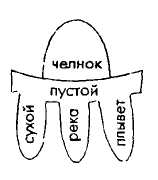
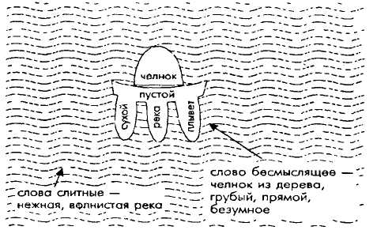
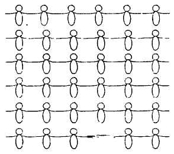
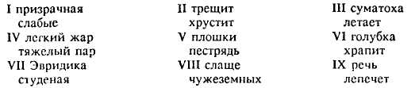

Архэ-1
ВЫПУСК 1
КУЛЬТУРОЛОГИЧЕСКИЙ СЕМИНАР
Научная группа «АРХЭ»
СОДЕРЖАНИЕ
СЕМИНАР «АРХЭ»
В.С.Библер. Еще один диалог Монологиста с Диалогиком
В средоточиях логики культуры
Л.Б.Туманова. Логические лакуны (Опыт определения)
А.В.Ахутин. Записки из-под спуда
С.С.Неретина. Одиссея философии культуры
М.С.Глазман. Как обосновать мышление, или критика Фейербахом логики Гегеля
Из «Архэ-архива»
Л.Б.Туманова, В.С.Библер. XVII век, или Спор логических начал
Насущные собеседники
Н.В.Брагинская. Яков Эммануилович Голосовкер
Я.Э.Голосовкер. Из книги: «Вот о чем думал юноша» (записки юного материалиста)
Я.Э.Голосовкер. Воображение и реальность. «Имагинативный реализм»
Школа диалога культур
С.Ю.Курганов. Фрагменты эстетического общения в античных классах Школы диалога культур
Ушедшие – остаются навсегда
В.С.Библер. Лидия Яковлевна Гинзбург и судьбы русской интеллигенции
С.С.Неретина. О книге М.К.Петрова «Язык, Знак, Культура»
Начало — чем начинается бытие или действие, один из двух пределов, между коими заключено бытие, вещественное либо духовное; почин, зачин, искон, зачало, источник, корень, рожденье, исход < > Первый источник или причина бытия, сила рождающая, про изводящая, создающая < > Первые и главные истины науки, основанья ее < > Стихия, одна из основных составных частей, принимаемых как бы за не делимое, за нечто целое однородное.
Владимир Даль. Толковый словарь
← От редакции
Ежегодник «Архэ» (Начало) — орган культуро-логического семинара, работающего в Москве с 1967 года.
Теперь «Архэ» переносит свою работу на страницы ежегодника, продолжая стилистику диалога, возникающего в обсуждении семинарских докладов и текстологических штудий.
Основные задачи и направления работы
1. Развитие идей философской логики культуры — логики начала логики.
Очень сосредоточенно говоря, — это идеи:
диалога логик;
логики парадокса;
логики «трансдукции» — логического взаимообоснования и преобразования — различных исторических логик мышления.
(Смысл этих идей будет раскрыт на страницах ежегодника.)
2. Сближение и взаимообогащение философской логики культуры и — реального диалога культур, насущного в конце XX века. Работа на грани философских проблем культуры и коренных событий современной (ХХ в.) культуры. Осмысление диалогических начал истории европейской и мировой культуры.
3. Объединение вокруг «Архэ» всех единомышленников и серьезных оппонентов, осмысливающих и оспаривающих нашу основную концепцию. Вовлечение в работу все более широкого круга философствующих молодых читателей. Конференции и семинары, организуемые «Архэ», проходят в русле и на грани коренных идей логики культуры.
4. Организация и публикация наиболее существенных диалогов, выходящих за пределы нашего основного направления, но завязанных в средоточиях современной культуры.
В ближайшее время намечаются диалоги на темы: «Идея культуры в XX в. и социум культуры»; «Целостность и дополнительность феноменов культуры XX в.»; «Смысл культуры, или: индивид в горизонте личности»; «Трагедия русской культуры, интеллигенции, цивилизации в XIX–XX вв. («Вехи» и наше время)»; «Философия и религия в бытии культуры»; «Эпохи культуры и „национальная культура”».
5. Постоянная связь с работой проблемной группы «Школа диалога культур». Ежегодник оказывает помощь педагогическому диалогическому движению, особенно «школе-лаборатории» диалога культур (С.Ю. Курганов). Подразумевается участие в разработке программ, организации конференций и культуро-логических семинаров и т.д. Этой работе будет посвящен специальный раздел ежегодника.
Уже из этого краткого определения задач нашего Ежегодника, раскрывается его основная особенность: это орган определенного философского и культуро-логического направления современной мысли. Наша односторонность и наша «групповщина» осознана и осмыслена. Но — предполагаем мы — именно в споре многих самостоятельных и «односторонних направлений» и философских школ, а отнюдь не в вялой эклектике — залог реального и работающего многообразия и силы современной российской философии.
Примерная структура ежегодника
1. Вступление. Вводная статья, специфицирующая данный номер, задающая сквозную тему.
2. Семинар «Архэ». Переработанная и расширенная стенограмма очередного семинара «Архэ» (доклад, дискуссия, дополнительные результаты, материалы оппонентов, желающих включиться в дискуссию заочно). Такой сквозной диалог — организующий центр всего номера.
3. В средоточиях логики культуры. Исследования в русле философской логики культуры.
4. Из Архэ-архива. Воспроизведение и тщательный анализ (прочтение свежими глазами) классических философских текстов. Материалы «Архэ» за 25 лет работы.
5. Насущные собеседники. Раздел, реализующий включение «Архэ» в основные и наиболее актуальные дискуссии, назревающие и уже возникшие в нашей стране и за рубежом.
6. Школа диалога культур. Работа «Школы диалога культур». Дискуссии, программы. Педагогические тексты.
7. Коротко о книгах. Библиографический раздел. Держать руку на пульсе современной культуро-логической литературы, на пульсе решающих культурных событий.
* * *
В этом кратком введении мы не ставим цели воспроизвести основы нашей концепции. Даже те термины и определения, что были введены выше, скорее могут вызвать любознательность, чем понимание. Чтобы немного удовлетворить эту любознательность, читатель может раскрыть страницы вышедших за последние годы книг и статей участников «Архэ». Впрочем, в какой-то мере роль такого содержательного введения в «логику начал логики» сможет сыграть текст семинара «Диалог Монологиста и Диалогика», которым открывается первый выпуск ежегодника.
СЕМИНАР «АРХЭ»
← В.С.Библер. Еще один диалог Монологиста с Диалогиком
Основной Диалог первого выпуска «АРХЭ» — семинар по докладу «Еще один диалог Монологиста с Диалогиком» (июль 1990). В первом выпуске этот диалог помещен, поскольку он — в какой-то мере — воспроизводит историю наших споров с «монологистами» и историю самой нашей группы.
В предлагаемый текст включены три «жанра» — исходный (конспективный) сценарий диалога, — запись устного доклада и — очерк обсуждения. Предполагаем, что такой тройной — спиральный — поворот темы дает возможность более органично войти в самую суть идеи Начала, в органику возникновение и изменения исходной мысли. Сознательно иду на риск повторов и вариаций.
I. Исходный сценарий. 19.07.90
Монологист
Для начала — объективности ради — подытожу все Ваши аргументы (как я их понимаю) в пользу того, что логика в самых своих основаниях должна быть диалогикой, есть диалогика. Кстати, — любая логика «диалогична» или только современная? У Вас это все же неясно...
Итак, Вы утверждаете, что:
В собственно логическом плане —
1. Философское мышление — по определению своему — отстраняется от всего мышления, взятого в целом, от самого мыслящего разума. Такое отстранение — по Вашему утверждению — предполагает не гегелевскую рефлексию той же (частичной) мысли, но некий иной разум, иное мышление, иначе отстранение и остранение не будет целостным и философски фундаментальным. Для такого отстранения необходимо какое-то исходное недовольство своим разумом, самим бытием моего (всеобщего) мышления.
2. Логическое обоснование начала логики предполагает, опять-таки, по Вашему разумению, необходимое сочетание этой и иной логики, способной — без логического круга и без движения в дурную бесконечность обоснований — дать это исчерпывающее обоснование. Закон тождества в единстве с законом достаточного обоснования осмысливается как логический парадокс. Но вне такого обоснования (без помощи со стороны логических «варягов») философская логика, не сумев «доказать» свое начало, будет условной и не логичной.
3. Далее, Вы предполагаете, что логика, понятая в своем начале, может быть реализована только как спор начал, спор за начало, поскольку каждое из определений начала изначально (не может быть ни к чему сведено) и — диалогично, построено по схематизму «causa sui». Возникает спираль предположений начала и неизбежно отрубание гегелевской «триадности».
Теперь — о Вашей аргументации, идущей «от культуры».
Если современная логика — логика (и онто-логика) культуры, то, как Вы утверждаете, это — необходимо — будет диалогика, логика диалога логик. Вот как Вы обосновываете эту мысль, на этот раз относящуюся к собственно современной логике:
4. Культура всегда существует на грани культур, это — форма бытия данной «цивилизации» (впрочем, это уже будет культура) в путешествии между культурами. Таким путешествием и общением «на грани» и будет диалог культур. Но если данная культура способна находить бесконечные ответы и вопросы в этом диалоге, если она (и ее Собеседник) неисчерпаемы в своей аргументации и в актуализации своего смысла, то диалог культур оборачивается диалогом логик — диалогом всеобщих смыслов бытия.
5. Культурное и логическое обнаружение таких различных смыслов бытия и смыслов самой идеи понимания (форм понятия) предполагает и различных субъектов понимания, предполагает различные (всеобщие) Разумы. Вы обычно называете Разум античный (эйдетический), — Разум средневековый (причащающий), — Разум нововременной (познающий) и Разум собственно диалогический. Где-то туманно упоминается еще восточный Разум, но вообще-то Вы несколько европоцентричны (это еще не призрак монологики?). Ясно, что единственной формой подведения многих всеобщих Разумов под одну «логическую шапку» может быть только их общение, но не обобщение. Следовательно, и в этом плане, логика культуры (логика диалога культур) реализуется как логика диалога логик, — даже — диалога Разумов. Логики еще могут обобщаться; Разумы — никогда.
6. Культура есть прежде всего культура общения с самим собой как со своим alter ego. Такое общение в основе своей есть двойная способность: остранить свое Я, осознать и — затем — осмыслить это Я как нечто абсолютно иное, в ином бытии существующее и — осознать «чужое Ты» как глубинно свое, от тебя неотделимое и — насущное, во всей его отдельности и бесконечной ино-бытийности. Вот — по Вашей мысли — исходный корень диалогизма человеческого бытия и мышления.
7. В итоге: рядоположенность, «одновременность» (в сфере культуры) всеобщих форм философствования уже предполагает, утверждаете Вы, — не монологику, но диалогику их логического общения. Да еще если учесть бесконечность резервов «каждой» из философских — не просто логических, но — онтологических — систем, тогда... Вы считаете свой тезис полностью доказанным.
Как будто я честно воспроизвел и перечислил основные Ваши аргументы. Так вот, попытаюсь теперь обосновать, что все эти тезисы исходят из феноменологического (в смысле — наличного...), на полпути остановленного, а не собственно логического представления о мышлении, о логической обоснованности.
Буду возражать «по пунктам»:
(1) Все же, — если вдуматься, — глубинный интерес (замысел, смысл) самоотстранения логики, ее «диалогичности» это — одна логика, это обретение самотождественности логики с самой собой, индивида — со своим собственным бытием. Иначе — логическая шизофрения, распад мысли. Да, здесь есть недовольство своей собственной мыслью, во всей ее целостности и всеобщности, да, необходимо преодоление этого «недовольства», да, такое онтологическое недовольство есть (неявный — для Гегеля) корень гегелевской рефлексии, но — во имя (в логическое имя) конечного тождества, во имя логического катарсиса, то есть — во имя... логики — одной и единственной. Или, если уж точно по Гегелю, — во имя развития (самотождественной) логики, самотождественного понятия, самотождественного, но — «восходящего» — к себе, — к Духу — субъекта. Все это можно и нужно уточнять, можно и нужно критиковать Гегеля, но конечный монологический смысл истинной логики остается ясным и необходимым. Иначе все эти Ваши самоотстраненные логики будут просто-напросто — разные логики, если снова не предположить некий общий язык, некий металогический мостик (назовите его не мостом, а «лакуной», что в лоб, что — по лбу...). Этим мостиком (или — «лакуной») между «двумя» логиками и окажется вновь восстановленная в своих суверенных правах одна и — снова — единственная — логика (монологика) В гегелевском или — в формально-логическом — смысле.
Ваши две (или сколько их там?) логики, это — «недологики», логические «недоростки».
(2) Выход — в идее начала — на иную логику (чтобы исходно обосновать данную) это — в случае успеха — есть именно самообоснование этой логики, только теперь более развитой, объемной, обоснованной, развитой, прошедшей искус начинания. Это есть процесс втягивания в данную логику — пусть через точку, момент начала — всех иных, феноменологически и исторически иных, различных логик. Это — снятие их исторической (возможностной) инаковости и обнаружения их логической — в идее начала — тождественности. То, что только возможно, это еще не логика (это ее возможность, историческая предпосылка). Логика всеобща действительно (тогда это — логика). Возможностно — многое, но действительно — в итоге всех Ваших «изначальных» процедур — только одно, замкнутое на себя мега-понятие ее Величества Логики. Здесь уже нет ни прошлого, ни будущего, нет самого времени. Время из логики исключено. По определению.
(3) Это же относится — с соответствующими изменениями — к Вашему спасительному «спору начал» Да, спор начал необходим, но — чтобы развить идею этого (одного, более богато представленного) начала, того самого «первого пункта» в «движении стрелы». Скажем, если говорить о споре начал Нового времени, этот спор (Декарта, Спинозы, Лейбница и других) идет во имя углубления одной идеи — самодовлеющей (себя самое объясняющей) причинности. А включение в этот спор аристотелевских «причин» еще более углубляет эту одну идею начала, еще более ее сосредоточивает в изначальность все той же, только все более точно и глубоко понятой, одной единой логики. Вернусь к Вашему излюбленному примеру с XVII веком. В этом узком горлышке причинности (так сформулированной, чтобы избежать падения в дурную бесконечность...) все решения, предложенные Декартом или Спинозой, Лейбницем или Паскалем, отождествляются как формы самообоснования схематизма «причина — действие» или, формально-логически определяя, — как формы схематизма «причина — следствие». И Платон, и Аристотель, и Аквинат льют свой логический раствор в то же горлышко, углубляя и отождествляя исторически различные формы обоснования. Все логические споры имеют логический смысл только ради точности и доказательности непротиворечивого вывода, ради убедительности логической формальной дедукции, то есть, ради той «скучной» середины логического пути, которую Вы надменно отвергаете во имя парадоксально заманчивого Начала. Но в реальном итоге «середка» аристотелевской «Аналитики» впритык подстраивается к «середке» гегелевской «Логики», а еще лучше — к «середке» математической дедукции. А самые великолепные Начала — в конечном счете — отбрасываются в отстойник метафизических игр и развлечений. Это — строительные «леса». Логическое «здание» — единая логика вывода, обоснования, доказательства и т.д. и т.п.
(4) Это уже о Ваших культурологических аргументах. Конечно, феноменологически исторические культуры — различны (я менее всего покушаюсь на их историческое различие...). Но в напряженной точке логической встречи и перехода они тождественны в сфере «чистого» мышления, его основных форм и схем. Именно поэтому возможен разговор культур, их интерес друг к другу, их взаимопонимание. Именно в этой точке отождествления возможно понять смену культур «восходяще», то есть — логически. Что отнюдь не отменяет культурологического интереса к историческим зигзагам и «неповторимостям»... Собственно, это и делает Гегель — понимает исторический момент «превращения начал» как логический момент развертывания истины, переводит идею «многогранника» исторической «наследственности» (тогда логика невозможна, все время идут безосновательные перескоки с грани на грань, причем неясно, с какой грани начинать изложение...) в идею логического восхождения, «снятия». Вы шумите против логики «восхождения», поскольку не видите ироничности и методологичности этой идеи, не замечаете скрытого в ней — «als ob...» («как если бы...» можно было представить историю мысли в форме непрерывной восходящей линии, в форме дедукции). Но только на основе такого «как если бы...» возможен диалог между культурами в одном логическом пространстве. А уж как пойдет (содержательно) этот разговор, — это уже иное дело. Тут во многом будет прав М.М. Бахтин как в своей поэтике диалога, так и в своем отрицании возможностей логики диалогического общения.
(5) Если, как у Вас получается, исходное для логики — это общение между онтологически различными культурами и личностями, то — хоть Вы и не хотите признаться — в это самое «между...», в этот промежуток проваливается все логическое непрерывное движение. Чем конкретнее отработана данная логика, тем «дальше» от нее другая. Лакуна все больше, «ноги» расползаются... «Между» — логически — пустота, ничто. И это ничто, заключенное — в диалоге — в промежутке разных логик, разных Разумов, съедает все содержание и всю форму «моста», «перехода», «лакуны». Или — выход в металогику (см. выше), или — в промежуточное (отделяющее логику от логики) пустое место. В этом промежутке — эмпирия личного общения. Пусть самого трагичного и самого радостного («катарсис»). Но это уже — сфера поэтики, а логически — пустота пустотой и остается. В поэтике дискретное действительно берет абсолютный верх над континуальным (обоснованием), хотя в Логике... См. все сказанное выше.
(6) Еще одно. Переходы и бесконечные «резервы» в развертывании каждой исторически эпохальной логики (Ваш любимый аргумент) логически (!) должны быть поняты как ее этапы, ступени. Все более мелкие и точные. Феноменологически и поэтически эти «этапы» отвечают на современные вопросы, но... опять-таки — логически — они предшествуют исходным определениям «следующей» философской логики. Вопросы — ответы — вопросы (смысл) — это эвристический прием (средство), для того чтобы выстроить поступательное логическое движение. Тут Вы слишком поспешно и легкомысленно проходите мимо гегелевской (по-гегелевски понимаемой) истории философии, которая как раз и включает в себя и бесконечность каждой философской эпохи, и их — этих эпох — поступательную одномоментность.
Вот несколько моих возражений в ответ на Ваш диалогический пафос.
Диалогик
Суть моего ответа на Ваш ответ — достаточно проста и однозначна. Над Вами всепоглощающе (хотя и неявно) довлеет нововременной смысл логики и разумения — смысл Разума познающего. Тогда все правильно. По самому большому счету. Нам надо понять, что есть логика. Но отвечая на этот вопрос, мы его — в Новое время — неявно переформулируем: в чем Сущность логики? (Ведь для «познания» в такой переформулировке заключен весь смысл понимания.) Но тогда бытие логики и ее предполагание не суть важны...
Если логика — это форма движения (в мысли) сущностного, существенного (!) тождества мысли и бытия, то тогда все выходит по Вашей схеме:
а) Понять сущность логики и означает достигнуть тождества мысли (о бытии) и самого бытия (бытия мысли). Все остальное — подробности, детали, путь к цели. Пусть даже — по Гегелю — путь, крайне, предельно существенный, (сохраняемый в результатах), но все же определяемый через эту цель. А цель эта — понять ее (логики) сущность как некий медиатор между бытием и понятием. Исторически были, конечно, какие-то шероховатости: апория мысли и бытия (в Античности), антитеза мысли и бытия (в Средние века), но, в конечном счете, на перегоне сущности («по сути это — есть то...», «бытие есть мысль...») все едино, «все кошки серы». «Быть» тождественно с — «знать бытие».
б) Понять сущность логики (но не ее бытие и не ее возможность) означает понять тождество «разных логик» — как Логик (в их сущности, в их нововременном повороте). Казалось бы, такой безвредный, такой самоочевидный поворот: понять нечто означает понять сущность этого «нечто». А как же иначе? Но отождествление это несет в себе бесконечный хвост последствий. Особенно если такое отождествление сформулировано по отношению к логике.
Однако если сверхзадача понимания логики — это понимание самой возможности ее бытия (вне нас, для нас), то... все переворачивается. Скажем, тогда необходимо искать бытие логики в том «месте», где ее нет, где нет (еще или уже) мысли и бытия, где они и их взаимоопределение только возможны. Возможны не в смысле эмпирической вероятности, но в смысле онто-логической возможности, того, что... уже есть, в смысле «возможности настоящего». Логика только возможна даже тогда (в первую голову тогда), когда она есть, когда она действительна. Тогда логика — в спектре возможностей.
Рассмотрим этот мой странный «контр-ответ» внимательнее:
1. Ваш («сущностный») подход предполагает один (для логики, для ее понимания) «объект» и смысл познания, один на все времена, но все время отодвигаемый дальше и дальше, — с выпрямлением всех зигзагов и перерывов. Этот объект логики и сама истинная логика уже — извечно — есть в логическом пространстве идеи, о них нельзя сказать, что они «возможны в самом своем бытии». Логика, в Вашем толковании, только обнаруживается (все глубже и точнее), но не становится. Вопрос возникает только к мере ее познания, но не к ее бытию. Это же, соответственно, по отношению к ее полюсам — мышлению и бытию. Но тогда Ваша правда: «монологика» — единственный выход. Логики (впрочем, здесь правомочно только единственное число) и формально и содержательно не могут быть гетерогенны. И — снова — все иначе в другом понимании: если логика — всегда — в формах ее впервые-становления, если разум не сущностей, но — насущен, то в этом случае логика по определению диалогична (это — одно из ее определений). Ведь возможность настоящего означает логичность другой возможности (другого бытия), предполагает общение между возможностями как «суть» (смысл) логического.
2. Отсюда у Вас, дорогой Монологист, и получается спецификация точек «трансдукции» (это — мой термин) только как точек перехода (с вектором в одну сторону — вверх), как «этапов» одновекторного развития — в «светлое будущее». Между тем — «Я» и как индивид и как субъект логики, тем более «Я», чем более для меня насущен Ты (как некое абсолютное иное бытие), чем более моя логика нуждается в развитии иной логики, иного, абсолютно «вненаходимого» всеобщего, актуализации иного бытия бесконечно возможного мира. То есть чем более определение моего логического бытия многополюсное. Это не уничтожает самотождественность «точки» взаимоперехода логик, но дает этой точке все более континуальное определение, определение исходной точки многих векторов, причем в противоположные стороны «направленных». (Конечно, геометрический образ несколько упрощает ситуацию, но придает ей оттенок наглядности.)
3. Сравните также панлогизм «Определения» (Античность) и панлогизм «Вывода» (Новое время). Правда (в редакции Гегеля), в «конце» логики, в Идее, все же есть определение... но — это определение самого логического движения, в его целостном виде (форме). То есть, у Гегеля как-то восстанавливается античный панлогизм, но в усеченном, подсобном виде. Ср. также средневековое «восхождение» — «нисхождение». Здесь, и в Античности, и в Средних веках, — иное, чем в Новое время понимание «феноменологичности». Иное понимание Начала.
Но в основе Вашей логики господствует только идея дедуктивно-аксиоматического движения мысли, то есть некритичность к основаниям... Их логическая пустотность... Уже здесь заложено «отсечение» точек начала. Вы — по-своему — очень последовательны.
4. Логика Нового времени снимает парадокс внелогичности бытия как «заманки» для логики, для ее апофатического определения. Но если этот парадокс «бытия вне мысли» остается, то единственной возможностью его сохранить и логически воспроизвести может быть только диалог многих логик изображения и углубления этого парадокса (дать смысл бытия)... Бытие — для диалогики — в «середке», а не на «одном конце» познания.
5. Поэтому феноменологически Ты всегда один, но в смысле твоего бытия — в общении, в творчестве — Ты всегда адресован, Ты — всегда возможностен. Определение через тождество логик — именно это есть эмпирическое определение (бытие — без смысла, не ответное, но тогда — нечто нелогическое...). Полубытие, выдающее себя за целостную логику.
Монологист
Переведу наш спор в иную плоскость. Верну Вам Ваш упрек. Это именно у Вас — в пределе — сохраняется наличная история (авантюр) логики, но не логика истории, с ее трагической одноразовостью и невозвратностью (провал в Ничто...) — не только бытия людей, но и их мысли (NB)...
Логика Гегеля, к примеру, учитывает этот трагизм истории и понимает, что в логике история сохраняется только в форме «снятия» (в форме языка). Вы в своей логике уничтожаете смысл истории, ее стрелу (а стрела имеет смысл в цели ее полета) — (ср. Гегель и... Бердяев). Ваша логика — по замыслу — логика культуры (впрочем, Бахтин показал, что культура логики не терпит), но не логика истории, которая — хочешь не хочешь — восхождение и снятие (в живущих — всего пройденного мертвыми — пути). Или — религиозно — живых, но в их «снятом» (в Вечности) бытии. Логически сие и означает — вернусь к своей аргументации — что каждый человек самой своей жизнью и смертью включается в непрерывную логику вывода и любое начало логически должно быть понято как (als ob...) момент дедукции. (Ср. Декарт.) Только тогда логика исторична, история логична. Любое подключение начала (извне) должно быть перенормировано как момент внутреннего логического движения, (даже если это «абсолютное начало»). Вы говорите, что иначе — если в начале нет обрыва цепи и самообоснования — логика недостаточно логична. Предположим. Но дело в том, что само это начало должно быть осмыслено как сцепление с предыдущим, или так: продолжение может быть (см. «триада» Гегеля) переформулировано как (но ирония сохраняется...) начало, — учитывая, что момент «обрыва» наличен в каждой точке логического следования, в статусе интуиции (1) и в итоге топологического построения целостного вывода (2).
Диалогик
Я мог бы сказать о включении в спор средневекового и античного, нововременного и средневекового мышления; в этом споре все Ваши аргументы приобрели бы совсем иной характер (восхождение; начало; роль «ничто» и т.д.), но сейчас ограничусь одним «маргинальным» соображением.
Все-таки наш «спор» имеет смысл как аргументация монологиста — в ответ на логику диалогика (и обратно), то есть только в режиме «вопроса-ответа» логика нашего спора имеет смысл. И — стержень. Без вопроса все наши утверждения бессмысленны. Бахтинское «высказывание» — на фоне неявной (иной) логики, к примеру — монологичной. Или — логика истории — на фоне логики культуры. Ведь не случайно я спорю с самим собой.
И — еще — совсем кратко:
...Исходные аксиомы бессмысленны, если они только формальны, если в них нет того, что вне их, если они не «о...». Но тогда необходимо в логику начала вводить не только рассудок и разум, но и «неопределенность» «способности суждения», вводить (иное) всеобщее бытие, то есть — уже особенно всеобщее.
...Все иначе, если учесть точку сжатия системы — в мега-понятие... Тогда нет отдельной логики дедукции и — определения, тогда отвергаются аргументы монологиста о панлогичности вывода...
...Сам спор «монологиста» и «диалогика» происходит на фоне, в контексте совсем иных «споров»: «дедукции» и — «трансдукции», логического тождества и — парадокса... Тогда особое значение НАЧАЛА перерастает проблему диалогизма.
В заключение — два момента, — несколько в сторону, — но существенные для дальнейших раздумий.
Во-первых, общее отличие логики культуры от всех предыдущих логик (близких в их тяготении к монологизму) это — что все они (и античная, и средневековая, и нововременная) «открывались» — сами по себе — в сторону метафизики (не онто-логики), в потусторонность бытия, а их диалогическая закраина давалась лишь апостериори, когда «побеждала» иная, новая логика. «Отодвигания» «бытия» и «один» разум все время были — в каждой логике по-своему — полюсом притяжения этих логик и «Познающий Разум» оказался их «по истине...».
Логика культуры (диалогика...) уже внутри «самой себя» открывает бытие в сердцевине различных логик, в средоточии различных Разумов. Идея произведения открывает это «бытие-возможность» «при жизни» данной логики, а не после ее исторической смерти.
Во-вторых, другое отличие логики культуры от всех — опять же тяготеющих к монологизму... — «предшествующих» европейских логик состоит в том, что — в «до-культурологических» потенциях формировался — в качестве единственного логического демиурга — тот или другой тип Всеобщего разума: в Античности — «Форма форм», в Средневековье — Всеобщий субъект, в Новое время Идеальный Дух-Идея, (скажем, гегелевского закала), или абстрактный, единый для — и на всех — формальный разум... В логике культуры явным демиургом логического движения оказывается разум индивида из-обретающего — общением, но не обобщением — свой всеобщий характер. Здесь индивидуальный разум лишь возможностно — в произведении — всеобщ и единствен.
Поэтому наш спор с «монологистом» существен и осмыслен и в ином (чем он был осуществлен в этом тексте), — в более напряженном логическом смысле. Но — это — в будущей работе.
Монологист
И все же оставлю за собой последнее слово. Буду рассуждать на Вашей почве. Если даже — вслед за Вами — предположить некую одновременность всех диалогизирующих логик, то это подразумевает некое одно логическое пространство. Одно — для всех исторических и всех возможных логик. Такое одно «пространство» (или — «квазипространство») потребует ряд логических процедур для его формирования, удерживания, восстановления. Для сохранения единой логической «матрицы». Процедуры эти должны будут носить строго формальный и непротиворечивый характер. Вот и получается, что — не в дверь, так в окно — «диалогика» должна строиться по монологическим законам и нормам.
Диалогик
Ход — неожиданный. «Под занавес» — сильнейший аргумент. Да, над этим надо всерьез подумать.
* * *
Вот — вкратце — предварительная наметка доклада. Теперь — основной текст.
II. Устный доклад
Итак, здесь я попытаюсь воспроизвести возможный диалог Монологиста и Диалогика, еще один диалог, на основе многих реальных и уже состоявшихся.
Но сразу же возникает одно затруднение, и вот в какой связи. Последние года два на наших внутренних семинарах и на семинарах в Институте философии мы в значительной мере отошли от собственно логических проблем, от той философской логики культуры, что пытались ранее разрабатывать. Мы обращали особое внимание на пограничье между логикой и культурой, мышлением и сознанием, разрабатывали «историческую поэтику личности», т.е. сосредоточились на тех моментах, которые раскрывают как бы культурологический замысел нашей философской логики. Ее «феноменологию духа». И это нас, конечно, несколько приохотило к неким околологическим, даже — вне-логическим разговорам, и несколько отучило от более строгих, собственно логических размышлений. Поэтому заранее должен предупредить, что сегодня я постараюсь строить свои размышления в собственно логическом ключе. Может быть, это будет несколько суховато, потребует дополнительного напряжения, но одна из задач нашего семинара — это не просто останавливаться на экзистенциальной
ситуации современного сознания, но всерьез осмысливать то мышление, что только в философской логике развертывается рефлексивно, последовательно и строго.
Философская логика культуры, которую мы развиваем, выступает в трех основных формах: в логике диалога логик, в логике парадокса и в логике «трансдукции» исторически наличных логик. Вот основные «группы преобразований» нашей логики, интегрально определяемой как логика начала (начал) логики. И все эти собственно логические сюжеты будут сегодня стоять в центре нашего внимания. Это — первое вступительное замечание.
Теперь — второе соображение.
Как часто бывает на таком домашнем семинаре, наша задача (во всяком случае, моя задача) не состоит в том, чтобы изложить готовые результаты исследований, которые могут уже лечь в рамки какой-то статьи, но с пылу, с жару вовлечь слушателей в ход размышлений, логических заготовок, т.е. оказаться где-то «на полпути», в дороге, в «промежутке», а не в окончательном, бесспорном итоге. Больше того, я вообще считаю, что такого типа семинары особенно важны, — тем более сейчас: все же существует гласность, статьи можно почитать, а вот совместно размышлять в статьях невозможно, этого, конечно, никакие статьи, никакая гласность не заменит. И на Руси такая форма размышлений вслух, в узком кругу, крайне существенна.
И, наконец, — третье вступительное соображение. В последнее время мы несколько заскорузли (внутри логики) в своей жаргонной терминологии, в привычных терминах «диалогики», как-то надменно относясь к возможному оппоненту. Но может быть, впрочем, оппоненты нам дают повод, потому что сами они, на мой взгляд, недостаточно серьезно с нами спорят Не входят в суть нашей аргументации (впрочем, и мы не без греха) Ну что ж, приходится взять на себя эту функцию и от имени оппонента, — от имени внутреннего оппонента — обнаружить те трудности, те сбои, те несуразицы, которые есть (конечно же — есть!) в нашей логике.
И, в частности, это уточнение особо существенно в плане отношений между логикой современной, которую я представляю как логику культуры, причем взятую в одном из ее всеобщих определений — как «логика диалога логик» («диалогика» в этом смысле слова), и — ее непосредственной предшественницей и наиболее активным оппонентом — монологикой то ли в форме формальной, математической логики, то ли в форме наиболее развитой, содержательной монологики, логики Гегеля. Это размежевание, это Auseinandersetzen есть для нас важнейший внутренний диалог, потому что непосредственно именно спор с мышлением Нового времени (XVII—XIX веков) повседневно протекает в нашем сознании, в нашем мышлении, в творческих деяниях любого современного человека. Так что для нас этот диалог между, условно говоря, «монологикой» (утверждающей необходимость только одной-единственной логики) и — «диалогикой» (утверждающей изначальный диалогизм мысли) оказывается на мой взгляд, особенно существенным и насущным.
Для начала наш внутренний оппонент-Монологист честно воспроизведет ту аргументацию «в пользу» диалогизма, что развита в ряде наших работ, выпущенных в последнее время. Поскольку этот оппонент — мое alter ego, то ему — и карты в руки...
Итак, начинает этот разговор «монологист» (как тяжеловесно ни звучит это определение).
Монологист
Объективности ради подытожу для начала все Ваши основные аргументы в «пользу» того, что логика в самых своих основаниях должна быть диалогикой, есть — диалогика, есть диалог логик. Кстати, мне с самого начала, уважаемый мой оппонент-Диалогик, не особенно ясно, говорите ли Вы о том, что любая логика в своих предельных основаниях диалогична или Вы относите это только к современной логике. Но это большая разница! Я так и не понял, является ли, на Ваш взгляд, и античная, и средневековая, и нововременная логика, если она хочет быть действительно логикой и удовлетворить всем требованиям, всем претензиям логики, — в своей глубинной основе диалогической или же только современная логика — действительно диалогична, а античная, средневековая, нововременная логики диалогичны лишь в той мере, в которой они включаются в современную логику — и тем самым приобретают или актуализируют черты диалогики? Это мне не совсем ясно. Да, простите меня за некоторую наглость, мне кажется, что это и Вам не совсем ясно. Вы все время балансируете между утверждением, что диалогика присуща любой человеческой философской логике, любому мышлению, взятому во всеобщности, и утверждением, что это характеристика именно одной из логик, а именно — современной, XX века. Но пока оставим это в стороне. Итак, если я правильно и объективно Вас воспроизвожу, то вот основные Ваши аргументы (на которые я дальше постараюсь ответить) в пользу того утверждения, что логика может быть истинно логикой, философской логикой, лишь в том случае, если она диалогична.
Первое. Вы утверждаете следующее: философское мышление всегда отстраняется от всего мышления, взятого в целом. И это не рефлексия, как у Гегеля, это — нечто иное. Это, по сути дела, пускай потенциально — уже есть две логики, два ее всеобщих определения. Я мыслю о своем мышлении, причем взятом в целом, как нечто единое, одно. В этом особенность философской логики, когда само бытие для логика выступает в статусе бытия мышления, но — как философ — я мыслю не о данной мысли, критикуя некоторые ее особенности или «недостатки», но о всем своем способе мышления, взятом в целом его определении. Так вот, если вдуматься, говорите Вы, то мышление о мышлении уже подразумевает некоторую диалогичность, некое бытие двух логик. Причем Вы рассуждаете примерно так: по Гегелю получается, что мышление о мышлении — это «рефлексия», когда и на том и на другом полюсе, условно говоря и «справа» и «слева», — и мышление, о котором я мыслю, и мышление, которое мыслит, — есть — по сути (вот где спасение!) — одно и то же мышление, только в разных «наклонениях»: в одном случае — как предмет мысли, в другом случае — как субъект мысли. На Ваш взгляд, здесь коренная ошибка Гегеля, — потому что если мышление взято в целом и я о нем мыслю, то взятое в целом (в проекции на будущее) мышление выступает уже не как некое положенное, развернутое мышление, но как некое сосредоточенное, потенциальное мышление, как некоторый РАЗУМ. Поэтому целостная мысль о целостной мысли — это Разум о Разуме, это — субъект о субъекте, это субъект мышления о субъекте мышления. Или, точнее — это Разум, обращающийся к Разуму. В этом акте я выступаю как тот, кто мыслит, и как тот, к кому обращено мое мышление, который также сосредоточен в неком Разуме. Но тогда это отношение, утверждаете Вы, обладает как бы некоторым качеством инверсии. Тот разум, о котором я мыслю, также оказывается активным субъектом, также мыслит о том разуме, который мыслит о нем... Они находятся, говорите Вы, — что и требовалось доказать, — в ситуации некоторого диалога, а не так, как у Гегеля, когда Идея и Дух оказываются распределены чисто атрибутивно.
И — второй Ваш упрек Гегелю. Он, как Вы считаете, «недостаточно» логик, недостаточно основателен в «своих логических началах». Гегель и вообще философская логика Нового времени не могут фундаментально додумать логическую ответственность самого исходного замысла рефлексии; они не отвечают на вопрос, почему (даже — зачем...) мышлению внутренне необходимо мыслить о себе самом. На Ваш взгляд, рефлексия глубинно коренится в некотором недовольстве своим мышлением, в несовпадении мышления (и — субъекта мысли) с самим собой. Доводя это изначальное сомнение до предела, разум доходит до понимания недостаточности старого определения разума, даже — его (разума) прежнего бытия. Здесь требуется новая установка, новый замысел разумения.
Момент гегелевской рефлексии — это момент переплавки старой понимающей установки разума в новую установку понимания. Вы даже приводите в одной из своих последних работ движение гегелевской мысли в конце «Малой» и особенно — «Большой логики» и утверждаете, что Гегель в конце логического развития и исчерпания всех процедур «снятия» оказывается вынужден «логику системы» претворить в «логику метода». Но, претворенная в Метод, логика с особой силой требует предмета, по отношению к которому этот метод может действовать, а предмет-то (сознание, знание «о себе») весь уже исчерпан, и таким предметом может стать лишь этот (познающий) Разум, рассматриваемый с позиций иного (?) Разума, но это абсолютно невозможно (в пределах гегелевской логики). Гегель вынужден или заново (ради метода) предполагать Природу (не мысль), но — это «повторение пройденного», или... вновь и вновь предполагать (и вновь отрицать) иное всеобщее, радикально иной Разум (см. выше). Вы ссылаетесь на то, что Гегель в одном из писем (незадолго до смерти) действительно высказывает такую (диалогическую?) гипотезу, но сразу решительно ее отвергает как запрещенный — с точки зрения «монологики» — ход. Тогда бы была невозможна сама (единая, всеобщая) логика. Однако, — преодолевая сомнения Гегеля, — Вы настаиваете, что полная логическая ответственность за тот основной логический феномен, что в философской логике целостное всеобщее мышление само оказывается предметом размышления, эта ответственность требует признать (минимум) два различных разума — тот, кто мыслит, и тот, о котором осуществляется мысль. Основой их рефлексии должно стать стремление преодолеть прежнее определение Разума.
Так я представляю Вашу, уважаемый Диалогик, первую аргументацию в пользу того, что подлинная логика может быть только диалогикой, т.е. — некоторым спором различных всеобщих определений Разума.
Второе Ваше утверждение, вторая линия аргументации, насколько я понимаю, состоит в следующем (особенно полно это выражено в Вашей книге «От наукоучения — к логике культуры» и в ряде других работ):
Вы утверждаете, что Логика, для того чтобы быть целостной логикой, должна не только логически последовательно строить вывод, но необходимо, чтобы основание логики, ее исходные начала также были логически обоснованы. Иначе логика будет колоссом на глиняных ногах, поскольку ее исходные основания, из которых — предположим — все скрупулезно и детально логически выводится, сами не обоснованы. Возникает задача логически обосновать начало логического движения. Но тут, говорите Вы, чтобы избежать «две опасности», необходимо предположить идею диалогики. Что это за две опасности — в Вашем изложении, в Вашем понимании? Первая опасность — это опасность движения «в дурную бесконечность». Начало должно быть обосновано каким-то предшествующим утверждением, оно — опять-таки — предшествующим, и так ad infinitum... (в минимальной математико-логической форме это дано в теореме Гёделя). Но это по отношению к позитивной теории, а по отношению к целостной логике Ваша позиция гораздо более максималистская. Приходится двигаться в дурную бесконечность «всеобщего», и тогда мы даже не дойдем до самой логики, она где-то в бесконечности вообще «не начинается», но только продолжается, и тогда основания логики принципиально не могут быть обоснованы. Пустотна любая монологика, поскольку она не имеет начала. Это движение в дурную бесконечность обоснования должно быть каким-то образом прервано; однако этим моментом обоснования исходных начал не может быть и та дедуктивная логика, что на этих основаниях строится, иначе мы попадем во вторую запретную зону — порочного логического круга. Ведь тогда логик строит обоснование начал мысли, исходя из тех утверждений, которые из этих начал выводятся... Опасность «дурной бесконечности» и опасность «порочного круга» заставляют предположить: логика, для того чтобы она могла обосновать свои начала, должна каким-то образом (?) в этом начале сопрягать абсолютно разные логики, в момент обоснования соединенные в неких формах «диалога». Диалог разных логик по определению необходим для обоснования начал (одной) логики!? Или, как Вы иногда утверждаете, — в плане формальной логики это означает, что проблема начала логического движения должна как-то отождествить «закон тождества» и «закон достаточного основания». То, что предположено в основе логики, должно быть самотождественным (не требующим «движения вниз...») внутри себя. И — одновременно — должно быть способным не совпадать с собой, обосновать свое собственное начало, быть опять-таки — диалогичным.
Теперь — третья линия Ваших утверждений: начало, утверждаете Вы, которое должно быть понято как способ самообоснования (если мы его возьмем уже не по отношению к дальнейшему логическому движению, а по отношению к самому себе), должно выступать как некоторый континуум начал, спор начал, некая логика начала. Так что каждое определение начала и — внутри себя — континуально. Все содержит в себе. Возникает, как Вы полагаете, некоторое «отрубание» (или — замыкание на «тезис») гегелевской триадности, своеобразная бесконечная спираль исходных предположений; начало несет внутри себя спор различных возможных логик.
Вот основные, как мне кажется, Ваши утверждения в плане собственно логическом.
Другие Ваши определения связаны с идеей культуры, основаны на понимании всеобщности культуры (в ее онтологии) на грани XXI века. Вы утверждаете, что современная логика (именно логика XX века, а не логика вообще) должна быть диалогичной, потому что это «онтологика» культуры. Отталкиваясь от понятия культуры, Вы выдвигаете дополнительно еще следующие обоснования диалогизма (воспроизведу самые основные, чтобы быть честным, чтобы Вы потом не говорили, что, споря с Вами, я не учитывал Ваши реальные доводы). Ведь так часто в наших спорах мы стараемся оппонента сделать поглупее и тогда легко его побеждаем и пляшем на его тризне. Поэтому мне бы хотелось честно воспроизвести, мой дорогой оппонент-Диалогик, все Ваши утверждения, как я, во всяком случае, их понимаю (может быть, впрочем, у меня — как у монологиста — испорчен вкус...).
Итак, «танцуя» от культуры, Вы исходите, во-первых, из бахтинского тезиса о том, что культура всегда существует на грани, она собственной территории не имеет. Культура есть культура и замыкается «на себя» в отличие от, скажем, какой-нибудь определенной цивилизации, когда она выходит на свой предел и как SOS, как крик — «спасите наши души!» обращается к иной культуре. Тогда она и есть культура в собственном смысле. Вы говорите даже, что отдельная культура, скажем античная, исходно амбивалентна, диалогична, поскольку с позиций начала дионисийского она способна извне смотреть на свое «апполонийское» начало. Итак, культура существует на грани. Но если культура всегда существует на грани, в общении между различными культурами и только на этой грани каждая культура способна бесконечно развертывать свою всеобщность, то философская логика культуры есть, по сути дела, логика этих граней, этого «пограничья», доводя спор культур до последнего предела, до последних (и изначальных) вопросов бытия. Диалог логик есть выражение всеобщности диалога культур. Недостаток Бахтина, с Вашей точки зрения, состоит в том, что он говорит о диалоге культур, не доводя эту идею до идеи диалога логик. А без «диалога логик» культура еще не всеобща. Только поняв «свое» бытие как всеобщую актуализацию одной из всеобщих возможностей бесконечно возможного мира, становится ясным, что моя культура, общаясь с иной культурой, не исчезает, не «снимается» по-гегелевски, не восходит к какой-то высшей «метакультуре», но — именно в этом споре — выявляет свои собственные бесконечные (= логические) резервы возможностей и смыслов. Но эту бесконечность, эту всеобщность возможностей культуры можно понять только через логику, через потенциальную логическую возможность. Поэтому если утверждение идеи культуры в конечном счете требует утверждения диалога культур, то идея «диалога культур», взятая во всеобщности в свою очередь предполагает идею диалога логик.
Следующий Ваш аргумент «от культуры» развивает только что сформулированное положение. Вы утверждаете, что, вдумываясь в определение культуры как бытия «на грани культуры», возможно — и феноменологически, и исторически, а в конечном счете и логически — выдвинуть предположение не просто разных форм «актуализации мира», но — разных субъектов разумения, разных всеобщих Разумов. Вы утверждаете, что нелепо сводить понимание к одному, для нас наиболее привычному виду — познанию. Для нас формула понимания проста. Понять предмет — значит познать его сущность. Вот и все. Нет, говорите Вы, это — «познающий разум», но определение «разума познающего» отнюдь не исчерпывает спектра понятий. Античный разум в своих основаниях, в своих началах устроен совсем иначе, его задача не «познать сущность» вещей, но понять возможность бытия как первосущего (по Аристотелю), а не просто в его «сущности». «Эйдетическая» украшенность, «внутренняя форма» вещей, эйдетическая устремленность — вот что характеризует эту направленность разума.
Средневековый разум стремился и не познать предмет, и не понять его как некую внутреннюю форму, как бытие, которое не связано никаким сущностным определением, он стремился понять любой предмет в его причастности, причащении всеобщему субъекту. Понять предмет — значит понять его как продолжение Рук и Ума, как орудие, как средство к некой вне его лежащей цели.
И только в Новое время — говорите Вы — действительно логика образования понятий, ответ на вопрос «как формируется понятие?» совпадает с ответом на вопрос, как познать предмет в его сущности, в гегелевском интервале «рефлексии» — в среднем «прогоне» между бытием и понятием. Но если так, утверждаете Вы, поскольку различно само понятие «понимания», постольку невозможно установить между разными Разумами нечто общее в смысле обобщения. Между ними нет ничего «выносимого за скобки». Общим в логическом плане является в конечном счете, говорите Вы, не обобщение, а ОБЩЕНИЕ, не стирание всех возможных различий, но некоторое всестороннее общение этих споров, этих различных «всеобщих форм разумения». Просто логически невозможно, бессмысленно обобщать эти предельные всеобщие ипостаси разумения, они не обобщаемы.
Не буду сейчас приводить тексты, чтобы не слишком задерживать наш разговор, но, мне думается, я честно обозначил Ваши основные аргументы в пользу того, что истинная философская логика всегда есть — по сути — диалогика.
* * *
Так вот, попытаюсь доказать, что — как я, Монологист, убежден — все эти Ваши сложности исходят все же из полуэмпирического, на «полпути» от истины возникающего, а не собственно-логического представления о мышлении и о логическом обосновании.
На мой взгляд, понять логику как диалогику — значит действительно остановиться на полпути. Это значит описать (и вы неплохо описываете) особенности мышления, да и самой логики как феномена, но не доходить до его глубинного замысла, до «ноумена».
Ваш первый аргумент: ссылка на необходимость отстранения разума, мышления от самого себя, во всей его цельности. На мой взгляд, глубинный, ну, скажу в кавычках — «интерес», смысл, наконец — замысел этого самого отстранения логики от самое себя — это все же формирование одной логики, это достижение, — пусть в идеале, пусть в конечном итоге, — самотождественности мысли с самой собой, логики с самой собой, разума с самим собой. Иначе возникает, простите меня за такой не совсем парламентский термин, какая-то логическая шизофрения. Да, существует недовольство Разума самим собой, логики как всеобщего определения самой собой, да, необходимо преодоление этого тревожного несовпадения, но именно преодоление во имя логической ясности, цельности, во имя тождества. Это стремление и реализует Гегель, говоря о том, что «переход» существует в бытии, «рефлексия» существует в сущности, а для понятия характерно развитие. Понятие — всегда одно, единое, но оно — развивается, развертывается через преодоление, через расчленение, через «триадность», через обнаружение Вашей «диалогичности» понятие выходит на следующую ступень своего тождества, по-настоящему возвышается, восходит, облегченно «вздыхает»… Я согласен: без Вашего раздвоения, без противопоставления разума самому себе, вне диалога с собой разум не может выйти (но именно в этом «выходе» его смысл как разума) на следующую ступень самотождественности. Это так же как любой человек, каждый индивид лишь тогда нормален, когда диалог его с самим собой в конечном счете фокусируется, результируется в монологе, если хотите — в исповеди. Вот тогда мы можем говорить о том, что этот человек — этот. При всех своих различиях и спорах — он тождественен себе, во всем своем развитии. Это — Пушкин; это — Сервантес; это — Гегель. По определению и определением мы устанавливаем его внутреннюю, личностную, или, говоря в логическом плане, — логическую тождественность себе.
Иначе эти самые отстраненные Ваши логики будут, простите меня, просто разные логики. Если не предположить общий язык. Если не предположить высшее тождество. Вы называете это единое, что связывает «разные логики», «диалогом», или «полифонией», или... как угодно. Что в лоб, что по лбу. Ваши «две» или — сколько их там? — «логики» всегда будут «не-до-логики», «логические недоростки», если они не могут быть поняты — в конечном счете — как единая (одна) логика или как момент развития исходного (одного) понятия, Идеи.
Постараюсь вспомнить Ваш второй аргумент. Вот это самое обоснование начала. Тут вы особенно много тратите слов, особенно напряженно стараетесь доказать, что без обоснования начала логика еще недостаточно логична, а для того чтобы это начало обосновать, необходим выход в иную логику, иное всеобщее...
Опять же все это Ваше топтание вокруг идеи «начала» ничего не доказывает. Если есть идея начала, то в эту «точку» (коль скоро сие — «момент» всеобщего) необходимо втянуть все «иные» логики и всех их — феноменологически и исторически столь непохожих — отождествить в исходной, неделимой (!) «точке». Вспомните, как делает Гегель. Он начинает с бедного начала, развертывает «триадное» бесконечное следование и — в конце движения — обнаруживает некоторое «топологическое» единство всех этих расчлененных понятий, их рефлексий, их «снятий», их координационных отношений, т.е. Гегель устанавливает, что вся эта логика есть единая, целостная, даже не просто «развивающаяся», но развитая, когда бесконечное развитие представлено — в итоге — как некая целостность, узел этих бесчисленных понятий. Это определение не только гегелевской, но вообще логики. Логика всегда стремится к абсолютному тождеству всех вещей, понятий, метаморфоз. Она должна обосновать самое себя. А если она не самое себя обосновывает, а нечто иное, она еще не логика. Все Ваши хитросплетения относительно «начала» означают, если вдуматься, в свете серьезных, трезвых, здравых позиций монологиста только одно — повторяю еще и еще раз: логика Должна обосновать самое себя, т.е. быть в этом плане тождественной самой себе. На мой взгляд, вы не додумываете самое главное, когда утверждаете необходимость диалогики. Логика возможного (в этой сфере «действительно» существует плюрализм начал) — еще не логика, это — путь к ней. Только актуализируя (и интегрируя и отождествляя) все бесконечные возможности и вероятности, то есть только в сфере действительного (когда время «снято»), логика достигает своего тайного смысла. Обосновывая себя, отождествляясь с собой, все вероятное становится действительным. Диалогика реализуется как монологика. Только в «точке» тождества между «natura naturans» и «natura naturata» онтология оборачивается логикой. То, что в возможности есть некоторое пред-полагаемое бытие, то в логической действительности оказывается неким уже ставшим, вне времени и вне пространства. В логике нет времени, неужели мне нужно об этом Вам напоминать, дорогой Диалогик? А коль скоро в логике нет времени, то нелепо определять нечто логическое как возможностно-многое. Возможностно-многое существует, но логически — пусть в точке начала — есть только одно! — замкнутое на себя громадное «мега-понятие» Гегеля.
То же — с соответствующими изменениями — относится и к другому Вашему утверждению о том, что исходное начало можно представить не через дедукцию, выводимую из неопределенного начала, но через спор определений этого начала. (Я слышал, что Ваш семинар пытается написать такую книгу: «XVII век, или Спор логических начал»; напрасно все это, мне жалко Вашего потерянного времени, дорогой Диалогик.) В самом деле, вдумаемся в эту сторону дела.
Да, спор в начале необходим. Но только как обнаружение его неопределенности, логической абстрактности. Единственный путь истинного логика состоит в том, чтобы понять эту абстрактность начала и развернуть все таящиеся в нем возможности конкретизации, интенции перехода от бытия — к понятию. Начало работает логически только в единственном режиме обоснования (обоснования «своим понятийным будущим»). Кстати, возьмем то, что Вы наиболее внимательно отрабатывали, — идею начала логики Нового времени, начала самодовлеющей причинности. Вы говорите, что для мышления Нового времени идея «причины-действия» или, соответственно, я логике — идея «причины-следствия» является основой дедукции, но, чтобы эта причина не терялась в дурной бесконечности, необходимо ввести идею «causa sui», или идею монады, или — идею картезианского ego cogitans и тому подобное. Вы упускаете следующее. Все эти споры «о начале» существенны лишь в той мере, в которой они сливаются в горлышко причинного обоснования. Истинным началом Вашего «начала» (скажем, — causa sui) является необходимость обосновать убедительность и всеобщность причинного следования. В это однозначное горлышко входят все формы самообоснования, все обороты Декарта, все мучения Паскаля и так далее. И в этом «горлышке» все они отождествляются, все они есть формы самообоснования Ее Величества «Причины-Действия». Ей они служат. Тогда оказывается, что все Ваши споры — пустые «кунстштюки». Нет, не буду излишне хулиганить, конечно, эти споры нужны, интересны, они существенны, но они существенны только ради точности и доказательности (и монологичности) вывода; все начала существуют исключительно во имя убедительности логической, формальной «середины». Во имя монологичной логики обоснования и линейности гегелевского (или чисто формального) плана. Логика — всегда логика вывода. До-логическая «точность» начала (точность предположений...) нужна — см. Аристотель — для того, чтобы вздохнуть облегченно и далее свободно заниматься собственно логическим делом. Делом логически убедительного обоснования всех необходимых выводов. В данном случае: связи причины и действия.
Вы, наверное, тут меня попытаетесь словить. Вы скажете: ну да, основное — связь «причины-действия» или «причины-следствия», но это для Нового времени, а как же у Аристотеля? Как же у Фомы Аквинского? Там ведь иные логические установки? Нет, для меня это не будет трудностью; для меня лишь подсказка такое, Ваше возражение, уважаемый Диалогик. Дело в том, что в логике, в действительной логике, устанавливающей формы движения мысли по отношению к всеобщему своему определению, в такой логике одна, ну скажем условно, «середина» (скажем, «силлогистика» у Аристотеля, в аристотелевской логике) — как бы подстраивается к другой «середке», дедукции Нового времени, к «причастной» системе Фомы Аквинского. Начала (если говорить Вашим языком) Ваши различны, да, но в чистой логике они всегда отрубаются как нечто вне-логическое, метафизическое, а логика обоснования и вывода все более и более уточняется, развивается, углубляется. И это — одна логика. Если что-нибудь у Вас получится с Вашей «диалогикой», то и здесь все метафизические рассуждения о «начале» отпадут, а Ваша «середина» подстроится все к той же единой «силлогистике», «дедукции» или как ее еще возможно назвать... Начало — проблема феноменологическая (или — «метафизическая»), она «снимается» (и включается) в развитии логики вывода и обоснования. Т.е. — логики непротиворечивого, логически последовательного движения. Вероятно, Гегель дал, впрочем, единственно возможное онтологическое обоснование истинной (формальной) монологики.
Теперь немного о Ваших утверждениях, отталкивающихся от понятия культуры. ...Не буду еще раз напоминать присутствующим ту аргументацию, которую я постарался, по-моему, честно воспроизвести. На мой взгляд, тут гораздо более прав М.М. Бахтин в своем отрицании логических определений диалога культур, и напрасно Вы его критикуете.
Исторические культуры феноменологически (и поэтически) различны. Различны в поэтике, различны в определениях смысла личностного человеческого бытия. Но в напряжении логического сопряжения (встречи) культур все они тождественны. И именно благодаря тому, что точки их соединения, их «стыки» логически тождественны, вырастает единый язык, может состояться их общение, разговор. Как раз на грани культур, где они логически отождествляются, они могут различаться феноменологически, бахтински, личностно, есть возможность найти форму их культурного общения.
Тогда можно понять смену культур восходяще, т.е. логически, хотя исторически и эстетически — это различные культуры. Собственно, это Вы взяли из Гегеля. Он углубил идею развития (понятий), но отнюдь не исключает прямого отличия античного, скажем, мышления от нововременного. Но он использует Вашу любимую методологическую «als ob»: он понимает момент «превращения» логики — в логику — в схеме «как если бы». В этой схеме он переводит Вашу идею «многогранника» в свою победительную идею «восхождения». И тогда это действительно логика. И ведь это так понятно. Ну, предположим, вы начали с образа «многогранника»1 — как схемы культуры. Далее перед Вами стоит очень простая задача. Вы должны с чего-то начать свое движение, «прочитывая» этот многогранник: от одной грани — к другой, к третьей, к четвертой, а не просто оптом сказать: вот, смотрите, все грани одновременны. Сказать так Вы, впрочем, можете, но логически — Вы должны непрерывно переходить от грани к грани, от линии к линии, а тогда Вы — хотите, не хотите, но должны восстановить характер восходящего изложения, должны последовательно (человек не может сразу сказать все слова) воспроизвести гегелевскую идею движения от абстрактного — к конкретному, снятия «триады», и так далее. Вы шумите против логики восхождения, потому что понимаете ее слишком буквально. Не видите ироничности, глубокой методологичности этой идеи. Гегель прекрасно понимает, что поэтически, человечески, личностно — личное у каждого свое. Оно — неснимаемо. Но — в языковом плане, в речевом плане, в плане некоторого логического упрощения нужно представить, «как если бы...» Ваш «многогранник» был развернут в форме лестницы. Только если есть возможность «языково», так сказать, отождествить разные личные интенции, то тогда и разговаривать можно. И спорить возможно. Но исключительно на уровне феноменов, так сказать, на «бахтинском» уровне. Вот почему я утверждаю, что Бахтин прав, говоря, что возможен «диалог культур», но Вы — ошибаетесь, «диалог логик» — это некоторая натяжка. Логика может быть только одна; так же как, по Бахтину, и поэзия (лирика) не диалогична, но этого я сейчас касаться не буду, может, мы с Вами развернем еще как-нибудь спор и на эту тему...
Следующий Ваш аргумент и мой ответ на него. Если исходное дело логики — это общение логик, а обобщение «всеобщих Разумов» невозможно, то это общение может совершаться (если это не метафора?) на манер общения между людьми, между индивидами, то есть в некой «пустоте», отделяющей логику от логики, разум — от разума. Эту «пустоту» — здесь я начинаю возражать — нужно все увеличивать и увеличивать, своеобразие каждой логики должно все более и более усиливаться — по отношению к новым и новым иным формам, и, в конце концов, эта «пустота», та лакуна между логиками, в которой и должна осуществляться собственно логическая процедура, поглощает все логические переходы; в эту пустоту в конечном счете проваливаются все реальные логические движения. Чем конкретнее отработана данная логика, тем «дальше» от нее другая, тем громче раздается «эхо» метафорической переклички. Логики, так сказать, расползаются. Но, точнее — действительная логика вместе, простите, с ее автором, «Диалогиком», рушится во внелогическую пропасть, прорытую «между» логиками. Боязнь дедукции дает себя знать. «Ничто» в «диалоге логик» пролегает между субъектами диалога. Логический «мост» окончательно уничтожается. Каждое особенное разумение Вы определяете все более всеобще, но форма действительной логической связи (от логики к логике) остается пустой декларацией. Хотя феноменологически и поэтически диалог, конечно, все более значим. Бахтин все более побеждает. Но — в логическом плане — дискретное берет абсолютный верх над континуальным.
И последнее. Это — о переходах и резервах внутри каждой данной философской системы. Вы говорите, что всегда возможно найти новые и новые аргументы Аристотеля в ответ на аргументы, скажем, Прокла или до этого — аргументы Платона в ответ на аргументы Аристотеля, больше того, Аристотель или Платон способны бесконечно углублять свою «всеобщность» в споре с Декартом или Гегелем... Каждая логика обладает, дескать, бесконечными возможностями своего развертывания, если только ее взять диалогически. Но мне думается, что при внимательном, скрупулезном логическое исследовании — внутри данной логики, — скажем, античной необходимо между Платоном, Аристотелем, далее — Проклом — ... установить отношение развития, связь последовательны; этапов. Именно такая связь будет логической, а не художественной, но — тогда — последняя связка этого уточнения (скажем, от Платона — к Аристотелю) и будет плавным переходом к последующим «христианским» логическим ходам.
Если учесть такой жесткий логический контроль — контроль все более точной «аргументации» и дамоклов меч «исключения противоречий», то Платон будет действительно снят в Аристотеле, плотность логической ткани будет все время возрастать и — именно в логическом плане — выстроится от Гераклита... вплоть до... Гуссерля... восходящая логическая линия. Все резервы и «дополнительные» ответы (скажем — Платона на мысль Аристотеля) окажутся лишь уточнением и артикуляцией исходных (Платоновых) утверждений. Будет углублением Платонова тождества. Линию восхождения это не нарушит ни в малейшей мере. Что касается чисто метафизических или поэтических идей Аристотеля или Платона, то они, возможно, и не будут «сниматься», они сохранят художественный или онтологический интерес, но к логике сие отношения не имеет.
Я мог бы еще многое Вам возразить, но «думающему — достаточно».
Все основное возможно свести к тезису, феноменология диалога извечно обречена преодолеваться, преображаться в логику целостного монолога. Из такой обреченности (как к ней ни относиться...) выбраться никому не дано. Если только мыслить логически последовательно.
Слово берет Диалогик
Мне кажется, коллега Монологист, Ваша аргументация последовательно развернута и внутренне убедительна. Такой развернутой и такой замкнутой аргументации я не слышал от других своих оппонентов-монологистов. То ли дело спорить со своим alter ego. Все мои грехи Вам известны.
Но мне все же думается, что вся Ваша аргументация характеризуется одной особенностью. Над Вами, неявно может быть, довлеет нововременной смысл разумения и логики. Смысл Познающего Разума. Хотя Вы и говорили о других разумах, говорили о возможностях выстроить в одну лестницу обоснования все формы Разумения, но все это осуществлялось в статусе логики познания. И убедительность Вашей аргументации во многом психологически связана с тем, что все мы (и Монологист и Диалогик) все-таки — в плане артикулированной логики нашего мышления — остаемся людьми нововременного сознания, людьми познающего разума. Поэтому Ваша аргументация — это аргументация нашего собственного, наиболее мощного alter ego, человека, выращенного в реторте познающего разума. Это — в целом. Но вот что я хочу сказать для начала, не вдаваясь в детали, однако выявляя некоторые, на мой взгляд, основные линии нашего спора...
Итак, нам надо понять, «что есть логика»? И отвечая на этот вопрос, мы, в Новое время, неявно, а может быть и осознанно, подменяем вопрос. Для познания вопрос о том, «что есть логика?» переформулируется как вопрос — «в чем ее — логики — сущность?» Бытие логики и ее исходное полагание не суть важны, это лишь феноменологически значимое возникновение логики (из «не-логики»...), способов ее проявления в сфере сознания, но для мышления логика существует только в ее сути, в ее «снятом» генезисе. Следовательно, по Вашей схеме, логика начинается там, где царит рефлексия, но в собственной форме господствует как понятие о понятии. Если логика — это конечная истина мысли, то она действительно есть только в Идее (даже проще — в «идеале»). Скажу резче — для Монологиста логика там, где снято бытие (в его вне-логичности) и где даже сама сущность мысли снята — в конечном счете — в Идее понятия. Или можно еще сказать так: для Вас — логика это знание логики, учение о логике, «вынутое» из реальных перипетий мысли. Вот тайная редакция вопроса о логике для Вашего, уважаемый Монологист, Ума. Теперь детальнее.
А. Для идеи Познания понять сущность логики означает достигнуть тождества мысли и бытия. Все остальное — подробности, детали, станции, где мысль и бытие еще не полностью тождественны, когда бытие и сущность мысли не до конца отождествлены, пусть даже это «станции» на пути к тождеству мысли и бытия. Конечно, по Гегелю, этот путь крайне, предельно существен, но определяется он через свою предельную цель: достигнуть тождества мысли и бытия — вот задача (и смысл) логики. Мыслить о бытии «как о мысли» — в ее основных сдвигах (?).
В самом деле — Вы рассуждаете так:
Вот апории, характерные для античной логики: есть бытие многого и есть бытие единого; между ними устанавливается некая логическая (апорийная) связь. В этом апорийном «подозревании» бытия мысль каждый раз превращает в ничто бытие единого во имя «множества» и — бытие многого — во имя единства. Господствует «ничто» в промежутке двух «бытийностей».
Вот антиномия, характерная, скажем, для Нового времени. Здесь «сущность» призвана снять (= понять) бытие.
Но все эти различия — только «детали». В чистой логике все — тождественно, обобщено. И тогда оказываются все кошки серы. То есть моменты, когда полного тождества мышления и бытия еще (или уже) нет, когда мышление античное еще (!) не тождественно мышлению Нового времени, а бытие предмета познания не тождественно бытию «эйдоса» — это «промежуточные этапы». Задача — обнаружить полное тождество разных форм бытия — в «их»(?) сущности — ... И тогда, по сути, античная, средневековая, нововременная, восточная логика тождественны, — утверждаете Вы, возражая Диалогику. Согласен с Вами. В сущности они тождественны. Этакий невинный фразеологизм все разрешает. Но достаточно ли этого для определения логики? И другое. Здесь неявно скрыты два отождествления. С одной стороны, для логики необходимо, — в плане сущности, — понять, что «в сущности» тождественны бытие и мысль, и, с другой стороны (есть ли это уже иной вопрос?), тождественны разные типы логики, разные типы отношения (пусть тождества) между мыслью и бытием — эйдетическое, причащающее, познающее. Для Вас все эти различия относятся не к логике, но к «онто-логике» (или, если сказать ближе к вашей терминологии, — метафизике). И если говорить о сущности (!) логических «триад», — Вы целиком правы.
Но если поставить вопрос иначе, если утверждать, что сверхзадача понимания логики — это понимание ее бытия — для нас, вне нас, — внутри нас — или понимание ее возможности там, где ее еще (уже) нет, где она интенциальна в качестве субъекта мышления (не равного самой мысли), то сразу все переворачивается.
Скажем, бытие логики обнаруживается вообще вне (или — без?) сущностного определения мысли. В том «месте» (в кавычках), где нет мышления, где нет бытия. Где они только возможны, пред-полагают друг друга. Определить всеобщее бытие — значит определить его там, где оно возможно (в определении мысли), это значит определить мысль в ее возможности (в определении бытия). То есть там, где скрывается ничье место в схеме «мысль есть (!) бытие (и обратно)». Это особое логическое «ЕСТЬ», тождественное «не-есть...» (единое есть возможность многого). Само понимание логики означает в этом случае понимание логики как некоторой возможности мышления, возможности логики, возможности бытия. А если бытие «действительно», тогда его возможно (?) определять «по сути...», но это уже не будет логика. Рассмотрим этот момент несколько конкретнее.
Ваш подход, уважаемый Монологист, предполагает один-единственный объект (и предмет) логики, единственный (на все времена) объект познания, один смысл познания, все время отодвигаемый дальше и дальше от целостного исполнения и поглощения. С выпрямлением всех зигзагов и перерывов мысли. Этот предмет: в данном случае — логика, ее сущность — уже есть, уже извечно существует где-то в идеальном логическом «пространстве». Аристотель, Аквинат, Кузанский все глубже и глубже познают эту действительную (одну!) сущность логики. Все более точно фиксируют этот предмет да и сам смысл логики понимания (= познания). Надо только всмотреться, сощуриться и увидеть (Умом) эту — уже существующую (в Духе, в Идее) настоящую Логику, и — по слогам! по фразам! по тезисам — антитезисам! — эту небесную логику — прочитать. Бытие логики в Вашем понимании это — «бытие-действительность», а не — вспомним Кузанского — «бытие-возможность», причем я имею в виду возможность не в том смысле, что в сегодняшнем бытии заложена возможность будущего бытия и «снята», воплощена в действительность возможность некоего прошлого бытия. Нет, речь идет о том, что это — современное, наличное, в это мгновение существующее бытие одновременно — вот сейчас — «только» возможностно. Соответственно, логика — это и есть возможностное бытие мышления. Реальное бытие мышления наполняется тем и другим содержанием, это мышление о том, о другом, о третьем, о физическом, о математическом, о художественном явлении, это ответ на вопрос и т.д. и т.п., но возможностное бытие мышления (и — бытия) — вот это и есть собственно логическое бытие. Логика там, где она, логика, не только есть, но где она становится, где она накануне своего бытия. Это же по отношению к мышлению (пред-положению) бытия. И особенно — по отношению к субъекту мысли. Он тоже тождествен (и — не тождествен) себе как одиночному субъекту. Мыслящий всегда не полностью «я», не полностью есть, он — всегда — к кому-то обращен. Он не действителен, а «возможностен». Он, я бы сказал, не существен, но — насущен. Так же как мышлению (в самой всеобщей форме) насущно иное мышление. Только тогда это есть мышление.
Теперь — другая проблема.
Вы критикуете мою идею «точек трансдукции», в которых обосновывают друг друга, скажем, античная и средневековая логика, причем, как я полагаю, чем более обосновывается средневековое мышление, тем более обосновывается античное мышление, они — взаимно — углубляются. В своей критике Вы специфицируете эти точки только в одном векторе — вверх и вперед (к следующей, «высшей» логике). Обратный «вектор» для Вас не существует. Между тем я предполагаю, что субъект логики всегда «двухполюсен»; логики не «снимаются», но взаимообосновываются, и каждая ступень логического «причащения» (к примеру, в Средние века) есть вместе с тем новая ступень «определения» начал бытия (Античность). Вы говорите, что моя точка перехода — точка тождества двух логик, точка на «кривой» чистой логики (Гегеля или формального тождества). Но моя точка «двувекторна». И чем более развит иной разум, иная логика, тем более (логически) развита моя собственная мысль. Или — в другом плане: я уже говорил, что для Вас бытие только познается, оно уже есть, но раскрывается все глубже и глубже. У меня совсем другая постановка вопроса. И бытие и человеческое «Я» только возможностны. Поэтому всегда человеческое «Я» — и логическое, и культурное, и индивидуальное — находятся в «поле риска», в состоянии некоторой авантюры Оно всегда возможно, но всегда может сорваться в полное небытие. Да и само Бытие (и всеобщее и личное) всегда поддерживается только своей «двувекторностью» — трансформацией прошлого и будущего — из точки настоящего
Дальше. Вы говорили о том, что любое определение существенно (и имеет статут логики) только через идею вывода. То есть так, как это понимается в Новом времени. И в редакции Гегеля, и в формальной логистике вывод выступает как некоторое отождествление разных понятий, ранее выступающих последовательно, но в итоге могущих реализоваться одновременно и слитно. Но, мне кажется, Вы не учитываете существенный момент. Что есть определение исходного начала? В нововременной логике начало действительно оправдывается выводом, правильным следованием (в бесконечность будущего). Само по себе начало нейтрально. Для античной логики (особенно в ее аристотелевской форме) любой «вывод» лишь тогда логичен, когда он «сворачивается» в определение, когда он замкнут на себе и — вместе с тем — должен предположить Бытие (первосущность), нетождественное мышлению. Вообще в разных логиках различны логические доминанты: это может быть «дедукция»; «определение»; «степени бытия» и т.д. Причем каждая из таких доминант логична в полной мере лишь в полной своей экспансии: логика определения должна втянуть в себя и логику «степеней бытия» (Средние века) и логику дедукции (Новое время). Лишь в этой всеобщности «Аналитика» Аристотеля будет логикой. Но такой же претензией на единственную всеобщность должна обладать и нововременная дедукция, и средневековые «степени бытия».
Если мы учтем все эти особенности логического движения, то мы увидим, что характеристики вывода, обоснования, определения (то есть Ваша излюбленная «середина») коренным образом отличны и тогда необходимость диалога логик обнаруживается в полной мере. Диалог начал логики — это спор внутри самой формы всеобщего обоснования.
Кстати, я бы заметил в Ваших рассуждениях еще следующее. Поскольку в основе Вашего понимания логики лежит идея логики Нового времени, то есть идея дедуктивно-аксиоматического движения мысли, то отсюда и идет Ваша некритичность к основаниям, стремление принять их условно или на веру. Для логики Нового времени исходное определение действительно выступает в качестве «чисто» логического (то есть априорно «внутри» вывода находящегося) определения. Из него изымается внелогическая, до-логическая характеристика предмета понимания. Аксиома существенна только теми выводами, которые на ней строятся. Сама по себе она пустотна.
Аксиома Нового времени — это античное «определение» минус понятие «первосущего». Сущего, а не просто сущностного. Но, если возникает некоторая некритичность к основаниям — был бы вывод непротиворечив и корректен, а до остального и дела нет, — тогда, конечно, возможно отсечение «точек начала» и ленивое присоединение одной «середины» вывода к другой «середине», одного логического обрывка (скажем — античного) к другому логическому обрывку (скажем — нововременному). Вы довольно хитро строите свое обоснование, — неявно (нет, я понимаю, что Вы честный человек — неявно для самого себя) отождествляя любое понимание логики, любой ответ на вопрос «что такое логика?» с ответом на вопрос «что есть логика по своей сути, в своей сущности», — в этом среднем этаже гегелевской логики.
Ну а это означает — и это будет следующий мой аргумент, — что логика Нового времени снимает при определении мышления, и логики — тем более, исходный парадокс: т.е. проблему внелогичности бытия как некой «заманки» для логики, для ее онто-логического определения. То, что так ясно выступает у Канта, в противовес Гегелю. Для Канта определить бытие необходимо (причем — определить логически, в «идеях разума»!?) таким образом, чтобы оно было не тождественно сущности, не тождественно его пониманию, чтобы оно было предельно ВНЕ нашего теоретического разума, чтобы мы относились к нему не теоретическим познающим разумом, но как «бытие — к бытию». Но для Канта сие означает вообще покинуть домен понимания. Если этот парадокс остается, если мышление, чем более оно развито, тем более полно определяет бытие как нечто (?), не тождественное мышлению, как «не-мышление», тогда рушится вся Ваша аргументация, дорогой Монологист. Если Вы вычитаете из аксиоматическо-дедуктивного движения эту важнейшую характеристику мышления (как мышление о том, что мышлением не является) и ту вне-логическую характеристику субъекта мысли, который полагает мышление, но сам не тождествен своей мысли, тогда, простите, что остается от философской логики вообще? Поэтому как раз налично, эмпирически (возвращаю Вам Ваш упрек) мыслящий разум один, логика — одна, но в смысле своего бытия, в логике общения и творчества он всегда АДРЕСОВАН, всегда в ожидании ответа. Определение через тождество (меня — с самим собой; разума — с самим собой; мышления — с самим собой) есть как раз феноменологическое определение, это бытие до смысла. Это сущность, понятая через значение, а не через смысл. Это действительно некое полу-бытие. Вот где, мне кажется, основание той убедительной критики, которую Вы развили. Повторю еще раз: да, в сущности логика — то, что Вы говорите. Но возможность логики, спектр ее расходящихся определений здесь не дан. Мыслящий разум лишь тогда разум, когда он стремится стать разумом, стремится общаться с иным разумом, понимает свою недостаточность. Так же как человек есть «Я» — лишь в той мере, в какой ему насущно «Ты». Так же для разума: разум лишь тогда разум, когда он направляется вопросами и ответами к иному, реальному или потенциальному, разуму. На этом пока остановимся.
* * *
Теперь скажу об одном моменте, который все время как бы ускользал из нашего разговора, но вне которого многое было бы непонятно. Думаю все же, что наш спор, спор Монологиста и Диалогика, имеет смысл только в пределах логики содержательной, логики философской (но не в контексте логики формальной). Или, точнее: в точках и сдвигах, в которых логика формальная и логика философская на мгновение отождествляются и переходят друг в друга. В строго формальной логике легко побеждает Монологист (легкость эта сомнительна, но об этом мы уже говорили). В пределах «внутреннего пробега» логики содержательной две эти логики могут существовать (и сосуществовать) в разных смыслах, в разных плоскостях. Но вот в тех сдвигах, где строжайший формализм и глубочайший философский смысл не могут определяться вне «процедур» взаимообоснования, там Диалогику и Монологисту не разойтись...
Сейчас будет ясно, что я хочу сказать. Для начала определю содержательную логику лишь в одном отношении, особенно существенном для Нового времени. Логическая связь и переход понятий, доказательность и обоснованность мысли здесь понимается как связь и переход категориальные. Так, к примеру, логическая связь «формы» и «содержания» — это одна логическая связка, отнюдь не тождественная связи причины и действия (и ее переводу в чисто логическую связку «причины-следствия»). Содержание не порождает форму, не предшествует ей, не вызывает ее на свет. Между ними (какую содержательную историческую логику ни возьми) сложная координационная, или — как сказал бы Гегель — рефлективная связь и переход. Правда, в обычном языке достигается такая степень формализации (и усреднения) категориальных сцепок, что не нужно даже произносить этих слов: «содержание — форма», «сущность — необходимость — случайность — явление...» и т.д. Однако, выстраивая самое формальное логическое следование, мыслящий индивид «инстинктивно» устанавливает между теми предметными понятиями, которые находятся в центре его логического внимания (это могут быть понятия физические, математические, экономические, бытовые и т.д.) именно категориальную связь типа «формы — содержания», или «причины — следствия» и т.д. и пр. и пр. В «открытом тексте», в квазибессодержательных логических правилах и законах неявно срабатывают формы реального обоснования, погруженные во «внутреннюю речь» и в этих глубинах постоянно пульсирующие. Скажу только, что в этих неявных категориально-логических связках (когда, скажем, «атом» осмысливается как «возможность», его действие как «действительность»...) логический смысл категориальной связи «содержание — форма» принципиально отличен от логической связи «сущность — существование», и от всех иных логических форм обоснования.
Между всеми этими логическими формами «сущностного», или «смыслового» обоснования, в свою очередь, существуют сложные связки (второй производной), выстраивая целостную ткань содержательно-формальных обоснований, выводов и определений.
Вот в этом смысле я говорю о философской логике движения мысли, и именно в этом смысле осуществляется наш спор «Диалогика и Монологиста».
В Логике Гегеля (наиболее содержательной рефлексии формальной логики Нового времени) это категориально-логическое движение идет «насквозь» через все исторические эпохи, восходя от понятия бытия (Античность) — к абсолютной Идее (Новое время). Это и есть «монологика» в ее собственно философском смысле. Стыки и качественно-логические «переходы» между эпохами осмысливаются в гегелевской «монологике» как сдвиги от логики «перехода» (Бытия) — к логике «рефлексии» (Сущности) — к логике развития Понятий. Переход, рефлексия, развитие — это и есть основные формы логического движения, расположенные в режиме «снятия», строго субординационно (все выше и выше; глубже и глубже; ближе и ближе к «истинной логике»). Причем логика «перехода» (к примеру — количества и качества — в меру) и логика рефлексии (к примеру — взаимоопределения сущности и явления) не только завершаются — по Гегелю — логикой развития понятий, но и подчинены этой интегральной логике «обоснования» (от абстрактного — к конкретному). И переход от логики «перехода» — к логике «рефлексии», и переход от логики «рефлексии» — к логике «развития» осуществляются в истинной (то есть развитию понятий подчиненной) логике. «Развитие» — это истина и «перехода» и «рефлексии» как неких низших, превращенных форм мысли. Так — для Гегеля.
Если спорить с этим — Гегелевым — вариантом философской монологики, то моя — диалогическая — позиция состоит в следующем:
1. Я утверждаю, что логика «перехода» мыслей и логика «рефлексии категорий» не «снимаются» в логике развития понятий, но «взаимообогащают» и взаимообосновывают друг друга. В этом смысле «переход» и «рефлексия» не только «ниже», «недостаточней» развития (см. Гегель), но и наоборот: логика развития понятий позволяет — не снимая — углубить и глубже укоренить логику перехода и рефлексии. Или, говоря иначе — углубить и укоренить понимание бытия, предметности как «первосущего», — как реальности, внеположной понятию; углубить, закрепить, укоренить особенное понимание субъекта мысли, несводимого к своему собственному мышлению, укоренить понимание рефлексии до идеи степеней бытия (где высшая степень — бытие — как акт первоначального порождения бытийности). В этом плане «переход» и «рефлексия» (я все время использую гегелевские определения, хотя само это подразделение представляется мне ограниченным, но это уже — иной вопрос) глубже и «достаточней» определяют логику, чем идея «развития понятий». ...Но (см. первое «выше» и «достаточней»).
Или — снова определяя несколько иначе: античная логика «первосущести» бытия (по отношению ко второй «сущности познания» в нововременном смысле) есть «высшая» логика и движение к ней — от идеи «развития» понятий, от Нового времени, есть «восхождение» (?) и «конкретизация»(?). Хотя столь же существенно и первое (гегелевское) определение. Здесь необходима постоянная инверсия «высшего» и «низшего».
2. В сфере каждой из работающих исторических логик формируется свой — неповторимый — логический строй, актуализирующий одну из всеобщих возможностей бесконечно-возможного бытия. Соответственно, в каждой логике есть своя связь и осмысленность «категорий». Причем потенциально — всех логических категорий, а не только их чисто бытийного или чисто сущностного «отрезка» (ср. Гегель). Так, в античной философской логике идея «идеальной, внутренней формы (эйдоса)» имеет совсем иной смысл, чем идея формы в логике мышления нововременного, в пафосе познания. В Античности именно идея формы, преодолевая диффузность и ничтожность «содержания», оказывается наиболее глубокой категорией сближенной с первосущестью бытия. В нововременной логике идея содержания (сущности), преодолевая статичность формы, оказывается основой движения (логического) к истинному понятию, к понятию знаемого предмета. Это лишь один «пример». Соответственно, диалог логик есть сложное, многоосмысленное сопряжение (и спор) многообразных идей формы, как она понимается в разных логиках; идей содержания — в разных логических наклонениях и т.д. и т.п. Каждая категория (форма, к примеру) есть фокус целостной категориальной (и — глубже — логической) системы, к примеру — античной, и — в той же мере — фокус иной категориальной системы, — в их сложнейшем и тончайшем внутреннем диалоге и взаимообосновании. Причем в такой диа-поли-логической форме каждая категория логического движения (в сопряжении с данным предметным понятием) реализуется — прежде всего и осознаннее всего — в мышлении и бытии человека современного, живущего в конце XX века.
3. Но в чисто категориальном статуте различные логики так бы никогда и не встретились в диалоге и существовали бы отчужденно, в разных «метафизиках» или (и) заподлицо усреднялись и отождествлялись бы в безразличных, строго формальных правилах и законах («тождества», «противоречия», «исключенного третьего»...). Дело в том, что в любой (античной — см. Аристотель, или нововременной — см. Гегель и Кант) категориальной системе воспроизводятся лишь предикаты, атрибуты некоего анонимного «логического субъекта», предмета понимания, постоянно как бы выключаемого из явной логической структуры. Этот логический субъект остается книгой за семью печатями, лишь подразумевается «по ту сторону» предикативных категориальных «таблиц». Точнее — где-то в самых глубоких глубинах «внутренней речи», смысловой семантики.
Но до тех пор пока встречаются безсубъективные категориальные связки различных исторических логик, до тех пор всякие стыки между ними, не упираясь на нерастворимое ядро особого «типа» бытия, легко усыхают в связки очищенно формальные, лишь продолжающие друг друга (в отсутствие тех различных форм бытия, что могут и должны пониматься в различных логиках). Тогда Абеляр легко продолжит Аристотеля, а Гегель — Абеляра (если опять-таки оставаться на поверхности чисто категориальных связок и дефиниций).
Диалог логик может возникнуть (не может не возникнуть) только тогда, когда логический спор пойдет о началах логики, о различных (но могущих и долженствующих обосновать друг друга) — предметах понимания, о разных формах актуализации бесконечно возможного бытия. Так, узелки различных категориальных смыслов формы (если вспомнить приведенный выше пример) или различных категориальных смыслов «дедукции» (в Средние века и в Новое время) затягиваются только в том случае, если осознанно определен различный предмет понимания и фиксирован различный (всеобще, — то есть логически-различный) смысл самой идеи понимания; если предполагается различный (спорный!) ответ на вопрос: «что есть понимание?». Если же этот узелок не завязан, не стянут в одну точку (начала), то «категориальные цепочки» распадаются и... существуют абсолютно (метафизически) самостоятельно или (и) формальнологически тождественно. См. начало этих — в пункте 3 развитых — размышлений.
Поэтому, вообще-то говоря, даже в расширенных пределах логики категориальной (предикативной) монологика (после нескольких затруднений) все же возьмет верх, а диалогика (в предлагаемом смысле слова) останется лишь благим пожеланием.
Итак, только если в логику каким-то образом будет введен неисчерпаемый своими атрибутами «логический субъект» (1) и если для понимания этого «логического субъекта» необходимо подключение — в точке логического начала — двух (минимум) различных логик, различных форм всеобщности (2), только тогда возможно всерьез говорить о диалогической альтернативе.
Таким камнем преткновения и краеугольным камнем выступает в моей концепции логическая идея двойного (собственно логического) определения начала логики. Оно, как я утверждаю (см. «От наукоучения — к логике культуры»), соединяет два логических закона: тождества и — достаточного основания. Обоснование оказывается логически безупречным и достаточным, если в исходном определении (начале, аксиоме, «логическом субъекте») одновременно выполняются два взаимоисключающих императива: «следствие» должно быть тождественно основанию (тогда между ними не будет пустой «раковины») и вместе с тем в этом начале «следствие» и «основание» не тождественны, не симметричны, одно «причиняет», или «формирует», или «определяет» другое (иначе не будет работать само обоснование). Подчеркну еще раз — это чисто формальные требования, хотя и... логически противоречивые и «дополнительные» (в боровском смысле) Так вот, — введение идей диалогики делает возможным такое — невозможное — сопряжение. В исходном определении (в определении начала логики) отождествляются две различные (несводимые, всеобщие...) логики и одновременно они взаимообосновывают друг друга и — одновременно (еще одно необходимое требование) — диалогизируют, логически общаются между собой. Как это происходит, я — Диалогик — пытался рассказать выше, в самих перипетиях нашего спора, а требуемая «неисчерпаемость» исходного логического субъекта (предмета мышления) предположены самим феноменом взаимообоснования — в точке начала — двух (это минимум) логик, способных к бесконечному развитию и углублению. Вот, как я понимаю, решающие и достаточно беспощадные условия продуктивности нашего с Вами (уважаемый Монологист) спора и — это уже я, несколько нахально предполагаю — решающие основания моей «победы» в этом ристалище...
Но, впрочем, вернемся еще раз к нашему основному сюжету.
Монологист
Давно ждал, когда Вы вернетесь к основному спору. Да, может быть, у Вас получается история неких авантюр логики. Ее приключений. Здесь Ваша интерпретация сильна. Но знаете, чего у Вас нет? Мне кажется, в Вашей диалогике никогда не может быть осмыслена логика истории. Как ни странно, такой энтузиаст историзма, как раз логику собственно исторического процесса (в том числе — логику истории мысли) Вы и не осознаете. С ее одноразовостью и невозвратимостью — не только бытия людей, но и их мысли. Люди живут один раз, в своем физическом, цивилизационном, ЭТОМ бытии, а затем бытие уходит в НИЧТО и сохраняется только в снятой форме. Хотите сказать — в «снятой форме культуры», — говорите так. Хотите сказать — в форме Страшного Суда, где опять-таки реализован — до конца — смысл истории, — что ж, и в таком решении земная жизнь мысли должна быть снята. На пороге — Гегель. Но в любом случае, как сказал бы Бердяев, один из героев Вашего прошлого и позапрошлого докладов, история — это не двувекторный «раздрай», это — стрела Зенона, ее полет имеет свой конечный смысл, свою конечную цель. Люди реально, телесно живут один раз, а в следующем поколении их живая мысль живет уже только в виде мысли «отцеженной», в форме снятого воспоминания. Вливается в следующие мысли, уплотняется в «последнем слове». То есть содержание (вплоть до «конечного пункта») как бы уходит в ничто, сохраняется только в форме логики, в форме языка. Вы, дорогой Диалогик, уничтожаете смысл истории, ее стрелу. А стрела имеет смысл в цели ее полета. В гегелевском смысле и в бердяевском, в христианском или исламском. — Ваша логика, да, я согласен с Вами, логика культуры (точнее — определение культуры), но не логика истории мысли, которая, хочешь — не хочешь, всегда восхождение и снятие! Логически сие означает (вернусь к своей аргументации в первой серии моих размышлений): каждое начало логически должно быть понято как «продолжение», как момент умозаключений. Только воспроизведенное в схематизме «это следует из... а из этого следует...», т.е. только понятое по схеме «als ob... (как если бы) оно было средним членом умозаключения...» начало будет понято логически, как бы оно ни было изначально в феноменологическом смысле.
Возьмите Декарта. Декарт очень тонко обосновал, что не только Ваше начало, абсолютное начало логики, но каждый момент мысли должен быть понят и как продолжение мысли, и — как момент некоторого интуитивного скачка (начинания). Вы не замечаете главного. Строго говоря, между мыслью и мыслью, не только в самом начале мысли, но и на любом ее прогоне, в каждом «отсюда следует...» нет абсолютной тождественности, всегда неявно происходит некоторый трансцензус, некоторый скачок, вмешательство интуиции, вмешательство интуитивного произвола. Вы относите к идее начала только абсолютное начало мысли (тогда это не логика), между тем начален каждый момент (переход) мысли (доказательства), который, конечно, личностно интуитивен, в который неявно включается вся наша жизнь, весь наш жизненный опыт (понимающему — достаточно), который, конечно, не тождествен этому же моменту в мышлении другого, но логически эта интуиция «доказанности» должна быть понята как момент дедукции Я думаю, что то, что Вы отвлеклись от одноразовости истории, сыграло роковую роль.
Да, в культуре — по Бахтину — все возвращается, мы сегодня существуем в античной культуре, вступаем в диалог со Средневековьем, но в неотвратимом, в необратимом ходе истории, ритме истории — абсолютно одноразово, уникально каждое бытие человека, а в мысли — соответственно — каждый момент мысли является начальным, но логически он должен быть понят, то есть интуитивно встроен в логику (по Декарту) как момент дедукции. Вы говорите, что, если в начале нет обрыва в цепи самообоснования, логика недостаточно логична (движение в дурную бесконечность). Но если учесть мои возражения, оказывается ясным, что само это начало, — если мы его берем в момент превращения исторически бывшего — в логически и (или) культурно бывшее, — должно быть осмыслено как (как если бы оно было) сцепление с предыдущим. Или так: «продолжение (момент вывода) должно быть переформулировано как мера сохранения начала и обратно — начало должно быть понято как момент дедукции». Поэтому я все-таки продолжаю настаивать, что Ваши размышления недостаточно логичны, или скажу сейчас осторожнее так: они, может быть, хороши для понимания «логики культуры», то есть — узко современного входа в логику (в ее метафорическом значении). Но тогда — вспомните мой самый первый вопрос: о чем все-таки Вы говорите — о логике (только) XX века (впрочем, тогда это не логика, то есть не всеобщее учение о мышлении) или о всеобщем определении логики (тогда Вы просто ошибаетесь)?
Диалогик
Прежде чем отвечать на Ваши новые аргументы — немного в сторону... Буду — подчеркнуто объективен. Есть еще одна линия аргументов «в пользу Монологиста» о которой я сегодня почти не говорил, поскольку — в другом плане — много об этом писал; но вкратце воспроизвести эти аргументы все же необходимо.
Речь пойдет о всеобщих претензиях «монологики» в контексте самого диалогизма (поэтому об этих аргументах говорю я — Диалогик).
Во-первых, «монологика», главным образом в форме логики формальной, необходима как некое логическое «эсперанто», как утверждение тех элементарных правил взаимопонимания (закон противоречия, тождества, исключенного третьего...) между людьми и философскими системами разных эпох, вне которых (правил) разговор «через века» вообще невозможен. Хотя бы в том смысле, что, только вдумываясь в эти общие правила, начинаешь понимать их недостаточность и упрощенность, и оказывается возможным начинать принципиальный логический спор. Или, определяя иначе, — возможно перейти от внешнего, грамматически нормированного языка — к внутренней речи, с ее особым синтаксисом и семантикой; синтаксисом и семантикой не «значений», но — смыслов. (С учетом философской возможности давать эту внутреннюю речь — «открытым текстом», не в психологии, но в логике речи.) Здесь-то и оказывается, что те же — формально — обороты: «таким образом, доказано, что», «отсюда следует», «если этот вывод корректен, тогда» и пр. и пр. — имеют в разных философско-логических интенциях совсем иной смысл и, будучи — формально логически — тождественны, они — в контексте философской логики — есть скрытая, смазанная форма диалога, форма сопряжения различных логических вселенных.
Во-вторых. Диалог логик имеет реальный всеобщий (а не просто эвристический) смысл только в том случае, если каждая из логик, каждый голос в этой полифонии способен развернуться во всеобщность, может быть представлен как единственный, всеобъясняющий, всепонимающий, причем не только в онто-логическом плане (актуализация одной из всеобщих возможностей бесконечно возможностного бытия), но в строго логической проекции, в виде всеобщего (или претендующего на всеобщность) формализма. Здесь Монологист полностью (!?) прав. Вся сила монологики Нового времени обращена как раз на стыки и швы между различными логиками, и ее, «монологики», всеобщая «миссия» и состоит в том, чтобы в этих стыках, переходах, когда та или иная историческая логика стремится «замкнуться на себя», все же — с трудом, со скрипом — осуществлять свою исходную операцию «выпрямления», «восхождения». Монологике необходимо как бы не дать историческим логикам закругляться, отделяться друг от друга, необходимо «представить» замыкание — как логическую конкретизацию; определение — как момент дедукции; «степень бытия» — как форму перевода связки «причина-действие» в формальную связку «причина-следствие». В итоге действительно вся логическая история «от Вавилона до наших дней» предстает как непрерывная линия восхождения и дедукции. И это — отнюдь не какая-то логическая ошибка, это — необходимая форма логического представления формализмов Нового времени как формализмов всеобщих, единственных, включающих в себя и логику Античности, и логику Средних веков, и логику, к примеру, Индии (см. кн. Щербатского) как моменты единой, одной логики. Или скажу так: логические формализмы Нового времени могут участвовать в диалоге логик только в форме всеобщей, единственной логики, охватывающей и Аристотеля, и Аквината, и Кузанца...
Но, только... Такой же формой и волей превращения во всеобщность своих особенных логических формализмов (своих технологий истолкования обобщенных логических правил) обладает (должно обладать в контексте диалога логик) и мышление Античности, и мышление Средних веков, и мышление Востока. Надо учитывать, что, к примеру, если для познающего разума это — технология «выпрямления и уплотнения», то для эйдетического разума — это технология «закругления», эйдетизации любой логической процедуры (между тем в контексте очищенно формальной логики между «выпрямлением» и «замыканием» никакого различия не существует).
В этом отношении Гегель — величайший формальный логик Нового времени: свое основное внимание он обратил на «стыки» между различными историческими логиками и сумел — логически точно и корректно — представить каждый такой стык (онтологически значимый) как момент строго логического восхождения и дедукции, сумел каждый соблазн «замыкания на себя» или на «свое понимание бытия» отвести все новыми и новыми процедурами снятия. Это был действительно подвиг обращения многих логик (очень точно Гегелем изображенных) в одну-единственную логику Нового времени, обращения многих различных онтологии — во всепоглощающе логический план.
В-третьих. Строгая монологика есть основная «подкладка» нашего современного мышления, есть наиболее действенный внутренний контролер нашего — людей XX века — логического рассуждения. И античная логика, и логика средневековья, и логика Востока так отдаленно отстранены от нас, что их «логические формализмы» носят как бы чисто архивный интерес; в нашем духовном обороте они значимы в основном своим метафизическим содержательным планом. Иначе — с мышлением Нового времени. Это мышление легко отождествляется с «логическим-само-собой-разумеется», с теми фигурами, что освоены нами вместе с содержаниями современной математики, или физики, или (и) обыденной жизни, и, в итоге, современный диалог есть — в речевом плане — диалог нововременных форм внешнего языка (языка повседневной коммуникации) и — тех форм внутренней речи, в которых и гнездятся живые реликты и зародыши прошлых и будущих логик. Все остальное выступает как некое «приложение», несколько искусственно (исследовательски) внедренное в нашу мысль, в наше бытие.
Эти три момента необходимо постоянно учитывать, но они — все же — лежат как бы в стороне от нашего основного спора, в котором главное внимание обращено на «онто-логический» диалог Монологиста и Диалогика. Но вернусь к Вашим последним аргументам. Должен признать, — Вы меня поставили в достаточно сложное положение. Конечно, я бы мог сказать, что включение в наш спор средневекового и античного, нововременного и средневекового мышления углубляет эту «диаду» Нового времени и современности. Тогда получается, что все они должны стоять в многозначно «дополнительных» отношениях друг к другу и изменяют само понимание классической логики. Все будет гораздо сложнее выглядеть, если мы включим действительно предельные (и — претендующие на всеобщность) идеи понимания в средневековом, античном, восточном мышлении. Но сейчас я не буду вдаваться в эти невыносимые для Вас «детали» и ограничусь неким полусерьезным, полукаламбурным, но все же, думаю, наиболее существенным возражением.
Да, уважаемый Монологист. Все-таки Вы забываете, что наш спор имеет смысл как аргументация Монологиста в ответ на явную и неявную логику Диалогика (и обратно). То есть все же только в режиме «вопроса-ответа», в режиме диалога, сама логика нашего спора имеет смысл. Если бы Монологиста не было, я должен бы был его выдумать, потому что сама диалогика строится только в ответ на вопрос монологиста, на Разум Нового времени. То, что очень точно выразил Бахтин, говоря, что смысл — это ситуация, в которой необходимо существует вопрос-ответное напряжение. Смысл есть тогда, когда есть ответ на некий (явный или скрытый) вопрос. И поэтому вся Ваша логика монологиста все же существует и реально действует только как момент некоторого диалога, как диалог во второй производной. То есть в основе той речевой структуры, которая актуализируется как монолог, заложено бахтинское понимание речевых жанров. Не случайно Вы, коллега Монологист, вспомнили не только Гегеля, но и Канта. В самом деле, внутри самой логики Нового времени предположение бытия, не тождественного мышлению, бытия как «немышления» оказывается необходимым для определения самого статуса и характера (теоретического) мышления. Неявно, — троянским конем, — но Вы втащили идею диалогики в строение своей монологики. Потому что — вне спора с кантовской трансцендентальной логикой — гегелевская спекулятивная логика будет поглощать любое бытие и уничтожать его, а в результате поглотит самое себя, потому что будет она «ни о чем», перестанет отвечать на вопрос бытия. Неслучайно я часто подчеркиваю (особенно в своей книге «Кант — Галилей — Кант»), что как раз в кантовских идеях разума, в обоснованиях теории строжайшими логическими выводами определяется... необходимость вне-логического бытия. В этом и состоит основной заряд, основная тяга, основной смысл кантовской «Критики чистого разума» и других его Критик.
Причем речь сейчас идет не о различных «метафизиках» Гегеля и Канта, но именно о логике — в самом строгом (в Вашем, уважаемый Монологист) смысле. Строго логическое (в этих формах силлогистики) кантовское обоснование внелогического бытия оказывается необходимым «дополнением» (дополнением «до» корректной логистики) по отношению к гегелевскому обоснованию насущной — для логики — тождественности мысли и бытия (на «стороне» мышления). Только в таком «дополнении» каждый момент вывода оказывается точным и достаточным относительно к той самой «середине» логического следования, о которой Вы так заботитесь. И — относится к смыслу познания (и предмету познания).
Поэтому, даже когда Вы мне, коллега Монологист, возражали, то наиболее сильны, наиболее основательны Ваши воззрения были тогда, когда Вы привлекали к ответственности не только гегелевский, собственно монологический полюс, но и кантовский или, скажем, картезианский полюс, предполагающий нетождественность бытия и мысли и — отсюда — необходимость развития иной логики или хотя бы внелогического бытия. Ведь не случайно все же и не просто в порядке такой логической игры я спорю сегодня с самим собой. Сама последовательность аргументации Монологиста может быть понята в плане «диалога» мышления и бытия, в плане внутреннего спора, необходимого для диалогики, как она выступает в конце двадцатого века.
Однако в этом интегральном моем ответе мне бы хотелось обратить внимание на некоторые моменты, которые для меня как диалогика являются существенными и которые возбуждены Вашими возражениями.
Во-первых, очевидно, в моем обосновании диалогического подхода необходимо учесть, что исходные «аксиомы» античной, средневековой, нововременной, восточной логики бессмысленны, если они только формальны, если в них нет того, что есть «вне их». Если они ни «о чем-то». Но тогда необходимо в «логике начала» (кстати, Вы это не воспроизвели, ссылаясь на мою основную аргументацию) вводить не только рассудок и разум, но неопределенную «способность суждения», если говорить вместе с Кантом. Тогда, определяя предмет, который не тождествен форме своего определения, я ввожу некое «особенное», требующее каждый раз менять самую логику. Без способности суждения о предмете, только в пределах рассудка и разума наш спор действительно будет достаточно бесперспективным.
Во-вторых. Очевидно, развивая идею диалогики, очень важно учесть точку замыкания единой логической системы в некое «мега-понятие». Тогда исчезает Ваша отдельная логика дедукции и логика определения. Тогда вся дедукция замыкается на начало и способ переопределения этого начала. В философской логике каждая отдельная логическая система — античная, нововременная, средневековая, каждая логика иного, но еще не осмысленного движения мысли — обязательно должна быть понята, — только тогда она может быть понята диалогически — как некое единое «мега-понятие», замкнутое на себя и переопределяющее — в полном развертывании дедуктивного вывода — собственное начало. Так, собственно, по гамбургскому счету — и получается у Гегеля.
И, наконец, еще одно, для меня очень существенное. Самый спор Монологиста и Диалогика неявно (но требуется, чтобы это делалось явно) происходил односторонне: лишь вокруг идей «логики диалога логик». Не только Монологист, но и Диалогик вели свой разговор только в одной плоскости — за или против диалогичности мышления... Но это лишь одна плоскость (проекция) логики начала логики. Это лишь одно из (минимум) трех или четырех определений. Вся наша логика действительно может строиться как логика «диалога логик» Но вся наша логика может и должна быть также понята как логика «трансдукции», то есть взаимо-превращений и появлений разных логик. Тут уже (или еще) нет диалога. Есть лишь его порождение. Далее, вся (!) наша логика должна строиться как логика парадокса, то есть — воспроизведение в логическом начале внелогического Субъекта и Предмета мышления. Тогда особое значение Начала логики перерастает проблему диалогизма. Начало, понятое только в контексте диалогичности, — необходимо, но — недостаточно, оно еще не выявляет суть нашей логики. Неслучайно, определяя ту логику, которую мы пытаемся в нашем кружке развивать, можно определить ее, используя математический образ, как некую «группу преобразований». Диалогическое, — парадоксологическое, — трансдуктивное преобразование всей нашей логики. Подчеркну еще раз: вся логика, в целом, определяется в каждом из этих определений и, пожалуй, наиболее полным ее определением является определение как «логики начала логик».
Поэтому спор Монологиста с Диалогиком есть лишь первая, прикидочная редакция коренного, внутреннего, органичного диалога между различными ипостасями «логики начала» — между «диалогикой» и «логикой парадокса», между «диалогикой» и «логикой трансдукции» (диалога уже и — еще — нет...). Но это — особый, очень существенный и мало продуманный вопрос.
Теперь, исходя из позиций Монологиста, с пониманием определенной «дополнительной» правды, заложенной в его возражениях, я хотел бы продумать — в заключение — еще три момента, определяющих действительное значение «монологики» специально в диалогическом преобразовании нашей «логики начала».
Во-первых, нужно признать, что мощная тяга к монологизму действительно доминантна в контексте (единой?) европейской философии. Есть некое особое отличие «логики культуры» от всех предыдущих форм европейской логики, европейского разума — от античной, средневековой, нововременной. Это отличие сближает все эти предыдущие логики в их тяготении к монологизму. И античная, и средневековая, и нововременная логика (кстати, в которой есть еще один важный момент — но об этом я еще скажу) есть формы одного — европейского — разума, то есть неявно идея какого-то сквозного разума — от Парменида до Хайдеггера — все время присутствует в наших размышлениях, и Монологист в этом плане опять-таки прав. Речь (у Диалогика также) идет о диалогизме в пределах действительно одного — начинающегося от античности, — типа разумения. Об этой сквозной теме европейского разума мы как-то специально говорили. Но и в этих пределах логика античная, средневековая, нововременная обладают еще и некоторыми особыми, более в узком смысле монологическими чертами, свойственными не только нововременному пониманию.
Что это такое? Во-первых, все эти логики открывались, как бы «на полюсе бытия» — в сторону метафизики, но не в сферу иной логики; бытие определялось всегда как «не-мышление» или (как у Гегеля) «не-до-мышление», то есть понималось как некая таинственная, неизвестная сфера, уходящая в ничто. Бытие не было «зажато» между разными логиками Логика вечна — пускай античная «для себя», средневековая «для себя», нововременная «для себя», но развивалась эта логика, бесконечно ассимилируя только «свой» собственный (по-своему неизвестный...) мир. «Слева» — мысль; «справа» — бытие для этой мысли: хаос превращается (бесконечно) в космос; «предмет познания» — в «результат познания» (в понятие)... Так происходило во всех европейских формах понимания. Диалогическая закраина возникает лишь на мгновение, — когда побеждает иная (новая) логика, а затем предшествующая логика, скажем античная — уже у Прокла, а в христианской теологии все более явно, — выступает как нечто недостаточно логичное, не способное себя обосновать. Отодвигание бытия все глубже и глубже, дальше и дальше «направо» — оказывается общим пафосом всех этих логик.
Но не только это.
С другой стороны, и сам разум определялся (во всех этих трех логиках) лишь в той мере, в какой он понимался как единственно истинный всеобщий разум. А «индивидуальный разум» — как некое его частное, феноменологическое — вот в этом человеке — воплощение. В античном разуме, скажем, каждый раз обнаруживалось, что индивидуальный ум есть лишь проявление всеобщего эйдетического стремления к единой форме форм. В Средневековье — индивид и его интеллект — эманация Божественного Духа; в Новое время индивид «снимает» свою индивидуальность в тождестве Духа и Идеи.
В логике культуры впервые «демиургом» (безусловно, это неточный термин) логического движения оказывается разум индивида. Тогда всеобщность — феномен не обобщения, но общения различных умов (об этом я уже говорил). Итак, всеобщий характер субъекта мышления (его внеположность индивиду) не только в гегелевском смысле, но и в античном, но и в средневековом смыслах был необходим для работы разума.
Следовательно, и в этом отношении они тяготели к моно-логизму, их тайный замысел был наиболее полно выражен именно в логике Нового времени. Дело еще и в том, что предположение о том, что разум внеличностен и абсолютен, уже есть допущение единственного (хотя, может быть, еще не до конца понятого) истинного бытия.
В логике культуры индивидуальный разум возможностью всеобщ, через плоть произведения, в бесконечном трагическом общении с другими индивидами, с другими не только реальными, но и потенциальными разумами. А само бытие оказывается, как «колобок» сказки, зажато между разными разумами; идет спор между разными разумами об определении и о сути бытия. Поэтому наш разговор с Монологистом существен по иному, уже серьезному счету и может быть осмыслен в ином, чем в предложенном тексте, в более напряженном логическом смысле.
Но это — в будущей работе.
И, наконец, самое последнее.
Чтобы не подумали наши слушатели, что я уж так «разгромил» Монологиста.
Тут есть еще одна действительно серьезная проблема. В диалогике античная, восточная, средневековая, нововременная логика представлены как одновременные, — только тогда они могут — вслушиваясь и понимая — отвечать друг другу, задавать новые вопросы и взаимно развивать свой смысл. Но это значит, что в диалогике должно быть воспроизведено и сконструировано одно логическое «пространство» и одно «время» для всех логик. И наличность и возможность диалога зависит не только от наличия многих всеобщих логик, но и от этого единого, одного «интервала» (пространства-времени) Причем этот «интервал» (и — в этом смысле — «монологичность») необходимо не просто декларировать, но постоянно поддерживать, фиксировать, исправлять все его нарушения, устранять «шумы». Необходимо постоянно восстанавливать это одно одновременное логическое пространство, постоянно иметь его в виду. В этом смысле, в смысле необходимости — для всех логик — быть в одном «интервале», в такой единственной «natura naturans» (ср. субстанцию Спинозы), где исчезает иерархия времен, возникает одновременность логик, что характерно, скажем, для произведения культуры, в этом смысле диалогика есть «монологика»; она «монологична» (кавычки означают иной план монологизма) в смысле предположения одного логического пространства и времени. И над этой проблемой надо еще работать и работать.
МОНОЛОГИСТ. (Многозначительно.) Вот видите, все-таки я был прав.
ДИАЛОГИК. Ни в коем случае. Здесь я бы Вам сказал, что... Впрочем, отложим продолжение нашего спора до следующей встречи. На сегодня — достаточно.
Д. — М. Какие будут вопросы, возражения, соображения? К диалогику или — монологисту обращенные. Мы — вместе — постараемся ответить.
III. Очерк обсуждения
(К сожалению, по техническим, причинам обсуждение записано отрывочно. Кроме того, основной темой обсуждения оказался не столько текст доклада, сколько общие проблемы «диалогики», достаточно освещенные в работах, вышедших в свет за прошедшее время. Поэтому здесь представлены только ответы на вопросы и возражения, причем только в двух узлах.)
Первая проблема (эта проблема была поставлена в вопросах и выступлениях В.Л. Рабиновича, А.Ю. Шиманова, Л.А. Григорьева).
Вот обобщенная постановка вопроса:
ВОПРОС: Самые серьезные возражения Монологиста можно свести к двум аргументам. Первое. Это о том, что Диалогик не замечает исторической трагедии, — реальной исторической одноразовости и неповторимости всего «происходящего» и совершающегося, — то есть, говоря логически, — их снятия. Диалогика, говорил Ваш оппонент, внеисторична; для диалогика есть лишь одновременность — в культуре, во вторичном бытии вещей и людей. От конкретной, одноразовой единственной жизни Вы мгновенно переходите в эмпиреи культуры, где все прошедшее живет (и если очень захочет, — диалогизирует), но все это происходит действительно только на логических или «произведенческих» небесах культуры. Вы, Диалогик, уничтожаете стрелу истории и человеческой жизни. Второе возражение где-то сходится с первым. Если Вы (отторгнув стрелу истории) все историческое переключаете в одно время культурного диалога, тогда монологика, исключенная из истории, входит — в Ваше построение — «троянским конем» этого единого (одного!) времени и пространства (настоящее), в котором должны осуществляться все Ваши диалоги. Выстраивание этого одного «пространства-времени», «интервала» (конечно же, — чисто логического) и есть возвращение к идеям монологики. Вы, по сути, не ответили ни на то, ни на другое возражение. Что, Вы взаправду не знаете ответа, или готовите эффектный удар «под занавес»?
ОТВЕТ. Конечно, не ради эффекта «под занавес» я оставил эти возражения без ответа. Тут действительно надо еще много додумать. Но какие-то соображения у меня все же есть, — скорее уточняющие и переводящие проблему в конструктивный план, чем разрешающие ее. Кстати, Вы очень точно подметили внутреннюю связь двух возражений (одно из которых, впрочем, сформулировал сам Диалогик). Немного об этой связи. Логика Гегеля (один из вариантов монологики) формирует свою монологичность за счет перевода в логический статут идеи времени, той самой «исторической стрелы» (неповторимость каждого момента, движение только вперед или — вверх, некое предположение «снятия»). Да, история логически выпрямляется — от изгибов и развилок, осмысливается и «уточняется», но все же исторический вектор (бережно сохраняется и переводится в сферу логического развития. В «диалогике» все логические движения, «восхождения», ответы и вопросы существуют (проецируются) как бы одновременно, встраиваются в одно логическое квазипространство; идея времени вытесняется пространственно-подобными процедурами. Здесь с особенной силой раскрывается дихотомия истории и — культуры. Гегель — это логика истории, логика, «снимающая» историю; «диалогика» (?) — это логика культуры (точнее — «снимающая» или — пред-полагающая культуру). Дополнительность этих логик и создает собственно логическую стереоскопию современной мысли. Что это за «стереоскопия»? Снова какая-то металогика? Или...? Мне все же кажется, что у диалогики (с учетом иных преобразований «логики начала логики» — идей «трансдукции» и «парадокса») есть собственные возможности осмыслить эту «дополнительность», не прибегая к сомнительному (уводящему в «дурную бесконечность» и в «скрытые параметры») металогическому пути. Вот некоторые предварительные догадки:
1) В сфере смыслов, а не «значений», то есть в «вопросо-ответно-вопросном...» схематизме, временная логика (сначала — вопрос, потом — ответ, потом... и т.д., а иначе нельзя изложить — в реальном тексте — самое изощренное «диалогическое» движение мысли) постоянно переходит в логику «пространственную», в одновременность субъектов одной и другой (многих) логик; «затем» эта логика одновременности (прошлого — настоящего — будущего...) вновь погружается в поток времени. Просто здесь поток времени идет в обе стороны (в прошлое — в будущее) и в точке их «встречи» закручивается водоворот (время-ворот) настоящего. Конечно, все это вовсе не «просто»... Но, во всяком случае, в «диалогике» есть игра времени и пространства (логических времени и пространства); в монологике такой игры, или — скажем более красиво — такого «катарсиса», нет и быть не может. Пока все это выглядит несколько метафорически, но для начала размышлений — достаточно.
2) Действительной сферой «диалогики» является — я уже об этом говорил сегодня (и писал раньше) — возможность настоящего, возможность понятия «есть...» Но если так, то сама эта одиозная «квазипространственность» изнутри заряжена временем, поскольку то настоящее время, в котором осуществляется диалог, есть (в то же время) нечто еще не существующее и (снова — одновременно) нечто извечное... Если бы мы исходили из «бытия-действительности», то угроза монологичной квазипространственности наших диалогических построений было бы вполне реальна, но в «бытии-возможности» (см. Николай Кузанский) такая угроза легко устраняется.
3) Если коренная идея логики культуры — это идея начала (начала бытия, начала мысли, начала логики...), то в этом одном мгновении — в канун бытия, в небытии бытия, в первом «вздохе» бытия и — соответственно — мышления... — уже дан весь пульс времени, уже «снята» чистая пространственность. Да если еще учесть, что «растяжка» начала достигается — логически — тщательным и длительным дедуктивным сведением «конца» и начала, или, говоря вместе с Декартом — дедукции и интуиции, тогда... Тогда трагедийность истории (то ли начнется бытие, то ли — нет... и все зависит от моих начальных усилий...) отнюдь не ослабляется, но предельно возрастает в перипетиях диалогики.
И еще одно. Если вдуматься, мои три догадки — это разные грани одного размышления, безусловно нуждающегося в развитии и уточнении. Во всяком случае встраивание многих логик в одно логическое пространство (призрак монологики) на поверку оказывается рискованнейшим перевертышем «встраивания» и «разрушения», бесконечной наличности (диалогизирующих логик) и их впервые-начинания...
Соединяя все эти догадки, возможно сказать так: логика культуры не может ссохнуться в «монологику» именно потому, что это логика культуры. Логика в сфере произведений. Культура это и есть процесс трагического порождения времени; бытия во времени; — вновь — одновременности разных времен (время каждого участника реальной жизни произведения, скажем автора, это — всегда свое бесконечное время, парадоксально одновременное времени другого участника этой трагедии, скажем — зрителя или читателя...). Логика культуры не может быть монологичной.
Теперь — несколько дополнительных соображений, пришедших сейчас в голову.
...Все же Ваша, дорогой Монологист (и его «совопросники» в нашей дискуссии), ссылка на «стрелу истории», от которой, дескать, отсекает Диалогик свои логические построения, эта ссылка неявно имеет в виду только один вариант историзма и только одну историческую трагедию «один-раз-живущего» человека. Но если понять, что историзм Античности — это не историзм «временной стрелы», но историзм сосредоточения в один момент («акме») всех перипетий прошлой и будущей истории; если понять, что историзм Средних веков — это историзм «векторной земной жизни», зажатой между двумя (одной?) вечностями времени небесного; если учесть замкнутую вечность саморастворения, столь насущную «истории» Востока... если понять и учесть все это и многое иное, тогда окажется, что сама исходная трагедия бытия в истории таит в себе внутренний диалог, окажется, что историю нельзя выщелкнуть из культуры, обнаружится, что история и культура сложно перекрещиваются между собой, по-боровски «дополняют» друг друга, невозможны вне... логики их общения. Или, если зайти к этой же проблеме с другой стороны, можно сказать так: история — это не только (не столько?) «снятие» событий, превращение их в траекторные точки, сколько сам феномен «СОБЫТИЯ», длящегося века и вбирающего в себя — в мою жизнь — все вековые перемены.
Но в полночь смолкнут тварь и плоть,
Заслышав слух весенний,
Что только-только распогодь.
Смерть можно будет побороть
Усильем Воскресенья
Борис Пастернак
Или все же скажу так, как мне это видится. История — это не только история смертей («жизнь дается один раз»), но и вечность моей короткой земной, смертной жизни.
…Здесь есть еще одна трудность и еще одно напряжение проблемы. Повторю и несколько «доверну» сказанное в докладе. На мой взгляд, многие недоразумения в споре Монологиста и Диалогика (я говорю именно о недоразумениях...) связаны с тем, что недостаточно учитывается монологическая экспансия каждой из исторических (всеобщих) логик. Имею в виду следующее. Определенная историческая логика становится всеобщей и становится логикой в той мере, в какой она способна преобразовать все остальные логики в свое подобие, в свой «отрог», вариант. Так, нововременная логика, логика Познающего Разума становится логикой, лишь оборачивая в свое «предвосхищение» и «подготовительную ступень» мышление античное и средневековое, работу разума эйдетического и — разума причащающего. В этом и состояла миссия Гегеля, или — в другом повороте — логики формальной (в ее нововременных вариантах). Столь же монологична (и должна быть такой) логика Разума античного, эйдетического, являясь логикой лишь в меру обращения в свою логическую веру и нововременное и средневековое мышление. Поэтому первый акт логизации той или иной культуры мышления — это — ее предельная монологизация, в которой все формы мышления прошлых (и будущих и... еще только возможных) веков встраиваются в одну-единственную, абсолютно всеобщую (иных — нет и быть не может) логическую форму, логический схематизм.
Второй акт — диалог и взаимообоснование этих единственных и абсолютно всеобщих логик. Если диалог осуществляется напрямую между историческими формами мышления — без их предварительной монологизации и абсолютизации, то это еще не тот диалог, что может стать основой действительной диалогики, логики диалога логик. Вот это крайне важный момент дополнительности двух схематизмов «диалогики» — исходно монологического и — диалогического в собственном смысле.
...И — в заключение. Монологист спорит с Диалогиком как с единственным и полномочным представителем «логики начала логики». Но в этом был серьезный «сбой» всего осуществленного сейчас диалога логик. Ведь — я об этом немного говорил в самом докладе — сама «диалогика» есть лишь одна из трех (или — четырех) превращений логики начала. Внутри собственно современной логики (современного разума, современной мысли) осуществляется более коренной диалог, имманентный онтологическому осмыслению культуры, это — диалог с «диалогикой» — логики «парадокса», — логики «трансдукции» и — собственно логики начала2. Ни логика парадокса, ни логика трансдукции совсем не тождественна логике диалога логик, больше того, они возникают как опровержение (всеобщих претензий) диалогики. Конечно, это не т о «опровержение», что выстроено моим внутренним, чисто монологическим оппонентом, но вне диалога «основных групп преобразований» логики начала, вне этого глубинного диалога и наш исходный диалог с Монологистом теряет свой смысл.
Вот несколько мыслей, очерчивающих более точный круг тех определений, в которых диалог Монологиста и Диалогика может быть осуществлен логически развернуто и продуктивно.
* * *
Вторая проблема. (Эта проблема, на мой взгляд несколько маргинальная, неожиданно вызвала наибольший накал обсуждения и, если вдуматься, имеет все же какой-то болевой центр. Наиболее остро поставил этот вопрос — и в вопросительной и утвердительной форме — П.Д. Тищенко.)
Сосредоточенно вопрос может быть сформулирован так (здесь учтены не только возражения Тищенко, но и другие реплики):
ВОПРОС. Все же странно, почему наш Диалогик выстраивает весь свой спор с Монологистом в какой-то анонимной форме. Сам придумывает своего оппонента и сам отвечает на его сомнения. Если у Вас и появляется какой-то реальный оппонент, то, как правило в глубине веков — Гегель, к примеру, или — Николай Кузанский... Конечно, с анонимным «противником», да еще заживо Вами придуманным, легко спорить, невольно заранее подбирая наиболее удобные для Вас аргументы. Но главное даже не в какой-то хитрости. Я охотно признаю, что Вы подыскивали своему оппоненту самые сильные аргументы и — по замыслу — спорили с ним вполне корректно и честно.
Главное в другом. Аргументы реального, живого философа всегда будут более неожиданны, они будут высказаны вне вашей привычной фразеологии, вне понятий, излюбленных Вами и Вашей школой. Только в этом случае диалог будет действительным диалогом, да к тому же будет столкновением разных речевых культур, даже — столкновением разных речевых жанров, что потребует очень тонкой и напряженной игры между речью внутренней и внешней, потребует «внеположного» развития Вашей собственной речи. Ведь ясно, что монологизм исторически развивает свою особую речевую культуру и традицию, и только в этой «своей» речевой культуре монологизм может быть развит в наиболее всеобщем и точном статусе. Да и искать таких оппонентов особенно нечего. Возьмите современного позитивиста (Рассела и Карнапа) или такого крупного философа, как А.Ф. Лосев или М.К. Мамардашвили, и — спорьте с ними, — всерьез и ответственно. Но Вы, простите меня, даже из прошлого берете не столько конкретного персонализированного Платона, или Аристотеля, или — Форму Аквинского, но какое-то усредненное воплощение античного Разума или — Разума средневекового. Никак не меньше. Уж тут, конечно, можно разгуляться вовсю. Даже исторические тексты здесь не помешают игре Вашего воображения, к тому же любопытно, какими приемами Вы «лепите» такой обобщенный Образ, как, к примеру, — античный Разум, предварительно устранив весь внутренний диалог реальных античных философов. Может быть, я обостряю, но, поверьте, не придирки. Ведь диалог (и логика, выстраиваемая на Диалоге) — это — в отличие от Гегеля или от формальной логики — формы, органично связанные с индивидом, с индивидуальным умом, с неповторимым этим человеком, со своей биографией и своей трагедией жизни. Однако в придуманном диалоге этот, для меня самый драгоценный ход диалогики исчезает, сводится на нет. Но тогда и диалог с Монологистом (столь же лишенный своей уникальности) становится столь «обобщенным», что, право же, лишается своего живого нерва. Оказывается слишком заданным и ожиданным.
Другой поворот того же возражения сформулировал, в частности, А. Шиманов:
— Я представил, как бы реагировал на Ваш диалог (Диалогика и Монологиста) какой-нибудь хороший классический филолог. Думаю, что он мог бы сказать примерно следующее (впрочем, я и реально слышал такие возражения).
Конструируя речь Монологиста, особенно когда Вы имеете в виду конкретные тексты — Платона или Аристотеля, Вы слишком равнодушно проскакиваете «сопротивление материала». Формируете философскую речь, минуя греческий или латинский язык, избегая черной филологической работы, с трудом восстанавливающей действительный смысл дошедших до нас классических фигур Вы не даете себе труда восстановить реальный контекст того или другого афоризма (1), продумать этимологию тех или иных философских терминов (2), сопоставить различные варианты перевода (3), вообще понять текст и его смысл почти в духе Ранке — «как это собственно было на самом деле».
Для филолога (возможно, для каждого дотошного читателя и слушателя) Ваш Монологист лишен исторической плоти, он чересчур надуман, слишком фантастичен, если он имеет плоть, то это — плоть от Вашей плоти, его дух — слепок с Вашего духа, пусть и апофатический слепок. В этом большая проблема. Диалог лишь тогда серьезен и продуктивен, когда он — до мозга костей — филологичен. Тогда это — культура речи, а не сухотка головного мозга. В сфере философии (и — особенно логики) истинного диалога, действительного Собеседника (а не Вашей тени и Двойника) быть вообще не может. В этом смысле (вне тончайшей и «скучнейшей» филологии) философ, какие бы, пусть самые диалогические, воззрения он ни исповедовал, — всегда и в каждом своем слове — монологист. Или... Но это уже другой поворот: с Богом Иов говорить может. С философом никогда.
ОТВЕТ. Прежде всего — о том, в чем я целиком согласен с моими собеседниками. Сведу это согласие к двум моментам.
Во-первых, вне самой радикальной и почти предельной персонализации, индивидуализация речей и мыслей участников диалога действительно невозможна сама логическая форма «диалогизма» (этим «измом» я немного дразню гусей). К сути нашей логики относится такая парадоксальная максима: Всеобщий разум может быть только порождением (и ипостасью) индивидуального, смертного, предельного этого (и только этого) Ума. Всеобщее бытие всегда актуализируется этим (и только этим) индивидуальным, смертным, «коротким» бытием. Только в таком предположении диалог Умов и Индивидов будет иметь действительно парадоксальный характер общения различных уникальных всеобщих форм бытия и разумения. Если один из наших «спорщиков» не персонализирован, не индивидуален, не этот, тогда сам диалог носит усредненный, внебытийный характер, тогда, короче говоря, это — не диалог в строгом логическом смысле слова. Так что я понимаю Ваш пафос, мои оппоненты, когда вы ищете хоть немного «этости» у «моего» (?) Монологиста, когда вы хотите, чтоб я мог вслушиваться в его реальные неожиданные возражения, слышать его реальную речь, вдумываться в его личный (а не мной придуманный) Ум. Пусть это будет Лосев, или Мамардашвили, или Платон, или — на худой конец — Гегель, но только не сконструированный на кончике моего пера, обобщенный и усредненный Монологист... Да, без «этости» ни в каком диалоге не обойтись. Но только... Впрочем, сейчас — о согласии с возражениями и вопросами моих оппонентов. О разногласии — позже.
Во-вторых, я согласен с возражениями «от Филолога» вот в каком отношении. Действительно, если для последовательного монологиста все речевые тайны полностью «выголашиваются» (или должны быть выголошены) и от них остается лишь формальное, «прозрачное» движение языковых фигур, то для диалогики существенно сохранить филологическую стихию, игру внешней и внутренней речи, связь с духом языка, с несходимостью «речевых жанров» (форм высказывания) и т.д. В этом плане возможно сказать, что идеи диалогики коренным образом филологичны. Даже так: в каком-то смысле, столь же, сколь для философской логики Нового времени существенным был ее статут наукоучения (а наукоучение имело в виду прежде всего — Природу, пусть даже природу вещей...), столь для философской логики культуры, для философской логики диалога логик существенна связка, двойчатка — «филология — философия» («любовь к слову — любовь к мудрости»), мысль — речь. Хотя бы потому, что логика культуры — это логика рождения мысли, но не ее извечного пребывания (не только ее извечного пребывания) на небесах чистой Идеи. Неслучайно для Гегеля язык (слово) должен быть снят в истинном движении мысли; логично само движение вещей (понятий), а язык — только поверхность, оболочка, мешающая проникнуть в суть дела. Вспомните, как этот момент был важен для лучшего «гегельянца» в марксистском стане — Э.В. Ильенкова.
Для идеи «диалогики» (пока я говорю только об этой «группе преобразований» логики начала...) самое главное: слышать — молча, внимательно — самого себя; в себе — мне насущное Ты. Поэтика речи (внутренней речи), вслушивание в ее синтаксис и семантику, обнаружение внутренней речи в философском синтаксисе и семантике печатного текста — все это суть сути самой философской работы. Внимательность к тексту, к слову, к синтаксису, к этимологии, к корневому языку (скажем, — в варианте Велимира Хлебникова), наконец, — к произведению — этот филологический искус — две трети диалогического философствования. Для нас древнегреческий язык — это действительно почва (и плод) древнегреческой мысли... Вне филологии «диалогика» просто не существует. В этом пафосе я полностью согласен с моими собеседниками. Но только...
Впрочем, уже пора перейти к моим ответам. И на первое и на второе сомнение. — В их внутренней связи. Итак:
К первому моменту. О необходимой — для диалогики — персонализации, индивидуализации речей Собеседника (в нашем случае — речей Монологиста). Сейчас я бы подчеркнул такие (свои) сомнения в ответ на сомнения В. Рабиновича, или А. Григорьева, или П. Тищенко. Предполагаю, прежде всего, что персонализация не дана нам в наличном бытии Икса или Игрека. Во всяком случае — не дана та логическая персонализация, в которой обнаруживается всеобщая возможность этого ума, этого характера, того индивида, этой внутренней речи. Можно, конечно, вместо возражений «моего» Монологиста привести выдержки из работ Лосева, или — Карнапа, или кого-то еще... Только зачем? Во-первых, это не будут возражения на мои речи и на мою логику. Лосева, Карнапа или Бориса Грязнова (с которым мы вполне реально не раз спорили), интересовали иные проблемы, в своих работах они отвечали на другие вопросы и если и касались наших тем (безусловно, касались), то все же это не был действительный диалог, — это не был ответ на мои персональные сомнения, это не был вопрос ко мне непосредственно, — лично, индивидуально-обращенный. Реконструируя такой диалог, я буду фантазировать не меньше, но больше, чем воображая (на основе своего жизненного и философского опыта) «лично преданного» Монологиста. Но тут и обратная связь. Имея дело с неким вне-диалогическим текстом (Лосева или Рассела), то есть осваивая в этом тексте общий терминологический и фразеологический запас эпохи (с некоторыми индивидуальными отступлениями), я не только до неповторимой индивидуальности не доберусь, но — именно поэтому — не смогу разглядеть и расслышать то уникальное всеобщее, в диалог с которым мне и надо вступить. И персонализация и выход в (особенную) всеобщность могут быть достижимы лишь в итоге сложнейших логических «схематизмов», часть из которых я попытался осуществить в своем докладе. Еще один момент. Для того чтобы я ясно и глубоко осознал все те аргументы в пользу панмонологизма, которые я вычитал в чужих книгах или слышал в реальных дискуссиях, мне необходимо расслышать эту аргументацию изнутри своей мысли, как свой собственный поперечный голос. Иными словами, — только переводя план «чужой речи» в план речи собственной, только лично осмысливая «чужую речь» (осмысливая ее в контексте речи внутренней), я буду иметь дело с персональным Ты, мне насущным, внутренне необходимым, — именно в своем неукротимом несходстве со мной, в своей онтологической «вненаходимости» (ср. Бахтин).
Здесь я перехожу к самому основному и вместе с тем самому простому из своих возражений. (Впрочем, я предполагал, что это само собой разумеется.)
Монологист моего диалога — это (только!) мой собственный внутренний голос, это — ипостась моего сознания и разума. Это те аргументы всех слышимых и всех читаемых мной монологистов, которые (аргументы и возражения) имеют для меня внутренний смысл (смысл личных вопросов, мной — ко мне — обращенных). И такой подход не эгоцентричен (не монологичен, если говорить о логике). Наоборот, повторю еще раз — именно в таком подходе, в таком логическом катарсисе «ужас и сострадание» к иной речи, к иному бытию становится лично радостным открытием человеческого и интеллектуального общения.
Если определить содержательно: в нашем современном сознании и мышлении (хотим мы или не хотим) голос всеобщей нововременной монологики (сильнее всего в гегелевской интуиции, но не обязательно в гегелевских понятиях...) звучит наиболее остро и громко. Голос этот может пропадать и забиваться в пафосе диалогизма, — и это очень плохо, это делает мою внутреннюю речь невозможной, а внешний язык — чересчур идеологическим, — но как его ни забивай и как ни забывай, но голос этот все равно существует, он так же не может от меня уйти «в нети», как невозможно уйти от собственной тени. Или еще содержательнее: внутреннее тяготение к теоретической точности познающего Разума (а он по природе — монологичен) торчит в нас неискоренимо, оно отождествляется с самой идеей истины, хотя бы по схеме: истина рождается в споре, но сама — бесспорна. Несколько раз я упоминал в докладе о таком происхождении моего Монологиста, но все же оказалось необходимым сказать об этом еще раз. Не с Лосевым, Витгенштейном или Борисом Грязновым я сейчас спорил, я спорил с самим собой и тем самым — наиболее корректно и уважительно спорил с реальными монологистами. Вполне можно представить такую картину. Идет диспут с монологистом (гегелевского, или формально-логического заказа). Я выслушиваю его аргументацию. Начинаю отвечать. Монологист — недоуменно: «Нельзя же так меня упрощать и не понимать... Вы отвечаете какому-то Вами придуманному оппоненту...» Так продолжается долго. И, наконец, я и мой собеседник начинаем — изнутри — сомневаться в собственных тезисах (конечно, погружая внутрь возражения «противника»). Тогда аргументы собеседника осмысливаются в их непреодолимой логической значимости. Тогда и только тогда наступает (нет, не примирение на неких компромиссных «золотых серединах»)... но — действительное взаимопонимание, и, возвращаясь домой после нашего диалога, я «уношу все свое с собой», уношу с собой — в себе — аргументацию моего собеседника.
Кстати, именно смысл такого «наконец-то-понимания» и был заложен в первых репликах Монологиста: он постарался изнутри, «от себя» воспроизвести всю аргументацию Диалогика, возражая — затем — на свое понимание диалогической речи. Конечно, я спорил со своим Монологистом, унесенным в мою логическую всеобщность; конечно, в этом был некий логический эгоцентризм моего диалога. С этим я опять же соглашаюсь. Что же делать, в этом исходный трагизм человеческого взаимопонимания. Но я уносил в свою логическую обитель иное, неповторимое и этим мне насущное «чужое» бытие, иную мысль.
Теперь — еще об одном возражении П.Д.Тищенко.
— Почему Диалогик, он же докладчик, характеризуя, скажем, Античность, не спорит «об Античности» с А.Ф.Лосевым или — С.С.Аверинцевым, но пытается напрямую общаться с Платоном или — Аристотелем? В результате, дескать, пропадает тот самый диалогизм, о котором докладчик так печется. Само мышление докладчика (Диалогика) об Античности или о Гегеле исходно монологично, оно исходит из какого-то полугегельянского Разума Эпохи (античного Разума как некого единого Автора, или Разума нововременного в его квазиавторских определениях), но не принимает во внимание, во-первых, многих авторов той или иной эпохи и, во-вторых, многих и разных современных воззрений на ту же Античность, позволяющих понять ее объемно, стереоскопично, объективно, а не фантастично и придуманно. Не буду сейчас объяснять, что моя задача вовсе не состояла в том, чтобы понять Античность «как она была на самом деле», этой проблемой сегодня я вообще не занимался, я — логически и принципиально спорил с современным панмонологизмом (как я об этом только что говорил), — со своими собственными внутренним логическим Собеседником.
Отвечу все же по существу. Прежде всего, восстанавливая единый Разум эпохи (скажем, античный эйдетический Разум), я восстанавливаю философию Античности в статусе произведения, предполагающего автора (не совпадающего со своим произведением) и читателя, — то есть Разум иной исторической культуры. И это не насилие и не придуманность «вместо факта». Культура становится культурой, получает форму культуры только в глазах, и ушах, и уме иной культуры. Античность действительна (в форме культуры) — в умах Средневекового или Нововременного, не понимающего (!?) Античность индивида. Античность «в себе» иллюзорна, расплывчата, только (это не так мало) возможна. Да, во вненаходимых глазах и умах эта культура «искажается», «смещается» и т.д., но именно это искажение и смещение и есть форма актуализации Античности (если ограничиться этим примером) в качестве культуры, — а не «цивилизации» или — археологических раскопок. Конечно, если это «смещение» есть дело иной культуры (не бескультурья).
Далее. Только понимая культуру (Античности...) как произведение, — с единым (?) автором и единым (или — многими?) читателями, я могу соответственно понять и реконструировать внутренний диалог этой культуры, как диалог различных alter ego в микросоциуме Античности. Тогда общение Парменида, — Гераклита, — Анаксимандра, — Сократа, — Платона, — Аристотеля... будет настоящим, углубленным в суть дела, общением (Платоновым «Пиром»), когда смысл Парменида выясняется в ответах (и новых вопросах) Сократа, а смысл Платона — в ответах и новых вопросах Аристотеля. Тогда античный Ум предстанет как значимый и замкнутый полилог (произведение) многих умов, идей, многих воплощений и вариантов ЭЙДОСА. Или, возвращаясь к нашему основному сегодняшнему спору: тогда в самой свой основе и в самом своем начале античное мышление предстанет и будет понято в формах бесконечного и всеобщего диалогического смысла (и «в себе» и «вне себя» — в видении иных культур...). Тогда и только тогда монологика будет невозможна в качестве логики. А что касается — ad hoc — выдуманности подобной диалогики, — то это уже —
Ко второму моменту. К возражениям от имени Филолога.
Выше я сказал, в чем сила и правота филологических возражений. Теперь — несколько соображений в защиту Философа.
Буду краток, чтобы не превращать заключение в очередной доклад.
Во-первых. Каждый филолог — не чистая доска, но «собрание» неких плохо переваренных (ему не до рефлексий) философских презумпций и предрассудков.
Во-вторых. Можно, конечно, разобрать философский текст на исходные филологические и этимологические фигуры. Но тогда исчезает филология произведения, в котором эти исходные кирпичи оказываются моментами целого и полностью изменяют свой смысл (сохраняя, впрочем, языковое значение).
В-третьих. Существует филология и филолог.
Есть филология наличного и расхожего и этимологически уточненного языка и есть филология внутренней речи. С ее необычным синтаксисом (одновременность разновременных языковых оборотов, выпущенным — предполагаемым — подразумеваемым — подлежащим) и собственно смысловой только здесь возникающей и доминантной — семантикой. Как уловить и зафиксировать эту семантику и этот синтаксис? Только в двух формах внешнего, артикулированного речения. В речи философской (где возникает одно, все суждения и умозаключения охватывающее, понятие) и в речи поэтической (где синтаксис и семантика «внутренней речи» достигается в замыканиях и возвращениях рифмы, ритма, тропа...). В философском тексте (поэтику оставим в стороне) эта филология глубже и точнее всего ухватывается как раз в осмысленном споре понятий и — языковых форм. Так, к примеру, когда Аристотель спорит с Платоном об идеях или о форме, или — о причине, то под вопрос ставится исходная (бесспорная) языковая форма и исходный этимологический смысл (точнее, внетекстовое «значение»). Ответы Аристотеля — Платону и возможные ответы Платона — Аристотелю; ответы Спинозы — Декарту и — возможные — ответы Декарта — Спинозе, и... — все это — спор «о словах», об их значении, об их смысле, об их переосмыслении; все это — спор о «двойчатке» — «речь-мысль». Здесь-то и справляет свой пир истинная филология внутренней речи, «сдуру выболтанной» в тексте3.
В-четвертых. Может быть, — основное. Философия и философский анализ и философский синтез обыденной речи, само собой разумеющихся оборотов (речи и мысли) возвращает развернутое и артикулированное слово (и мысль) к тому корневому началу, где и речь и мысль, где речь-мысль только возможны, только порождают друг друга. Где в слове подозревается еще бессловесная мысль, где в мысли подозревается еще немыслимая речь. Где гегелевская или хайдеггеровская игра слов, словосочетаний, неологизмов и т.д. и есть глубоко философская игра (общение) смыслов «в собственном смысле слова». Философ — всегда — погружается в ту тьму веков, где готовой этимологии еще нет, где она изобретается заново и — впервые. Так же — как смысл. Для обывателя будут смешны «ложные этимологии» Платона (в «Филебе» и «Теэтете»), или Кузанца (в «Ученом незнании»), или того же Хайдеггера. Но это не смешно, это — характерно для языковых и мысленных форм философской мудрости, философской «филологии». Это насущно для философии, заново творящей уже давно существующий язык и — тем самым — его точно и «адекватно» понимающей.
Вот один «пример» (это больше чем пример), приведенный в нашей дискуссии. Мне говорят: по точному смыслу греческого языка Парменидово «Есть только единое» произносится гораздо более компромиссно: «Если есть нечто единое...». Единое здесь не подлежащее, не всеобщее, но только предположение о том, что если «кое-что» (отнюдь не все) едино, то оно (это нечто, это кое-что...) будет обладать такими-то свойствами. Тогда (если быть верными духу и букве языка) все философские парадоксы и тонкости теряют свой смысл... Так рассуждают классические филологи (во всяком случае, мои оппоненты убеждают меня, что «филологи-классики» так рассуждают). Предположим. Но что делают сами античные философы с этими незыблемым «фактом языка». Они начисто не замечают это «нечто». И Аристотель и уже Платон (почти в то же время, на том же языке размышляя) критикуют или одобряют Парменида за абсолютное тождество «есть-единое», они соотносят Парменидово бытие с извечно становящимся бытием Гераклита, они улавливают мысль Парменида в сжатых апориях Зенона. Они (не мы, не позднейшие философы, «плохо знающие греческий язык») начинают мыслить «вслух» в режиме внутренней речи, в которой подлежащее «нечто» уходит в глубину «подразумевания», а затем замещается на подлежащее «бытие», тождественное с «единым». И в таком преображенном виде единое бытие выдается «на-гора» самой артикулированной и самой логически расчлененной философской мысли (языка). Особенно — у Аристотеля.
Теперь вернусь к спору Диалогика и Монологиста.
Думается, что все уже сказанное (в частности, и в особенности о двоице «филология-философия») еще раз убеждает в неискоренимости диалогического статуса философской логики, но — также — в неискоренимости ее монологического антипода.
Не буду сейчас объяснять, какая здесь связь и на чем основана моя уверенность. Правда, мы слишком далеко ушли от начальных тем моего диалога с Монологистом, но такова логика дискуссии, реального, а не придуманного спора (идет куда хочет).
В заключение хотелось поблагодарить и своего внутреннего собеседника — Монологиста, и своих реальных оппонентов за нашу общую работу. Итоги подводить вряд ли надо. В умах это как-то отложилось, а если чересчур причудливо и «не в том порядке» — тем лучше. (Поскольку этот мой ответ был — в связи с провалами в записи — во многом построен заново, то я использовал в нем и мысли выступавших диалогиков, — в особенности А.В. Ахутина, С.С. Неретиной. Л.А. Марковой, за что и приношу им мою благодарность.)
В СРЕДОТОЧИЯХ ЛОГИКИ КУЛЬТУРЫ
← Л.Б.Туманова. Начало логики4
I. Проблема «начала»
1. Наука рассматривает себя в качестве постоянно развивающейся сущности, ибо своей задачей она считает непрерывное углубление и развитие знаний. Как бы радикально ни менялось положение в науке, до тех пор пока сама возможность познания не ставится под вопрос, она утверждает за собой право на непрерывное развитие. В тех же случаях, когда в поле зрения науки попадает рассмотрение самого способа научного мышления, мы имеем дело с философским подходом к проблемам науки, т.е. к проблемам научного мышления.
2. Философия, рассмотренная как логика (т.е. как теория мышления), занимается вопросом, как возможно бытие и как возможно мышление. Проблема непрерывности познания является проблемой философии, но не есть ее сущностная характеристика. Философия как теория мышления (логика и наука логики) занимается не углублением в некоторые уже данные формы мышления, а конструированием мышления заново. Иначе говоря, она предлагает новые формы мышления, т.е. демонстрирует сам процесс мышления. В философской логике мышление демонстрирует свою замкнутость на самое себя, оно утверждает себя в качестве субъекта — саморазвивающейся сущности.
Но мышление как субъект по своей природе, по изначальной двойственности мышления — мыслить и мыслить нечто — невозможно без разомкнутости на предмет мышления, на то, что мышлением не является.
Существует и второй момент, на который размыкается мышление — это субъект мышления. Определить, как мыслить, — значит одновременно определить предмет мышления и его субъект. Мышление как субъект размыкается на субъект мышления (то, что полагает форму мышления) и на предмет мышления (то, что полагает содержание мышления). При этом в том и в другом случае само мышление выступает как субъект, т.е. и субъектом и предметом является оно же само, оно само себя полагает в качестве субъекта, и оно само полагает свой идеальный предмет в качестве того, что мышлением не является. Именно обращенность мышления на самое себя порождает выход в эти две не-мыслительные сферы: предмет и субъект мышления.
В отношении к мышлению как субъекту (единственному, единому и саморазвивающемуся мышлению) его субъект и предмет выступают в качестве дискретных, не-единственных и не-единых сущностей, хотя сами по себе — в другом отношении — предмет мышления (природа, история, культура) и субъект мышления (человечество) могут (и должны) быть взяты в их непрерывности (естествознание, историческая наука, психология, культурология).
Прерывность мышления как предмет философии («науки логики») означает, что философия каждый раз заново обращается к «началу» — к понятию начала (это — логическое начало) и к своему собственному началу. Отвечает на вопрос
— «с чего следует начинать науку» (Гегель), где «начало философии» (Фейербах). Это — начало логики.
3. Каково соотношение этих двух понятий: логического начала и начала логики? Что входит в логический комплекс этих двух понятий?
Для Гегеля (или точнее, как правильно утверждает Гегель, для всего Нового Времени и его философии)5 оба эти момента не могут быть принципиально разделены, ибо то, что является принципом философии (ее содержанием), есть одновременно то, что должно быть «первым в ходе движения мышления»6. Иначе говоря, начало науки имманентно науке как таковой, начало и принцип науки совпадают (под наукой мы все время имеем в виду науку логики, т.е. теорию теоретического знания, теоретического мышления). Такое совпадение определяется специфическим пониманием сущности и характера мышления, а именно тем обстоятельством, что мышление берется как единственная и единая развивающаяся сущность, потому началом мышления оказывается оно же само — и в этом смысле мышление беспредпосылочно в качестве начала. Иначе говоря, если принципом логики является тождество мышления самому себе, то проблема начала решается так, что начало не выносится вне мышления, но включено в него и проблема начала в то же время оказывается предметом такого типа философии.
В ином случае, т.е. когда предметом философии, понятой как логика, предполагается тождество мышления и бытия как проблема, как постоянно воспроизводящаяся проблема (см. работы В.С. Библера), начало логики не совпадает с ее принципом (1) и не может стать предметом логики (2).
Принцип логики (то, что лежит в ее основании, ее основное — принципиальное — понятие) сам должен быть опробован, определен с точки зрения его изначальности. Если начало логики не совпадает с самим ее движением, т.е. содержание не есть одновременно то, с чего начинается движение мышления, находится не в самом мышлении (в его движении) , но не вне его, тогда принцип и начало логически не совпадают. Логически, ибо, конечно, изложение определенной логики начинается с выявления ее основного принципа. Но если мышление не тождественно себе, если субъект мышления не тождествен мышлению как субъекту, а содержание — форме, то изложение процесса мышления не отождествляется с самим процессом мышления, содержание (принцип) с началом.
Совпадение принципа и начала (Гегель) означает определенное понимание движения логики, а именно — движения как развертывания основного принципа (основоположения) таким образом, что в результате этого развертывания начало совпадает с концом.
Кроме того, в ходе такого движения начало утрачивает свою односторонность, движение «должно быть рассматриваемо как дальнейшее его определение»7, но оно же утрачивает и свое качество быть началом.
Следовательно, в тех случаях, когда логика имеет своим предметом «чистое мышление», чистое знание, принцип и начало совпадают.
Однако в такого рода системе начало не может быть понято как «происхождение из...». Характеристикой начала является его беспредпосылочность, ибо ряд развивается не в обратном направлении, но только в направлении вперед — к результату. Если мышление берется в его тождественности самому себе, то начало, находясь внутри, а не вне процесса движения, находит свое обоснование в дальнейшем движении, но не в возвращении назад. Само движение вперед есть возвращение к началу как к своему основанию8. Но что такое это движение вперед? Является ли оно — спрашивает Гегель — чем-то проблематическим и гипотетическим? Подобно ли оно геометрическому построению, где оправдание аксиомы содержится в конце построения, когда получено доказательство?9 Нет, ибо движение вперед здесь не есть выводное движение, но движение по самообоснованию принципа (начала), оно есть бесконечное отталкивание к началу.
Итак, в том случае, когда логическое начало совпадает с началом логики, — а) начало есть одновременно основной принцип логики, ее основоположение; б) начало находится внутри самой логики, имманентно ей и потому выход за рамки данной логики запрещен; в) движение происходит как самообоснование основополагающего принципа.
4. Посмотрим, что получается в том случае, когда логическое начало и начало логики берутся как несовпадающие.
Первое утверждение такой логики состоит в том, что ее начало лежит вне теории и поэтому не может быть апробировано в ходе движения самой теории — самообоснование теории не совпадает с самообоснованием начала. Движение теории, с одной стороны, несомненно, есть ее развитие, т.е. расширение и снятие односторонности основной предпосылки. Но, с другой — этот несомненный акт любой теоретической мысли для данной логики не является определяющим. Ее определяющим положением является множественность логик, т.е. сосредоточие логических сил на точке перехода одной логики в другую. Таким образом, принципом (основоположением) такой логики является отсутствие основополагающих принципов.
Вопрос о начале в этом случае ставится принципиально, т.е. начало понимается как то, что в ходе всего движения началом и остается (1), как то, что в результате движения не совпадает с концом (2). Движение принципиально разомкнуто, ибо предполагается наличие иной логики и само движение сосредоточивается в точке перехода в эту иную (неизвестную) логику.
Если начало берется как то, что лежит вне логики, в качестве начала оно сохраняется на протяжении всего логического движения и в качестве такового (не только может быть восстановлено в любой момент, но и) присутствует на любом участке пути.
Это присутствие начала в качестве не совпадающего с самим теоретическим движением и есть тот момент, который позволяет противопоставить логическое начало началу логики
Поставим задачу точнее.
В гегелевской философии начало является одновременно и опосредованным и непосредственным, и беспредпосылочным и предпосланным. Непосредственно оно потому, что лежит в самой логике, опосредованно, ибо движение строится так, что оно должно опосредовать начало. Фактически начало опосредуется концом (и однако это не есть геометрическое — аксиоматическое — движение, поскольку конец не есть вывод, но есть совпадение с началом). Начало предпослано основным принципом (основоположением) теории, но оно беспредпосылочно, поскольку находится внутри теории. Иначе говоря, начало есть по существу беспредпосылочность основного принципа, предпосланность которого не может не быть истинной потому, что предполагается только одна возможная теория, одна истина, одна истинная логика.
У Гегеля, следовательно, совпадают беспредпосылочность начала логики и самообоснование его в ходе логического движения (развития понятий) как логического начала.
Попробуем разделить эти две вещи, исходя из того, что начало логики (как то, что не совпадает с самой логикой) и логическое начало (как ее развивающийся основной принцип) — различны.
Логическое начало тогда характеризуется тем, что философская логика в своем основополагающем принципе все беспредметное, как говорит Фейербах, «делает предметным непостижимое — постижимым, другими словами, объект жизненных интересов превращать в мысленный предмет, в предмет знания»10. Беспредпосылочность логического начала действительно тогда обосновывается в ходе движения логики, в котором доказывается возможность превращения действительной не-мыслительной реальности в мысль, в логику.
Логическое начало оказывается в этом смысле единственным, ибо каждая данная логика предлагает только один способ превращения не-логического в логическое и в этом отношении выступает как единая и единственная (любая иная логика не является этой). Но это — только «логическое начало».
Начало логики есть движение в обратном направлении: оно состоит в превращении логического в не-логическое, в выходе из некоторой логики в сферу, которая логикой не является и предполагается не-логической по своему существу. Обоснование начала логики в ходе движения логики невозможно. Единственным обоснованием является его сохранность в смысле начала на любом отрезке логического пути. Начало логики есть, таким образом, действительная оппозиция не-логического (вне-логического) и — логического, но оппозиция, направлением которой является выход логики во-вне, ее движение от себя. Но выход «во-вне» логики означает, что сама логика больше не мыслит себя в качестве единственной, она не тождественна всей реальности (1). Более того, она не тождественна самой себе (2).
Начало логики требует выхода в действительно иную логику (иное всеобщее), в диалог логик (а), и оно требует выхода в иную возможность логики и мышления в целом, — в парадокс определения бытия — в понятии — как вне-логического, как не-мышления (б)11.
Однако, на мой взгляд, этот современный логический выход, чтобы развернуться как собственно логический, требует серьезного возвращения к Гегелю и переосмысливания гегелевского выхода, гегелевского понимания логического начала.
II. Определение начала логики у Гегеля
(письмо к другу-философу)
Мне кажется, что Вы формулируете начало логики примерно так: мышление, которое определяет себя в качестве логики, первым (начальным) своим актом делает полагание немышления — бытия. Или иначе: мышление, которое полагает свое небытие (бытие вне мысли), полагает себя как логику. Определение мышления через его небытие оказывается для Вас, насколько я понимаю, начальной логической акцией.
Я думаю, что на это возразить нечего. Это очень красивый и необходимый философский ход. Возражать бы я стала по другому поводу. А именно: как ни остроумно и насущно такое начало логики, оно не снимает возможность гегелевского хода. То есть я не согласна с тем, что гегелевское начало логики не является вовсе началом логики.
В чем я вижу различие? Ваше начало логики (как ни странно это звучит) носит скорее онто-логический, чем собственно логический характер. В гегелевской манере выражаться (точной) это звучит так: «Правда, принцип какой-нибудь философии также означает некоторое начало, но не столько субъективное, сколько объективное начало, начало всех вещей» (у Вас, правда, речь идет не о начале всех вещей, но о начале мышления, это, однако, не меняет того обстоятельства, что начало логики у Вас полагается как принцип). «Принцип есть некое определенное содержание... Вопрос же о начале как таковом остается без внимания и считается безразличным как нечто субъективное в том смысле, что дело идет о случайном способе начинать изложение, стало быть и потребность найти то, с чего следует начинать, представляется незначительной по сравнению с потребностью найти принцип, ибо кажется, что единственно лишь в нем заключается главный интерес, интерес к тому, что такое истина, что такое абсолютное основание всего»12.
Вы начинаете, насколько я понимаю, с содержания мышления, предполагая, что его определенное содержание (бытие как не-мышление) оборачивается единственно возможной логической формой, формой мышления как логики. И действительно, по-видимому, собственно логическая форма может состоять только в полагании бытия, ибо никакая, кроме логической, мысль полаганием бытия не занимается — она знает его, так как для нее бытие есть данность: видимое, осязаемое, переживаемое, ощущаемое и т.п.
Полагание же бытия, на мой взгляд, начинается с отрицания непосредственности бытия или точнее — с отрицания того обстоятельства, что бытие дано мышлению непосредственно. Или еще иначе: отрицания того, что данное мысли непосредственно может быть принято мыслью в качестве бытия. Следовательно, в логическом мышлении (мышлении как логике) то, что дано мышлению как находящееся вне мышления, подвергается логическому отрицанию. Отрицается данность мышлению внеположного мышлению содержания. Таков, насколько я понимаю, начальный ход Гегеля для обоснования мышления, и я думаю, что это один из самых смелых ходов думающего о себе мышления. Этим ходом полагание как собственно мыслительный акт превращается в акт абсолютный, т.е. логика в акте полагания того, что не-логическому мышлению дано непосредственно, полагает себя как логику. Я не-логическое видит, чувствует и слышит вокруг себя плотную реальность, о которую можно поломать ноги и разбить лоб, но логическое Я отказывается от этой очевидности, и отказ этот есть первый акт свободы мышления (а следовательно, первая предпосылка мышления как логики), точно так же как в акте самоубийства (говорит Гегель) Я впервые утверждает свою свободу.
Тем самым такие мыслительные акции как восприятие, представление и т.д. оказываются нелогической стихией логики внутри самого мышления, а не вне его. Так, собственно, оно и есть в истории философии — философия искусства, например, это логическое определение не-логического мышления, то же философия истории, права и т.п.
На мой взгляд, это отрицание внеположности бытия мышлению вне мышления (гегелевское начало логики) есть такое полагание мышления, с которого вполне последовательно и строго начинается рассмотрение мышления как формы, т.е. как логики, и именно Гегель, а не Кант, как я думаю, занимается последовательным исследованием мышления как формы.
Приступая к чтению «Большой логики» Гегеля («С чего начать науку»), сразу натыкаешься на ряд трудностей логического порядка.
1. По словам Гегеля, нахождение начала в философии стало представлять проблему (стало предметом логических затруднений) только в Новое время. Прежде принцип философской системы как ее содержание принимался одновременно и за начало этой системы. Иначе говоря, трудность начала снималась за счет того, что принцип системы рассматривался как ее содержание. Вопрос же о методе рассмотрения содержания, т.е. о его форме (о логике самого содержания и о логике его рассмотрения), оставался в стороне как вопрос второстепенный13.
Следовательно, проблема начала в Новое время натыкается в своем движении прежде всего на трудности соотнесения «метода с содержанием, формы с принципом»14. Что было вначале и что должно быть в начале системы? То, что определено как ее содержание, или же метод организации (рассмотрения) этого содержания?
2. Отсюда возникает второй вопрос. Содержание в любом случае, даже тогда, когда оно выбирается философом «произвольно», должно быть объективным — оно принадлежит природе вещей, лежащей вне философской системы: вне данной философской системы и вне философской системы как таковой вообще. Эта объективность содержания подкрепляется тем, что строится причинное объяснение (каким бы оно ни было — движением духа, движением культуры, движением производственной культуры или интересами классовой борьбы) того факта, что именно это содержание стало предметом этой философской системы.
Иначе обстоит дело с формой (методом) философского рас смотрения. Метод всегда субъективен в том смысле, что он находится в пределах самого философского рассмотрения и определяется его нуждами. Можно возразить, конечно, что метод задан предметом исследования, его спецификой и т.д. Однако специфика предмета допускает различные способы обращения с ним: эстетическое, религиозное, естественнонаучное, наконец, предметно-практическое. Философское отношение к предмету — один из этих способов, заданный спецификой самого философского мышления. И в этом отношении он субъективен, т.е. принадлежит самому философскому мышлению как субъекту философского делания.
Для Гегеля это означает, что началом логики является вопрос не о «принципе» (содержании), а о том, как возможно превратить акт мышления в логический акт, т.е. о том, «как возможно обоснование». Игра с непосредственным и опосредованным (результатом), с началом и концом логики (опять-таки результатом) — это поставленная «на ноги» идея обоснования.
Не определенное содержание, по Гегелю, является началом логики, ибо это содержание берется откуда угодно, а точнее, из представления, а проблема — что значит обосновать это содержание. Логическое движение мысли (т.е. ее движение по законам логики), ее развитие есть «возвращение назад в основание, к первоначальному и истинному...»15, и дело не в том, что конец совпадает с началом, вернее, дело в этом, но нельзя же это понимать буквально, в том числе и как надоевший образ круга (даже если Гегель им и пользуется), где любое начало и любой конец есть одна и та же точка, а дело в том, что конца, строго говоря, вообще нет, ибо он всегда есть возвращение к началу. Там, где возникает нужда в обосновании, и там, где оно осуществляется, начинается мышление как логика.
Обоснование есть начало логического мышления и логическое начало есть обоснование, поэтому логика всегда находится в точке начала, и никаких других точек у нее нет.
Далее, форма мышления оказывается и принципом логики, поэтому началом логики, т.е. той точкой, в которой мышление утверждает себя в качестве формы, является чистое бытие, ибо «принцип» формы (логический принцип) состоит в том, что обоснованию подвергается то, что дано нелогическим мышлением непосредственно (бытие). То обстоятельство, что Гегель не все три раздела своей логики говорит о бытии, а переходит к сущности и понятию, на мой взгляд, связано с тем, что его первоначальное утверждение, что логика есть мышление, взятое со стороны формы, что форма есть содержание мышления как логики, означает, что мысль, полагающая себя как форма, полагает себя в форме чистого бытия. Следовательно, полагание мыслью себя в качестве логической означает и полагание себя в качестве бытия (чистого). Гегель, по-видимому, надеется на то, что читатель, переходя к сущности, например, еще будет помнить, что речь идет о логике, а следовательно, и о соотнесении всех остальных актов мышления к акту полагания им чистого бытия.
Можно ли считать, что мышление, первым актом полагания которого является полагание себя в качестве чистого бытия, должно предполагать бытие как не-мышление? Я думаю, что нельзя. Или что, во всяком случае, для начала (гегелевского) это не следует предполагать...
Но вот потом, когда начинается Ваше начало... Тогда... Но вернусь к Гегелю.
Для меня гегелевское «чистое бытие» — это первый конституирующий себя в качестве логики акт мышления, поскольку мышление в этом акте определяет себя в качестве субстанции — в спинозовском смысле, т.е. мышление не нуждается для своего существования ни в какой иной причине, для мышления это значит, что не только по форме (это — после Канта — само собой разумеется), но и по содержанию оно не зависит ни от какой иной причины. Мышление, определяющее свой субстанциальный характер, для меня и есть начало мышления в качестве логики, т.е. мышления, которое свое собственное содержание обосновывает как свою форму.
Поскольку мышление определяет себя в качестве субстанции, т.е. того, что не нуждается в ином для своего существования (для мышления — действия), то оно должно закрепиться в точке начала, как в такой точке, в которой осуществляется его постоянное опустошение. В точке начала мышление всегда может и должно опустошить себя от известного содержания, чтобы начать все заново. «Но начало не должно само уже быть неким первым и неким иным; в том, что есть внутри некоторое первое и некоторое иное, уже содержится совершившееся продвижение. То, с чего начинают, само начало, должно поэтому брать как нечто не поддающееся анализу, следовательно, как бытие, как то, что совершенно пусто»16. Начало есть, следовательно, пункт вечного возвращения, а последнее представляет собой опустошение мысли от содержания, т.е. создание возможности для обоснования.
Если началом мышления, которое изучает само себя (мышление, для которого предметом является мышление же), то есть началом «мышления как формы», «мышления как логики», «чистого мышления», может быть только мысль, к которой возможно постоянное возвращение, которая не обоснованна раз навсегда, мысль, содержание которой выводимо только из мысли же (иначе говоря, чистая мысль, а не представление), логическая мысль, то, по-видимому, это должно быть мысль о ничто или ничто определенной мысли, ничто мысли, понимаемой как представление. Ничто мысли как представления (или мысли, которая имеет предметом не самое себя) является началом логики. Такой мыслью является понятие чистого бытия, при этом не нужно в начало даже вводить «понятие». Ничто представления уже достаточно расчищает место для логики. Понятие же, которое требует сложных логических манипуляций с идеей иного, может быть отнесено в логике гораздо дальше, туда, где оно выступит в качестве понятия понятия. «Более того, единственной целью и делом науки (логики — Л.Т.) является достигнуть понятия своего понятия и таким образом прийти к своей исходной точке и к своему удовлетворению»17.
Но этим же «ничто представления» для чистой мысли (логической мысли) является чистое бытие (или понятие бытия). Т.е. началом логики, которое в отношении к мышлению, взятому как представление, является «ничто», в отношении к чистому мышлению (логике) оказывается чистым бытием. Начало, представляющее собой ничто по отношению к мышлению, которое имеет предметом размышления некоторое иное, а не само мышление, есть бытие по отношению к мышлению, которое имеет предметом самое себя, ибо только в этом последнем случае бытие может быть дано в понятии, т.е. само стать чистой мыслью.
И мне кажется, что Ваш парадокс: бытие в понятии должно быть дано как не-понятие (или бытие в мышлении должно быть дано как не-мышление) — полностью раскрывает свою парадоксальность только на основании «идеалистических» (Гегелевских) размышлений, т.е. на основании развитого представления о «чистом» мышлении, имеющем предметом самое себя. Для представления (мышления в форме представления) оно парадоксом не является. Для мышления как представления это само собой разумеется, ибо такова природа представления, как она определена тем же Гегелем.
Конечно, верно, что гегелевское бытие является бытием мысли, но верно с некоторой оговоркой: бытием логической мысли является мысль о бытии или понятие бытия.
Насколько я понимаю, для Гегеля нет никаких сомнений в том, что всякое мышление «амбивалентно» (выражаясь более поздним языком): оно есть двоякость того, что мыслит, и того, о чем мыслит (соответствующие цитаты ничего не стоит подобрать). Всякое мышление мыслит о бытии. Но Гегель занимался, конечно, не всяким мышлением, а наукой логикой. И здесь, как мне думается, он рассуждал так: логика занимается мышлением как формой, следовательно, в ней мышление должно предстать в очищенном от содержания виде; очищение это означает просто-напросто, что содержание, которое для восприятия и представления оказывается непосредственным, в логике выступает как понятие содержания. Поэтому если всякое мышление мыслит о бытии, то для логики мышления бытия, во-первых, является логическим (а не временным) началом, а во-вторых, это мышление понятия бытия. Поэтому чистое бытие оказывается одновременно и чистой мыслью (понятием) и ничто бытия, т.е. опять-таки его понятием.
И, кстати, это было совершенно новое и свежее начало логики. Ибо, хотя Спиноза, например, начинает свою логику («Этику») также с определения бытия (субстанции), но он все еще путает, какое определение бытия он дает, — определение в понятии или в представлении, путает настолько, что «существование вещи в самой себе» доказывается им через представление вещи, не нуждающейся в представлении другой; для него, конечно, порядок идей тот же, что и порядок вещей, ибо о «порядке» идей у него еще нет точного «знания» (нет строгой концепции). И прав Лейбниц, который хотел бы получить от Спинозы точный ответ, что же такое субстанция, что существует в себе или представляется само в себе. Конечно, Спиноза дает понятие бытия, как Вы справедливо утверждали, но с каким трудом он к нему пробивается, во-первых, называя бытие природой, во-вторых, называя понятие представлением и, в-третьих, называя логику этикой. А все потому, что у него еще не сформировалась мысль о том, что кауза суи есть понятие бытия, формируется оно только в мышлении, которое претендует на то, чтобы быть логикой.
Не тот же порядок идей, говорит Гегель, что и порядок вещей, ибо соответствие понятия реальности есть не истина, а лишь правильность, и как требование может быть предъявлено только представлению, а не понятию. В представлении, конечно, бытие не есть то же самое, что ничто, только в понятии возникают такие загадки, ибо только в понятии вечное, бесконечное и единственное бытие должно быть дано как возникающее. И логика начинается только тогда, когда то, что есть (бытие), обосновывается как то, что не существует.
Мышление, рискующее отойти от непосредственного ощущения бытия и создать его понятие, — это, по Гегелю, и есть логика. Понятие, в котором для здравого смысла все стоит «на голове»: бытие возникает, бытие есть одновременно ничто, бытие есть начало мышления, а не его заданное содержание.
У Гегеля ничто бытия есть ничто логической мысли, поэтому логика всегда начинается, только начинается она не из «бытия» (материализм, в котором мышление не является «кауза суи» ни по содержанию, ни по форме), а из «не-логического» мышления, т.е. из того мышления, для которого обоснование себя самое не только не основное, но и вообще не является вопросом, из того мышления, которое столь же безразлично к проблеме обоснования мышления, как и к проблеме обоснования бытия.
В отличие от моего любимого Фихте, у которого начало неподвижно, т.е. не подвержено развитию и поэтому остается вне дедукции, у Гегеля начало развивается в логическую Дедукцию, но (назову это парадоксом) парадокс развития состоит в отталкивании к началу. Но именно потому, что у Фихте начало не развивается, он пишет Наукоучение, а не Логику. И хотя, конечно, наукоучение есть вариант логики, Однако здесь нет еще понятия «логика», которое само по себе обязывает к сложной эквилибристике начала.
Вся «Наука логики», как я ее воспринимаю, есть сплошное начало. Для меня это очевидно, прежде всего, по речевому и мыслительному стилю Гегеля. Ни одна часть логики не является дедукцией из другой. По крайней мере, я так воспринимаю науку логику и думаю, что здесь в основном Ваше влияние: стараться читать текст не так, чтобы упереться в конечный вывод из абзаца, параграфа, части и т.п., но каждую законченную фразу воспринимать в ее самостоятельном смысле. Я не могу, приняв этот общий принцип, делать исключение для Гегеля. Поэтому на учение о сущности я не могу глядеть как на простое снятие учения о бытии. Для меня «сущность» — еще один (второй) заход к началу логики. И я понимаю, почему Гегель считает его «истинным» по отношению к началу — бытию, — мысля по сути, мышление тождественно самому себе. Но тем более странным для тождественного себе мышления оказывается «начинание» с бытия, тем более странным и тем более значимым.
И оба начала (понятие как бытие и понятие как сущность) сталкиваются друг с другом, так как, я думаю, логическое мышление не может отказаться ни от того, ни от другого, ибо иначе оно будет тендировать к мышлению не-логическому в обоих смыслах: к представлению (если мыслить начало как бытие) и к собственно научному (если мыслить начало как сущность). А тут еще третье начало — «понятие», т.е. то, с чего начинается и чем кончается (не во временном, а в логическом смысле) логика, так как она вся есть мышление в понятиях. Еще более «истинный» заход к логике (через понятие). И сущность и понятие — это две «истины» мышления, ибо здесь мышление в своей стихии — в сущности — частично, в понятии — полностью. А бытие в этом смысле, конечно, не истина — мышление не может сказать о бытии ничего «окончательного», оно для него всегда неизвестное — оно всегда говорит о нем только то, в чем неизменно проглядывает природа самого мышления. «Чистое» бытие поэтому есть чистая мысль о бытии, чистая мысль в том смысле, что это то, что мышление может сказать о бытии.
И в учении о бытии Гегель подробно описывает, что мысль, сообразуясь со своей природой, может сказать о бытии. Оказывается, она может сказать о нем неожиданно много. Тщательный и подробный разбор этого многого, на мой взгляд, не менее существен, чем тот запас логической энергии, который получает мышление, которое определяет себя через бытие как не-понятное.
Не знаю, достаточно ли ясно я сказала на этой и предыдущих страницах то, что хотела сказать:
Оба начала логики (на этот раз — в смысле — Ваше и гегелевское) для меня необходимы и лишь в своей дополнительности (взаимопредположении и взаимоотрицании) парадоксальны. Поэтому я никак не могу рассматривать одно из них — (Ваше) — в качестве снятия гегелевского или в качестве исправления и улучшения гегелевского.
Но есть тут и другая сторона дела, которая лично задевает меня гораздо больше: для того, чтобы «снять» Гегеля, показать его «ограниченность» или вовсе неправоту, Вам (и в этом я убеждена) приходится сильно упрощать его. И иногда через спасительный оборот — «значит»: мышление есть мышление не-мышления (бытия); гегелевское понятие бытия дает бытие в понятии, значит, у Гегеля вообще нет мышления. Или — учение Гегеля о бытии есть учение о бытии в мышлении, значит, это учение о бытии не как таковом, а о бытии мышления. А на самом деле у Гегеля так: начало логики — это мысль о бытии, и постольку поскольку речь идет о начале, то мышление бытия и является бытием мышления, т.е. в мышлении бытия мышление и осуществляет себя как мышление. Или: логика мышления (понятия), которая у Гегеля, говорите Вы, вырастает из логики рефлексии, сталкивается с той трудностью, которая присуща логике рефлексии, т.е. с «дурной» бесконечностью рефлексии (мысль о мысли о мысли о...). Но ведь гегелевская рефлексия как раз построена так, чтобы преодолеть эту «дурную бесконечность», ибо она построена на совершенно ином принципе, чем мысль о мысли о мысли о... Именно в Малой Логике он считает нужным даже образно объяснить свое понимание рефлексии как «отбрасывание» назад, а не бесконечное движение вперед: «Мы употребляем выражение рефлексия прежде всего по отношению к свету, когда он в своем прямолинейном движении встречает зеркальную поверхность и отбрасывается ею назад. Мы, таким образом, имеем здесь нечто удвоенное... Но то же самое происходит, когда мы рефлектируем о предмете... Задачу или цель философии обыкновенно также видят в познании сущности вещей и понимают под этим лишь то, что философия... должна показать, что вещи опосредствованы или обоснованы чем-то другим»18. У Гегеля рефлексия есть не движение в дурную бесконечность, а в самом предмете размышления (рефлексии) отрицательное отношение с другим, опосредствование.
Нет здесь для Гегеля безысходной ситуации, хотя, конечно, он ясно понимает и не дает забыть ни себе, ни читателю, что, когда речь идет об анализе мышления, мы всегда имеем дело с мыслью о чем-то, а не самим этим чем-то. Наука может забыть об этом обстоятельстве, логика же не вправе. Безвыходной же ситуации нет потому, что для Гегеля именно в мышлении о мышлении возникает сложная ситуация столкновения мышления как формы с мышлением как содержанием и содержание все время балансирует на «туго натянутом канате» формы, т.е. в логике содержание «оформляется» в понятие.
Итак, заключаю: считаю, что гегелевское начало логики (начало логики — всегда мысль и только мысль, очищенная от непосредственности представлений; бытие в этой изначальной мысли — лишь понятие бытия) и Ваше начало логики (начало логики — мысль о бытии как не мышлении, это начало — трудность понятийного определения вне понятийности бытия; и это-то начало — нетождественность мысли и бытия — постоянно воспроизводится в мыслительном движении), итак, оба эти начала только в своем сопряжении и только в своем максималистском стремлении к исключительности и единственности дают действительный, необходимый для логики парадокс. Для меня (впрочем, важнее, что — для самой логики парадокса) необходимы оба начала.
Вот — первое мое соображение. И — второе. Я считаю, что Вы зачастую ослабляете этот парадокс, когда — для «краткости» и «убедительности» Вашего начала — упрощаете и заранее компрометируете начало гегелевское. Не надо этого делать. В этом я убеждена. Знаю, что в «общем контексте» Вы вполне точно определяете насущность (для логики) гегелевского начала, но вот в отдельных, увлеченных фрагментах Вы, по-моему, отступаете от этого истинного диалогизма. С этими отступлениями я и спорю.
1982
III. Вопросы о начале и предпосылке философской мысли
1. Что такое предпосылка в философии? Есть ли она «конец» предшествующей философии? Или же одно из возможных всеобщих определений философии, определение «новое» по отношению ко всем существовавшим системам? Но не «новое» в отношении к выработавшемуся понятию философии?
2. Может ли философия начать не с предпосылки? Предпосылка есть аксиома, из которой должно быть выведено все остальное и которая доказывается процедурой выведения, его возможностью, но не как таковая, не für sich, не сама по себе Может ли философия начинать с принципиально бездоказательного шага?
3. Что такое вообще доказательство в философии? Является ли философия теорией? Что такое теория? Может быть, теория есть доказательство определенной гипотезы. Но что значит доказать гипотезу? Показать, I) что ее следствия ей не противоречат, или же 2) показать, что гипотеза не противоречит предмету гипотезы, т.е. тому, что не есть она сама.
Есть ли гипотеза то, что доказывается с помощью определенных аксиом? Что тогда оказывается предпосылкой — аксиомы или сама гипотеза также?
4. Должна ли предпосылка всегда быть вне самой системы (теории) или она находится в пределах системы (теории)?
5. Философия начинает с понятия начала. Может ли она начать с чего-либо другого — с «данного в действительности» (как советует Фейербах)19?
6. Философия как система есть не «сущностное мышление, но есть только излагающее себя мышление»20.
Это значит, что истина философии есть совпадение мыслящего мышления с самим собой, что предметом философии (мышления) является само же мышление. Правда, сразу возникает трудность, разрушающая эту стройность, — само мышление не может быть направлено только на себя. Следовательно, каждое новое определение мышления есть создание для него нового предмета и рассмотрение ее отношения к этому предмету. Философия, следовательно, все время совершает амбивалентное движение, каждый ее шаг амбивалентен — она «излагает» не предмет мышления, но само мышление по поводу этого предмета, т.е. 1) фиксирует определения мышления, возникшие по поводу этого предмета, а следовательно, 2) фиксирует, каким образом предмет получает определения в мышлении.
Но так ли это? Ведь вновь возникает вопрос о необходимости определить — в мышлении — предмет мышления как вне-мыслительный, вне-понятийный предмет.
Но, может быть, именно в этих вопросах и их переформулировках и движется философская мысль?
1982
← Л.Б.Туманова. Логические лакуны (Опыт определения)
I
В современной логике, в логике XX века (в особенности в идеях «диалогики») особое значение имеет понятие логической «лакуны» (от лат. lacuna — углубление, впадина, полость) — некое «пространство» между двумя (или несколькими) логическими единицами, пустота, принципиально незаполнимая дедуктивным или поступательным развертыванием. Постараемся разобраться в этом понятии.
В гегелевской логике сделано много для того, чтобы возникла идея лакуны как собственно логического инструмента. Так, сама идея диалектического хода мысли предполагает необходимый разрыв и несовпадение двух диалектических понятий при их наложении друг на друга. Однако этот разрыв рассматривался как то, что необходимо должно быть заполнено, а не расширено. С точки зрения логики это значило, что логическая природа лакуны не исследовалась, но переформулировалась в другое понятие — в понятие «ничто», которое далее уточнялось через понятие «не-бытия». В этом смысле лакуна как специфическое определение логики размывается в своих собственно логических границах и размывается тем более, чем конкретнее становится разрабатываемое понятие ничто и не-бытия.
В гегелевской логике можно выделить две разнонаправленные тенденции: во-первых, ее определение состоит в том, что мышление мыслит различениями, несовпадениями; во-вторых, это несовпадение заполняется не в себе самом, а в чем-то третьем. Например, бытие и ничто есть одно и то же не как таковые, а в становлении, которое, в свою очередь, не тождественно ни бытию, ни ничто. Несовпадение, различение, таким образом, отталкивается все дальше и дальше к концу логического пути, пока оно просто не оказывается синонимом незаконченного логического движения, синонимом развертывания, конечная точка которого в идеале должна совпадать с начальной. Ничто, незаполненность мыслимы как временная незамкнутость круга развертывающегося понятия, как указатель на то, что круг должен быть замкнут21.
Негативная диалектика, которая сублимирует понятие ничто, негации до значения принципиального определения всей своей логики в силу самой онтологичности понятия ничто не может быть названа логикой лакуны, ибо между ничто и лакуной как философскими понятиями та разница, которая вытекает из радикальной нетождественности метафизического и логического подходов.
Если диалектика ничто представляет собой переформулировку проблемы лакуны в проблему ничто, то диалогика лакуны осуществляет обратный ход — переосмысливание метафизических понятий ничто и небытия в понятие, потребное только мышлению и только им продуцируемое — в понятие лакуны, зазора, зияния, эллипсиса.
Радикальный вопрос диалогики — это вопрос о том, «как возможно мышление», понятый в следующем повороте: как возможно, что Я (не абсолютный, но данный, конкретный индивид) мыслю. Вопрос, возникающий не потому, что меня (данного индивида) окружает силовое поле ничто (небытия, не-мышления), а именно потому, что меня окружает силовое поле других (чужих) мышлений и абсолютного мышления (существующей культуры).
Здесь диалогика ставит гегелевский вопрос (индивид мыслит на фоне уже существующей культуры), но с радикальной перестановкой значений — индивид в той же мере участвует в игре сил наличной культуры, в какой он занимает по отношению к ней остраненную позицию, позицию созерцателя, зрителя. Этим двойственным положением целостного мыслящего индивида и обусловлена необходимость логического определения лакуны в диалогике. Ибо раздвоение здесь определяется не только внутри себя («да» и «нет» негативной диалектики), но и «вне» себя — мыслящее Я не разрывается на две половинки, не множится на отдельные части, но преобразует себя (в мышлении) в N-количество целостных и нераздвоенных Я.
В контексте «диалогики» «ничто» это — не «Я» как условие моего становления миром наличной культуры (Гегель); но это и не «ничто» вне меня как условие преодоления плотности окружающего мира (экзистенциализм). Это — ничто (точнее — «лакуна») как несовпадение и игра моих внутренних целостных Я (Я и alter ego...) в процессе мыслительного действия.
Проблема лакуны как определения всей логики в одном из ее поворотов столь же связана с идеей одной-единственной, абсолютной логики, сколь и противоположна ей. Вопрос о начале логики, который, по словам Гегеля, возник только в Новое время, сводился в эту эпоху к нахождению абсолютного начала, т.е. начала внеисторического.
Такая постановка вопроса имела громадный смысл, ибо историческое (т.е. не требующее обоснования, фактическое) начало было противопоставлено началу, требующему доказательства, началу, которое в себе полагало свое основание. И это значило, что впервые возникает вопрос об определении логики как таковой. Она должна была доказать свое фактическое существование. Сама проблема обоснования того, что налично есть, вместо описания фактического состояния дел означала радикальную переориентировку мышления в Новое время: любая вещь получала наличное существование, только будучи доказанной мышлением. С другой стороны, это значит, что суть процесса мышления отождествлялась с процессом доказательства: мыслить — значит доказывать, значит давать бесспорное (единственное) решение, решать раз навсегда, превращать процесс в необратимый, заполнять промежутки.
Последовательное доказующее мышление имело своей логикой дедукцию, которая, заполняя промежутки внутри мышления, заполняла их, по сути, между мышлением и бытием (например, историей: история не то, что есть, но то, что должно быть).
Диалектическая дедукция, т.е. дедукция из противоречия, есть логический предел дедуктивной логики, ибо ее задача доказать выводимость (сводимость друг к другу) противоположностей.
Задача эта решалась Гегелем посредством идеи развития, которая у Гегеля пережила интереснейшее превращение: у него логические «величины» «несоизмеримы» не по уровню развития, а только в начале пути (как конечные): стоит взять любую вещь как бесконечную, и она оказывается соизмеримой любой другой вещи, взятой как бесконечность. Искусство диалектики у Гегеля есть не искусство противопоставления предметов (мыслительных) друг другу, но искусство превращения каждого из них в бесконечность, тем самым с логики как бы сбрасыавется бремя дискурсивности, необходимость деления до бесконечности: бесконечно то, что неделимо, абсолютно, едино и т.д.
Дискурсивная логика совершила здесь свой последний, пограничный поворот: оказалось, что идеей доказательства является тот крайний пункт, где субъект предложения уже не может быть далее предикатирован, где его определение через иной, не являющийся им самим, предикат уже невозможно, где необходимо возвращение субъекта к самому себе (если, конечно, речь не идет о конце логики вообще).
Попытка выйти за пределы дискурсивной логики сделана у Маркса в определении моментов труда: «Простые моменты процесса труда следующие: целесообразная деятельность, или самый труд, предмет труда и средства труда»22. Определяемое повторяется еще раз в определяющем, последнее вновь отталкивается к тому, что должно быть обосновано. Ощущение несовершенства определения субъекта предложения через иное, что им не является (предмет труда и средства труда), подчеркнуто смелым заполнением лакуны между понятиями труда и иного (предмета и средств) снова самим же понятием труда. Однако для Маркса выхождение за пределы дискурсивного мышления, дискурсивной логики оказалось, с одной стороны, выхождением вообще за план мышления в план бытия, т.е. снятием проблемы обоснования логики из себя самой, проблемы ее самообоснования, а с другой — конструированием самого мыслимого бытия (исторического процесса) по модели дискурсивного движения (тождество исторического и логического, поступательное движение в истории и т.д.).
Дискурсивная логика, следовательно, содержала идею определения субъекта логического предложения через иное, чем он сам, через предикат. Этот предикат брался как нечто определенное и устойчивое в себе. Поэтому развертывание субъекта предложения шло через накопление предикатов и заполнение промежутков между ними новыми предикатами. Доказать субъект через предикат значило свести на нет их нетождественность.
Стоило Гегелю выдвинуть требование, что предикат сам должен быть развернут в субъект, как логическое требование дедукции оказалось нарушенным: «иные» не поддавались отождествлению. Получалось, что в движении логики по наличному мышлению идея непрерывности мышления не находит своего осуществления, мышление распадается на ряд дискретных актов. Восстановить единство мышления (а следовательно, непрерывность логики) можно было только за счет того, что отдельный акт мышления переводился в определение одного мега-акта, единого и единственного, бесконечного, абсолютного мышления как такового, взятого в качестве своего же собственного субъекта (Гегель).
До тех пор пока логика рассматривается в качестве теории наличного мышления, т.е. мышления, уже протекающего и осуществляющегося, длящегося от века, она каждый раз оказывается в тисках противоречия непрерывности (закона мышления) и дискретности (единичных актов мышления). Там, где единичные акты мышления корректируются идеей непрерывности логики, там (в дискурсивной логике) единство мышления осуществляется за счет идей выведения, сведения, отождествления мыслительных актов. Там, где непрерывность мышления корректируется идеей единичного (конкретного) мыслительного акта, там единство мышления разрастается в единое и единственное «реализованное понятие, т.е. понятие, содержащее положенность своих определений в своем для-себя-бытии, как мы это видим у Гегеля.
Лакуна, зияние, зазор, эллипсис — понятия логики, которая претендует на то, чтобы иметь дело не с наличным мышлением, но на то, чтобы порождать его, или точнее — логики, которая на наличное мышление смотрит как на порождаемое. Такая логика в качестве своего предмета имеет совершившийся акт мышления как акт только возможный. Тогда традиционное для кантовской философии несовпадение акта мышления и предмета мышления принимает такой вид: действительное, налично осуществляемое действие мышления, размышление, происходит по поводу того, чего еще нет, того, что находится еще накануне, перед свершением. Я, налично существующее как мыслящее, мыслю по поводу самого себя мыслящего, но не существующего.
Causa sui Спинозы оборачивается в некоторое неизвестное, бесконечное, продуцирует известный и наличный конечный мир; но, напротив, наличное и известное конечное, — мое индивидуальное, «это», мыслящее Я — порождает неизвестное и бесконечное в своей неизвестности Я. Порождает всеобщее.
Нет ли здесь некоторого привкуса иррационализма, погружения в заранее определенные как бесконечные глубины, такие глубины, в которых абсолютно все равно, находишься ли ты на отметке 10 или 100?
Нет, ибо в этом известном, наличном, совершенном акте содержится уже все то неизвестное, о котором идет речь, если только сам наличный акт мышления брать в той его точке, в которой он, уже полностью определивший и обосновавший себя, как именно этот, обнаруживает некий обрыв (лакуну), в котором этот акт, в ответ на новое возражение моего «другого Я», готов превратиться в неопределенный и требующий обоснования, если между обоснованным и обоснованием не ставить знак тождества.
Одно из таких раздвижений актов мышления, определений, понятий, расширение между ними пустого пространства происходит за счет того, что логика сознательно строит себя так, чтобы в ее пустые промежутки мог втиснуться третий — иная точка зрения, читатель. Реально этот процесс происходит всегда и зафиксирован в культуре как способность понимания — способность двоякая: чтение текста как он есть и чтение «между строк» не в психологическом смысле (что хотел сказать автор), а в логическом — автор закончил текст там, где для читателя он выступает как незаконченный, как проигрываемый в возможности еще раз.
Логика, сознательно раздвигающая через обрыв пространство между понятиями, построена по принципу, сформулированному В. Шкловским: «Нельзя работать только развертывая себя, нужно работать, себя переламывая»23.
Принцип такой логики — там, где произошел обрыв, не заполнять его промежуточными звеньями, или точнее — довести обрыв до точки, где заполнение окажется невозможным, сделать этот обрыв не просто очевидным, но неизбежным, необходимым, обосновать необходимость начинания сначала, обосновать необходимость нового акта мышления.
Начало в диалогике не преодолевается в движении развертывания или дедукции, но порождается вновь и вновь. Собственно говоря, в идее негегелевского (не найденного раз и навсегда) начала состоит тайна диалогики.
Позиция читателя (о которой говорилось выше) в отношении к началу все-таки скорее культурологическая, чем собственно логическая, ибо умозрение читателя (или иной культуры, с позиции которой полагается иной взгляд на исследуемый текст или исследуемую культуру) уже дано как наличное. Что касается собственно логического подхода к диалогике, то задача состоит в том, чтобы породить впервые эту иную точку зрения, иное определение, иное понимание. В собственно логических понятиях это может быть выражено так: известное должно быть рассмотрено как неизвестное, существующее мышление с позиций еще не существующего (логически иного).
Если диалогика начинает процесс исследования наличного текста (а она, по-видимому, всегда начинает с этого, понимая под текстом хорошо артикулированный, определенный стиль мышления) с обнаружения в этом тексте зазоров, зияний, фигур умолчания, пропусков, если они есть, или образования их, если их нет в тексте, то далее задача состоит в том, чтобы этот зазор, зияние, пустоту мыслить.
В понятии лакуны как определении диалогики заключается уже не исследовательский, а собственно логический подход — а) обосновать диалогику через понятие лакуны и б) понять это обоснование как собственно логическое средство диалогического мышления.
II
Лакуна как собственно логическое понятие вырастает из потребностей логики, которая, в отличие от логики дискурсивной или от логики развития (гегелевская), стремится два коренных определения логики — ее дискретность и ее непрерывность — выявить в их несовпадении друг с другом.
Идея любой логики как теории мышления строится на обосновании предмета мышления (предмет таков и не может быть иным), но на обосновании его через процедуру мышления, иначе говоря, самообосновании этой процедуры.
В первом случае (дискурсивная логика) субъект логического предложения (логический субъект) обосновывается через его определение при помощи предиката, т.е. иного, чем сам этот субъект. Процедура обоснования строится на том, что доказывается тождество этих иных — субъекта и предиката.
Диалектическая (гегелевская) дедукция, т.е. дедукция из противоречия, когда оба иных эксплицируются не просто как иные, но как противоположные, несовместимые иные, есть логический предел дедуктивной (в смысле: дискурсивной) логики, поскольку ее задачей является логическая антиномия: выводимость (сводимость друг к другу) радикальных противоположностей.
Антиномия дискурсивной логики была выявлена Гегелем, как только последний поставил перед дедукцией задачу развернуть предикат в субъект, т.е. довести любое понятие (в том числе и то, которое служит предикатом) до самообоснования, до его логического начала. Если каждое понятие бралось в точке его самообоснования, в точке его начала, то сам процесс мышления необходимо (но — промежуточно) распадался на множество изначальных точек, на множество логических начал. Идея самообоснования, идея логики как теории мышления, вообще-то говоря, означала актуализацию дискретного определения мышления.
Восстановить единство мышления (непрерывность логики) можно было только, как это и сделал Гегель, за счет того, что отдельный акт мышления переводился в определение единого и единственного бесконечного, абсолютного мышления как такового, взятого одновременно в качестве субъекта.
Задача эта решалась Гегелем посредством идеи развития: искусство диалектики у Гегеля есть не искусство противопоставления предметов друг другу, но искусство превращения каждого из них в одну единственную, равную себе бесконечность; тем самым с логики как бы сбрасывается бремя дискурсивности: исчезла необходимость выталкивания абсолютного субъекта из хода рассуждений, вынесение его во вне мышления.
Дискурсивная логика совершила здесь свой последний, пограничный поворот: оказалось, что идеей доказательства является тот крайний пункт, где субъект предложения (логический субъект) уже не может быть далее предикатирован: где его определение через иное уже невозможно, где необходимо возвращение этого субъекта к самому себе, своему началу.
Однако самим этим началом (не историческим, а логическим) для Гегеля является абсолютная бесконечность, единый Логос, беспокойство которого реализуется в том, что он, сгустив себя в конечную точку, может снова и снова развернуть себя (и только себя) в бесконечность.
В гегелевской логике можно выделить две разнонаправленные тенденции: во-первых, ее определение состоит в том, что мышление мыслит различениями, несовпадениями; во-вторых, го несовпадение заполняется не в себе самом, а в чем-то третьем. Например, бытие и ничто есть одно и то же не как таковые, а в становлении, которое, в свою очередь, не тождественно ни бытию, ни ничто. Несовпадение, различение, таким образом, отталкивается все дальше к началу логического пути, пока оно просто не оказывается синонимом незаконченного логического движения, синонимом развертывания, конечная точка которого должна совпасть с начальной. Ничто, незаполненность мыслимы как временная незамкнутость круга самообоснования, круга развертывающегося понятия, как указатель на то, круг должен быть замкнут.
И дискурсивная логика и логика (диалектического) развертывания пользовались идеей различения, несовпадения — одна в процедуре отождествления иных, другая в процедуре самообоснования, — но и та, и другая усматривали собственно логическую процедуру в сведении несовпадения на нет или в процессе отождествления, или в процессе выявления в понятии его сущностных сил до точки совпадения понятия с самим собой. Идея несовпадения не была доведена до статуса собственно логического парадокса.
Переформулировка логики как обоснования логического парадокса дана в диалогике (Библера), где сам категорический императив логика дается как парадокс: «Для обоснования данного понятия необходимо иное понятие — этим иным может быть (должно быть понято) само обосновываемое понятие»24. Например, сущее (сущесть) в логике античной и — сущность в логике Нового времени.
Две предпосылки диалогики:
Во-первых, мышление происходит как диалог, т.е. как наличие и сохранение двух и больше рядов аргументации, типов обоснования, в пределе — двух спорящих между собой логик, двух предельных пониманий всеобщего.
Во-вторых, любой ряд является логическим в том случае, если (и когда) он способен развернуть себя до необходимости обнаружения своего начала во вне-логическом (в бытии как не-мышлении).
Логическим средством, при помощи которого обе предпосылки диалогики образуют единую логику, и является, на мой взгляд, логически обоснованное в этой логике понятие лакуны.
Прежде всего, между двумя этими предпосылками остается незаполненное логическое пространство, т.е. диалогика может начать с любой из них, но не может одну свести к другой. Напротив, она сама реализуется как два ряда размышлений, взятых в изложении последовательно, но в рассуждении одновременно. Точкой их логического столкновения является внелогическое поле культуры, где субъект мыслится как абсолютный: Я как субъект культуры есть одновременно (без логического доведения) и субъект античного полиса и средневекового космоса, расположенного в двойном движении вверх-вниз, и современного (XX в.) мегаполиса с его тенденцией не столько к закреплению центров, сколько к определению между ними коммуникаций (отношений общения).
Субъект данной культуры расширяет свое культурное пространство за счет того, что последовательно раздвигает свои границы, втягивая в свою сферу всю существовавшую культуру как наличную. Но так же делает он и как субъект иной культуры. Субъект логики определяет себя как субъект «этой» и никакой другой логики. Если Я диалогик, то я только ди-алогик (пока я логик) и ничто иное.
В столкновении этих двух субъектов (многоместного и одноместного) и нахождении их логического соотношения — одна из коренных задач диалогики.
Субъект логики как субъект культурного мышления, культуры мышления должен осуществить себя одновременно: как субъект этой логики и как субъект многоместный. Первая акция, которую совершает субъект логики, признавший себя в то же время субъектом культуры, — это утверждение культурного мышления как мышления диалогического, т.е. утверждение, что мое собственное мышление состоит из нескольких независимых и несовпадающих рядов, каждый из которых представляет собой самостоятельную логическую единицу.
Но и, далее, для того чтобы в едином субъекте логики мог происходить диалог, каждый данный ряд мышления также должен иметь пропуски (вопросы...), которые заполняются (отвечаются...) только в ином мыслительном ряду. Пропуски каждого ряда обусловлены самой принятой предпосылкой этого ряда и являются как бы актуализацией того ничто, по отношению к которому была выдвинута определенная предпосылка; так, диалогическая картина мышления есть актуализация многоместного субъекта культуры, в котором сконцентрированные в образ культуры ее условия сосуществуют не последовательно, но одновременно. Эта актуализация состоит в том, что для логики (диалогики) ставится задача рассматривать себя как диалог логик, как определенное логическое соотношение несовпадающих, самостоятельных субъектов логики, как диалог Разумов.
Итак, когда одноместный субъект логики, субъект, утверждающий, что его предметом является именно «эта» логика, стремится одновременно понять себя и как многоместный, как субъект культурного мышления, он, во-первых, объявляет себя существующим наряду с другими логиками, от которых его отделяет логически незаполнимое пространство, лакуна; во-вторых, свои собственные пустоты он рассматривает не как случайно незаполненные, но как определения своей логики. Лакуна вырастает в способ отношения а) между многими логиками, где само множество логик постулируется одноместной логикой многоместного субъекта, б) внутри диалогической логики к себе самой. Продумаем это немного детальнее.
1. Диалог как способ продуцирования лакун
А. В диалоге «спор» логик не есть действие по убеждению (переубеждению) «противника», но есть действие по выявлению взаимно незаполненных мест, «взаимно» в том смысле, что как раз при взаимоналожении эти «места» оказываются пустыми.
Например, используем способ наложения друг на друга двух логик, рассматривая анализ Гегелем первого отношения мысли к объективности. Гегель говорит, что рассудочная метафизика, во-первых, мыслила дискурсивно, т.е. через предикатирование, во-вторых, рассматривала субъект размышления (душа, бог, мир) в форме представления, т.е. как нечто «готовое», не развертывая их в себе, не дедуктивно. Первого положения вполне достаточно для критики дискурсивного мышления, ибо, мысля одно через другое (субъект через предикат), оно не могло заполнить промежутки между иными, хотя и претендовало на это. Естественно, что, определяя одно через другое, дискурсивное мышление брало и то и другое как готовые (по словам Гегеля). Второе положение (о том, что эта метафизика предполагала объект готовым) вводится Гегелем лишь для того, чтобы противопоставить дискурсивному мышлению — дедуктивное: объект определяется свободно из самого себя25. В самом рассуждении Гегеля возможно, хотя и не осуществляется, наложение друг на друга этих двух логик. Тогда оказывается, что дискурсивная логика не может соблюсти принципа непрерывности, а дедуктивная не может придерживаться принципа мышления «через иное», где это иное берется как уже полностью определившееся.
Б. В диалоге одна логика не может рассматриваться как причина другой. Причинно-следственные отношения заменяются историко-логическими, а строгая последовательность звеньев во времени — их свободным пространственным размещением, причем таким пространственным размещением, где само пространство дается не как раз навсегда заданное и неподвижное, а как организуемое движущейся исходной точкой (проблемой). Мое последовательное движение по проблеме, в которой каждый шаг фиксируется одновременно и как продолжение (вывод) и как возможное начало, организует такое логическое пространство проблемы (идеи), где каждая точка (как точка «преодоления» или — как точка «начала») при наложении на другую не дает их взаимного затухания, но, напротив, провоцирует порождение еще одного «монстра». Если мое последовательное движение по проблеме представить как последовательное (выводное) движение самой проблемы, то разрыв между тем и другим сводится на нет. Но если мое последовательное движение — в его целостности — развернуть одновременно как некую квазипространственную форму, то между различными формами понимания образуется лакуна, смысл которой в том, что каждая точка начала может служить отправной предпосылкой для тотального (целостного) логического рассмотрения. Но стоит мне выбрать одну из точек (начал...), тут же окажется, что мое мышление диалогично, что тот мыслительный ряд, который вытекает из выбранной мною предпосылки, организуется не только ею, но и всеми остальными возможными предпосылками.
Лакуна, введенная как перерыв постепенности в логический ряд «причина-следствие», ряд, образуемый по принципу тождества логических объемов причины и следствия, обнаруживает себя прежде всего как несовпадение логического ряда и его предпосылки, как невозможность полностью ассимилировать предпосылку в развертываемом ряду, или точнее: как необходимость довести ассимиляцию предпосылки целостным рядом до той логической точки, когда она вновь обнаружит себя как неассимилируемая. Конечная и начальная точки ряда вновь оказываются нетождественными друг другу. Сформулировать это несовпадение, нетождество в виде логического парадокса и означает логически обосновать вновь образовавшуюся лакуну.
В идее диалога заложена как бы консервация набора предпосылок (логических) в их действительном, историческом бытии (историо-логика). Историологический подход предполагает, что при столкновении двух логик та культура, фокусом которой они являются (при логическом подходе), суть формы их реального внелогического бытия, из которых черпаются логические пропуски в каждой из них, пропуски, выявляемые как логические только при столкновении с другой логикой. Лакуна в исторически определенной логике начинает проявлять себя в соотношении с другой исторически определенной логикой, но молчание начинает «говорить» на языке, который создан и продолжает создаваться исторически живой культурой. Поэтому для историологики в отличие от исторической науки кардинальным моментом (и историческим доказательством) является не появление нового документа времен, например античности, но обнаружение того факта, что логика бытия в XX в. вновь обосновывает себя через апорию, и что в этом обосновании лакуны апорийной логики максимально обостряют свою парадоксальность.
2 «Трансдукция как парадокс самообоснования»
Если основную задачу логики определить как нахождение логического отношения между многими нетождественными логиками, то, для того чтобы, с одной стороны, само это логическое отношение не разрослось в металогику, а с другой — не был нарушен принцип единства мышления, необходимо, по-видимому, так сформулировать несовпадение двух или больше логик, чтобы оно одновременно оказалось обоснованием каждой из них, чтобы пустота, «пропуск», между ними заговорила активно в «обе стороны» Иначе говоря, необходимо обосновать логическую активность лакуны.
Выше говорилось о том, что развиваемая в мыслительный ряд предпосылка развертывается до той ее точки, когда предпосылка вновь обнаруживает свое местоположение вне ряда Что означает это «выталкивание» предпосылки? Идет ли речь о ее трансформации, в результате которой данная трансформированная предпосылка может стать началом другого ряда или о чем-то другом?
Если исходить из радикального несовпадения между начальной и конечной предпосылками из наличия между ними активной пустоты, то окажется
во-первых, что мыслительный ряд, вытекавший из первоначальной предпосылки теперь должен быть обоснован одновременно и конечной предпосылкой,
во-вторых, что это обоснование приобретает характер парадоксального отношения между двумя этими предпосылками
в-третьих, что тот же самый мыслительный ряд обосновывается и начальной предпосылкой, и парадоксом начальной и конечной предпосылок,
в-четвертых, что сама эта конечная предпосылка, как начало иного ряда, задана в вышеуказанном парадоксальном смысле всем этим иным рядом.
Иначе говоря, трансдукция26 понятия есть его обратное развертывание (свертывание) в его переосмысленное начало, где этим началом служит уже калейдоскоп предпосылок, взятых в их парадоксальном отношении
Диалог логик таким образом задающий идею лакуны между логиками, выходит на принцип парадокса в качестве обоснования. А последний, в свою очередь, строится на принципе лакуны (активно работающего пропуска) между понятиями, предпосылками и т.д.
Основное логическое действие активно работающего пропуска состоит в том, что он создает для мышления ситуацию неожиданности, т.е. прерывает ряд последовательных ожиданий и возвращает мышление к его началу, заставляя его мыс лить как бы в первый раз. Для субъекта логики это означает, что он в каждой мыслительной точке повисает над пропастью немышления и продуцирует себя как мыслящий, т.е. осознает себя как немыслящий, продуцирующий свою мысль как свою способность к мышлению. Способность к мышлению здесь не психологическая, т.е. не уже данная и нуждающаяся только в реализации, но логическая — создаваемая вновь из неспособности. Мысль рождается как все мышление сразу, втягивая в свою воронку всю конкретику и все определения уже существующего мышления плюс определения данной мысли как определения мышления вообще. Мысль, этот продукт мышления, полагает здесь себя как акт мышления во всей его не прикрытой единичности и неповторимости, во всей его изначальности. Но в отличие от любого другого действия, направленного на иное, логический акт мышления есть действие, направленное на самое себя, т.е. ищущее своего самообоснования, обоснования в себе, акта мышления — в мысли, глубоко личного — в доступном для всех, демонстративном, единичного — во всеобщем, прерывного — в непрерывном.
Однако это утверждение, взятое без дополнительных определений, мало чем отличается от идей гегелевской логики Точно так же, как и дополнительный ход мысли доступно для всех то, что глубоко индивидуально, всеобще то, что единично, и, наконец, непрерывно то, что бесконечно делимо. И тот и другой ход мысли есть диалектика, суть которой (прав Гегель) состоит в том, что она есть истина этих двух бесконечностей. И мы, когда рассуждаем диалектически, каждый раз совершаем это перешагивание, испытывая удовольствие от живой игры мысли.
Но в диалогике, где лакуна не только замечается, но и становится предметом собственно логического действия, эффект неожиданности строится на другом для диалектики. Сама возможность перехода одного понятия в другое есть само обоснование движения понятия, его очевидность. Для диалогики переход конструируется как неочевидный. Мышление не перешагивает пропасть, а заглядывает в нее. Точка возможного перехода здесь должка быть обоснована как точка превращения, т е как невозможность перехода. Момент превращения берется далее, как основание всего пройденного ряда, как возвращение к началу ряда, но такое возвращение, в котором начало одновременно находится и внутри этого ряда (его результат) — есть само самообосновываемое понятие, и вне его, как его иное. Логически иное. Спор между Фихте и Гегелем о том, где находится предпосылка (основоположение) теории: внутри теории (Гегель) или вне ее (Фихте)27 — не решается раз и навсегда, но в понятии трансдукции фиксируется как парадокс логики. Движение вперед и вперед в бесконечность замкнутого круга затрудняется; очевидность обыденного парадокса, построенная на неожиданности перехода, становится неочевидностью диалогического парадокса, который выявляет себя не в развертывании мыслительного ряда, но в направленности этого ряда на самообоснование.
Положенная в трансдукции неочевидность мыслительного ряда, толкающая его постоянно к самообоснованию, сопрягается здесь с очевидностью наличия других мыслительных рядов (которые в своей потребности самообоснования обнаруживают себя как иные логические ряды, другие логики) и их диалогического сосуществования. И напротив, неочевидность диалога логик фиксируется в трансдукции с ее идеей необходимого, но невозможного превращения (ибо превратиться в другое — значит нарушить принцип одновременности существования) как нечто очевидное, как феномен самообоснования. Таким образом, вырастающий из требований трансдукции принцип диалога логик одновременно является обоснованием трансдукции, тогда как идея трансдукции, следующая из принятой предпосылки множественности логик и их диалога, является одновременно обоснованием диалога логик
Пребывание одновременно в нескольких реальностях (логических) так, что при этом одна реальность не переходит в другую, актуализирует для субъекта диалогики его восприятие лакуны как собственно логической категории. Роль субъекта диалогики здесь не в том, что он, подобно «утку», движется по основе туда и обратно, а в том, что он выявляет (создает) логическое определение лакуны, состоящее в данном случае в том, что логическая реальность (мысль) берется как акт (начало) мышления. Мысль, этот продукт мышления, полагается субъектом диалогики, как акт мышления во всей его неприкрытой единичности, во всей его изначальности и неповторимости. Пребывание в нескольких реальностях оказывается порождением каждой из них, и дистанция между ними расширяется за счет того, что в акте порождения как бы формулирует и формирует себя имеющаяся налично пустота.
Итак, как уже говорилось выше, отношение логических всеобщих определяется тем, что реальности эти берутся а) как одновременные (пропуск между ними), б) как имеющие лакуны внутри себя.
Работа диалогического субъекта состоит в том, чтобы превратить случайную лакуну в необходимую, понять как необходимую. Он ставит различные логики в такое отношение, когда пропуск внутри каждой из них зависит от пропуска между ними. В качестве «иных» могут быть взяты любые логики, но берутся они в том отношении, которое наиболее выявляет лакуну внутри
Основное определение этого отношения, как мне кажется, заключается в его невозможности, т.е. в том, что его обоснование рождается только как напряженный и искусственный (искусный) поиск. Для примера не совсем законное сравнение, ибо оно относится не к логике, но к стилистике эссе. Слова Валери «Выражение подлинного чувства всегда банально»28 звучат парадоксом только для того читателя, который знаком с точкой зрения, что искусство должно выражать только подлинное чувство. Однако и тогда, когда сказанное звучит парадоксом, оно не есть парадокс, поставленный на острие, ибо при некоторой неожиданности оно еще не невозможно. Сразу напрашивается объяснение: выражение подлинного чувства банально, если банально само это чувство. Объяснение лежит на поверхности (кстати, его дает тут же сам Валери). Иначе построен обычно парадокс О.Уайльда: его целью является невозможность, иногда преувеличение до невозможности, во всяком случае он не допускает лежащих на поверхности объяснений. Например, О.Уайльд говорит о том, что лондонские туманы созданы искусством (живописью, в частности), но так умело, что обнаруживают себя как реальность. Отношение к лондонским туманам теперь зависит от культуры восприятия: «Там, где культурные люди схватывают эффект, некультурные схватывают насморк»29.
Мне представляется, что логическое обоснование лакун в диалогике есть обоснование ее радикальной незаполняемости.
Движение диалогического обоснования здесь проходит от логической неожиданности сопоставления двух понятий, обоснований, логик — через неочевидность истинности неожиданного хода мысли, толкающей мысль в необходимость обоснования, — к обоснованию невозможности заполнения лакуны
Лакуна здесь есть основание диалогического парадокса, который в отличие от обычного парадокса с его функцией вносить неожиданное в привычный ход рассуждений (παραδοξος — гр. неожиданный, удивительный) углубляет эту неожиданность до принципиального утверждения диалогики: понять понятное как непонятное; понятое как непонятое; ассимилированное мышлением как вообще неассимилируемое.
Две основные лакуны диалогики (лакуна между логиками и лакуна внутри каждой логики) конкретизируются:
— в историологическом плане спецификой лакун внутри апорийной (Античность), антитетической (Средневековье), антиномической (Новое время) и парадоксальной (Современность) логик;
— в собственно логическом плане
а) парадоксом двух обоснований одной и той же логики,
б) внелогическим содержанием логики — субъект и предмет логики как внелогические,
в) диалогическим исследованием текста через его лакуну,
г) идеей остранения как принципом культурного мышления
III
Любая логика, по-видимому, имеет дело с лакунами, принципиальными пропусками, где бы они ни помещались этой любой логикой. Иногда они помещаются в начало как идея порождения из ничего (или конвенции). Иногда вмещаются в сам ход логического рассуждения как идея связи между понятиями, связи, которая только еще должна быть установлена, но не существует как наличная.
Радикально различное отношение к лакуне возникает из того требования, которое логика к ней предъявляет:
а) лакуна должна быть заполнена в процессе мышления,
б) она принципиально незаполнима.
Для того чтобы отличить лакуну от понятия «ничто», например, определим ее в первом приближении как пропуск между понятиями, причем пропуск, который не может быть заполнен. Тогда логической процедурой по отношению к лакуне будет — сделать и продемонстрировать ее как незаполнимую. Предполагается, что лакуна может быть заполнена, но задача логики — представить (и обосновать) ее в качестве незаполнимой.
Какие превращения испытывает идея пропуска в дискурсивной логике?
В дискурсивной логике логический субъект определялся при помощи предикатов — одно определялось через другое. При этом рассуждение было логичным, или полным, если предикатирование было исчерпывающим.
Определение логического субъекта через иное имело своей предельной точкой идею тождества — это была та мутационная точка, результатом которой были логические мутанты.
Определить тождество через иное — значило определить его как не иное: тождественно то, что равно себе и не равно иному. Но абсолютная полнота определения здесь вырастает в мутанта этой логики — в определение не-иного как такового, где не-иное есть абсолютный логический субъект дискурсивного мышления — абсолютное тождество («В теологии — говорит Николай Кузанский — отрицания истинны, а утверждения недостаточны»30.)
И однако задача дискурсии в конце концов состоит в том, чтобы положительно определить не иное. Это абсолютное неиное было бы ни чем иным, как абсолютной пустотой, в которой брало себе начало любое иное, пустота, обладавшая порождающей силой по отношению ко всему. «Неиное определяет себя самое и все остальное» (тот же Николай Кузанский). Пустота как безусловное есть определение дискурсивного мышления, ибо любая наполненность содержания (полнота предикатов) есть лишь относительное, бесконечно пополняемое, но не приводящее к действительной полноте.
Суть здесь, по-видимому, состояла в том, что в предельном случае, когда определялся предмет как абсолютный, или иначе — абсолют как предмет, дискурсивная логика не могла включить его в круг мышления. Иначе говоря, в абсолютном предмете мышление не замыкалось на себе, он оказывался внемыслительным, немыслимым. Но тогда полнота мыслительных определений, которые здесь выступали как предикаты, оказывалась случайной, т.е. связь предикатов не была определена.
Поскольку предельным случаем здесь была абсолютная полнота предикатов, то она же оборачивалась абсолютной пустотой содержания того, что определялось.
Дискурсивная логика работала до тех пор, пока она не упиралась в свой же собственный предел. Она имела мужество сформулировать этот предел как абсолютную пустоту которая в наиболее артикулированных случаях (Николай Кузанский) рассматривалась как предпосылка этого способа мышления, но и предел и предпосылка лежали вне самой этой логики. Мышление вновь и вновь пытается их определить, но как внелогические, т е признав их внемыслительное бытие
То, что делает здесь Гегель, является совершенно беспрецедентным в истории философии. Он дерзким ходом мысли проясняет то, что было целью всей философии Нового времени.
Гегель предположил, что противоположность мышления лежит не вне его, но что мышление противоположно себе в самом себе, что оно замкнуто на себя, а следовательно, должно быть объяснено из самого себя.
Отсюда вытекало, что предпосылка мышления должна находиться в нем самом. Но предпосылка по определению находится вне предпосылаемого.
Для Гегеля это означало, что работа мышления заключается в том, чтобы доказать, что лежащая вне мышления предпосылка есть его результат, т.е. поистине находится внутри мышления.
В такой постановке вопроса заключается громадный смысл, прежде всего потому, что она была обоснованием логики как таковой в ее отличие от науки (хотя для Гегеля логика может быть только наукой логики), ибо если наука доказывает истинность предпосылок (аксиом), лежащих вне мышления (в том смысле, что они не есть предпосылки мышления), то логика, доказывающая, что предпосылка есть ее результат, обосновывает себя, безусловный характер своего существования
Но в том же случае проблема начала выросла для логики в антиномию.
1 Логика должна иметь начало только в себе и ни в чем ином, ибо она замкнута на себя.
2. Началом логики может быть только ее ничто, т. е. нелогическое Начало логики оказалось одновременно ее бытием и ее ничем.
В самом понятии начала логики выявился пропуск.
Гегель заполнил пропуск за счет следующего:
1. Началом логики является чистая мысль, т е мышление как форма, мышление, не имеющее определенного содержания.
2. Внелогическим логики явилась она же сама, взятая как предмет. Определить мышление как форму и его же как предмет — значит, по Гегелю, сделать возможным логику обосновать ее бытие.
Любое другое внелогическое у Гегеля создается представлением созерцанием и т.д., но не существует для мышления как реальное
Для того чтобы представление и созерцание не заявляли о себе как внелогическом, внепонятийном, Гегель включил их в понятие — как его ранние ступени.
Все оказалось хорошо, кроме одного: Логика, доказавшая свое бытие, свою автономность, не была логикой изобретения. Эта логика могла рефлектировать, могла доказывать, могла развиваться, но она не могла изобретать себя. Это была логика познания самой себя, но не изобретения себя. И действительно, в дальнейшем изобретательная функция логики «ушла в подполье» интуиции.
Дискурсивная логика и логика Гегеля оказались противоположностями.
Первая пришла к пределу, которым было абсолютное незнание (то, что находится вне логики непознаваемо в ней). Вторая — к пределу абсолютного знания (все может быть познано, если предварительно превратить все в логическое).
По-видимому, таков противоположный в себе предел логики познания. Его противоположность задана спецификой познания, ибо последнее познает то, что уже есть, и движется (в пределе) от абсолютного незнания к абсолютному знанию. Непрерывность этой логики вытекает из того, что она все более углубляется в предмет; прерывность — из того, что это «этот», данный, конкретный предмет. Если взять, подобно Гегелю, в качестве конкретного предмета мышления само мышление, то прерывность мышления замкнется в его непрерывность, логика замкнется в круг, где каждая точка будет одновременно началом и концом, бытием и ничто и т.д. Все промежутки между противоположными понятиями заполнятся за счет того, что это (строго говоря) промежутки и пропуски незнания, которые, будучи познанными, перестают быть пропусками.
Попробуем переформулировать идею логики через ее задачу.
Задача логики не в познании лежащего вне ее самой предмета и не в познании ее самой, а в изобретении новой логики.
Тогда знание не будет являться автоматическим заполнением пропуска; или иначе — познать границу не будет означать выхождение из нее. Напротив, знание границы будет означать проекцию границы как точки в некоторое пространство между ограниченными (конкретными).
Ибо изобретение иной логики означает, что есть еще и другие логики. Предметом обоснования тогда становится логики вообще, и даже не «эта» и «иная» логики, а сам момент изобретения.
Но в точке изобретения ничто логики, ее отсутствие, получает уже твердые (пока только отрицательные) границы, ничто определяется.
Сам момент изобретения не содержится ни в старой, ни в новой логиках. Ничто определяет себя через небытие, но небытие, границы которого заданы двумя или несколькими логиками. Это определенное, конкретное ничто, и мы знаем, где оно находится.
Далее, изобретение происходит не в пустом пространстве, а в пространстве исторически-наличного мышления, которое, для того чтобы произошло изобретение, должно обладать определенными качествами. И здесь логика выступает как теория мышления, обосновывающая свое стремление изобретательства.
Определениями этого мышления являются:
1) одновременность всех его форм, его наличность сейчас во всем его объеме,
2) его диалогичность, т е то, что различные способы мышления в одном едином пространстве не просто существу ют, но оспаривают друг друга.
Диалог происходит как необходимость проверить свое мышление с точки зрения противника, но не перейти на эту точку зрения. Каждый из участников диалога находится одновременно в системе мышления противника и в своей собственной.
Перейти на иную точку зрения становится невозможным, если сам стиль мышления брать не как данный, а как положенный, т.е. если ввести субъекта мышления, полагающего свой способ мышления, но не сводящегося к нему. Внелогический субъект логики в каждый данный момент, когда он сосредоточивает себя на мышлении, создает себя в это мгновение как мыслящий субъект, одновременно полагая, что все остальные системы мышления по отношению к нему являются всегда существующими, существующими в вечности.
Определением диалогичности является то, что создаваемый «этим» данным Я в это мгновение его стиль мышления одновременно окружен полем вечности других стилей мышления. Так, что для каждого участника спора получается двойная временная перспектива, он находится в мгновенности, моментальности своего мышления и в вечности других мышлений.
Здесь образуется сразу несколько зазоров:
1) между Я как внелогическим субъектом и Я, сконцентрировавшим всего себя в модусе мышления,
2) между Я, чье действие сосредоточено на изобретении собственной логики те в этом мгновении, и однако знающим, что это возможно потому, что он одновременно находится на точке зрения мышления, определяющего себя вне времени, логически — в вечности.
Сами эти зазоры возникают из того, что реально существовавшие в историческом времени системы философии, мышления, созданные различными людьми, логики авторизованные, становятся логиками «этого» размышляющего (да еще и внелогического) субъекта, который благодаря этому, будучи единственным, «этим», одновременно оказывается и многоместным так что свое двойное и множественное определение он раскрывает одновременно как свою двусубъектность. Например, Я одновременно и как внелогический и как мыслящий логический. Но это значит, что во мне сосуществуют не сливаясь и тот и другой — Я двусубъектен.
Мыслить себя в одновременности и тем и другим можно уже при помощи диалектики, но только с помощью диалогики можно удержать себя в состоянии дву- (и более) субъектности, т.е. пребывать сразу в нескольких реальностях, сохраняя в тоже время единство мышления. В диалектике например конечность есть бесконечность, переход осуществляется, в конце концов то, что было конечность, становится бесконечностью. В диалогике Я конечно-бесконечное удерживает себя одновременно и в состоянии конечности, и в состоянии бесконечности. Переход не может не совершиться, но он не может и совершиться. (В «Кентавре» Апдайка — он и кентавр Хирон и учитель в небольшом местечке, но он одновременно тот, кто пребывает в этих двух различных, несовпадающих реальностях).
* * *
Но в диалогике (которую я беру как общее понятие) идея диалогичности, — идея полисубъектности мышления трансформируется за счет того, что этот многоместный субъект не просто пребывает одновременно во многих реальностях, но сталкивает эти реальности (для нас — логические) в процессе оспаривания.
И вот эта идея спора в своем логическом выражении является идеей превращения одной логики (системы философии) в Другую.
Спор есть определенный тип отношения мыслей, понятии и т.д., предполагающий пересмотр оснований каждой точки зрения и в оптимальном случае (не-оптимальный: разошлись, ни о чем не договорились) превращение одной в другую.
Но если превращение состоится, то диалога больше нет и он уничтожил себя самое в своем результате. И действительно, диалогическому определению диалогики грозит или постоянное (закрепленное пребывание в разных реальностях, когда между ними отсутствует логическое отношение (связь), или переход одного в другое, когда диалог снимается, уничтожает сам себя.
Идея превращения является, таким образом, для диалога многоместного субъекта тем логическим пределом, который одновременно существует для него как внелогический, как идея превращения для непревращающихся (диалогических) логик.
Как внелогическое в двух отношениях, во-первых, это то внелогическое, которое обосновывает принцип диалога в идее единства сознания, во-вторых, как то внелогическое, которым диалог мог стать, если бы он перестал быть диалогом.
* * *
Рассмотрим идею превращения в ней самой. Прежде всего в отличие от других логик, которые рассматривали себя до момента самоизменения, превращения в другое и после него, т.е. в процессе логической подготовки к моменту превращения (см. у Гегеля, где это зафиксировано в принципе перехода количества в качество), диалогика берет собственно логическую процедуру как анализ точек превращения.
Но момент логического превращения или вообще не может быть представлен логически, ибо одного уже нет, а другого нет еще, или должен быть представлен логически только через зияние, зазор.
В точке превращения зазор между двумя логиками, которые взаимно превращаются, разрастается в незаполнимый. Иначе говоря, превращение осуществляет себя логически через утверждение: вот та точка, в которой данная логика требует для своего обоснования другой логики, не сводимой к этой. В точке превращения происходит самообоснование первой логики, но это самообоснование требует такой иной идеи, которая из первой логики не вытекает, но берет себя из другой; причем эта другая в любом случае проявляет себя для первой как неизвестная, как ее не-логическое, поскольку она не может быть обоснована первой логикой.
В точках превращения (трансдукции), которые можно сформулировать как превращение непревращающихся, логическое пространство превращения остается незаполненным, и это принципиальное незаполнение дано за счет внелогического эфира трансдукции — многоместного субъекта, не сводящихся друг к другу логик, находящихся в состоянии спора.
* * *
Следовательно, 1) рассмотрение диалога со стороны его обоснования ведет к тому, что это обоснование находится в его внелогическом пространстве — в трансдукции; 2) рассмотрение трансдукции с точки зрения ее обоснования показывает, что это обоснование находится во внелогическом пространстве трансдукции — в двух или нескольких спорящих, но не превращающихся в друг друга логиках.
Между логикой диалога и логикой трансдукции, благодаря тому, что каждая из них служит для другого внелогическим, образуется незаполнимая лакуна, суть незаполнимости которой в том, что ее логическая заполненность в каждом из этих случаев выводит на ее же логическую незаполненность. Невозможен диалог как логически обоснованный без трансдукции, но это логическое обоснование для диалога является внелогическим и только в качестве такового, т.е. в качестве незаполненной пустотности, может быть вмещено в диалог,
И наоборот.
Радикальная несводимость одного ряда диалогики к другому, при том что каждый из них нуждается в другом для своего обоснования, но при этом само свое обоснование полагает как свое внелогическое, позволяет определить лакуну следующим образом:
Логическая лакуна — в диалогике — это логическое пространство между двумя логиками, понятиями и т.д., которые при своем логическом заполнении обнаруживают свою принципиальную логическую незаполнимость:
Действительное логическое место лакуны обнаруживается в образовании диалогического парадокса или, точнее, в том, что обоснованием диалогической логики может быть только парадокс, а именно: любая логика обосновывает себя из себя самой, в любом другом случае она может быть редуцирована к тому, что лежит вне ее. Парадокс диалогики состоит в том, что она находит свое обоснование в себе же самой, зазоров, зияний, фигур умолчания, пропусков, если они есть, и образования их, если их нет, т.е. обнаружения и образования того, что осталось или должно оказаться под вопросом, то дальше она ставит перед собой задачу «мыслить эту пустоту, зазор, зияние, эллипсис».
В понятии лакуны как определения диалогики заключается уже не исследовательский, а собственно логический подход
а) обосновать диалогику через понятие лакуны и б) понять это обоснование как логическое средство диалогического способа мышления. В этом повороте для диалогики мыслить логически значит мыслить лакунами.
Если логическое мышление обоснованно в качестве мышления лакунами, то эта работа над внутренней речью, которую мы проделали, оборачивается следующим образом: 1) внутренняя речь с ее действительными обрывами, наложениями предикатов и образов оказывается феноменологией для диалогики, 2) с другой стороны, для любого логического мышления она является внелогической стихией. С той только разницей, что для диалогики она не предшествует ей в качестве внелогического, но включается в диалогику в форме реального мыслительного нелогического, с тем чтобы пользование внутренней речью шло не на уровне интуиции, а на собственно логическом уровне — как возможность для мышления сгустить это нелогическое до такого состояния, когда оно становится возможностью порождения нового типа логики, 3) и наконец, для диалогики, в которой демонстративное действие мысли есть обнаружение не того, как я развертываю свою мысль, но демонстрация того, как я ее продуцирую, внутренняя и внешняя речь накладываются друг на друга в процессе порождения мысли как предмета логики.
* * *
Лакуна в логическом смысле обнаруживает себя как:
1. обоснование «обрыва» в логике через несовпадение актов мышления, понятий, пониманий, определений, необходимых внутри одной логики: внутри ее временного и пространственного поля;
2. логическое обоснование «обрывов» на «краях» логики, то есть возвращение к началу: к иной логике, к точке порождения этой логики из вне-логического (и к точке превращения этой логики — в иную);
3. сохранение и восстановление в логике того внелогического материала (бытия, в том числе — бытия мышления), который только и позволяет логике обосновать себя в качестве таковой (в качестве логики). Благодаря таким лакунам, логика сохраняет в себе внутреннее сопротивление материала, оказывается трудно «работающей»;
4. обоснование демонстративного самоотстранения логики как акта порождения мысли, как акта порождения различных логик и их одновременного (в логическом смысле) существования.
← А.В.Ахутин. Записки из-под спуда31
История не в том, что мы носили,
А в том, как нас пускали нагишом.
Б. Пастернак
Можно подумать, нам крупно повезло. Ни войн, ни поголовных лагерей. Кормят колбасой (в столицах). Дают кооперативки. В собственных кабинетах разум становится чище. В собственных гостиных оттачивается способность суждения. Истерзанная память еще пытается помнить, но защитная рефлексия удачно рационализирует смертельные травмы в проблемы этики. Жизнь берет свое и продолжается. Даже мистика коммунальных квартир, персональных дел и массовых кампаний, то и дело еще смущающих наши «космосы» и «логосы», все-таки мало-помалу оттесняется во тьму прошлую и становится предметом критики нашего практического разума.
Конечно, литературы маловато, но интеллигентный человек должен выучиться языкам и может получить допуск в спецхран. А много кое-чего и ветер заносит в наши края.
Конечно, в кино смотреть нечего, и не надо, а знакомый литератор (славянофил в дубленке) иной раз на спецпросмотр проведет. Знакомый киношник на Таганку билет достанет, на Эфроса — с рук купишь, а выставки так и вовсе разрешили — жить можно. Намордник на окне в Европу висит, но к замочной скважине допускают.
Впрочем, что же Европа? Глупая баба с жиру бесится. Все-то ей свободы не хватает, преступность, порнография, потребительство, ну и допрыгается. А мы люди опытные, опасливые, знаем, куда что заводит, свободу отнюдь не фетишизируем. Подумать, так и лучше, и пристойнее вот так вот, как у нас: никто из пистолетов в метро не стреляет, сексом чистую душу не мучает, наркотиками не одурманивает (водочка, правда, но уж это дело семейное, родное)... Ни безработицы тебе, ни инфляции, сплошная занятость чем-то. А если что, так есть наше прошлое, есть, в конце концов, Китай рядышком, — почитаешь «За рубежом», повспоминаешь и жизнь заулыбается тебе. Что ни говори, повезло!.. Сиди себе в библиотеке или в кабинете, изучай культуру, думай, самопознавайся. Что зря шуметь-то, суетиться — не надо...
...Странно думать, что мы спасены. Что думаем здравым умом, смотрим ясными глазами, чувствуем живым сердцем. Странно думать, что мы излечили наши шизофрении, туберкулезы, язвы, дистрофию и культяпки, что мы избегли метастазов.
Наибольшее число жертв унес не сам взрыв Хиросимы, а последующая лучевая болезнь. Мы все в той или иной форме и степени больны ею, и многие уже заживо померли. Тяжелый дух мертвечины, наглая тупость, парез души, мутная сонливость и тошнота, одуряющий провинциализм наших «духовных» поползновений со всеми их «высотами» и «глубинами», голядкинская поза «культурного человека», который тоже умеет, если надо (гримаса страха перед собственной пошлостью), — все это отчетливые симптомы...
Ничто не проходит. Становится телом, кровью, желчью, ядом. Мы дышим их дыханием, их, издыхавших и издыхающих где-то там, как мы думаем, далеко от нас.
Кто мы такие, никому, кроме, может быть, близких, неинтересно. Когда же мы умудряемся, оперевшись на собственные ребра, высунуться из себя в слове или другой какой вещи, мы можем обернуться осмысленным лицом к лицу другого. Мы и сами существуем этим воплотившимся лицом. В нем мы не просто продолжаем существовать, а встречаемся с тем, чем мы есмы. Произведение может быть местом личностного общения именно потому, что в нем, а не за чашкой чая, мы впервые встречаемся друг с другом и с самим собой...
А зачем же спасать от смерти эти химеры и недо-разумения? К чему сохранять эти поползновения умственной мечтательности? Навязчивые исповедания? К чему эта розановщина, эти бесформенные резиньяции и сантименты невольного существования?
Заставьте неискушенного человека написать стихотворение. Какое выйдет самораздевание!
По отношению к судьбе почти все мы такие «не-поэты».
Все надо вытаскивать наружу, не давать ютиться по закоулкам души.
Интимное, дневниковое — здесь я чую опасность. Какой смысл при нашей краткой жизни тратить силы на то, чтобы сказать нечто «объективное», имея полную пазуху своего, только своего интимного мира. Стоит труда говорить только о самом важном. Но самое важное это ведь и есть самое интимное. Чем же обернется оно, вынесенное из своих потемок?
«...Так улетай же, чем скорей, тем лучше».
1976
Январь
14. (За Пятигорским) Противоположность «метафизического самосознания» (для меня — апофатического) и «номиналистического самоотождествления». Мышление как вдумывание, работа, углубление индивидуального в личностное, лично-тайное. Именно вопрос, заставляющий называться: «Кто ты? Что ты?», — он же, настойчивей и насущней прозвучавший, — заставляет вылезать из имени, из образа. Но куда? Неужто в без-образное?
20. Онтологический опыт. Исходный пункт — кантовское понятие опыта. И его расширение: 1) физика, 2) эстетика, 3) религия. Так, кажется, пошла феноменология. Что такое «отвлеченное» мышление (Гегель)? Мышление, философствующее внутри онтологического опыта, — экзистенциально. Раскрытие источника, качества и мучения бытия как всегда-моего-бытия (Quell, Qualitat, Qual).
В мышлении и речи вообще не только и не столько говориться о... сколько нечто впервые вымысливается, выговаривается, открывается в своем бытии, ибо только так и может сбыться.
* * *
Бог существует в вере. Каждому — по вере. Это — против апофатического «воздержания». Мышление: максимальное напряжение в очищении веры. Страж бога. Лучше безбожие, чем идол; безверие, чем суеверие. Если (по Кузанскому) мышление есть ограничение веры, то вера — за пределами предельного мышления, в нее нельзя впрыгнуть так просто. «Подлинность» — соответствие Мыслящая жизнь — жизнь в соответствии с животворным.
* * *
«Несокрытое» — открывающее себя в качестве сокрытого.
22. Весенний лепет не разнежит
Сурово стиснутых стихов.
В. Ходасевич
* * *
Когда говорят о вечности, речь идет о полноте бытия, а не о долготе жизни. Сама история существует как сжатие, стягивание (стяжание) вечности или же ее разбазаривание, рассеяние.
* * *
То, что человек есть «бытие-о-бытии», что он есть только о-быватель, что он онтологически эротичен (любо-мудр, а не мудрец), — это все само по себе следует рассмотреть и с «обратной» стороны, со стороны того, что составляет исходную возможность какого бы то ни было бытия, а именно — исходная, изначальная энергия бытия, которой и мы во всем нашем общем «о» всегда уже есмы.
Бессмертие и воскресение надо понимать как рождение в вечность (а не как обычное или необычное продление жизни), — подобно тому, как с человеком произошло рождения живого существа в историю. Т.е. это есть нечто, во-первых, всегда уже бывшее, во-вторых, никогда не кончающееся, — некий actus purus. Вечность соответствует полноте жизненности, бытийности, а не долготе. История может сосредоточиваться, объемля себя на пределе, или же вырождаться в пустыню чистой длительности, царство Хроноса, нечто лишь пережидаемое, претерпеваемое, как в очереди Эсхатон противостоит Хроносу, а не Архэ.
Март
4 Личность исцеляется (восстанавливается в целое) личностью же (целое — целым). Целое, которым мы есмы (в котором мы личноствуем, которым мы лицетворимся), есть личность.
* * *
Вопрос в том, как синтезируется единство, т е. сам синтез (Г. Коген). Строй мышления как раз и определяется формой синтеза, ибо единое и многое могут связываться по-разному.
Ясен замысел Декарта, сделать ход науки «естественным» или «необходимым», или «алгоритмо-механическим» В тождестве этих трех понятий — натурфилософия, логика, наука и техника Нового времени. Любопытно, что так проясняется идея рационализма, — т.е. что значит «рационально» «разумно». Это — когда мысль, лучше сказать — понятие вытекает из понятия «само собой». Идея ratio — движение в мысли без «сочинения», по некой «объективной» причинности. В идеале: машина мыслящая. Здесь кроется то, что В.С называет «антиномизмом»: разделить все на абсолютно нетворческое, формально-расчетное [как строят числовой ряд (заметь, что именно это берет Кант для иллюстрации «синтетических суждений»)] и на темный, мистический, неведомый «импульс» (кинематика и динамика), — причем каждый слой в свою очередь расслаивается по тому же принципу дальше: полярные «идеи» — логическая машина и творческая бездна, а пока суд да дело, мирятся на мнимой логичности математики или математичности логики (одни эти кувырки чего стоят) и какой-нибудь психологии творчества.
Что же такое это «само собой», «естественно», «необходимо»? Предел этой необходимости — тождество тавтология, ибо нет никакого перехода от одного к другому, если только сам переход, т.е. синтез, не кладется в основу в качестве «ясного», непосредственно очевидного принципа. Вот, собственно, и различие «логик»: логика тождества (формальная) и логика синтеза, непременно включающая «идею» сущего единого.
В Античности именно этот поворот проблемы синтеза: и бытие само в себе тождественно (едино), и мышление. Только вот бытие в пределе своего тождества утрачивает определения бытия и становится как бы только мыслью (умопостижимым), другим, из которого никак не сложить бытия.
* * *
К этике. Говорят: надо судить поступки, а не человека. Но как связано это суждение поступков с самосознанием человека? Здесь есть непроходимая граница. Суждения о поступках не могут составить суждение о человеке, он не может рассчитать себя. Поступки суть симптомы. Несовершение их не есть исцеление, не ведет к исцелению. Но грех («ошибка» духа) свидетельствует о болезни, неведомо какой и неведомо как исцелимой. Однако ясно, что критерием и болезни и лечения должна быть личность (к которой прежде всего никому другому, кроме нее самой, подхода нет). Болезнь определяется по отношению к целому как его ущерб, потому исцеление и называется ис-целением. А стало быть, и средства находятся в том, что имеет дело с человеком как целым, что вообще может ис-целить. Итак этика возможна единственным образом: как теория ис-целяющего.
Исцелять может то, что само цело. Античность: человек исцеляется умом. Ум есть целое, исцеляющее. Но ум — часть человека, — говорит христианство, — как и все остальное. Поэтому — аскетика: ни ум, ни эстесис, ни что бы то ни было другое: ничто: не-иное. Человек ис-целяется самоистощением, молитвой, умным деланием, сведением ума в сердце, в середку, со-средоточение: страсть, просвещенная умом, умственность, привлеченная, вовлеченная в сердце, умное сердце и у-сердный дух, одухотворенная плоть и воплощенный дух. Всегда: целое есть личность, иначе — сама личность — болезнь, как не раз и утверждалось.
15. «Грех» — свидетельство и разоблачение, а не «огрех», не «бес попутал» Это — дело личности. Суд над поступком должен оборачиваться сокрушением о себе, сокрушением тем более полным, что нет закона для личности, нет гарантии, нет в ней «абсолютного представителя».
Человек этичен в меру своей предметности, своей занятости предметом. Может быть, собственно говоря, только профессиональная этика (нрав формируется сноровкой в чем-то). «Практический разум» есть разум голых «я», химер, психологического микросоциума, норовов. Этика обычно относится к среде непосредственного общения, она царствует среди случайно сожительствующих людей, которые лишь вынуждены жить вместе. Она и есть попытка устроиться с этой вынужденностью.
В «духовных» обществах — ученых, художников, верующих — такой этике нет места. Они устроены «нравом» своего духа, демоном своего духовного «местожительства». Когда же бездомные инвалиды какой-то нуждой сгоняются под одну крышу — тут, конечно, без этики не обойтись. Этик по профессии — химера химер.
Нрав — норов (воля) — то, как человек понимает себя в бытии, к какому пониманию он приноровлен. Это — не абстрактная воля-хотение, лишь себя же и имеющая целью, а воля того, что выходит в мир, благодаря тому, что человек обращается к нему всем своим существом. Человек, разумеющий нравственность как ту или иную форму приноровленности людей друг к другу, будет и в единодушии со-обращенных видеть лишь нравственность.
* * *
Занятие самим собой, размышления о себе не могут быть никоим образом приятными. Эгоизм и самодовольство суть лишь сторонние качества человека, занятого собой как раз очень косвенно, занятого не собой, а своим: телом, жилищем, образованием и т.д. Но это и значит, что в какой-то мере мир, предметы, сущее поглощают его и допускают к себе. Он хоть в чем-то да согласен с природой вещей. Он может обладать хоть гастрономическим вкусом или хоть интересом к телевизионным передачам. Он не чувствует себя как тяжесть, как грузную ношу, с которой неизвестно что делать.
Это «несчастное Я», к которому ты все снова и снова должен возвращаться, поистине несчастно: ему нет участия ни в чем. И оно все снова и снова погружается в унылую рефлексию о самом себе с надеждой найти наконец путь в мир и существующее. Но — и в этом суть несчастного (непричастного) Я — оно выталкивается как некое инородное тело из всего, в чем оно хочет принять участие предметы, дела, занятия, книги, история... — всему оно инородно. Везде и всюду я сталкиваюсь только со своим эфемерным «Я» и потому вынужден им заниматься. Разумеется, через эту мертвую точку лежит путь всякого существенно творческого отношения к миру. Остракизм, изгойство, странничество входят в саму суть человеческого бытия. Но потому-то эта точка и мертвая, потому-то она и опасна, что выход из нее ничем не обеспечен.
В этой пустой химере, лежащей, однако, в основе человеческого бытия, коренится само зло, разрушительная сила пустовластия.
Но именно к ней, к этой бездомной неприкаянности в существе человека, к этой странным образом существующей нежити, обращается Бог: встань, оставь все и иди...
* * *
Само-бытность человека — условие вос-приятия им самого бытия.
16. Для античности чрезвычайно важна двусмысленность слова «зреть» (Я.А. Ляткер, «точка зрения» — «почка зрения») как «видения» и «созревания», расцвета, «акме». Зрелое и потому зримое в полноте своего бытия, т.е. в своей идее. Ясно, что полной зрелости-зримости нечто достигает лишь в мысленном доведении до предела зрелости (осуществленности, выраженности). Все дозревает в уме. Поэтому даже там, где мы сталкиваемся, как у Платона, с орфическим разделением на тело и душу, душа есть не что иное, как умное тело, или лучше сказать, как тело, мысленно доведенное до мысли, до ума, ум тела. При этом утрачиваются все определения телесности, но определения бытийности не только не утрачиваются, но также достигают своего предела. Поэтому здесь не может идти речь ни о каком дуализме. Тело оставляется позади не просто как телесная оболочка иноприродной души, а как скульптор освобождает произведение от «лишнего» материала. Исчезновение «материала» есть лишь уход от частностей, потенций, от «недо». Душа есть актуальный предел тела.
Понять — значит дать предмету созреть, расцвести, распуститься, наполнить собой, своей скрытой сутью все свое наличие так, чтобы вся наличность стала существенной. Увидеть предмет в его «акме», схватить «кайрос» события — это и значит понять их, увидеть, что, собственно, они такое суть.
18 (В связи с докладом В.С. Библера.)
Произведение есть про-низ-ведение. В творце нет ничего, кроме творения, но в творении не сотворено ничего, кроме творца. Это не просто развертывание истока. Это развертывание, в котором развертывается также и противо-ток свертывания, изречение молчания, описывание тайны. Если не про-из-ведено, не из-речено, не выражено все, что может быть явным, тайное останется неведомым, о нем не знают, оно заменяется каким-нибудь «еще не». Чтобы тайное сказалось как тайное, надо досказать, доказать все, что сказуемо и показуемо. Тайное сказывается, когда в сказываемом возникает противоток от-казываемого, в из-ведение вводится низ-ведение (не вводится, а воз-никает) Произведение — это тождество возведения и низведения, возвращение к творящему в творении («проодос» и «эпистрофе»).
Так, в философском произведении, т.е. там, где тема размышления лишь повод, где изведение мышления к предмету обращается внутри предметного содержания, возвращением к самому себе, низведением к мыслящему (а предметное тем самым низводится к предмечущему), — произведено как бы лишь само мышление, но мышление произведено, т.е. вышло из всех психологии, гносеологии, логики стало быть.
Здесь же, этим же дан и второй ход. Познание, т.е. изведенис предмета из себя к мысли, мысленное из-речение предмета, развертка его в атрибутах, предикатах, определениях, иными словами — в теории, на самом деле лишь описывает предмет в его бытии, если увидеть в нем (в познании) низведение к предмету, замыкание теории на первопонятие, отслоение понятия от своего предмета, который тем самым «понимается» (а не просто констатируется и заранее подразумевается) «во второй степени»: как предмет-а-не-понятие.
Мышление как бытие есть мыслящее, мыслящий. Бытие есть то, что есть: в этой своей тотальности оно мыслится как не-мыслимое, оп-понирующее, от-вечающее не просто мышлению, а мыслящему, мышлению, взятому тотально. Бытие отвечает как целое мышлению в целом. Но бытие «голоса» не имеет. Значит, в роли бытия выступает просто иная тотальность мышления, иной мыслящий. Как, в самом деле, мышление может со-ответствовать своему тотально иному — молчаще-немыслимому? Только там, где мышление возникает для себя во всей своей тотальности (тогда как же «для себя»?), отлипает от всегда подразумеваемого тождества с бытием и впервые мыслит не-тождество, раз-личие, впервые становится личным: мышление как личность — это мышление, усвоившее себя как личное, мыслящее личность в своей идее, а потому и впервые открывающее другую мыслящую личность. Только такое личное мышление может внутри себя встретиться с иной мыслящей личностью, и встреча эта возможна лишь на фоне общего им не-мыслимого, общего мышления не-мыслимого.
Они встречаются не как со-мнящие, со-мыслящие в едином онтологическом подразумевании, а как само-бытности, мышление которых раз-личается тотально, т.е. в начале. Но этим началом они и граничат друг с другом. Здесь же, по той е черте граничит с ними (т.е. мыслится) само бытие. Бытие мыслится как форма всех возможных мыслительных форм — форм, однако, не определимых никаким метамышлением. Бытие, как мог бы сказать Гегель, мыслится как отрицательность мышления в самом себе. Мышление всегда лишь «как бы» по-знает.
Соответственно, художественное произведение не выражает «эмоцию» или «идею», подвластную личности. Оно не меньше личности, а в уровень с ней, в нем также сотворен только творец. «Содержание» захватывает нашу душу в произведение, но, захватив, не оставляет просто сопереживающим, а ввергает в вихрь произведения, из которого душа получает не чувства, или мысли, или истины, а только саму себя. Это не выражение, исходящее изнутри, а выражение, об-ражение самого «нутра». А все выражается в сражении. И здесь «нутро» ввязывается в стихию иного, его отрицающего — «вне». При удаче «нутро» побеждает «натуру», а это означает лишь, что обычный порядок выворачивается наизнанку. Обычно нутро рождает природное. Здесь же все природное оказывается чреватым нутром. Куда ни ткнешься, повсюду лицо и нет от него спасения, — такова «игра и мука» художника. «Нутрянее» же всего, как известно, — само личное бытие. Для кого же рождается только оно?
* * *
Есть две разных заботы о культуре: охраняющая от варварства и одолевающая варварство. Для первой важны крепкие стены, законы, порядок, космос. Для второго важно сохранить в действенности изначальную культуротворческую силу, которая когда-то была способной одолеть варварство — космизировать, строить, открывать и полагать законы. Здесь важно постоянно хранить вживе этот источник, — не столько состоявшуюся культуру, сколько культуру возможную, саму возможность культуры. Первая забота — консервативна, она чревата архивностью, антикварностью, музейностью, закон-ничеством, формализмом, лицемерием и фарисейством. Другая — опасной близостью к варварской стихии, футуризмом, разрушением собственно исторической памяти (она скорее склонна припоминать времена доисторические), легковесным рацонализмом и революционаризмом. В конечном счете именно консервативно выхолощенная культура и порождает футуристов. И только через футуристическое варварство припоминается первобытный исток культуры, ее исконный смысл, ради которого ее и стоит охранять.
* * *
Личность трансцендентна культуре. Не в том смысле, что она находится рядышком, лишь в каком-то метаместе. Личность «транс-», «эк-», «из-», «за-культурна» так, что культура сама выходит в ней из себя. Лишь сосредоточиваясь на личности, культура может получить онтологическое описание и обоснование.
В личности есть варвар, только сейчас, впервые порождающий космос, культуру и каждую вещь (этот варвар, умение восстановить его в себе — и создает художника или мыслителя). Он забыл, сумел не понять то, что обще-культурное сознание всегда помнит и понимает. Он знает: «культурное» — простые деревяшки, железки, холсты, бумаги и мазня, если я не воссоздаю его сам заново и впервые. Культура даже там, где она вещно есть, сохранена, не разрушена, — как бы и отсутствует, если только ее не воспринимают, не воссоздают первым, варварским, изначально культуротворческим действием. Нет ничего культурного, что не было бы не результатом, а самим усилием одоления и что не требовало бы ответного усилия.
Лирик — эмоциональный варвар, для которого все страсти — его и только его, как будто до него никогда никем не переживавшиеся (и не как будто, а на самом деле: это мы все потом чувствуем, переживаем, интимно страдаем и восторгаемся его страстями), — варвар, который впервые рождает душу, именует страсти (стих есть имя переживания, другого имени не имеющего), учится чувствовать и испытывать эмоции (которые только в этом испытании впервые и возникают);
философ — интеллектуальный варвар, для которого все мысли, понятные каждому, ни в какой мере не понятны, он просто туп к ним, он не умеет интеллектуально общаться, говорит и мыслит косноязычно, темно, на общий слух здравого смысла — глупо и смехотворно, — во всяком случае, пока он не разгадал машинку здравого смысла, не научился заманивать его в свои сети, водить за нос и приводить, куда он захочет, — все его мысли существуют для него, поскольку это его и только его мысли, впервые им придуманные и продуманные; он варвар, который впервые должен понять весь мир, а это значит — понять его по-своему, заново. Это не значит, что с каждым мыслителем отменяется традиция, что воспитание, образование, длительное и усидчивое усвоение суть лишь помехи (хотя как часто все это именно угнетает и порождает эрудированного варвара уже без всяких способностей), — это значит лишь, что всякое усвоение и активное вступление в традицию, всякое аутентичное понимание, лежащее в основе культурной памяти, т.е. вся возможная внутренняя культурность, обусловлены этой варварской самобытностью, ибо только умудрясь в самостоятельном усилии первомыслия, я научусь постигать мысль других в ее собственной самостоятельсти, а это и значит — в ее аутентичности. Различаясь культурами, мы общи нашим по-разному одолеваемым варварством, общи усилиями, возможность которых вполне доступна нашему пониманию. Существа, одинокие в культурных мирозданиях, составляют общину мастеров, живущую в истории, а не в культурах. Только они, а вовсе не «эксперты» по культурам могут понимать друг друга. И что же иное надо разуметь, говоря о живой традиции?
* * *
Противо-речия, противо-токи, противо-борства и диалоги стиха:
1. Внешняя речь — внутренняя речь.
2. Слово — звучание, слово — звук: смыслозвук: магическое имя.
3. Слово — синтагма (микроконтекст, на месте сочиняющий смысл); родившийся смысл в борьбе со своей а) подразумеваемой и б) актуализированной контекстуальной разверткой, которые, как видно, сами противоречат друг другу, вообще борьба свертывания и развертывания.
4 Слово — слово: а) сплачивание слов в слово; б) расталкивание слов, слогов, звуков, стремление каждого к абсолютной индивидуализации, претензия на центральный фокус всего контекста.
5. Речь — молчание: речь, описывающая тайну, говорит молчание (Цветаева. «Куст»).
Стих выращивает орган слуха и страсти, а не распускает слухи и не рассказывает о страстях. Рок и противо-рок («А в рифмах умирает рок»). Философ — лирик, ум — сердце: ум со-сердо-точившийся, душа, сосредоточившаяся до своего ума. Точка личности: ум, ритмизованный биением сердца, сердце, умудренное собой. Энергия бытия, dichtend-denkend wohnct der Mensch.
22 Что придумали сделать с человеком, разделив его на мужчину и женщину? Среди других — это одно из предельных и неизбежных испытаний его, ибо высшее напряжение личностной любви должно быть здесь испытано чудовищной стихией, стихийностью всех стихий, ведать не ведающей не только что о человеческом, но и вообще о чем-либо индивидуальном. О каких гармониях может тут идти речь?! Поневоле признаешь неизбежность и спасительность всяких семейных очагов и прочих шалашиков, которыми человек укрывается от этого испытания. Равно и спасительность разврата, как бы приручающего эту стихию, вводящего ее в мирные канавки наслаждения, самозабвения, вообще по-человечески знакомых тягостей, легко переносимых с помощью какого-нибудь цинизма, самоутвержденчества или иных издавна впрок заготовленных презервативов человеческой посредственности, — посредственности, которая одна только и сохраняет нас в живых на этой вулканической земле.
* * *
Поэт не описывает, не изображает, не выражает — дает сказаться. В произведении, притворяющемся «отражением», уму делать нечего, и он на досуге занимается «идеями». «Мышление в образах» — не искусство, а пропаганда.
* * *
Предмет, о котором говорят, возникает впервые в нашем уме, так же как он возник бы в наших руках своей тяжестью, формой, фактурой, хрупкостью, переливом профилей цветов, оттенков, звучанием, короче — всем своим «эстесисом» Он должен пробить оболочку «об», которая удерживает его в потустороннем подразумевании. Он должен стать не под-лежащим речи, а принадлежащим ей, ею самой Речь должна дать предмет в его еще одном — речевом — бытии. Вещь поистине должна раскрыться как вещающая. Только тогда речь приобретает «весомость, грубость, зримость» вещи, а вещь перестает быть общим местом, о котором можно иметь только «взгляды» и «убеждения», но никак не мысли.
* * *
Субъект этики — «я» — человек как собственное местоимение: общее (пустое) место возможных личных имен, человек-ни-при-чем.
* * *
О каких бы благочестивых таинственных и глубоких «по смыслу» вещах ни распространялся назидательный рассудок, останется сам по себе со своим назиданиями, а подразумеваемые им предметы — сами по себе, так и не узнав о его «убеждениях» и «взглядах». Слово «Бог», написанное большими буквами, в разрядку, на знамени, на плакате через Калининский проспект, — означало бы лишь громкость нашего голоса, а вовсе не проникновенность веры. Голос же заставляют повышать, известное дело, склоки и свары, где лучше уж просто ругаться, чем божиться направо и налево. Не обесценивание высших ценностей, а именно само явление идеи «высших ценностей» знаменует эпоху нигилизма. Это даже не воспоминание о чем-то утраченном, а констатирующий термин объективной культурологии, с ученой наивностью пытающейся описать феномен, смысл которого давно и окончательно забыт. Ученые бы ладно, но когда добрые люди, привинтив этикетки «высшая ценность» к соответствующим, по их мнению, предметам, сокрушаются о маловерии и нигилизме, прямо и смех, и грех. Добро, красота, истина... «О если б знали, из какого сора растут стихи, не ведая стыда!..» «Они молятся распятому трупу; их бог — ничтожный преступник», — говорили культурные — безусловно имевшие «высшие ценности» — римляне о христианах. Если вы хотите просветиться насчет «ценного» и «высокого», не читайте трактатов, а понаблюдайте за детьми малыми, «коих есть Царствие Небесное». Да что там, по мне, иная девчонка, влюбленная в Марлона Брандо, ближе к истине, чем почитатели «высших ценностей», ибо высота «ценности» измеряется силой бескорыстной любви, а не... долго можно перечислять, не чем. Поэзия — сказано поэтом — «предместье, а не перепев», а иной раз и расписание поездов может оказаться «грандиозней святого писанья», которое — от сотворения до конца вмещающее в себя весь мир со всем его туком и семенем, всею кровью и всеми слезами, мир, где пастух становится царем, а сын плотника из заброшенного Назарета оказывается Богом, — в свою очередь грандиозней любой Wertethik.
* * *
15. «Вот единственное, что нужно: одиночество, большое внутреннее одиночество. Уйти в себя и часами напролет никого не встречать там, — вот чего следует уметь достигать.
То, что совершается в глубине глубин Ваших, достойно всей Вашей любви, над ним нужно Вам так или иначе трудиться и не тратить слишком много времени и мужества, чтобы выяснить Ваше положение по отношению к другим людям» (Р. М. Рильке).
* * *
(За Киреевским.) Личность не сводится к мышлению, к действию, к... Но есть внимание к личности как таковой, к ее бытию. Это особого рода «мышление». Для мышления и творчества вообще — это основание и источник, лежащий до них. «...Развитие мышления, дающее тот или другой смысл всей умственной жизни, или, лучше сказать, развитие Философии, условливается соединением двух противоположных концов человеческой мысли: того, где она сопрягается с высшими вопросами веры, и того, где она прикасается развитию наук и внешней образованности» (1.252). Источник это не нечто, принятое на веру, а то глубинное веропонимание, которое делает возможным все остальное.
* * *
Собственно философия начинается там, где мышление находит (выдумывает) свое целое, уходит к началу, доходит до пределов своего мира, где начала сходятся с концами, где дремлют возможности иного. Стать просто другим, таким же, но иначе определенным, было бы глупо. Но и «вглубь» вроде бы никакого пути нет... Это «трансмышление», обитающее в точке пересечения всех «пределов» мысли (значит, всех определений), этот «собор» мыслящих (историзованный Логос), — ведь ставится же здесь вопрос о мышлении с радикальностью и общностью неслыханной! Внутренняя отрицательность мышления становится здесь как бы единственной его плотью. Оно вывернуто наизнанку, оно все целиком о-казывает немышление. Во всяком случае, философия начинается там, где мышление понимает себя не в качестве «познающей способности» и не как «активность субъекта», а как форму раскрытия возможности быть, быть бытием-а-не-мышлением. Просто сказать, — как качествование бытия. Поэтому философия, в поисках самой себя стремящаяся к корням мышления, есть «мышление бытия» — фраза, в которой субъективный генетив тождественно оборачивается объективным (Хайдеггер). Человек сбывается, трансцендируя к бытию, и в этом сбывается само бытие (С.Х. — «синергия»). В этом, кстати, смысл «поворота» у Хайдеггера.
Что же касается «глуби», говорят, что философия не развертывается теперь просто из некоего, пусть и «нового», начала, а, во-первых, воспроизводит все начала, начала, а не начало интересуют ее. Она философствует не мыслью, а возможностью мыслить. Ее «предмет» — cogitatio in statu nascendi. Иначе сказать, точнее сказать: ее интересует бытие, чреватое мышлением: qualitalis intellectualis, или. мыслящее качествование, бытие, жизнь, сущее — не знаю еще что — как чреватое, мучающееся мыслью, рождающее мысль. Как начало мышления все это уже есть мышление, как начало мышления — все это не мышление, а...
Так проблема «начала» становится радикальной. Мышление сосредоточивает в себе все «как бы», в которых живет человек. Оно кажется особенно эфемерным потому, что извлекает на свет всю эфемерную субстанцию человека, всю его «какбысть». Оно «как бы» (Гегель: формально) выходит за рамки того «как бы бытия», в котором оно само существует, — мысль от плоти. Оно «как бы» находит возможность... иного «как бы»? Выходит, некуда деваться из этого «как бы», что и вовсе смешно, если об этом уже догадались?
«Как» — «качество», «бы» — «бытие». Что мы не пребываем в бытии, а «качествуем» — это значит, что мы историчны, временны. История же и историческое время тем более историчны, тем более одолевают простую «хроничность» времени, чем более они определяют себя своим «транс», горизонталь «как» формируют вертикалью «бы». К мышлению: оно есть не любопытство о разных возможностях, образах, способах и прочих эфемеридах, а любопытство к одной-единственной исконной возможности: быть, сбыться, состояться («Господи, душа сбылась, / Умысел твой самый тайный»). И если мышление размышляет о разных «как бы», то только с тем, чтобы вдуматься, углубиться в саму бытийную суть «какбыбытийности» человеческого существа (кстати, нельзя ли перевести Dasein — «как-бы-бытие»?). Человек человекствует, подражая бытийствованию бытия.
Утомляет — приблизительность.
* * *
10. Философия не ищет основ, она спрашивает: что делает основу основой, в чем основательность основы. Глядя вверх на небо «всего», она падает в колодец безосновности. Одни служанки смеются, другие запугивают своих детей. Смех со стороны науки и страх со стороны этики сопровождают философию. Одним смешно, другим страшно то удивительное, что есть начало философии и что открывается только в момент, когда перестаешь чувствовать почву под ногами.
* * *
13. Заслуга и дар. Усилие и благодать. Кое-что открывается в двух смыслах слова «дар»: одаренность и есть способность в самом усилии стяжать дары. Бездарность — тщетное действие. Дарится даровитому. Способность, смелость выступить «из себя» есть уже дар (никогда не есть просто «из себя») и условие возможного дара. Одаренному даровано только мучительно обостренное чувство подлинного: онтологический вкус.
25. Пасха. Пасха — исход. Одоление смерти и смертного. Исход из смерти. Не отлетание (отвлечение) от смертного и не замыкание в смертном (пусть и бессмертном на время, в связной истории). Таков вообще онтологический ход человека. Ведь все наши «мета», «транс», «эк» — этой самой пасхальной природы.
Май
14. Общение личностей, непосредственное глаза в глаза без всяких «произведений» (разве что слово) общение: «Где ты, Адам?» — «Вот я, Господи!» — вплоть до малейшей молитвы, — здесь, так сказать, «субстанция» веры: отклик на оклик. Мир как молитва лицом человека обращен к лицу Бога. Общение личностей и есть, если не ошибаюсь, ипостасное раскрытие божественной природы.
Июль
27. Опыт. Любой экзистенциальный опыт экзистенциален не только потому, что он — событие. Он и событием, опытом становится потому, что так или иначе понимается. Страх, радость, тоска — суть простые эмоции, «патосы», которые — либо элементарные, стихийные колебания и смятения души, либо же с самого начала связаны с пониманием, смыслом и только так и могут стать опытом. Но опыт также и потому опыт, что в нем всегда есть нечто, превосходящее состоявшееся понимание. Опыт герменевтичен. Он в одно и то же время, есть событие и понимание, событие, поскольку понимание и понимание внутри события. Событие образует понимание и образуется им. Событие привлекает внимание всего существа и требует ответа, понимания (а значит, и возможного выражения). Так рождается слово, внутри которого развертывается событие смысла, которое углубляет или даже изменяет сам смысл события, сам опыт.
Август
8. (Зощенко. «Перед восходом солнца»). В конце концов, все следует понять в контексте биографии. Это и есть экзистенциальность. Мир, все — в контексте моей биографии, мир — во всей его «независимости» от меня, чуждости, нежелании меня знать, во всей враждебности. Другие люди во всей их самостоятельности и недоступности, сам Бог — понимаются вполне, когда они понимаются в контексте моей биографии. Но и моя биография, я сам в таком контексте понимаюсь предельно.
Правдивость, т.е. смелость быть всего лишь самим собой, — одно из непременных условий, позволяющих вообще иметь какую ни на есть биографию, т.е. судьбу. Распознавание своего «ноумена» предполагает смерть всего благоприобретенного в тощей землице всего лишь моей биографии: «Мене, текел, упарсин».
* * *
Глубокое сказывается в неприметных подробностях.
Сентябрь
1. «Человек же «земля и пепел», да и на земле бывает лишь кратковременным гостем, притом подвержен постоянным переменам. Пока теплится в нем «первая любовь его» (Апок. 2.4.), он держится высоко, но лишь начнет охладевать, тотчас же идет книзу и смешивается с толпой» (патриарх Сергий /1897–1944/).
27. Дело не в том, чтобы наблюдать разумом (рассудком) над жизнью чувств. Каждое чувство имеет свой ум: чуткость, зрение, понимание. Даже ведь и сам ум во всей его «отвлеченности» есть одно из предельных напряжений того «чувства», которым человек глубочайше вовлечен в бытие, — любви. Чувство, которое только чувство (влечение, удовольствие, разные мимо-ходные, походя подбираемые, пробуемые и отбрасываемые поползновения на чувства: похоти), — невнимательно, поэтому как бы и бесчувственно. Ни страх, ни рассудок, ни желание «быть лучше», ни самоотвращение не помогут, если нет «первой любви».
* * *
(К «биографии».) «...До чего же странно, противоречиво и нелепо всю жизнь обучаться сведениям, не имеющим к твоей единственной жизни никакого отношения, и пытаться им соответствовать, и полагать неудачи за счет неточного и халатного следования преподанному извне, и страдать от своих неспособностей к имитации и исполнению, вместо того, чтобы с самого начала прислушаться к точности своей собственной жизни и внятности внутреннего голоса и развить этот слух к самому себе до абсолютного!... Какого могущества лишаемся мы, отвергая и отрицая данный нам свыше аппарат реальности как нечто фантастическое и нематериальное, не относящееся к безусловности и плотности окружающей жизни» (А. Битов).
Октябрь
2. Я подобен кустарю-одиночке, который собирает повсюду что ему нужно, руководствуясь каким-то смутным предпочтением, но, загромоздив материалами мастерскую, не знает, что дальше делать с ними.
* * *
Вкусы и критерии, усвоенные и признанные моим социально привилегированным сознанием, не совпадают с их кровными оригиналами и с теми, которые питаются моей собственной не очень чистой кровью. Вот я и помалкиваю от стыда.
* * *
Идеи-то есть, но есть ведь и еще много других идей.
* * *
1-го доклад Вяч.Вс. Иванова. Разбирая психоаналитическую теорию искусства, он заметил, что человек с рождения подвергается невероятному натиску мира и вынужден от него защищаться. И если только ему успешно удается обезопасить себя, научиться искусно избегать травм (при помощи всяких фрейдистских механизмов: вытеснения, сублимации, истолкования...), внутренне их нейтрализовывать — с ним покончено. Серьезное начинается там, где мы не находим защитного механизма, на грани бедствия, на грани смерти (психоанализ и экзистенциализм) Неумение защищаться или даже умение не защищаться, такого рода смелость и трепетность существа — условие творчества, понимания, судьбы.
4. Кажется, в мире есть что-то глупое и бессмысленное само по себе. Оно живет на пересечении природы и духа, когда природа шокирована духом, а дух не понимает ни себя, ни природы. Природа здесь, конечно, ни при чем. Мертвая точка духа. Это и называется болезнью в глубоком смысле слова.
Это созданное из бездыханностей и душевной тесноты нечто, почти неотличимое от ничто, это колыхание стоячего воздуха, лишь напоминающее о его присутствии, и опять-таки это нечто, облекающееся в призрачные признаки ничто. Тоска, которую разыгрывают неумелые пальцы, рискнувшие прикоснуться к инструменту, тоска, лежащая между молчанием и музыкой, школярская тоска в чернилах и разводах, тупое, сонное и неверное блуждание среди безвольно извлекаемых звуков...
Этот сонно повторяемый урок есть все же музыка, в которой звучит «дурманящая дремота», входящая в саму субстанцию нашей жизни.
Будто я лежу смертельно ранен
В темном поле, бой вдали кипит
Надо мной ленивый дождь кропит
И не бой, а дождь ленивый странен
В. Иванов
5. И для прожигания жизни нужен дар.
18. Странное возникло намерение: использовать «нравственность», «веру», т е все самое интимное тонкое и драматичное, в качестве непосредственно общественно полезных орудий, чуть ли не качестве политической программы. Как будто впустую прошли перед глазами все «муки» и «бездны» Толстого, Достоевского, чтобы назвать ближайшее и очевиднейшее. Как будто речь идет о доказательствах, убеждениях или паскалевских гарантиях.
19. Личность есть возвращение (в плотиновском смысле) преодоленной индивидуальности. Взаимозажигание пределов бытия.
* * *
«В конечном счете человек живет всегда один на один с собой, предоставленный себе самому на свое духовное усмотрениие, постижение, обращение, решение очищение и просветление или же — на свое разнуздание, ожесточение и погубление. И человек, который хочет «спасти» другого, дол жен взывать к его одинокой самости. И к той же самости обращается и спасающая нас Божья Благодать» (И.А. Ильин).
20. Путь ко всему существенному лежит через личное «изобретение», нельзя усвоить ни мыслей самой тощей, ни самого глубинного опыта, не «изобретая» этих пусть велосипедов. В этом и смысл нашего одиночества.
* * *
Личностное самоотстаивание перед личностью — вот пре дельная и потому идейная суть понимания вообще.
Художник не творит, а отворяет и о-творяет.
«Переживальческое», а равно и «идейное» восприятие искусства противоположно самому замыслу произведения. Художник предоставляет свой живой мир предметной замкнутости, которая в произведении размыкается, животворится, лицетворится. Предмет же «за это» предоставляет человеческой душе возможность найти в «реальном» свое собственное лицо. Выйти из своей безличной интимности, где все загромождено общеусредненным хламом всем известных «переживаний», в уникально-личный мир впервые испытываемого — таков замысел произведения. Вместо этого, вместо того чтобы последовать приглашению и войти в мир сбывшегося лица, дверцу с самого сначала закрывают и используют произведение для того, чтобы в который раз перебрать общие идеи или свои ничьи переживания, которые ведь можно перебирать и так просто.
Ноябрь
8. Основной парадокс нравственности. Это — категорический императив, всеобщий закон. Но мы говорим о нравственном, а не о государственном законе, не о праве, нормах и приличиях, в частности, и потому, что нравственный императив по природе своей предполагает внутреннее, свободное приятие, самостоятельное порождение его из глубины личного опыта каждого. Но люди, с другой стороны, не могут ждать, пока все, пока хотя бы те, от кого отчасти зависит их судьба, откроют в себе этот императив. Он должен сочетать в себе сверхлично-безличную категоричность естественного закона (ибо никто не может быть от него свободен) и интимно-личную очевидность уникального переживания (потому он и не естественный, т.е. осуществляющийся помимо нашей воли и с гарантией, которая исключала бы всю проблему). Этот закон, который (если только он остается в стихии нравственности) действует, только самопроизвольно и беззаконно порождаясь в душе каждого. Иными словами, его законообразность предполагает некую предустановленную нравственную гармонию, не договор, а спонтанную согласованность личностей. Нечто подобное хотят выразить словом совесть. Но с совестью дело обстоит так же, как с верой: неисповедимы пути Господни и никакими заклинаниями и запугиваниями ее не вызовешь. Нравственность опосредована свободой, как и все существенное в человеке. А тогда это дело, жизненно касающееся всех, есть, однако, личное дело каждого.
* * *
(По поводу «опыта». Навязанная очевидность.)
Вера рождается не из «соображений» и питается не рассуждениями и доказательствами, ее нельзя вынудить ни логически, ни патетически, иначе она и не была бы верой, т.е. «безумием для эллинов». Равно и никакой исторический опыт, никакая явственность бедствий обезбоженного (как он сам себя склонен понимать) мира не могут «напомнить» о Боге так, чтобы у веры возникло хотя бы такое, отрицательное основание. Вера безосновна, потому что в ее уникальном опыте парадоксально слиты открытая очевидность «предмета», его бесконечная инобытийность — и свободное самостояние «субъекта», очевидное ему (впервые, может быть) у-себя-бытие. Это тождество, лучше — общение (именно так: и состояние, и действие, жизнь), абсолютной инобытийности, бесконечно уходящей в сверхличное, и абсолютной личности, полностью доступной для личности, — и есть опытная суть веры.
Мир веры от начала и до конца — смысловой опыт и личностное событие. Верующий говорит не об идеях и обстоятельствах, в которые он верит, а о явной ему реальности, явность которой явно же превосходит возможность речи, почему и опыт этот несообщим. Верующие понимают друг друга (и в истории) не только через тексты, но прежде всего духом, общностью опыта, молчаливого взаимопонимания (знаю, о чем хочешь сказать!). Развернутость или свернутость понимания каким-то образом не очень существенны («Блаженны нищие духом!»), а само понимание всегда герменевтично, обусловлено единым опытом и направлено к одному и тому же опыту, по-разному и с разной глубиной раскрывая его.
Вера имеет характер события, а не доверия. Событие это предполагает (при всей возможной неожиданности и поразительности) самобытную автономию верующей личности и может «стрястись» только с личностью (одновременно и окончательно пробуждая ее). Все, что так или иначе ограничивает самостоятельность личности, ее критичность, т.е. трезвенность, ее ответственность, — все это суть помехи для Бога в человеке (в том числе и разум, некритически блуждающий в самом себе, «распятие разума», конечно же, не экстатическое отречение от него — это было бы всего лишь паникой, истерикой, — да и кто в человеке распинает что бы то ни было — старый судья — рассудок при помощи своего полицейского — воли, — и получили бы «участок» вместо «храма»). Непременное условие возможного опыта веры — личностная ответственность, самостоятельность, духовная зрелость и свобода. Все, что ограничивает человеческую свободу с целью привлечь человека к Богу, унижает Бога (иезуиты). Бог хочет милости, а не жертвы, любви, а не подчинения Кто хочет гарантий от опасностей, должен был бы сетовать на то, что он вообще родился в эту жизнь, а не стремиться саму жизнь загнать обратно, чтобы было так, как если бы ее вообще не было.
9. Душа — это внутренняя речь, вот, собственно, и все. Она может свертываться в «музыку» эмоций или даже в монотонную безмолвность «настроения» она может развертываться в эмоциональную интонированность междометий («Молвь» Цветаевой), обращений, просьб, насмешек, отказов, приказов, рассказов — интонированных речей и, наконец, воспроизводить свое «нутро» в стихе, где сама интонация стала формой того, что сказано.
* * *
Вот сравнение (правда, лишь варьирующее кем-то, не помню, уже высказанную мысль — потому, кажется, и не помню, что мысль-то уж больно всехняя): Пушкин подобен планетной системе со звездой в центре и страстями, мыслями, возможностями, образами жизни, вращающимися вокруг этой звезды, как планеты, на каждой из которых идет своя жизнь. (Кажется, Мережковский говорил об этой способности Пушкина сопрягать то, на чем жизненно останавливались современники и потомки). Пушкин — звезден и потому — поэт по преимуществу и глубоко, поэт мудрый. Взаимопросвещение «жизней», художественно складывающихся в единый мудрый свет «звезды», — вот как мысль, понимание, постижение присущи поэзии, а вовсе не через «идеи», имеющие в виду всегда лишь какие-то довольно случайные осколки, тени, профили, отблески. Нечто целое, о чем (и в чем), собственно, только и достойна быть мысль, в чем она и становится поистине глубокой, это целое нигде так просто не дано, — оно впервые сплачивается из своих мирских «проекций» во плоти художественного произведения. Потому-то путь к истинному, к реальному виду, к реальной идее сущего лежит через восстановление его в целостном виде, что возможно именно в художественном произведении, — путь к истинному лежит через прекрасное.
После Пушкина русская литература хотя и мощно летает, но как бы беззвездна, что-то в своем художественном напряжении теряет, потому уносится в какую-то дурную бесконечность, которая пугает чуткую душу. Но вместо того чтобы туже стянуть свой лук, его распускают и на место безымянной звезды встают сами. Мудрость сменяется учительством. Напряжение, в котором не сами мудрствуют, а дают слово реальному, ослабевает. Возникает «идейный реализм».
* * *
Когда говорят о рассудочности, т.е. о неуверенности разума, разумеют расчетливость, ступающую только по гарантированному. И в мышлении, и в искусстве одно важно: личный дух живет «искусством», в котором от расчета — упражнение, а стержень, основа, суть всего — сама личность, ее бытийное качество, сознающееся риском веры, не обеспеченное гарантией рассчитанного эффекта. Суть рекущего не скроется никакими предостережениями. Она выбалтывается в каждом рассчитанном слове.
* * *
Человек — странное существо. Он брошен Богом на самого себя. Бог не может быть предметом его корысти. Он огражден чистотой молчания и мучительного отсутствия. А мир уже прожит им (человеком) Странствуя, человек не находит в нем места (у человека нет «естественного места») Мир тоже не может быть предметом его корысти. Свобода — значит беcкорыстное осознание своей неуместности. Оборотная сторона «универсальности» (это понимали Возрожденцы).
* * *
Когда мы говорим о «смысле жизни» и подобном, следует сразу же сообразить, что речь идет о том, что завершает, заканчивает, о со-бытийном целом. Эти вопросы коренятся в эсхатологии.
* * *
Текст «поучает» преимущественно тем, что в нем — не сказано, но описано, эллиптически о-черчено, что, просто говоря, вызывает до-думывающую, до-читывающую, до-говаривающую мысль. Если автор это понимает, возникает художественное или философское произведение. «Библия, — говорит Василий Великий, — затем и коснулась многого, — чтобы приучить ум наш к самодеятельности» («Шестоднев»)
20. Фильм «Конформист». Урезанный на треть. Кастрированный.
Конформист есть медиум. Внутри него ничего не происходит, ибо этого нутра нет. Он не решает идти на службу в тайную полицию и не предает потом. Он пуст, но медиумически восприимчив к господствующим в обществе теням-бесам. Он кон-формен не столько убеждениям или идеям, сколько самому реальному в мире: форме жизни, ее стилю, ритму, масштабам и мерам. Он кон-формен внутреннему номосу установившейся жизни, ее временной законченности, ее этосу, творящему весь ее мир. Он обладает восприимчивостью художника, но только к теневой (в платоновском смысле) вселенной. И он абсолютно глух к «голосам» и «демонам» других миров, хотя бы и ютящихся тут же: «безумный» мир отца, осенний, рушащийся, тоже безумный, выпадающий мир матери. Он вылепливается точно по мерке того сапога, которым сегодня ступают. Он ничего не делает, делают им, им владеют только потому, что он уже одержим. Умение что-то строить, войти во что-нибудь, прочностью и непричастностью превышающее голую душу, увлекаемую любым толпобесным вихрем, умение завязать в себе отношения с тем, чем каждый превосходит «совокупность общественных отношений», — может быть, только так и можно защититься от социобесов, которые суть не что иное, как демоническая власть ставшего этоса. Как известно, дом не должен оставаться пустым, иначе в нем поселяются бесы и разрушают его.
Он падок. Он увлекается любой тягой, где она есть, втягивается. Но ничего не захватывает его существа, которого нет, кроме страха, неуверенности, вечной подавленности страха, страха — этого первого и последнего чувства, в котором рождаются, живут и умирают. Его душа — ровный, уныло колеблемый гул страха, единственное, что осталось от него, но для его сознания — это только смутная тревога, беспокойство, унылая тягость жизни.
Опорные сцены: разговор с другом в студии, наем в тайную полицию (он не скрывает своего мотива, у него его просто нет, лишь в конце он наспех придумывает карьеризм для оправдания, а так — и карьеризм, и трусость, и «убеждения», всего понемногу и ничего в особенности не он решает), при ем у Руководителя, где явственнее всего демонизм формы (вырезанные, восстановленные по рассказам сцены насилия в детстве, лесбиянство, вообще вся «любовь»), миф о пещере, невозможность убить. Он не не может убить, он рассыпается и исчезает, парализуется, потому что все стянулось в точку, где бесы оставляют человека, они не убивают, они могут только подвести к убийству, а делать это должен сам человек — если он есть, а тут его-то и не оказалось. Всякое действие предполагает нутро, пусть и чудовищное, но свое, а не внушенное «обычаем», «манерами», изобретенное наедине. Аморфность нутра — суть трусости. Самая показательная (для меня) и разгадывающая — заключительная сцена. Здесь прямо-таки видно это превращение. Он идет к своему другу (как в начале) и сначала активно стремится к нему против уговоров жены. Он идет по городу, в котором убирают символические следы кончившейся эпохи, и жизнь на ходу принимает другие очертания. Но, подходя к другу, он чуть было не проходит мимо, как будто не решается подойти, а ведь так рвался. Эти несколько минут он чист и пуст. Он никто. Но вот уже новые бесенята заглядывают в его пустоту. Видно, как он их втягивает в себя слухом, зрением, всеми фибрами. И через минуту мы уже видим первые, конвульсивные еще, еще не пригнанные к физиологии его тела движения нового одержания, нового только что родившегося человека, перепечатанного новым штемпелем.
* * *
В ответ на обличения Блока, помимо всего специально к Блоку относящегося: Поэт не проповедник и не идеолог, он свидетель, т.е. мученик выходящего на свет. Он не говорит, что должно, — но, что есть. Поэзия есть то, что есть, явленное в слове («И образ мира, в слове явленный») Судить поэта — все равно, что судить вестника, если он принес дурные вести. Не голосить свое «убеждение» надо, а вслушиваться и вдумываться либо же свидетельствовать так же, но о другом, неведомом никому, но ведомом твоему слуху. Более того, стих самим собой уже возвещает об одолении чумы, о которой он, казалось, свидетельствует. Самое страшное свидетельство Блока — его смерть и молчание перед ней. А стих — всегда — благая весть, даже если она «роковая», о чуме и гибели, — в нем, им уже это одолено, и он всей своей плотью и душой возвещает об этом, об одолении. Он говорит о том, что есть, о есть, проросшем сквозь гибель. Он формация, а не информация. Он как целое, полнотой своего неисследимого, но явно сбывшегося бытия, помимо всех пристегиваемых к нему «идейных» утверждений или отрицаний, есть, спасительно и требовательно есть, — что, разумеется, не мешает нам видеть в стихе обыкновенную человеческую риторику, аппарат для выкрикивания призывов, выплакивания жалоб, высказывания обыкновенных (или необыкновенных) сплетен, осуждений, проклятий и заклинаний.
«Учительный» характер русской литературы, просветительская страсть к проповеди, серьезному, стыд, совесть, требующие чего-то большего, вообще иного, чем «художества», — помощи, религии, революции, — отношение к искусству как к праздной забаве, роскоши, в лучшем случае, а в худшем — утонченному разврату, барскому греху, — претензия на сверхкультурность, сверхисторичность, на творчество «бытия», а не «культуры», некое провиденциальное убеждение что «художественное» — всегда «внешне», что на онтологическом пути оно стоит скорее как препятствие, как то, что нужно преодолеть, — во всем этом сказывается не только историческая беспризорность России (ведь в этой же «почве» коренится традиционный русский нигилистический экстремизм), — косноязычно и бестолково здесь выговаривается российский «ноумен», т.е. божественный риск, именуемый Россия.
Впрочем, я о Блоке. Судить поэта значит определить меру ответственности его слова. Но в чем же ином ответственность поэтического слова, как не в беспощадной (прежде всего к самому поэту-человеку) верности тому, что в нем свидетельствуется? По этой высшей мере Блок и был судим без всяких наших с вами участий.
21 Такое смутное, неопределенное, ненадежное удовлетворение в бодрствовании, пусть за ним и стоят боги, история, люди мудрые и вдохновенные. И такая слитая с телом, явственно-сущая до полной душевно-физиологической достоверности неодолимая сладость полусна. Субстанция всякой сладости — небытие, ощущаемое существованием. Душа выпускает жабры и дышит влагой чувственного без малейшей работы сознания. Посюсторонний рай, ощущение, замкнутое на себя, имитация вечности. Корень из минус вечного бытия.
Эта «вечность» вся до конца наполнена мгновенно исчезающей субстанцией времени и только его, но плоть не отличает его от себя и себя, не отличает от теплой текущей крови времени. Она всего лишь одушевленное существо, целиком растворившееся в своей одушевленности.
Когда в конечном, рабочем мире бодрствования охватывает воспоминание того, что «так похоже на блаженство», и хочется внушить всему целеустремленному это ощущение вечности, замысливается «одоление материала», которое назовут искусством «Вечность», произведенная в произведении, длиться дольше по мере косности одоленного материала. Она порождает ожидания и питает надежды, разрушительные для нее самой
«Вечнее» всего среди вещей те, которые содержат энергию вечности, которые реальны в силу тяги, вовлекающей рабочее сознание в круговорот своей собственной вещественности цвет, который не покрывает поверхность, а собирает плоскость, стягивает или распускает очертания, приглушает или педалирует, обращаясь к новой жизни, неузнаваемо далекой от плотской жизни спектра бег в трехмерном звуковом пространстве, бег имитирующий время, движение, действие (саму, говорят, мировую волю) только для того, чтобы свободней открыть полное господство над этими стихиями и на разные лады разоблачать необратимость, слово, припомнившее все свои смыслы и усвоившее в их перекличке единственный, самодовлеющий, ни к чему более не отсылающий «смысл» изначальной вечноблаженной беседы.
Эта беседа и есть третья ступень «вечности».
Бессознательное и тем более неодолимое присутствие сладкого сна существования, тепла текущей крови, смутного всемогущества возможных, только возможных мыслей, действий, состояний — это и есть плоть. Плоть это мир на почве тела, мир, дремлющий в предвкушении. Плоть — это наша приватная земля и природа, то, что тянет, гнетет и губит, но также и то, что дает стоять на ногах, держит и охраняет в существовании, не давая рухнуть и развалиться под действием шалой мысли, под властью тупого самомнения, которым отличается наше слепое шарахающееся сознание. Плоть — это то, что ограждает нас от небытия, смерти, в которую так часто готова рухнуть неопытная душа. Путь этот проходит через наивную мудрость живущего тела, и этого уже бывает довольно. В духовном или душевном мраке все еще теплится огонек тела ночник, просто напоминающий о свете Боль — сопротивление смерти. Тело подвержено болезням и страданиям не потому, что, как часто думают, оно есть гиря, подвешенная на шее ума, не потому, что оно — карающий груз. Здесь как раз и можно понять, почему «бесплотный дух» — фальшивка. Тело — благодатная земная прочность и тяжесть, в одолении которой дух впервые обретает важность и собственную «плотность» (но это, разумеется, далеко не все, что должен одолеть, лучше — прорасти, претворить — дух, чтобы стать реальным).
Но плоть как собственный мир тела становится тайной опасностью, потому что мы склонны предаваться явному и достоверному ощущению, наслаждению этим сладким полусном, в котором дух на пороге сна сливается с телом и забывается. Мы наслаждаемся здесь не телесными ощущениями, а неким очень смутным подобием воплощенной вечности, вечность соблазняет здесь нас, вечность не хотим мы покинуть на рассвете, потому что проснуться — значит войти во время, — в мир силы, сознания, воли, — во время-только-время с его заботой, неустойчивостью, ограниченностью, необходимостью действовать всегда конечно и тем не менее абсолютно, — короче, выйти на сцену: «На меня наставлен сумрак ночи/ Тысячью биноклей на оси»
Вдохновение рождается в игре, оно живет воздухом беспечной необеспеченности. Труд, свободно переходящий в игру, и игра свободно воплощающаяся в вещах, словах, постижениях — это мастерство: неразделенность «игры и муки», труда и импровизации, черного черновика и прозрачного экспромта, варианта и результата. Первое дыхание вдохновения — затея-замысел. Умение затеять игру и увлечься ею. Серьезные, глубокие и высокие вещи создаются тогда, когда игра развертывается, углубляется, втягивается в предметность и включает в свои «правила» законы и силы, не ею придуманные, когда, разыгрываясь по-настоящему, она ненароком переходит в «дело».
Без игровой «инициативы» со стороны человека, без воздуха забавы (забава пробуждает от бодрствования в заботах, в котором ведь тоже с годами так удобно дремать по привычке) нет никакой человеческой энергии и все бесплодно. Вот и выходит, что как там ни юродствуй, а мир был, есть и будет — «пир во время чумы». «...И поняли мы, / Что мы на пиру в вековом прототипе, / На пире Платона во время чумы». Пока человек среди чумы не найдет в себе пирующей силы, он будет мертвостроителем, а не соработником в божеском мироустроении.
Чума — это то, во что человек должен пробудиться от блаженно-плотского забытья-полусна. Вот почему так трудно пробуждение. Имущему дается, и только тот, кто имеет и помнит в самом этом забытьи бодрственную сладость духа, у кого в самих пальцах, глазах, легких — во плоти — память творческой радости, — тот и пробуждается легко, легко пересекает этот порог сладкого забвения и бодрствования перед лицом чумы. (Другая, вторая, «социальная» плоть, отгораживающая от чумы, — быт, дом — охрана и угроза.)
[К этому «сочинению»: 1) теология плоти и природы вообще: мы должны платить духовным за защиту от смерти, но в том же — испытатель духа, мера реальности; 2) фрейдизм, феноменология «принципа удовольствия»; 3) «чума»: о том, что ничто не проходит, становится отравленным воздухом, превращается в бациллы, в радиацию (Рильке. «Записки Мальте Лауридс Бригге»), тема «пира во время чумы» как основы человеческой ситуации, тема заброшенности, «самости», самопорученности как исконной мучительности духовного начала: рождение.
А название сочинению: «Пробуждение».]
Декабрь
3. Сон и смерть, говорят, братья. Но у нас есть потребность в сне. Нам хочется спать. Когда же мы говорим: хочется умереть, то речь идет совсем о другом, так сказать, по другому ведомству. А по чести, старость должна бы так же хотеть смерти, как уставший — сна. Но ничего подобного мы не видим. Та самая жизнь, которая каждые сутки вопреки всем «духам» требует сна, вопреки же всякому сознанию хочет длиться, несмотря ни на что. Ибо она — хотящая самой себя.
Что стало бы с человеком, если бы он не был посажен на эту лошадку, от века привыкшую жить сама по себе.
* * *
Мир, расположенный между простой естественностью природы и высоким искусством духа, мир, названный философами «практическим», мир повседневной жизни и составляющий на 90% мир человека — есть по «природе» своей клоака: кошмарное болото, порожденное «природой», выломавшейся из своих пазов, и «духом», обремененным всей природной тяжестью. Это болото бездарности, пошлости, неодолимых смутных бед и бессмысленных наслаждений. Болото скуки, тупой и однообразной деятельности, суеты, усталости, утомления. Почти невероятную по фантастическому колориту, какой-то метафизической жути и вместе с тем ничем не примечательную картину этого мира-болота являет собой город в такую погоду, как сейчас. Да еще какой-нибудь Ленинград. День еле-еле проглядывается сквозь хмарь, бурый дождеснег и дым отработанных газов. Кажется, все утонуло в этом сжиженном мраке, в шипении машин и грохоте трамваев. Чем мы живы?!
Утром, часов в 8, в трамваях и автобусах непроспавшиеся, тяжелые лица, толпой тянущиеся на работу, не нужную ни им, ни кому бы то ни было вообще, — кажется, любой из них, глядя в окно, обдумывает способ самоубийства.
5. Современное искусство впервые за долгое время всерьез отнеслось к себе, к своей «идее», разорвало все компромиссы и приспособительные договоры, снова стало собой, не прикидываясь простачком. При виде его собственного лица сколькие отшатнулись от него. Все, кто хотел мыслить образами или многозначительно намекать, наглядно пропагандировать или нравственно умиляться, — все что около, опричь.
Современное искусство требует для своего «понимания» вкуса к мастерству, профессионального чутья, знания истории, культуры.
В произведении культурней эстезис, вдоль и поперек истолкованный, превращенный в моментально распознаваемые знаки, в простую наглядность хорошо накатанных схем, — преобразуется, раскрывается, распахивается так, что он пробуждается, оборачивается самим собой: «диким» чувствилищем, онтологической явью, простым опытом бытийного. Вот почему художник вечно кивает на природу. Он имеет в виду не тот знак, в который мы ходим гулять, а энергию перво-бытия, постоянно предвкушаемую и постоянно скрывающуюся под разными масками, изображающими нам природу. Но произведение, разумеется, не просто «освежает» нашу чувствительность первобытностью. Такой эстетизм упускает саму суть дела: это низведение к первобытному в произведении есть лишь условие бытийного про-из-ведения личного, которое столь же транскультурно своей само-бытностью. Самобытность лица есть дух, возросший на перво-бытности «дикой природы» и преобразивший ее собой. Событие самобытности и есть произведение: восхождение к лицу путем нисхождения к земле, или, говоря точнее, — к эстетическому материалу. Лицо существует в слове стиха, а не в разговорах о личности, не на мышцах черепа и не в «ощущении» «себя» личностью.
Произведение есть место творчества, а не его результат. Привычные категории — завершенности (совершенства), гармонии, цельности — смущают ум, который начинает вдумываться в событие произведения. Он соблазняется видеть в произведении лишь оформленный кусок, нечто лишь красиво упакованное, изящное, ловко слаженное, замкнутое в сплошную стилистическую однородность. Но произведение «подражает» не природе, пусть и творящей, не ее органической цельности (тоже — маска), а личностному со-бытию, раз-личаюшему (лицетворящему) в той же степени, что и со-общающему. «Бездна бездну призывает», и произведение есть этот воплощенный зов, место возможной встречи. Есть «гармония» — союз различного (то же и для философии: ее тема — не «единство многообразного», а союз раз-личного, общение, «внутреннее слово»), тонус возможной встречи, возможного со-стояния. Произведение не создано в стиле, — отточенность стиля проводит в «материале» борозду, в которой рождаются стили и вырываются на свет. Вдохновение художника связано не столько с предвосхищением стилевой цельности, сколько с предвидением в бороздах произведения иных стилевых возможностей, — другими словами, вдохновение есть прорыв стилевой искусности, и именно этот прорыв воплощен в произведении. Художник работает стилем, а не в стиле. Поэтому столь важна для него «натура», «материал» (провокатор возможного), поэтому он призывает учиться у природы и утверждает, что единственная его забота — дать выразиться «натуре» (никоим образом не самому себе), быть реалистом (не по видимости, а по «существу», — которое для каждого свое). Ведь только на горизонте внестилевого, внеискусственного, в тяге к этому пределу, который может иметь любую «идеологию», художник способен подойти к месту рождения стилей, увидеть «предмет» как возможный стиль, — это стилевое взаимопорождение, дарованное «предмету» в качестве его натуры, или эта натура, схваченная в момент ее самостоятельного зацветания искусством, — вот в чем надо искать суть художественного реализма. Реальность лична и лицетворяща. Она творит не дубликат, а личное: от-личность.
Красота — со всеми ее «поющими линиями», «нежными красками», «мерцаниями», «переливами оттенков и созвучий», «ласкающими слух мелодиями» и пр. — чувственна. Прекрасное — духовно.
15. «Мышление» понимается позитивно, как промышление, опережающая забота о длительности, преемственности существования. В этом смысле оно всегда — научное мышление: научение плюс промышление. Философское мышление — экстерриториально, оно обитает на заставах традиции (на рыночной площади истории, за оградой ее городов), его чуткость обращена к тому, что тайно и опасно окружает благоустроенную длительность. «Спасение возникает из опасного» (Хайдеггер).
Животное, мирно пасущееся на поляне, настороже. Малейший шорох, оно вскидывает голову, принюхивается, вслушивается, вглядывается. Жизни его грозит нечто большее, чем временный перерыв в питании. Животное внемлет.
Внимание (греческое — noein, немецкое — Vernehmеn, Achten, Ahnen), настороженное внимание к притаившейся неведомой опасности — вот экзистенциальный патос философского мышления. Оно не разгадывает опасность, оно поддерживает внимание, обращает внимание, настораживает к тому, чего нет. Это сосредоточение чувств не на чем-нибудь данном, a на возможном, — сосредоточение, превращающее все позитивно продумываемое в только мыслимое, все видимое и в видимости мыслимое как ее сущность — в мгновенную мнимость перед лицом невидимого и немыслимого. Здесь корни философского критицизма.
* * *
Есть две в испуге и отталкивании друг от друга живущие крайности в социальном мышлении: рационалистический утопизм, относящийся к жизни и обществу как к пассивному материалу для осуществления своих «планов», — и мистический консерватизм, для которого уже и сама жизнь кажется модерном. И есть их общий корень: жажда устроиться раз и навсегда, жажда последней обеспеченности и надежности, верных гарантий. Но надежнее всего — могила, да и в этом-то сомневаются. «Разумное» ли, «мистико-органическое» ли устройство общества равно безумны и рассудочны, если они изгоняют опасное в дикую степь (где оно одичает и станет тем гибельнее) и не дают ему места в мире. Но даже из христианства, — идеологизируя, социализируя, морализируя, короче так или иначе мифологизируя его, — пытаются сделать «кратию», т.е. превратить его в мистически обеспеченную гарантию мирного существования.
Но чем более высока инстанция, от имени которой берутся за мироустрояющий меч, тем более разрушительно его дело.
* * *
Национальное как измерение глубины вообще появляется там, где речь может идти о глубинах, — в личности. Национальное никоим образом не дано фактом, природой. Лицо — результат сложной работы духа, а не естественный дар, оно рождается свыше, и им уже «рождаются» отцы и отечества. Национальная определенность лица — меньше всего национальная ограниченность, а сплошь и рядом «своеобразие» понимается натуралистично как отличие вещи от вещи, отличие, которое удерживается, разумеется, только тем, что эти вещи держатся вдалеке друг от друга и замещают отсутствующее от-личие враждебным разнствованием. Национальное как черта лица требует ума, вкуса, философской и мистической глубины не меньшей, чем другие его черты, а бесконечно большей, соответственно той самой «органичности», которая никому не обеспечена рождением, а, напротив, всякий раз должна снова и снова рождаться в муках.
Никому не дано просто быть русским. Русское как черта вкуса, характера, души, ума предполагает, по меньшей мере, развитость вкуса, характера, души и ума, ибо только дух может обладать личными — а, стало быть, среди других и национальными — чертами.
Европа есть наш духовный университет (alma mater). Только европеец может быть в глубочайшем, т.е. личностном, смысле русским, тем русским, без которого Запад оказывается провинцией, ничуть не менее захолустной, чем Россия, претендующая только на «свое», а не всемирно значимое слово (или, может быть, можно сказать Западу свое, русское слово, не мучаясь теми же муками, не размышляя над теми же проблемами, не болея единой человеческой болью?!).
* * *
Не давать места тому, что хочет быть, — значит заваривать бунт.
* * *
Художественная или интеллектуальная пошлость вертится вокруг «значительного», повсюду разглашает свои важные знакомства, тайную осведомленность, близость к чему-то такому... Грудь ее увешана значками «значительного», «глубокого», «секретного». Она эксплуатирует слова и символы (символы — ее любимая пища), высасывает последнюю кровь из беспризорных речей и мыслей, после чего их трупы превращаются в средства информации. Наши «культурные» разговоры и «метафизики» звенят, как медь, и катаются на самозначащих словах в любом направлении. В этой скорлупке болтается высохший орешек субъективности с настроениями и пафосами, заимствованными от любого ветерка или случая, с примерами из «личной жизни», с женской жесткостью упрощений. Если у человека хватает досуга, чтобы заскучать среди многозначительного, или чуткости, чтобы устыдиться такого культурного иждивенчества, его охватывает пафос позитивистского эмпиризма, сциентизма, а при другом обороте того же самого — бытового, психологического экзистенциализма. Это к лучшему. Если будут внимательны и усердны на этих путях, если учительская страсть к отысканию спасительных рецептов (самомнение субъективности) не угасит в самом начале спасительной страсти к пониманию (которая на 90% есть способность к честному непониманию), — оставленные было на произвол забвения «формы» начнут одна за другой вспоминаться, приходить в действие, не использоваться в своем «значении», а здесь же возникать и под руками наливаться первичным смыслом как простые продолжения — отрасли и органы — человеческого быта в бытие.
Таков же исток и таков же возможный путь той страшной тени, которая была названа «нигилизмом». Только идеологическая ослепленность не увидит в основе основ того пафоса, которым всю жизнь болел Ницше, острую религиозную совесть. Предельная — онтологическая — ответственность и честность, обостренное ощущение подмены, идолопоклонства, недоверие к ходячей морали как человеческим, слишком человеческим мерам по охране своего мирского благополучия, — вся эта чудовищная мука совести перед Богом правды, впервые вторгшаяся в человеческую душу вместе с иудаизмом и усугубленная Христом, — в этом я вижу исток ницшевского «нигилизма». А потом, весь его демонизм, то бишь «пессимизм силы», рождается вовсе не из нигилизма, а именно из отвержения его, из жажды его преодолеть: речь только о пересмотре прейскуранта, никоим образом не об утрате стоимостей вообще.
Христианство своей тайной мощью питает и решает европейскую историю, оборачиваясь в человеческих руках самыми разными силами и судьбами. И никто не гарантирован от того, что не выпустит своими человеческими руками из этого божественного сосуда очередного демона. В нем вообще нет. «гарантий», а только «бди и бодрствуй!». Больше того: нам заповедано: «Не сотвори себе кумира». Это значит нам заповедан нигилизм ко всему человеческому только человеческому. Ибо нет страсти, более укорененной в природе человека, чем идолотворчество. Что, в самом деле, может быть более человеческим, чем жажда гарантий, жажда устроиться и успокоиться: «Когда народ увидел, что Моисей долго не сходил с горы, то собрался к Аарону и сказал ему: встань и сделай нам бога, который бы шел перед нами; ибо с этим человеком, с Моисеем, который вывел нас из земли Египетской, не знаем, что сделалось... И сел народ есть и пить, а после стал играть». И вот ближайший нам демон — Великий Инквизитор: «Но мы скажем, что послушны Тебе и господствуем во имя Твое. Мы их обманем опять...» «Клянусь, человек слабее и ниже создан, чем Ты о нем думал». «Вместо твердых основ для успокоения совести человеческой раз навсегда — Ты взял все, что есть необычайного, гадательного и неопределенного, взял все, что было не по силам людей, а потому поступил как бы не любя их вовсе». «И все будут счастливы», — заканчивает Инквизитор. Твердые основы, прочные законы, верные гарантии, оплоты и стены — вот что хотят сделать из Бога, чтобы уж никогда ничего...
По меньшей мере три исторические мощи, вошедшие в христианство, разрывают его и, помимо всех «канонических» ересей, подгоняют его к человеческой мерке (а в этом, в выкраивании кусочков по мерке человеческих «способностей», в абстракции, в неизбежной абстракции — суть ереси вообще; и не состоит ли вся история Европы — Россия не составляет исключения — в испытывании «еретических судеб», несущих в себе свой конец и порождающих историю культур?), — три исторические мощи: иудаизм, эллинизм, новозаветное христианство. Леонтьев и Розанов; Флоренский и Булгаков (софио-логия); Толстой и во многом Достоевский — ближайшие примеры того, что этот «еретизм» присущ и православию. Какие тут могут быть твердые основы? Как Адам, мы каждый раз должны все именовать как будто впервые. И если перед Адамом была только природа, перед нами еще и вся история.
Кто мы такие, чтобы охранять нашими «институтами» и «нормами» всемогущего и непостижимого Бога? Нуждается ли он в нашей защите? Кто вправе указывать Духу дышать не где он хочет, а где, думают, ему дышать пристойней и безопасней? Что Богу все наши нигилизмы? Но речь — о нас самих, говорят мне. Это мы себя, человека защищаем и спасаем дьявола, сидящего в нас. То-то и оно! Наши новые морали ты не очень верят в Бога и его могущество, но они очень верят в сатану. Оно по нынешним временам и понятно. И Бог-то им нужен не сам по себе, а как тыл, оплот борьбы с сатаной. Из Бога просто-напросто делают оборонительное сооружение. А тогда и в любой стенке или загородке видят нечто божественное. Человек и человеческое рассекаются жестоко на божеское и сатанинское; так и возводится в высшую степень наше родное баррикадное мышление: «кто не с нами, тот против нас». Либо ты «беззаветно преданный» строитель светлого будущего, либо агент сатаны (инородного, — приговаривают наши новые славянофилы) Высшая же степень требует высшей меры.
16. (К этике.) Этике свойственно осознавать себя особой сферой проблем, и это парадоксально. Она вроде бы занята самым важным, а именно самим человеком в его бытийном существе, но она сама наивно строит себя как некую частность, как будто у человека еще и масса других занятий, интересов, проблем. Но ведь все остальное несущественно, а то и прямо не-этично, стало быть, зло, вредно, нуждается в упразднении или, по меньшей мере, контроле.
Этицизму поэтому присущ самодовольный и снобистский тон по отношению к культуре. Он «спасает» культурное на манер Савонаролы. Если я берусь защищать добро, если я берусь судить о том, что «этично», а что «небезупречно в нравственном отношении», моя критическая установка возносит меня в ранг «власть имущего» всеобщего блюстителя. И хотя я при этом пользуюсь, быть может, вполне посредственным умом (ибо не «отвлеченное мышление» — моя специальность) и вполне ординарным художественным чутьем (ибо не «эстетика» — моя специальность), мой суд одной своей претензией превышает суд углубленного в свои неисследимые проблемы ума и изощренного в художественном внимании к лицу чутья. Техника, искусство, наука — с этой точки зрения — когда полезные, по преимуществу индифферентные, а часто вредные игры. Блюститель осознает себя в культуре, как воспитатель в детском саду. Он, конечно, дает детишкам играть и резвиться, но наблюдает, чтобы они не передрались, и главное — во всем преследует воспитательные цели. Не важно, идет ли речь о позиции этика или о саморасщеплении на безобразника, то и дело норовящего нашкодить и начальника, блюдущего строй со своей вышки.
Всякая забота о душе, которая понимает себя как особое, частное дело в человеческом мире, кажется мне нелепостью: о чем же еще надо заботиться?! И чем же еще было бы важно заниматься?! Власть инстанции, вменившей себе в обязанность всеобщее спасение, должна быть абсолютной и исключительной. В конечном счете, человеческие занятия должны свестись к двум: удовлетворение элементарных человеческих нужд и исполнение спасительных обязанностей. Все остальное, если не опасно, — лишнее.
Я утверждаю, что человек «заботится о своей душе», — о том, чем он есть (а это никогда ему прямо не дано, а всегда лежит за пределами того, «что он есть») в каждой точке своего существования. Ни в одном его занятии нет иной нужды и иного смысла, помимо того, единственным обладателем которого претендует быть отвлеченный этицизм. Все человеческое хозяйство, со всеми своими членениями и многоразличными «делами», рождается в этой заботе, из нее и ею. Оно все есть единое домостроительство человека, так или иначе понимающего свой божественный замысел, причем само хозяйство и есть раскрытие этого понимания, оно (понимание) не может быть чьим-нибудь частным уделом. Смысл каждого «занятия» — не в том, что оно делает свое дело, внемля указаниям и приказам посторонней для него (как для занятия) этической инстанции. Оно «этично» по самому своему замыслу, который есть замысел о человеке. Оно «этично» не когда соответствует требованиям «этики», а когда соответствует самому себе, своей идее, своему онтологическому началу. Оно вырождается и демонизируется, когда глохнет, сужается, выхолащивается, забывая свою «первую любовь». Сама «этика» есть глухая абстракция смысла, не менее склонная к демониакальности, чем «техника», «наука» и «искусство».
Мышление становится нравственным не тем, что самоограничивается, иначе сказать, самооглупляется в постоянной оглядке на нравственный закон, постоянно следя, как бы не помыслить чего лишнего. Оно нравственно там, где в наибольшей степени является мышлением, где оно радикально, предельно соответствует своему «замыслу» в качестве мышления. Радикально же оно, когда стремится не столько снять породившее его удивление, сколько, наоборот, раскрыть, возвестить, сделать нестерпимо явным это диво: само-бытность бытия, которым есть человек
Искусство нравственно не «этическими» сюжетами и не эстетической сдержанностью, а опять-таки своим собственным замыслом: лицетворением всего и вся, дивностью лицетворящей силы, присущей ему от рождения. Оно становится дурным «эстетизмом», когда за игрой красок, звуков, слов теряет, как говорят, смысл. Так нельзя ли как-нибудь ухватить этот смысл без помехи опасных красок, звуков, слов? Если смысл «за» ними, если он мета-эстетичен, что же нам путаться в этих оболочках, шифрах и знаках? Или все же он только так и может быть дан? И не в символическом намеке, а в динамическом вторжении в плоть нашего существования? Ведь плоть развоплощается плотью же, а «мета» лишь мета-форически переносит только плотское в столь же плотское, которое лишь нашим рассудком условливается быть знаком сверхплотского.
Идея блага — не предмет отдельной дисциплины. Она присутствует во всем как единое бытийное качество всех качествований человеческого бытия. Здесь каждое качествование имеет идею своего предела, свою энтелехию. Качествование достигает этого качества, когда достигает полноты свойственной ему энергии. Мышление как полная зрячесть, сведение ведения воедино (онтологическая со-весть), ответственная память бытия. Бытийность качествований как единое качество бытия: умно-сердечное лицо, проступающее в мире для Бога, а не инстанция всеобщего надзора, узурпирующая власть над судьбами.
* * *
Когда-то истина, красота и добро казались чем-то единым. Теперь перед нами безобразная и злая «истина», лживая (глупая) и злая «красота» и безобразное и лживое (глупое) «добро», претендующее на власть над первыми двумя. А добро — это просто все, что мы имеем за душой.
* * *
Попытка этики, т.е. обоснования человечности человека в какой-нибудь рациональной или сверхрациональной инстанции, попытка сделать так, чтобы человек раз и навсегда знал, как следует поступать, мог бы это вывести или вычитать, обратившись к тому, что уже не зависит от его конечных мнений и верований, — по-моему, с самого начала упускает саму суть дела, больше того, хочет вообще эту суть дела изгнать, решить за всех и навсегда то, что должен решать каждый человек в отдельности, за себя, и в каждом случае соответственно этому случаю, а не общему правилу. На мой опыт, нравственное чутье — это как раз умение уловить исключительность ситуации, ее уникальную конкретность. На мой опыт нравственная проблема в полном смысле слова встает только в том случае, который я как раз не могу подвести под правило, к которому оказываются неприменимыми заветы и этические теории, который я сам должен решать впервые на свою собственную ответственность. А иначе в чем же смысл этой коренной этической «категории»?
Быть ответственным — это и значит брать основание своего поступка только на себя, на свое единичное и конечное существо ни в зле, ни в добре не оправдываемое никакими теориями и ссылками на объективности или сверхобъективности. Если я называю свой (или чужой) поступок добрым и всерьез считаю его таковым, поскольку могу обосновать его в системе «объективной» этики, — я не более чем оправдываюсь, т.е. тяжеловесно пытаюсь снять с себя ответственность за мой поступок, доказать, что он добр и злым быть не мог. Тогда как можно сказать только одно: «да, это сделал я!» — только на это я имею право. Все остальное — социальная прагматика: юриспруденция, право, законы и все им сопутствующее — органы общественной самоохраны и правопорядка.
Ни в какой тотальной объективности — ни в Уме, ни в Системе, ни в Истории, ни в Природе — нельзя найти основание для нравственности. Никакое Мировоззрение не обосновывает нравственности, даже если все оно построено вокруг Идеи Добра, — не обосновывает именно потому, что хочет обосновать то, что по сущности не может быть обосновано. Совесть знает только «казусы», а о случайном науки не бывает. Да ведь и обоснование в этике так легко получается потому, что, занимаясь этикой, а не «отвлеченным мышлением», я вовсе уж не так внимателен и придирчив к самой проблеме обоснования какой бы то ни было «системы». Иными словами, этическая ответственность как будто бы освобождает меня от интеллектуальной ответственности, которая называется философской строгостью. И если это меня тревожит, и если я углубляюсь в философскую аналитику основ, то прости-прощай этическая «система», философские дебри уже не выпустят меня. То же самое происходит и в любой другой сфере, в которой я начну решать спою нравственную проблему. Психологическая совесть, т.е. внимательность к конкретному, уведет меня в дебри души, увлечет в метафизическое мучение, и вместо социально-этического памфлета получится безвыходный роман [как случилось с «Бесами» (в котором профессиональный этик, конечно же, не увидит ничего, кроме памфлета)]. Короче, именно нравственное чутье заставит довести всякое суждение и оправдание до безосновной личной ответственности, не оправдываемой и не судимой человеком. Ибо нравственное начинается там, где кончается все концептуальное и универсальное, где я остаюсь наедине с тем, что у меня есть за душой, и должен решать на свой страх и риск, а не согласно «объективным» законам.
Существа, рядом с которыми я живу, бесконечно реальны в своей единичности и случайности, они не виноваты в том, какие нынче существуют мировоззрения, и добровольно не примут моих мировоззренческих оправданий и осуждений. Так я прихожу к выводу, что исток нравственного надо искать в умении человека не завораживаться своими мировоззрениями убеждениями и категорическими императивами, в живой адогматичности человека, в элементарном чутье к другому, Другому. Кантовское «уважение» (Achtung) кажется мне гораздо более подходящим к «идее» нравственного, чем «категорический императив». Об этом же говорит «элементарность» нравственного чувства, принципиальная «незавершенность мировоззрения» у А. Швейцера.
Стихия нравственного — уважение, внимание, вопроша-ние, забота о другом в его «другости» — все, что освобождает другое как другое, способствует ему раскрыться в его собственной, таинственной самобытности. Нравственно не абстрактное самоограничение, самоукорачивание, никогда до добра не доводящее, а бытие, свободно нуждающееся в свободном самобытии другого. Нe: жить так, чтобы давать жить другим; обуздывать свою страсть и страсть другого, оставаясь свободным только в абстрактном умопостижении, — а — найти в существе своей свободной самобытности нужду в свободном самобытии другого как другого, когда я не ограничиваю свой участок, чтобы дать место другому, но и от него потребовать соответствующего самоограничения, а жажду его свободного самораскрытия, в котором только и сам я могу существовать. Другой, другое здесь — вовсе не только (и даже не столько) другой человек. И я сам есть другой для себя и должен к этому другому себе относиться «этично». Все, с чем человек имеет дело, такое «другое», которое не просто надо защищать от человеческого самоволия, а раскрывать как возможное со-бытие. Другое — повсеместно.
Году в 60-м я купил томик Николая Кузанского и, перелистывая его, прочитал рассуждение о «божественном минимуме», о том, что мир граничит с Богом не только «сверху», но и «снизу», что Бог располагается также и в бесконечно малом и ему же обязан мир своими подробностями, деликатнейшими различиями. Это, по-видимому, прочно во мне посеялось, и я даже задумывал «Систему конкретного апофатизма». Однако наше и мое время не благоприятствует системам, мысль же осталась как бы горизонтом и время от времени вспоминается, вызывая чувство устойчивой верности. Одно из удивительных открытий, поразивших меня на этом пути, состояло в том, что «точки», из которых «состоит» наш мир, его «материя» — есть Бог, а не «ничто», которое лишь как-то (до сих пор не знаю как) соприсутствует. Речь ни в коем случае не идет ни о каком пантеизме. Бог не растворен в Природе, не тождествен ей. Он остается трансцендентным, непостижимым и всемогущим. Но он таков не только по отношению к целому, всему, он таков в каждой «точке». «Точки», из которых «состоит» наш мир, каждая из них несет в себе это отношение к трансцендентному в самой себе. Мир «состоит» из минимумов-трансцендирований (к сожалению, не могу найти менее абракадабристых выражений). Только так я могу понять христианское учение о преображении плоти: мир соотносится с Богом не только специально приспособленными «органами», но и всем телом, каждой его точкой, которая чем «меньше», тем ближе к Богу.
Так вот — этика порождает нечто противоположное себе, когда строится как теория «агатократии». Власть и сила никогда не терпят положения простых средств. Они давно привыкли морочить нас благими целями и тем надежнее мостить дорожку к самим себе, и только самим себе, использовав знамена добра и даже бога в качестве средств. Этика есть «искусство» внимания другому в минимуме, в каждой «точке» существования, стало быть, нечто прямо противоположное рассудочно-ясным принципам, убеждениям, законам, долгам. Этичны — чуткость, точность душевной чуткости, внимательность к единичному, случайному, абсолютно конкретному, — т.е. именно способность ради конкретного минимума ни с чем не сравнимого теперешне-здешнего случая выкинуть все правила, императивы и законы. Только свободный может быть нравственным, добрым. Я не назову добрым человека, который, во-первых, добр, лишь исходя из соображений (дескать, иначе всем и тебе хуже будет), и во-вторых, чтобы быть добрым и хорошим, нуждается в строгом Отце и категорическом кодексе, а иначе за себя не ручается.
Знаменитая формула «Если Бога нет, то все позволено», как и всякая формула, слишком абстрактна (если ее изъять из романа). Потому хотя бы, что если Бог есть, то тоже все позволено, ибо Бог не вселенский городовой. Во-вторых, потому, что если Бога нет, то все позволено, но ничего не нужно. Чтобы извлечь из этого силлогизма злую силу, к нему надо что-то добавить. Не прибавь к нему некую идею, ну выйдет что-то вроде войны всех против всех, самоустроение государства по Гоббсу, буржуазное право в конечном счете, словом, вовсе не то, что видел в этой логике Иван Карамазов. Само по себе «все позволено» — пусто, вяло, безразлично. Нет, нужен пафос положительной, всерьез положительной идеи, и тогда аморфное «все позволено» превратится в конструктивное «цель, — благая, великая цель — оправдывает средства». И добавлю, чем более благая и великая цель выставляется, чем божественнее она, — тем более страшные средства она оправдывает.
Разбой и бандитизм страшны, кто спорит. Но опасность их не идет ни в какое сравнение с положительной идеей, с ослепительной ясностью идеи всеобщего блага, способной овладеть массами и тем самым, как известно, стать сокрушительной силой. Здесь-то и начинает пахнуть миллионами. Это-то и объясняет, почему убийство отдельных людей во всем цивилизованном мире считается преступным, а уничтожение миллионов — в том же цивилизованном мире — издержками в исторической борьбе добра со злом. Всеобщая спасительная Идея — это и есть идол идолов, и ему принесены еще далеко не все жертвы.
Смотрите, как это уже близко к Богу, а вовсе не к его отсутствию! Да ведь и откуда браться энергиям и силам, как не из божественного источника? Доведем же рассуждения до конца.
Силлогизм зла должен быть таков: «Нам все позволено, если у нас благая цель». Еще шаг: «Нам все позволено, если мы действуем во имя Бога». Тут-то и приходит Великий Инквизитор. Тут-то и ставится идол на место Бога живого.
Я закончу это размышление, которое давно уже норовит выйти за пределы этих записок, двумя высказываниями, постоянно мною подразумевавшимися.
«Он мыслил незаурядно ясно и правильно. И он в редкой степени владел даром нравственной чистоты и справедливости, он чувствовал горячо и благородно.
Но для деятельности ученого, пролагающего новые пути, его уму недоставало дара нечаянности, силы, непредвиденными открытиями нарушающей бесплодную стройность пустого предвидения.
А для того чтобы делать добро, его принципиальности недоставало беспринципности сердца, которое не знает общих случаев, а только частное и которое велико тем, что делает малое <…> Спасение не в верности формам, а в освобождении от них» (Б. Пастернак).
«Пытаться разрушить эту диалектику (речь идет об Иване Карамазове и самом Достоевском), всю исходящую из любящего трепета за человека, кажется, можно, только не любя его. Подкапываются опоры бытия человеческого, и это сделано так, что невозможно защищать их, не вызывая в человеке горького чувства оскорбления. Он сам невольно вовлекается в защиту своей гибели, не временной или частной, но всеобщей и окончательной» (В.В. Розанов).
22. Быть всего лишь собой — значит прежде всего и помимо всего прочего быть одному (ибо всякие реальные общества устанавливаются незримо и питают себя тайно — еще вопрос, понравилась бы тебе твоя реальная общинка, если бы вдруг тебе показали ее). Быть всего лишь самим собой — это значит иметь врагов и среди них людей, которых ты любишь, почитаешь и расположение которых было бы тебе благом, это значит быть виновным непростительно, делать глупости непоправимые, утрачивать навсегда драгоценнейшее, открыть, быть может, сомнительность, недоброкачественность того, что стало твоей жизнью, и даже отчаяться в этом, оставшись пустым и голым, короче — всюду и всегда всерьез иметь дело со своей смертельной конечностью. Но только так ты и можешь войти в сумбурную и почти безумную, но единственную и божественно реальную жизнь, где обитают некие возможные смыслы.
А смысл подобен домашнему животному вроде коровы или лошади: он кормит тебя постольку, поскольку ты кормишь, холишь, выращиваешь его. Он может отощать в твоем безалаберном хозяйстве, и ты подымешь вой о том, что все лишилось смысла. Это не клад или источник, который оставалось бы только найти. Он всегда с тобой, но только нуждается в заботе. И забота эта существенно связана с риском, ибо ты можешь так обойтись со своим смыслом, что он не оживет в твоих руках и оставит тебя ковать свое железное счастье Важно умудриться жить с ним вместе.
* * *
В России были литературные почвенники. В России есть теперь литературная шпана, присвоившая себе это имя. А почвы не было и нет. «Все мы в голодных, бесплодных равнинах русских, где искони водит нас нечистая сила» (А. Белый).
1977
← С.С.Неретина. Одиссея философии культуры
Идея культуры как самосознания общества
В статье, посвященной трагическим коллизиям, разыгравшимся в секторе методологии истории, включавшем в свой состав философскую группу, разрабатывавшую проблемы диалога культур (с особой логикой трансдукции, с разными определениями разума, свойственными античной, средневековой, нововременной эпохам, с предельным вниманием к идее начала, к форме произведения и т.д.), я писала, что возобновившееся в конце 60-х годов сотрудничество философов и историков началось «с анализа буквально тех проблем, на которых остановились в 20-х годах изгнанные или репрессированные философы, — философско-теоретического осмысления проблем культуры»32. Фразу эту, однако, нельзя понимать в том смысле, что у философов «серебряного века» была некая единая культурологическая идея, оборвавшаяся на полпути и требовавшая лишь развития. Сами идеи были разными, и единственное, что объединяло многих мыслителей, — это новое осмысление старинного понятия культуры, которое властно пробивало дорогу среди множества теорий с многообразными представлениями о личности, субъекте, предмете культуры и эпиграфом которого было: «Мир сначала!»
Век действительно только начинался, а мысль, что «вчерашний день еще не родился. Его еще не было по-настоящему»33, в разных вариациях повторялась многими. Ни одного поэта, ни одного философа, ни одного теоретика еще не было, зато «в междупланетных пространствах» разом возникало, будто из небытия, множество идей, научных систем, государственных теорий, столько лабиринтов, тайников и заповедных ходов, что потребовалось слово, «оживляемое сразу дыханием всех веков» одновременно34. Вот это осознание одновременности веков сроднило философии культуры начала и конца века при разности теоретического обоснования. Потому и необходим их анализ — и для понимания процессов, выведших в XX в. культуру на столбовую дорогу мысли и заставивших в начале его, как и в конце, объединить усилия историков и философов35, и для размежевания позиций.
Как это ни парадоксально, диагноз многих «болезней» русского общества начала века во многом совпадал с современным. Это и проблема либерализации страны, и установление парламентарной республики, упорядочивание крестьянского землепользования и введение частной собственности на землю, отмена смертной казни и цензуры, регистрация обществ и собраний, подчинение бюрократии общественному контролю и т.д. и т.п. В результате целого ряда реформ последней трети XIX в. в России были отпущены идеологические вожжи и в нарождающемся общественном мнении выявилось столько разногласий — между центром и окраинами, политическими партиями, движениями и группировками, — что это мгновенно всколыхнуло национальный вопрос, всполошило идеологизированную интеллигенцию, осознавшую идеологичность как грозящую катастрофу, с которой, однако, ей не суждено было справиться. К тому же в первые два десятилетия Россия, пережившая поистине апокалиптические потрясения — три революции и две войны, — стояла перед выбором пути. Осмысление его сообщило мощную энергию историко-философской и социально-политической мысли, которая в первую очередь стала разрабатывать «русскую идею». В основе ее лежало представление об особой миссии русского православия, сконцентрировавшего в себе интуиции всеединства, раскрываемого в полноте самоутверждения личности. «Русская идея» — заглавия работ Вл. Соловьева, Н.А. Бердяева, Л.П. Карсавина36. Но оказалось, что идея всеединства невозможна без оплодотворения ее сознанием и мышлением разных эпох, регионов, государственных, политических и религиозных структур. В книгах Л.П. Карсавина, Н.А. Бердяева, П.А. Флоренского еврейский, христианско-католический, «восточный» (в более широком смысле), греко-римский миры оказываются необходимыми для осмысления именно русской идеи. Собственно, — во многом интуитивно — идея культуры родилась в попытках сконденсировать мировой опыт в фокусе насущного самосознания. И родилась она, как по заказу, с первых шагов XX в. — книгой П.Н. Милюкова «Очерки по истории русской культуры», которые А.Е. Пресняков квалифицировал как «первый опыт истории русского самосознания». П.Н. Милюков обратился к его истокам, которыми он считал времена Смуты, поэтапно (эпохи Петра, Елизаветы, Екатерины II) прослеживая пароксизмы национального чувства и доводя его до предельной актуализации. Но — этот «опыт истории русского самосознания» был обобщен накануне обретения нового российского самосознания, усиленного самопознанием, и этот канун, равно как и осознание альтернативных равноправных путей исторического развития, был обнаружен и зарегистрирован исторической мыслью в лице П.Н.Милюкова, обретя к тому же и политическую направленность, ибо он стал лидером конституционно-демократического движения.
Книга П.Н. Милюкова явилась катализатором культурологического среза истории. В свете судьбы России не случайно, что именно историк начал эту проблематику, как не случайно, что именно история, смысл истории станет в ближайшем будущем центром философских усилий. «Очерки по истории русской культуры» появились в 1900 г., а с начала 1910-х друг за другом появляются работы О.А. Добиаш-Рождественской и Л.П. Карсавина о культуре западноевропейского средневековья37.
Историософия
как начало философии культуры
Но это — социально-политические причины, вытолкнувшие на историческую арену культурологическую проблематику. Не менее существенны причины собственно философские, связанные в первую очередь с осознанием кризиса классического разума, когда стало очевидно, что «познание не является первичным и определяющим началом в человеке», оно — лишь часть и функция действования человека в мире, «некое событие в процессе жизни, а потому его смысл, задачи и его возможности определяются из общего отношения нашего к миру»38. Из этого следует, что бытие мира, вещей, людей не сводимо к сущности. Г.В. Флоровский (со ссылкой на Гегеля) описывает такого рода кризис как момент нового российского философского пробуждения: «В сомнении и муках выходит сознание из безразличного покоя непосредственной жизни, из «субстанциального образа существования», подымается над житейской суетою, — и мир оказывается для него мыслительной загадкою или вопросом. Есть свои времена и сроки для философских рождений. И не вообще наступает время философствовать, но у определенного народа возникает определенная философия»39. А российская философия начала века полагалась настолько весомой, что почитала себя вышедшей из западноевропейских пелен и ставшей «на путь мирового влияния»40. Что же это за философия?
Первое, что хотелось бы здесь заметить. Сами ее творцы полагали себя прежде всего христианскими религиозными философами. С такой точки зрения тайны бытия могут быть постигнуты не критически, но мистически. Для этого соответственно требовался мистически ориентированный разум. По сути то был возврат к теологическому разуму. Нацеленная по-христиански на постижение смысла истории, такая философия земную судьбу включала в Божественный мир, рассматривала ее в рамках онтологии и потому была по сути историофией, «съедавшей» собственно философию. Такое странное положение философии осознавалось и ее создателями, отсюда и разнообразие определений, к которым они же добавляли и еще одно: религиозная философия культуры. Однако слово «культура» в этом самополагании резко диссонирует с понятием религиозности. Скорее оно осмысляется здесь как задача, как некая философская интуиция. Ибо — в самом деле — вряд ли возможно существование в одной связке непреложно всеобщего и столь же непреложно особенного. Действительно, под «культурой» понимается не произведение, будь то философский очерк или миниатюра, а предание, на котором основывается «не политическая», а «внутренняя общественная жизнь, свои обычаи, свой быт», словом, «жизнь мирная духа»41, это примерно то же, что понимали под культурой историки, философы, социологи на Западе (например, Фюстель де Куланж), начавшие заниматься исследованием ментальности, если бы не последние три слова из приведенной цитаты. «Жизнь мирная духа» скорее говорит не о культуре, а о культе, об особых опорах для правильного исполнения именно религиозности. Во всяком случае, в рефлексиях относительно понятия культуры это различение делать необходимо, чтобы не похоронить культуру в религии или же религию не обмирщить культурой. Всегда оформляясь в каком-либо тексте культура тем самым (но только тем самым) выходит за рамки религии.
Второе. Кажется важным перенос внимания на культуру истории (П.Н. Милюков, О А. Добиаш-Рождественская, Л.П. Карсавин), которая в начале века переживала разлад самою собою, раздробившись на многие исторические дисциплины: экономическую, политическую, финансово-экономическую, государственно-правовую, историю народа или интеллигенции. Так понятая история (разновременность событий) требовала собственного осмысления в едином (одновременном) пространстве, каковым могла быть культура.
Третье. Столь же неслучайным кажется поворот историков философов (Л.П. Карсавин, Н.А. Бердяев, Н.И. Кареев) в сторону Запада для сравнения традиций хотя и разных, но христианских. Оказалось, что ничто не прошло даром и внимание христианскому Западу привело к отстранению от собственного бытия, позволившему более драматично поставить идею культуры, поскольку и там с начала века разрабатывались проблемы, чреватые этой идеей. Неокантианцы, к примеру, предложили теорию ценностей в гуманитарном знании; в 1910-е годы О. Шпенглер интерпретировал культуру как множество замкнутых «организмов», выражающих коллективную «душу» народа и проходящих определенный жизненный цикл; Б. Малиновский основал функциональное направление культурной антропологии; М. Бубер само бытие рассматривал как диалог.
И еще одно важное обстоятельство необходимо подчеркнуть. Обычно считается, что идея личности производна от идеи культуры. В русской философии все случилось как раз наоборот. Ее экзистенциальный par excellence характер был связан с обоснованием свободы личности. В.В. Зеньковский, характеризуя в целом русскую философию, писал, что он бы «на первый план выдвинул антропоцентризм русских философских исканий. Русская философия не теоцентрична (хотя в значительной части своих представителей глубоко и существенно религиозна), не космоцентрична (хотя вопросы натурфилософии очень рано привлекали к себе внимание русских философов), — она больше всего занята темой о человеке, о его судьбе и путях». Именно проблема личности (не культуры) была горячей точкой философствования, именно эта проблема предугадает идею культуры как загадку и как проблему, хотя, как сказано, она прежде всего была занята «смыслом и целями истории»42.
Но одна только эта тема вела к осмыслению многокорневой системы мышления, умещающейся в многоместном философском пространстве, — наблюдение весьма существенное для будущего развития философии. Многое в ней было связано, конечно, с вызовом, брошенным Ф. Ницше: «Бог умер!» — осознанным как опасность для христианства. Да, Бог (старый классический Бог) умер, — соглашались многие мыслители, — но это не значит «Да здравствует сверхчеловек», это значит, что «Бог умер, чтобы жил человек».
Во всяком случае, именно такой ответ на этот вызов давал Л.П. Карсавин (1882–1952 гг., выслан из России в 1922 г., умер в лагере), который, собственно, начинает — как историк и как философ вместе — культурную одиссею.
Психологическая концепция культуры
Л.П. Карсавин был и оставался, на мой взгляд, в гораздо большей степени, чем философом, историком-медиевистом, близко — в начале своей карьеры — сотрудничавшим с историками «гнезда Гревса», впервые, может быть, — именно в качестве школы — начавшей исследования менталитета. В этом тесном кругу исповедовался дух критического изучения источников, кропотливых лабораторных исследований, скептицизма ко всякой тенденциозности в сочетании с непререкаемым уважением к источникам как к старым, так и к новым, которые впервые вводились в исследовательский оборот: жития святых, всевозможные сборники с «видениями», «примерами» (exempla), исповедальными книгами, деяниями, часословы и часовни, храмы и солнечные часы. Их французские учителя, прежде всего Ш.-А. Ланглуа, Ф. Лот, отчасти Э. Лависс, тяготели к поколению «универсалов», писавших многотомные всеобщие истории, истории государств и народов.
Поколение Л.П. Карсавина дышало другим воздухом. В центре его внимания были не страны и народы, а человек с его жизненными запросами и разнообразными формами мироощущения. Но — почему у историков начала века возникла настоятельная потребность заниматься далеким средневековым человеком, когда внимания требовал современник? Безусловно, помимо индивидуальных интересов, в этом нуждалась и разработка будущей идеи всеединства с ее попытками «постижения вечного», «обожения земного», придания жизни онтологического статуса. Собственно, отсутствием разрыва между двумя мирами православие и отличается от католицизма, где абсолютное, полагал Л.П. Карсавин, считается всецело непостижимым, а знание о нем рационально-ограниченным. Поставив человека во главу исследований, Л.П. Карсавин сделал его пробирным камнем своей идеи: уловить момент разрыва бого-человеческого союза, помешавшего выполнению «идеального задания» каждой личности, состоявшего, на его взгляд, именно в укреплении такого союза, ибо человек в христианском мире осознавал себя прежде всего как Божье творение, поставленное в центр мироздания и трагически переживающее и свое богоподобие и свое ничтожество, абсолютную заданность, несвободу и столь же абсолютную свободу существа, вышедшего из-под воли Творца, право на дерзание, обусловленное свободой воли, — и ответственность за каждый (свой и чужой) поступок, который в силу смертности человека всякий раз может оказаться последним. Без определения человека этими двумя идеями — причащения и искупления — нельзя понять ни профана с его языческим атавизмом, ни высоколобого интеллектуала.
Впрочем, осмыслением человека, исходя из общесредневековых философско-теологических установок, занимались и историки предыдущего поколения западноевропейских ученых. И не случайно Л.П. Карсавин связывает свой исторический синтез с традициями «классиков истории и ее философского (не «методологического») осмысления, с именами Мишле, Тэна, Ранке и Буркхардта, Шеллинга, Гегеля и Фихте»43. Что же нового привнесли в изучение истории Л.П. Карсавин и ученые его круга?
Гигантские катаклизмы, перед которыми оказалась Россия в. первое двадцатилетие века, грозили человечеству уничтожением. Сама эта угроза подкреплялась опорой на якобы слепые законы истории, походя сметающие все, что мешает се поступательному движению. «Предметом истории является человечество», — вынужден был напомнить во «Введении в историю», вышедшем в Петрограде в 1920 г., Л.П. Карсавин. История в эту новую эпоху уже не могла быть просто социально-политической, правовой, экономической, она непременно должна была заявить о себе — в условиях ее разрушения — как история культуры. Но в отличие от представлений П.Н.Милюкова культура здесь понималась не как сгусток национального самосознания, а как единство всех жизнеобеспечивающих структур, прежде всего душевных. Потому Л.П. Карсавин и желал рассматривать человечество (предмет истории) в единстве политического, социального, духовного развития, представляющего непрерывный процесс изменений.
Такое единство деятельности, по его мнению, можно было усмотреть в психическом моменте, так как любая деятельность направляется потребностями, желаниями, чувствами, настроениями, то есть прежде всего фактами религиозно-психического порядка. Естественно поэтому, что и культура определяется как «изображение развития или раскрытия некоторой основной психической стихии, проявляющейся через индивидуальные осуществления во всех сферах жизни изучаемой коллективности — от социально-экономических отношений до высот мистико-философского умозрения» (курсив мой. — С.Н.).
Ситуация, при которой вся жизнь человека во всех ее глубинных проявлениях фокусируется в культуре, переставшей быть, таким образом, периферийным понятием и становящейся в XX в. как понятие центральное, — была обозначена в книге по культуре Средневековья (и не случайно, как мы пытались показать выше), предназначив последнему одну из ведущих ролей в новой, сформированной христианским наследием эпохе.
Сказав «вся жизнь человека», мы сразу же хотели обратить внимание на следующее: Л.П. Карсавин изучает именно человека-индивида, а не человека-личность. Последняя связана для него непременно с коллективностью, то есть с неким общим понятием.
Можно сколько угодно спорить с правомерностью такого определения (хотя я согласна с критикой его Н.А. Бердяевым), но не учитывать замысла самого Л.П. Карсавина нельзя. Упор на индивида, именно на его существование в мире есть особое качество его философствования, обращенное на значимость «малых сил», подчас игнорируемую и до сих пор. В одой из еще дореволюционных книг он писал, что влияние такой знаменитости, как Августин, на его эпоху сказывается не в том, что мысли африканского епископа были усвоены Орозием и раскритикованы Пелагием, а в том, что «за» Орозием и Пелагием стоит много им подобных людей, не оставивших потомкам своего имени44. Августин — индивид; как индивид — он герой, но не личность.
Правда, идею отличения индивидуального от личностного Л.П. Карсавин не разработал, всецело сосредоточившись на идее личности и идее «среднего человека» (которого, конечно же, как я постараюсь показать, нельзя уподоблять индивиду). Личность рассматривается им не как разрывающий миропорядок субъект, а как — содрогание Н.А.Бердяева — сгущение семьи, рода, человечества, как их символ.
Личность, полагает Л.П. Карсавин, только тогда и личность, когда выражает идеи, «пришедшиеся ко времени» и «дающие ответы на какие-то запросы», то есть вскрывает общее для нее и для того, кто за ней стоит. Иначе ее голос был бы гласом вопиющего в пустыне. С высокой степенью напряжения, развития и наглядности личность выражает чаяния «среднего человека эпохи и является, следовательно, типической, или симфонической личностью»45 (курсив мой. — С.Н.).
Поскольку личность — это символ семьи, рода, человечества, то мир, по Л.П. Карсавину, выстраивается из иерархически организованных личностей. Однако, полагает он, человечество, чтобы осознать идею личности, должно пройти определенный путь развития от абстрактного к конкретному, хотя именно первое характерно для Средневековья: общность и отвлеченность идеи, недостаток внимания к индивидуальному и особенному коренится уже в самом его характере с его тягой к форме. «Отвлеченно мыслится идея Града Божьего, идеи империи и папства, социального и политического строя. Отвлеченным характером отличается средневековая философия вплоть до полного торжества аристотелизма... Для идей не хватает соответствующих отвлеченных терминов. Их заменяют тем, что конкретное рассматривают как символ, таинственно возводящий к общему и возносящий в его сферу всякого прикоснувшегося к реальной действительности... Этим объясняется неустойчивость личности, быстрое проникновение ее при переходе в новую среду идеями и бытом этой среды. Самоуглубление еще не индивидуализм. Исповедь обостряла душевную жизнь средневекового человека. Но ему важно было его личное спасение, не его личные особенности, скорее пугавшие, чем привлекавшие; а в себе самом он видел грешника вообще, борьбу добродетелей с пороками, усилия воли и благодать — все, что, конечно, таким же точно было и у других. Тонкие наблюдения и глубокие открытия касались человеческой природы в целом, не в ее индивидуальных проявлениях. Мистику XII—XIII вв. важна не его собственная индивидуальность, а проявляющаяся, живущая в ней «человеческая душа», в которой он разбирается с удивительной чуткостью и проникновенной гениальностью. В своей личной душевной жизни мистики видят жизнь «души вообще». Не чувствуя себя неповторимой личностью, не любя своей неповторимости, мистик может без колебаний все свое доброе относить на долю Божества, все злое — на долю дьявола и ничего самому себе не оставить. Потому-то так и опасен для него пантеизм, преодолеть который нельзя без самопознания и самооценки»46 (курсив мой — С.Н.). Собственно, в этой отвлеченности и коренится, по Л.П. Карсавину, зло разобщения с Божественным миром. Ограниченная общим и отвлеченным мистическая жизнь была не способна соединить ни один конкретный и уникальный факт истории с Божественным промыслом и при обращении к действиям в миру вырождалась в политическую силу (как папство), в державную империю (идея Града Божьего) и т.д.
Преображение, считает Л.П. Карсавин, происходило лишь в искусстве. «...Земная любовь в миннезанге одухотворялась и приобретала черты небесной, окружая женщину нимбом святости. У поэтов «dolce stil nuovo», у Данте земная мадонна уподобляется Мадонне-Марии и в вечно-женственном открывается София. Обожение земного — последний отблеск уходящего в вечную жизнь средневековья и смутное предчувствие лучезарного будущего, заглушаемое громкими звуками земных песен»47.
Средневековье, таким образом, оказывается, по Л.П. Карсавину, необходимым опытом постижения конкретных опор для встраивания земного мира в горний. У Л.П. Карсавина ими оказывается личность как квинтэссенция группы с предельно выраженной любовью, определенная через идею «среднего человека».
Кто он такой, «средний человек», носитель всей полноты ответов на проблемы и искания религиозной души?
Историки — современники Л.П. Карсавина — назвали такого человека «методологической иллюзией». Этот «средний религиозный человек» живет, по Л.П. Карсавину, в каждом человеке эпохи. В таком человеке сосредоточены все его религиозные возможности: божья благодать и зло, Бог и дьявол, неизменный миропорядок и случайность чуда, святость и греховность, «блаженная пассивность мистика — и жестокая битва за праведность в категориях заслуги и греха». Эти антиномические ряды, сосредоточенные в каждом человеке, составляют «религиозный фонд эпохи». Этим религиозным фондом Л.П. Карсавин поверяет великих и малых, чтобы, «размягчив в отдельных случаях их жесткую логичность, вывести оттуда растворенными, готовыми для всяческих превращений». Смысл введения самого понятия «религиозный фонд» был необходим Л.П. Карсавину для того чтобы обнаружить общее в религиозности св. Франциска и еретика Вальда. Но — и это также отметили современники, — преодолевая высшим синтезом предельные антиномии, выводя один, основной тон религиозного духа, Л.П. Карсавин при всей своей индивидуальной художнической мощи сумел обескровить участников средневековой жизни, способствуя «психологическому затуханию большинства диссонирующих тонов», рождая и Средневековье усредненным, а следовательно, лишая его как раз той самой культуры, которой посвящал книги; поскольку его средний человек — не обыватель, полагала О.А. Добиаш-Рождественская, Л.П. Карсавин не имел права устранять вершины духа, крупные историо- и философско-теологичсские произведения. В результате его Средневековье предстает «красиво сплетенным одеянием цитат», собранным из разных времен, регионов. Это Средневековье вообще, а не основы итальянской религиозности, ибо поэзия в нем представлена немцами, теологи и мистики — французами и лишь хроники и жития несомненно итальянские48.
Все это заметила его почитательница О.А. Добиаш-Рождественская, обладательница тончайшего исторического чутья. В историке она обнаружила... художника и идеолога (в том смысле, что он подчинял материал заранее заданной схеме «симптоматичной для настроений и дум современного автору поколения»49, то есть обнаружила историческую, поэтическую и философскую (имеющую идеологическую окраску, столь свойственную интеллигенции начала века) составляющие всеобщего определения творческого мышления (как его представляли умы «серебряного века»), предполагающего сообщаемость разных творческих ликов разума и предуведомляющего о возможности «различных форм понимания, различных средоточий Разума (античный, средневековый, нововременной...)», о чем спустя более чем полстолетия будет размышлять В.С. Библер, оспаривая самого себя в очерке под названием «Спор начинают Теоретик, Поэт и Философ»50.
И еще: быть может, все же О.А. Добиаш-Рождественская, упрекнувшая коллегу как историка, не обнаружила в нем свойственной ему самоиронии? Ибо он, создавая свои «Очерки» и «Основы», в известной мере надевал на себя маску только историка, всегда будучи к тому же и философом, и художником, да еще конструктивистского толка. Ведь что есть «средний человек» как не конструкция вполне в духе художественных веяний 10 — 20-х гг. и литературных середины XIX в.? «Если бы губы Никанора Ивановича да приставить к носу Ивана Кузьмича, да взять сколько-нибудь развязности, какая у Балтазара Балтазаровича, да, пожалуй, прибавить к этому еще дородности Ивана Павловича...» — Н.В. Гоголь не случайно преподавал в молодые годы историю средних веков, освоив именно их конструктивистские возможности, заложенные в теософских трудах о делении (divisio) и новом смешении (confusio) мира, действительно-таки в переходные эпохи ведущие к конфузу или карнавальной насмешке. В маске историка всегда иронизировал конструктивист, создававший невероятно химерические (средневековый образ) образования. Ведь это не серьезно для Средневековья с его национальными определенностями соединять эллина и иудея, от «связи» которых кое-кто из современных ученых вполне серьезно ожидает рождения именно химер. Но такая несерьезность есть серьезнейшее дело именно культуры, притом культуры не «психической», как ни заявляй об этом Лев Платонович, и не ментально-традиционной, как ни хотелось бы этого Ольге Антоновне, а остро ощущающей швы (границы?) на своих пунктах связи, которые нарочито демонстрируются. Потенциальное предчувствие грядущего иного понимания культуры несомненно присутствует у Льва Платоновича Карсавина, усиленное формально-художественными исканиями века и в известной мере навеянное именно средневековым идеалом личности Христа, который ощущался присутствующим в каждом человеке. Этот идеал и конструируется из каждого человека.
Отдавая должное историко-культурным замечаниям О.А. Добиаш-Рождественской, можно все же возразить ей, что хотя и не прояснив вопрос о роли XIII века в рождении особого типа религиозности в Италии, Л.П. Карсавин пытался услышать тот голос Средневековья, который был насущен для современности, — в его формализованных, близких XX в. структурах, ибо именно во власти формы, завершающей творческий процесс, видел он разрушение традиции и авторитета, столь ненавистные ему в окружающем мире. С других позиций эту же проблему и в то же время разрешали Н.А. Бердяев и П.А. Флоренский, но Л.П. Карсавин пытался создать к тому же образ прошлого дня, не затененный днем нынешним.
Ибо вот еще одна вещь. Конструктивный метод Л.П. Карсавина особенно явен в построении им двойной спирали бого-человеческой динамики, развернутой в «Философии истории»:
«бытие — небытие — вновь бытие Бога» и
«небытие — бытие — вновь небытие твари».
Что предполагает такая схема? Бог и мир, по Л.П. Карсавину, соотносятся как совершенство и несовершенство. Несовершенство проявляется в акте творения, которое в свою очередь троично: первоединство, саморазъединение и воссоединение. Л.П. Карсавин современным языком фактически воспроизводит схему средневековых теологов: первое смешение мира — деление — второе смешение. Но, в отличие от них, здесь актом творения является акт саморазъятия, Божественного бытия, ибо именно в этот момент происходит отречение Бога от себя, уделение Им себя миру. Бытие твари есть переход Бога к небытию. Этот момент — момент смерти – и является средоточием возможности начинания «мира сначала»: уже нет Бога, еще нет твари. Смерть оказывается ее порождающим началом. Для Л.П. Карсавина — это важный логический ход: в смерти открывается новое ответственное бытие. В моменте небытия, обладающего мощью творения (Бог, умирая, оплодотворил небытие своей мощью), смыкающего оба витка спирали, происходит то, что в теологике называется преображением, а в логике — возведением. Бог Л.П. Карсавина не просто свел себя к не-божественному, он исчерпал себя, возвратился к чистому началу, к идее нового рождения в переопределении самого себя (тварь — не Бог).
Такое представление о смерти-начале весьма, кстати, соответствует средневековому. В календарях то, что названо «днем рождения» святого, есть на деле день его кончины. Но — ведь и тварь, достигнув предела «тварности» (также обладающей творческой мощью), обоживается. С ее началом как твари происходит тоже преображение: из не-сущего — в точке смерти — она становится Богом (не-тварью). Таким взаимопреображением и — взаимообоснованием объясняет Л.П. Карсавин инкарнацию, благодаря которой вочеловечение Бога включает в себя жертву, принимаемую распятым Сыном Человеческим, высшей — в иерархии — личностью.
Ясно, таким образом, как эта преломленная в точке смерти-небытия спираль «работает» на идею карсавинской культуры (в образе Средневековья), в которой — напомним — личность определяется через идею среднего человека, монстра, сконструированного из каждого человека мира, человечества. Парадоксальным образом Христос и оказывается символом такой срединности. Парадоксальным — для современного ума, но не, по Л.П. Карсавину, для средневекового. Ибо знал он, что представляла собой средневековая mappa mundi, карта мира-человечества, фотокопия одной из них, конца XIII в., была приложена к хрестоматии «Средневековье в его памятниках», изданной в Москве в 1913 г под редакцией Д.Н. Егорова. Это распятый Христос, телом которого был мир — с его племенными и государственными границами, горными цепями, морскими окаймлениями, то есть с теми самими швами, которыми сшивался «средний человек», как мы это пытались показать выше. Голова Христа на такой карте опиралась на мир, упиравшийся в ноги, а раскинутые руки словно сдерживали его по бокам. Образ mappa mundi и есть, кажется, образ, наиболее соответствовавший художническому дару Л.П. Карсавина, вступавший в очевидную оппозицию Карсавину-философу и Карсавину-историку. Компрометируя себя как историка, философа и даже культуролога, ибо обозначенные им принципы культуры были иными, он внутри этих принципов исподволь уготавливал другую идею культуры и истории, начала которых лишь угадывались... Или раздражали.
Ибо все же не столько проблемы культуры главенствовали в умах философов (до 20-х годов ими все же занимались историки или философы с базовым историческим образованием), а напомним, проблемы личности, хотя скоро обнаружится, что они невозможны друг без друга. И, конечно же, пони мание личности Л.П. Карсавиным, усиленное в философии Н.О. Лосского, вызвало резкую критику со стороны Н.А. Бердяева, полагавшего, что «учение о симфонической личности означает метафизическое обоснование рабства человека... Личности коллективные, личности сверхличные в отношении к личности человеческой суть лишь иллюзии (в этом оценка Н.А. Бердяевым позиции Л.П. Карсавина совпала с ее оценкой историками. — С.Н.), порождения экстериоризации и объективации»51.
Интуиции философии культуры как способ экзистенции человека
Собственно, введением этих двух последних понятий мы приготовились к анализу взгляда Н.А. Бердяева на то, что есть культура, тем более что сам философ в 1922 г. желал выпустить книгу «Смысл истории», составленную из лекций, прочитанных в Вольной академии духовной культуры в 1919 — 1920 гг. К ней была приложена статья «Воля к жизни и воля к культуре», написанная в 1922 г. По словам Н.А. Бердяева, эта статья оказалась «очень существенной» для его «концепции философии истории»52. Однако с высылкой большинства философов в 1922 г. за пределы России и с репрессиями оставшихся эта одномоментно у многих возникшая направленность мыслей исчезла. Россия двинулась к своему прежнему состоянию в истории — архипелага с далеко отстоящими друг от друга островами. В данном отношении кажется весьма справедливой мысль Г.Г. Федотова, что «тысячелетний умственный сон не прошел даром. Отрекшись от классической традиции, мы не могли выработать своей, и на исходе веков — в крайней нужде и по старой лености — должны были хватать, красть... где и что попало, обкрадывать уже нищающую Европу, отрекаясь от всего заветного, в отчаянии перед собственной бедностью. Не хотели читать по-гречески, — выучились по-немецки, вместо Платона и Эсхила набросились на Каутских и Липпертов. От киевских предков, которые... все воевали с греческим засильем, мы сохранили ненависть к древним языкам и, лишив себя плодов гуманизма, питаемся теперь его «вершками», засыхающей ботвой»53.
Книга «Смысл истории» Н.А. Бердяева была все же издана, но уже в Берлине и годом позднее. Культурологическая проблематика перешла сначала на положение Золушки, а потом и вовсе исчезла со страниц книг и журналов. Наработанное Русской философией продолжало некоторое время воздействовать на умы, прежде чем надолго покинуть пределы России и вернуться в 60-е, однако иными путями.
Как же философы разрабатывали проблемы личности и истории, выведшие их на стези культурной проблематики? Что для них значили понятия субъекта и объекта в истории и как они сопрягались между собой? Прежде всего здесь нас будут интересовать мысли Н.А. Бердяева и П.А. Флоренского54, которые, на мой взгляд, оказали значительное влияние на развитие диалогических идей.
Для Н.А. Бердяева (1874—1948 гг., выслан из России в 1922), исходившего из экзистенциальных установок, человек и Бог равно субъекты, творящие историю из иррационального волевого начала бытия, во мрак которого «извечно вносится Божественный свет» и где извечно совершается акт Богорождения. Эта первоначальная драма или мистерия христианства есть «мистерия рождения Бога в Человеке и Человека в Боге»55. Бог не существует объективно. Он не мыслим вне человека, оба они одновременны в недрах вечности и имманентны друг другу. Н.А. Бердяев саму природу времени распространил на Божественную жизнь — не только на человеческую. Это и есть тайна антропо-теогонического процесса, когда порыв одного мгновенно рождает ответ другого. Взаимовопрошание Бога и человека фактически и есть история, оплотненная выброшенностью человека в один из моментов христианской мистерии. История, следовательно, изначально онтологична и изначально же есть история человека, определенная его погружением вглубь себя, его самопознанием, сопровождающимся прорывом к Богу. Очевидно в таком случае, что сущностью истории оказывается преемственность, миф, предание, свободные от психических, физиологических, географических, материальных, вещных реальностей. В известном смысле можно сказать, что для Н.А. Бердяева история — развеществленная судьба человека.
Тождество между человеком и историей, особенно закреп ленное в памяти преданием или мифом, означает, что история всегда конкретна, уникальна и личностна. «Все исторические эпохи, — пишет Н.А.Бердяев, — начиная с самых первоначальных эпох и кончая вершиной истории, эпохой нынешней — все есть моя историческая судьба, все есть мое, мой поступок56. Именно предание и миф способствуют Я-истории. Ибо что такое миф? Это сохранившийся в народной памяти «рассказ о происшествии, совершившемся в прошлом, преодолевающий грани внешней объективной фактичности и раскрывающий фактичность идеальную»57, что требует не столько рефлексии, сколько веры. И чем дальше вглубь времен «когда мысль еще не была просвещена ярким светом разума», тем больше веры58. Но миф Н.А. Бердяев понимает не просто по Ф. Шеллингу, как первоначальную историю человечества, связь с которой разорвана (хотя и ссылается именно на это высказывание Ф. Шеллинга), а как свершение событий в такой далекой глубине истории, что границы между небесным и земным оказываются стертыми, «как вообще они стерты в первоначальной истории человечества»59. Эта стертость и помогает историку проникать в процесс углубления сознания во все исторические эпохи и во всю историю мира, в том числе — небесную. При наличии внешнего повода для глубинного припоминания «человек должен (обратим на это внимание — С. Н.) в себе самом познать историю... раскрыть, например, глубочайшие пласты эллинского мира, чтобы поистине постигнуть историю Греции, историк должен раскрыть в себе глубинные пласты мира древнееврейского, чтобы постигнуть эту историю». В человеке «заключены все исторические эпохи прошлого, и этого человек не может в себе задавить пластами времени и ближайшей исторической жизни... Этот процесс внутреннего просветления и внутреннего углубления должен привести к тому, что через эти пласты человек прорвется внутрь, потому что идти вглубь времен, значит идти вглубь самого себя»60.
Отметим несколько моментов в рассуждениях Н.А. Бердяева: понимание истории как мифа, как предания, то есть предположенность истории-в-мифе и мифа-в-истории («в библейской мифологии рассказывается и о земной исторической судьбе человечества, и о небесной судьбе, о мифологической истории человечества»61), что меняет представление о мифе как о вне-временной структуре, выраженной рассказом ли, ритуалом или обычаем — вопрос в том, в какой момент произошел такого рода «сдвиг смыслов»; внесение времени в саму небесную божественную драму, образовавшую то, что можно обозначить как вечное время; признание необходимости и неснимаемости разнородных исторических пластов в сознании. И, конечно же, коренящаяся в первоначалах христианства и именно в образе Христа идея личности как прорыва из истории в чисто экзистенциальное бытие, личности конкретной, неповторимой, сосредоточившей в себе полноту бытия, не имеющей роду и племени, отрицающей любую иерархию, что делало Н.А. Бердяева последовательным противником идеи «симфонической личности» как частичной и объективированной; любой объект понимается Н.А. Бердяевым как падшесть, ограниченность, даже смерть духа, что нельзя путать с его неудачами во времени его «исторических» приключений. Именно к таким неудачам он относит само многостадиальное существование исторического процесса: еврейскую историю, Античность, христианское Средневековье, Возрождение, Реформацию, Просвещение, социализм. Это неудачи положительного свойства: в них он видит саморепрезентацию разных действующих в истории разумений, что является залогом выявления смысла истории. По его мнению, «смысл истории заключается не в том, чтобы она была разрешена в какое-либо мгновение... а в том, чтобы раскрылись все духовные силы истории, все ее противоречия, чтобы было внутреннее движение трагедии истории, и лишь в конце явлена была всеразрешающая истина», проливающая «обратный свет на все предшествующие периоды»62. Такая неудача для него является «священной неудачей», свидетельствующей о том, что смысл истории обнаруживается за ее пределами, то есть конец истории полагается самой историей. Моментальное напряжение всех человеческих энергий в поступке, в акте творчества, в один и тот же миг прекращает историю, чтобы начать ее заново.
Графически историю по Н.А. Бердяеву можно изобразить отрезком прямой и точкой, где отрезок прямой — историческая длительность, а точка — момент выхода в экзистенциальное время.
Экзистенциальное является проблематичным для Н.А. Бердяева: то оно вынесено за скобки исторического, в мистическое сознание, то входит в историческое, поскольку именно историческое — истинная онтология Ясно, что введением его он хотел выразить обрыв истории, за которым сияет ее смысл. Поэтому поиски исторической запредельности, иначе говоря — альтернативы истории, были для философа вопросом первостепенной важности. И такая альтернатива интуитивно была им обнаружена... в культуре. Почему, однако, «интуитивно» и что значит для него культура?
Прежде всего, «всякая культура... есть культура духа». «Эпоха культурного расцвета предполагает ограничение воли к «жизни», жертвенное преодоление жадности к жизни». Это — «осуществление новых ценностей», «воля к гениальности», культура «всегда аристократична, всегда в качествах, а не в количествах», она есть «живой процесс, живая судьба народов», и, наконец, «в более глубоком смысле — культура вечна. Античная культура пала и как бы умерла; Но она продолжает жить в качествах, а не количествах, она уходит в глубину»63. Все это сказано в противовес наступающей цивилизации, которая демократична, механична и реалистична, не религиозна, с технически налаженным однообразием. Казалось бы — гимн культуре с ее «личным началом», спровоцировавшим саму культуру, а точнее — культурные циклы: цикл Античности, цикл Средневековья, цикл Нового времени и т.д. Именно потому — в отличие от истории, которая всегда конечна, — культура «всегда вечна». Две горячие идеи начала века: идея личности и идея истории — заподозрили (при глубинном прорабатывании) третью идею: культуры, которая вот-вот — в опыте творчества — станет необходимой для самостоятельного философского анализа. Идея культурных циклов как множества целей начнет теснить идею истории, где цель — одна. И, казалось бы, у Н.А.Бердяева слышны эти ноты: хотя культура «не есть осуществление новой жизни, нового бытия», «реальное преображение как будто не достигается в культуре», ибо она «не есть осуществление, реализация истины жизни, добра жизни, красоты жизни, могущества жизни, божественности жизни», все же культура претворяет истину в познании, в философских и научных книгах; добро — в нравах, бытии и общественных установлениях; красоту — в книгах стихов и картинах, в статуях и архитектурных памятниках, в концертах и театральных представлениях; божественное — ... в культе и религиозной символике». То есть: культура осуществляет себя в произведениях культуры — мысль, которая окажет некоторое время спустя огромное влияние на культурологию. Но у Н.А. Бердяева подобное осуществление носит оттенок пессимизма, если вспомнить о его страхе перед любой вещью: творческий акт-де «притягивается в культуре вниз и отяжелевает», из чего следует знакомый вывод: культура всегда бывала великой неудачей жизни»64. «Невозможен уже Шекспир и в могущественной цивилизации Британской империи. В Италии, где создан раздавивший Рим памятник Виктора Эммануила, в Италии социалистического движения невозможен уже Данте и Микель Анджело»65 (курсив мой.— С.Н.). Что означает этот вопреки-мандельштамовский («ни одного поэта еще не было») вопль? Что вообще означают подобные афоризмы Н.А. Бердяева: ведь он обратился к культуре как к альтернативе истории? Означают они, по крайней мере, то, что реальной альтернативы не получилось. Более того, если сопоставить все сказанное об истории и культуре, то они мало что расположатся в одной плоскости, они окажутся как бы наложенными друг на друга. Культура явится своего рода сеткой истории. Обе они тяготеют к форме, которая для обеих же губительна. Обе направлены в глубину. Обе духовны и обе же нуждаются в преодолении, ибо обе поняты только в недрах религиозности, замкнуты внутри нее. «Реальный путь преодоления культуры лишь один — путь религиозного преображения»66 — теми же словами говорилось и об истории в момент ее выхода в экзистенциальное время. Сам факт личного творения (произведения) культуры, где она принципиально преступает рамки вероисповедания и связанного с ним культа, оказался зафиксированным, но невостребованным, ибо как вещь оно, подобно историческому факту, оказалось взвешенным на весах неудач. Симметрия между историей и культурой обнаруживается и в том, что обе они питаются и питают традиционную механическую жизнь, заключая в себе опасность вырождения в нее
Поэтому и можно сказать, что Н.А. Бердяев поставил проблему интуитивно, произведением отличив ее от истории, а затем с той же историей отождествив.
Идея культуры как культа
Та же проблема — культуры — встала и перед его современником П.А. Флоренским (1882–1937 гг., погиб в лагере). В отличие от Н.А. Бердяева, П.А. Флоренский вовсе не занимался специально вопросами смысла истории, но история светится в каждой анализируемой им вещи, ибо у него, естествоиспытателя, рассматривающего мир как организм со своими структурами, силами, именно вещь была отправным пунктом на пути к мистическому опыту. Кроме того, несомненны картинность, фигуративность, эстетизм мысли П.А. Флоренского.
Считая себя, в отличие от Бердяева, реалистом в средневековом смысле слова и уповая на Бога как на объективно существующую истину, П.А. Флоренский полагает, что дух только тогда дух, когда он воплощен в какой-либо вещи (ход мыслей, совершенно невозможный для Н.А. Бердяева), что вещи — это мысли Бога и потому, чтобы войти в «конкретное общение с ушедшим»67, необходимо обратиться к самим вещам: к данным археологии, этнографии, орнитологии, палеонтологии и т.д. Здесь все идет в ход: керамика, одежда и мода, каменные бабы, орнаменты. Исследования П.А. Флоренского в этой области (исследования вещей) чрезвычайно конкретны, подробны, оснащены тончайшей периодизацией. Именно сквозь них — сквозь керамические остатки, орнаменты, средневековые фрески и иконы — прорастает «общий ход истории»68. Статуэтки, например, подчеркивающие те или иные особенности тела, не оставляют «ни малейшего сомнения в неслучайности» преувеличений или преуменьшений «То, что может показаться простым следствием слабой техники ваятеля, на деле оказывается весьма сознательным усилием выразить некоторую идею»69.
Бесконечные этимологии, к которым то и дело обращается П.А. Флоренский, взрезают древнейшие культурные пласты и показывают их сообщаемость. Но это значит, что о вещи нельзя говорить иначе как об истории вещи, что вещь в своем эстетическом воплощении нагружена историзмом, формирует событийные исторические связи, фактически событийствуя с самим бытием. История П.А. Флоренского орудийна для познающих, что есть Божий промысел. Вещи, мышление о вещах оказываются станциями на пути к внеисторическому, к Божественному.
Взгляд на вещи как на субстанции вещей (Бердяев считал, что субстанциальность несет на себе печать натурализма, и уже поэтому само это понятие для него было неприемлемым), понимание бытия как объекта предполагали связанность земного и небесного миров, хотя П.А. Флоренский, подобно Н.А. Бердяеву, утверждал онтологическую свободу мира. Противоречие это, однако устраняется, если учесть, что сам способ философствования П.А. Флоренского являлся способом помещения человеческого, телесного, вещественного в саму мысль Бога, в Истину, внутрь абсолютного помышления. При точном выборе со-чувствия, со-мыслия человеческого Божественному все организменное, телесно выраженное свободно движется в нем. Именно эта система выбора сочувствия обусловливает допущение П.А. Флоренским двух вечностей: Бога и «ограничивающего его Ничто»70, куда соскальзывает все грешное, без-законное, освобождая для бытования идеи блага и закона. Но как происходит освобождение благой вещи (поскольку она — мысль Бога) от ее грешной «скорлупы»?
Мысль П.А. Флоренского можно реконструировать следующим образом. Когда усилием мышления, направленного на поиски своих начал, историческое прорывается сквозь вещественное, одновременно производится несколько операций. Одна из них носит «методологический» характер. В отличие от Н.А. Бердяева, П.А. Флоренский не историю как целое делит на определенные этапы (Первобытность, Античность, Христианство и т.д.), а каждую историческую эпоху наделяет своей Античностью, своим Средневековьем, Возрождением, Реформацией. Соответственно в каждую эпоху (П.А. Флоренский не сразу раскрывает, что он имеет в виду под «эпохой») человеческий разум находится либо в состоянии причащения к Истине, либо в состоянии разлада с нею. В последнем случае «душа теряет свое субстанциональное единство, теряет сознание своей творческой природы, теряется в хаотическом вихре своих же состояний»71. Состояние причащения можно назвать «дневным» состоянием, ситуацию распада — «ночным». «Цельное жизнепонимание культурного зона примыкает не к веку предыдущей ночи, а к пред-предыдущему веку дня, и смыкает все дни одною, по возможности непрерывною чередою»72.
В этом высказывании важно подчеркнуть мысль, что начала «дневной» философии следует искать, минуя (выбрасывая в абсолютное Ничто?) начала «ночной», тем самым очищая идею вещи, ее смысл, ее сущность, или «святую плоть», от скорлупы вещи, которая, понятная и очищенная, расползается прахом. Но не менее важно подчеркнуть и другое: П.А. Флоренский определяет здесь исторические этапы как культурные зоны, то есть так же, как и Н.А. Бердяев, он обнаружил альтернативу вещному, историческому миру в культуре, под которой, можно предположить, понимается преображение вещи в идею вещи, преображение земной, грубой, материальной плоти в «святую плоть». Более того, он описывает операцию по такому преображению вещей. Связана она со следующим.
Мысль освобождает идею вещи благодаря тому, что при «общении с ушедшим» формируется память, определяемая как «деятельность мыслительного усвоения... того, что открывается мистическим опытом в Вечности». В таким образом понятой памяти вещь живет благодаря своему имени, которое, по П.А. Флоренскому, и есть субстанция вещи; оно живет в вещи, творится ею. «Имя — материализация, сгусток благодатных сил, мистический корень, которым человек связан с иными мирами». Что касается человека, то его «имя есть сама мистическая личность человека, его трансцендентальный субъект». Это значит, что в имени и происходит сращение субъекта с объектом. Имя объекта, которое вместе с тем есть сам субъект, оказывается истинной мистической реальностью. «В магическом миросозерцании… двойственностью обладают имена. Они — орудия магического проникновения в действительность: зная имя, можно познавать вещь; но они же — сама мистическая реальность»73.
Ясно, почему столь разным оказалось отношение Н.А. Бердяева и П.А. Флоренского к сфере технологической цивилизации: у первого, как противника любых объективаций, она рождала пессимизм (вспомним: «Невозможен уже Шекспир и Байрон...»), у второго, который в вещи видел мысли Бога, а в имени вещи саму мистическую реальность, она, напротив, рождала подъем духа, о чем свидетельствует вся его деятельность при советской власти даже в лагере, где он изучал возможность производства йода из водорослей; первый под символом (вещью) понимал замыкание, уплощение действительности, а второй — удвоение ее, симметрию небесного и земного миров.
Эта его позиция особенно проявлена в осмыслении того, что есть личность. В противовес субъективисту и персоналисту Н.А. Бердяеву, в личности П.А. Флоренский полагает объективным сам субъект, ибо, великая и свободная, личность все же не что иное, как «реальность высшей плотности», то есть идея, глаз рода, глядящего сквозь неповторимый глаз личности — позиция, скорее близкая Л.П. Карсавину. Только род понимается П.А. Флоренским не как совокупность механических единств, а как единый объект знания, этот «насущнейший термин при рассмотрении жизни». «Лик человека тем и интересен, что в нем сквозит идея его» — эта формула отца Павла вполне соотносима со средневековым реализмом. Ибо что такое конкретное общение, как не сгущенная проблема жизни, в свою очередь сгущенная в проблему тела, а затем и лица? Род, таким образом, понимается не как свойство естества, а как свойство ипостаси, Божества как единого начала (у Н.А. Бердяева, помним, Бог и человек — равноначальны) ибо если бы личность была свойством естества, то в ней «не созерцалось бы рожденное и нерожденное»74. Лик привязан не только к человеку, но к любому телу, вещи (как «лику природы»), поскольку они — мысли Бога.
Как видим, личность у П.А. Флоренского вообще не обязательно привязана к человеку. Разбросанные по поверхности земли лики даны в непосредственной сообщаемости с идеями этих тел, причащаемости им, то есть в сращенности умопостигаемого и физически данного. Эти «монограммы Божества» и есть символы, чувственно оформленные идеи, открывающие в вещах потусторонний мир. Разбросанные в историческом мире, они как раз и определяют собою смысл истории: как путь к пониманию внеисторического. Но...
Выше мы говорили, что ситуация причащенности, сообщаемости с Истиной есть «цельное жизнепонимание культурного эона», то есть собственно культура. Однако культура эта находится в несколько странном отношении к истории: ее не назовешь альтернативой истории, ибо если культура — день, «дневное» сознание», то что же такое история? И не дает ли ответа вопрошание самого П.А. Флоренского: «Не есть ли история мира... одна лишь ночь, один лишь страшный сон, растягивающийся в века?»75.
Как бы то ни было, но определение (точнее: то, что возможно реконструировать как определение) культуры здесь почти смыкается с определением истинной, мистической реальности. Таким образом, и культурологическая греза П.А. Флоренского осталась грезой, поглощенной Божественным началом. Только у Н.А. Бердяева упор делался на воображение, а у П.А. Флоренского — на память. В любом, однако, случае эти концепции взаимодополнительны, без их сопряжения, как без сопряжения с позицией Л.П. Карсавина и — еще раньше П.Н.Милюкова — культурологическая мысль лишается «плоти и крови».
Культура как диалог
Примерно в те же, 20-е, годы проблема культуры стала центром внимания еще одного выдающегося представителя русской мысли — М.М. Бахтина, чудом уцелевшего в России (1895–1975 гг., жил в ссылке, в доме для престарелых). Ему и суждено было «поднять» проблемы, оставленные в наследство высланным Н.А. Бердяевым и погибшими в лагерях П.А. Флоренским и Л.П. Карсавиным.
Правда, наследство здесь надо понимать cum grano salis, ибо все эти мыслители оказались в одной проблемной упряжке лишь «в конце концов». На деле скорее был перерыв постепенности, выраженный в разных типах движения мысли. Если Н.А. Бердяев и П.А. Флоренский шли — все же — от всеобщего к особенному (как ни выражалось это особенное: конкретный субъект первого, помысленный во всеобщих определениях, или субъект, причащенный всеобщему, у второго), то М.М. Бахтин, философ милостью Божией, сосредоточился с самого начала исключительно на особенном, исключительно на теоретико-литературоведческих проблемах, казалось бы, ни какого отношения к философии не имеющих. С Н.А. Бердяевым его сближала идея субъекта как всеобщего и субъект субъектных отношений, с П.А. Флоренским оплотненностъ субъекта речью, жестами, интонацией. Но коренным отличием и от того и от другого было понятие диалога и связанное ним развернутое понятие культуры.
Как и для Н.А.Бердяева и П.А.Флоренского, культура для М.М.Бахтина онтологична, совершается в глубинах сознания субъекта культуры, являясь основанием для его постоянного внутреннего самоизменения. И выражает себя культура в произведениях-объектах. Без творческого акта, без выброса вовне творческой энергии она существовать не может, «обогащая событие бытия»76 (одна из основных размолвок с Н.А. Бердяевым) .
Но что такое это «событие», что такое вообще произведение культуры, что есть его форма и как она соотносится со смыслом и содержанием? В ответах на эти вопросы и осуществляется М.М. Бахтиным выход не на этику, не на гносеологию, а на эстетику словесного творчества — то, чего не было ни у Н.А. Бердяева, ни даже у П.А. Флоренского, ибо эстетизм последнего был подчинен задачам познания.
М.М. Бахтин сменил угол зрения на эти проблемы и начал с анализа предмета, с которым имеет дело художник. «Художник имеет дело только словами, ибо только слова суть нечто определенное и бесспорно наличное в произведении»77. Не просто вещь, не любой объект, а особая реальность слова. Суть в том и состоит, что именно понимать под «словами»: грамматически и лексически правильные конструкции, материальные комбинации, психические переживания? Но в таком случае произведенный объект есть научный объект, который «как объективное предметное единство не имеет автора-творца»78. Очевидно, что произведение культуры имеет или подозревает какую-то иную форму слов. М.М.Бахтин как раз начал с выяснения того, как, каким образом он, дух, сохраняется в нас, сохраняясь и в форме произведения. При этом объект-произведение предполагается изначально двуосмысленным. Он может быть просто текстом, значимым и логически выстроенным, с набором определенных метафор, структурных построений, ритмов, оппозиций и т.д., то есть тем, что является источником для строгого научного лингво- и филологического исследования. А может быть и чем-то совсем иным. Что же это за загадочное иное?
Основной вопрос одной из глав работы М.М.Бахтина «Проблема содержания, материала и формы в словесном художественном творчестве», написанной в 1924 г. в полемическом отталкивании от формальной школы в поэтике, формулируется им так: «Как форма, будучи сплошь осуществленной на материале, тем не менее становится формой содержания», или каким образом «форма развеществляется и выносится за пределы произведения как организованного материала?»
По М.М. Бахтину, творческий субъект должен «живо чувствовать свое созидающее предмет движение, притом (и это очень важно заметить. — С. Н.) не только в первичном творчестве, не только при собственном исполнении, но и при созерцании художественного произведения»79. Изначально художественное произведение творится в расчете на слушателя (зрителя), на его субъектную активность, то есть изначально в строительстве произведения лицом к лицу стоят два субъекта, вступающие в отношения не столько с объектом (книгой, картиной), сколько друг с другом (в те самые субъект-субъектные отношения, которые только и возможны, по Н.А. Бердяеву, в мире свободы что равно — в мире творчества или в экзистенциальном мире). Субъект-автор предполагает субъекта-читателя (зрителя), улавливая смысл его вопросов и толкований. Так же и читатель-зритель, поставивший перед собой проблему понимания произведения, переосмысляет собственные позиции, постигая конкретность произведения, его уникальность, чутко воспроизводя концепцию автора. Или, как сказал М.М. Бахтин, «я должен пережить себя в известной степени творцом формы, чтобы вообще осуществить художественно значимую форму как таковую»80.
Конечно, «автор-творец — конститутивный момент художественной формы». Это форму Я-автор «должен пережить, как мое активное ценностное отношение к содержанию» и смыслу произведения (вспомним Н.А. Бердяева с его рассуждениями о «моей истории». — С.Н.), «в форме и формой я пою, рассказываю, изображаю, формой я выражаю свою любовь, свое утверждение, приятие»81.
Написано это в 1924 г., год спустя после «Смысла истории», потому разница в подходах особенно очевидна. «Содержание противостоит форме как нечто пассивное... как рецептивное, закрепляемое, — почти повторяет М.М. Бахтин бердяевское неудовольствие относительно объекта, но только... — при нехудожественном восприятии, можно и музыку низвести до простого аккомпанемента своей мечты...»82. В этом высказывании уже чувствуется новый акцент — акцент на преображающую духовную роль формы, в которой последней отказал Н.А. Бердяев, которую впрямую сопоставил со святой формой П.А. Флоренский и которую творил из наличного исторического материала Л.П. Карсавин. Чтобы это преображение произошло, «нужно войти творцом в видимое, слышимое, произносимое и тем самым преодолеть материальный внетворчески-определенный характер формы, ее вещность: она перестает быть вне нас, как воспринятый и познавательно упорядоченный материал, становится выражением ценностной активности, проникающей в содержание и претворяющей его. Так, при чтении или слушании поэтического произведения я не оставляю его вне себя, как высказывание другого, которое нужно просто услышать и значение которого... нужно просто понять; но я в известной степени делаю его своим собственным высказываием о другом, усвояю себе ритм, интонацию, артикуляционное напряжение, внутреннюю жестикуляцию... как адекватное выражение моего собственного ценностного отношения к содержанию... Я становлюсь активным в форме и формою занимаю ценностную позицию в не содержания — как познавательно-поэтической направленности»83.
Форма может стать «творящею формой» при условии, что автор, а за ним и читатель (слушатель, зритель) занимает позицию единства действующей души и тела, «единства обымания, охватывания предмета и события»84, выраженных в материале слова, в котором М.М. Бахтин различает следующие моменты: 1. звуковую форму; 2. вещественное значение; 3. словесные связи; 4. интонационный, эмоционально-волевой аспект, выражающий многообразие ценностных отношений говорящего, и 5. чувство словесной активности, необходимой для порождения значащего звука, куда включается вся внутренняя устремленность личности с ее жестами, мимикой, артикуляцией, с высказыванием смысловой позиции.
Физический момент слова, по М.М. Бахтину, начинался с первого момента, с голого органического движения к порождению смысла. «Но, управляющим моментом фокусом формирующих энергий является, конечно, пятый момент», то есть налицо — обратное движение: от смысла к звуку, который становится носителем единства произведения культуры85. Таким образом, предметное, вещественное значение слова, в котором, по Н.А. Бердяеву, замораживался смысл, преображается в «художественнотворяшую форму», обволакиваясь «чувством активности выбора значения, своеобразным чувством смысловой инициативности субъекта-творца»86. Моменты внутреннего органического порождения формы слова как предмета языка извне схватывают его содержание, преобразуя предметную форму в душевнотелесное единство, в речь, оформленную высказыванием, — вот, собственно, главное отличие позиции М.М. Бахтина от всех трех интересующих нас философов. Такая художественнотворящая форма оформляет и самого человека, и мир как мир человека, субъективируя его ритмом, экспрессией, движением души, выразившимся в высказывании (тем более, что «высказывание — проблемный узел исключительной важности»87), в речи, ибо только речь, а не язык вообще, индивидуальна, обладает стилевым своеобразием, выявляя экзистирующий «персональный характер» произведения. Здесь ощутимо смыкание философий Н.А. Бердяева и М.М. Бахтина. Но гораздо ощутимее различие. Если у А.Н. Бердяева история фактически оказалась тождественной культуре и лишь интуитивно последняя была вытолкнута из нее, то М.М. Бахтин обнаружил моменты преображения истории в культуру — через речь субъекта, через взаимодействие смыслов речи, актуализированных в вопрос-ответ-вопросных ситуациях, то есть через субъект-субъектные отношения автора и читателя (слушателя, зрителя), осуществляющиеся сквозь произведение, размытая форма которого и является границей культурных областей, сосуществуя, однако, не так, как на географических картах, свободно располагаясь внутри очерченных границ. Напротив, культура вся подтягивается к границам, сосредоточивается на них, оставляя пространство возможного, еще не охваченного вопрос-ответной сферой. В этом, очевидно, смысл высказывания М.М. Бахтина о том, что «внутренней территории у культурной области нет: она вся расположена на границах». Вот где интуиции Л.П. Карсавина получают рефлектированное выражение, но — вместе — меняя самый смысл понятия границы, ничего общего со швами, образующими, искусственно склеивающими «среднего человека», не имеющей, ибо — читаем дальше — «границы проходят повсюду, через каждый момент ее (культуры. — С.Н.)... Каждый культурный акт существенно живет на границах: в этом его серьезность и значительность; отвлеченный от границ, он теряет почву, становится пустым, заносчивым, вырождается и умирает»88.
На границах осуществляются отношения между высказываниями, сопоставленные друг с другом и преобразующие друг друга при творческой реакции на другой смысл. М.М. Бахтин назвал такие отношения диалогическими89, уже тем самым отмежевавшись (найдя полосу отчуждения) от прежней господствовавшей «философии снятия», приводящей к единому знаменателю все возможные альтернативы.
Субъект, вступая в «культурное вопрошание», становится иным (преобразуется) на его глубине, что, безусловно, роднит позицию М.М.Бахтина (отталкивающуюся от концепции экспрессивной эстетики, к которой он относил идеи вчувствования Липпса, Когена, Фолькельта, игры и иллюзии Грооса, отчасти Шопенгауэра и Бергсона, от всякого рода формализма в искусствознании, определенных им как «материальная эстетика», куда по идее мог быть зачислен и П.А. Флоренский), с экзистенциальной философией и прежде всего — с персоналистской идеей Н.А. Бердяева. На тех же основаниях концепция М.М. Бахтина существенно отличается от структуралистских размышлений на схожую тему. Так, понятие смысла у М.М. Бахтина потенциально бесконечно. Чем больше вопросов, тем конкретнее ответы. В этой постоянной, преобразующей, повторим, субъектов культуры вопрос-ответ-вопросной ситуации — суть диалогизма. Ведь мало признать онтологизм культуры и даже вскрыть механизм преображения формы (это вполне шло в русле старых идей, было действительно их естественным продолжением), равно как и преформировать понятие субъекта и поступка, благодаря которому субъект превозмогает «природное» время, вторгаясь во время экзистенциальное.
М.М. Бахтин видел смысл культуры в диалоге, понятом не как обычный спор, обмен репликами, словесную перепалку. Именно его диалог имеет силу и значение всеобщности, присущей человеческому сознанию, в каких бы формах оно ни проявлялось, он отражает целостные личностные позиции, чреватые ответом или вопросом на эти позиции со стороны другой личности, непременно выраженные в тексте, ибо только в тексте осуществляется идеализация диалога, необходимая для, как говорит исследователь философии М.М. Бахтина В.С. Библер, «возведения во всеобщность»90. Его «романное слово» рождается из библейского с его множественностью толкований. Всеобщее производится как особая книга. Авторитарная речь преображается в авторскую, где только и оказывается возможным диалог разных речевых жанров, где любое высказывание (единица речи) по сути направлено на провокацию ответа или вопроса со стороны лица, внимающего этому высказыванию. Оно является границей другого высказывания. Это значит, что речь — субстанция диалога — предельно выявлена в жанре романа. Именно в речь погружены и в речи трансформируются культурные идеи, не обобщаясь ею, а общаясь внутри речевого жанра. Речь, таким образом, является своеобразной прокладкой между действием человека и вещью Она является местом преображения говорящего и слушающего, в общении и ради общения постоянно разламывающих рамки слова-термина, слова-знака, слова-понятия, ибо в понятии всегда сконденсирован один ум, одно общее представление о чем-либо. Здесь же важно понять чужое сознание, чужой, другой субъект. Но для этого и необходимо погрузиться одновременно в текст и в глубину самого себя, в самосознание, то есть мыслить не о культуре, а мыслить и «жить культурой»91.
Такой словесный мир, в котором глубинно (бердяевски) сосредоточен и преображен — мир в образе — весь человеческий опыт (идея Л.П. Карсавина), называется произведением, задающим фокусы преображения и откликающимся на внешнюю перефокусировку сопротивлением, вздыбливанием, непонятностью, за которым открываются внетекстовые помыслы автора, а заодно и читателя (в меру его непонятливости): потому так и важна для М.М. Бахтина идея — включается П.А. Флоренский — вненаходимости творца (как автора, так и читателя). Благодаря этому и можно сказать, что культура — многоплановое событие: как факт она принадлежит истории, прошлому, как идея — умозрению, сверхвременному, но как смысл она может осуществляться только сейчас, в настоящем (с проекцией в будущее), в вопрос-ответ-вопросной ситуации, где смысл только тогда и смысл, когда он подпирается, обосновывается, детерминируется другим — из себя обретенным — смыслом. Потому-то так и важна роль произведения в единстве факта, умозрения и смысла, в его представленности в виде оплотненного «познавательно-этического» поступка, выраженного — для другого — образно, эстетически, ибо «всякое выражение как таковое уже эстетично»92.
М.М. Бахтин, повторим, главные свои идеи высказал в 20-е годы. Затем был долгий публикационный перерыв. И только с середины 60-х он вновь вошел и — перевернул нашу и мировую философию культуры. Тем более насущной представляется его идея произведения в противопоставленности идее текста как результата авторского труда, с которого, по М.М. Бахтину, только и начинается труд читательский.
Введение вектора «от текста к произведению» вызвало ответную — впрочем, вполне понятную реакцию со стороны определенного направления философии структурализма, где сделана попытка отстоять примат идеи текста. И это понятно. Внимание М.М. Бахтина направлено прежде всего на творческий акт преображения (слова, вещи). Но и вещь, и слово, его интересуют постольку, поскольку они являются участниками этого акта. Между тем, они сами по себе обладают культурным воздействием, не ожидая лишь активного оттеснения к границам сознания.
От произведения к тексту
У Р. Барта есть написанная в 1971 г. статья, которая — полемически — называется «От произведения к Тексту». В ней, хотя и нет отсылок к Бахтину, есть внутренняя полемика с ним практически по всем затронутым в идее диалога пунктам: о том, что есть смысл, текст, произведение. Понятия эти фундаментальные в современной философии культуры, потому и связанная с ними полемика чрезвычайно напряженна. Р. Барт рассматривает их с точки зрения современного искусства, переоценивающего традиционные представления о Логосе, авторе, читателе, поскольку осознает себя осуществляющимся при тоталитарной власти языка, призванной «взорвать произведение». Позиция Р. Барта требует специального анализа. Здесь будут рассмотрены лишь оппозиционные М.М.Бахтину моменты, своего рода «точки удивления» структуралиста.
По Р. Барту, «сам по себе смысл уже есть нечто законченное, он предполагает наличие некоторого знания, прошлого, памяти, сравнения, фактов, идей, решений». Фактически Р. Барт отождествляет смысл со значением, которое, приобретая форму, редуцируется к простому знаку. Соответственно понятие произведения у него прямо противоположно бахтинскому: оно понимается как знак чего-то внеположного произведению, и задача критиков (не читателей) сводится к дешифровке означаемого93. Автору и читателю (соответственно — диалогу) также отводится иная роль, чем у М.М.Бахтина. Вызвано это прежде всего диаметрально противоположными дефинициями произведения и текста, полученными на основании исследования формы языка. «Произведение есть вещественный фрагмент... а Текст — поле методологических операций». «Произведение может поместиться в руке, текст размещается в языке, существует только в дискурсе». «Произведение наглядно, зримо (в книжном магазине, в библиотечном каталоге, в экзаменационной программе), а текст доказывается, высказывается в соответствии с определенными правилами» ибо текст для него — «не продукт распада произведения» (под которым имеется в виду его материальное существование в форме книги, рукописи, названия), «наоборот, произведение есть шлейф воображаемого, тянущийся за Текстом. Или иначе: Текст, ощущается только в процессе работы, производства (разрядка моя — С.Н.). Отсюда следует, что Текст не может неподвижно застыть..., он по природе своей должен сквозь что-то двигаться — например, сквозь произведение, сквозь ряд произведений»94.
Произведения, таким образом, оказывается внедренным в текст призванным его «взорвать». Следовательно, Текст у Р. Барта (непременно с прописной буквы, ибо подразумевается не субъектно выраженная речь, как у М.М. Бахтина, а Текст всеобще-языкового бытия) «взламывает старые рубрики», «стоит на грани речевой правильности», хотя сам тем не мерее правилен, ибо «всецело символичен»: «как и в языке, в нем есть структура». Поскольку же в нем нет объединяющего Центра, нет закрытости», он — неустранимо множествен95.
Метафорами Текста у Р. Барта являются ткань или сеть, в которых подчеркивается не идея «завесы, за которой... скрывается смысл», а «идея порождения, согласно которой текст создается, вырабатывается путем нескончаемого плетения множества нитей»96. Но метафоры эти не вполне точны, так как только рождающаяся ткань — не ткань, соответственно Текст — не Текст. Но они и не обязаны быть точными, поскольку речь идет о начале, где нет логики. Да и вообще то не слово «порождение» по отношению к «ткани» все же не вполне корректно. К тому же идея порождения связана с идеей организма, а ткань или сеть есть, по Р. Барту, «результат комбинирования и систематической организации элементов»; идею же организма ученый прочно связывает с произведением97.
Это последнее, поскольку оно — организм, не только обусловлено действительностью (например, Историей), но и принадлежит определенному автору. В Тексте же, поскольку он — ткань или сеть, не требуется «уважать» никакую органическую цельность; его можно дробить, можно считать, не принимая в расчет волю его отца... Призрак Автора может, конечно, «явиться» в Тексте, в своем тексте, но уже только на правах гостя», получая «одну лишь игровую роль», которая делает его «автором на бумаге»98. Но это естественно, коль скоро речь идет о хепенингах, или импровизациях, где автор и исполнитель (читатель) — одно лицо, призванное освободиться от тотальности языка. В таком случае читатель Текста у Р. Барта уподобляется не творцу, а «праздному человеку, который снял в себе всякие напряжения, порожденные воображаемым, и ничем внутренне не отягощен; он прогуливается... по склону лощины, по которой течет пересыхающая река... Его восприятия множественны, не сводятся в какое-либо единство, разнородны по происхождению — отблески, цветовые пятна, растения, жара, свежий воздух, доносящиеся откуда-то хлопающие звуки... жесты, одеяния... все эти случайные детали... отсылают к знакомым кодам, но сочетание их уникально и наполняет прогулку несходствами... Так происходит и с Текстом»99.
Такой читатель — не потребитель (потребляют произведение). Он играет с Текстом, причем играет двояким способом: играет в Текст как в игру и играет текст; он и исполнитель, он и соавтор Текста, который в таком случае подобен партитуре нового типа, требующей «от читателя деятельного сотрудничества»100.
Эта весьма продуктивная мысль Р. Барта о читателе-исполнителе-соавторе, будто бы перекликающаяся с мыслью Бахтина, делает его понимание Текста еще более парадоксальным. Мало того, что он (вместе) — ткань и начало ткани, организм и структура, единство и множество (правда, единство, где исчезла организующая роль автора — не вполне единство), он еще и партитура, то есть посредник между автором (все-таки автором) Текста и читателем. Более того, последнее свойство Текста объявляется «принципиальным новшеством» XX в., тем более сильнодействующим, что, в отличие от произведения, его можно «переписать», (и в импровизации действительно «переписывается», как «переписывается» и в искусстве, предполагающем деятельное, не просто созерцательное, участие зрителя, например, в скульптуре, которую нужно «завести» зрительской рукой, чтобы она открыла свои возможности). А получаемое от такого Текста Удовольствие (Р. Барт пользуется здесь психоаналитическим термином) не связано с «чувством отторгнутости» (последнее, видимо, близко к брехтовскому отстранению, присущее произведению). Текст — это «социальная утопия», делающая прозрачными если не социальные, то языковые отношения, где свободно циркулируют самые разные языки, ибо в тексте «ни один говорящий субъект не остается в роли судьи, хозяина, аналитика, исповедника, дешифровщика; теория Текста необходимо сливается с практикой письма»101.
Это значит, что Текст принципиально бессубъектен и без-личностен: он — метаязык, взятый в его постоянной готовности к разрушению, но с тем чтобы стать новым метаязыком, ибо Текст обнаруживает себя «счастливым Вавилоном» с выстроенной башней.
Субстанция речи, на грани с которой стоит Текст, по Барту, у Барта же оказалась всего лишь доской, перекинутой через пропасть, разделяющую метаязыки. Идея порождения «снялась» — вполне в духе нововременного разума — идеей синтеза, результирующего речевые начинания и снимающего разноголосье.
Однако Р. Барт, вероятно, не был бы столь значительной фигурой, каким он является в современной теории языка, если бы не заметил столь явных несогласовок и странностей в собственных дефинициях. Он сам обращает внимание на то, что смысл его некоторых терминов и понятий (таких, например, как Удовольствие, Наслаждение) сохраняет «шаткость», неокончательность, обратимость»102. Отчего? Оттого, что, оказывается, есть тексты, которые лепечут, и этот лепет — не язык, а «всего лишь языковая пена, образующаяся в результате простого позыва к письму».
Эту, Р. Бартом обнаруженную, доязыковую стихию, где роятся творческие волнения, он, однако, называет «потоком причмокивания», ведущим лишь к неврозу, от которого необходимо излечиваться. То есть тому, что у М.М. Бахтина и есть собственно культура, Р. Барт именно в «культурности» отказывает, относя его на счет расстроенной психики смерть языка»103. Такого рода «смерть» для структуралиста с психоаналитической методологией оказывается высказыванием более точным, чем вхождения в порождающую стихию творчества, хотя все сказанное Р. Бартом свидетельствует об этом. Ибо именно, по его мнению, «взаимный сдвиг» противоположностей (необходимость для автора, с одной стороны, конформности, а с другой — неустойчивости) и есть то, что производит истинный текст, и местом такого производства оказывается культура. Более того, отмеченная двойственность оказывается свойством уже не Текста, а... произведения. И оговорка эта не случайна, а знаменательна, если учесть, что культуру Р. Барт определяет как культурное пограничье — понятие, казалось бы, близкое М.М. Бахтину. Однако так кажется лишь на первый взгляд, ибо на этом пограничье не происходит встречи предельно развитых субъектов: оно тоже своего рода метапространство, в котором осуществляется не творческое преобразование субъектов культуры, не их самоопределение, а... компромисс. «Один из возможных способов оценки современных произведений: их ценность, очевидно, происходит из их двойственности. Это значит, что у них всегда есть два края. Может показаться, что взрывоопасный край, будучи средоточием насильственного, начала находится привилегированном положении; между тем, на самом деле насилие отнюдь не является источником удовольствия». Насилие здесь тождественно неукротимому творческому акту М.М. Бахтина, все оставляющему позади себя, все «съедающему». P. Бaрт продолжает: «удовольствие равнодушно к разрушению; оно ищет того места, где наступает беспамятство, где происходит сдвиг, разрыв, дефляция, fading (затухание — С.Н.), охватывающий субъекта в самый разгар наслаждения. Поэтому таким краем пространства удовольствия оказывается именно культура, в любой ее форме»104. Но, на мой взгляд, эта культура иного рода, я бы назвала ее терапевтической. Для участия Барт призывает воспитывать особого читателя-аристократа.
Очевидно, что здесь Барт прав. Текст как удовольствие, как пространство, по которому можно свободно гулять, кое о чем раздумывая, фантазируя, смакуя, льня, примыкая, действительно вещь аристократическая, свойственная людям с просвещенным досугом, воспитанным, не желающим возбуждать страсти и уж тем более не желающим, подобно писателю, как об этом говорит сам Барт, впадать в невроз.
Но это лишь первая стадия восприятия любого текста. Стадия, где читатель выступает не как «субъект», а как «индивид», представитель рода. При таком восприятии текст, конечно же, «не диалог», ибо в нем все «нейтрально»105. Эта стадия необходима для всякого начала — чтения или анализа, когда только еще происходит знакомство автора и его персонажей с читателем и когда они взаимно друг с другом раскланиваются. Иное дело, когда этот текст (действительно текст!) начинает осмысливаться, когда читатель приподымает ткань (возвращаемся к М.М. Бахтину) и обнаруживает в тексте другой голос, авторский смысл, откликнувшийся на его запрос. В таком случае мир начинается заново, и начинается заново через диалог. В поисках этих начал автор и читатель всерьез имеют дело с субъектами (см. М.М. Бахтина), а не с «фикциями субъектов», как у Р. Барта, не с языком, а с речью, которую именно потому, что она субъектна, еще надо понять.
Но в таком случае, при самоизменении субъектов, участвующих в создании произведения, продирающихся к нему сквозь текст, сама культура полагается не «полем удовольствия», а напряженным, трагическим пограничьем; не «счастливый Вавилон», а именно разноголосье, интонационные перебои, движение рук, речевая невнятица, тот самый «лепет» способствуют такому самоопределению субъектов, если они желают быть культурными, то есть жаждущими ответа на последние вопросы, а не просто образованными, пусть и аристократически.
Р. Барт, как это видно из его работ, прекрасно осознавал трудности, связанные с понятием текста потому и выделил двойственный его смысл.
Однако его позиция существенна отстаиванием именно непреложности текста произведения, невозможностью «пережить» (термин Бахтина) его форму Формализм, от которого отталкивался М.М. Бахтин, как и язык (в терминологии Р. Барта — метаязык) оказываются необходимыми подспорьями для понимания текста любой эпохи, образуя собою особое пространство культуры, в котором ей отказывал Бахтин.
Культура как диалог культур
На этот — отсутствующий у М.М. Бахтина — полюс культуры обратил внимание В.С. Библер, который около четверти века вел семинар «Диалогика культуры». Не анализируя в принципе философские взгляды В.С. Библера, коснусь лишь некоторых важных для развития идеи диалога проблем. Собственно в названии семинара заключен и общий с Бахтиным подход, и отличие от него. Общее — идея диалога культур и время, в которое развивалась эта идея. Начиная с 20-х и до середины 80-х — в разной степени напряженности — было невозможно говорить просто профессионально философским языком. Время требовало подспорья, языка эзопова, его весомого заместителя. Ибо вовсе не случайно такое совпадение: псевдонимное существование бахтинских книг и их карнавальных сюжетов, как не случайно совпадение сугубо профессиональных задач в библеровском семинаре по XVII веку (развитие «логики начала логики», где парадокс начала, связанный с необходимостью обоснования начала, переосмысливается в парадокс взаимообоснования бытия и мышления) с розыгрышем диалога, который якобы вели между собой Р. Декарт, Б. Паскаль, Б. Спиноза и Г. Лейбниц106. И хотя этот диалог был сконструирован на базе действительных писем и трактатов, все же это был своеобразный «парад масок», организованный сознательно. И это формальное сходство на деле было первым различением подходов М.М. Бахтина и В.С. Библера. Ибо будучи сам насквозь формальным, М.М. Бахтин отталкивался от формализма, на котором настаивал В.С. Библер всеми средствами теоретического рассуждения. Это было его человеческим сопротивлением вынужденной необходимости смыслового иносказания. Социальность, хотя и на других основаниях, чем в начале века, также бытийно обосновывалась в философии, и так же философы искали опоры, соединяющие ее и умозрение.
Другим отличием было — введение диалога в логику, не только в сознание, как у М.М. Бахтина, но и в мышление, можно даже сказать: В.С. Библер сузил идею диалога до логики. Понятие является у него ячейкой взаимопонимания, а не неким «общим типом» определенного круга явлений.
Философский диалог В.С. Библера осуществляется как встреча целостных позиций особенных и вместе универсальных индивидов, действующих «в горизонте личности». Диалог этих особенных всеобщих, наделенных особыми логиками, — не обобщение, а речевое, поэтическое (от слова «поэтика»), общение, раскрытие смыслов речи, непременно — в пределе раскрытия — оформляемых, или опредмечиваемых, в тексте произведения, что позволяет рассматривать такой диалог как диалог культур. Речь здесь — вещь, взятая в состоянии ее проговаривания о себе самой. Понятная через речь, вещь открывает свои смыслы со-смыслящим с ней собеседникам, разные для разных личностей. Таким образом рассматриваемая вещь всегда есть произведение, приоткрывающая дверь к своему творцу, позволяющему разговорить себя любому субъекту чтения или зрения. Можно сказать, что философский диалог — это субъект-субъектные отношения в их предельной выраженности при предельном несовпадении субъектов друг с другом — иначе не было бы вопросов, ни ответов. Личная ответственность в таком диалоге не перекладывается на «совесть» неких анонимных общностей, на власть Традиции, Бога или Утопии, напротив: Я, производящий или обнаруживающий смыслы, полностью (всеобще) ответственен за них. Философия диалога, таким образом, принципиально отличная от философии сущностей, хотя существенная тем, что непременно ведет к идее начала, столь же непременно связанной идеей парадокса, ибо, как полагает В.С. Библер, вся существующая доныне логика занимается обоснованиями логических начал мышления в определенных формах понимания. Античный разум пытается понять хаос через космос, через эстезис; Средневековый — это разум причащения мира Всеобщему субъекту, а разум Нового времени гносеологичен. В логике же диалога логик бытие не сводится ни к одной из форм понимания, наоборот чем больше форм, тем более логично раскрывается его определение как определение мысли — в их радикальной несамоотносительности. Сама мысль оказывается онтологичной, а внелогическое бытие, охваченное мыслью иного субъекта, оказывается, в свою очередь, его логикой: мышление и бытие вступают во взаимообоснование друг друга.
Будучи солидарным с М.М. Бахтиным в понимании идеи диалога как адекватной формы бытия культуры, формы общения культур, формы понимания культуры и дав ей — как бы по М.М. Бахтину — определение «воплощенного в произведениях (и в их целостности) феномена самодетерминации», или «самоопределения человеческого бытия и сознания»107, В.С. Библер обратил внимание на одну, чрезвычайно важную для понимания идеи Бахтина вещь, а именно, что реальный диалог культур у М.М. Бахтина осуществляется в русле одной — нововременной идеи культуры, культуры «романного слова»108. Собственно, представлена культура как диалог, но не диалог культур. Исходная неточность, как кажется, заложена прежде всего в высказывании о том, что «внутренней территории у культурной области нет: она вся расположена на границах». «Мгновенность» культуры, ее сосредоточенность в напряжении сознания — лишь один из полюсов культуры. Другой ее полюс — признание пространства культур, где действуют «их» смыслы, обнаруживаемые читателем, его меняющие. Но это значит — каждый раз преображать неизменный текст культуры в культурное произведение, обнаружить не переживание, а сопряжение текста и произведения. Таким образом М.М. Бахтин и В.С. Библер, хотя оба — диалогисты не сопоставимы в самом понимании диалога.
Всеобщность диалога М.М. Бахтина не тождественна диалогу особенных всеобщих В.С. Библера. И если для М.М. Бахтина важно, «куда» направлен смысл (в будущее), то В.С. Библера разные смыслы (прошлые и будущие) сопрягаются одновременно, настоящее здесь вечно и (бесконечно.
Но можно ли вообще сказать, что вековая одиссея философии культуры закончится какой-либо пристанью, пусть и в Итаке? Время покажет. Сама одиссея — верный признак верификации этой идеи на прочность, обусловленную, в частности, постоянным расчетом на «шоковую терапию» мышления, неизбежную при общении, в котором случайностям и неожиданностям принадлежит ведущая роль. В том и состоит эвристическая сила диалогики.
← М.С.Глазман. Как обосновать мышление, или критика Фейербахом логики Гегеля
На первый взгляд, критика Фейербахом логики Гегеля — дело давно минувших лет, мало что говорящее уму и сердцу современного читателя. Однако, перечитывая труды немецкого мыслителя в контексте философских споров XX века, вдруг обнаруживаешь, что его мысль оказывается созвучной многим исканиям современной философии и в определенном «доведении» высвечивает ряд острых содержательных проблем философской логики.
Известно, что одним из следствий кризиса классических оснований философской логики стал отказ от рационализма. Однако не следует ли предположить, что этот отказ не абсолютен и что существо дела заключается в изменении типа мышления, типа рациональности и логики? И посему сейчас насущно необходим поиск новых логических оснований мышления. В этом плане представляет интерес прежде всего не столько фейербаховская критика гегелевского идеализма, сколько критика гегелевской концепции мышления, хотя, разумеется, «обе критики» в философии Фейербаха едины.
Основной объект этой критики — гегелевское отождествление философии и логики, определение мышления в качестве единственного предмета философии, в качестве всеобщего «по преимуществу». В этой связи обратим внимание читателя на одну особенность проводимого нами анализа. Мы постараемся представить возможные возражения Гегеля на критику Фейербаха, воспроизведем вероятный диалог «фейербахианца» и «гегельянца» о смысле нововременного мышления (и логики).
Непосредственным предметом нашего анализа избрана одна из ранних работ Л. Фейербаха, в которой он порывает с гегелевской философией, — «К критике философии Гегеля»109. Особо актуальный интерес представляет критика Фейербахом а) отождествления Гегелем философии и логики; б) гегелевского понимания мышления и начала философии. Разумеется, эта критика является вместе с тем основанием нового понимания сущности, предмета и задачи философии. Но, может быть, сейчас особо продуктивно осуществляемое Фейербахом переосмысление того, что значит «философски мыслить», и в этой связи возникшее предположение возможности иной, не гегелевской логики.
В гегелевской концепции мышление тотально, оно — все: и развитие мира, и познание собственно движение мышления, — что и фиксировано в идее абсолютного тождества мышления и бытия. Основной удар Фейербах наносит именно по идее такого тождества мышления и бытия, по идее абсолютного отождествления логики, гносеологии и онтологии; логики и философии.
Поскольку гегелевская философия — это логика и она должна с чего-то начать, постольку Гегель прежде всего определяет начало философии, логики как логическое начало. Это «начало» и в более ограниченном смысле слова (философия должна с чего-то начинаться) и в смысле определяющего принципа (принципов) философского (логического) конструирования. Этот принцип — принцип логического выведения (развития) из исходного понятия (с него все начинается) всей целостности логической системы. «Дух Гегеля есть дух логический», — отмечает Фейербах (54). Такое логическое начало возможно лишь в стихии мышления, в «чистом знании»: логическое развертывание знания есть одновременно и развертывание предмета, объективного мира110.
Основные требования Гегеля к логическому началу сводятся к таким утверждениям: 1. Начало — беспредпосылочно, ибо в логике «...предпосылкой служит то, что оказалось результатом ...исследования, — идея как чистое знание», причем, знание не противостоит своему предмету, но «знает его в качестве самого себя»; знание есть «слившееся» единство, снявшее всякое отношение к другому и к опосредствованию, а потому предстающее только как «простая непосредственность»111. 2. Начало не может быть бездоказательным и вместе с тем, «как всякое начало», должно быть непосредственным, а следовательно, только «неким предположением» или «субъективной предпосылкой». 3. Чтобы это непосредственное начало стало доказанным, а его «субъективность» — снята, оно должно «развернуться» и в итоге этого развертывания превратиться в результат, в котором снова «возвратиться внутрь себя. Таким образом, философия оказывается возвращающимся к себе кругом...»112 Начало является сохраняющейся на всех этапах развития основой, имманентной всем своим дальнейшим определениям. 4. Это развертывание и есть одновременно процесс доказательства начала. А доказательство — это демонстрация того, «как предмет через самого себя и из самого себя делает себя тем, что он есть113.
Этим требованиям, по Гегелю, отвечает понятие чистого бытия. «В своем истинном выражении простая непосредственность есть ... чистое бытие», которое необходимо предполагает небытие, так что начало есть «единство бытия и ничто, небытие, которое есть и в то же время бытие, и бытие, рое есть и в то же время небытие»114. Это предположение не имеет какого-либо основания, а само является основанием всей науки. Это — о Гегеле.
Фейербах анализирует гегелевскую идею беспредпосылочности философии и идею необходимости для логики (= философии) логического начала и приходит к выводу, что первая идея исключает вторую. Если философия необходимо нуждается в логическом начале, то не должно ли быть понято это начало как действительная предпосылка? Тем более что и исторически гегелевское понимание начала имело предпосылку, поскольку выросло из метода Фихте, поставившего вопрос: «Что первоначально в научном смысле?»
Второе направление критики гегелевской идеи начала философии заключается в логической сомнительности выведения, дедукции из начала (исходного абстрактного понятия) всего поступательного движения философской мысли. Если из начала дедуцируется все движение мышления, то возникает вопрос об основательности начала и методического развертывания мысли. По Гегелю, эта основательность заключена в природе мышления, в его всеобщности, в присущем ему внутреннем противоречии: мысль — это и объект и субъект логического движения. Однако такую основательность мышления можно признать только в том случае, если мышление с самого начала содержит в себе все, что затем развертывается в его движении. Иначе говоря, при такой трактовке мышления его исходное начало уже включило в себя в свернутом виде все знание, которое затем мышление развертывает для самого себя. Тем самым мышление оказывается лишь излагающим мышлением. Именно в этом пункте отчетливо начинает преобразовываться Фейербахом гегелевское понимание мышления. Принципиально различаются собственно мышление и излагающее мышление. Тогда собственно мышление — это мышление, в котором мысли порождаются и предстают как нечто одновременное, а излагающее мышление развертывает то, что дано как одновременное, в виде движения во времени, «в преемственном порядке» (61). Излагающее мышление развертывает то, что уже существует в качестве содержательной, а не чистой, как полагает Гегель, мысли. Эта исходная содержательность Гегелем исключается, а потому начало и предстает чем-то неопределенным, абстрактным (в гегелевском понимании). Подлежащее изложению (уже имеющееся знание) считается чем-то несуществующим, и «я заставляю его возникнуть перед моими глазами». Поэтому и получается, что «...только излагающее знание должно быть знанием» и, какой предмет ни возьмешь, «в самом начале природа его сводится к природе начала вообще» (61).
По Фейербаху, Гегель допустил существенную аберрацию: подменил мышление «излагающим мышлением», и поэтому оно — и не познающее мышление, и не мышление в себе, не сущностное мышление. Гегель резонно мог бы возразить против этого вывода Фейербаха: развертывание мышления — это одновременно развертывание и его предмета (в силу тождества мышления и бытия), а следовательно, дедукция начала, в котором предмет еще не получил свои определения, является и процессом познания, углубления в предмет, и развитием самого предмета, выявлением все новых и новых его определений. В этом и смысл понимания философии в качестве науки. Разве любая наука не начинает познание с некоторого безусловного положения, начала, на которое она и опирается в последующем движении, познании? Различие между философией и специальной наукой здесь лишь в том, что специальная наука исходит «из предпосылки, что ее предметы непосредственно признаны представлением и что ее метод познания в отношении исходного пункта и дальнейшего развития заранее определен», а философия должна сама определить и метод познавания и исходный предмет, то есть — логическое начало115.
Однако здесь возникает вопрос, можно ли вообще отождествлять разум с его гносеологическим пониманием, с разумом, направленным на познание и самопознание. Нельзя ли предположить, что отрицание познания в качестве доминанты разума вовсе не является отрицанием разума, что ответ на вопрос, что есть предмет, вовсе не обязательно означает познание предмета?116 Эти вопросы существенны, когда речь заходит о критике познающего разума. И следует признать, что если исходить из тождества познающего разума с разумом, то тогда должно быть оправдано и то, на что покушается Фейербах: и гегелевское понимание мышления и гегелевская логика, поскольку она раскрывает движение (познание) от «пустого», чистого бытия в «суть дела», во все более и более глубокую сущность117. И в той мере, в какой Фейербах исходит из идеи познающей науки, из идеи познания, критика гегелевской логики оказывается недостаточной, что несколько ниже мы покажем. Но дело в том, что, углубляя критику логического начала гегелевской философии, критику гегелевского понимания мышления, Фейербах намечает пределы идеи познавательного разума, хотя преодолеть этот предел не может. Гегелевская идея «неопределенности» (абстрактности) начала философии и его обоснования процессом саморазвертывания рассматривается Фейербахом как существенная особенность излагающего мышления (61–63). В логике Гегеля в процессе изложения «определяется, раскрывается, что же такое то, с чего я начинаю». Движение мышления подчинено принципу «развитие есть обратный ход», то есть в результате изложения возвращаемся к началу, но в форме конкретного единства всех определений, полученных в процессе движения мышления. Конец и начало логического движения совпадают. Но является ли этот процесс обоснованием мышления «в себе»? Нет, не является. Он лишь обосновывает правильность изложения, правильность самой дедукции, но не основания мышления, поскольку начало и по форме и по содержанию оказывается преднайденным, точнее — предопределенным абсолютной идеей. Если начало должно быть подтверждено процессом его опосредования, так что в конце получаем то же начало, но только развернувшееся и понявшее себя, то следует признать, что постулируемое начало — чистое бытие — является лишь феноменологическим, а потому и неверным, началом. А подлинным началом оказывается абсолютная идея, что и обнаруживается в результате движения. Поэтому «кто однажды обретает себя вначале в бытии логики, тот оказывается также и в идее; для кого раскрывается это бытие, тому идея по себе уже оказалась доказанной» (71). Таким образом, философия Гегеля, его логика вовсе не является беспредпосылочной не только в плане наследования предшествующей философской мысли, но и в силу того, что логическое движение мысли (изложение) в философии Гегеля основывается на предположении о бытии абсолютной идеи. Углубляя эту критику, Фейербах подчеркивает, что «изначальный элемент» в такой логике есть «нечто положенное, зависимое, опосредствованное; при этом изначальный элемент определяется такими определениями мысли, которые самоочевидны и даны независимо от философии, себя излагающей и во времени раскрывающейся. Таким образом, изложение всегда апеллирует к высшей инстанции, по отношению к нему априорной» (70). Например, в «Логике» бытие определяется как «неопределенная простая непосредственность»118, но это уже предполагает наличие понятий неопределенности, непосредственности, тождества. А когда речь заходит о единстве бытия и ничто, предполагается даже представление. Разве наличное бытие как единство бытия и ничто, успокоившееся единство, не предполагает «сомнительного представления покоя?» (71), — замечает Фейербах.
Казалось бы, Гегель заранее предвидел возможность такой критики и ответил на нее. Он вовсе не утверждает, что логике ничего не предшествует. Логике как движению «чистых сущностей» предшествует понятие науки, полученное в «Феноменологии духа». В ней содержится дедукция этого понятия: рассмотрено движение сознания и его объекта — «от первой непосредственной противоположности между ними ...до абсолютного знания». В последнем полностью преодолевается разрыв между «предметом и достоверностью самого себя», истина стала равной этой «достоверности» и тем самым получено понятие «чистой науки»: «Она содержит в себе мысль, поскольку мысль есть также и вещь ...сама по себе, или содержит вещь самое по себе, поскольку вещь есть также и чистая мысль»119. Такое понимание истины вполне понятно в контексте того, что мы назвали ранее «познающим разумом», потому что его задача «перевести» в мышление сущность предмета. Понять предмет — значит познать его сущность и, следовательно, перевести в понятие. В таком контексте понятие логического начала и может корениться в идее тождества мышления и бытия, в идее «чистой науки». Но эти предпосылки — за пределами логики как науки и не являются ее внутренним, то есть логическим, началом (соответственно и принципом движения).
Однако у Фейербаха находим, хотя и несколько странную, критику такой (гегелевской) защиты начала логики, начала философии. Суть этой критики в том, что и в «Феноменологии духа» Гегель не вышел за пределы духа, идеи. И в этой работе уже в первой главе «Чувственная достоверность» «чувственное, единичное бытие раскрывается как всеобщее бытие», то есть как понятие бытия. А ссылка Гегеля на язык, который опровергает мнение о чувственной достоверности и доказывает всеобщее в качестве истины последней, не является доказательством всеобщего в качестве внемыслимой реальности: «Это доказано для того, для кого всеобщее уже заранее достоверно, как нечто реальное» (78). Но это не доказано для чувственного сознания, «для нас». В «Феноменологии» «чувственное сознание есть лишь отчуждение мысли в пределах достоверности самого себя... «Феноменология» начинает не с инобытия мысли, но с мысли об инобытии мысли» (80), поэтому она — феноменологическая логика: чувственное сознание и его предмет сводятся к мысли.
Недостаточно сказать, что здесь налицо критика гегелевского идеализма. Важна направленность этой критики в логическом плане. Ее основной смысл в том, что — все же — и в «Феноменологии» Гегель остается в пределах мышления и (неявно) «Логики». А потому основательность начала логики и философии сомнительна. Основательным (даже в логическом плане) может быть лишь выход за пределы мышления, по Фейербаху — в реальное чувственное бытие, противоположное мышлению. Иначе говоря, необходимо разорвать исходное тождество мышления и бытия, чтобы обосновать мышление. Странность этой критики в определенном сдвиге понятия начала. Гегель ведет речь о логическом начале, то есть о начале, находящемся внутри логического движения мысли, об исходном понятии и принципе этого движения. Фейербах же как будто все время выводит основательность мышления, логики, философии в сферу внелогического. Они как будто говорят о совершенно разных вещах: Гегель — о логическом начале, Фейербах же — о внелогическом начале. Однако, по Фейербаху, только определив внелогическое начало философии, логики, можно их действительно обосновать. Трудность для Фейербаха в том, что обоснование и философии и логики должно быть «вне», но вместе с тем одновременно и «внутри». Это уже совершенно иная, чем у Гегеля, тенденция понимания начала, ибо в логике Гегеля это — проблема диалектики непосредственного и опосредственного внутри логического Движения и «Феноменология» в принципе здесь ничего не меняет. А у Фейербаха и опосредствованное есть выход за пределы логического движения, за пределы мышления вообще. Почему «не опереться на данное в действительности непосредственно?» — вопрошает Фейербах. Гегель начинает с понятия бытия. А почему «нельзя начать с самого бытия, то есть с действительного бытия?» Или с разума, «поскольку бытие, раз оно мыслится, раз оно является логическим предметом, непосредственно отсылает меня к самому разуму?» Конечно, начать ли с действительного бытия или с разума для самого Фейербаха отнюдь не безразлично, что и обнаруживается в ходе критики гегелевской философии. Для Фейербаха непосредственная данность — это существующая определенность, чувственная данность, телесность и она является единственно возможным опосредованием начала мысли. Однако, это «или» совсем не оговорка: действительное бытие — разум — выводит за пределы мышления и — в любом случае — разрывает тождество бытия и мышления. Мышление отсылается или к реальному бытию, или к мыслящему разуму, не совпадающему с положенным мышлением. Иначе говоря, при любом «или» ставится под сомнение логическое начало гегелевской логики.
Правда, Гегель мог бы возразить против этого отрыва разума от мышления. Если разум — предпослан логике, то последняя лишается содержания, ибо разум ею пользуется как готовым инструментом, или сам разум получает чисто психологическое определение всего лишь как некая способность индивида. Если же логика — не внешний инструментарий, а содержательна и является движением мысли и ее предмета, то у нее не может быть предпосылки. «Логика... не может брать в качестве предпосылки ни одной из этих форм рефлексии или правил и законов мышления, ибо сами они составляют часть ее содержания и сначала должны получить свое обоснование внутри ее»120. В логике мышление и разум одно и то же. Мышление — и субъект и объект логического движения мысли. Этот аргумент в значительной степени Фейербахом осознается. Гегелем сформулирована такая альтернатива: философия — это наука и тогда она необходимо-содержательная логика; или философия — психологична, но тогда она не отвечает и принципу всеобщности, и принципу научности. Эта альтернатива переосмысливается Фейербахом в иную:- или философия и логика одно и то же (тождество онтологии, логики и гносеологии в философии Гегеля), или философия не сводится к логике в гегелевском понимании (что, впрочем, для Фейербаха в известном смысле совпадает с понятием логики вообще), к логике, понимаемой как процесс чистого мышления. Именно второе решение, в конечном счете, принимает и защищает Фейербах. Именно в этом контексте развивается его идея о необходимости разрыва логического круга (характерного для Гегеля): гегелевскому обоснованию логического начала, его дедуктивному развертыванию противопоставляется обоснование мысли тем, что мыслью не является, что ей принципиально противоположно. И здесь уже для Фейербаха альтернатива, выраставшая непосредственно из критики гегелевской идеи логического начала (внелогическое основание — бытие или разум?), разрешается в пользу идеи бытия, точнее — реального (эмпирического?) бытия, хотя, как увидим ниже, и идея разума — не тождественного мысли — будет своеобразно «выплывать» из его рассуждений. Это решение обосновывается прежде всего критикой непосредственного, «формального», по определению Фейербаха, начала гегелевской логики, понятия чистого бытия, из которого развертывается вся логика.
В логике Гегеля единство и противоположность бытия и ничто естественно вытекает, как и все последующее логическое движение, из понятия чистого бытия, то есть — абстрактного бытия, отвлеченного от реального, эмпирического бытия. Но такое понятие лишено содержания, и именно бытийного содержания. «Если ты в бытии опустишь определенность, то ты мне больше не оставишь никакого бытия... — утверждает Фейербах. — Точно так же и понятие бытия, в котором ты опускаешь содержание бытия, уже больше не оказывается понятием бытия... Бытие составляет единство с той вещью, которая существует. У кого ты отнимешь бытие, того ты лишаешь всего. Бытие нельзя отмежевать как нечто самостоятельное. Бытие не есть особенное понятие: во всяком случае, для рассудка оно — все» (72–73). Бытие, лишенное реального бытия, становится пустым бессодержательным понятием, небытием. Но небытие — это не иное определение чистого бытия, а его полное отрицание. Таким образом, поскольку понятие чистого бытия лишено содержания, оно не может быть беспредпосылочным началом логики. И Гегель находит выход лишь благодаря тому, что действительным началом оказывается абсолютная идея, которая дает содержание и понятию чистого бытия, и понятию небытия. Содержательным понятие бытия является лишь тогда, когда оно есть обобщение того, что мыслью не является, то есть реального многообразного бытия. И, следовательно, свою основательность мышление получает на основе отношения к тому, что мышлением не является. Фейербах ставит вопрос: что есть для мысли бытие вне развитых логических определений бытия? Это — не ничто, а «определенное бытие». Но тогда нетождественность мысли бытию должна содержаться в логическом определении начала мысли. И размышления Фейербаха можно поэтому понять не как апелляцию к эмпирическому бытию, но как сомнение возможности дать логическое определение мысли на основе тождества мышления и бытия.
Возможно, в целостной философской системе Фейербаха это раздумье и потеряло свою остроту, но сегодня — в XX веке — оно приобретает актуальнейшее значение. В этом раздумье прорастает новое понимание отношения и взаимоопределения мышления и бытия, «проклевывается» идея диалога мышления и бытия, их онтологического спора: не только мышление обосновывается существованием внелогического бытия, но и существование внелогического (реального) бытия обосновывается существованием мышления. Действительное, «сущностное» мышление необходимо нуждается во внемыслимом, внелогическом бытии, иначе и мышление невозможно. Таким образом, не только мышление обосновывается внелогическим бытием, но и существование мышления необходимо обосновывает существование внелогического бытия, для Фейербаха — реального эмпирического бытия. Это — отрицание абсолютного тождества мышления и бытия и принципиально новое понимание их отношения, понимание, в котором «проклевывается» идея диалога мышления и бытия, их онтологического спора. Чтобы идея этого онтологического спора конкретизировалась, необходимо обратить внимание на странность фейербаховской критики гегелевской логики, которую впервые заметил и охарактеризовал В.С. Библер121. Критика монологизма гегелевской логики, вытекающего из абсолютного отождествления мышления и бытия, переплетается с критикой за тот же монологизм, но уже в плане спора «мыслителя с самим собой», в плане отрицания абсолютно тождественного самому себе разума. Зарождающаяся в процессе критики гегелевской логики идея диалога мышления и бытия переходит у Фейербаха в идею диалога различных индивидуальных разумов, даже «мыслителя с самим собой». В этой связи продумаем фейербаховскую критику идеи доказательства в логике Гегеля. На первый взгляд может показаться, что в этой критике исчезла идея бытия, что Фейербах критикует лишь собственно логическую структуру доказательства в гегелевской логике.
По Гегелю, в определение истины логически включается идея развития и обоснования истины, а следовательно, доказательство как ее рассудочная форма. Притом имеется в виду, что «доказательство может получиться лишь из подробного рассмотрения самой мысли», ибо для логики предмет существует лишь как мысленный предмет. Следовательно, подробное рассмотрение мысли есть одновременно подробное рассмотрение ее предмета. Тем самым «доказать означает в философии показать, как предмет через самого себя делает себя тем, что он есть». В соответствии с таким пониманием доказательства начало философии еще не имеет статуса истины, поскольку еще не обосновано. Непосредственно такое обоснование в логике состоит в том, что «понятие показывает себя опосредствованным через себя и самим собою и, следовательно, вместе с тем истинно непосредственным»122. Таким образом, обоснование, логическое доказательство оказывается развертыванием исходного понятия. В процессе этого «развертывания-доказательства» понятие познает себя все глубже и глубже и одновременно обосновывает себя. В конечном итоге, отмечает Фейербах, «абсолютная идея отменяет собственный процесс опосредования, сосредоточивает в себе этот процесс, устраняет реальный ход изложения, обнаруживая себя и как первое, и как последнее, и как единое, и как все» (62). Теперь «экстенсивное бытие» сосредоточивается в единой идее. В результате «логика приводит нас обратно к нам самим, к внутреннему познавательному акту; опосредствующее, излагающее знание превращается в знание непосредственное». Такое обоснование, доказательство — это формальное доказательство, а познание истины является мнимым, ибо реальным началом доказательства является абсолютная идея. Она доказана до всякого формального доказательства, поэтому она остается недоказуемой. «Абсолютная идея, идея абсолюта, есть несомненная самоочевидность в качестве абсолютной истины; она заранее предполагает свою истинность; то, что она полагает как другое, то опять-таки ...предполагает идею. Следовательно, это чисто формальное доказательство» (63, 75), — заключает Фейербах. Эта критика гегелевской дедукции вновь возвращает нас к уже охарактеризованной идее Фейербаха о бессодержательности гегелевского понимания мышления как необоснованного реальным бытием, но — что существенно — с иной позиции: обнаруживается формализм гегелевской идеи доказательства, поскольку оно основывается на идее тождества мышления и бытия. Обосновать мышление можно лишь через его противоположность бытию, и тогда в самой интимной структуре доказательства (в недрах понятия) Фундаментальное значение приобретет противоречие мышления и бытия. Гегель, конечно, мог бы возразить по последнему поводу, что в его логике, как и в философии в целом, идея противоречия, борьбы противоположностей является фундаментальной, а в развитии познающего мышления фундаментальную роль играет диалектика субъекта и объекта.
Однако этот аргумент опротестовывается тем, что противоречие субъекта и объекта не является фундаментальным, оно мнимо, потому что эти противоположности существуют в пределах той же абсолютной идеи, мышления. И если в различных формах инобытия идеи (природа, субъективный, объективный дух) мышление, хотя бы внешне, сохраняет некоторое содержание, т.е. это мысль о чем-то, хотя бы внешне ином, то в итоге она лишается и этого, пусть мнимого, предмета и становится абсолютно тождественной себе. Но мысль лишенная предмета мысли, хотя бы в качестве мысли о мыс ли, теряет статус мысли. Этот итог гегелевской логики и философии обнаруживает формальность, несущественность его понимания мышления и, соответственно, логического доказательства. «...Доказательство, опосредствование абсолютной идеи оказывается лишь формальным. Идея созидается и удостоверяет себя не через действительное другое ...идея созидается путем формального мнимого противоположения» (76) Характерна в этом плане критика представленной в логике противоположности бытия и ничто. Фейербах считает ничто безусловно чуждым мысли и разума понятием. «Ничто никак нельзя помыслить, потому что мыслить — значит определять... Следовательно, если бы можно было помыслить ничто, то оно оказалось бы определенным, следовательно, оно уже не было бы больше ничто... Мышление может мыслить только существующее, так как оно само есть существующая реальная действительность... Мышление о ничто есть мышление, само себя опровергающее... Ничто есть отрицание мышления, оно может быть предметом мысли лишь в том случае, если оно мыслится, как нечто». Конечно, ничто можно представить как безусловную пустоту, рассуждает Фейербах. Но что такое пустота? Разве это не то, где ничего нет, но должно или может быть? Тем самым не превращается ли ничто «до некоторой степени в наиспособнейшее сущее? <...> Мышление есть до такой степени безоговорочно определенная, то есть утвердительная, деятельность, что абсолютно неопределенное, являясь предметом мысли, мыслится как нечто определенное...» (88–90). Как видим, та же последовательная позиция: определение мышления предполагает определение предмета мышления, того, о чем мысль. Доказательство, чтобы быть действительно содержательным, нуждается в таком начале, которое бы основывалось на радикальной противоположности мышления своему предмету. И Фейербах вновь указывает на такое начало — реальное «чувственное» бытие. «Не ничто, а чувственное конкретное бытие есть противоположность бытию в общем смысле, как его понимает логика» (73).
Этот, для Фейербаха безусловно очевидный, вывод порождает существенную проблему. Вряд ли пограничным для логики является эмпирическое бытие как оно дано чувствам. Само бытие в его противоположности мысли и логике дано именно мысли, то есть является феноменом логическим. Или для того разума, который ранее мы назвали познающим, бытие является внелогическим предметом понимания. Более того, очевидно, само определение его как внелогического должно быть выведено и обосновано, если говорить определеннее — доказано, логически Собственно, такую попытку или такую процедуру — обосновать логику — предпринял еще И. Кант в «Критике чистого разума», анализируя регулятивное применение идей «чистого разума»123. Представляется, что именно такой смысл, по сути дела, можно увидеть в утверждении Фейербаха о том, что чувственное бытие отрицает логическое бытие, что они радикально противоречат друг другу, и только разрешение этого противоречия может быть доказательством реальности логического бытия, доказательством тому, что «оно не есть абстракция».
Итак, логическое бытие может быть обоснованным, доказанным только на основе обращения к внелогическому бытию. Но если доказательство бытия в качестве логического начала не может быть обосновано внутри этой логики (гегелевское обоснование бытия), то обращение к внелогическому бытию, вероятно, предполагает все же некоторую, за пределами данной логики созданную, систему доказательства, т.е. какую-то иную логику. Иначе речь может идти или о сугубо психологических основаниях, или об эмпирических основаниях, которые никак не могут быть обоснованием всеобщего. И Фейербах, дабы избежать гегелевской монологики, как будто бы говорит о возможности иной логики. Исходя из идеи взаимоопределения логического и «чувственного» бытия, он приходит к выводу о том, что в философии доказательство должно предстать в форме диалога, спора «умозрения с опытом», где именно опыт представляет «чувственное» бытие. Здесь возникает вопрос о «логике такого диалога с опытом». Но Фейербах того вопроса не ставит Он осознает опасность психологизма, но и не ищет спасения в логике, поскольку для него логика — это только логика Гегеля. Поэтому Фейербах отрицает гегелевское отождествление философии с логикой. Это — вершина его критики Гегеля. Он уверен, что в философии всегда есть нечто более существенное, чем логика, и ограничивается ссылками на природу, на «чувственное» бытие как радикальную противоположность логическому бытию. Но эта противоположность — т.е. определение природы — очевидно, все же должна быть включена и внутрь философии (иначе природа «чувственное» бытие не могут быть началом философии).
Эта трудность для Фейербаха мучительна, разрешается постоянным отсылом к природе. «Переход от опыта к философии составляет нечто неизбежное», философия «с реальности ...начинает <...> Природа есть объективно обоснованное начало, есть подлинное начало философии. Философия должна начинать со своей антитезы, со своего “другого Я”, иначе начало останется навсегда субъективным, будет всегда поглощено Я» (99, 100). Отвержение психологизма осуществляется Фейербахом по линии выяснения объективности познавательного процесса, которая может быть достигнута, если акт познания имеет отправную точку в реальном бытии, в природе, во внелогическом бытии, добавили бы мы. Только при этом условии, т.е. когда философия начинает со своей антитезы, с природы, она может поставить вопрос о том, «каким образом мы приходим к признанию Я, которое ставит... и может... ставить» вопрос, «каким образом доходит Я до признания мира, до признания объекта...» (101). Идея природы как внелогического начала философии понуждала Фейербаха критиковать гегелевское исходное принципиальное разделение философии и специальных наук. Начало их едино: «Начало философского и эмпирического знания непосредственно совпадает как тождественный акт... Задача философии в том, чтобы... не начинать с отличия от (научного) опыта, но, скорее, исходить из тождества с этим опытом» (98). В этом объединении начала философии и эмпирических наук — стремление Фейербаха найти доказательство, обоснование начала философского познания в опыте (представителе «чувственного» бытия), как в опыте его находят и эти науки. Фейербах не доводит идею доказательства начала философии до идеи его логического обоснования. И на этом можно было бы поставить точку. Однако размышления Фейербаха о начале философии и ее доказательности получают в споре с Гегелем еще один поворот, связанный с идеей понимания сути мышления в качестве процесса общения.
Рассматривая познавательный акт, акт мышления, Фейербах разрывает гегелевское отождествление мышления и ума. Ум является субъектом мышления. Философствование предполагает ум. Платон — бессмыслица для того, кто не обладает умом. «Первоначальное, априорное, основное — к чему все сводится и возвращается, — это ум». Философия им не наделяет, она его только предполагает и определяет. Поэтому философия каждый раз возвращается к своему источнику, к своему субъекту, к уму. Философия доказывает не ради доказательства самого по себе, но чтобы «показать, что ею доказываемое безусловно таково с точки зрения ума, то есть принципа всякого доказательства, что это — закономерная мысль, то есть мысль, выражающая для всякого мыслящего закон ума... Доказательство есть лишь возвращение отчуждения мысли к первоисточнику мысли», к уму. Таким образом, родовая сущность мышления утверждается не мышлением самим по себе, а умом. Характеристика всеобщего как бы переносится с мышления на ум. Гегель же «отвлекается от предварительного существования ума, не обращается к уму в нас...» (63, 69).
Гегель мог бы, естественно, возразить. Если не рассматривать ум как психологическую способность, его можно понимать только как диалектически тождественный мышлению. Какой еще иной смысл может иметь идея «закона ума»? Этот закон всеобщ, и именно поэтому он — принцип любого доказательства. Но так понять ум — значит определить его в качестве мышления, взятого в его полной развертке, в его полном развитии. Ум — не положенное мышление, а субъект мышления124. Нельзя рассматривать ум и мышление как абстрактное тождество, абстрактную всеобщность. Ум, по Гегелю, есть истина мышления, его предельное определение как субъекта (Дух). В итоге развития мышление обретает определение субъекта в форме метода. «Метод есть ...не только высшая сила или, вернее, единственная и абсолютная сила разума, но и высшее и единственное его побуждение обрести и т. знать самого себя во всем через самого себя». И далее: «Метод есть само это (полное. — М. Г.) знание, для которого понятие дано не только как предмет, но и как его собственное, субъективное действование, как орудие и средство познающей деятельности...»125. Отрицание абстрактного тождества мышления и ума и для Гегеля создает проблему. Если метод — итог логики, мышление в его полной развертке, то на что этот метод может быть направлен, что может быть его предметом? Не возникает ли здесь разрыв ума и — предмета, на который он направлен? Гегель находит выход в том, что мышление в качестве субъекта (метода) вновь направлено на самого себя в форме природы, истории и т.д., то есть замыкается в собственном кругу. Фейербах осознает эту принципиальную ограниченность гегелевской позиции и не ограничивается лишь указанием на ум как субъект мышления. Это только первый шаг. Следующий принципиальный шаг заключается в утверждении, что ум существует только в качестве ума отдельной конкретной личности. Этот шаг означает возможность принципиально нового понимания всеобщего. По Гегелю, истинно всеобщее — это мышление, поэтому философия как наука о всеобщем и является наукой о мышлении, а следовательно, совпадает с логикой. Фейербах же с этим не соглашается. Мышление вовсе не является всеобщим. В качестве всеобщего мышление исключает индивида, потому что индивид, которому принадлежит ум, не сводится ни к уму, ни к мышлению. Поэтому-то философия как наука о всеобщем не может ограничиваться изучением мышления, не сводится к логике. Философия, чтобы быть наукой о всеобщем, должна включить в свой предмет человека как целостное существо, обладающее и умом, но не только умом, не только мышлением. Мыслит не мысль, а индивид. Но индивид и чувствует, любит, страдает... Не следует ли отсюда, что индивид и есть бытие, противоположное мысли и определяющее мысль? И в этом случае не развертывается ли мышление в индивиде как диалог (?) бытия и мышления? И в какой мере тогда бытие может в этом диалоге иметь собственное слово, может обладать собственным «логосом»? Эти вопросы возникают, как только Фейербах приходит к выводу о том, что предметом философии является не мышление, а человек, индивид ...и что диалектика — это противоположность, диалог бытия и мышления, «умозрения с опытом». Эти мучительные вопросы, как мы далее увидим, обнаруживаются в странных противоречивых заявлениях Фейербаха о монологизме и диалогизме диалектики.
В фейербаховском переосмыслении предмета философии обнаруживается еще один существенный поворот в понимании бытия. Если бытие — это мыслящий, любящий, страдающий индивид, то можно ли считать, что в этом индивиде воплощен весь человеческий род? Разумеется, нет, — отвечает Фейербах, последовательно придерживаясь идеи реального, «чувственного» бытия. «Воплощение рода во всей его полноте в одну индивидуальность было бы абсолютным чудом, насильственным упразднением всех законов и принципов действительности...» (57). Реальное бытие — это уникальный, не поглощаемый другими индивид. Не означают ли эти размышления, что многообразие реального бытия относится не только к предмету мысли, понятия, но и прежде всего к субъекту мышления? «...У головы, какой бы всеобъемлющей она пи была, неизменно имеется определенный нос... Все, что становится действительным, становится таковым лишь как нечто определенное» (57). Не возникает ли здесь, может быть недостаточно отрефлектированно, идея «монадности», уникальности индивида как субъекта мышления? И тогда субъект мышления не есть ли реальное многообразие (полифония) таких монад-индивидов, а не усредненный всеобщий Дух? Если субъект мысли — просто эмпирический индивид, то Гегель мог бы с полным основанием возразить, что такой индивид не может быть взят как всеобщее. Идея же многообразия монад-индивидов в качестве реального бытия и субъекта мышления может вести к существенному преобразованию идеи всеобщего. Но к этому мы еще вернемся ниже. Сейчас же продумаем фейербаховское обоснование идеи субъекта мышления как многообразия уникальных индивидов; идея, как мы покажем ниже, близкая лейбницевской идее «монадности» бытия. Это обоснование предстает прежде всего в развиваемом Фейербахом противопоставлении идеи пространства (существенной для Фейербаха) — идее времени, насущной для логики Гегеля.
Гегелевская идея времени развертывается в форме «прогрессивного» развития философской мысли — от односторонней ко все более и более всесторонней, на основе принципа «снятия» предшествующих состояний мысли в последующих. Совершенно очевидна связь идеи времени с идеей такого разума, который выше мы характеризовали как познающий. Мир познается все глубже и глубже, что означает «снятие» каждого шага познания в последующих шагах и, соответственно, включение принципов, на основании которых совершался каждый шаг, в качестве только моментов нового смысла познания. Соответственно Гегелем выстраивается и вся история философии, завершающаяся абсолютным знанием, представленным в его собственной философии.
Однако, Фейербах, не отрицая идеи времени (55), считает ее второстепенной и развивает идею пространственного бытия (множественности) философии. Философские системы и принципы различных эпох не снимаются последовательно друг в Друге во времени, но одновременно сосуществуют в качестве равноправных. Правда, этот вывод Фейербахом не сформулирован с такой жестокой определенностью. Его размышления и здесь, как и во всех иных уже отмеченных проблемных сложностях, приходится в известном смысле додумывать, видеть зародыш вопросов, актуальных для нашего современного философского развития.
Фейербах размышляет следующим образом. Идея логического восхождения от абстрактной ко все более конкретной философской системе основана на принципе подчинения и преемственности и не ведает «ни координации, ни сосуществования». Правда, на первый взгляд может показаться, что в гегелевской истории философии последняя ступень, «философия абсолюта», вбирающая в себя все предшествующее философское развитие, является такой целостностью, в которой включенные философские идеи, системы, принципы оказываются рядом положенными, особенными элементами целого. Но это не так. Поскольку «философия абсолюта» не только целостна, но и абстрактно всеобща, она «не может включать в себя других существований без того, чтобы не высосать из них мозг самостоятельной жизни и не завладеть тем значением, которое им свойственно лишь в состоянии их безусловной свободы» (54), самоопределенности. Принцип восхождения и преемственности в философии Гегеля реализовывался таким образом, что все предшествовавшие философские системы от Античности до Канта и Фихте вошли вместе со своими основными принципами в философию Гегеля, которая и раскрывает истинное значение этих принципов и поэтому определяется «как абсолютная философия, то есть ни много, ни мало, как сама философия...» (56). Философия Гегеля «съела» историю философии, ибо философия абсолюта и есть философия в ее сущности и полноте. Но возможно ли, — задается вопросом Фейербах, — чтобы род воплотился в определенной индивидуальности, в данном случае — в Гегеле? Разумеется, Гегель тут же мог бы заметить, что речь идет о развитии духа, который есть «род, существующий как род». Однако — вспомним — Фейербах неизменно указывает на то, что у «органа духа, у головы, какой бы всеобъемлющей она ни была, неизменно имеется определенный нос... Все, что становится действительным, становится таковым лишь как нечто определенное» (57). Поэтому и мышление — это мышление определенного индивида и, по всей вероятности, не может совпадать с родовым мышлением. Приведенные рассуждения Фейербаха как будто бы ведут к отрицанию идеи «снятия» и к утверждению идеи равноправности философских систем и даже их диалогического отношения в едином пространстве-времени. Действительно, он подчеркивает, в противоположность Гегелю, «самостоятельность жизни» философских систем, самоопределенность значений каждой, которая возможна только «в состоянии их безусловной свободы», а не в преемственности и подчинении. Но тогда в такой свободе каждая философская система существует как всеобщая и между ними необходимо возникает новый тип отношений? Эта тенденция размышлений Фейербаха усиливается примечательной аналогией жизни философии с жизнью искусства, с эстетическим отношением. В работе «К критике философии Гегеля» Фейербах с самого начала обращает внимание на то, что «Гегель фиксирует и изображает только самые выдающиеся отличия разнообразных религий, философий, времен и народов, притом неизменно лишь в поступательном движении» (54) Не отрицая важность идеи подчинения и преемственности в историческом развитии, Фейербах однако замечает, что гегелевской копии природы «не хватает жизненности оригинала». И в этой связи проводит весьма любопытную аналогию с отношением человека к животным. «Природа сделала из человека владыку животных, но она ему дала не только руки, чтобы обуздывать животных, но также глаза и уши, чтобы восхищаться животными. Самостоятельность, которую похищает у животных жестокая рука, вновь к ним возращается благодаря сострадательным уху и глазу. Искусство своей любовью освобождает от оков, в которые заковывает животных эгоизм ремесла...» (54). Здесь сразу две стрелы, поражающие гегелевский подход. Эстетическое отношение обнаруживает равноправность и самостоятельность, свободу существования и человека и животного и неправомерность подчинения тенденции практического использования животных (дело рук) — художественному отношению к животному (дело уха и глаза). У Гегеля же владение животным (определяется на ступени объективного духа) логически предшествует художественному освоению (ступень развития абсолютного духа). Апелляция Фейербаха к уху и глазу вызвана не только тем, что, по Гегелю, они — основные органы художественного освоения мира126, но и особым значением созерцания в фейербаховском понимании философии, не сводимой к мышлению.
Непосредственно в плане истории философской мысли это эстетическое понимание бытия философских систем Фейербах формулирует как будто бы совершенно отчетливо: «Систематик есть художник; история философских систем есть картинная галерея, пинакотека разума» (68). Если история философских идей — картинная галерея, а каждая представленная в ней картина — это философская система и стоящий за ней разум, то не означает ли это, что каждая философская система и каждый стоящий за ней разум одновременно и всеобщи (иначе это не философия, не философский разум) и уникально индивидуальны, т.е. не могут быть «сняты» в другой философской системе, в другом философском разуме? Невозможно ведь «снять» живопись и художественное мышление, например, Г. Курбе в живописи и художественном мышлении К. Моне. Каждое их полотно и художественное мышление каждого — это особенный, уникальный мир. Но тогда возникает необходимость разрыва тождества философского разума — разуму познающему, ибо последний необходимо провозглашает идею «снятия», подчинения; предполагает движение познания от сущности «первого порядка» ко все более глубокой сущности а по Гегелю, и к абсолютному философскому знанию со всеми вытекающими из этого последствиями в отношении отдельных философских систем.
Однако этот разрыв с Гегелем — наибольшая трудность для Фейербаха. И потому рядом с идеей свободы каждой философской системы, с идеей «пинакотеки разума» им формулируется понимание каждой философской системы в качестве «лишь выражения», «лишь образа разума». Но тогда сохраняется идея единого абсолютного разума, образами которого только и могут быть реальные философские системы и индивидуальные разумы их творцов. И тогда волей-неволей вновь торжествует гегелевская идея «подчинения и преемственности» в развитии философской мысли.
Эти противоречивые тенденции в размышлениях Фейербаха проявляются и в осмыслении им идеи логического доказательства. В фейербаховском понимании логического доказательства, казалось бы, возникает представление о «диалогическом» характере доказательства, которое, впрочем, тут же снимается в идее родового разума. Вот несколько характерных для Фейербаха высказываний. «Смысл доказательства коренится только в посреднической деятельности для других. Если я хочу нечто доказать, то это я доказываю для других... Философ ...не становится на ту точку зрения, что он умозрительный Далай-Лама, что он просто проглотил разум. Он предполагает в нас такой же разум, как в себе, предполагает общее начало, общее мерило, — только тогда ...мы сможем их понять. Мы должны в себе обрести то, что нашел он, — ведь мышление находится в нас... Если мне нужно писать, при этом писать хорошо и основательно, то мне следует сомневаться, знают ли другие то, что знаю я... Но одновременно я предполагаю, что они должны это знать и могут это знать. ...Художник предполагает наличие чувства красоты... В самом деле, для того чтобы мы нашли его произведения прекрасными, чтобы мы их восприняли, необходимо предположить в нас художественный вкус... Всякое доказательство не есть опосредствование мысли в мысли или для мысли же, но при помощи языка — опосредствование мышления, поскольку оно мое мышление, с мышлением другого, поскольку оно его мышление... Доказательство не есть отношение мыслящего или в самом себе замкнутого мышления к самому себе, но отношение мыслящего к другим людям. Следовательно, виды доказательства — ...это только формы сообщения... Без сообщения доказательство бессмысленно. Но сообщение мыслей не есть сообщение материальное, не есть реальное сообщение, реальным сообщением является удар, звук, потрясающий мои уши, свет. Материальное я воспринимаю пассивно <...> духовное же приобретается мною самим, только самодеятельностью... Представляющий доказательство не вливает в меня своих мыслей…, он обращается к мыслящим существам... Философ... предполагает ум... он для меня только актер... он мне представляет то, что я должен в себе самостоятельно воспроизвести, следуя ему, изобразительная систематическая философия есть философия драматическая, театральная... Философ говорит и показывает мне: ...так ты должен мыслить и так ты об этом мыслишь, если ты мыслишь правильно; он, конечно, хочет меня привести к своим мыслям, но не как к своим, а как к имеющим всеобщее значение, следовательно, хочет привести и к моим собственным мыслям; он выражает только мой собственный ум... Всякое изложение, всякое доказательство, — а изложение мысли и есть доказательство, — имеет целью в соответствии со своим первоначальным назначением познавательный акт другого человека...» (64–68).
Надеемся, что читатель простит нам эту затянувшуюся цитату: хотелось, чтобы он почувствовал драматизм фейербаховского размышления. Действительно, в отличие от гегелевского понимания логического доказательства как замкнутого внутри всеобщего безличного мышления, Фейербах рассматривает доказательство и, соответственно, изложение философской мысли как обращение к уму другого. Им даже подчеркивается, что духовное «приобретается» индивидом лишь «посредством самодеятельности». Философ даже уподобляется актеру, а философское изложение — драматическому спектаклю. Вновь пояснение с помощью аналогии с искусством, на этот раз — с идеей художественного общения. Однако так обосновываемая идея диалогизма (диалогизма доказательства и мышления в целом) может показаться недостаточно глубокой. По крайней мере, в приведенных утверждениях Фейербаха есть и такое содержание, которое, как мог бы заметить Гегель, превращает понимание «доказательства общения» в декоративное украшение, ибо, говоря о логическом доказательстве, Фейербах подчеркивает, что философ обнаруживает в нас такой же разум, общее мерило, общее начало, что доказательство «есть мысль, выражающая для всякого мыслящего закон ума» (63). Так что утверждение, указывающее на то, что мыслит каждый индивид, хотя и справедливо как эмпирический факт, но не раскрывает сущности мышления. А сущность — в его родовой, всеобщей природе. И тогда логика Гегеля всего лишь представила в научном виде эту природу мышления.
Но дело-то в том, что Фейербах все же намечает принципиально иное, чем у Гегеля понимание категории всеобщего; всеобщего — как предмета философии. Это радикальное различие, более того — взаимоотрицание можно видеть в следующем. У Гегеля всеобщее предстает уже существующим. Мышление (=разум) как всеобщее уже существует и лишь развертывается в логике. Все ступени логики — это шаги, развертывание уже существующей сущности. Фейербах же в определении всеобщего ощущает серьезную трудность. Когда он постоянно подчеркивает, что мыслит индивид и что доказательство обращено к другому, то эта идея является оправданной, если индивида понимать не просто как эмпирическое существо, но как уникальное, единственное (вспомним Лейбница) , а общение таких индивидов — как основание всеобщего: всеобщее и возникает в этом общении. Не потому ли у Фейербаха предметом философии, всеобщим оказывается не мышление, а мыслящий индивид (антропологический принцип) во всем многообразии его чувств, переживаний?
Чтобы полнее представить фундаментальность этой идеи для творчества Фейербаха, целесообразно осмыслить оригинальный анализ монадологии Лейбница, осуществленный им еще до разрыва с гегелевской философией в работе «Изложение, развитие и критика философии Лейбница». В ней привлекает внимание сопоставление философии, характеризуемой в целом в пределах гегелевской концепции, с теологией и с переосмыслением в этой связи лейбницевской идеи монады.
В пределах этой работы философия рассматривается как развитие теоретической точки зрения, предполагающей рассмотрение мира в его «внутренней связи»; в виде произведения сущности, произведения ума». Согласно такой точке зрения, мир развертывается как необходимость. Но «постигать мир в его необходимости — значит мыслить, понимать», а «думать, мыслить — значит только так относиться к предмету, чтобы соотносить его лишь с ним самим». Это — позиция научного знания, познания, ибо необходимость всегда является выражением научного подхода. «Отрицать необходимость — значит отрицать точку зрения знания и науки». И философия — высшее выражение научного знания, ибо ее «единственной целью... является прежде всего познание» В теоретическом отношении к миру, выражаемом философией, индивид не играет существенной роли, «индивидуальность есть лишь акциденция, нечто само по себе случайное»127. Разум индивида — это лишь частный вид разума, частная форма его. «Мышление, на которое опирается наука, по своей природе есть абсолютное безразличие ко всякой индивидуальности; это безразличие стирает всякую разницу между личностями, лишает их реальности... Мышление есть способность, принцип объективности в человеке. В качестве мыслящего существа я не индивидуальное, не личное существо, а существо всеобщее — сколь бы мои мысли ни были отравлены субъективностью, индивидуальностью, это не имеет никакого значения для природы самого предмета или мышления...»128, — формулирует Фейербах вполне в духе гегелевского определения мышления. Однако определение мышления в качестве всеобщего неожиданно обретает странность. Мышление, теоретическое отношение неожиданно теряет абсолютное превосходство, на чем настаивает Гегель, над иными отношениями. Фейербах сопоставляет теоретическую точку зрения, точку зрения науки, философии и практическую точку зрения, которую, как ему представляется в работе о Лейбнице, выражает теология129. К каким следствиям ведет такое, невозможное для Гегеля, сопоставление теоретического и практического отношения?
Практическое отношение, по Фейербаху, — это точка зрения реального человека, индивида, с которой «мир представляется произведением воли, действием, которое произошло, но как случайное могло бы и не быть»130. И здесь уж от индивида, личности не избавишься. Личность не может быть аннигилирована, как в акте мышления. Напротив, индивид, личность — необходимость практического отношения. «Вообще практическая точка зрения есть точка зрения жизни, та точка зрения, при которой я отношусь лишь как индивид или личность к объектам и субъектам или другим лицам помимо меня, — разъясняет Фейербах. — С точки зрения моего отношения к предмету и сам предмет... определяется иначе. Чем я являюсь по отношению к предмету, тем и он оказывается по отношению ко мне»131. Правда, это практическое отношение сводится в конце концов к нравственному132 (своеобразное восстановление в правах кантовской идеи практического разума). Но существенно для Фейербаха осознание невозможности абсолютного устранения личности, индивида и поэтому понимание односторонности философии и мышления, абстрагирующихся, в отличие от теологии, от индивида. Может показаться, что в такой постановке проблемы Фейербах недалеко ушел от Гегеля, который связывает религию с формой представления, а не с мышлением в его собственном смысле133. Фейербах, критикуя Якоби, высказывает как будто бы аналогичную мысль: «Превращать же определения, которые даются предмету с практической точки зрения в определения мысли — значит сводить дело к представлениям, вместо того, чтобы мыслить»134.
Однако, по Гегелю, развитие духа «снимает» религию и связанную с нею форму представления в мышлении, в понятии, в философии как науке. Фейербах же такое «снятие» отвергает и, напротив, подчеркивает принципиальную несводимость философии и теологии друг другу, поскольку это принципиально различающиеся отношения к миру, а в основании этого различия — идея личности, индивида. «Теология, поскольку она желает философствовать и теоретизировать, или философия, испорченная теологией, тотчас выдвигает личность как некое метафизическое определение, придает практическому определению теоретическую реальность и оказывается тем самым в конфликте с философией и разумом, устраняя научную точку зрения, как нечто самостоятельное»135. По Фейербаху второй половины 30-х годов XIX века, практическая и теоретическая «точки зрения», теология и философия находятся скорее в отношении «дополнительности», чем в отношении «снятия». Для Фейербаха в работе, посвященной анализу философии Лейбница, трудной становится проблема индивида. Как осмыслить бытие индивида, если признать лишь теоретическую «точку зрения», лишь мышление в качестве всеобщего? И как-то странно он одновременно признает и всеобщность мышления и безусловность индивидуальности в практическом отношении к миру, в сфере нравственных отношений. Какая это всеобщность, если она не включает и индивида? Впоследствии Фейербах критикует философию Гегеля как науку о мышлении, в частности указывая на то, что именно поэтому она не наука о всеобщем: из нее выпадает индивид. Но и в сочинении, посвященном Лейбницу, интерес к идеям монадологии — это и возможность критики Гегеля на основе внимания к индивиду, его монадности. Раскрывая различия теоретического (философия) и практического (теология) отношений к миру, он приходит к выводу, что в «безличной деятельности мышления бог неизбежно оказывается определен не как личное существо, но как то, что Анаксагор называл νοῦς (умом), Платон ὄντως (сущим), Аристотель — ὂν ᾗ ὄν (самостоятельным бытием), объектом метафизики, Спиноза — субстанцией, Лейбниц — монадой, Гегель в конце своей «Логики» — идеей...»136. Казалось бы, личность из философского рассмотрения исключена. Но вот Фейербах сопоставляет понимание бытия Спинозой и Лейбницем, и тотчас выявляется довольно странная ситуация: неявно философское определение бытия начинает осмысливаться как бытие личности, более того — множественность индивидов осмысляется в качестве бытия, субстанции.
Основное отличие позиции Спинозы от позиции Лейбница Фейербах видит в том, что у первого субстанция не является единичной субстанцией, поскольку, с его точки зрения, «существует одна — единственная субстанция», а у второго — «столько подлинных субстанций, сколько есть монад»137. Идея монады — это идея единства самодеятельности и различия. «Понятие субстанции для Лейбница неразрывно связано с понятием энергии, силы, деятельности, строго говоря, оно им тождественно; если говорить точнее, мы здесь имеем дело с деятельностью самой по себе, с самодеятельностью. А это понятие нельзя отмежевать от понятия различия»138. И еще одна жесткая формула: «Где отсутствует принцип различия, там нет принципа самодеятельности. Ведь я являюсь самим собой лишь в отличие от других; устрани то, чем я отличаюсь от других, и ты ликвидируешь мою индивидуальность; моя деятельность сводится исключительно к самодеятельности, при этом я ее сознаю как мне принадлежащую, я ее отличаю или могу отличить от деятельности всякого другого существа, которое, воздействуя на меня, вызывает во мне страдание. Поэтому самодеятельность неотделима от индивидуальности, от единичности. А единство связано с многообразием»139. Активность, самодеятельность индивида, монады — субстанциальное качество. Оно не может быть определено через другую субстанцию. Поэтому идея монады противоречит идее бога как субстанции, на что обращал внимание и Гегель140. Последняя ничего не оставляет монаде и превращает деятельность монады в фиктивную, воображаемую. «В отношении бога монаду нельзя отличить от простой модификации, и поэтому это отношение лишило бы монаду субстанциальности». Учитывая это противоречие, Фейербах функцию бога в отношении монад сводит к принципу «единства...» монад «и их взаимной связи», причем эта связь лежит в природе «связываемого», она есть «внутренняя возможность», «связывает душу с телом, единство с безграничным многообразием...»141.
Не вдаваясь в детали фейербаховского анализа лейбницевской идеи монады как субстанции, обратим лишь внимание на существенные — в контексте нашей исследовательской задачи — аспекты этого анализа.
Это, во-первых, — определение субстанциальности монады через идею души, которая есть «сущность тела. Только благодаря душе тело не есть призрак, но реальная, подлинная сущность»142. Такой подход позволяет Фейербаху акцентировать субъектность индивида, его «деятельную силу» и одновременно единство всех его свойств, единство, представляющее целостное Я, его способность быть причиной всех своих действий. Впоследствии, отказавшись от представления о душе как определяющей единство индивида, он обосновывает это единство природной сущностью человека, но сохраняет идею субъектности индивида. Более того, эта идея порождала возможность, только возможность, определения множественного бытия и представления индивида как субъекта мышления.
Второе — это определение монадности через представление, под которым понимаются «качества монад», обнаруживающие их силу, действие. Последние возникают из самой этой субстанции и являются «самоопределениями», которые как внутренние — не материальны, но представлены143. Представление — это воспроизведение сложного, множественного в простом. И в этой связи Фейербаха интересует мысль Лейбница о том, что деятельность внутреннего принципа, обуславливающего смену представлений, есть «влечение, желание, страсть». В этих рассуждениях один из корешков вывода, который Фейербах сформулирует уже после разрыва с философией Гегеля, о несводимости индивида к мышлению. Индивид — любящее, переживающее, страстное существо. Идея монадности, пусть еще недостаточно рефлексивно, противопоставляется гегелевской идее всеобщности мышления и философии как науки о мышлении. Через идею «влечения, страсти» как субстанциальных качеств монады втягивается в предмет философии сам индивид, самодействующая монада. Намечается переопределение и идеи всеобщего, и предмета философии, хотя в рамках работы о Лейбнице это переопределение — только тенденция, развивающаяся в пределах столкновения точки зрения теории (философии) и точки зрения жизни (теологии). Впоследствии, формулируя «основные положения философии будущего», Фейербах уходит от жесткости противопоставления философии — теологии, поскольку «точку зрения жизни» стремится втянуть в философию. И тогда исчезает антитеза философии и теологии в отношении предшествующей философской мысли: они взаимоопределяемы. Вся предшествующая философская мысль определятся теперь как теологическая: «... она сама по себе не что иное, как теология, растворившаяся и превратившаяся в философию». И тогда «философия Гегеля есть вывернутый наизнанку теологический идеализм, подобно тому как философия Спинозы есть теологический материализм» (161, 167). Но так развивающаяся философия — и материализм и идеализм — все же внутри себя подчиняют теологию, «точку зрения жизни» — философской, теоретической точке зрения, ибо выносят индивида за пределы реального «Я». Этот упрек Фейербах относит и к учению Фихте, поскольку и здесь Я — чистая абстракция. В этих размышлениях Фейербаха действительно обнаруживается трудная проблема. К идее всеобщего можно идти путем обобщения, и тогда все различные индивиды сводятся к идее Я, в конечном счете, — к фихтеанской и даже гегелевской постановке вопроса. Но если индивид — это «монада», уникальная, самодостаточная единица, то тогда всеобщее может возникать как общение таких индивидов, точнее как насущная необходимость других, столь же всеобщих возможных «Я». Мысль Фейербаха к этому тендирует, однако уходит от вывода, что общение может быть не просто эмпирическим, а получить логическим статус. В работе о Лейбнице Фейербах останавливается на утверждении множественности монад-индивидов, а уже после разрыва с Гегелем эта множественность предстает множественностью природных существ, которые вместе с другими природными объектами и составляют реальное бытие. Но общение этих реальных индивидов — эмпирическое общение и неминуемо ведет к идее монологики, единого («обобщенного») ума, к философии как точке зрения теории. Фейербах это чувствует и вводит идею теологии, чтобы вновь восстановить бытие индивида, точнее — представить бытие как множественность индивидов-монад.
Мысль Фейербаха при осмыслении философии Лейбница. Движется не только к пониманию бытия как множественности монад-индивидов, к пониманию этого бытия как связи таких индивидов144. В тех же размышлениях обнаруживается иной поворот мысли. Сопоставляя философию (теоретическое отношение) с теологией (идея монадности индивида и общения индивидов), он выявляет антитезу теоретического (созерцание) отношения деятельности воле (практическое отношение) В работе о Лейбнице это — соотношение раздельных форм философии (теоретическое отношение) и теологии (точка зрения реального человека) В работах о Гегеле эта антитеза — противоположность теоретического отношения (созерцания) активности индивида — втягивается внутрь философии Смысл этой антитезы — в отстранении бытия, в обнаружении возможности нового диалога. Однако не будем торопиться и внимательнее рассмотрим этот поворот мысли Фейербаха, тем более что в процессе критики гегелевского понимания философии, в связи с идеей множественного бытия и индивида как субъекта мышления, переосмысливается отношение созерцания и активности, практики, переосмысляется категория всеобщего, предмет философии.
В «Предварительных тезисах к реформе философии» Фейербах пишет: «Философ должен включить в состав самой философии ту сторону человеческого существа, которая не философствует, которая, скорее, стоит в оппозиции к философии, к абстрактному мышлению, словом, то, что Гегелем низведено к роли примечания... Важнейшими орудиями, органами философии являются: голова — источник активности, свободы, метафизической бесконечности, идеализма, и сердце — источник страдания, конечного, источник потребностей, сенсуализма; с теоретической точки зрения это мысль и созерцание... В созерцании предмет меня определяет, в мышлении я определяю предмет; в мышлении я — я, в созерцании я — не-я» (124, 125). Всеобщее в качестве предмета философии реализуется в диалоге мысли и созерцания как диалоге я и не-я. «Истинная, объективная мысль, подлинная объективная философия созидается лишь отрицанием мышления, путем определения со стороны предмета, через страсть, через этот источник всяческой радости и нужды» (125).
Итак, намечен диалог мышления и созерцания. Но как он возможен? Возможно ли логически определить эту связь? Или достаточно ограничиться указанием на эмпирический факт присущности индивиду и мышления, и созерцания, и их неразрывной связи? Чтобы понять сложность проблемы, вернемся к фейербаховскому анализу логического доказательства. Характерный поворот размышлений Фейербаха в том, что он рассматривает этот логический процесс не как процесс доказательства того, что мысль имеет своим предметом, а как процесс, обращенный к другому. «Всякое изложение, всякое доказательство, — а изложение мысли и есть доказательство, — имеет целью в соответствии со своим первоначальным назначением познавательный акт другого человека .» (68). Такое назначение доказательства ведет к иному, чем у Гегеля, пониманию языка.
По Гегелю, всеобщие «формы мысли выявляются и отлагается прежде всего в человеческом языке»145. Но если доказательство имеет в виду познавательный акт другого человека, обращено к другому, к его собственной мысли, то язык, возражает Фейербах, является средством опосредствования Я и Ты, средством устранения индивидуальной разобщенности и воспроизведения единства рода.
Язык как посредник обращения мысли к другому выявляет и запечатленные в нем логические формы мысли именно в качестве «форм сообщения, способов выражения, воспроизведения, образов проявления мысли». Логические формы — не «формы разума как таковые», «не формы внутреннего акта мысли и акта познавательного». Фейербах соглашается с гегелевским анализом логических форм суждения и умозаключения как «не представляющих собою... формы активной мысли», но оборачивает выводы Гегеля в противоположное утверждение: логические формы — это «отношения разума, не опирающиеся на причинность» и представляющие собой «только абстрактные, элементарные формы языка» (66). Уже в этой, пока неполной характеристике доказательства обнаруживается странность. Фейербах утверждает, что доказательство — это процесс общения, с самого начала предполагающий обращение к другому. Себе доказывать не имеет смысла. Я это уже знаю. Поэтому «если мне нужно писать, при этом писать хорошо и основательно, то мне следует сомневаться, знают ли другие то, что знаю я... Только поэтому я сообщаю свою мысль. Но одновременно я предполагаю, что они должны это знать и могут это знать». Моя мысль предполагает ум другого. Это уже не диалог ума и созерцания, но — ума и ума. Фейербах в этой связи вновь проводит аналогию с искусством, художественной деятельностью. «Художник предполагает наличие чувства красоты, он не хочет, да и не может сам создать его. В самом деле, для того чтобы мы нашли его произведения прекрасными, чтобы мы их восприняли, необходимо предположить в нас художественный вкус» (64). Означает ли все это, что в доказательстве-диалоге встречаются два (и более) ума-монады? И какое место здесь занимает диалог ума и созерцания? Последнее представлено в доказательстве лишь заинтересованностью (страстью) доказывающего в том, чтобы его мысль разделили другие (65). А что происходит с идеей ума-монады, Я-монады? Приведем еще одно рассуждение Фейербаха по поводу диалогичности доказательства. «Мышление находится в нас. Поэтому всякое доказательство не есть опосредствование мысли в мысли или для мысли же, но при помощи языка — опосредствование мышления, поскольку оно мое мышление, с мышлением другого, поскольку оно его мышление, — где собрались двое или трое во имя мое, там и я посреди них: там и разум, там и истина посреди вас. Это есть посредничество между Я и Ты для познания тождества разума, или такое посредничество, посредством которого я доказываю, что моя мысль — не моя, но мысль в себе и для себя, — поэтому она также хорошо может быть и моей мыслью, как и мыслью другого» (64–65). Заметим, что первоначально отвергается доказательство как опосредствование мысли в мысли и утверждается, что оно есть опосредствование моего мышления с мышлением другого. Такое утверждение обладает принципиальной новизной, только если оно предполагает радикальную противоположность моей мысли мысли другого, ибо здесь ударение переносится на то, что есть мысль моя и мысль другого. Иначе утверждение сведется к тому, что первоначально отрицалось. И действительно, Фейербах утверждает, что доказательство — лишь средство обнаружения «тождества разума» индивидов, лишь «посредничество», выявляющее «мысль в себе и для себя», которая может быть мыслью и моей и другого. И тогда доказывается общая с другим мысль, которая для доказывающего уже интуитивно очевидна. Да и диалог ума и созерцания исчезает. Он в этом случае не нужен. Мышление не должно здесь подтверждаться бытием. Истина-то в принципе у меня уже есть, а в доказательстве лишь выявляется ее всеобщность: «Что истинно, то не есть исключительно мое или твое достояние, — это есть достояние всеобщее. Мысль, единящая меня и тебя, — истинная мысль» (65). Доказательство оказывается реализацией рода. Но не означает ли это возвращение к гегелевскому пониманию доказательства, предполагающего, что доказательство и есть реализация уже существующей родовой сущности человека, всеобщего мышления? Однако возможен и иной поворот идеи доказательства для другого: суть логического доказательства — общение радикально (онтологически) различных умов. И размышления Фейербаха дают основание, чтобы увидеть и такую, им не осуществленную возможность понимания мышления и доказательства. Обосновывая мысль о необходимости общения с другим в процессе доказательства, когда общение оказывается практически общением эмпирических индивидов, и логически возвращаясь тем самым, как мы уже убедились, к гегелевскому пониманию мышления, Фейербах вдруг пишет: «Для меня достаточно и нескольких читателей, я удовольствуюсь и. одним, мне не нужно никого... Человек может удовлетвориться самим собой... потому что он отличает себя от самого себя, потому что он в самом деле может быть другим, — человек разговаривает, беседует с самим собой; он удовлетворяется самим собой, зная, что его мысль не была бы его собственной мыслью, если бы она не была также мыслью других, хотя бы в возможности» (64–65). В чем смысл этого пассажа? В том, что в общении с собой обнаруживается та же самая мысль? Но я ее уже знаю, и такое общение потому является лишь общением с двойником, каким окажется и возможный реальный другой. Но то, что человек «в самом себе может быть другим», может иметь и иной смысл. Логическое доказательство как доказательство себе — может развертываться общением разных умов, собеседников, а не двойников. И тогда доказательство может быть понято как пробуждение мысли, как ее возникновение, а не простое изложение. Но для чего пробуждается мысль? Чтобы обнаружить ее общность у меня и другого? Или — радикальное несовпадение моей мысли (в ее всеобщности) и мысли другого (в ее иной всеобщности) и определяет необходимость общения с другим? Фейербах, безусловно, эту последнюю возможность не видит, по крайней мере — сколько-нибудь отчетливо не формулирует. И тем не менее его спор с Гегелем позволяет современному читателю эту возможность как-то реализовать. Фейербах, не принимая гегелевскую логику, поскольку она есть логика изложения готовой мысли, а не логика возникновения мысли, формулирует очень существенную идею: «Наше обычное так называемое мышление есть лишь перевод более или менее неизвестного, труднопонимаемого, действующего в нас своей гениальностью незнакомого автора на понятный нам язык, и только к этому переводу, а не к оригиналу приложимы так называемые логические формы» (66). Обычная, то есть формальная, да и гегелевская логики относятся к этому переводу, входят в состав «оптики духа», но не характеризует «мышление в себе», не ухватывают его в точке возникновения, в которой и осуществляется подлинное мышление.
Действительно, в конечном счете смысл логического доказательства Фейербах ограничивает задачей сообщения другому. Ведь идея доказательства относится лишь к изложению философского знания (в этом плане гегелевское изложение представляет непревзойденный образец научного художественного смысла) (68)146, а не философии, не к философскому мышлению как таковым. И вдруг характеристика доказательства-сообшения переходит, как мы видели, в характеристику доказательства и соответственно мышления в себе как к процессу пробуждения мысли в себе и в другом. Это — новая отсутствующая у Гегеля тенденция понимания мышления. По Гегелю, природа мышления раскрывается как процесс развертывания (восхождения), соответственно — доказательства, мысли, собственно уже все знающей. А рассуждения Фейербаха позволяют подумать над тем, что доказательство не ограничивается некоторым сообщением, передачей готовой мысли другому. Само сообщение, соответственно — доказательство, может осмысляться как процесс возбуждения (впервые!) мысли другого. Оно предполагает у другого такую же способность мыслить, как «художник предполагает чувство красоты» у воспринимающего его произведения. Я уже писал, что Фейербах неоднократно повторяет сопоставление философии, философского произведения с художественным произведением (прежде всего, для характеристики особых поворотов в изложении философского знания).
Но такое сопоставление наталкивает и на другой ход мысли. Произведение искусства предполагает воспринимающего, обладающего художественным вкусом, и рассчитано на активность этого воспринимающего, вступающего в общение с произведением, с художником. Но и собственно творческое мышление (не излагающее, а самопорождающееся) может пониматься как своеобразный художественный процесс: философское произведение и, следовательно, философское доказательство обращены к активной мысли другого. В таком общении мысль не ограничивается формально-логической последовательностью или гегелевским процессом последовательного опосредования. «Шустрая голова, — замечает Фейербах, — поэтому опережает учителя с его доказательствами. Она при первой же мысли мгновенно предвосхищает все переходные мысли, которые другой принужден прослеживать по ходу доказательства. Гений мысли, подобно художественному гению в собственном смысле, прекрасно существует и в известной степени имеется у всех людей в виде восприимчивости... Мы уже для самих себя, словно для других, как бы представляем и воспроизводим, чтобы довести мысль до ясного сознания, те наши основные мысли, которые непосредственно возникают из гения мысли, которые приходят нам в голову неизвестным для нас самих способом, которые даны нам вместе с нашей сущностью» (66). Возможно, в таком ракурсе «сообщение» может быть переосмыслено, предстать необходимым общением с другим, с самим собой как с радикально другим. И в таком внутреннем общении и порождается мысль, работает «гении мысли»? Фейербах, естественно, считает, что «гений мысли» дан вместе с нашей сущностью. И это возвращает нас к антропологическому принципу Фейербаха, который уже характеризовался под определенным углом зрения. Фейербах обосновывает мышление бытием, но бытие рассматривается им не только в качестве эмпирической реальности (природа), но и в качестве субъекта мышления. Этот субъект — человек, точнее — множественность (общение) людей, взятых в их духовном и телесном единстве. Критикуя Гегеля за то, что в его философии «мышление присваивает себе единичность», а «существенную форму «чувственности» превращает «в момент мышления», Фейербах настойчиво доказывает единство духа и тела. Но и в этом «общем месте» есть неожиданный ход. «Если человек лишает себя тела, если он отрицает тело, этот разумный предел субъективности, то он впадает в фантастическую, трансцендентную практику...» (177). И далее: «Мысль оправдывает себя через чувственность». Чувственная реальность необходимо предполагается мышлением как нечто от него абсолютно не зависящее, как его граница. Это — объект, который дается человеку «лишь там, где дано существо, на меня воздействующее, где моя самодеятельность, — если судить с точки зрения мышления, — наталкивается на сопротивление, — поскольку деятельность другого существа является границей моей самодеятельности» (182, 183).
Возможно, фейербаховская идея границы, подчеркивающая роль созерцания (идея радикальной отстраненности бытия от мышления), в известной степени восстанавливает в правах неприемлемую для Гегеля кантовскую идею «вещи в себе» как необходимую для обоснования теоретического разума, а у Фейербаха — мышления в целом? Но тогда граница должна быть не только средством отстранения мышления и бытия, но и понята как точка их встречи? Не поэтому ли идея границы оказывается для Фейербаха существенной при утверждении целостности и уникальности индивидов, радикального несовпадения этих уникальных индивидов и потому необходимости их общения? Если мышление тендирует к отождествлению индивидов и их индивидуального мышления, то их телесное бытие ставит предел этим узурпаторским тенденциям мышления? Такие вопросы порождает фейербаховская характеристика чувственного бытия как границы, если эту характеристику логически заострить. Чтобы не ограничиваться обычным указанием на то, что идеи Фейербаха являются критикой идеализма Гегеля и обоснованием материализма, чтобы выявить глубокий логический смысл и логические трудности «антропологического материализма», кратко представим себе, какой логической критике может быть подвергнут Фейербах с позиций гегелевской логики.
Итак, по Фейербаху, основание, начало мышления — реальное, созерцаемое бытие. Но такое реальное, созерцаемое бытие — это, как выше отмечалось, множество случайного, обособленного. Его действительно можно созерцать. Но как его можно помыслить? Мышление по сути своей есть отрицание такой непосредственности, ему присуще «равнодушие к обособлению»147. И если мы желаем это многообразие не просто созерцать, а именно помыслить, то мы уже должны иметь понятие бытия, которое объединяет, дает единство всему случайному, обнаруживает их сущностное определение, которое и есть бытие148. Всеобщее как определение мышления обладает значением сути дела, существенного. Это то, что одно и то же во всем. Фейербах, утверждая, что созерцаемые предметы, включая индивида, — это и есть бытие, уже опирается на понятие бытия. Как иначе все это обособленное представить как единое бытие? По этой причине, если мы строим научное знание (а Фейербах сие требует), его началом, и именно логическим началом, может быть лишь понятие бытия. Это — не отрицание эмпирического бытия. Но познание его именно как бытия, то есть в качестве истины, возможно лишь в определении соответствия эмпирического бытия, природы — понятию природы, что и осуществлено в «Философии природы». Таково первое возражение.
Во-вторых. Утверждение о том, что мышление может быть обосновано своей противоположностью, а именно тем, что у человека есть тело, что ему присущи и чувства и страсти, а потому исходным является спор духа и тела, это утверждение не отвечает на вопрос, как возможен этот спор. Действительно, если Фейербах подразумевает диалог ума и тела, тогда и тело должно получить логическое определение, иначе нет единого логического основания диалога. Но сие предполагает и иную логическую форму (не форму «снятия») этого спора ума и тела, логическую форму диалога. Однако, отсылая к эмпирическому бытию, Фейербах не определяет логическую форму этого спора, и, следовательно, характеристика отношения мышления и бытия, мышления и созерцания в качестве диалога — это лишь метафора, метафора или эмпиризма, или скрываемой «гегелевской» необходимости опереться на понятие бытия (на что указывалось в первом возражении) с вытекающей из него идеей логической формы — формы «снятия, восхождения от абстрактного к конкретному. В любом случае диалог души и тела предполагает его единое основание. В гегелевской редакции такое основание возникает лишь тогда, когда природа тела понимается в ее сущности, то есть как мысль. Только понятия частных наук, их «определения берутся из эмпирического созерцания... В философской же трактовке деления само понятие должно показать себя содержащим источник этого деления»149. Но этим определяется и третье возражение.
Да, мыслит индивид, да, свои философские системы создавал каждый выдающийся философ — и Аристотель, и Декарт, и Кант... И, конечно, каждый индивид мыслит по-своему. Но признать индивидуальность мышления — значит приписать некий предикат индивиду, а не определить само мышление. Как бы индивидуально ни мыслило каждое Я, оно тем не менее мыслит. И, следовательно, акт мышления всеобщ, что и необходимо определить. Мое мышление является мышлением лишь потому, что оно всеобщее, родовое мышление. Разумеется, «никто не может мыслить за другого», на чем справедливо настаивает Фейербах. Но если я мыслю, то отдаюсь во власть предмета мысли, «я отказываюсь от моей субъективной особенности, углубляюсь в предмет, предоставляю мышлению действовать самостоятельно, и я мыслю плохо, если я прибавлю что-нибудь от себя»150. Поэтому Я — это то, о чем я думаю, в полной развертке думания, в полной развертке знания. Я совпадает с мышлением как всеобщим, а развертка мышления совпадает с разверткой предмета мысли. В полной развертке, в полном знании мышление и предмет мышления абсолютно совпадают. Только ответив таким образом на логический вопрос, что значит — мыслить, можно понять мышление и как субъективную способность. Здесь единичное «отпускается абсолютным», чтобы вернуться в него, но уже понятым в качестве выражения всеобщего151.
Такое понимание мышления заставляет признать, что логическое доказательство другому и диалогичность такого доказательства есть лишь психологическая кажимость, а не суть дела. Действительно, как возможно доказать истину другому? Сие возможно, если оба — доказывающий и тот, кому доказывается, — подчиняются одним законам или, как пишет и Фейербах, единым принципам разума, то есть всеобщему, следовательно, опять-таки принципам, не зависящим от того, как мыслит — плохо или хорошо — индивид. Соответственно, когда Фейербах утверждает, что мышление должно быть обосновано в споре мышления с чувственным созерцанием, естественно напрашивается вопрос: каково основание этого спора? Чтобы созерцание вступило в спор с мышлением, оно должно быть не частным, единичным созерцанием, а сущностью, созерцанием как таковым и, следовательно, должно быть представлено в мышлении, ибо суть дела может быть представлена только как мысль со всеми вытекающими из этого логическими последствиями.
Сила этих возражений довлеет и в рассуждениях Фейербаха, заявляющего, что каждая философия независима (у нее свой автор) и одновременно что она есть лишь «образ разума» Если каждая философия есть выражение познающего разума, то ее самостоятельность относительна. «История философии показывает, — писал Гегель, — что кажущиеся различными философские учения представляют собой отчасти лишь одну философию на различных ступенях развития, отчасти же особые принципы, каждый из которых лежит в основании одной какой-либо системы, суть лишь ответвления одного и того же целого. Последнее по времени философское учение есть результат всех предшествующих философских учений и должно поэтому содержать в себе принципы всех их...»152. Философия может быть представлена как «образ разума» только в указанном смысле. Иначе философские системы не могут быть образами единого разума и не могут как-то относиться друг к другу. Каждая философская система является «образом разума» только в том отношении, что в ней не представлена истина во всей полноте. Но каждая такая истина есть лишь познание и определение принципиально абсолютного познающего разума, является его стороной и, следовательно, не противоречит другой истине (другой философской системе), а в логическом плане включает ее в себя. Один «образ разума» «снимается» вместе с другим (другими) в единстве принципов более высокой философии, а в конечном счете — познающего разума как такового.
Несложно заметить, что возражения Гегеля достаточно обоснованы и логичны. И в этом плане его философия и его логика обоснованы самой идеей единого разума, способного представить абсолютную истину, истину во всей полноте. Однако стоит лишь усомниться в наличии единого для всех времен разума и предположить возможность радикально различных разумов, как стройность гегелевского построения становится сомнительной, колеблется ее фундамент153. Именно эта тенденция, этот замысел, хотя в самом эмбриональном состоянии, можно вычитать сегодня в фейербаховской критике Гегеля.
* * *
Подведем итог проведенного анализа.
Поставив проблему множественного субъекта мышления (неповторимого индивида), проблему возникновения мысли из не мысли, Фейербах подходит не только к иному пониманию мышления и сущности доказательства, о чем выше частично говорилось. В его размышлениях современный читатель может обнаружить — в зародыше — возможность иной, не гегелевской, но и не формальной логики. Критикуя гегелевскую логику, он приходит к выводу, что «наше обычное так называемое мышление есть лишь перевод более или менее неизвестного, труднопонимаемого, действующего в нас своей гениальностью незнакомого автора на понятный нам язык» И обычные «так называемые логические формы» приложимы «только к этому переводу, а не к оригиналу...», и поэтому «они входят в состав оптики, а не диоптрики духа, — правда, эта область еще неизвестна»154, — заключает мыслитель. Он не знает «диоптрики духа», но убежден в ее необходимости. Что же питает эту убежденность, в каком направлении двигалась мысль Фейербаха? Полагаем, что это зарождающееся в философии Фейербаха направление мысли не сводилось только к пониманию необходимости внелогического начала мышления. Существенной является возможность переосмыслить идею всеобщего. Возражая Гегелю, Фейербах рассуждает о том, что всеобщее реализуется только через конкретное общение целостных индивидов, а человеческая сущность определяется через идею общения, единства «человека с человеком», единства, «опирающегося лишь на реальность различия между Я и Ты»155.
Мысль Фейербаха сталкивается с существенной трудностью. Признать наличное всеобщее (мышление) — значит «обобщить» реально существующих индивидов, понять их всех в качестве различного выражения одного в его сущности. Но такое «обобщение» исключает уникальность индивидов, их «монадность», а Фейербах на уникальности индивидов постоянно настаивает. Следовательно, всеобщее как результат «обобщения» невозможно. В то же время Фейербах как будто акт «обобщения» осуществляет, поскольку, определяя мышление через не-мышление, обобщает то, что мышлением не является (бытие). Выход из этого тупика Фейербах только намечает. Этот выход — не в идее «обобщения», а в идее общения уникальных индивидов. И тогда всеобщее начинает пониматься принципиально иначе, чем в логике Гегеля. Не позволяет ли критика Фейербахом гегелевского понимания всеобщего как существующего в полном объеме (полная развертка мышления) понять всеобщее как должное, как насущное? В основе такого понимания всеобщего — не идея сущности, а идея насущности. И это предполагает иную, чем гегелевская, логику, логику насущности (диоптрика духа?), которую Фейербах не знает, но которая возможна, если исходить из «монадности» индивидов. Но такая реальность — при учете уникальности индивида — требует, чтобы человеческий род предстал не уже состоявшейся (и лишь проявляющейся в индивидах) сущностью.
В свете идеи насущности человеческий род — это бесконечный процесс деятельности и отношений уникальных индивидов. И необходимость в радикально ином человеке, в Ты, потребность в общении, в уходящем в бесконечность диалоге с радикальным «иным» Я (alter ego...) не предполагает ли и то, что субъектом мышления оказывается человеческий «род» в качестве таких не только реально существующих, но и возможных общающихся субъектов и что поэтому человеческий род (это — логически уже не «род») не совпадает с самим актом мышления? Бесконечный процесс общения уникально-всеобщих индивидов, является и субъектом мышления через форму такого общения и именно поэтому не совпадает с самим актом мышления. Этот множественный субъект мышления и является, как уже отмечалось, тем бытием, которое обосновывает мышление. Но одновременно как возможный он может быть дан лишь в мысли. Поэтому и мышление может быть понято одновременно и в аспекте доказательности, и в аспекте возникновения мысли через идею общения. Собственно, это две стороны одной медали. Эта «медаль» — утверждение, что мысль только там, где она рождается.
Как уже отмечалось, всеобщность разума, который выше мы называли познающим, исключает «возникновение» мысли. Возникновение мысли реально совершается там, где человеческий род в качестве общего предстает в виде общения существовавших, существующих и должных быть в будущем индивидов, реальных телесных людей. Этот вывод должен был бы означать выход за пределы идеи познающего разума и адекватной ей логики. Отсюда у Фейербаха утверждение о существовании неизвестной еще «диоптрики духа». Однако поскольку для Фейербаха реально известной (и даже — единственно могущей быть) остается именно гегелевская логика, постольку выход к новой логике, выход за пределы идеи познающего разума им только намечается. Он может лишь указать на эмпирический субъект мышления (индивида), лишь указать на эмпирическое бытие как на внелогическое обоснование мышления, но еще не может ни сформулировать принципы иной логики, ни тем более ее развернуть. И это отчетливо обнаруживается в присущем фейербаховскому пониманию мышления как общения принципиальном противоречии, на которое обратил внимание В.С. Библер156.
С одной стороны, Фейербах вводит идею принципиального сомнения в качестве единственной возможности обретения философией «беспредпосылочного» начала. «Только та философия, которая свободна и имеет мужество усомниться в себе самой, только та философия, которая возникает из своей противоположности, есть единственно беспредпосылочная философия в отношении к своему началу» (74). И в этой связи, казалось бы, доводит идею общения до идеи внутреннего диалога. «Для доказательства необходимы два лица, мыслитель раздваивается при доказательстве, он сам себе противоречит и лишь когда мысль испытала и преодолела это противоречие с самой собой, она оказывается доказанной...» Но тут же дополняет: «Диалектика не есть монолог умозрения с самим собой, но диалог умозрения с опытом. Мыслитель лишь постольку диалектик, поскольку он — противник самого себя. Усомниться в самом себе — высшее искусство и сила» (73). И формула из «Основных положений философии будущего» «Истинная диалектика не есть монолог одинокого мыслителя с самим собой, это диалог Я и ТЫ» (203) Приведенные высказывания выглядят предельно странно. С одной стороны, утверждается спор мыслителя с самим собой как с другим. Это как будто бы идея внутреннего диалога. Но с другой стороны — спор умозрения с самим собой, спор одинокого мыслителя с самим собой все же (и это не оговорка) определяются как монолог. В этом противоречии — прорыв Фейербаха за пределы гегелевской логики, за пределы идеи всеобщности мышления, опирающейся на отождествление познающего разума с разумом вообще, к пониманию принципиального несовпадения мышления и бытия (мышление обосновывается бытием как абсолютно внелогическим), к пониманию мышления как акта социальности (идея диалога). Но тут начинается «обратный ход». Покамест есть отношение умозрения и умозрения, то есть пока мыслитель находится внутри мышления, до тех пор (по Фейербаху) диалога нет, есть... монологическая гегелевская логика, в которой различения внутри мышления основываются на принципиальной тождественности мышления самому себе. Диалог начинается там, где мышление «относится» (?) к чувственному бытию. Поэтому и провозглашается диалог «умозрения с опытом», чувственностью, поскольку последнее и представляет реальное многообразное бытие, природу, человеческое многообразие. Мыслитель может спорить с самим собой (не нужно даже другого человека, — утверждает Фейербах) только в том плане, что это есть спор между его мыслью и телом. Тело и представляет другое Я, Ты. Диалог возможен, если логика оказывается частным моментом философии. Но именно потому, что Фейербах на этом останавливается — диалог не может быть логикой, — остается совершенно неясно, каким образом может реализоваться диалог мышления и бытия, ибо он возможен лишь когда бытие дано в мысли как «спор» мысли и мысли, в котором вместе с тем дано несовпадение мысли с собой, с бытием, дано радикальное несовпадение мысли и мысли... И вновь оживают возможные гегелевские возражения Фейербаху...
Критикуя гегелевскую логику, гегелевскую концепцию мышления, Фейербах совершает прорыв в область «диоптрики духа», и поэтому развитие философской логики невозможно вне учета этого фундаментального спора двух мыслителей — Гегеля и Фейербаха.
ИЗ «АРХЭ-АРХИВА»
← Л.Б.Туманова, В.С.Библер. XVII век, или Спор логических начал
Введение
В течение двадцати лет культурологический семинар «Архэ» (Начало) интенсивно работал в трех направлениях: в собственно логической, точнее — философско-логической сфере, в исследованиях культурологических и, наконец, в «текстологических штудиях», в опыте ясного и внимательного прочтения классических философских трудов, во всех поворотах, сдвигах, деталях...
Одним из существеннейших узлов всей этой работы (соединяющих три основных направления) была подготовка книги «XVII век, или Спор логических начал». Наиболее сосредоточенно такая подготовка продолжалась около десяти лет. Книга была в основном, начерно, закончена. И — осталась в наших архивах... Сейчас мы хотим опубликовать отдельные фрагменты этой книги, дающие, пусть и отрывочное, но все же — пунктирно очерченное представление о целостном замысле. Работа семинара (соответственно — подготовка книги) проходила в своеобразных, экспериментальных формах.
Во-первых, на основе писем и трактатов основополагающих мыслителей XVII века — Декарта, Спинозы, Лейбница, Паскаля, Гоббса... смело конструировалась воображаемая переписка основных героев «Республики Ученых». В этой воображаемой переписке актуализировались те бесконечные возможности встречных ответов и вопросов (то есть смысловых глубин), что всегда присущи настоящим философским системам. Декарт находил все новые ответы на сомнения и аргументы Спинозы или Лейбница; Лейбниц продолжал спорить со Спинозой; Спиноза в диалоге с «монадологией» бесконечно (все по-новому и по-новому...) развивал идею «causa sui». Паскаль вновь и вновь переводил весь этот спор в русло трагической «экзистенции» «мыслящего тростника»... Неявно в диалог включались Кант и Гегель, Гуссерль и современная философская мысль, дающая, строго говоря, единый контекст, контрапункт всей этой полифонии.
Во-вторых, каждый новый шаг нашей воображаемой переписки детально обсуждался на заседаниях семинара, корректировался в соотношении с трудами философов XVII века, уточнялся и дополнялся.
В-третьих, исходная переписка все более перерастала в отдельные самостоятельные диалоги основных соавторов; прежде всего и наиболее детально такой непрерывный диалог (вопросы, — ответы, — реплики, — возражения...) осуществляли Спиноза и Лейбниц (при содействии их постоянных «соавторов» — В.С. Библера и — особенно — Лины Борисовны Тумановой). В конце каждого года или — при подведении итогов нескольких лет — вся эта работа осмысливалась в ее новых поворотах и проблемах.
Добавлю только, что сам речевой жанр переписки отвечал той форме, в которой реально складывалось мышление реальной «Республики Ученых» — «Республики Писем»... Вообще — мышления Нового времени.
Основной авторский коллектив книги: А.В. Ахутин, В.С. Библер, Т.Б. Длугач, С.С. Неретина, Я.А. Ляткер, Л.Б. Туманова.
В обсуждении и уточнении позиций и аргументов активно участвовали: М.С. Глазман, Э.Н. Волкова, В.Л. Рабинович, В.В. Визгин, Л.А. Маркова, В.П. Копп, Л.С. Черняк, В.В. Сильвестров, Р.Ю. Юхананов, А.Ю. Шеманов, П.Д. Тищенко и др.
Предлагаемая книга, на мой взгляд, помимо собственно содержательного, имеет и некий иной смысл: она оказалась одним из документов живой, напряженной философской жизни в самые тяжелые застойные годы. Люди собирались в квартирах, но не только «трепались на кухнях», но напряженно работали, думали, создавали свободные книги, сохраняли философскую форму, традицию, дружбу, групповщину — в ее самом серьезном и творческом смысле. Кроме того, сами методы и формы нашей работы — в ее удачах и срывах — также могут войти в русло философской преемственности.
* * *
Теперь — несколько содержательных размышлений, предваряющих основные разделы предлагаемых фрагментов.
Прежде всего: что означает само понятие (это — единое понятие) — «Спор (?) логических (?) начал (?)».
Какое значение имеет диалог логических начал в целостном построении философской логики?
Почему именно XVII век избран в качестве одного из важнейших средоточий такого диалога или — спора начал? (Здесь понятие «спора» имеет двойной смысл, он связан с термином споры, что означает в биологии — зачатки, зародыши будущего растения...)
Ответ на все эти вопросы завязан на той общей концепции «философской логики культуры», которая вот уже более двух десятилетий развивается группой «Архэ». Конечно, сейчас я не могу входить в детали, не буду ссылаться на уже опубликованные работы и намечу лишь основные моменты, необходимые для понимания последующих страниц.
В нашей логической концепции средоточием философской логики является ее Начало (ср. у Даля — «чем начинается бытие или действие; один из двух пределов, между которыми заключено бытие, вещественное или духовное; почин, зачин, искон, зачало, источник, корень, рожденье, исход... предел вещи... первый источник или причина бытия; сила рождающая, производящая, создающая; основанья, основы знания; стихия, одна из основных составных начал, принимаемых как бы за неделимое, за нечто целое, однородное...»).
В логическом плане НАЧАЛО есть основание, исходное предположение философской логики, ее первое понятие, из которого и на котором воздвигается вся логическая конструкция. И сразу возникает коренной парадокс логического Начала: если оно само должно быть обосновано, то начинается развинчивание в дурную бесконечность и никакое бытие не может быть начато, просто — не может быть; если это начало обосновано «следствиями» и выводами, на нем самом основанными, то возникает порочный логический круг. Теорема Гёделя есть упрощенный и формализированный срез такого парадокса.
Развиваемая нами «логика начала логики» осмысливает этот исходный парадокс в двух основных направлениях. Одно направление: парадокс «начала» переосмысливается в парадокс взаимообоснования бытия и мышления. Начало логики должно быть внелогическим, бытийным, должно быть обоснованием возможности этой логики, только тогда это будет «начало» и только тогда оно не будет нуждаться в развинченной дурной бесконечности. Но — вместе с тем — это внелогическое начало должно быть осмыслено и логически определено в логике понятия, его вне-логичность должна получить определение... Второе направление в переосмыслении исходного парадокса: та логика, которая лежит в основе начала логики должна быть (пока это логическое требование, логический запрос) иной логикой, чем логика «следующая», выводимая из данного абсолютного, всеобщего начала, должна быть формой о-смысливания иного (это возможно?) всеобщего (как это может быть — несколько всеобщих?). Из этого второго направления в переосмыслении нашего (вообще — философско-логического) исходного парадокса вытекают все идеи диалогики, идеи диалога логик, идеи историзма, полифонии различных логик, различных всеобщих форм актуализации бесконечно-возможного бытия. (В нашей работе мы специально и детально исследовали отношение — диалог, спор, взаимоопределение... — логики всеобщего в его античном понимании, в «эйдетическом» смысле, — логики всеобщего в его средневековом понимании, в смысле «причащения», — логики всеобщего в его нововременном понимании, в смысле: познающий разум.) Думаю, что достаточно ясна необходимость и еще одного «захода» в осмыслении исходного логического парадокса: — иная логика, — иное всеобщее, — иное начало должны (уже по исходному логическому требованию — быть основанием «нашей» искомой логики) войти с этой логикой не только в отношение диалога, но и в схематизм взаимообоснования.
Думаю, что также ясно, что пока это лишь необходимые требования к действительно философской логике начала (без выполнения этих требований такая логика невозможна, или резче: вообще невозможно последовательное и достаточное логическое обоснование); остается всего только мелочь — удовлетворить эти требования, действительно построить осмысленное логическое обоснование начала логики.
Но здесь оказалось, что такое обоснование начинает проясняться, если мы сформулируем еще одно требование к «изначальной логике», осознанно уткнемся в еще одну трудность. Наше исходное философское начало логики не может быть чистой, неделимой точечностью, фиксированной неким логическим жестом: вот, дескать, с чего надо начинать и тогда будут разрешены все ранее намеченные трудности и парадоксы... Такое неделимое, жестом фиксированное начало будет в этом случае не логическим началом, но неким интуитивным видением и пустым провозглашением. Начало логики должно быть понято как логика начала, как некий континуум определений, как (внутри начала заключенная и из неделимого начала развернутая) система обоснования. Здесь мы — в работе семинара — снова вернулись к «Науке логики» Гегеля и обнаружили, что лишь в итоге (?) полного, дедуктивно развернутого логического движения, идущего «из» исходного и малокритично осмысленного Гегелем начала его логики (понятие бытия), возможно замкнуть идею бытия «на себя» и представить его как развернутое самоопределение. Последние страницы гегелевской Большой Логики остро подводят к такому размышлению, — ведь в конце логики восходящее движение снятия замыкается на одновременное, координационное взаимоопределение (и воскрешение) всех пройденных понятий в целостной, завершающей Идее. И вот, стоило в этом заклятом месте остановиться и задуматься, как сразу же стало по-новому проясняться феноменологическое, позитивное движение познающей мысли Нового времени. Ведь такое (и — совсем иное, чем у Гегеля) замыкание на начало, на исходные определения предмета познания осуществляет — реально и мучительно — Большая наука XX века. Здесь и исходные понятия элементарности, пространства, времени, действия — для физики; здесь и исходные понятия множества, числа, доказательства, тождества анализа и геометрии — для математики... Здесь и странные парадоксы биологии, не говоря о чудовищном замыкании на исходное определение гуманитарного мышления, и прежде всего — идеи исторической закономерности.
Но, сближая гегелевское и феноменологическое замыкание «на себя» (в итоге исторической дедукции) всех исходных понятий современной науки, возможно заметить и еще один поворот: как только в определение исходных понятий «обратно» втягиваются все линии «из» него идущих логических «триад», сразу же сами эти исходные понятия начинают переопределяться, пониматься как нетождественные себе, своему первоначальному определению. Все эти понятия втягивают теперь в свое определение иную логику, иные логики, оказываются моментами взаимоперехода (предельного перехода) различных и взаимоопределяющих предметов понимания, логических миров. Мы снова, уже с неким замыслом и с догадкой, возвратились к тем изначальным парадоксам начала, о которых я писал на первых страницах этого введения. В ключе логического анализа собственно научные парадоксы теории множеств, и парадоксы бесконечности, и парадоксы элементарности, и парадоксы пространственно-временного интервала, и, наконец, само исходное определение того, что есть наука, научное познание, начали переформировываться, переформулироваться в парадоксы... диалогики, взаимообоснования логик, в парадоксы бытия, втягиваемого в лоно исходного понятия (исходных понятий) науки Нового времени, как они определились в XVII веке.
Теперь речь уже пошла о реально историческом (и логически проясняемом) рождении конкретного начала логики — начала мысли Нового времени.
Но — вспомним наше исходное требование — это конкретное начало должно было быть понято в момент своего самозамыкания, в «растяжке», торможении этого начинания, должно было быть понято не только как начало логики, но и как «логика начала».
В течение нескольких лет этот континуум начала научного познания (как одной из форм понимания смысла бытия, наряду и в диалоге с эйдетическим и причащающим смыслами) исследовался в работе нашего семинара в тройном и как бы исторически последовательном преломлении:
— Это начало рождалось в философии Николая Кузанского, в логике «неиного», в определениях «ученого незнания». Смысл средневекового мышления (идея всеобщего субъекта, до-бытийного по своей сути) доводился до замысла мышления Нового времени (отношение малого, мыслящего, тленного и — бессмертного «Я» к бесконечно протяженному и внеположному Объекту).
— Это «кузанское» начало вторично рождалось в «Диалогах» Галилея, в его странных, научно невозможных, но предполагающих науку, — «монстрах». В этих монстрах возникали исходные определения такого предмета понимания, который определялся (внутри понятия) как предел бесконечного «приближения» и «углубления», как элементарное атомарное тождество внеположного бытия (предмет определения) и потенциального «исчерпания» (идея определения)157.
— Наконец, это начало определялось по отношению к логике того вывода и обоснования, что могло быть на нем построено (уже внутри науки) и — каждый раз, в конечном итоге, вновь могло замыкаться на это начало. Именно такое понимание начала — в его «третьем рождении» — было «разыграно» и континуально представлено в диалоге крупнейших философов XVII века, могущих, кстати, спорить «за одним столом», — Декарта, Спинозы, Лейбница, Паскаля, Гоббса, Мальбранша... Впрочем, вначале был Френсис Бэкон.
И здесь наша работа — в самом хорошем и плодотворном смысле — затормозилась. В самом деле. О чем основной спор философских систем (методов?) Декарта, — Спинозы, — Лейбница? О каком изначальном понятии шел этот спор? В каком смысле можно говорить о «континуальности», внутренней диалогичности этого (?) начала. Собственно, вообще о каком начале мы здесь «накидали» столько вопросительных знаков?
На основе философских и позитивно научных исканий Николая Кузанского и Джордано Бруно, Галилея и Кеплера это «начало» определилось достаточно четко, получив в переписке и спорах «Республики Ученых» уже вполне определенное обозначение.
Совсем вкратце говоря, вопрос стоял так: логическое обоснование, имманентное возникающему научному мышлению, троилось на параллелизме: причина — действие (в сфере вещей) и причина — следствие (в собственно логической сфере). Оба эти движения, — бытийное и логическое, вещное и мыслительное, — смыкались, сходились в точке причины, которую следовало понять и как некий бытийный, недостижимый предел, и как логическое основание такого бесконечного приближения к нему, сближения с ним («аксиому»). Однако здесь и возникал в своей конкретной (для познающего понимания) форме тот парадокс, о котором я говорил ранее. Если эта причина должна была опираться на свою причину, та — на свою... и далее — до бесконечности, то, во-первых, само бытие не могло начаться, не могло быть и нечего было вообще говорить о предмете познания, а, во-вторых, логика обоснования также была бы невозможна, так как следствие не могло быть окончательно «опричинено», да и каждый шаг логического движения не мог бы пониматься в своей достаточной обоснованности.
Необходимо было осмыслить такое начало причинного действия и причинного обоснования, которое (1) «отсекало» бы движение в дурную бесконечность (см. выше), (2) могло быть развернуто в непрерывной линии причинного вывода и, в итоге, (3) могло бы быть снова «сведено» к исходной, изначальной, беспричинной, неисчерпаемой причинности.
Итак, это начало мысли (познающей мысли) должно было быть понято в отношении бытия (в особом направлении его актуализации как предмета — предела — процесса познания); в отношении «схематизма» самообоснования причинного ряда; и, в конечном итоге, — в отношении к той логике восходящей дедукции, что насущна и необходима для научного понимания истины, то есть в отношении внутреннего (доказательность) и внешнего (экспериментальная основательность) ее критерия.
Именно этот многосторонний смысл и имела вся философская логика диалогов (о начале) мыслителей XVII века. Больше того. Та логика, что в дальнейшем (XVIII, XIX века) строилась на этом диалоге, имела доказательный статус только с учетом такой (для XVII века характерной) замкнутости и диалогичности исходного понятия причины. Правда, эта континуальность и внутренняя диалогичность исходного понятия причины постепенно уходила в нети, перестала замечаться и уточняться, а первопричина слипалась в неделимое и чисто условное определение. Но тем самым и логика вывода оказывалась — по сути, в своих основаниях (и в каждом своем шаге) — недостаточно логически выверенной, некритичной и разорванной.
Вот эту ее разорванность и некритичность к своим основаниям и обнаружила научная революция XX века, замкнутая на переосмысление и переформулировку основополагающих понятий механики, физики и — глубже — философии Познающего разума Нового времени.
Картезианский открытый параллелизм бытийного (протяженность) и мыслительного (интуиция в сочетании с дедукцией) причинного движениия сходится — это уже «неевклидова геометрия» — в исходной методологической установке познающего мышления, расчленяющего причину от действия просто самим бытием (cogito ergo sum) исходного, до-причинного «ego cogitans». И сразу же, как только сведен на нет картезианский параллелизм, в спор вступает Спиноза, раскрывающий «схематизм» самозамыкания бесконечных процессов «причинения». «Natura naturans» понимается — в идее «causa sui» — как «natura naturata».
Причинная цепочка «отсекалась» в абсолютном природном самозамыкании, в «снятии» временных цепочек. Но сразу возникала лейбницевская пристальность к самому акту причинения, мгновенному и точечному. В этом акте причинность не могла исчезать в действии (и соответственно — в «следствии»), она должна была, возвращаясь к себе, вечно сохранять значение бесконечной, неисчерпаемой причины, не нуждающейся в некоем причиняющем «инобытии». Паскаль переводил весь этот диалог в русло глубинных экзистенциальных парадоксов индивидуального человеческого бытия, ведь познающее и мыслящее Я было не только познающим, но действительно — Я, со всеми мучениями самопознания и бытия...
Сейчас я изложил лишь основные установки диалога основных мыслителей XVII века. В этой воображаемой переписке и в том воображаемом личном споре этих мыслителей, что были сконструированы в работе нашего историко-логического семинара (1968–1985), этот исходный спор уточнялся, разветвлялся, углублялся. Вырастала действительная «логика начала» познающей мысли Нового времени.
В этом диалоге наиболее существенными оказались такие моменты:
— Доведение каждого из начал (в его полном развороте) такого предела, в котором неизбежным оказывалось другое начало, в свою очередь обнаруживающее точки своего взаимоперехода с потенциально бесконечными иными началами, — все того же Познающего Разума.
— Обнаружение бесконечных возможностей каждого из этих начал (из этих определений) самозамкнутой причинности — в ответе на аргументы иного начала, в новом и новом вопросе к этому иному началу, к этим иным началам.
— Углубление в спор начал означало углубление в каждый шаг (малейший сдвиг) самого процесса обоснования, го есть это было не только размышлением о каком-то одноразовом начале нововременной мысли, но было определением философско-логического смысла, затаенного в привычных оборотах самого, казалось бы, формального вывода и доказательства: «отсюда следует», «но это означает, что...» и т.д. и т.п.
— Наконец, наша работа позволила выйти на изначальный диалог Познающего Разума не только с самим собой, — во всей своей амбивалентности, — но также подойти к грани взаимообоснования Разума познающего и иных всеобщих форм разумения. Но, впрочем, этот «выход» лежит уже за пределом тех фрагментов, что мы сейчас выносим на суд читателей.
Книга получилась большая, трудная, разветвленная, еще не завершенная. В первом выпуске «Архэ» мы публикуем вторую часть тех фрагментов, что были изданы в препринте Института философии158.
* * *
Это — диалог «Спинозы и Лейбница», «соавторами» которых выступили В.С. Библер и Л.Б. Туманова. Здесь самым существенным было выявить те бесконечные резервы и возможности, что внутренне насущны спинозовскому (causa sui) и лейбницевскому (монада) началу нововременной — познающей — мысли. Этот диалог проходил как на заседаниях семинара, с участием всех наших «соумышленников», так и в личных беседах и репликах, записанных на магнитофоне или дома, за письменным столом. Особенно активно и глубоко в этом плане работала «соавтор» Лейбница — Лина Борисовна Туманова, мысли и перу которой принадлежит большинство публикуемых фрагментов. В число предлагаемых фрагментов включены и цельные беседы, и подготовительные заметки (поскольку форма «зачина», «проекта» самостоятельно значима в осуществленных исследованиях). [Надо также предупредить, что некоторые разночтения во фрагментах Л. Тумановой (кауза суи и causa sui; Natura naturata и натура натурата и др.) и я не счел возможным устранять. — В.Б.]
Воображаемый диалог Спинозы и Лейбница
Извлечения из бумаг де-Фриза
Секретарь и друг Б.Спинозы де-Фриз (см. биографические данные в примечаниях к «Переписке» Спинозы) якобы оставил запись неизвестного последнего письма Спинозы Г. Шуллеру (см. письмо Спинозы — Шуллеру № 70 «Переписки», по версии де-Фриза предшествующее этому последнему спинозовскому посланию). Кроме того, де-Фриз (по апокрифу) присутствовал на тайной встрече Б. Спинозы и Г.В. Лейбница, происходившей — по некоторым данным — в Гааге в ноябре 1676 года, и записал эту беседу. Извлечения из мнимых бумаг де-Фриза начинают материалы прямого диалога Спинозы и Лейбница, конструируемые в последующем тексте В.С. Библером и Л.Б. Тумановой.
* * *
Спиноза ...Не скрою, что аргументы г-на Л. меня глубоко разочаровали и опечалили, еще и еще раз убеждая, что тайна нашего спора не в том, о чем он идет на словах. Эта тайна — в тех принципах, о которых мы оба упорно молчим, — может, потому, что не в силах о них сказать. Но все же попробую еще раз.
Прежде всего, г-н Л. прошел мимо основного принципа моих размышлений. Для меня воля и разум — лишь два модуса единого, одного атрибута божественной субстанции — атрибута мышления. Мышление и его логика столь же определяется через волю и проявляется в воле, в действии, в возможности действовать, как и в разуме, в уме, в том, что обычно отождествляется с мышлением. Взятые в бесконечной своей сущности (как модусы единого атрибута), ум и воля тождественны, мысль, логика есть их единство. Только ставшая разумом бесконечна и всемогуща воля, только ставший волей (действием) разум — всемогущ и бесконечен. Только замкнутое на себя действие (воля) — оно уже не может выражаться в движении — есть мысль, есть божественный интеллект.
И сразу же все определения — и причины, и действия, и движения — приобретают совсем иной смысл и характер, чем по отношению к отдельному предмету, чем в смысле «действие на другое...»
Здесь — в единстве воли и разума — тождественны также мысль и субъект мысли...
Уважаемый друг, Вы скажете — я не доказываю эти утверждения, но лишь провозглашаю их. Это верно, но принципы не доказывают, их возможно лишь высказать (да и то очень трудно) как внутреннюю основу всех моих рассуждений, как основание моей — видимой миру аргументации. Для кого этот принцип не очевиден, не совпадает с самой его способностью мыслить, для того весь дальнейший спор бессмыслен, странен, непонятен. Вот и все, что я могу сказать в оправдание своих принципов, своих начал.
Перейду теперь — но, прошу Вас, помните исходный принцип — к отдельным возражениям г-на Л.
1. Г-н Л. обнаружил противоречие в моем утверждении, что сотворенная вещь определяется к существованию и действию внешней причиной, но одновременно — именно как «сотворенная» — определяется причиной внутренней — «сотворена» самой природой бесконечной субстанции. Да нет же, — понятая как вещь сотворенная — любая вещь уже не самой себе обязана своим бытием, и движение по внешним причинам — это бесконечное движение, никуда не упирается и нигде не кончается... В этом логическом разрезе вещей несотворенных вообще не существует. Но это бесконечное движение по сотворенным вещам подводит нас к иной логике, к мысли о том, что нет и не может быть особого начала, что искать его — бессмысленно, что в каждом таком поиске я замыкаю свое движение на ту же вещь (ту же самую вещь), но уже понятую (возникла такая догадка!) как несотворенная, как бесконечная, как мир, как центр бесконечного мира, как причина самой себя (причина своего бытия). Понятие «причины» (обоснования) исчезает здесь в понятии «определение»... Как закругляется это бесконечное движение по конечным причинам, как оно замыкается на себя? Очень просто: как только я предположу, что движение по конечным причинам бесконечно, так сразу же исчезает сама идея конечной причины, преобразуется само понимание того, что есть причина. Взятые в этом бесконечном движении вещи — уже не вещи, а лишь модусы единого бесконечного атрибута (бесконечных атрибутов), модусы единой, одной-единственной субстанции. (Кстати: предположение не единой или не одной субстанции вступает в противоречие с самим понятием «субстанция», которая может быть понята и может существовать лишь через самое себя.)
Далее. Нет никакого параллельного существования (?) «природы сотворенной и природы несотворенной»... При чем здесь «параллельность»?! Ведь «природа сотворенная» и «природа творящая» — это не «две природы», это два определения одной природы, субстанции — как «causa sui». Я просто развел (дал в форме противоположности) одно, хотя и странное понятие: «быть причиной самого себя», — т.е. быть «действием» и «причиной» одновременно. Снова повторю: идея «причины» здесь (когда речь идет о causa sui) съедает себя и переходит в идею невозможности причинности, в утверждение бытия как всеобщего, и бесконечного, и вечного, и необходимого по своей природе (т.е. не нуждающегося в причине...).
Да, действие природы на себя — бессмыслица, — г-н Л. прав, но я не вздыхаю по поводу этой бессмыслицы, а утверждаю ее, этой бессмыслицы, логический статут. — В действии на себя действие уже не действие, причина — не причина, и то, и другое — это свободное бытие, и поэтому я говорю не о действии, но о бытии субстанции как «причине» ее бытия. Быть — значит быть причиной своего бытия, иначе (ты, не существуешь — в сущности — совсем, тогда твое бытие зависит от внешних причин, т.е. его как бы и нет вообще. Но как же тогда возможен сам разговор о сотворенных вещах, о множестве предметов, в каком смысле я тогда говорю о Боге как «производящей» (множество вещей бесконечно разнообразными способами) причине? И снова мы у принципиальных основ нашего размышления.
Вот перед нами (перед умом) есть, просто наличествует предмет. Я хочу понять необходимость его бытия (т.е. понять его реальность, — то, что он есть, существует). Он необходимо существует, только будучи самому себе обязанным своим существованием. Но он себе обязан своим существованием, он реален, только если он бесконечен. Необходимо ввести в его бытие (в понятие его бытия) бесконечное множество его действий, и движений, и связей, и других вещей. Тогда он понимается как бесконечный атрибут бесконечной субстанции. Но он — этот предмет — в своем бытии, в своей бесконечной реальности и есть субъект (носитель) этого атрибута, есть субстанция, но уже не как отдельный предмет, но как — бесконечная Природа, бесконечное Божество. Атрибутов бесконечное множество, субстанция — одна. Раскрыть атрибутивность (а не модальность) данного предмета или данного качества, раскрыть в его определениях определение сущности субстанции — это означает раскрыть, что определенность этого предмета обладает бесконечностью, неделимостью, вечностью, абсолютной необходимостью etc. Сейчас доказано, что такие определения выявляют атрибутивность «протяженности» и «мышления». Завтра... Но не буду говорить о завтра. Природа уже есть как множество вещей (как сотворенная), это не надо производить, надо лишь понять сотворенную природу как бесконечное одно (с бесконечным числом атрибутов), надо понять природу сотворенную как природу творящую, надо понять ее иное определение («natura naturans») Но понять вовсе не значит уничтожить ее бытие как природы сотворенной («natura naturata»).
Г-н Л. утверждает, что «природа несотворенная» может определять — по своей природе — только вещи несотворенные, вечные и бесконечные... Как же она, — вопрошает он.. — и т.д. и т.п. Но ведь у меня бесконечная субстанция не просто несотворенная, но — творящая (по природе, по необходимости) самое себя, т.е... не творящая, т.е. она сама должна быть определена и как сотворенная, и как несотворенная. По самой ее природе она определяет себя (определяется) и как сотворенная, и как несотворенная. В моем определении все изменяется (все определения преобразуются) в самом ходе их формирования. Причина (как причина самой себя) перестает быть причиной, действие перестает быть действием и т.д., но все это происходит в процессе самого предельного определения этих понятий, в беспощадно последовательном додумывании их смысла, — т.е. в субстанции, взятой в атрибуте мышления.
Моя «causa sui», говорит г-н Л., означает просто, что существование мира считается фактом, не требующим причинного объяснения. Да, именно так, и вместе с тем совсем иначе... Да, конечно, в этом и смысл всего моего учения, что бытие мира не требует причинного объяснения (ответа на вопрос, — что или кто причина мира), бытие мира — само есть схема любого причинного объяснения; в существовании мира — бесконечного, вечного, необходимого — понятие причина (чего-нибудь иного) сворачивается в понятие «causa sui» (причина самого себя), логика причинности обосновывает и обессмысливает — в своем наивысшем смысле — саму себя...
Далее. «Я утверждаю, — говорит г-н Л., — что если Бог есть чистый акт, то существует и ничто, небытие...». Это очень точный аргумент, но исходит из другого начала, принципа, чем тот, из которого исхожу я. Ведь для меня Бог — это и чистый акт, и чистая возможность (негативная) акта. Бог (sive Natura) — причина самого себя, но это значит, что он есть все и ничто (о, конечно, «ничто» необходимо для деяния, но — в одно и то же время с «все») по отношению к самому себе. Если принять это мое утверждение, — простите, если понять его, — то дальше возможно спорить, но только уже не с отрицанием небытия (у меня нет этого абсолютного отрицания), но с моим утверждением небытия как необходимого определения (одного из определений) всеобщего бесконечного бытия божественной субстанции, как возможности быть (!) — т.е. быть причиной самого себя (Бога!), самой себя (Природы!).
В свете моих принципов не имеет смысла и утверждение г-на Л. о выборе «наилучшей из возможностей, наилучшего из миров», как основы абсолютной свободы. Ведь если этот мир наилучший (второго такого нет) и если Бог стремится выбрать наилучший, то его свободный выбор необходим, он необходимо выберет один мир, но тогда — для Бога — и выбор-то — пустая иллюзия, логическая бессмыслица.
Или еще: странен (в качестве аргументации против моих идей) аргумент г-на Л., что для сотворенной вещи нет тождества сущности и существования. — К чему этот аргумент? Против чего он? Ведь я прямо утверждаю («Этика», т. 24), что сущность сотворенной вещи не тождественна ее существованию, что это применимо лишь к субстанции (вещи несотворенной), но для субстанции «закон тождества» и «закон достаточного основания», закон определения через себя и закон определения через другое сами тождественны, хотя и не непосредственно, не абстрактно, но отличая себя от себя самого в идее «causa sui». Вот тут-то и возможно было бы спорить, но... спорить о логике, не выяснив смысла логических оснований, — вещь, недостойная истинного философа...
Можно было бы еще поговорить о странной путанице в аргументации достопочтенного г-на Л. Но я остановлюсь. Поверьте, что несвойственный мне резкий тон этого письма относится не к людям, но к идеям, а свет истины не знает тех потемков хорошего тона, в которых все кошки серы.
[Конструкция В.С. Библера, 1976 г.]
Лейбниц (входя в небольшую и темноватую комнату, обстановка которой говорит о заброшенности и одиночестве ее хозяина, о его застарелом заболевании, о некоторой мизантропии в характере, об усталости и одновременно раздражительности философа, который не видит возможности быть понятым ни своими современниками, ни даже своими эпигонами в далеком будущем):
Простите меня, глубокоуважаемый г-н Спиноза, за нежданное и, может быть, даже нежелательное для Вас вторжение к Вам. Но, направляясь в Ганновер (где я собираюсь занять пост библиотекаря в герцогской библиотеке), я не мог отказать себе в удовольствии посетить Вас. Если быть абсолютно точным, то следовало бы сказать не столько об удовольствии, сколько о настоятельной потребности увидеться и поговорить с Вами.
И дело здесь не просто в праздном любопытстве, если вообще речь может идти о таковом в отношении к глубокомысленнейшему уму современности; дело в том, что вопросы, которыми мы оба занимаемся, представляют собой фундамент всего теоретического и нравственного мировоззрения нашего времени. Это прежде всего вопросы соответствия мира идей и мира действительности (мира бытия), единственности или множественности субстанций, свободы воли и необходимости. Если я правильно понял те отрывки из Вашего замечательного произведения «Этика», с которыми мне посчастливилось познакомиться, то Вы полагаете, что «мир и Бог по своей сущности тождественны, что Бог есть субстанция всех вещей и что творения суть лишь модусы, или акциденции» (из письма Лейбница к Галуа об имевших место беседах. Цит. по: В.А. Беляев. «Лейбниц и Спиноза». СПб, 1914, с.64.)
Я льщу себя надеждой, что наши беседы выявят не только всю принципиальность расхождений между нами, но также и то, что эти расхождения являются двумя возможными (и единственно возможными) определениями таких сущностей, как Бог, субстанция, идея, бытие, а следовательно, теми определениями, в пространстве которых эти сущности только и возможны как живые, подвижные.
Действительно, расхождения в наших точках зрения радикальны и бросаются в глаза:
Вы считаете, что Бог существует соответственно своей природе, т.е. согласно собственной необходимости.
Я — что Бог создал природу согласно своей доброй воле, а следовательно, что творящий субъект и сотворенный предмет (в данном случае — мир) не тождественны друг другу.
Вы — то, что мыслится ясно и отчетливо, то существует и в действительности.
Я — возможность мыслить тот или иной предмет не означает еще его существования. Кстати, этот вопрос имеет прямое отношение к онтологическому доказательству бытия божия, с какой стороны мы бы ни взяли это доказательство. Первая сторона обосновывается тем, что «идеи, которые ясны и отчетливы, никогда не могут быть ложны» (Спиноза Б. Избранные произведения. T. I, M., 1957. С. 342). Следовательно, если я ясно и отчетливо мыслю «Бог есть», значит, он существует. Я отвечаю на это: мыслить вещь существующей не значит еще доказать ее существования. Поэтому само онтологическое доказательство существования божия базируется на тождестве мысли и бытия, лежащего в основе этого доказательства как его предпосылка. Стоит мне усложнить путь от мышления к бытию как путь от возможности к действительности, и онтологическое доказательство перестает быть таковым. Стоит предположить, что я мыслю возможность вещи, что само по себе очевидно, как для доказательства существования такой вещи мне необходимы дальнейшие мыслительные операции.
Вы строите Ваше доказательство так: субстанция есть то, что является причиной самой себя и, следовательно, ни в чем ином не может заключать причины к своему существованию или несуществованию. Следовательно, она существует (Спиноза Б. Избранные произведения. Т. 1, «Этика». 4.1, теорема 7). Позвольте Вам возразить: то обстоятельство, что она есть причина самой себя, означает, что субстанция с той же мерой возможности может определить себя к существованию, как и к несуществованию. К небытию.
Вторая сторона: теорема 11 Вашей «Этики» в доказательстве 2 вводит идею несуществования, небытия как противоречие наисовершеннейшей природе Бога. Однако я усомнился в том, что существование принадлежит к наисовершеннейшему качеству вообще. Точнее, я усомнился в том, что существование вообще есть качество зла и страдания, например — может рассматриваться как совершенство. Отсюда: бог есть совершеннейшее существо не потому, что такова его природа, а потому что такова его цель.
Вы под причиной самого себя подразумеваете то, сущность чего заключает в себе существование («Этика», ч. 1, определение 1).
В этом случае я утверждаю, что мышление не занимается вещами, сущность которых есть существование, ибо утверждение, что предмет есть для мышления, существенно только наряду с утверждением, в котором вскрывается, каков он, а, следовательно, мышление как раз разводит сущность и существование, т.е. вводит сущностное качество вещи как атрибут существования и, напротив, существование как атрибут сущности. В первом случае ему приходится доказывать самое себя, во втором — доказывать бытие, но именно разведя сущность и существование, мышление противополагает себя бытию.
Итак, я согласен с Вами, многоуважаемый мэтр, что субстанция, взятая под определением существования, должна быть рассмотрена как причина самое себя. Но та же субстанция должна быть также рассмотрена с точки зрения ее сущности, т.е. ее определенности, отличия от других сущностей, — в отношении с другими определенностями. Если определить сущность существования через причину самое себя, то нет еще никаких оснований, для того чтобы утверждать единственность такого существования. Точнее, если понятие существования определяется через существование как сущность, то есть через causa sui, то в реальном существовании, т.е. в таком, где существование уже не только понятие, существование есть уже атрибут многоразличных сущностей: существование оказывается возможным и совместимым со множеством других существований.
Когда мы определяем субстанцию через тождество сущности и существования, мы имеем в виду абсолютно непротиворечивое существо, следовательно — существо наисовершеннейшее. Мы говорим о Боге. Это существо в силу его определения как тождества сущности и существования может быть понято нами только в плане утверждения его бытия. Именно потому что его сущностью является его существование, кроме того, что оно есть, мы ничего сказать не можем. Это единственная, хотя и значительнейшая возможность, вытекающая из понятия самодостаточной причины, из понятия причинности вообще. Но мы не ограничиваемся утверждением, что Бог существует, мы утверждаем за ним и ряд иных качеств — всеблагой, всемогущий, всеведущий и т.д. И здесь мы не можем ограничиться одним причинным рядом, мы должны ввести телеологический принцип.
Дорогой друг (да будет мне позволено называть Вас так), я хотел бы глубже вникнуть в доказательства некоторых Ваших теорем, в частности теоремы 5 части 1 «Этики», которая утверждает, что не может существовать нескольких субстанций с одним и тем же атрибутом (сущностью). Если атрибутом субстанции (ее сущностью) является ее существование, то действительно «каузасуальность» есть единственное определение субстанции. Но почему тогда делается вывод о том, что атрибутом существования (одним и тем же атрибутом) не может обладать несколько (правильнее сказать — бесконечное множество) субстанций? То же самое относительно 14 теоремы 1 части «Этики», в которой сказано, что «кроме Бога никакая субстанция не может ни существовать, ни быть мыслима» на том основании, что Бог вмещает все множество возможных атрибутов, поэтому любая субстанция повторяла бы атрибут Бога (хотя бы один), а следовательно, опровергалась бы теорема 5 части 1 «Этики». «С подобного рода доказательствами, — как скажет примерно через два столетия один неплохой философ, — недалеко уйдешь» (Гегель. Соч. Т. 11. С. 292). И действительно, единственным атрибутом (сущностью) субстанции является, согласно Вашим же определениям, существование, т.е. существование как causa sui. Этот же атрибут есть определение существования как такового, а, следовательно, не означает его сосредоточения (сосредоточивания существования) в одной вещи или одном существе.
Я хочу поведать Вам, дорогой собрат, одно тайное свое сомнение, которое я не только никогда не высказывал публично, но в котором даже себе признаюсь только изредка. Ни Ваше, ни мое построение мира не нуждаются в Боге. Ваше, казалось бы, наводит на мысль о конечной причине, о некотором безусловном: если все несубстанциональные вещи являются причиной друг для друга, то, для того чтобы прервать дурную бесконечность причинности, Бог — безусловно — как будто бы нужен. Но когда Вы так блистательно замкнули причину на самое себя в causa sui, то ведь эта необходимость отпала. Каждая вещь предстала и как творящая самое себя, и как сотворенная собой же. Зачем же здесь еще Бог? Зачем это умножение сущностей? А мой мир? Мир, состоящий из бесконечного числа субстанций — монад, — да еще таких, которые я сразу определил как действующие энтелехии. Каждая монада, эта субстанциальная форма, есть по сути своей нечто последнее, замкнутое в себе и на себе, совершенно самостоятельное. Мы с Вами сделали страшное дело — мы ликвидировали логическую необходимость в Боге: Вы придумали замкнутую на себя причину, а я «размножил» ее в форме действующей монады. Для того чтобы сохранить хотя бы нравственную потребность в Боге, я принял на веру, что этот мир есть мир наилучший, и, следовательно, оставил Бога хотя бы в виде доброй воли. Но сколько насмешек за это я вытерпел и должен буду выносить в дальнейшем. Один язвительный француз, который, правда, как и я, понимал, что общество не может существовать без справедливости и поэтому должно верить в Бога справедливого, не постеснялся довести мои рассуждения до абсурда, заявив от моего имени, что «отдельные несчастья создают общее благо, так что, чем более частных несчастий, тем лучше все в целом» (Вольтер. Избр. произведения. М., .1947, с.50).
Если подытожить мои расхождения с Вами относительно понимания божественной сущности, то они сводятся к следующему: я думаю, что то натуралистическое понимание Бога, которому Вы следуете, после введенной Вами causa sui оказывается досадным недоразумением. Я стою на точке зрения теизма, ибо в рассмотрении Бога исхожу не из природной, а из социальной необходимости. И поскольку для меня Бог — существо вполне личное, имеющее самосознание, разум и добрую волю. Поэтому относительно схолии 2 к 33 теореме 1 части «Этики», где Вы утверждаете, что полагать, что Бог действует под идеей блага, то же самое, что подчинять его фатуму, я должен сказать: «Вовсе нет: если Он действует на основании добра, или по своей воле, то он не подчиняется фатуму» (В.А. Беляев. «Лейбниц и Спиноза», с. 109). Это следует из того, что Бог ставит перед собой цели, которые хотя и вытекают из его природы, но не тождественны ей. Такова вообще природа цели. Например, если кто-либо поставил перед собой цель стать действительным членом АН, это еще не значит, что он академик по природе.
Что касается основного Вашего положения о существовании только одной субстанции, имеющей бесконечное число атрибутов, то об этом я уже говорил достаточно. Вкратце дело сводится к следующему. Вы определяете субстанцию как то, что существует только по собственной необходимости. Я согласен с этим, но не согласен с тем, что вводятся еще иные (атрибуты каузасуального существования, ибо или эти атрибуты должны быть обоснованы из определения существования, или же каждый атрибут сам должен быть понят как causa sui, т.е. как субстанция, что я и делаю в своей «Монадологии». Доказательство теоремы 5 части 1 «Этики» я считаю вообще паралогизмом, ибо несколько субстанций должны прежде всего иметь один общий атрибут — существование как causa sui. Могут быть и другие общие атрибуты, при условии что имеются атрибуты и различные (В.А.Беляев, «Лейбниц и Спиноза», с.114–115).
В целом я скажу следующее: в Вашей «Этике» «я нахожу много прекрасных мыслей, согласных с моими собственными, как это известно некоторым из моих друзей, которые одновременно и Ваши друзья. Но есть и парадоксы, которые я нахожу не только не истинными, но даже и невероятными, например: существует одна только субстанция — Бог, творения — модусы или акциденции Божества; наша душа ничего не воспринимает в этой жизни; Бог хотя и мыслит, но не разумеет и не хочет; все совершается по некоторой роковой необходимости; Бог действует не по цели, но по некоторой необходимости природы, что значит, сохраняя на словах, на деле устранять провидение и бессмертие». (Из письма к Жюстелю, февраль 1678 г. Цит. по: В.А. Беляев, «Лейбниц и Спиноза», с. 124.)
[Конструкция Л.Б.Тумановой, 1978 г.]
Беседа Спинозы и Лейбница
Спиноза: Для того чтобы понять вещь как существующую по своей собственной необходимости, возможен только один ход — понять ее как кауза суи, т.е. одновременно как причину самой себя и как следствие (или действие).
Это даже не собственно онтологический ход, т.е. не единственно возможная логика онтологии, но и собственно логический ход, т.е., пожалуй, единственное обоснование логики как таковой, а именно сформулированное позднее («Мышление как творчество») положение о самообосновании.
Лейбниц: Я согласен и с тем, и с другим положением. Т.е. я согласен с тем, что определить субстанцию (или субстанциальное существование, т.е. существование — бытие с его логической стороны) можно только через causa sui. Но я утверждаю, что субстанциальность в любом определении является не субъектом определения, а его предикатом (атрибутом). Мне надо дать логическое определение «чего-то», я даю его как определение через кауза суи, однако это что-то есть то, что требует определения и поэтому не может быть переведено в атрибут. Отсюда, говорю я, кауза суи есть определение не субстанции как единственной, а субстанции как множества, или иначе: кауза суи означает, что субстанций по их природе должно существовать множество.
Стоит мне определить субстанцию как единственное (существует только одна субстанция), как все другое я должен определить через ее атрибут, как Вы и делаете, уважаемый коллега. Правда, Вы делаете это очень мудро: два основных атрибута субстанции — мышление и бытие — как бы закрепляют в определении через кауза суи свой логический дуализм, и мне нет необходимости делать или мышление обоснованием бытия (у Вас — протяженности), или бытие — обоснованием мышления. Вы скажете, что, введя определение субстанции через кауза суи, а в качестве ее атрибутов — протяженность и мышление, Вы дали другим возможность определять теперь и то и другое через субстанциальность, т.е. через кауза суи.
Но, уважаемый г-н Спиноза, это и означает мое предложение перевести определение «кауза суи» в атрибут, т.е. найти в мышлении (за протяженность я пока не берусь, а может быть, не возьмусь никогда) такой субъект определения, который может быть, во-первых, представлен как кауза суи, а во-вторых, как множественный, т.е. «монадный». Вы видите, не сомневаюсь, что я глубоко принял к сердцу Ваше предложение, определить монаду, не прибегая к кауза суи. Однако воспринял я это предложение в возможных для себя рамках: во-первых, я действительно считаю, что всякое логическое определение может быть только субстанциальным, т.е. через самообоснование (кауза суи); во-вторых, что такое определение должно быть не самообоснованием кауза суи, т.е. не кауза суи является его субъектом; в-третьих, что сам субъект обоснования через кауза суи должен доказать свою множественность.
В поисках такого субъекта (монадности) я пришел к понятию «представления» и надеюсь, что мне удастся доказать, что монада, понятая как представления, будет отвечать принятым условиям.
Из последней беседы с Вами дорогой коллега, я наконец понял, почему определение через кауза суи обязывает нас к утверждению, что субстанция может быть только в единственном числе. Действительно, определив нечто как причину самое себя, я определил это Нечто к единственному существованию. Иначе говоря, определяя causa sui как то, сущность чего заключает в себе существование (определение 1, «Этика», ч. 1), Вы не столько определяете существование вообще, сколько, говоря словами Гегеля, действительное существование, т.е. такое существование, которое происходит по понятию, т.е. существование НЕЧТО, соответствующее его понятию. В этом смысле оно всегда единственно, ибо, если оно не соответствует понятию (у Вас — сущности), это не есть существование. Именно потому что это есть определение существования не в возможности, а в действительности, оно не может быть не единственным существованием, т.е. в пространстве — беспредельным (протяженность), а во времени — бесконечным (как развитие), или — мышлением как дедукцией. При одной и той же «причиненности» (а тем более — существованию по сущности) Нечто может быть только таким, как оно есть, и поэтому все остальные нечто, взятые, по этой же причине, есть только его экземпляры, подобия в буквальном смысле этого слова, т.е. могут быть «наложены» друг на друга без каких-либо расхождений. А это означает, что реальной множественности не существует. Связь между этими «многими» субстанциями есть простое тождество, а поэтому гораздо логичнее просто утверждать единственность субстанции. Если же утверждать существование Нечто не по его собственному понятию (сущности), а по заданной сущности, то это будет сотворенное Нечто, а следовательно, уже не логическое, т.е. просто-напросто не нуждающееся в логическом обосновании.
Возможно, однако, что нельзя Вас, уважаемый Спиноза, толковать так по-гегелевски. Может быть, все-таки речь идет о буквальном понимании Вас, т.е. о том, что субстанция есть причина самое себя именно в том смысле, что ее единственной сущностью является ее существование, т.е. сущность и существование в ней нераздельны — она не имеет иной сущности, кроме существования. Тогда она действительно является единственной, но только в смысле самой идеи существования: то, сущностью чего является существование, есть существование вообще (бытие вообще). Или: то, сущностью чего является существование, есть причина самое себя. Но тогда невозможно ничего другого: субстанция творит только себя, по какому же праву появляются сотворенные вещи? Как модусы субстанции? Но тогда надо предположить, что она есть причина самое себя и в каждом модусе, т.е. что каждый модус есть кауза суи. Но это значит, что он не может быть сотворен, т.е. не может быть модусом.
Я полагаю, что здесь возможен только или гегелевский путь: субстанция есть субъект, т.е. некое существование, полагающее свою сущность, т.е. только в результате добивающееся тождества сущности и существования — существования по сущности (развитие), или мой: субстанция как действие на себя сразу определяет свое отношение к другим возможным существованиям, но не в форме действия на них, не в качестве причины их, а в некотором другом качестве. Поскольку действие на себя в качестве определения, с моей точки зрения, исключает действие на другое (тоже только в пределах определения этого другого, да и себя также), постольку в определении субстанции как причины самой себя должно быть принципиально снято ее определение как причины иного, то необходимо найти иное основание, по которому ее субстанция есть отношение к иному и, в конце концов, (или: следовательно) отношение к себе. Таким основанием, я думаю, является определение субстанции как представления, которое, с одной стороны, включает в себя качество замкнутости на себя — я представляю себя самое, а с другой, предполагает отношение к другому, исключающее возможность сотворения этого другого, — я представляю другое, не будучи его причиной. Ибо, и прежде всего, представление о том, что есть еще нечто иное, чем эта представляющая субстанция, предполагает понятие (идею) иного, т.е. того, что не связано тождеством причины и действия (см. того же сильно опоздавшего родиться Георга Фридриха Вильгельма Гегеля о логическом тождестве причины и действия).
Продолжение разговора Спинозы и Лейбница
Спиноза
У меня возникают возражения по трем пунктам. Пока перечислю их.
1. Я не согласен с Вами в том, что мое определение субстанции допускает ее «размножение». Я уверен, что именно то определение, которое я дал, исключает эту возможность и предполагает существование только одной субстанции.
2. Я не совсем понимаю (в сущности, этот эвфемизм означает, что я не согласен), почему мое определение субстанции через causa sui исключает возможность других атрибутов, в частности тех, на которых я подробно останавливаюсь: протяженности и мышления.
3. Мне не ясно, почему Вы утверждаете, что «ясность» и «отчетливость» идеи означает только возможность вещи или ее мыслимость, а не ее реальность (действительное существование). Сюда же относится Ваше возражение о том, что два атрибута субстанции — мышление и протяженность — определены мною так, что невозможно установить их соотнесенность, иначе говоря, что мое положение «порядок идей тот же, что и порядок вещей» не доказано.
Перехожу к аргументации.
Пункт 1. Для того чтобы «умножить» субстанцию, т.е. представить себе множество субстанций, Вы совершаете незаконный переход из логики в область онтологии или метафизики. С точки зрения логики определение предмета есть его определение (по сущности) как единственного. Т.е. его единственность является достаточным и необходимым условием определения его по сущности. И если в отношении к отдельным вещам (которые я, кстати, рассматриваю как сотворенные, а не каузасуальные, а следовательно, экземплярно повторимые, стоит только определить их как «род» и «виды») разведение логики и онтологии допустимо, то в отношении к субстанции ее логическое определение есть определение метафизическое, т.е. ее родовая сущность исчерпывает и ее видовые возможности, т.е. она единственна. Существует только одна субстанция, и она есть Бог.
Лейбниц
Я предлагаю сразу же обсудить этот пункт.
Позвольте, дорогой мэтр. Как можно говорить о незаконном переводе вопроса из сферы логики в метафизику, когда речь идет о субстанции, т.е. о предмете, который определяется через необходимость его существования, атрибут существования. Ваши слова о том, что в определении субстанции логическое определение есть определение метафизическое, я понимаю так, что первое поглощает второе и второе затухает в первом. Я же считаю, что понятие субстанции особенно интересно тем, что в нем оба определения (логическое и метафизическое) находятся в парадоксальном отношении: одно исключает другое, будучи без него невозможным.
Да, Вы определили условие существования вообще. Causa sui, или: существование как сущность. Вы утверждаете, что это есть единственное, субстанциальное определение существования и совершаете незаконный, с моей точки зрения, переход: следовательно, субстанция только одна.
Вы определяете субстанцию как то, сущность чего есть существование. Т.е. атрибутом субстанции является существование (см. Ваше 4 определение 1 части «Этики»).
Вы утверждаете, что субстанция имеет бесконечное число атрибутов (сущностей). Возьмем, следуя за Вами, два из них: мышление и протяженность.
Что это значит?
Или: существование является таким же атрибутом субстанции, как и все остальные. Тогда незаконно определять ее именно через этот атрибут. Тогда она определяется бесконечным множеством своих атрибутов и они становятся предикатами субстанции.
Или: существование — единственный атрибут субстанции, тогда оба других атрибута, названных Вами, сами есть causa sui, т.е. субстанции.
Для меня парадокс определения субстанции в том и состоит, что каузасуальное определение субстанции есть ее единственное определение, т.е. исключающее все остальные, но и не действительное без всех них, точнее — без другого определения. Проще: когда я говорю — «существует», я встаю перед вопросом, что существует. Поэтому логическое определение субстанции, или вообще определение существования как causa sui, требует одновременно метафизического определения. А это означает, что субстанция определяется по сущности, отличной от ее существования. Существование же становится предикатом субъекта определения (субстанции), но таким предикатом, определение которого может быть только каузасуальным, т.е. тяготеющим немедленно к тому, чтобы стать определением по сущности, т.е. единственным.
Поясняю: монада есть субстанция, т.е. никакая другая монада не может быть причиной ее, монада есть causa sui. И тут же я даю еще одно определение: монада есть то, чье существование выражается в действии на себя, в самодействии. Иначе говоря, я определяю монаду как существование, но именно в силу указанного парадокса понятия существования я тут же переопределяю монаду как самодействие.
Собственно говоря, Вы делаете то же самое. Даете определение субстанции через существование (опр. 3 части 1 «Этики»), даете определение Бога как субстанции через бесконечное множество атрибутов (опр. 6) и завершаете все это утверждением в теореме 14, что Бог есть единственная субстанция.
Во-первых, для меня такое переопределение, как в определениях 3 и 6, было бы законным, ибо я оговорил парадокс понятия существования.
Во-вторых, почему Бог — единственная субстанция? Потому ли что он вмещает в себя бесконечность атрибутов? Или потому что его существование есть causa sui? Вы в теореме 14 даете оба эти обоснования через соединительный союз «и», я же склонен давать их, подобно Фигаро, через разделительный союз «или» (уплачу долг или женюсь!). Во всяком случае, я был бы вправе ожидать от Вас разделительного союза.
Кстати, если я не ошибаюсь, Вас терзают те же сомнения, что и меня. В письме к Яриху Иеллесу от 2 июня 1674 г. (которое я имел счастье и весьма сомнительное право прочесть) Вы пишете: «Далее, что касается доказательства, которое я развиваю в приложении к моему геометрическому обоснованию «Начал» Декарта, относительно того, что бог может быть назван единым или единственным весьма условно (курсив мой. — Г.Л.), то я отвечаю, что вещь может называться единой или единственной лишь по отношению к своему существованию (курсив снова мой), а не по отношению к своей сущности, ибо мы мыслим вещь под [категорией] числа только после того, как они подведены под некоторый общий род... Отсюда явствует, что вещь может называться единой или единственной лишь тогда, когда мы можем представить себе другую вещь, которая (как сказано) сходна с нею. А так как существование Бога есть сама его сущность (курсив мой. Здесь, впрочем, все сплошные курсивы! — Г.Л.) и так как о сущности Бога мы не можем образовать универсальной идеи (опять курсив мой — Г.Л.)), то ясно, что тот, кто называет Бога единым или единственным, не имеет о нем никакой идеи (!) или же говорит это лишь в условном смысле» (Спиноза Б. Избр. произведения, т. 2, с.567).
Значит, вещь является единственной лишь по отношению к своему существованию, но не другим существованиям? С этим я всецело согласен. По отношению к сущности, Вы говорите, это невозможно, ибо сущность есть лишь род вещи. Там же, где существование есть лишь род (в Боге), т.е. сущность, там о единственности можно говорить лишь условно.
Во-первых, Вы здесь совершенно очевидно определяете Бога через его сущность — существование, а не через другие сущности: мышление и протяженность, и тем более не через бесконечность сущностей (атрибутов).
Далее, сущность для Вас это то, что не может давать оснований для определения единственности. Как же Вы в «Этике» утверждаете, что субстанция не может иметь общих атрибутов (сущностей) с другими субстанциями?
И, наконец, самое для меня существенное: почему Вы считаете, что родовое определение, определение через род, через сущность не должно рассматриваться как единственное? Потому что оно потом умножается в видах? Но не значит ли это, что именно родовое определение, определение в возможности является единственным, т.е. есть такое, через которое именно род представляется мне единственным? (Вы приводите пример с монетами: да, монета как род есть единственное, кроме монеты существуют еще купцы, скупцы, экипажи и т.д., но монета есть монета.) Что же касается империала или сестерция (из Вашего же примера), то они по отношению к монете есть монета + индивидуальное существование. Для сестерция (и империала, конечно) его индивидуальное существование есть causa sui (прошу прощения за вульгаризацию понятия causa sui, но Вы сами объясняете свое понимание Бога по аналогии с такой обыденной вещью, — когда она есть, — как деньги), но именно как сестерции, т.е. существование есть предикат сущности, но только в той мере, в которой сама сущность может быть рассмотрена как предикат существования.
Дорогой мэтр, это по первому пункту. Надеюсь, я не вызвал раздражения у Вас. Ваши недоброжелатели распространяют слухи, что Вы стравливаете у себя пауков в банке, во-первых, с целью познать свободу через необходимость и поставить чистый эксперимент, подтверждающий это положение, а во-вторых, в силу удовлетворения дурных страстей. Я этому не верю. Но на всякий случай делюсь своим опытом: я не стравливаю разные стороны, а мирю их, например стараюсь примирить тори и вигов. Получаю удовольствие не меньшее, чем Вы от стравливания пауков, но еще и слыву миротворцем.
Кроме того, я считаю, что имею право на проявление Вашей терпимости ко мне, ибо, после того как Вы назвали мою статью по оптике статейкой (письмо 46) и еще написали, что ничего в ней не поняли, с комментариями, что она написана совершенно ясно, т.е. предупредили меня, что не стоит и объяснять Вам эту абракадабру, и все-таки пользуетесь моим полнейшим расположением, я думаю, между нами не может быть никаких счетов.
[Конструкция В.С. Библера и Л.Б. Тумановой, 1979 г.]
К итогам анализа лейбницевского начала
1. Трудности этого логического анализа выясняются в соотнесении с кантовской «психологической идеей разума», т.е. с идеей субъекта, понятого без предикатов. Так и у Лейбница, везде, где развернута система предикатов, нельзя уловить логический субъект, а там, где речь идет о субъекте, не может быть никакой логической, атрибутивной системы его воспроизведения.
То ли дело Спиноза! Его идея разума, а именно система предикатов, которая сама себе субъект (т.е. бог как природа, или natura naturata, реализующая natura naturans), по самому замыслу своему может быть логически артикулирована.
Лейбниц: Разрешите вмешаться.
Дорогой Спиноза! У Вас, как у замечательного философа, конечно, имелся замысел логически артикулировать эту идею, однако, к сожалению, ее артикуляция — вещь не менее (а может быть, логически и более) сложная, чем артикуляция идеи субъекта без предикатов. То обстоятельство, что субъект каждый свой предикат по определению превращает в свое субъектное состояние или же в иного субъекта, к которому он относится или как к своему иному, или как к радикально иному субъекту, может быть понято и обосновано, ибо в определении субъекта уже содержится это его качество. Что касается предиката, понятого как субъект, а тем более системы предикатов, понятой как субъект, то здесь трудности на каждом шагу. В понятии предиката не содержится его качество быть субъектом, следовательно, оно ему присваивается вне объема понятия «предикат». В этом смысле предикат, который сам себе субъект, — это как бы кантонское синтетическое суждение a priori. Но в этом случае Вы, дорогой Спиноза, очень легко перескочили через все затруднения, возникающие из такого рода суждений. Если понятие субъекта находится целиком вне понятия предиката (а так оно и есть), то вопрос состоит именно в том, как возможно их связать. На помощь приходит утверждение, что субъектом оказывается система предикатов и что сама эта «система» есть субъект. Но, к сожалению, от этого мало что проясняется, ибо надо еще обозначить логические условия, при которых система может стать субъектом. Ибо Вы же сами недавно установили, что логической закраиной всякого системного понимания является дедукция, восстанавливающая весь порядок атрибутирования, противопоказанный системе как таковой. С системой (предикатов ли или чего угодно), к сожалению, вообще очень тяжело иметь дело, т.е. или же она определяет себя как субъект, тогда системой ей уже быть как бы и незачем, или же она все-таки определяет себя как систему, тогда ей закрыт путь к тому, чтобы определить свое основание как безусловное: оно оказывается безусловным только по отношению к членам системы, но не к самому себе. (См. «Парикмахер» Рассела.)
Когда Вы, великий Спиноза, дали определение субстанции через causa sui, это было удивительно красиво, зато как только Вы ту же субстанцию определили через систему предикатов (а Вы даже и не определили, определить пытался философ XX в. — В.С. Библер), дело усложнилось: или субстанция как causa sui, или система предикатов как субстанция (?). Или брею других, тогда я парикмахер (но не брею себя), или брею себя, но тогда я не парикмахер.
Тем более что в этой системе предикатов оказалось не так-то легко определить, в чем суть связи между предикатами, или иначе, если сама эта связь является своим основанием, т.е. она безусловна, то она более не может играть роль связки.
Легко сказать «порядок и связь вещей те же, что порядок и связь идей». Труднее найти для этого утверждения логическое основание. Если же атрибуты — мышление и протяжение — сами являются определениями субстанции: субстанция как мышление и субстанция как протяжение, субстанция во временном (последовательном) и вневременном (одновременном, пространственном) определении (по толкованию В.С. Библера), то вряд ли утверждение об «одинаковости» порядков и связей здесь проходит. Если связь системы, определенной как субстанция, состоит в идее causa sui, то каждый предикат сам становится субстанцией. По сути дела, система предикатов, взятая как субъект, все время тяготеет именно к такому положению — к распадению системы.
Получается, что в «системе предикатов, которая сама для себя субъект» логически присутствует все, для того чтобы вместо системы предикатов, которая именно в качестве системы есть субъект, мы получили множество предикатов, ставших для себя субъектами. Но с одним условием, а именно с тем, что каждый из них есть субъект без предикатов. Т.е. логически оправдано для предиката быть понятым в качестве субъекта, если (и только в этом случае) сам этот субъект уже определен абсолютно (т.е. вне предикатов)
Но, уважаемый мэтр, такое переворачивание означает, что предмет определения (логический субъект) становится субъектом определения, т.е. тем, кто сам себя определяет. Это последнее обстоятельство означает, что не любой предикат обладает возможностью быть определенным в качестве субъекта, ибо отнюдь не любой предмет определения может предстать одновременно субъектом определения (тем, что определяется, и тем, что определяет). Скажу больше, только один единственный «предмет» имеет для этого достаточное основание, а именно мышление. Дело здесь прежде всего в достаточности основания, и сколько бы позднейший философ Гегель ни издевался над этим понятием, утверждая, что «достаточное основание» не более как тавтология, ибо основание не может не быть достаточным, именно в этом определении (достаточный) зарыта логическая собака. Ибо достаточное основание предполагает возможность недостаточного, но если для неразумной вещи и недостаточное основание может оказаться «достаточным», то иначе обстоит дело с мышлением. Только для него возможен выбор между основаниями и нахождение того единственного, который выступает для него как необходимое. Иначе говоря, только для мышления достаточное основание оказывается и необходимым, т.е. основанием как таковым. Если сделать оговорку, что речь идет о мышлении (о разуме), то тогда можно принять утверждение Гегеля о том, что всякое основание оказывается достаточным.
Мышление есть то, что в одном «лице» совмещает и предмет определения, и субъект определения, поэтому именно мышление может быть определено как предикат, который сам для себя является субъектом. Или иначе: только в мышлении предикат может быть определен как субъект, т.е. мысль о предикате (понятие предиката) оказывается предикатом, который сам для себя субъект. И только в понятии возможна система предикатов, являющаяся сама для себя субъектом, т.е. только понятие может быть представлено как такая система предикатов, которая не нуждается в предмете определения [...это — по определению В. Библера — абсолютная, законченная, чисто теоретическая, вне-субъектная, квазисубъектная система определений без определяемого... (см. В.С. Библер. «Кант — Галилей — Кант»)], а довольствуется одной системой определений. Это тот вид понятия, который может быть назван «дискурсивным понятием».
Я думаю, что совершенно очевидно то обстоятельство, что я не свожу своих положений к утверждению, что Ваша или моя система (наши с Вами философские начала) возникли в УМЕ, в нашем с Вами мышлении. Мое утверждение состоит в следующем: Ваша «система предикатов, являющаяся сама для себя субъектом» есть одно из определений мышления и должна быть развита только как таковая с вытекающими отсюда логическими следствиями. [Замечание Л.Б. Тумановой]
Каждый раз Лейбниц подходит к идее Бога логическим путем и реализует ее радикально не-логическим (метафизическим) путем159.
2. Можно сказать, что «психологический» облик логики Лейбница, идея, пафос, который пронизывает всю его систему, состоит в следующем: необходимо найти в действии нечто такое, что не тождественно действию, т.е. причину. Это пафос, радикально противоположный пафосу Спинозы, дающий логике Лейбница регрессивный характер (см. предыдущее занятие). В этом направлении можно провести еще одно сопоставление логических начал Лейбница, Спинозы и Декарта. А именно: каждое из этих начал есть способ осмыслить логику причинности (основу дедукции Нового времени) в тех исходных аксиоматических определениях самого предмета познания (т.е. причинности), при которых не надо идти дальше, которые, с одной стороны, являются основаниями логики причинности, а с другой — снимают ее.
Если Спиноза дает подобное основание в cuasa sui, то Лейбниц — в идее причинности вероятностных действий (см. ниже), Декарт же в идее радикального сомнения.
3. Итак, основной пафос Лейбница состоит, повторяем, в следующем: необходимо понять причину как нечто радикально отличающееся от действия, ибо иначе мы растворим ее в одном действии или в их бесконечной череде. Это отнюдь не значит, что причину надо брать вне действия, в таком случае она потеряла бы смысл причины. Это значит другое: необходимо в действии, и именно в действии (ибо только действие может стать предметом исследования для логики Нового Времени), обнаружить нечто, действию радикально не тождественное.
Чтобы удовлетворить этому требованию необходимо по меньшей мере:
А. Выявить возможность множественности причин одного действия; сама эта множественность будет означать нетождественность причины действию. Это означает и иное: необходимо выявить множественность действия одной причины, что также раскрывает радикальную нетождественность причины и действия. Причины оказываются радикально множественными, и отношения между причинами никак не могут быть сведены к отношениям причины-действия. Мы уже видим, как (пока еще в неявном виде) начинает воспроизводиться монадология Лейбница.
Однако этого еще недостаточно, чтобы подойти к кантовскому понятию субъекта без предикатов и обнаружить его логические возможности. Для этого необходимо:
Б. Выявить такую логическую ситуацию, в которой связь причины и действия осуществляется таким странным образом, чтобы причина не могла целиком реализоваться в действии, но могла бы возвращаться «в себя», в до-действенное бытие, могла не только производить действие, но и зачеркивать его.
Однако поиск такой ситуации вовсе не является чисто спекулятивным и метафизическим. Можно найти аналог этому в основной культурологической ситуации Нового времени — в одном из определений трагедии Гамлета. Для индивида Нового времени, чтобы оставаться внутренне свободным, существенно разрешать и не мочь разрешить следующую коллизию: возможное действие, разыгранное в уме, с одной стороны, может быть осуществлено с наибольшей дедуктивной силой — мысленно представить и логически воспроизвести все возможные следствия (действия) данного поступка, но, с другой стороны, это мысленное действие можно вновь свернуть до исходной точки, уничтожить всякую дедукцию и проиграть вновь столь же возможный и столь же сводимый к небытию вариант действия. Действие в таком случае оказывается многовариантным, многовероятным, обратимым, а причина, т.е. исходное состояние индивида (сама индивидуальность, в конечном счете), никак не может быть сведена и растворима в этих бесчисленных вариантах.
Но эта абсолютная свобода действий (в уме) остается свободой только до тех пор, пока индивид не действует, и является столь же определением бытия деятельности, как и ее небытия, столь же определением бесконечной деятельности, как и определением бесконечной возможности деятельности (без ее реализации).
Действительным содержанием дедуктивной (причинной) деятельности может быть только ее необратимость, но тогда причина до конца растворяется в действии.
Эта схема (для которой идея небытия действия столь же существенна, как идея бытия, при которой причина может быть определена как таковая, если предположено небытие ее реализации — vers. Спиноза) является вместе с тем общим определением индивидности, неделимости, характерной для Нового времени.
Эта схема и является рациональным, собственно логическим определением лейбницевской монады и отношения между монадами, если взять ее не с метафизической или теологической, но с логической точки зрения.
4. Очевидно, что некоторые особенности стиля и мышления Лейбница требуют особых методов его включения в спор логических начал:
А. Приходится осуществлять более сильную реконструкцию, предполагающую следующее условное утверждение: как будут выглядеть те или иные положения Лейбница, если представить их метафизические и теологические выводы в форме выводов собственно логических, если переформулировать онтологию Лейбница, так сказать, в онто-логику, т.е. переформулировать философию Лейбница в некоторой промежуточной, не существующей у него форме — между метафизической и математической (интегральное и дифференциальное исчисление) редакциями этой философской системы. Причем если первая и вторая редакции реально воплощены в текстах Лейбница, то третья осуществляется лишь виртуально, в пустотах этой системы.
Б. Аргументацию Лейбница приходится переформулировать не как монологическую, но как диалогическую, т.е. как сквозную контраргументацию в споре со Спинозой (и v.versa с Декартом), как некое обнаружение логической недостаточности идеи causa sui и попыток обоснования этой идеи в ином витке логической спирали. (Это, конечно, предполагает и обратное отношение, т.е. то, что логика Спинозы должна быть понята как обнаружение логической недостаточности логики Лейбница и опыт обоснования ее логических начал.)
[Конструкция В.С. Библера, 26 июня 1979 г.]
Мы беседуем. Монолог Лейбница
Дорогой Спиноза, Вы поразили меня, высказав следующее предположение: пафос моих метафизических изысканий состоит в том, «чтобы найти в действии нечто такое, что не тождественно действию, т.е. причину».
Действительно, подумал я, если покопаться в моем мироощущении, ощущении Вселенной как некоторой системы зеркал, или как некоторого кристаллического построения, в котором луч преломляется многократно (по всем направлениям), или как иерархии монад, связанных предустановленной гармонией (в данном случае все три представления совпадают в главном), то обнаружится, что эта картина мира тесно связана с тем первоначальным наблюдением, которое я сделал и которое до настоящего момента оказывается логическим импульсом моих метафизических построений, наблюдением, что одна и та же причина вызывает разные действия (дает различные результаты).
Мы оказываем одно и то же давление на разные тела — в зависимости от того, является ли тело мягким, твердым, упругим, хрупким, результат одного и того же давления будет различным. Следовательно, действие не тожественно причине, причина не переходит непосредственно в действие. Или еще: действие возникает на границе столкновения двух причин: давления и упругости например.
Предположить, что причина тождественна действию, значит (в лучшем случае) предположить, что одна природа переходит в другую, как это сделал, например, Декарт, предположив, что душа доставляет телу или движение, или направление движения, или, наконец, определяет движение тела. Утверждать это — значит утверждать, что тело превращается в душу (или душа в тело), тогда как телесный механизм существует сам по себе, душа же сама по себе, т.е. тело следует своим законам, а душа своим.
Мне скажут: попробуйте тогда объяснить согласованность действий тела и души, наличие между ними гармонии. Я, пока ничего не объясняя, все же утверждаю: да, это два различных явления и между ними мы наблюдаем определенное гармоническое соответствие: действие в пределах души сопровождается соответствующим действием в пределах тела. Но мы не наблюдаем перехода одного в другое, мы не можем отождествить одного с другим: давления с упругостью или хрупкостью, душу с телом и т.п.
Итак, вся моя логика построена на идее нетождества, разотождествления множества начал, а вся моя метафизика — на попытках найти основания для гармонической связи между этим множеством начал.
Для меня Ваше causa sui есть такое определение причины, которое не позволяет ей, с одной стороны, быть определением действия, а с другой — не позволяет говорить о причине причины, т.е. я рассматриваю причину в ее изоляции от действия (следствия, последствия, результата и т.п.), во-вторых, и причину как то, что причины не имеет.
Очевидно, что причина без действия и без причины оказывается не чем иным, как ноуменом, довлеющим самое себе.
Или иначе: все существующее я рассматриваю как не имеющее вне себя причины и не переходящее в действие — как некоторое наличие, отличное от другого наличия.
Следовательно, связь Вселенной для меня не может быть представлена как взаимодействие причин и следствий или как взаимодействие, реальность которого состоит в том, что одно существующее может вызывать в другом физические изменения. Более того, каждое существующее не может и в себе вызывать изменения, которые можно было бы рассматривать как действия собственных причин.
Происходят ли все-таки изменения внутри Вселенной и внутри одной монады? Да, происходят. Но как это возможно?
Представим себе упругое тело, на которое было оказано давление, но при этом тело, способное сохранять память о том, что произошло. Это тело распрямилось после давления, но оно сохранило память о происшедшем, оно не изменило своей упругой природы, но прибавило себе еще одно представление. Или представим себе хрупкое тело, которое в реакции на давление должно было бы проявить свою хрупкую природу — рассыпаться, разломаться и т.д. Но при этом давление было таким, что оно обнаружило природу хрупкого тела (его хрупкость), не сломав его (тело также обладает представлением и памятью), — тогда это хрупкое тело, не меняя своей природы, прибавило к своим представлениям представление о хрупкости своей собственной и о природе другого (оказывающего давление) тела.
Вот некоторое образное описание исходных предположений моей монадологии. Но об этом — в следующий раз.
[Конструкция Л.Б. Тумановой, 2 ноября 1979 г.]
Размышляет Лейбниц
«Философия Спинозы есть возвышенная философия. Спиноза все охватывает неделимой, гармонической великой мыслью; он — астроном, пристально взирающий на Солнце единства, или божество, и он тонет в этом величественном зрелище, теряя из виду Землю с ее пределами и интересами. Он — Коперник новейшей философии. Для него божество не есть Солнце Птоломея, но покоящийся центр, вокруг которого Земля в самозабвении блуждает наподобие ночной бабочки; прельщенная и опьяненная светом, она летает вокруг горящей свечи и в конце концов сгорает в огне, словно случайное явление этой светящейся субстанции. Для Спинозы различие дня и ночи слишком незначительно, имеет лишь относительную ценность, поэтому он не размышляет о собственном центре, определяющем эту разницу, и для него это вращательное движение не представляет ничего существенного и значительного. Спиноза как бы философ-математик. Если исследовать этот вопрос с субъективно-психологической точки зрения, то субстанция Спинозы есть не что иное, как гипостазированная сущность математического покоя, знания и очевидности, хотя Спиноза далек от всякого пифагореизма, для него числа — простые представления, фигуры для абстрактных мысленных вещей — entia rationis [разумных сущностей]. Он не знает никакого иного движения, никакой иной жизни, кроме математического бытия созвездий, кроме вечного, равномерного движения небесной механики. Истинность и реальность содержится в его философии в той мере, в какой механическое движение небесных тел является истиной природы и разума, но не больше того, ибо существует и другое движение помимо механического. Философия Спинозы — телескоп, дающий возможность глазу созерцать невидимые для человека вследствие отдаленности расстояния предметы, философия Лейбница — микроскоп, благодаря которому мы видим незаметные вследствие незначительности размера и тонкости предметы. И философия Лейбница во многих частях имеет возвышенный характер, но стиль тут совсем другой; так же точно удивление, которое нам внушает созерцание через телескоп отдаленного неба, иное, чем удивление при разглядывании через микроскоп капли воды, когда нашему взору открывается множество фантастических форм животных.
Мир Спинозы — ахроматическое стекло божества, среда, через которую мы не видим ничего, кроме ничем не окрашенного небесного света единой субстанции; мир Лейбница — многогранный кристалл, брильянт, который благодаря своей своеобразной сущности превращает простой свет субстанции в бесконечно разнообразное богатство красок и вместе с тем затемняет его. Это, разумеется, возвышающее душу занятие — созерцать, как единообразная, безразличная для обычного чувственного глаза мертвая капля воды под микроскопом превращается в кишащий рыбами пруд, переполненный живыми существами, в мельчайших зернышках семенной пыльцы какого-нибудь цветка усматривать тот золотой дождь, которым Юпитер оплодотворил лоно Данаи, но вместе с тем микроскопический анализ вещей приводит к мелочности, к педантизму, к самой дурной схоластике, к схоластике чувственного мира. Порой Лейбниц, проводя свой принцип индивидуальности и различия, действительно доходит до сферы микрологии. А именно: теология Лейбница в ее отношении к Спинозе нередко оказывается той старой женщиной, которая высмеивала Фалеса за то, что он, вперив свой взор в звезды, не видит вещи, находящиеся у него под ногами».
Л. Фейербах. История философии. Собрание сочинений в 3-х т. Т. 2. М., 1967. С. 147–148.
I. Некоторые основоположения относительно начал этих двух философских систем.
Под субстанцией Спиноза понимает то, «что существует само в себе и представляется само через себя», т.е. то, «чья природа может быть представлена не иначе, как существующею», и то, «представление чего не нуждается в представлении другой вещи, из которого оно должно было бы образоваться» (Этика, ч. 1, опр. 1, 3).
Под субстанцией Лейбниц понимает то, природа чего не может мыслиться иначе, чем мыслящая и действующая.
У Спинозы мышление наряду с протяжением есть атрибуты субстанции, т.е. то, «что ум представляет в субстанции как составляющее ее сущность» (Этика, ч. 1, опр. 4).
Для Лейбница существование даже не атрибут, а предикат субстанция.
Спиноза определяет субстанцию через кауза суи.
Лейбниц — через основание (достаточность основания).
Вещь, не нуждающаяся в представлении о другой вещи, т.е. та, которая может быть понята как самостоятельная (независимая), не есть еще субстанция, по Лейбницу. Иначе говоря, это определение, согласно Лейбницу, не есть еще достаточное определение субстанциональности, ибо первоначальность, независимость от других вещей присуща многому из того, что не есть субстанция. «...Существуют вещи, которые, не будучи субстанциями, все же могут мыслиться не менее независимыми, чем эта субстанция».
Согласно Спинозе, существует одна-единственная субстанция.
Для Лейбница монад бесконечное множество, субстанций же столько же, сколько монад (Лейбниц Г.В. Письмо к Бурге).
Мир Спинозы — это мир реальных вещей, связанных в единство благодаря тому, что он есть причина самого себя, т.е. это (как Вы, Владимир Соломонович, определили) система предикатов, которая сама себе субъект.
Мир Лейбница — это мир мыслительный, — мир представлений, где каждое представление одновременно есть и представляющее, т.е. субъект представлений. Мир — это система зеркал (представлений), в которых отражаются только различные точки зрения, зеркала, поставленные под различным углом и воспроизводящие эти различные углы и более ничего.
Далее, Спиноза знает (письмо 50), что «вещь может называться единой или единственной лишь по отношению к своему существованию», (но не по отношению к сущности), поэтому, для того чтобы одно-единственное существование было бы в то же время и единственным в смысле его уникальности (индивидуальности), он берет существование всеобщее (Бог).
Лейбниц же исходит из того, что индивидуальность присуща скорее особенному, чем всеобщему, т.е. что нечто, определенное через принцип индивидуалиации, по существу своему является особенным.
Иначе говоря, Спиноза занят определением всеобщего. Лейбниц — особенного. Для Спинозы субстанция — это всеобщее. Для Лейбница — особенное.
И Лейбниц утверждает, что кауза суи для определения субстанции как всеобщего является недостаточным определением, зато закона достаточного основания для субстанции, взятой через определение особенного, вполне достаточно.
II. Развертывание основоположений
Итак, первая задача (чисто логическая), стоявшая перед Лейбницем, как мне думается, состояла в следующем: как определить субстанцию в ее особенности.
а) Это прежде всего означает ее определение как одно-единственной, но наряду с другими «одно-единственными» (индивидуальными) субстанциями. В этом случае принцип кауза суи, т.е. то обстоятельство, что представление одной субстанции не заключает в себе представления другой в качестве причины первой, является необходимым, но недостаточным.
Т.е. как возможно представление об особенном как субстанции, т.е. представление о том, что по определению не может быть понято через другое? Здесь не лишне заметить, что как для Спинозы, так и для Лейбница проблема заключается в том, как можно мыслить субстанцию, т.е. как она существует не вне представления, а какова она именно в представлении. Спиноза свои определения строит трояким образом: во-первых, это определения, в которых существование вне представления и в представлении прямо отождествляется, например — в первом определении, где это отождествление дано через выражение «иными словами», во-вторых, это определения, где существование вне и в дано через союз и — например опр. 3 и 5; в третьих, это определение, где способ представления вообще не обозначается, ибо предполагается, по-видимому, что он тождествен с самого начала тому, как вещь существует вне представления. Для Спинозы эти ходы законны, поскольку он оговаривает: «Порядок идей тот же, что и порядок вещей».
Одно из возражений Лейбница Спинозе состоит в том, что он слишком быстро, минуя логические звенья, совершает это отождествление (порядка вещей и порядка идей). Для Лейбница проблема состоит еще и в том, чтобы показать, что отождествление это возможно, т.е. что мыслить субстанцию — значит знать, какова она есть «на самом деле».
б) Это последняя проблема также есть проблема собственно особенного: мыслить особенное, значит мыслить его в отличие от другого — мыслить отсутствие (в особенном есть то, чего нет в другом, и нет того, что есть в другом). В этом одно из отличий от Спинозы: у Спинозы — «что не может быть представлено через другое, должно быть представляемо само через себя» (аксиома 2). У Лейбница: «то, что должно быть представляемо через самое себя, не может быть представлено через другое, но при этом представление другого необходимо»; но представить два различных особенных — значит представить отсутствие (небытие). Однако представить отсутствие легко, а вот представить «присутствие» (нечто), если допускается мысль об отсутствии, — уже проблема. «...Первый вопрос, который мы имеем право сделать, будет следующий: почему существует нечто, а не ничто, ибо ничто — более просто и более легко, чем нечто» (Лейбниц Г.В. Начала природы и благодати... — Избр. филос. соч. С. 331).
Только для особенного возникает разрыв между тем, как оно есть, и тем, как оно мыслится. В формулировке Лейбница это звучит так: «Далее, если предположить, что вещи должны существовать (при условии, что они могут и не существовать. — Л.Т.), то должна быть возможность указать, почему они должны существовать так, а не иначе» (там же). Мышление поэтому включает в себя необходимость мыслить «инаковость», поэтому порядок идей не тот же, что и порядок вещей.
Необходимо определить те условия мышления, при которых могут мыслиться вещи.
Итак, мир дан мышлению не в его бытии, а в его не-бытии. Для того чтобы мышление могло взять мир в его бытии, оно должно определить свои собственные процедуры как процедуры не бытия, а не-бытия.
Рассмотреть особенное — значит взять мир не под атрибутом существования, а под атрибутом мышления.
Мир как мыслимый, а не как существующий.
Та логика, которая дана Спинозой, — это логика мышления мира как существующего. Здесь работают принципы кауза суи, одной-единственной субстанции, совпадения порядка идей и порядка вещей, бесконечности и вечности мира, следования причин и следствий, прошлого, настоящего и будущего (т.е. причин действующих).
Логика Лейбница — это логика для мира только мыслимого. (Далее окажется, что мир мыслимый — это мир мыслящий, но это позже.)
Логика эта в корне иная.
Во-первых, это логика индивидуации мира (т.е. мир многообразен), ибо мыслить — это значит представить, почему так, а не иначе, при условии, что «иначе» также представимо. Взять мир под атрибутом мышления — это взять его с бесконечно различных точек зрения.
Во-вторых, бесконечно различные точки зрения означают, что мир берется не под атрибутом необходимости, а под атрибутом достаточного основания.
В-третьих, достаточное основание есть не закон причинности, а закон действия, ибо в действии причина снимается, а основание остается как мысленное обоснование действия. Основание — это та причина действия, которая в действии не снимается, т.е. та, которая не становится самим действием, а продолжает существовать наряду с действием, в частности как несовершившееся действие. Прав Гегель, который говорит, что одно достаточное основание не исключает другого достаточного основания, т.е. что одно и то же действие может возникнуть из нескольких достаточных оснований, в то время как оно не может возникнуть из нескольких различных причин.
Достаточное основание, не переводимое в действие, и означает возможность бесконечных точек зрения на мир.
В-четвертых, достаточное основание — закон несвершившегося действия, т.е. действия возможного, действия-стремления, или иначе — действия на самое себя. Поэтому закон достаточного основания — это закон не только бесконечно разнообразных точек зрения, но и бесконечно возможных трансформаций в рамках одной и той же точки зрения: ее модификаций.
В-пятых, это действие на самое себя (стремление) и есть то, что, по Лейбницу, оказывается подлинным определением субстанции, если брать ее под атрибутом мыслимости, а не существования.
В-шестых, закон достаточного основания означает, что существование предмета возможно, если оно не противоречит самому себе, или: если по отношению к предмету можно доказать два противоположных определения, то он невозможен, но зато каждое определение в отдельности является самодостаточным, т.е. возможно как таковое, как индивидуум наряду с другим возможным определением.
III. Лейбниц обращается к Спинозе
...Итак, представим этот мир как мыслимый. Я надеюсь, что и при этом условии мне удастся охватить мысленным взором весь мир в его огромности, вечности и бесконечности; но это будет совершенно иной мир, чем тот, который предстает мне, когда я мыслю его существующим. Конечно же, он существует, но одно дело мыслить нечто в его существовании (вне мысли), и совсем другое — мыслить нечто в том виде, в котором оно только и может представиться мысли.
Вы правы, любезный друг, когда в качестве атрибута Вашей субстанции называете мышление, и, как мне кажется, несколько несправедливы к себе (к своей философии), когда в дальнейшем, в частности в Ваших определениях, вводите представление. Ибо только для мышления как такового («чистого мышления», логики) мир дан в его бытии. Таким он не является ни интеллектуальному восприятию, ни представлению. Собственно логическая операция позволяет говорить мне о бытии мира вне мышления, все же остальные мыслительные действия, т.е. те, которые еще в значительной мере связаны с чувственной и образной основой (восприятия и представления), воспроизводят бытие мира не вне мысли, а в самой мысли. Представление еще настолько связано с волевой, эмоциональной и психологической сферами, что оно не может оторваться от них, для того чтобы создать в чистом виде схему того, что расположено вне этих сфер. Поэтому, хотя представление и не может подняться ни до мысли о бытии вне мысли, ни до бытия мысли как единственной субстанции — мысль о мысли (Гегель), оно в то же время является, живым телом мышления, еще не препарированным с помощью самого мышления. Представление — это плоть мышления, его живой кусок, данный сознанию непосредственно.
Поэтому, принадлежи мне честь написания «Этики», я переписал бы Ваши определения, заменив всюду «представляемый» на «мыслимый». Например, опр. 4: «Под атрибутом я разумею то, что ум мыслит в субстанции как составляющее ее сущность».
Я останавливаюсь на этом, для того чтобы пояснить более подробно, что я имею в виду, когда говорю о мыслимом мире, это мир мыслимый в смысле представляемый, т.е. созданный мыслью образ мира.
Логика моего мыслимого мира — это логика представления как такового, с одной стороны, и логика мира, данного в представлении, — с другой.
Хотя г-н Кант не совсем меня понял, утверждая, что вся моя философская система построена на том, что мне известны одни только рассудочные отношения сознания, он довольно точно описал (в своей терминологии), что я понимаю под мыслимым миром: «Субстанции вообще должны иметь что-то внутреннее, т.е. нечто свободное от всех внешних отношений, следовательно, также и от сложения. Стало быть, основу внутреннего [содержания] вещей в себе составляет простое. Но внутреннее, присущее состоянию вещей в себе, не может также заключаться в их положении в пространстве, фигуре, соприкосновении или движении (все эти определения суть внешние отношения), и потому мы не можем приписывать субстанциям никаких других внутренних состояний, кроме того состояния, благодаря которому мы внутренне определяем свое собственное чувство, а именно кроме состояния представлений. Так появились монады, которые должны быть первовеществом всей Вселенной, хотя деятельная сила их состоит только в представлениях, так что, собственно, они действуют лишь в самих себе» (Кант И. Соч. т. 3. М., 1964 С. 323).
По существу это подмечено точно, с одной существенной разницей: я стремился дать мысленный состав мира (Вселенной) в интеллектуальной форме образа (а не понятия), т.е. в той форме мысли, где она еще непосредственна, поэтому, естественно, все внешние отношения как отношения внешние для мысли были мной исключены; с другой стороны, я не покушался и на рассудочные попытки определить мир через его сущность. Я не мог связать Вселенную в одно целое посредством физического (внешнего) взаимодействия, но я не брался связать ее и посредством рассудочных спекуляций. Метафизически и теологически настроенные умы не ощутили того обстоятельства, что моя картина мира в значительной мере носит эстетический характер, они восприняли «предустановленную гармонию» совершенно теологически, как извечный и неизменный совершенный порядок, но не как особый тип связи в одно целое разнообразных и многообразных (разнообразных и многообразных) переменных, такой связи, при которой изменение одной переменной вызывает перестройку всей картины, а не дает начало бесконечной цепи причин и следствий.
Для того чтобы совершенно не понять меня, г-ну Канту достаточно было сделать только одно предположение, а именно: «посредством чувственности предметы нам даются, и только она доставляет нам созерцания; мыслятся же предметы рассудком, и из рассудка возникают понятия» (Кант. Соч., т. 3. С. 127).
Я же утверждаю, что мыслить предметы, т.е. создавать умопостигаемые предметы, а не брать их как данные, можно (и должно) и в форме образов, т.е. посредством чувственности, если хотите. Моя умопостигаемая Вселенная — это образ Вселенной.
Строгая логика моих рассуждений остается закрытой для тех, кто предполагает, что мыслить можно только рассудочной категорией сущности и никак иначе.
Когда я говорю «образ Вселенной», может возникнуть не совсем верное впечатление, что я предполагаю существование некоторого целого вне мыслей и представлений, что предметом представления является нечто отличное от него самого. В споре с проницательнейшим г-ном Локком я довольно подробно обрисовал свою позицию. Она состоит в следующем: наше сознание не является tabula rasa, предметом представления является оно само и в том случае, когда оно «мое» (тогда это рефлексия), и в том случае, когда оно — чужое. Я писал: «...можно ли отрицать, что в нашем духе есть весьма много врожденного, коль скоро мы, так сказать, врождены самим себе? — и что в нас существует бытие, единство, субстанция, продолжительность, изменение, деятельность, восприятие, удовольствие — и тысяча других предметов наших интеллектуальных идей?» (Новые опыты о человеческом разуме. Предисловие. — Избр. фил. соч., с. 193). Несмотря на такое изобильное содержание нашего духа, когда речь идет о нем как о простом целом, я определяю это простое целое как представление. Причина следующая: представление, с одной стороны, непосредственно, т.е. представляет (репрезентирует) самое себя, с другой — обладает воспроизводящей способностью.
Но что воспроизводить, спросите Вы, если помимо воспроизводящей способности, по сути, ничего больше не существует? Мир состоит, говорю я, из чувствительных простых субстанций, воспроизводящих друг друга и тем самым самое себя. Вселенная в этом смысле есть система зеркал, отражающих друг друга и дающих изображения, ибо это зеркала особые: каждое из них содержательно в том отношении, что содержит определенный угол зрения. «Неужели же наша душа сама по себе так пуста, что без заимствованных извне образов не составляет ровно ничего?.. Да и где найти такую доску, которая не представляла бы в себе никакого разнообразия? Видел ли кто-нибудь совершенно ровную и однообразную поверхность? Почему же мы не можем добыть себе предмет мысли из нашей собственной основы, если мы только захотим в нее проникнуть?» (там же. С. 195).
В полемике г-на Канта со мной очень многое становится ясным. С его точки зрения, я совершил непростительную вещь: я вывернул мир наизнанку и сделал доступным восприятию и представлению то, что по мысли г-на Канта составляло загадку Вселенной — вещь в себе («...явление, — пишет г-н Кант, разъясняя, как он понимает смысл моей философии, — было для него представлением о вещи в себе, хотя и отличающимся от рассудочного познания по своей логической форме в том смысле, что представления, поскольку у них обычно недостает расчленения, примешивают к понятию вещи побочные представления, между тем как рассудок умеет обособлять их. Одним словом, Лейбниц интеллектуализировал явления, подобно тому как Локк, согласно своей системе ноогонии (если можно так выразиться), сенсифицировал все рассудочные понятия, считая их лишь эмпирическими или отвлеченными рефлективными понятиями» (Кант И. Критика чистого разума. Соч., т. 3, с. 321).
В поисках достойного для познания дела (а ведь какой смысл познавать — строить сложнейшие конструкции — для того, что лежит на поверхности) г-н Кант превратил мир в загадку для ума, в вещь в себе. В моей системе это действие было излишним, мне не нужно было членить предмет на явления и вещи в себе, мне достаточно было столкнуть два представления, с тем чтобы одно оказалось чужим для другого: именно то, что лежит на поверхности, но не принадлежит данному представлению, т.е. иной ракурс, иная точка зрения, достаточно в моей Вселенной, для того чтобы задать познаванию необходимую для него загадочность, заставить его совершать трансцензус от известного к неизвестному.
Вселенная есть чудо явленности. Я говорю «чудо» не в богословском, а в логическом смысле, а именно: там, где мы видим перенос одного качества на другое или переход из одного состояния в другое, мы просто не замечаем или не желаем замечать той или иной самостоятельной субстанции. Например, когда г-н Локк утверждает, что нет ничего в интеллекте, чего не было бы в чувствах, он просто знать не хочет, что да, в интеллекте нет ничего, чего не было бы в чувствах, кроме самого интеллекта. Эту способность любого предмета быть самим собой я и назвал выше «чудом явленности».
Индивидуация бесконечна и непрерывна: бесконечна потому, что этот отдельный, особый угол зрения преломляет через себя бесконечное множество других и не знает этому преломлению предела. Эта работа представления бесконечна и безостановочна, она не может быть прекращена естественным порядком, но лишь через насильственное разрушение; непрерывна потому, что нет скачков, ибо нет переходов — есть или невнимательность интеллекта, или же то вполне законное и своеобразное его действие, которое носит название «отвлечения» — «... отвлечение не есть ошибка, лишь бы мы только знали, что то, что скрывается за отвлечением, существует. Так пользуются отвлечениями математики, когда они говорят об идеальных линиях, равномерных движениях и других правильных действиях, хотя материя (т.е. смесь действий окружающего нас бесконечного) представляет постоянно то или другое исключение» (там же, с. 202). То, что существует за отвлечением, существует как исключение, т.е. как индивидуум. Индивидуация непрерывна, ибо мир состоит только из «исключений», или иначе — он состоит из индивидуумов, чье «различие всегда бывает более чем нумерическим» (там же, с. 203), оно, по сути дела, бесконечно. И «...скачок из одного состояния в другое, бесконечно от него различающееся, не может быть естественным» (там же, с. 204). Пространство между двумя индивидами (т.е. то, что и называется скачком) всегда может быть заполнено третьим (четвертым, пятым и т.д. до бесконечности) индивидуумом, поэтому «расстояние» между индивидуумами всегда является бесконечным. А раз оно таково — то такие вещи, как причина и действие, есть не более как мыслительная операция, относящаяся к упомянутому выше типу — к отвлечению. Свести действия к их причинам — значит отождествить два различных явления, значит [отвлечься от их реальных различий.
Имеет ли тогда наука дело с причинами явлений? Конечно, искусство открывать причины явлений — это и есть наука. Но что я имел в виду, говоря о причинах вещи? Если причину брать вне ее перехода в действие, брать ее в себе, то она есть не что иное, как чистая возможность вещи, или иначе — ее мыслимость (Элементы сокровенной философии о совокупности вещей. Казань, 1913 г. С. 125). Иначе говоря, достоверность причины в ее тождественности самой себе, и в этом смысле только тавтологические утверждения не требуют доказательств. То же, что обычно понимается под аксиомой и используется ввиду таковой, требует доказательства, ибо может быть или доказано, или опровергнуто.
Например, возьмем Вашу аксиому 4, поскольку она прямо относится к рассматриваемому мною сейчас предмету. Она звучит так: «Знание действия зависит от знания причины и заключает в себе последнее» (Этика, ч. 1, акс. 4). Попробую переформулировать эту аксиому так, чтобы она включила в себя момент доказательности или, по крайней мере — рассудительности: я рассуждаю — знание действия зависит от знания причины и «заключает» в себе знание причины, следовательно, это есть знание причины, а не действия, т.е. знание не-действия или незнание действия. Можно, конечно, предположить, поскольку выражение «заключает» (включает) достаточно двусмысленно, что знание действия включает в себя знание причины и еще нечто (т.е. не сводится к знанию причины), но такое предположение только ухудшает дело.
Из-за недостаточной демонстративности этого положения, т.е. из-за того, что оно без достаточной необходимости было превращено в аксиому, понадобилось еще теорема 3 («вещи, не имеющие между собой ничего общего, не могут быть причиной одна другой»), которая есть не что иное, как доказательство аксиомы 4.
Любопытно проследить, как дальше Вы попадаете в затруднительное положение именно потому, что приняли положение о тождественности причины и следствия в качестве аксиомы: поскольку действие (следствие) тождественно причине, постольку — если одна субстанция является причиной другой — они должны иметь нечто общее (кстати, очень расплывчатое понятие), т.е. в определенном отношении Должны быть (тождественны друг другу. Однако если субстанция тождественна другой субстанции, то почему это две, а не одна субстанция? И Вам приходится утверждать, что двух субстанций с одним и тем же атрибутом быть не может, но утверждать это через паралогизм, а именно: доказательство того, что двух субстанций с одним и тем же атрибутом не может быть, Вы строите на недоказанном утверждении, что не существует нескольких различных субстанций. Теорема 5. Она гласит: в природе вещей не может быть двух или более субстанций одной и той же природы, иными словами, с одним и тем же атрибутом. Доказательство: «если бы существовало несколько различных (курсив мой. — Г.Л.) субстанций, то они должны были бы различаться между собой... различием своих атрибутов (я беру доказательство только относительно атрибутов, ибо так оно зафиксировано в теореме. — Г.Л.)... Если предположить различие атрибутов, то тем самым будет допущено, что с одним и тем же атрибутом существует только одна субстанция». Если же Вы возразите мне, что я Вам приписываю утверждение (в данной теореме) о том, что не существуют различные субстанции, то мне остается только выразить недоумение по поводу того, что без этого скрытого утверждения теорема 5 повторяет полностью теорему 4, недаром она и расширяется за счет модусов, которые отсутствуют в самой формулировке теоремы.
Дело, на мой взгляд, заключается в следующем: отождествляя действие с причиной, Вы в то же время не представляете себе иных связей между вещами как через причинно-следственные отношения, т.е. через нахождение между ними общего (пользуюсь Вашим термином), устранение между ними различий (пользуюсь моей терминологией).
Вернусь, однако, к высказанному мною выше положению о том, что причина, взятая в себе, т.е. не переведенная в действие есть не что иное, как чистая возможность (или мыслимость) вещи.
Для меня это утверждение развертывается через несколько других утверждений:
Во-первых, причина в себе есть возможность вещи в том смысле, что она есть тождество вещи с самой собой и различие ее от других, т.е. ее непротиворечивость собственной природе: то, что не противоречит себе, — возможно.
Во-вторых, причина в себе есть условие мыслимости вещи, ибо мыслимо то, что не противоречит себе, т.е. то, что может мыслиться как нечто определенное (индивидуальное).
В-третьих, причина в себе выступает как возможность нескольких действий, т.е. как условие внутренней свободы. Я утверждаю, что субстанциональность наша состоит не только в том, что не существует внешней предопределенности (действия по внешнему принуждению), но и внутренней предопределенности, т.е. действия по внутреннему принуждению. Именно поэтому я и считаю, что кауза суи не есть достаточное определение субстанции, таким достаточным определением было бы определение субстанции через понятие деятельной силы, т.е. через несовпадение, причины и действия и через свободу действия. Субстанция есть «сущность, способная к действию» («Начала природы и благодати»).
«Если отнять у субстанции деятельность и приравнять ее к акциденциям, то мы впадаем в спинозизм, а спинозизм есть картезианство в преувеличенной форме» («Теодиция»).
В-четвертых, причина нетождественна действию, и действие нетождественно причине. Это заставляет меня в качестве основного закона мыслимости предмета выдвинуть не закон причинно-следственных отношений, а закон достаточного основания.
Теперь я подробнее остановлюсь на этих столь существенных для меня положениях:
на том, что мыслить субстанцию — значит мыслить ее как деятельную силу;
на том, что мыслить — это значит находить достаточное основание для вещи;
и наконец, на том, что закон непротиворечия и закон достаточного основания есть условия мышления вещи как вещи индивидуальной, т.е. мышления как такового.
По ходу дела я буду рассматривать и другие важнейшие для моей системы положения. В частности, почему «...материя не есть сама субстанция, а только опирается на субстанцию, это хорошо обоснованный феномен. Материя, представляя нечто актуальное, возникает лишь из монад. Материя в своем существе есть агрегат... по природе своей она не что иное, как множество. Ее нельзя принимать за нечто нумерически единое, или... за истинную или совершенную монаду, или единство, потому что она есть только груда бесконечного числа существ. Собрание существ не есть единое существо. В движении имеется образ деятельности, равно как в массе мы находим образ субстанции. Материя, т.е. смесь действий бесконечного, окружающего нас... Для основательного исследования вещей я считаю полезным объяснение всех явлений из одних перцепций монад, взаимно согласованных независимо от телесной субстанции... Подобно тому как один и тот же город, рассматриваемый с различных мест, представляется различным и как бы расширяется оптически, точно так же вследствие бесконечного множества простых субстанций дано как бы столь же много различных миров, которые, однако, суть лишь перспективные представления единого мира с различных точек зрения одной и той же монады» (подборка цитат из различных произведений Лейбница дана по: Л. Фейербах. История философии. Собр. произведений в 3-х томах. Т. 2, с. 387–391).
IV. Как я определяю субстанцию
Почтенный собрат! Определение субстанции настолько сложная вещь, что я должен обсудить этот вопрос со всеми возможными подробностями.
Вы даете следующее определение: «Под субстанцией я разумею то, что существует само в себе и представляется само через себя, т.е. то, представление чего не нуждается в представлении другой вещи, из которой оно должно было бы образоваться» (опр. 3, ч. 1 «Этики»).
Определение 6: «Под богом я разумею существо абсолютно бесконечное.., т.е. субстанцию, состоящую из бесконечно многих атрибутов, из которых каждый выражает вечную и бесконечную сущность».
В теореме 7 Вы доказываете существование субстанции как кауза суи.
Теорема 14: «Кроме бога никакая субстанция не может ни существовать, ни быть представляемо».
Теорема 15: «Все, что только существует, существует в боге, и без бога ничто не может ни существовать, ни быть представляемо».
Теорема 18: «Бог есть имманентная причина всех вещей, а не действующая извне».
Королларий к теореме 25: «Отдельные вещи составляют не что иное, как состояния или модусы атрибутов бога, в которых последние выражаются известным и определенным образом».
* * *
Из теоремы 7 следует, что сущность субстанции заключает в себе существование, т.е. природа субстанции может быть представляема не иначе как существующей.
Из определения 6 следует, что субстанция (Бог) есть существо, состоящее из бесконечного количества атрибутов.
Из короллария к теореме 25 вытекает, что отдельные (конкретные) вещи есть состояния, или модификации, атрибутов субстанции.
Эти вопросы кажутся мне проблемами исключительной важности, и они занимают мой ум: я полагаю, что, рассмотрев их, мы придем к некоторым важным положениям относительно природы и определения субстанции. Я хотел бы поставить проблему так:
1. Что значит представить природу субстанции в качестве существующей? И в каком отношении находится несуществование к субстанции, природа которой представляется как существующая?
2. В каком отношении должен находиться атрибут к субъекту определения, если этот субъект определяется как субстанция?
3. Если отдельные вещи есть модификация (состояния) атрибутов бога (единственно субстанции), то в чем же логический смысл понятия «отдельный» (отделенный)?
1. Как можно мыслить то, чья сущность (природа) заключает в себе существование, в качестве несуществующего?
Первое положение, вытекающее из утверждения, что субстанция есть существо, сущность которого заключает в себе существование, состоит как будто бы в том, что такое существо должно быть вечным, ибо ему не присуще несуществование (небытие). Оно не могло иметь начала и не может иметь конца. Если при этом допустить, что это существо является единственным, то утверждение о его вечности означает, что не существовало и не может существовать пустого времени, времени, когда ничего не было.
Далее, если это существо в своей сущности заключает существование, следовательно, причиной его существования (т.е. его возникновения) не могло быть никакое иное существо, оно само должно быть причиной своего существования.
Далее, если оно является причиной самое себя, то его существование является одновременно и причиной и следствием. Бог есть имманентная причина не только всех вещей, но и самого себя.
Я поражен гениальной глубиной такого хода мысли, которым доказывается, что то, сущность чего заключает в себе существование, не может получить существование ни от какого другого существа. Однако этот же ход мысли, как мне кажется, обязывает нас к тому, чтобы продумать и такое его следствие: если нечто (субстанция) полагает себя в качестве существующей, она полагает также свое несуществование, ибо быть причиной того, что уже есть (и есть вечно) — бессмысленно.
Более того, я думаю, что если под субстанцией мы понимаем то, чье существование не зависит от другого, то это положение тем более означает, что оно зависит от самой субстанции, и следовательно, быть причиной самое себя означает не что иное, как полагание каждый раз себя в своем начале.
Я вместе с Вами, уважаемый собрат, уверен, что «никогда не было времени, когда ничего бы не существовало... В самом деле, если бы когда-либо не было ничего, то никогда бы не было ничего, так как «ничто» не может произвести какое-либо существо» (Лейбниц. Новые опыты о человеческом разуме. М.-Л., 1936, с. 384).
Я уверен, что всегда было непустое время, но непустое время для меня означает время вечного начала, т.е. время в моем понимании есть не что иное, как последовательность «до» и «после» (начала), предшествующего и последующего, где «до» всегда есть логическое предшествование «после», т.е. «уже есть» возможно только потому, что логически возможно «еще не...». Но об этом (о предшествующем и последующем) ниже: в вопросе о модификациях субстанции.
Вообще говоря, временная нетождественность «до» и «после» есть формальное основание для утверждения нетождественности причины и следствия: во временном смысле причина всегда существует «до» и уже по этому одному не может раствориться в «после», перелиться в него. «Уже есть» и «еще не было» эквивалентны следствию и причине, если последние берутся под углом зрения начала. Т.е. вечность начала — начинание всегда заново — означает, что в каждой точке вселенной (впрочем, пространственной, так же как и временной) осуществляется замыкание причины на самое себя, причина воспроизводит себя как «эта» причина, не растворяющаяся в действии и не переходящая в него. Именно в точке начала причина и действие принципиально отличны друг от друга, действие оказывается обнаружением причины в ее отличии от действия, а причина обнаруживает свое основное логическое качество: быть причиной самое себя.
Там же где между причиной и действием нет временного разрыва (задержки во времени), там нет начала, а есть существование вне начала. Но именно потому, что там нет начала, нельзя говорить о причине и действии, т.е. вообще о причине. Даже в нравственном отношении задержка действия, т.е. сосредоточенность на причине, не переходящей в действие, имеет громадное значение, и именно для того чтобы не быть игрушкой в руках случайностей или собственных страстей. «Научившись задерживать последствия наших желаний и наших страстей, т.е. научившись приостанавливать действие, мы можем найти средства для борьбы с ними либо в противоположных желаниях или склонностях, либо в отвлечениях, т.е. занятиях другого рода. При помощи этих методов и приемов мы становимся как бы господами над самими собой и можем со временем заставить себя думать и делать то, что мы хотели бы и чего требует разум. Однако это происходит всегда определенными путями и никогда без причины или в силу фантастического принципа абсолютного безразличия или равновесия, в котором некоторые усматривают сущность свободы, точно мы можем детерминироваться без причины и даже вопреки всякой причине и идти наперекор всей мощи наших впечатлений и наклонностей» (Лейбниц. Новые опыты о человеческом разуме. М., 1936, с. 174).
Свобода, следовательно, состоит не в том, чтобы уничтожить в себе все сильные страсти и желания, а в том, чтобы не дать им перейти в непосредственное действие. Вялость желаний или их атрофия не являются условием свободы или в лучшем случае — условием свободы «от чего-то». Позитивная (содержательная) свобода состоит в том, чтобы положить разрыв между желанием (склонностью) и действием на его основе.
Итак, то, сущность чего заключает в себе существование, должно полагать это существование — и не иначе — как его начало, т.е. оно должно полагать существование, а это означает, что оно должно одновременно полагать и свое несуществование.
Начиная «это» (определенное) существование, вещь доказывает, что она вообще существует. То обстоятельство, что когда на тело воздействует внешняя причина, в теле возникает новое действие, действие, отличное от причины, есть доказательство того, что тело, которому нечто причинено, существует. При совпадении причины и действия возникшее в теле движение было бы только доказательством того, что существует то тело, которое причиняет. В этом смысле внешний характер причины глубоко обоснован, он подчеркивает «вне-находимость» причины по отношению к действию. И я даже склонен думать, что разведение причины и действия по двум телам, «вненаходимость» причины в одном теле есть не что иное, как условие существования тела. С этой точки зрения я считаю, что положение о том, что движение переходит от одного предмета к другому и что при этом переносится одно и то же движение, не выдерживает никакой критики. Я считаю, что переносится не одно и то же движение, т.е. что в получающем движение теле возникает новое движение, т.е. такое, которого до этого не существовало (см.: Лейбниц. Новые опыты, с. 152). И хотя я полагаю, что для материальных тел и для духа здесь действует один и тот же закон несовпадения причин и действий, однако в логически артикулированной форме он осуществляется только для духа, ибо последний создает «вненаходимость» причины «искусственным» путем, обеспечивая себе тем самым вечное существование. В духе «мы находим... силу начинать и не начинать, продолжать или кончать различного рода действия нашей души и движения нашего тела и притом только мыслью или выбором нашего духа, решающего, так сказать, что какое-то определенное действие должно быть совершенно или не совершенно» (Новые опыты, с. 152).
Формальным определением начала, как я уже говорил выше, является несовпадение между временем причины и действия, временем «до» и «после». Однако содержательным определением его оказывается логическая нетождественность причины и действия, стимула к реакции и т.п., хотя бы то, что одна и та же причина может быть причиной нескольких действий. Вообще надо сказать, что природа щедра в своих действиях и скупа в применяемых ею причинах (Лейбниц. Новые опыты, с. 284). Это само по себе как будто бы маловажное обстоятельство (множественость действий при одной и той же причине) в действительности заключает в себе глубокий смысл — оно есть та почва, на которой действует закон достаточного основания. Онтологическое неравенство причины и действия в логическом смысле предстает как закон достаточного основания, т.е. закон, согласно которому реальная действующая причина недостаточна для начала действия — она должна быть апробирована конечной причиной — мотивацией. Если причина не является достаточным основанием действия, то действие, следовательно, не вытекает непосредственно из причины, а начинается, т.е. столь же зависит от причины, сколько и не зависит от нее, детерминируется, но не вынуждается причиной. Там, где причина может быть оценена как достаточное основание, там действие полагает себя в качестве начинающегося, В этом смысле «достаточное основание» — клин, вбитый разумом между причиной и действием.
О логическом содержании закона достаточного основания я намерен ниже говорить подробно, особенно в связи с вопросом о свободе воли, здесь же достаточно сказанного.
Итак, один аспект проблемы несуществования для субстанции, т.е. для того, чья сущность заключает в себе существование, состоит в том, что несуществование оказывается способностью субстанции к вечному началу и к сохранению себя посредством постоянного начинания заново. Само же это начало возникает как расщелина между причиной и действием, как внешний характер причины по отношению к действию, или — для духа — как искусственно создаваемая «вненаходимость» причины по отношению к действию (посредством закона достаточного основания). Но этого недостаточно, ибо встает вопрос о том, как переопределить субстанцию в ее абсолютном существовании как несуществующую.
Идея существования (родись я на пару столетий позже, я бы назвал это «понятием бытия») — очень любопытная по своему логическому составу вещь: все другие идеи, для того чтобы считаться истинными, требуют присоединения к себе качества реальности, т.е. реальности существования. Или же — ограничиваются статусом возможности, т.е. непротиворечивости. И кстати сказать, этого вполне достаточно для реального определения, ибо, определяя вещь, мы определяем ее по ее сущности, а «сущность есть на самом деле не что иное, как возможность того, что определяют» (Лейбниц. Новые опыты, с. 256). Вообще «я называю определение номинальным, когда еще можно сомневаться, возможно ли определяемое понятие; так, например, когда я говорю, что бесконечный винт есть телесная линия, части которой конгруэнтны или могут вступать одна на место другой, — то тот, кто не знает из других источников, что такое бесконечный винт, может сомневаться, возможна ли такая линия, хотя в действительности это есть взаимообратное свойство бесконечного винта, ибо другие линии, части которых конгруэнтны (а таких только две — окружность и прямая) — суть плоские линии, т.е. могут быть построены в плоскости. Отсюда видно, что всякое взаимообратное свойство может послужить к номинальному определению; но когда какое-нибудь свойство показывает возможность вещи, тогда оно составляет реальное определение. Когда мы обладаем номинальным определением, мы не можем быть уверены в тех следствиях, которые выводимы из него, ибо если бы оно скрывало в себе противоречие или невозможность, то мы могли бы вывести из него противоречивые заключения» (Избр. пр., с. 89). Но определение по возможности есть реальное именно потому, что оно не претендует на действительное существование определяемого предмета — оно реально для мысли.
Что же касается идеи существования (или его логического определения), то оно выводит нас за пределы мыслительных гарантий реальности: дать идею существования (бытия) — значит доказать, что оно есть. Именно потому что идея существования не требует для себя дополнительного присоединения качества реальности, но претендует на него «по сути» самой идеи, идея существования оказывается той единственной, возможность которой должна содержать в себе абсолютную необходимость. Именно на этом покоится то доказательство бытия божия, которое Декарт заимствовал у Ансельма Кентерберийского и которое схоластики несправедливо считают паралогизмом, хотя оно, на мой взгляд, паралогизмом не является, ибо вполне логически корректно предположить, что если всереальнейшее существо возможно, то оно необходимо существует.
«Это не паралогизм, а неполное доказательство, предполагающее нечто, что еще следовало бы доказать, для того чтобы придать ему математическую очевидность, а именно — здесь молча предполагается, что эта идея величайшего или всереальнейшего существа возможна и не заключает в себе противоречия. Имеет значение уже одно то, что благодаря этому замечанию можно доказать, что если предположить, что бог возможен, то он существует — что является преимуществом одного только божества» (Новые опыты, с.385–386).
Итак, для того чтобы заполнить пробел в доказательстве Ансельма Кентерберийского и позднее Декарта, необходимо решить проблемы — как возможна идея абсолютного бытия, т.е. идея невозможности небытия, при каких логических условиях она выступает как непротиворечивая.
Ваша точка зрения, насколько я ее понял, состоит в том, что такая идея возможна (непротиворечива) в том случае, когда это существование понимается как причина самого себя (или, что по сути есть дальнейшее развертывание той же самой мысли, такое существование есть система бесконечного множества атрибутов, являющаяся сама для себя субъектом).
Я надеюсь, однако, что мне удалось показать, что лишь тогда, когда существование есть абсолютное начало, т.е. когда причина не переходит в действие (или иначе — в действии обнаруживает не что-либо иное, но лишь самое себя), а оказывается тем, что ставит существование на грань несуществования, существование абсолютно.
Но это означает, что кауза суи всегда есть только возможность действия, а не оно само, и не любого действия, а действия, начинающего существование, полагающего некоторое новое (дотоле несуществовавшее) качество.
Иначе — абсолютное существование есть абсолютная потенция (сила — potentia), обладающая способностью воспроизводить себя в качестве таковой, или, пользуясь очень емким термином Аристотеля, — энтелехия, субстанциальная форма.
Следовательно, с моей точки зрения, возможность идеи абсолютного существования заключается в идее возможности существования и субстанция как абсолютное существование должна быть определена не непосредственно через существование, а через понятие первичной силы, энтелехии.
Подробнее я рассмотрю этот вопрос ниже, а сейчас я хотел бы исследовать вторую поставленную мной проблему.
2. В каком отношении должен находиться атрибут к субъекту определения, если этот субъект определяется как субстанция.
Трудности в понимании субстанции вполне реальны, и они связаны прежде всего с соотношением предикатов и их субъекта. Когда мы последовательно предикатируем субъект, то мы как будто бы наполняем его все большим содержанием, так что субъект, предикатированный бесконечно многими атрибутами, оказывается как будто абсолютно полным субъектом. Однако на деле (как сказал позднее Гегель) «остается только абстракция единого с самим собой: ибо ведь если мы говорим о реальностях, то это различные определения, как-то: мудрость, справедливость, всемогущество, всеведение; такие определения суть свойства, которые, как нетрудно показать, могут вступать в противоречие друг с другом: доброта — это не справедливость, абсолютное могущество противоречит мудрости, ибо мудрость предполагает завершительные цели, а могущество, напротив, — безграничность отрицания и творения» (Гегель. Философия религии, т. 2, М., 1977, с. 491–492).
Т.е. чем больше (полнее) мы предикатируем субъект, тем более вопрос о субъекте превращается в вопрос о связи предикатов между собой. И в том случае, когда предикатов предполагается бесконечное множество, субъект превращается в абсолютное отношение к самому себе, а не к тому или иному предикату, иначе говоря — он все более деконкретизируется, превращаясь в чистый субъект, т.е. субъект неопределимый ни через один предикат, и в этом смысле в чистое ничто.
Однако же, если мы испугаемся этого «наисовершеннейшего» предикатирования, если мы испугаемся того чистого субъекта, который остается в результате, т.е. если мы ограничим число предикатов, то сам субъект окажется не чем иным, как некоторой абстракцией определенного предиката. Например, «теплый» из предиката превратится в субъект — «теплота». В последнем случае мы должны будем уже предикатировать «теплоту» в качестве субстанциального субъекта и снова попадем в исходное затруднительное положение. В одном месте я так сформулировал эту трудность: «Если в субстанции различать две вещи — атрибуты или предикаты и общий субъект этих предикатов, то неудивительно, что мы не можем представить себе ничего конкретного в этом субъекте. Это неизбежно, поскольку мы уже выделили все атрибуты, в которых можно было бы представить себе какие-нибудь частности. Таким образом, искать в этом чистом субъекте чего-нибудь иного, кроме того, что нужно, чтобы представить себе, что это одна и та же вещь (например, вещь, которая понимает и которая хочет, которая представляет и которая рассуждает), — это значит требовать невозможного и противоречить своему собственному исходному пункту, состоящему в абстрагировании и в отделении от субъекта его качеств или акциденций. Ту же самую мнимую трудность (здесь я не очень удачно тогда выразился — трудность эта реальна, но неправы те, которые считают, что она подрывает авторитет философии и смысл ее существования, ибо смысл философии в том и состоит, чтобы усмотреть трудность там, где обычный рассудок видит само -собой разумеющееся, т.е. не видит ничего. — Г.Л., хотя все рассуждение скорее в стиле Гегеля. — Л.Т.) можно было бы найти и в понятии бытия, и вообще в самых ясных и первичных понятиях. Действительно, можно было бы спросить у философов, что они представляют себе, говоря о чистом бытии вообще: поскольку в этом понятии исключены все частности, то о нем можно сказать так же мало, как и о чистой субстанции вообще... Однако сколь тощим ни кажется такое понимание субстанции, она не столь пуста и бесплодна, как это думают. Из нее вытекает ряд важных следствий, которые способны придать философии новый вид» (Новые опыты, с. 192–193).
Из предыдущего, по-видимому, ясно, что если я понимаю под субстанцией то, что сохраняет себя, полагая себя постоянно как начало, то что детерминировано без принуждения, то, в чем причина не равна действию (все эти определения — однопорядковы, и на этом я остановлюсь ниже, так же как и еще раз на вопросе о вечности субстанции), то для меня особенно важен вопрос о субстанции как чистом субъекте. Ибо «чистота» субстанции есть не что иное, как синоним перечисленных определений. Действительно, будь субстанция необходимо привязана к одному-единственному атрибуту (или нескольким атрибутам — число их здесь не играет роли), она определялась бы им однозначно и была бы не чем иным, как следствием этого атрибута, выступающего в качестве вынужденной детерминанты.
Однако при всем том связь между субъектом и предикатом должна быть точно определена, она, с одной стороны, не может быть вынужденной, с другой — предикат не безразличен субстанциальному субъекту, как бы тот ни был «чист».
Я определяю эту связь как виртуальную. Смысл этого понятия состоит в том, что предикат, который всегда несет на себе признак всеобщности, в отношении к субстанциальному субъекту индивидуализируется. Субстанциальный субъект — это тот, который «в силах» (заметим этот термин!) индивидуализировать предикат. Субстанциальный субъект — это не мышление (против Гегеля), а тот, кто мыслит. Правда, мышление можно было также понять как субстанциальный субъект, но для этого необходимо найти предикат, который был бы связан с «мышлением» виртуально, а мыслить» для «мышления» таким предикатом быть не может.
Иначе говоря, виртуальность предиката — это его нетождественность субъекту, но при условии, что предикат все же в субъекте содержится. «Не подлежит сомнению, что всякое действительное предикатирование имеет некоторое основание в природе вещей, и когда предложение не бывает тождественным, то есть когда предикат не заключается прямо в субъекте, то он должен заключаться в последнем виртуально, и вот это-то философы называют in esse, говоря, что предикат находится в субъекте» (Избр. соч., с. 59). Можно было бы сказать так: «находиться в субъекте» для виртуального предиката означает, что в природе данного субстанциального субъекта принять в себя этот предикат, но без вынужденности это сделать. Принятый субъектом предикат определяет этот субъект, но скорее как ситуация, созданная самим субъектом. Предикат оказывается виртуальным не только по отношению к субстанциальному субъекту, но и к самому себе (но только в отношении с субъектом). «Так, качество царя, принадлежащее Александру Великому, будучи взято отдельно от субъекта, не обладает достаточной индивидуальной определенностью и не заключает в себе других качеств того же самого субъекта или того, что содержит в себе понятие названного государя» (там же). Иначе говоря, по отношению к субстанциальному субъекту любой предикат акцидентален. «Отсюда вытекает несколько весьма любопытных положений, между прочим следующие. Две субстанции не могут быть совершенно сходны друг с другом и различаться только нумерически...» (там же, с. 60). И не потому, что они не имеют общего предиката — как раз предикат у них может быть одинаковым, но потому, что субъект индивидуализирует предикат.
«Далее, субстанция может произойти только путем творения и погибнуть только путем уничтожения; нельзя разделить одну субстанцию на две или из двух сделать одну, и, следовательно, число субстанций не может увеличиться или уменьшиться естественным путем, хотя они часто подвергаются превращениям» (там же). Субстанция не может делиться не только буквально, но и в том смысле, чтобы быть причиной действия, тождественного причине. Разумнее предположить, что то, что оказывает действие (причина), и то, что его принимает, — две различные субстанции, причем различные изначально. «Я не знаю, можно ли называть одну и ту же вещь действием в деятеле и пассивным состоянием в испытывающем действие, так как она, подобно отношению, находится одновременно в двух субъектах, и не лучше ли было бы говорить, что это две вещи, из которых одна находится в деятеле, а другая — в испытывающем действие» (Новые опыты, с. 191).
И наконец, «каждая субстанция есть как бы целый мир и зеркало Бога или всей вселенной, которую каждая субстанция выражает по-своему, вроде того как один и тот же город представляет различные виды смотря по различным положениям наблюдателя. Таким образом вселенная, так сказать, умножается во столько раз, сколько существует субстанций» (Лейбниц. Избр. фил. соч., с. 60–61).
Первые два следствия относятся к определению субстанции как индивидуума, и их я рассмотрю сейчас.
Третье — к субстанции как представлению. Этот вопрос я рассмотрю в пункте 3 (о модификациях субстанции).
То обстоятельство, что предикат принадлежит субъекту виртуально, т.е. что субъект индивидуализирует предикат, означает, что субъект полагает свое единство, отмечая себя от других субъектов, полагая свое единство в своей единичности. Единство субъекта с самим собой есть, следовательно, не состояние, а действие, зависящее от него самого и состоящее в полагании различий с другим. Принцип единства, таким образом, неотделим от принципа индивидуации и без него остается безжизненной абстракцией.
Я желал бы усилить это утверждение следующим положением: «в некотором вполне удовлетворительном, хотя и необычном смысле... одна отдельная субстанция никогда не действует на другую отдельную субстанцию и не испытывает от нее страдания...», ибо «...все, что происходит с субстанцией, есть лишь следствие одной ее идеи или полного понятия, так что эта идея заключает уже в себе все предикаты ее и все, что может с ней произойти, — и выражает весь мир» (Избр. фил. произв., с. 71).
Вы видите, глубокомысленный собрат, что я под субстанцией разумею, так же как и Вы, «то, что существует само в себе и представляется само через себя», то, что не может испытывать непосредственного воздействия со стороны другой вещи, но при этом с существенной поправкой: то, представление чего нуждается в представлении другой вещи» (хотя, конечно, эта другая вещь не есть та, из которой первая — субстанция — «должна была бы образоваться»).
Эта необходимость для субстанции в представлении другой вещи (другой субстанции) для меня возникает потому, что моя субстанция есть не что иное, как индивид, и осуществляет в себе принцип индивидуации. Индивидуальна же она в той мере, в которой, будучи независима от другой вещи (субстанции) , она необходимо предполагает ее существование.
Т.е. сам принцип индивидуации находится в прямой зависимости от принципа различения, т.е. от полагания иного. Другое полагается одновременно с тем, что полагается независимость от другого, нетождественность ему, отсутствие причинной связи в том смысле, в котором представляете ее Вы, т.е. связи, при которой «знание действия зависит от знания причины и заключает в себе последнее» (Спиноза. Этика, ч. 1, аксиома 3). Поэтому же я не согласен и с Декартом в его утверждении, что движение, передаваемое от одного тела другому, — одно и то же движение. Независимость от другого, или, говоря иными словами, — принципиальную инаковость другого, я понимаю так, что в каждую из существующих субстанций не может быть введено ничего, что в той или иной форме ей самой не присуще. Или иначе: то, что вводится в субстанцию, вводится в той форме, которая принадлежит ей. Поэтому меня интересует не столько предикат субстанции (или совокупность этих предикатов), сколько отношение между ним и субстанцией как субъектом, и именно такое отношение, при котором не столько определение субъекта меняется от присоединения к нему нового предиката, сколько любой предикат меняет свою сущность от присоединения его к субъекту определения. Собственно, определение субъекта и состоит только в этой способности менять предикат.
Поэтому же я думаю, что реальность субстанции «измеряется» не количеством ее атрибутов, а ее способностью к их индивидуализации. Бесконечное количество атрибутов, принадлежащее вещи, не делает ее субстанцией, тем более если «всякий атрибут одной субстанции должен быть представляем сам через себя» (Этика, ч. 1, теорема 10) Субстанцией ее де лает способность к действию на атрибут, т е способность пре вращать его в то что определяется не само через себя, а через субстанциальный субъект
Я думаю, что два типа определения родовое и единичное — распределяются по атрибутам и субстанциям; атрибут может быть и должен быть определен родовым образом по способу обобщения — это то, что принадлежит многому, это повторяющийся признак. Повторяющийся, но не переходящий от субстанции к субстанции. Родовое определение тем и отличается, что оно берет индивидуальный признак «как если бы» он был общим. И он действительно является общим в той мере, в которой он берется в качестве принадлежащего многому и никому в отдельности. Но когда этот признак (качество) субстанциализируется, приписывается определенной субстанции, то производится действие его изменения, которое логически есть не что иное, как определение его отношения к данному субстанциальному субъекту, т.е. определение того, как это качество изменилось от отнесения его к данному субъекту. Определение через единичность есть поэтому тот способ, которым определяется субстанция.
Эти два типа определения очень четко характеризуют границу между тем, что есть субстанция, и тем, что ею не является, границу между субстанциальным и не-субстанциальным. Я никогда не отрицал, что существуют общие сущности, но я всегда утверждал, что общая сущность — всегда только признак. Если же Вы примете такие общие сущности за «субстанциальные образцы, которые являлись бы телом и больше ничем, животным без видовых отличий, лошадью без индивидуальных качеств, то Вы имеете основание считать их химерами. Никто, по-моему, — даже величайшие реалисты прошлого времени — не утверждал, что существует столько субстанций, ограничивающихся родовыми свойствами, сколько существует родов» (Новые опыты, с. 283). Не поймите меня так, что если общие сущности не есть субстанциальные образцы, то они только знаки. Ничего подобного. Они не знаки, но — возможности в отношении сходства вещей (см. Новые опыты, с. 283). В этом смысл общей сущности (или атрибута), — в том, что он не субстанциален и определяется как не-субстанциальный, а родовой. Смысл же субстанциального определения вообще (т.е. того, как можно определить субстанцию) состоит в том, что это определение должно быть единичным.
Это не значит, что определение субстанции может быть приравнено к ее называнию, ибо и в этом определении мы ищем родовой признак, т.е. признак, отличающий субстанцию как таковую от остального рода вещей. Однако этот признак должен быть таков, чтобы определять субстанцию через принцип индивидуации. В этом как раз и состоит трудность определения субстанции: она должна быть определена, т.е. понята как субстанция вообще (это признак любой субстанции), и в то же время это понимание должно состоять в том, что нет субстанции вообще, а есть только отдельная, эта субстанция.
Я полагаю, что таким достаточным определением является отличие субстанции от остальных видов вещей (не-субстанциальных) по ее способности индивидуализировать общие сущности.
Иначе говоря, принцип различения есть определение субстанции. Именно это я имею в виду, когда говорю, что монада не имеет ни окон, ни дверей, — это не значит, что она глуха для окружающего, но значит, что она есть целостный мир, замкнутый в этой целостности и отчетливо отличающий себя от других единичностей.
Принцип различия для монады носит характер не только «в себе», но и «для себя». Принцип различия есть ее жизненный принцип и состоит в том, что монада, будучи простой, одновременно многоразлична внутри себя: она полагает свою инаковость не только тому, что находится вне ее, но и себе самой.
Этот вопрос есть проблема модификаций субстанции, и его я хотел бы обсудить подробнее.
[Конструкция Л.Б. Тумановой, 27 апреля 1980 г.]
Из «спинозистских заметок»
(на память к возражениям Лейбница)
1. Causa sui как логическое обоснование «следствия» (действия) в качестве своей собственной причины: мир есть реальность, но эта реальность должна быть рассмотрена не просто как то, что есть, а как то, что есть следствие (действие), но следствие, которое причиной имеет себя же.
Тогда в целом — как следствие, которое есть своя собственная причина, он вечен и неделим, но в качестве того, что причинено, того, что имеет причину, — он конечен и есть бесконечность отдельных вещей.
Возникает двойная детерминация — мир, взятый как следствие (действие), имеет причиной себя в качестве бесконечного, и мир, взятый в качестве причины, т.е. причиненный сам себе, есть конечный мир отдельных вещей.
Мир, понятый в предельном логическом определении понятия причинности, есть причина своего собственного бытия, но в таком полном определении понятие причинности обесценивается и выступает в качестве простой логической констатации бытия мира, т.е. самобытие мира является чисто логическим следствием его определения как кауза суи.
С другой стороны, реальное бытие причинности может быть отнесено к отдельным конечным вещам, которые реально (как существующие вне друг от друга — протяженно) и в идее (т.е. понятые в контексте основания и следствия) могут быть определены в категориях причинности лишь в качестве конечного (натура натурата) бытия.
Следовательно, определение бесконечной природы как причины имеет реальный логический смысл лишь по отношению к конечным вещам.
2. Утверждение Спинозы, что «порядок идей тот же, что и порядок вещей» имеет смысл лишь необходимого взаимоопределения. В самом деле, для того чтобы утверждать, что одна вещь является причиной другой (вызывает бытие другой вещи, изменяет ее и т.п.), необходимо предположить, что одна вещь существует независимо от другой, вне другой, действует на другую, т.е. определяется в атрибутах протяженности и времени. Но чтобы понять, что есть причинность, необходимо понять вещи как логическое основание некоторого следствия, имеющее смысл только по отношению к следствию, только в логической одновременности основания и следствия
Но и обратно. Это определение может быть пониманием причинности, а не простой тавтологией, если предполагается бытийная независимость А и В, их реальная внеположность, т.е. если понимание причинности (идея основания и следствия) не исчерпывает того что понимается, те связи вещей, хотя и имеет тот же порядок. Или говоря в терминах диалогики — когда понимание связи вещей является непониманием связи вещей.
Однако предельный логический смысл эта взаимообратимость порядка вещей и порядка идей (логическая одновременность и тождественность и пространственная внеположность и разновременность причины и действия) имеет по отношению к натура натуранс, понятой как кауза суи, как субстанция, взятая под двумя бесконечными атрибутами — протяжением и мышлением
Здесь есть еще один существенный момент: как раз взятая под атрибутом протяженности натура натуранс выступает как нечто тавтологическое, одновременное и целостное, а для мышления реализуется логическое следование, дедукция, некое логическое движение
Но и снова начинается логическая обратимость этих понятий — поскольку причина и следствие могут быть реально различимы, т.е. воспроизведены как причина и следствие, только если вещи отделены от вещей, если субстанция взята под атрибутом протяженности (см. выше; поскольку эта сторона дела с особой отчетливостью выступает в соотношении порядка отдельных вещей и отдельных идей).
3 «Реальной точкой», в которой совершается это обращение атрибута мышления и атрибута протяженности является душа как некий бесконечный модус мышления, в котором детерминация аффектов и мыслей через внешнее воздействие вещей переосмысливается как некая внутренняя детерминация, как некая самодетерминация.
Именно в этом бесконечном модусе мышления (душе) реально осуществляется идея кауза суи. Таким образом, гениальное утверждение Лейбница, что именно в модусе модификации особенном следует искать исходное начало бытия, и находит свое логическое обоснование в спинозовской идее кауза суи, понятой как динамическое тождество, взаимопереход атрибутов бытия и мышления (в точке бесконечного модуса души).
Не случайно основная работа Спинозы носит название «Этика».
4. У Спинозы кауза суи исчерпывает собой бытие мира в состоянии «покоя» как возможности «движения», т.е. в точках причины и следствия — в точках «до» и «после» — натура натуранс и натура натурата.
Однако — это возможность (логическая — понимание) бытия, но не бытие в возможности, т.е. это бытие не дано как невозможность бытия, как не-бытие, как начало (см. старый спор о движении и его апорийности к бытию в «Анализе развивающегося понятия»160). Но то, что казалось в Античности совершенно бессмысленным, — идея движения, становления как тождество бытия и не-бытия после Средневековья и Ник. Кузанского, после включения в начале Нового времени идеи невозможного бытия как формы осознания бытия наличного — после всего этого логическое начало Лейбница, требующее понять причину того, что возможно причинно, оказывается логически возможным и необходимым.
[B.C. Библер, июль 1980 г.]
Лейбниц о спинозовском «Трактате
об усовершенствовании интеллекта»
Достойный и всемудрый мэтр. Недавно я имел счастье прочесть Ваш дивный труд «Трактат об усовершенствовании интеллекта», который произвел на меня неизгладимое впечатление. Однако ряд положений остался для меня неясным, с некоторыми я не могу согласиться. Возможно, причина состоит в том, что трактат я прочел в незаконченном виде, поэтому спешу обратиться к Вам, чтобы в беседе с самим автором выяснить и уяснить для себя сомнительные утверждения.
Первое сомнение.
Процитирую Вас: адекватное познание «есть восприятие, при котором вещь воспринимается единственно через ее сущность или через познание ее ближайшей причины» (Избр. филос. произведения. T. 1. C. 325).
Что здесь означает или? Разделительный ли это союз или знак отождествления (или = то есть)? В какой мере законно противоположение сущности ближайшей причине или их отождествление, об этом ниже.
Пока же о следующем: о том, какие трудности возникают из требования к разуму познавать предмет через его сущность.
Ход Вашего рассуждения, если я не ошибаюсь, примерно таков:
Следует отделить идею от ее содержания (предмета — ideatum): «одно дело — круг, другое — идея круга» (С. 329). Идеат обладает свойством прерывать бесконечность, тогда как идея обязательно уводит нас в бесконечность, отодвигает познание в бесконечность: «для того, чтобы знать (знать идеат), мне нет надобности знать, что я знаю, и тем более — знать, что я знаю, что знаю» (С. 330).
Каким способом возможно это отделение? Или иначе: как возможна уверенность в истине идеата, если она невозможна без рефлексии — я знаю, что я знаю, что знаю... — а последняя уводит познание в бесконечность незнания?
Вы даете ответ: замыкание на конечное знание (это истинное знание) возможно только в знании «идеи совершеннейшего существа» (бытия) (С. 331), т.е., по сути дела, в знании существа бесконечного.
Вы разъясняете далее, что это значит:
чем больше дух познает (природу), тем более он набирает силу и энергию познания, т.е. в самом познании заложен источник знания (истинности познания), но при этом познание природы должно обнаружить такую идею, которая есть «начало и источник всей природы»: «...наш дух, для того чтобы вполне представить себе образ природы, должен производить все идеи от той, которая представляет начало и источник всей природы, чтобы и сама она была источником прочих идей» (С. 332).
Далее: что же это за идея, которая есть начало и источник всей природы? При ее определении Вы исходите из того, что эта идея должна быть истинной, т.е. определение идеата природы есть для Вас (тождественно) определение знания как истины. Истиной же является такая идея, которая относится к необходимому или к невозможному в отношении существования идеата: «Невозможной я называю такую вещь, природа которой противоречит тому, чтобы она существовала; необходимой — вещь, природа которой противоречит тому, чтобы вещь не существовала» (С. 335–336).
Пока прерву изложение Вашей мысли. Итак, возражение первое.
Можно согласиться с тем, что основная проблема истинности — это проблема необходимости или невозможности, т.е. проблема включения в сущность (природу) вещи ее необходимого (или невозможного — по противоположности) существования. Но что значит в Вашем понимании идея определения через существования (на этом этапе, ибо в дальнейшем она изменится)? Цитирую: «Например, после того, как мы узнали природу круга и также природу квадрата, мы уже не можем сочетать эти две вещи и делать круг квадратным или душу квадратной» (С. 341). Существование здесь означает только следующее: если бы правильно определенная вещь существовала, то она существовала бы согласно своему определению. Само существование вещи остается под вопросом. Иначе говоря: в Вашем определении истины нет трансцензуса: само существование в той мере, в которой оно не противоречит определению вещи, есть существование мысленной вещи — вещи в мышлении. Бытие вещи и ее сущность не разведены. Необходимость вещи есть по сути ее возможность. По сути дела, так и обстоит для мышления: то, что мышление определяет как возможное, есть для мышления и необходимое — круг возможен только как совокупность точек, равноудаленных от центра. Это же есть и необходимость круга. Однако проблема истины обязывает нас выйти из мышления к бытию вещи, т.е. к тому, что необходимая в мышлении вещь в бытии может оказаться только возможной. Вы пишете: «Они говорят следующее: что душа может чувствовать и многими способами воспринимать не себя самое и не вещи, которые существуют, но только то, чего нет ни в ней, ни где бы то ни было, т.е. что душа (у Вас это и дух — mens) может одной своею мощью создавать ощущения или идеи, которые не принадлежат вещам, так что они часто рассматривают ее как бога. Далее они говорят, что мы или наша душа обладает такой свободой, что может подвергнуть принуждению нас или себя и даже самую свою свободу» (С. 339).
Да, говорю я, душа (дух) создает в том числе и то, чего нет ни в ней, ни вне ее, и воспринимает это создаваемое как свою собственную деятельность. Но эта деятельность и есть ее собственное бытие, в ней она доказывает свое существование. Но при этом только свое, а не внешнее ей. Поэтому проблема истины, проблема соответствия идеи и идеата в его существовании (действительности) остается открытой.
Вы говорите: «...чтобы я знал, что я знаю, я по необходимости должен сначала знать» (С. 330). Конечно, но именно здесь и заключена трудность, ибо «сначала знать» без того, чтобы «я знал, что я знаю, что я знаю...» и т.д., — невозможно.
Второе сомнение.
Вы, прекрасно понимаете, что, введя в определение истины требование к предмету, чтобы он существовал, Вы тем самым поставили мышление (и душу) перед труднейшей задачей (как возможно, что душа воспринимает то, что находится вне ее). Вы стремитесь ободрить душу утверждением, что есть предметы, существование которых есть вечная истина. Здесь нам, как Вы уверяете, легко, здесь мы не можем ошибиться, ибо истина знает об истине: «...ибо если природа известной вещи предполагает необходимость существования, то невозможно, чтобы мы ошибались относительно единицы существования этой вещи» (С. 342). Простите, но легкость, с которой Вы разрешаете эти вопросы, непостижима для ума, не верящего в свою божественную природу. Действительно, если определение, согласно которому природа вещи необходимо включает в себя ее существование, дано в уме, то и необходимость этого существования существует только для ума. Я готов здесь с Вами совершенно согласиться, если бы Вы признали, что этого для ума и достаточно: ум знает, что вещь должна существовать. Но Вы ставите вопрос об истине, т.е. о том, существует ли эта вещь на самом деле, и здесь знания ума о необходимости ее существования совершенно не достаточно.
Но Вы скажете, что я несколько передергиваю, ибо Вы даете, по Вашему мнению, безошибочное определение той вещи, существование которой вечно, определение, которое выводит нас к уверенности, что с этой вещью в плане ее существования, да еще вечного, все в порядке.
Но прежде чем перейти к Вашему определению вечного существования, я хотел бы остановиться на трех Ваших утверждениях, смысл которых мне неясен, и поэтому я хотел бы услышать от Вас его растолкование.
1. Адекватное познание есть восприятие вещи единственно через ее сущность или через ближайшую причину (С. 325).
2. «Не следует говорить, что это различие (различие между истинными и ложными идеями. — Г.В. Лейбниц) возникает из того, что истинная мысль есть познавание вещей через их первые причины, — хотя этим она сильно отличалась бы от ложной, как я истолковал выше, — ибо истинной мыслью называется и та, которая объективно содержит сущность некоего принципа, не имеющего причины и познаваемого через себя и в себе. Форма истинной мысли поэтому должна быть заключена в самой же этой мысли, безотносительно к другим; она не признает объекта за причину, а должна зависеть от самой мощи и природы разума» (С. 343).
3. «Итак, чтобы исследовать это, рассмотрим какую-нибудь истинную идею, о которой мы с полной достоверностью знаем, что ее объект зависит от мощи нашего сознания и что она не имеет какого-либо объекта в природе... Например, для образования понятия шара я произвольно создаю фиктивную причину, а именно, что полукруг вращается вокруг центра и из вращения как бы возникает шар. Эта идея, конечно, истинна, и хотя мы знаем, что так никогда не возник никакой шар в природе, все же эти истинные восприятия есть наиболее легкий способ образовать понятие шара. Нужно заметить, что это восприятие утверждает, что полукруг вращается, каковое утверждение было бы ложным, если бы не было соединено с понятием шара или с причиной, определяющей такое движение, или, вообще, если бы это было голое утверждение... Ложность состоит лишь в том, что о некоторой вещи утверждается нечто, не содержащееся в образованном нами ее понятии, как, например, движение или покой в понятии полукруга... Так, мы видим, что движение полукруга ложно, когда оно в голом виде содержится в сознании, но оно же истинно, если соединяется с понятием шара или с понятием некоторой причины, определяющей такое движение» (С. 334–345).
Правильно ли я делаю отсюда следующие выводы? Для формы истинной мысли (т.е., по-видимому, для понятия вещи) сущность вещи тождественна причине ее возникновения, т.е. в сущности вещи заключены необходимые условия ее существования. Но Вы сами, уважаемый Деспиноза, подчеркиваете, что это условие имеет место для мысленной вещи, т.е. вещи, созданной в мысли и не претендующей на условия ее реального бытия. Для мысленной вещи или — для мысли о мысленной вещи причиной возникновения мысли является не объект (т.е. не вне мысли существующее бытие), а сила и мощь самого разума. Условие тождественности сущности и существования наличествует только для идеи и такого идеата, который сразу определяется как идеат мысленной вещи, вещи, созданной мыслью вне действительного аналога. Для такой вещи сущность и ближайшая причина ее возникновения тождественны или играют роль отождествляющего знака. Условие такого отождествления — мысленная вещь, не имеющая аналога в действительности, не выходящая к бытию реально существующей вещи.
Иначе говоря, «то, сущность чего заключает в себе существование... то, чья природа может быть представляема не иначе, как существующею» («Этика», первое определение. T. 1. C. 361) — causa sui есть не что иное, как мысленная вещь, вещь, созданная мыслью.
Для немысленной вещи, вещи, существующей вне мышления, говорю я, ее сущность не заключает в себя существования, т.е. из ее сущности я не могу заключить о ее существовании. Речь идет, конечно, о том способе, которым мышление мыслит немысленную (вне мысли существующую) вещь. И я говорю, оно мыслит ее так, что ее сущность и существование принципиально нетождественны, поэтому, определяя ее сущность, я (мысль) не определяю условий ее существования. Или иначе: определяя условия ее существования, ее бытие, я не отождествляю их с ее сущностью.
Как же быть тогда с causa sui?
Перехожу к дальнейшему изложению Вашего текста, как я его понял, и соответственно к третьему сомнению.
Третье сомнение
Дальше, насколько я понимаю, Вы, дорогой мэтр, рассуждаете так.
Именно потому что та вещь, существование которой необходимо, поскольку вытекает из ее сущности, является тем не менее хотя и истинной вещью, но истинной только в разуме и для разума (мышление не совершает трансцензуса к бытию); более того, если эта вещь является «нормой истины» (Ваше выражение), то необходимо так определить бытие, чтобы а) оно полностью вмещалось в мышление, не производя в нем разрушений, т.е. без того, чтобы идея и идеат оказались в состоянии несовместимого соотношения, б) это бытие должно быть определено по «норме истины», т.е. опять-таки сущность должна необходимо включать в себя существование.
Если окажется, что такая внемыслительная вещь существует, то для разума ее истинное познание будет не «чудом», а нормой: истина вещи и истина разума окажется одним и тем же — «ее (истинной идеи. — Г.В. Лейбниц) объективные действия в душе происходят в соответствии с формальной сущностью самого объекта» (С. 349). Вот что Вы сами говорите о ваших целях: «Итак, цель (Вашего метода) в том, чтобы иметь ясные и отчетливые идеи, т.е. такие, которые возникли из чистого разума, а не из случайных движений тела. Затем, чтобы все идеи были сведены к одной, мы постараемся связать и расположить их таким образом, чтобы наш дух, насколько для него возможно, объективно передавал то, что существует формально в природе, в ее целом и в ее частях» (С. 351).
И далее: «Что касается первого, то, как мы уже сказали, для нашей конечной цели требуется, чтобы вещь представлялась или только через свою сущность, или через свою ближайшую причину (causa proxima, т.е. ближайшую в том смысле, что это непосредственная, очевидная, явная, ясная причина вещи. — Г.В.Лейбниц). Следовательно, если вещь существует сама в себе или, как обыкновенно говорят, она есть самопричина (causa sui), то она должна быть понята только через свою сущность; если же вещь не существует сама в себе, а требует причины, для того чтобы существовать, то она должна быть понята через свою ближайшую причину, ибо действительно познать следствие есть не что иное, как приобрести более совершенное знание причины» (С. 351).
Поскольку второй род познания невозможен без первого (см. Ваше же второе примечание на той же странице), то обратимся вслед за Вами к рассмотрению вещи, являющейся для себя самопричиной. При этом будем помнить, что определить такую вещь нам необходимо, для того чтобы вообще говорить о возможностях разума в познавании (наличие такой вещи есть, согласно Вам, условие познавательной способности разума), ибо это единственная вещь, которая может быть опознана по сущности, а других способов познания у разума «из самого себя» не существует.
Следовательно, если мы с Вами смело отбросим всякие теологические задачи (не знаю, решитесь ли Вы на это, но в данном случае они только затемняют дело), то гносеологическая задача (проблема, вопрос, сомнение) может быть (если идти за Вами) сформулирована так:
Дает ли нам вещь, являющаяся causa sui, достаточные основания, чтобы утверждать, что ее истинное познание может быть познанием по сущности? Или еще так: для вещи, которая рассматривается как causa sui, ее истинная идея состоит уже не в нахождении соответствия ее сущности ее бытию, а ограничивается одним познанием сущности. Возможно ли это?
Hic Rhodus, hic salto (перевод: прыгай, Спиноза, докажи, что causa sui не нуждается в доказательствах своего бытия! — это уже не совсем Лейбниц).
Рассмотрим Ваши требования для определения несотворенной вещи. Цитирую: 1. «Чтобы определение исключало всякую причину, т.е. чтобы его объект для своего объяснения не нуждался ни в чем другом, кроме своего бытия. 2. Чтобы, дав определение вещи, мы не оставляли никакого места для вопроса, существует ли она. 3. Чтобы оно, поскольку речь идет о духе(?), не содержало никаких существительных, которые могут быть сделаны прилагательными, т.е. чтобы оно не выражалось в каких-либо абстракциях. 4. Чтобы из определения вещи выводились все ее свойства» (С. 353).
Такая вещь, говорите Вы далее, должна быть вечной, бесконечной, единственной и причиной всех остальных вещей (а также всех наших идей).
Спиноза
Прошу прощения, но до каких-либо дальнейших рассуждений по поводу несотворенной вещи я хотел бы заметить, что все Ваши предыдущие рассуждения базируются на недоразумении: Вы утверждаете, что у меня сущность вещи отделена и противопоставлена ее бытию и, следовательно, определить вещь по сущности еще не означает дать обоснование того, что она действительно существует. Я даже не совсем понимаю это разделение. Возможно, какой-либо философ в будущем и додумается до отделения сущности от бытия, но для меня определить предмет по сущности — значит найти основание его бытия. Ведь я ясно сказал: определить вещь как кауза суи — значит так определить объект, чтобы его объяснение не включало в себя ничего, кроме его бытия, т.е. любое определение, с моей точки зрения, является бытийным. Определить вещь — значит найти для нее такие характеристики, которые являются характеристиками ее бытия и, более того, которые означают, что не существовать она не может.
Если я закреплю одну ножку циркуля в точке, которая будет выбрана в качестве центра, а другой проведу замкнутую линию, то эта линия будет кругом. Определение круга как совокупности точек, равноудаленных от центра, будет определением условий его существования.
Если же речь идет о предмете, который не возникает, но существует, то его характеристиками, как Вы сами уже поняли, является вечность, бесконечность, единственность, способность быть причиной других вещей — не вечных и не бесконечных. И не возражайте мне, пожалуйста, что эта вечная и бесконечная вещь уже не единственная, если она предполагает наличие других (конечных во времени и в пространстве) предметов, ибо конечная и ограниченная вещь не может ограничить вечную и бесконечную. Это во-первых; во-вторых (и это более важно), когда я говорю о субстанции, я имею в виду некий объект, который одновременно выступает и как причина и как следствие, или — объект, бытие которого не нуждается в причине, который сам для себя является причиной.
Да, говорю я, эта вещь существует. Теперь посмотрим, каково должно быть ее определение как вещи существующей? Вечность, — бесконечность, — единственность, — иначе ее существование окажется под угрозой, т.е. эта же вещь может быть представлена и как несуществующая, например не имеющая ближайшей причины для своего существования.
Конечно, все производимые мною действия, производятся в разуме. Более того, вопрос стоит так: каковы правила разума при определении безусловного существования? Истина существования здесь, конечно, должна совпадать с правилами разума по созданию истинного определения.
Лейбниц
Дорогой мэтр, то, что Вы сейчас сказали, совершенно обольстительно, и теперь я, кажется, понял: речь идет о том, чтобы определить безусловное существование, в котором сущность и существование — одно и то же. Правда, я не имел оснований думать, что Вы так безусловно отождествляете сущность и существование, ибо и для Вас сущность вещей сотворенных не заключает в себе существования (см. теорему 24. Ч. 1 «Этики»). Но предположим, Вы указали условия, при которых сущность и существование одно и то же — это вечное (безусловное, невозникающее и неисчезающее — теорема 20. Ч. 1 «Этики») существование.
Меня сейчас интересует вопрос, каким образом вечное и бесконечное (безусловное) существование может рассматриваться как причина самое себя.
Действительно, как определить вещь, причиной существования которой не может быть ничто, находящееся вне ее, более того, как определить вещь, причиной которой не может быть иное существование просто потому, что его не существует. Раз вне вещи нет причины для ее существования, то, по-видимому, такая причина существует внутри вещи, имманентно, т.е. вещь должна быть причиной самое себя.
Но если причина существования имманентна вещи, т.е. вещь является несотворенной, то или она (как это и есть у Вас) оказывается вечной, следовательно, нет начала ее существования, соответственно нет его причины, или эта вещь есть причина себя как своих состояний (модусов), или же в ее власти начинать и прерывать свое существование, т.е. эта вещь в возможности не вечна.
Отбросим последнее предположение, как отбрасываете его |Вы. Тогда каждая обусловленная вещь (модусы атрибутов субстанции Бога) окажется безусловной только как бесконечная совокупность вещей; точнее, каждая конечная вещь обусловлена, их бесконечность — безусловна (беспричинна). Каждая обусловленная вещь конечна, их безусловная бесконечность вечна. Вот, по-видимому, то, что означает быть causa sui в Вашем понимании. Т.е. причина, определяющая нечто к действию, представляет собой бесконечный ряд причин (теорема 28), но сама бесконечность — то единственное, что не может быть определено по причине. Итак, ряд причин по определению оказывается бесконечным в обе стороны, т.е. хотя каждая причина «окончена» следствием, сам ряд, не являющийся следствием, не имеет причины.
Это одно утверждение. (Ваше первое требование для определения несотворенной вещи именно таково: ее определение должно исключать всякую причину.)
Но от этого утверждения до утверждения, что не имеющая причины вещь является кауза суи, причиной самое себя, еще довольно далеко.
У Вас это трактуется так: субстанция, Бог является причиной своих модусов, состояний (— теорема 23. Ч. 1 «Этики»).
Natura naturata как по сущности, так и по существованию (в отношении к модусам сущность и существование разделены) обусловлена божественной природой, природой бога, Natura naturans (теорема 29).
Как это возможно? Ведь сущность бога (натура натуранс) состоит только в том, чтобы быть существованием; откуда же эта единственная сущность породила многочисленные иные?
Или же натура натуранс сама представляет собой бесконечность сущностей (атрибутов — Ваше определение), вечных и ничем не порожденных, но тогда зачем еще этой бесконечностью порождается повторная бесконечность — натура натурата? И как она возможна?
Вы скажете: возможна так же, как ряд мыслей, порожденных вечным и бесконечным мышлением вообще, мышлением, которое является причиной мыслей, но само не имеет причины.
Я отвечу Вам на это: Ваше предположение оправдывает себя тогда, когда каждая мысль рассматривается и как мышление в целом; она есть не только состояние мышления, но и оно само. Каждая мысль есть причина другой (дедуктивный ряд), но весь ряд образует бесконечно-конечный ряд, который уже собственно рядом не является, но есть мышление, притом «это», определенное мышление, бесконечное в том смысле, что оно вне себя не имеет причины, и конечное — в том, что это определенный ряд, весь укладывающийся в каждую отдельную мысль.
Сказанное означает, что, для того чтобы Ваша субстанция действительно была субстанцией, она должна была бы обладать силой ограничения, т.е. положить себя как конечную, определенную, имеющую начало и конец не во времени и в пространстве (но в том числе и во времени и в пространстве), а по содержанию. Для определения вещи как субстанции достаточно, чтобы по содержанию (сущности) она была самостоятельной, начало же ее может быть положено извне. Я, например, полагаю, что монады возникают и исчезают только по воле Бога, но это означает, что в самих себе они содержат потенциал собственного существования: если вне постороннего вмешательства вещь не прекращает собственного существования, значит она в своем существовании зависит только от себя. И только в своем несуществовании она зависит от другого. Ваша же субстанция и в своем существовании не зависит от себя.
Иначе говоря, сущность монады есть способ ее существования и как способ он определяется только ее сущностью, само же существование может зависеть и от ряда внесущностных причин.
Вещь будет вечной, говорите Вы, если ее существование не зависит ни от каких внешних причин. Да, говорю я, но при том условии, если ее существование не зависит и от нее самой.
Далее, говорите Вы, хотя она сама не имеет причины, она будет причиной своих состояний (модификаций), ибо если нет внешних причин для ее существования, то нет их и для ее модификаций. Но, говорю я, то обстоятельство, что вещь существует, еще не значит, что она обладает способностью к модификации.
Вы: но я и определяю кауза суи как вещь, которая не имея причины для возникновения или уничтожения, в то же время внутри себя имеет причины для модификаций. И даже так: то, что внутри себя имеет причины для необходимой и бесконечной модификации, не нуждается во внешней причине.
Я: причиной внутренней модификации может быть только стремление к совершенству (или полноте — другой разновидности совершенства), Ваша же абсолютная субстанция, обладающая изначальной полнотой и совершенством, такого стремления иметь не может.
Вы: а мой бог не страдает антропоморфизмом, он не стремится к совершенству, он есть совершенство, и оно состоит в том, что из необходимости его природы вытекает бесконечное множество вещей бесконечно многими способами (теорема 16. Ч. 1 «Этика»).
Я: Вы напрасно говорите о Вашем боге «есть» (есть производящая причина, абсолютно первая причина — теорема 16. 4. 1 «Этики») — он был бесконечное количество времени назад, иначе получается, что когда-то он что-то не сумел себе представить или, сумев представить, не сумел произвести.
В том-то и дело, если Вы утверждаете, что некоторое состояние никогда не началось, а всегда было, то оно перестает быть состоянием и не может быть модусом. Ваш бог, который всегда заключал в себе бесконечное количество атрибутов, не может быть первой причиной, да и вообще не может быть причиной, ведь он не начинает ни одного состояния — начать для него означает признать первоначальное несовершенство. Иначе говоря, Ваш бог есть существование, но не есть свершение, не есть событие, он существует, но не совершает. Его способность причинять номинальна, он не может начать ряд.
Для чего я все это говорю? Отрицаю ли и я значимость такого понятия как кауза суи для философского размышления? Или же я отрицаю философскую значимость такого понятия как вечного, бесконечного, т.е. не имеющего начала и пределов существования, самостоятельного существования, принципиально независимого от какого-либо другого? Да нет же. И то и другое понятие необходимо философу.
Но я полагаю, что вечная и бесконечная система атрибутов не может быть одновременно понята как причина самое себя, как субъект без предикатов. Вся сложность в том, что каждое из этих двух определений должно быть определением субстанции и не может быть дано ей одновременно.
Субстанция как субъект несет в себе безграничную активность, она должна быть способной начинать каждое свое бесконечное состояние заново, она имеет историю в том смысле, что ее настоящее существует в ней как память о прошлом и проект будущего, и в то же время каждое ее настоящее есть разрыв с прошлым и отказ от предусмотренного будущего.
«Если предположить, что все наполнено, то каждое место получало бы в движении только эквивалент того, что оно до того имело, и одно состояние вещей нельзя было бы отличить от другого» (Избр. фил. пр. С. 341).
И я утверждаю, что та бесконечность, которую Вы приписываете богу, не оставляет места для активности и изменения. Я определил бы бога не как бесконечное, но как всеобщее существо, имея в виду, что это последнее определение (хотя оно и очень схоже с определением «бесконечный») содержит в себе возможность для разнообразных и бесконечных начинаний, тогда как бесконечное, данное в наличии, закрывает эту возможность.
Для меня бог есть та субстанция, в которой каждая отдельная конечная монада обретает бесконечность, — бог есть полнота реальности, которая дает возможность монаде воспринять и представить находящееся вне ее как некоторую бесконечность; иначе говоря, монада есть конечная точка (зрения), которая приводит существующую вне ее бесконечность в определенное движение (в представлении). Бог есть вся реальность, которую каждая монада видит под своим углом зрения, воспринимая одновременно (с большей или меньшей сознательностью) этот «угол зрениях как особенный, ограниченный, конечный. Каждая монада как особый угол зрения непроницаема для других монад, но одновременно связана с ними той полнотой реальностей, которая для каждой является той же самой, но под иным углом зрения. «Отсюда, — говорю я, — все творения имеют свои совершенства от воздействия Бога, но несовершенства свои (определенность) они имеют от своей собственной природы, которая не способна быть без границ» (Избр. фил. пр. С. 349).
Так же как Вы, я признаю единого бога, но для меня его единство есть способность каждой монады, состоящая в том, что она воспринимает и представляет все то, что есть вне ее, под знаком единства, полнота реальности для каждой монады предстает как некоторое целое. Но бог един и не только в этом смысле. Это та монада, которая в отличие от других видит мир как состоящий из множества единичных целостных существ (сущностей). Разум философа, способного представить мир себе в его множестве и в то же время примыслить к этому миру себя в качестве некоторой целостности, и есть разум бога.
Трудность, следовательно, не в том, чтобы мыслить себя как единственное, ибо нет ничего вне меня иного, трудность в том, чтобы мыслить себя в качестве единственного, предполагая что вокруг меня еще бесконечное множество. Это и есть точка зрения бога.
Каждая монада деятельна в том отношении, что она представляет и познает причину всего того, что есть не она сама, и она страдательна в том отношении что то, что она есть сама, познается не ею, но иной монадой. Если бы каждая монада сумела овладеть достаточной степенью отстранения не только по отношению к другому, но и по отношению к себе, каждая монада стала бы богом. Когда-то я это выразил так «но то, что в известном отношении деятельно, с другой точки зрения страдательно оно деятельно постольку, поскольку то, что познается в нем отчетливо служит к объяснению причин того, что происходит в другом, и оно же страдательно, поскольку причина того, что происходит в нем самом, находится в том, что отчетливо познается в другом» (Избр. фил. пр. С. 352). Но эта «страдательность», невозможность определить себя в качестве следствия какой-либо причины, притом что это неизвестное мне мое Я и есть причина всех моих состояний, и есть то что делает монаду субъектом бесконечное стремление к себе самому, реализованное в постоянном познавании другого.
Бог возможен, говорю я, ибо возможно такое представление, которое воспроизводило бы не только предмет представления, но и то, что представляет, т.е. все возможные способы представления. Но там, где сама способность представления дана безусловно, там, где она оказывается основной, там поневоле предмет представления сливается воедино с самим представлением, поэтому для бога представить предмет и создать — одно и то же, для него весь мир — его представление.
Бог возможен и существует, поскольку возможно и существует представление (мышление) как таковое. Точка зрения бога — это точка зрения абсолютно деятельного представления.
Иное дело монада — она репрезентирует то представление, которое одновременно и деятельно и страдательно, т.е. представление не абсолютное, но такое, каким оно является по сути. Мир, вселенная поэтому и есть иерархия монад с абсолютной монадой — абсолютным представлением (богом) во главе.
Грубо говоря, бог есть абсолютная рефлексия представления о себе самом, такая рефлексия, в которой представление замкнуто на себя самое. Конечно, без такой рефлексии представление не может осуществиться, но оно и не может быть сведено к ней, оно нуждается для своего существования в том, что совершенно внеположено ему, иное, чем оно. Поэтому, говорю я, вселенная состоит из множества субстанциональных представлений — монад, каждая из которых есть субстанция, т.е. совершенно самостоятельное существование наряду с другими самостоятельными существованиями.
Вы полагаете, дорогой друг, что то, что не имеет силы произвести себя изначально, может производить свои состояния (модусы), я тоже так полагаю, ибо при всех своих сомнениях я веду возникновение и исчезновение монад к богу; но при этом я считаю непременным условием этой урезанной причиненности конечность монад в содержательном, пространственном и временном планах: монада потому является самостоятельным существованием, что она не вечна и не бесконечна и существует только как конечное воспроизведение бесконечного.
Самостоятельное существование, говорю я, это только то, которое существует наряду со множеством других, но при этом так, чтобы изменения, происходящие в других субстанциях, воспроизводились в данной как их изменения, но не ее собственные.
Как видно из сказанного, с моей точки зрения, самостоятельными сущностями могут быть только идеальные сущности, только они могут сосуществовать друг с другом, образуя определенную связь, но такую, которая не меняет кардинально существование каждого.
Что касается материальных предметов, то их отношения всегда имеют характер причины-действия и только взятая в бесконечности причинная цепочка и переплетение оказываются беспричинными. Но сама бесконечность есть не что иное, как понятие разума и в этом смысле идеальна.
Если подвести итоги, то первое и основное возражение мое против Вашей субстанции, дорогой мэтр, состоит в том, что ей недостает страдательности. Именно в качестве субстанции (а не модусов) она не испытывает от них обратного воздействия. Причина только в действии создает себя как причину, в этом смысле она есть причина самое себя, но при этом, для того чтобы ей быть кауза суи, она должна быть страдательной по отношению к действию, т.е. воспроизводить его в его самостоятельности, она должна предположить действие в нем самом. Ваша же субстанция в этом смысле бездейственна именно потому, что она не страдательна.
Во-вторых. Для того чтобы субстанция была субстанцией, она должна, существуя, в каждый данный момент снова возникать, это собственно и есть ее активность; однако Ваша субстанция возникает не сама, но производит свои состояния, совокупность которых в силу их вторичного положения ничего не меняет в самой субстанции и ее атрибутах.
В-третьих. Как мне кажется, отсюда очевидно, что логическим пределом понятия кауза суи является принцип субъектности. Причина самое себя может себя действительно реализовать только как субъект. Но субъект по определению есть то, что характеризуется принципом индивидности: он есть все, оставаясь в то же время одним, т.е. одним вместе с другим. Пора расстаться, по-моему, с представлением о неподвижном вечном двигателе. Во всяком случае, принцип кауза суи в своей субъективной закраине с ним не совместим.
Ваша субстанция, хотя она и единственная, а может быть, именно поэтому, неспособна к обособлению, к индивидуации. Ее конечные модусы (единичные вещи) также лишены принципа индивидуации, хотя они и единичны, ибо они, согласно Вашему определению, существуют не по собственной необходимости. Ваша субстанция и в своих модусах не существует по принципу индивидуации, так, простите, какого черта в том, что она единственна. Быть единственной, не будучи индивидуальной — высшая степень издевательства над субстанциальностью вообще.
И напоследок два маленьких вопроса.
Первый. Речь идет о Ваших определениях:
субстанция — это то, сущность чего заключает в себе существование;
атрибут — то, что составляет сущность субстанции.
Делаю вывод:
Атрибут — это то, что заключает в себе существование субстанции. Следовательно, полнота атрибутов заключается в себе полноту реальностей субстанции. В теореме 9, напротив, бесконечность атрибутов выводится из полноты реальностей субстанции. Или я неправильно понял — существование не есть еще реальность?
Кстати, из Вашего определения атрибута следует, что Вы все-таки разделяете сущность и существование, несмотря на суть Вашего предшествующего утверждения
К тому же я не ясно понимаю, почему, если атрибут определяется точно так же, как и сама субстанция, он не должен быть представлен как сама субстанция (теорема 10).
Второй. Доказательство теоремы 11. Для доказательства того утверждения, что бог есть, Вы предлагаете любому, кто с этим не согласен, представить, что бога нет. Но вот я сам, хотя я и довольно сносной религиозности, могу себе представить, что бога нет. Тот же, кто не согласен с существованием бога, только это и делает. Не издеваетесь ли Вы над верующими, дорогой мэтр? Но оставим это, ибо в настоящее время это вопрос скользкий. Оставим бога, вернемся к субстанции. У Вас формулируется эта теорема так: «Бог, или субстанция, состоящая из бесконечна многих атрибутов...» Доказательство субстанции строится на том, что невозможно себе представить то, сущность чего не заключает в себе существования. Я тот уникальный индивид который способен себе представить такое. Если же Вы ставите вопрос так, попробуйте представить себе вечную и бесконечную сущность, которая не существует, — то вот вам ответ: я легко себе представляю, что бога нет.
О втором доказательстве этой теоремы я не говорю, оно все состоит из паралогизмов. Могу как-нибудь его разобрать.
С уважением. Ваш Лейбниц.
[Конструкция Л. Б. Тумановой, 1982 г.]
К прямому столкновению логических начал
Спинозы и Лейбница
(К «беседе» 1676 года, записанной де-Фризом)
1. «Causa sui» требует «точки», в которой осуществляется самодействие. Если эту точку фиксировать логически (см. Лейбница) как предмет определения (акт, в котором, действием которого осуществляется определение мира как «causa sui»), то она (эта точка) и выступает самим воплощением идеи causa sui... Но тогда мир, который только и может осуществлять это самодействие, который только и может «обладать» этой точкой (?), — исчезает из светлого поля логического внимания, становится лишь феноменологическим определением (через бесконечность, — т.е. через радикальное вне-логическое определение). Но так понятый (как точка самоопределения) каждый предмет — «монада», но тогда — отличны или тождественны эти монады?
2. «Causa sui» «точки» оказывается — как определение предельной активности — точкой перехода «физического» понятия в математическое, перехода «действия на...» в «действие «на» самое себя» (но это уже не действие, а просто определение бытия...), то есть это уже — точка «на самой себе» (не принадлежащая ни к какому предмету...). Но это уже будет логически два мира, два континуума. Причем второй (математический) континуум будет лишь координационно соединять точки, абсолютно отдельные по сути и бытию своему.
3. Фиксация каждого особенного предмета определения требует бесконечного приближения к нему, вхожденья в него, отщепления о т него всего того, что в него не входит (хотя и для того чтобы затем — по Спинозе — ввести...); это приводит ко все большей «плотности», логической непроницаемости (вне всяких соотношений) этого предмета определения, ко все большей его «монадности» (ср. идею дифференциала).
4. «Полный объем» совершенного логического определения начала доказательства неизбежно распадается в логике Нового времени на два квазисамостоятельных и всеохватывающих определения:
а) Спинозовское определение. Определить особенный предмет как «causa sui», т.е. дать ему полное определение, возможно только через всеобщее, только вводя в определение предмета весь мир, природу (как нечто одновременное, бесконечно протяженное). Тогда каждый предмет будет определен как (растворен в...?) natura naturans. Но тогда исчезает само особенное как логически фиксированный предмет определения.
б) Лейбницевское определение. Необходимо определить мир, всеобщее через особенное, через «точку» его замыкания на себя, точку «causa sui». Но такое все более точное определение особенного приводит к размыванию мира как целого и — вновь — к размыванию (на иной основе) самого предмета определения.
Вот «принцип дополнительности» классического разума, его «логических начал».
5. Проблемы превращения понятия «причина».
а) Если в «causa sui» подчеркнуть (логически) «sui», то есть что это причина себя, тогда «причина» будет пониматься как «naturans», «природа творящая», но так понятая причина должна объяснять не только самобытие природы, но и ее бытие как творящей силы, как «натуранс»... Но тогда уже полностью исчезает причина-действие. У Спинозы она сохраняется. С одной стороны, природа определяется как «naturans», с другой — она же определяется как «naturata» (сотворенная). Но тогда это не причина самой себя (то есть творящей), но себя в ином определении (как сотворенной). Полной логической симметрии нет. Нет действительной причины самой себя как творящей! Но... если бы была полная симметрия, то была бы не «причина», не (в логическом переводе) «достаточное основание», а простая тавтология (ср. также Гегеля). Если так, то снятие (= самообоснование) причинности в спинозовской «causa sui» оказывается неполным.
Но в плане обоснования (снятия) схоластической (средневековой) причинности (всеобщий субъект) это — полное обоснование, рождение векторной, вне-божественной, условной причинности Нового времени.
б) Причина должна — по замыслу — быть понята как причина действия (движения) и бытия. Но в итоге (в контексте «causa sui») остается только: «причина» бытия — в самом бытии. Это просто утверждение самодостаточности бытия. Утверждение самого факта бытия и снятие (окончательное) причины движения. Зато «причина» имеет смысл только к действию (но это уже не причина бытия, не «causa sui»).
Итоги
1. «Causa sui» как логический схематизм «логического» и «бытийного», — возможного и снятого внутри самого логического. Как логическое осмысление нетождественности «бытия и мышления», т.е. «распадение» бытия и мышления, осмысленное в контексте их тождества. «Causa...» — чистая возможность бытия идеи, небытие бытия (мысль). Но «...sui» — бытие, осуществляемое по идее, уже сущее, уже воспринявшее тождество бытия и мышления. Эта схема не развертывается, но — по сути — осмысляется (XX веком) как нетождественность бытия самому себе (мышлению), как самополагаемое расщепление «сущности» (causa) и «бытия» (sui) Это может быть развернуто лишь в контексте «диалогики». А в логике Нового времени вся идея causa sui выступает лишь как указание (формальное) на ненужность идти «вниз» от исходных аксиом и определений бесконечного вывода. В своем развороте «causa sui» реализуется в специальной логике (вне проблемы начала...) как симметрия «доказательства — вывода», интуитивно убедительная именно потому, что опирается на (неявно корневую) спинозовскую «causa sui».
2. Монадизация спинозовской «causa sui» в точке самодействия, в точке, где causa и sui, natura naturans и natura naturata должны совпадать и различаться. Через эту «точку» входит Лейбниц. На эти точки-миры распадается спинозовская природа, субстанция, на множественность субстанций-монад. В логическом плане — монадность есть дискретность логики: на каждом шагу вывода обращение к целому предмета.
3. Начала XVII в. как начала завершений XIX в. Монады — психологическая идея Канта: субъект без предикатов; спинозовская природа — теологическая идея: система предикатов как сама себе субъект; Декарт — двусубстанциональная симметрия «самоочевидного» и «дедуктивного»: космологическая идея (гипотетическое умозаключение) — предпосылка без предпосылок. «Идеи» разума — внелогические основания (потому и основания) логики (такой внелогически-логический характер имеют спекулятивные или самоочевидные философские основоположения, общая структура которых развертывается как парадокс тождества мышления и бытия, т.е. логически необходимая нетождественность мышления и бытия в контексте их логически необходимого тождества).
Трудности, связанные с «идеей» Спинозы: Система предикатов, которая сама себе субъект (т.е. переход координационно-бесконечный, а не субординационно-развивающий, как у Гегеля): В понятии предиката не содержится такого возможного его качества, как «быть субъектом» (т.е. предикат как таковой лишь связан с другими, но не переходит в них, не самоопределяется), оно ему присваивается вне объема понятия «предикат»... Если понятие субъекта находится целиком вне понятия предиката (а так оно и есть), то вопрос состоит именно в том, как возможно их связать... Логической закраиной всякого системного понимания является дедукция, восстанавливающая весь порядок атрибутирования, противопоказанный системе как таковой. С системой (предикатов или чего угодно), к сожалению, вообще очень тяжело иметь дело, т.к. или же она определяет себя как субъект, тогда системой ей уже быть как бы и незачем, или же она все-таки определяет себя как систему, тогда ей закрыт путь к тому, чтобы определить свое основание как безусловное: оно оказывается безусловным только по отношению к членам системы, но не к самому себе (парадоксы теории множеств)... Или субстанция как causa sui, или система предикатов как субстанция... Получается, что в «системе предикатов, которая сама для себя субъект», логически присутствует все, для того чтобы вместо системы предикатов, которая именно в качестве системы есть субъект, мы получили множество предикатов, ставших для себя субъектами. Но с одним условием, а именно с тем, что каждый из них есть субъект без предикатов. Т.е. логически оправдано для предиката быть понятым как субъект, если (и только если) сам этот субъект уже определен абсолютно (т.е. вне предикатов)... Такое переворачивание означает, что предмет определения (логический субъект) становится субъектом определения, т.е. тем, кто сам себя определяет. Это обстоятельство означает, что не любой предикат обладает возможностью быть определенным в качестве субъекта, ибо отнюдь не любой предмет определения может одновременно предстать субъектом определения (тем, что определяется, и тем, что определяет)... Только один-единственный «предмет» имеет для этого достаточное основание, а именно — мышление... Достаточное основание предполагает возможность недостаточного, но если для «неразумной вещи» и недостаточное основание может оказаться «достаточным», то иначе обстоит дело с мышлением. Только для него возможен выбор между основаниями и нахождение того единственного, которое выступает для него как необходимое. Иначе говоря, только для мышления достаточное основание оказывается и необходимым, т.е. основанием как таковым...
Можно сказать, что «психологический» облик Лейбница, идея, пафос, который пронизывает всю его систему, состоит в следующем необходимо найти в действии нечто такое, что не тождественно действию, т.е. причину. Этот пафос, радикально противоположный пафосу Спинозы, дает логике Лейбница «регрессивный» характер. В этом направлении можно провести еще одно сопоставление логических начал Лейбница, Спинозы и Декарта. А именно: каждое из этих начал есть способ осмыслить логику причинности (основу дедукции Нового времени) в тех исходных аксиоматических определениях самого предмета познания (т.е. причинности), при которых не надо идти дальше, которые, с одной стороны, являются основаниями логики причинности, а с другой — снимают ее. Если Спиноза дает подобное основание в causa sui, то Лейбниц — в идее причинности вероятностных действий (см. ниже), Декарт же в идее радикального сомнения.
Итак... необходимо понять причину как нечто радикально отличающееся от действия, ибо иначе мы растворим ее в одних действиях, в бесконечной череде действий. Это отнюдь не означает, что причину надо брать вне действия, в таком случае она потеряла бы смысл причины. Это значит другое: необходимо в действии, и именно в действии (ибо только действие может стать предметом исследования для логики Нового времени), обнаружить нечто, действию радикально нетождественное. Чтобы удовлетворить этому требованию, необходимо по меньшей мере — а) выявить возможность множественности причин одного действия; сама эта множественность будет означать нетождественность причины действию. Это означает и иное: необходимо выявить множественность действий одной причины, что также раскрывает радикальную нетождественность причины и действия... Однако этого еще недостаточно, чтобы подойти к кантовскому понятию субъекта без предикатов. Для этого необходимо — б) выявить такую логическую ситуацию, в которой связь причины и действия осуществляется таким странным образом, чтобы причина не могла целиком реализоваться в действии, но могла бы возвращаться «в себя», в до-действенное бытие, могла не только производить действие, но и зачеркивать его. Однако поиск такой ситуации вовсе не является чисто спекулятивным и метафизическим. Можно найти аналог этому в основной культурологической ситуации Нового времени — в одном из определений трагедии Гамлета. Для индивида Нового времени, чтобы оставаться внутренне свободным, существенно разрешать и не мочь разрешить следующую коллизию: возможное действие, разыгранное в уме, с одной стороны, может быть осуществлено с наибольшей дедуктивной силой — мысленно представить и логически воспроизвести все возможные следствия (действия) данного поступка, но с другой стороны, это мысленное действие можно вновь свернуть до исходной точки уничтожить всякую дедукцию и проиграть вновь столь же возможный и столь же сводимый к небытию вариант действия. Действие в таком случае оказывается многовариантным, многовероятным, обратимым (пока совершается в мысли — и то не полностью), а причина, т.е. исходное состояние индивида (сама индивидуальность, в конечном счете) никак не может быть сведена и растворима в этих бесчисленных вариантах. Но эта абсолютная свобода действий (в уме) остается свободой только до тех пор, пока индивид не действует, и является столь же определением бытия деятельности, как и ее небытия, столь же определением бесконечной возможности деятельности (без ее реализации). Действительным содержанием дедуктивной (причинной) деятельности может быть только ее необратимость, но тогда причина до конца растворяется в действии. Эта схема (для которой идея небытия действия столь же существенна, как идея бытия, для которой причина может быть определена как таковая, если предположено небытие ее реализации — контр Спиноза) является вместе с тем общим определением индивидности, неделимости, характерной для Нового времени. Эта схема и является рациональным, собственно логическим определением лейбницевской монады и отношения между монадами, если взять их не с метафизической или теологической точки зрения, — но с логической.
Очевидно, что некоторые особенности стиля и мышления Лейбница требуют особых методов его включение в спор логических начал:
а) приходится осуществлять более сильную реконструкцию, предполагающую следующее условное утверждение: как будут выглядеть те или иные положения Лейбница, если представить их метафизические и теологические выводы в форме выводов собственно логических, если переформулировать онтологию Лейбница, так сказать, в онто-логику, т.е. переформулировать философию Лейбница в некоторой промежуточной, не существующей у него форме — между метафизической и математической (интегральное и дифференциальное исчисление) редакциями этой философской системы. Причем если первая и вторая редакции реально воплощены в текстах Лейбница, то третья осуществляется лишь виртуально, в пустотах этой системы;
б) аргументацию Лейбница приходится переформулировать не как монологическую, но как диалогическую, то есть как сквозную контраргументацию в споре со Спинозой (и соответственно с Декартом), как некое обнаружение логической недостаточности идеи «causa sui» и попыток обоснования этой идеи в ином витке логической спирали.
Это, конечно, предполагает и обратное отношение161.
[Запись В.С. Библера, 1982 г.]
Заметки для памяти
к последующему обсуждению
1. Существенно соотнести два момента.
а) Начала в их отношении к развернутой логике (обоснования). Так, causa sui Спинозы есть доведение до предела и снятие идеи причинности, поскольку причина самое себя — это уже не причина, а просто логика определения. Так «монада» Лейбница есть предельное выражение и снятие идеи причины в идее «системности». Для Лейбница понять предмет означает понять его особое место в бесконечной системе отношений и связей, понять его через систему (и как ядро системы), а не через причинность. Но так следует понимать каждый точечный мгновенный объект — он оказывается бесконечно уникальным и бесконечно уникальным оказывается соотнесенный с ним системный мир. Но тогда логически оказывается, что каждый предмет уже своим особым местом полагает, продуцирует свою систему, свой особый мир. Тогда не предмет определяется через систему, а система через предмет. Эта идея и есть эквивалент лейбницевской монады.
Очевидно, то же самое можно было бы сказать о Декарте.
б) Начала в их отношении друг к другу. Логика кауза суи в своем пределе оборачивается логикой монадности, логика монадности — идеей кауза суи и картезианским двусубстанциональным началом мира и т.д. Здесь начала соотносятся уже не отстраненно друг от друга, не рядом друг с другом как в пункте «а», но через точки трансдукции.
Однако, —
во-первых, не уяснено соотнесение пунктов «а» и «б»;
во-вторых, и в пункте «а», и в пункте «б» не видно диалога начал. В пункте «а» начала просто рядоположены и взяты лишь по отношению к своим собственным логикам, а в пункте «б», который особенно детально рассмотрен нами, «спор начал» подменен их «взаимопревращением».
Над этим еще думать и думать!!!
[В.С. Библер, 1983 г.]
* * *
Та беседа, заметки к которой были приведены на последних страницах второго раздела, состоялась и была записана (вообще я привел лишь часть, фрагменты наших диалогов...). Но Лина Борисовна хотела вернуться к этой беседе, многое уточнить и развить. Однако здесь нить наших диалогов была резко разорвана; в философскую фабулу грубо вмешалась беспощадная и тупая Злоба политической жизни. Вскоре Л.Б. Туманова была арестована, прошла тяжкое и мучительное следствие; мужественно, удивляя следователя ироничным и твердым спокойствием, защищала свою честь, свою свободу убеждений, честь и достоинство своих «подопечных» — узников Гулага. Ведь все эти годы, одновременно с углубленной работой «за Лейбница» в «Споре логических начал», Туманова активно работала в «Хронике Самиздата» и в Хельсинкском движении. Затем — страшная болезнь, последние дни на воле (ее выпустили в безнадежном состоянии за несколько недель до смерти)... Лина умерла 16 апреля 1985 года, прочитав последний свой доклад о «Рефлексии в философии Гегеля» почти накануне…
После ее смерти «Спор логических начал» как-то скукожился, ссохся, на несколько лет прервался. Его продолжение
— это уже совсем новая глава в жизни культурологического семинара.
Сейчас совсем вкратце — несколько заключительных размышлений.
Заключение
Жизнь каждого живого малого сообщества всегда подчинена каким-то своим ритмам и обладает замкнутой длительностью. Наш семинар, наше содружество «Архе» еще способен — как мне кажется — возрождаться, изменяя, впрочем, формы и смыслы своего бытия. Но — именно резко изменяя эти формы, да, может быть, и свой рабочий, наиболее активный состав. Ведь нормальное живое сообщество (особенно философское) — это очень парадоксальный коллектив: каждый его участник должен быть совершенно самостоятельным, ни на кого непохожим, одиноким средоточием своей собственной духовной вселенной. И — одновременно — «должен» (свободен?) оставаться именно «участником», соучастником, действующим лицом какой-то цельной «драмы идей».
Между тем обручи, стягивающие нас воедино, во многом (но не всецело) шли — в «застойные годы» — извне, укреплялись насущной квартирной, домашней «междусобойностыо». Сейчас обручи распались, да и люди в чем-то (и это необходимо) разошлись.
Думаю, что в таких изменившихся «полях напряжения» наш обычный рабочий семинар — Школа историо-логики — сможет уцелеть скорее всего в форме «журнала-диалога», выходящего на открытый, хотя, конечно, более холодный простор публичного общения... Но это уже — из сферы предположений.
Сейчас эти грустные размышления и воспоминания были вызваны сквозной темой публикуемых фрагментов, то есть самим содержанием «Спора логических начал». Я уже сказал, что книга наша так и осталась незавершенной, композиционно незамкнутой. И — самое основное: многие нити, сплетенные в основном тексте, вряд ли уже могут быть напрямую продолжены или накрепко завязаны в узел. Тема органично переключилась, сдвинулась. Для продолжения нашего исходного спора необходим выход в иную логическую сферу, в иные проблемы. Но сомкнуть эти различные своды в едином замысле (= едином произведении) семинар уже не сможет, — преобразилась его органика, его форма жизни. Тем более что такое смыкание сводов страшно трудно и в содержательном плане.
В самом деле. На выбор перечислю новые логические узлы, требующие самостоятельного осмысления.
— Необходим детальный, скрупулезный диалог (и взаимообоснование) начал познающего разума и — начал абсолютно иных всеобщих форм разумения, иных Разумов. Мы уже вышли в нашем исходном «Споре...» на этот более фундаментальный диалог, но его самостоятельное развитие потребует совсем других форм анализа, других произведений.
— Необходимо более органичное включение «логических начал» XVII века (нововременного мышления в целом) в логику современного мышления (конца XX века), в единый контекст всеобщей логики начала логики.
— Необходимо внимательное и сосредоточенное сопряжение идей собственно логических и — идей культурологических, целостной философии культуры. В нашей реконструкции «спора логических начал» мы все же оставались в пределах (в границах) наукоучения; контекст культуры (в ее онтологических предположениях) учитывался все еще слабо, маргинально.
— Необходима детальная развертка той дедукции, что вытекает из логических начал XVII века, замыкается — только в своем полном развертывании — «на» эти начала и — в самом этом акте «замыкания» — порождает совсем иные начала, образуя «двойчатку» нововременного и современного мышления...
Исполнить все эти «необходимо...» в едином дыхании семинар уже не в силах. Однако думается, что мы еще в силах сделать другое. Завершить работу над произведением «XVII век, или Спор логических начал», осознав и додумав его особый речевой жанр — жанр фрагментов, заготовок, даже — логической Игры. Не надо уходить от всех этих жанровых особенностей, надо принять на себя всю ответственность за этот жанр. Это будет, одновременно, — ответственность за жанр воспоминаний, за живое прошлое нашей философской и личной дружбы.
НАСУЩНЫЕ СОБЕСЕДНИКИ
← М.И.Каган. О ходе истории164
В своих автобиографических заметках, которые теперь уже опубликованы не только за границей162, но и в «ближнем зарубежье» — в Беларуси163, М.И. Каган писал, что в основе всех занимавших его вопросов лежит его интерес к философии истории и что он все включает в «единую философскую проблему исторического бытия». Главным своим трудом он считал большое исследование «Философия истории». К сожалению, работы с таким названием в семейном архиве нет. В 1916–1917 гг., когда М.И. Каган еще жил в Германии, он написал книгу «Von Gang der Geshichte». По-видимому, она не была издана. Текста ее в семейном архиве нет. Поэтому невозможно сказать, как соотносится содержание немецкой книги с русским текстом под названием «О ходе истории», который предлагается здесь читателю. В рукописи есть помета: «Невель. Февраль — март 1920 г.».
Ю.М. Каган
* * *
На всем протяжении истории человечества и человеческой культуры вряд ли найдется такой момент, когда вопрос о ходе истории не интересовал бы человека, когда проблема хода истории была ему чужда и безразлична. Проблема эта всегда была в истории жива. Люди всегда пытались ответить на ее вопросы. Однако не всегда на долю так называемых вечных проблем выпадает постоянный интерес к ним. Не всегда историческое человечество актуально живет всеми вопросами культуры, хотя в том или ином виде в истории присутствуют все вопросы. Отсутствие того или иного вопроса в сознании людей в какой-то конкретный момент в каком-то конкретном месте не исключает факта вечного его значения. Так или иначе в истории действуют все вопросы культуры, все проблемы оказывают то или иное историческое влияние
Мы не утверждаем тем самым, что интересующий нас вопрос о ходе истории жил и действовал в истории человечества бессознательно. Вопросы и проблемы культуры вообще не существуют ни бессознательно, ни из-за бессознательности. Проблемы культуры — это не роковые задачи. Напрасно пытаться получить ключ к пониманию и объяснению какого бы то ни было факта вообще и какого бы то ни было явления истории при помощи «бессознательного». «Бессознательным» невозможно оперировать положительно, потому что в том или ином отношении «бессознательное» само должно быть сознательным, разумным. Иначе оно бессмысленно.
Ни один вопрос культуры никогда нам не чужд целиком и полностью. Однако далеко не всегда вопросы культуры выступают в истории во всей их чистоте. Относительная нечистота исторического явления и проявления вопроса культуры скажется в эксцессах других задач и запросов данного исторического момента. Неспособность чисто сознательного выявления того или иного вопроса культуры — поскольку об этом вообще можно и допустимо говорить — смерть исторического момента, выпадение его из истории. Точнее — упадок, исторический декаданс. Может быть, только из-за этого и бывают преходящие моменты интенсивной реальной жизни истории.
Живой вопрос культуры в истории никогда не одинок. Он всегда действует среди остальных вопросов истории. Всякий вопрос исторически проявляется либо положительно, либо отрицательно. Нейтральности механического действия и покоя в истории не бывает. Одна культурная задача может попасть в сферу действия другой. Попав не в свою сферу, она способна получить там значение, положительное для другой сферы, но отрицательное, нечистое для себя. Очищение сферы другой задачи действует и на нее очищающе. И наоборот. Во всяком историческом явлении, во всякой исторической проблеме актуально действует и тенденция к чистоте, и нечто, обратное ей. «Другая» сфера, в которой вопрос культуры проявляется с некоторым ущербом для себя, сама по себе не такова, чтобы она была вообще чужда задачам культуры и истории. Все сферы исторической деятельности, все задачи культуры немыслимы без взаимодействия в единой открытой системе культуры и истории. И ни один вопрос, ни одна задача не может быть сферой бессознательного. Роковой нейтралитет бессознательного мыслим только в хаосе, где не приходится говорить о смысле. Почти непонятно, каким образом «бессознательное» в последнее время смогло пленить так много людей науки и культуры. Это было бы совершенно непонятно, если бы само «бессознательное» не содержало для них момента сознательного. Многое здесь заключается в самом слове, но ясно, что к слову нельзя относиться с безразличием, потому что слово всегда больше своего исключительно только словесного значения.
Нельзя игнорировать историю нашей проблемы. При ее исследовании нельзя полагаться на оригинальность. «Ich hab mein Ich auf Nichts gestelt» — вдохновенное самодовольство, просто бессознательная и неразумная безответственность. Это заблуждение объясняется только оперированием «бессознательным», этим психологическим уклоном нашего современного момента культуры и истории. Оригинальничание — в лучшем случае лишь техническая ошибка, которая должна быть исправлена внутренней, интенсивной культурой. Мы не безразличны к истории этой проблемы, но нас интересует главным образом сама проблема. Одно не противодействует другому. Историческая ошибка и боязнь систематичности постоянно обусловливали друг друга.
* * *
Вопрос о ходе истории в культуре решался религиозно. Ставили его гуманитарные науки. Претензии на постановку и решение этого вопроса были и в сфере естествознания. Поскольку область любви и эстетики никогда не обходится без материала естественных гуманитарных наук и поскольку сама эта область не может позволить себе относиться с безразличием к оправданию ненависти и безобразия любовью и красотой, поскольку «возвышенное» и «интересное» — это проблемы эстетики, — вопрос о ходе истории присутствует и здесь. Но здесь, то есть в сфере эстетики, он будет существовать не в качестве вопроса, а так, как будто решения вопроса способны нам дать произведения искусства. И так как здесь будет выступать требование действительного оправдания решений, наша проблема тем самым уже не сможет оставаться только в сфере эстетики, а перейдет в область смыслового оправдания и разрешенности любви и красоты религии. Однако мы вынуждены отказаться от намерения разрабатывать нашу проблему главным образом исторически, ибо такого рода исследование превысило бы возможности и способности одного человека. Мы не отказываемся от такого рода попыток в будущем и знаем, что исследования такого рода предпринимаются и предпринимались почти всеми, кто интересуется философией истории. Нас же главным образом будет занимать постановка вопроса для попытки правильного его решения в открытой системе философии истории.
Ход истории не будет у нас проблемой, решающейся в зависимости от партикулярных и частных интересов какой-либо сферы и области науки и культуры или от какой-нибудь точки зрения на историческое культурное бытие. Конечно, исторический процесс не станет для нас фактом, стоящим вне культуры, или единственным вопросом науки и культуры вообще. Он войдет в область или сферу, которая не будет посягать на идею систематичности в ее чистоте и методологической значимости. Проблема хода истории интересует нас здесь как вопрос систематической философии истории. Излишне говорить, что нам здесь совершенно чужда попытка узурпировать права историка, но это исследование не может отказать себе в надежде что оно не окажется для историка бесполезным.
1
До попытки положительной постановки проблемы мы намерены оградить себя от возможных посягательств на нивелирование нашего вопроса со стороны естественно-научной законности. Мы можем встретиться с некоторыми законами естествознания, которые, собственно говоря, не укладываются в имманентную природу естественного бытия. Такие претензии становятся особенно вредными и неосновательными, когда они навязываются нам в качестве принципов для решения и постановки вопросов культуры, гуманитарных наук и истории вообще. Мы вообще не думаем ни умалять, ни тем более отрицать заслуги тех мировоззрений, которые выдвигали такие претензии; здесь нас интересует только лишь отношение этих претензий к проблеме хода истории человечества.
Со стороны небиологического материализма и естествознания, не имеющего имманентно непосредственного отношения к жизни как к своеобразному феномену бытия, подход к вопросам истории человечества закрыт. Здесь просто отсутствует возможность всякого подхода к историческому процессу как к проблеме. История немыслима как сфера механической и научно-физической действительности. Это немыслимо хотя бы потому, что мы имеем дело с историей живых людей. Феномен истории никогда не может находиться вне непосредственного отношения к человеку и к людям. Элементарная возможность подхода к проблемам истории существует только в сфере тех наук о природе, в которых так или иначе присутствуют проблемы жизни человека, в которых без них нельзя обойтись.
Известно, что понятие жизни не всегда употребляется однозначно. Так же обстоит дело и с понятием человека. Сама по себе эта неоднозначность еще не представляет большой беды, но здесь имманентно присутствует возможность путаницы, неправильных постановок вопросов, неоправданных решений и претензий. Одноименность, конечно, неслучайна, но она не всегда сопровождается единством значений.
Биология и история говорят о человеке и о жизни, и в известном смысле такая общность оправдана. Плохо то, что в историю пытаются вводить понятия и категории биологии с их исключительно биологическим значением. Вроде таких понятий, как организм, сенсориум и т. п. Впрочем, плохо это или же хорошо, мы сможем судить потом. Сейчас мы можем только считать, что у биологии, по-видимому, есть внутренне оправданный непосредственный повод к тому, что она в состоянии предъявлять претензии к истории.
Повод к таким претензиям биология может получить не из сферы естественнонаучных значений. Возможно в факте жизни и в проблеме этой мы имеем дело с феноменом не укладывающимся в область бытия природы выходящим за пределы естественнонаучного бытия? На первый взгляд без сомнения должно казаться странным — если не недопустимым — искать научное обоснование проблемы не естественнонаучно и не физически165. Не желая упустить основного отличия биологии в ее принципиальной значимости, мы не можем довольствоваться в ней только лишь принципом функциональной зависимости или причинности физики. Факт науки биологии никем не оспаривается. Танатология как дисциплина включается в биологию, а не наоборот. Танатология не в силах заменить нам биологию. Каким же образом мы получаем право говорить о биологически-естественной жизни? Откуда у нас жизнь как принцип? Ведь в математике, в физике мы не имеем дела с «жизнью». Физика не работает с принципом жизни. Почему мы не избрали в качестве основного принципа факт смерти? Почему в науке взято восхождение от неорганического к органическому? Почему, работая научно, мы должны восходить от физической причинности к организму, а не от организма к причинности? Оставаясь принципиально исключительно лишь в сфере причинно обусловленной стихии, мы были бы вольны избрать и смерть в качестве верховного положения бытия в жизни Мы могли бы тогда в качестве принципа избрать не борьбу за существование, а борьбу за самоуничтожение, за небытие и смерть. Может быть, это ошибка науки и культуры, и вообще всей нашей истории? При самодовлеющем самодовольстве принципа причинности стихийного бытия мы действительно вольны в выборе жизни и смерти. Вольность выбора являет здесь и отсутствие обоснованной законности выбора. У нас нет еще руководства для выбора. У нас нет еще цели выбора.
Как бы ни казалось это парадоксальным для чувств некоторых эстетов и для широкого понимания, нельзя считать неоспоримым то, что природная стихия, случаи бытия сами по себе остаются принципиально чужды жизни. Физическое движение — это факт, который нейтрален к жизни. В обыденной жизни мы вполне с этим освоились; мы вполне сознаем это, когда говорим о механическом факте в отличие от живого действия. И все-таки — разве жизнь чужда естеству? Факт науки биологии указывает на обратное. — Как совместить одновременно и естественный и неестественный характер биологии? Природная действительность, единая система бытия природы, оказывается, нуждается в дополнении основного ее принципа — причинности, функциональной зависимости движения, постулированием цели, которая должна быть привнесена в нее извне, не из сферы самой стихии. Нужно работать целесообразно. Цель сама по себе не является естественно-познавательной категорией. Но вне сферы научной причинности бытия, функциональной зависимости стихии должна быть допущена и принята цель. В систему бытия природы мы вносим не внешнюю цель, цель, остающуюся всегда вне естества, а целесообразность, т. е. так, как будто бы мы имели внутри природы в ее непосредственной сфере действительности имманентную цель166. Цель будто бы имманентна естественнонаучному бытию. Познавательно целесообразно сообщить природе цель.
В научном значении естества и природы, в описательном естествознании цель играет техническую роль. Утверждение, будто бы так называемый дарвинизм вообще изгнал из научного естествознания и науки телеологию, следует считать мало обоснованным167. Проблема цели получает в биологической целесообразности техническое применение. Ту же техническую роль пытается играть этот принцип в истории. Однако применение этого принципа для обоснования истории человечества может привести к нивелировке исторической своеобразности бытия, своеобразного бытия истории. Вместо единого систематического, полного жизни исторического бытия у нас может оказаться лишь технический суррогат его.
Никак нельзя свести историю к жизни людей homo sapiens. Конечно, в истории мы не перестаем жить и биологически. Биологическая жизнь в истории продолжается, но на биологической природе человека вырастает особая техническая сторона жизни истории. Это уже не та техника, которую мы имеем в биологии. Впоследствии мы увидим, каково значение, каков смысл этой своеобразно-исторической техники. Биологическая технически естественная целесообразность способна нивелировать не только лишь культурно-историческую сторону жизни, но и техническую.
И в этой подмене истории в ее действительной жизни «бессознательное» играет почти ту же печальную роль, как и почти повсюду. Воля становится инстинктом, темным инстинктом побуждений. Потребность, ощущения, чувства, работа человека могут оказаться лишенными всякого разумного смысла. Тогда приходится только спасаться «энергетическим императивом», «принципом экономии», «волей к непосредственным переживаниям и изживанию себя». Область непосредственной исторической жизни теряется для нас даже и в ее техническом значении. Мы превращаемся в как бы технически сооруженные естественные существа, мимо которых сама история проходит как тень. Даже в своем техническом направлении история человечества не в состоянии оставаться лишь биологически целесообразной, иначе мы должны были бы считать себя совершенно пассивными, несмотря на весь колоссальный заряд нашей животно-биологической энергии.
Принцип цели, который оказался необходимым уже биологии для естественнонаучной технической целесообразности, имеет решающее значение для обоснования своеобразности бытия истории в его систематическом единстве. Сама история не будет целевым бытием, имманентной сферой бытия цели. История является системой бытия, своеобразно определяющейся только в зависимости от цели. Принципиально у нас окажется, что система исторического бытия будет всегда открытой, становящейся. Вне процесса историческое бытие немыслимо. В этом процессе окажутся разные направления, находящиеся в зависимости от цели. Будет преходящее направление технических регулирований наших потребностей в их целесообразности. Будет направление, предвосхищающее целесообразности культуры. Будет и технически направленный целесообразный шаблон, который даст нам возможность констатировать то, что мы живем исторически. Он дает истории экстенсивную непосредственную данность ее действительности. Во всех этих моментах и направлениях стремление истории к единству в зависимости от цели окажется открытым. В связи с этим будут предъявлены имманентные права самой цели в ее совершенной целокупности. Нам нельзя будет опустить значения религии для истории в систематических направлениях ее хода.
Говоря о ходе истории, мы должны думать и о конкретных моментах ее пути. Находясь в зависимости от цели, направления не могут быть безразличными друг к другу в имманентной действительности исторического процесса. Эта имманентная жизнь взаимодействия направлений целесообразности исторического процесса должна быть констатирована не только в ее единстве, но и во множестве, в ее определенном необходимом разно- и своеобразии. Необходимо иметь конкретные моменты пути единого систематического процесса истории в их единстве.
Партикулярная заинтересованность какой-либо одной стороны или какого-нибудь одного момента способна создавать лишь претензии на решение и постановку вопроса хода истории. Обоснования его мы таким образом не получим. Ход истории не должно определять односторонне. Однако определение его не может состоять и в абстракции или в объединении всех моментов его сторон. Путь истории, единство исторического процесса не может быть формальным или же абстрактным, ибо путь истории — процесс фактической актуальной действительности. Разумно-актуальным действием, а не абстракцией можно объяснять и то, что тот или иной частный интерес какой-либо одной линии пути или момента истории обладает способностью переходить в сферу компетенции единства всего пути систематического процесса истории. Один частный интерес может иметь претензии в сфере другого интереса только при том условии, когда есть зависимость от их систематических взаимоотношений.
Неоправданность борьбы мнений, которая идет вместе с неоправданной войной моментов и линий исторического процесса, может быть принята за бессознательное действие стихии в ходе исторической действительности. Однако «бессознательное» — поскольку об этом можно говорить осмысленно — проявляется здесь не безразлично, не нейтрально по отношению к разумному и осмысленному значению исторического процесса, а заинтересованно. В «бессознательном» можно было бы видеть феномен реакционного в истории. В историческом процессе нет ничего безразличного, ничего нейтрального, ничего самодовольно-бессознательного; здесь не может быть ничего такого, что способно лишь к пассивной стихийности.
В истории немыслима бессознательная борьба. Она может склоняться к реакции или стремиться к прогрессу. Самостоятельного значения консерватизм не имеет: он или связывается реакцией, или живет прогрессивными стремлениями. Борьба сама по себе — столкновение или же сталкивание, инерция самого факта столкновения способна удержать нас в особом направлении или положении по отношению к истории. В известном смысле мы можем оказаться и выталкиваемыми истории. Что при этом мы не можем в таком положении оставаться, лучше всего показывает факт революции. Ведь принципиально — как бы мы ни относились к революции — она мыслима лишь как устремление к разумно-целесообразному предвосхищению нового будущего истории, которое мыслимо, только если на пути исторической действительности наличествует уклон к инертной отсталости. Она мыслима в борьбе, при наличии стремления к преодолению реакционности в истории. Принципиально революция связана с преобладанием реакционности. В противном случае революция — просто авантюра.
История вообще начинается борьбой за себя. Без самосознания нет истории. Рестрикция самосознания из «бессознательного» или «подсознательного» — это условие возможности понимания истории, основной императив для историка. История не только происходит, но также и задается, становится. Она созидается, творится и задается в борьбе за нее. Индивидуальность каждого исторического явления и действия никогда не завершена в целокупной целесообразности ее ни в прошедшем, ни в будущем, ни в настоящем. Цель истории не тождественна цели и целесообразности биологии. В биологии мы имеем всегда борьбу за существование и самосохранение. В истории же ведут борьбу за осмысленное созидание, волевое долженствование бытия заданности. История не есть факт данности исторической целесообразности.
Мы очень далеки от намерения проводить здесь рационалистическое обоснование истории и ее процесса. Разум истории больше разума — ratio. Мы еще увидим, что культура, миф, любовь, вера и другие значения чистоты входят в онтологическое содержание идеи разума. Без самосознания этого разума история немыслима.
Задача и принцип самосознания вообще очень часто выдвигались в качестве основы исторического процесса. Однако самосознание определялось в ходе исторической культуры далеко не всегда одинаково. Иногда содержание этого самосознания становилось до того формальным, что в него могло входить все и одновременно не входить ничего. Такая пустота содержания этого принципа и дала повод для иронических кивков и насмешек над философией со стороны представителей частных наук, дисциплин и областей культуры вообще. Принципом «самосознание» следует оперировать крайне осторожно, чтобы не оказаться завлеченным в пустоту. Однако отбрасывать роль самосознания мы не имеем права, ибо вместе с ним тогда надо было бы отбросить и факт исторической жизни. Здесь мы будем меньше ссылаться на этот принцип, но будем стараться оперировать моментами его внутреннего содержания.
* * *
История немыслима без человека. Без человека не было бы истории. Недаром мы говорим об истории как об истории человечества, коллективов людей, а не о происшествиях, связанных только лишь с последовательностью во времени. Существует сколько угодно процессов во временной последовательности и вне непосредственной связи их с человеком и людьми, вне истории. Говоря о человеке истории, мы ставим человека в особое положение. Человек оказывается как бы в связи со всем остальным миром других явлений. Его как-то особенно выделяют из много- и разнообразия происшествий, фактов, процессов, событий и объектов бытия вообще. Не только человек связан с миром, но и весь остальной мир связан с человеком. Взаимоотношения между человеком и остальным миром не являются в истории только лишь фактически естественными. Не стоит долго доказывать, что взаимоотношения человека и многообразие бытия нельзя связать причинно. Разве эту причину когда-нибудь искали? Ведь это в лучшем случае принимается как факт без дальнейшего исследования. Этот факт констатируют, но его не объясняют причинно. А работая научно, нельзя смешивать постоянное констатирование и описание такого взаимодействия с причинной и функциональной зависимостью. Да и простое констатирование в данном случае, то есть в истории, нельзя считать достаточным. Необходимо иметь еще принцип, который объяснил бы нам значение и содержание взаимоотношений — иначе мы ничего определенного и констатировать не сумеем.
Или же человек, с одной стороны, и все многообразие бытия, с другой, так бесспорно пассивны и мертвы, что их взаимоотношения состоят только лишь в комбинировании сторон? Имеет ли какое-либо определенное значение тот факт или то обстоятельство, что при наличии лишь одного единственного человека осмысленно говорить об истории было бы нельзя? Взаимосвязь человека и мира больше, чем просто факт, констатируемый опытом и наблюдением. В исторической жизни нет данной причинной связи, нет простой фактической необходимости во взаимосвязи между человеком, человечеством и миром вообще. Должно принять взаимную заинтересованность человека в остальном мире для человечества и коллективов людей, с одной стороны, и мира — в человеке, людях, в человечестве, с другой. Иначе не было бы истории. В основу истории должен быть положен практический интерес к свободному выбору истории и исторической жизни. Должно принять в качестве главного принципа исторического процесса свободный разум цели взаимности, который сам по себе должен считаться данным. Для истории необходимо принять разумную цель. Для возможности истории, для возможности факта исторического процесса необходима свободная целесообразность.
Историческая цель и целесообразность дана нам не в факте биологической целесообразности человека и людей. Человек и мир причастны к цели свободной заинтересованности в истории. Во взаимоотношениях человека в мире с другими людьми и мира с человеком человечества устанавливается историческая обязанность и свободный долг целесообразности истории. Человек и мир исторически должны стать целесообразными. Факт взаимоотношений человека среди других в мире и мира человека и людей, факт человечества другого (alter ego) и мира человечества не позволяет исторической целесообразности быть только лишь биологическим процессом.
Иной целесообразности, кроме стихийно-биологической, в действительности еще нет. Должна быть целесообразность истории, которой еще нет в мире стихии. История сама нам не дана. И цель ее непосредственно не дана. Целесообразным долгом история может стать только при наличии принципа цели. Сама по себе цель постоянно остается неимманентной историческому процессу в своем влиянии на целесообразную задачу истории; она свободна и разумно трансцендентна по отношению к истории человечества, к историческому процессу. В биологии мы получаем как бы имманентную целесообразность жизни для природы при помощи допущения требования бытия, целесообразного лишь природно. В биологии мы имеем лишь целесообразность индивидуума и индивидуальных групп людей как будто бы имманентно, — можно, пожалуй, сказать: внутренне-эгоистически. Природно в мире живут эгоистически-самодовольной как бы целесообразной жизнью. Целесообразность естественной жизни обязана однако целесообразности другой, должной жизни — жизни истории. Эгоистическая и самодостаточная жизнь обязана в истории альтруистической целесообразности. Раз возможна целесообразная жизнь человека и мира природы вообще, то тем самым обязательна и забота о целесообразности индивидуума и других людей — мира истории, другого — исторического мира людей и индивидуума. Пусть цель сама по себе остается и неадекватной бытию, пусть она сама трансцендентна истории; должна быть другая, не стихийная целесообразность жизни исторического процесса. Цель как бы оправдывается в стремлении к имманентно-исторической целесообразности, которая является историческим долгом человека. Человек как бы избирает себе оправдание долга истории. Человек должен жить в истории свободно и создавать ее.
Без человека и жизни не было бы и истории. Но для истории, кроме этой целесообразности жизни вообще, необходима должная целесообразность созидания из долга к оправданию в цели. Исполняется ли эта целесообразность целиком, исполняем ли мы нашей творческой способностью и активностью долг истории — вопрос другой. Намерение и попытка создавать и созидать целесообразно что-то иное, кроме жизни естества, несомненно имеется. Несомненно имеется также и наша активность в этом созидании истории нашим трудом.
* * *
Намерения и попытки исторической целесообразности проявляются проективно — проектами созидания. Актуальная действительность исторической целесообразности являет нам факт предвосхищения цели в имманентном процессе история.
Может возникнуть желание определить значение этих проектов и попыток предвосхищения в жизни истории как факт творчества искусства. Можно подумать, что мы полагаем, будто история являет нам факт эстетического бытия. Но история, конечно, не искусство. В исторической действительности мы далеко не только лишь эстетизируем. В искусстве мы постоянно имеем дело с исполнением и созданием антиципированных целей в объектах, то есть в произведениях искусства в их интенсивной жизни. Творческий характер и интенсивная внутренняя целесообразность факта искусства неоспоримы. Без них нет искусства. Предвосхищения целесообразности в сфере исторической жизни не тождественны внутреннему творческому значению искусства. Поскольку у нас есть объект искусства, постольку мы за него боремся как за попытку. Тенденция искусства в законченности антиципированной цели в интенсивном объекте. Внутри каждого художественного произведения, конечно, ведется интенсивная борьба. Несомненно правильно и то, что исторически у нас имеются главным образом лишь приближения к искусству. Однако, поскольку мы мыслим себя в сфере искусства, поскольку мы пребываем в ней имманентно, у нас нет борьбы за художественное произведение. Борьба принадлежит истории, а не искусству. Поскольку мы находимся в области искусства, мы имеем дело не с попытками предвосхищения цели, а с предвосхищениями как таковыми. Попытки, наброски и борьба вокруг произведений искусства относятся к исторической технике искусства и к самой истории.
Исторически предвосхищения целесообразности выражаются не фактами искусства, а мифом. Историческая целесообразность в борьбе за свое предвосхищение цели являет себя мифологически и мифически. Целесообразно-мифологическая борьба — это основа и начало исторического действия и исторической жизни. Произведение искусства мыслится нами внутренне оправданным достижением. Всякое предвосхищение цели в истории являет собою попытку достижения и постоянно остается таковой, ибо цель сама всегда трансцендентна истории. Историческая предвосхищенность целесообразности не является целью. Имеется своеобразная попытка осуществления трансцендентной цели в борьбе.
Борьба начинается тогда, когда есть неудовлетворенность целесообразностью фактической биологической жизни. Целесообразность биологии сама по себе может быть нейтральной к трансцендентной цели свободного созидания и творчества действительного разума свободы как такового. На биологической данности жизни и человека возникает и выступает свободное сознание в активной попытке отношения к цели как таковой. A priori нет еще необходимой непосредственной жизненной данности в связи жизни человека и свободы. В этом отношении неправильно утверждение, что человек рождается свободным. Он не рождается свободным, а борется за свободу. Родись он свободным, зачем бы он тогда затевал борьбу за свободу? Свободное предвосхищение цели вообще не может считаться данным. Оно живет в заданиях и в борьбе за эти задания. Возможно, здесь предвосхищение попытки целесообразного осуществления цели в созидании положительного мифа действительной жизни. Возможно однако и противодействие этому, и тогда создается зачарованный момент его отхода от исторической жизни. И здесь мы имеем дело с противодействием колдовства и чар в истории.
Напрасно думают, что миф и колдовство связаны непосредственно только с искусством или даже с религией. Это явления прежде всего исторические. Только исторически они входят в искусство, религию и культуру. Исторически мы без мифа жить не можем. Мы не можем жить без мифов, не прекращая вместе с тем и нашего исторического существования.
Может показаться здесь странным, что мы совмещаем сказанное здесь с принципом разума в ходе истории, с процессом борьбы за самосознание истории. Борьба идет под разумным императивом свободы. Она дает нам ограниченные попытки осуществления проектов, мифов. Миф как таковой является в основе своей попыткой предвосхищения разумной цели в ее осуществлении в исторической действительности. Колдовство и чары являются эксцессом противодействия этому. Последние создают неоправданную трансцендентность бессмыслицы для того, чтобы иметь для себя подобие свободного императива: «Verachte nur Vernunft und Wissenschaft».
Колдовство и чародейство в их проявлении имеют только лишь направления действия. Они однако ни в коем случае не способны создать для нас, подобно мифу, имманентную объективность факта. Они целиком растворяются в направлении и в пустоте их процесса. Сами по себе, имманентно они не могут объективно иметь пути. Раз объект создается, он принадлежит не колдовству и чародейству, а мифу. Колдовство и чародейство полностью негативны по отношению к цели их трансцендентности, ибо цель эта не является объективной, а возникает из отрицания трансцендентной цели свободы истории. Это эксцессы борьбы за историю, бесплодные в их тенденции положительного оперирования с бессознательным. «Подсознательное», «бессознательное» здесь самозванны, потому что они выступают без оправдания их жизненной имманентно-исторической значимости. В исторической действительности они не могут иметь жизненно-самостоятельного смысла; они способны действовать только от лица мифа, под личиной мифологического. Миф же сам по себе в тенденции разумен положительно. В мифе всегда, правда, имеется ограниченность, отрицательная неоправданность; миф никогда не осуществлен полностью, а остается проектом, осуществляющимся в борьбе за целесообразность, он всегда — антиципация, предвосхищение целесообразности, но не целокупное предвосхищение, целесообразности. Он мыслится во много- и разнообразии антиципации на историческом пути. В том, что миф сам как бы знает, что он является ограниченной попыткой, что он не осуществляет полностью всю целесообразность истории самодостаточно-самостоятельно, кроется как бы наивное, непосредственное сознавание того, что требуется цель, оправданная в трансцендентной цели свободы разума.
Миф всегда односторонен в своей целесообразности, в своей заинтересованности в ней. В этой односторонности и заключается его ограниченность среди всевозможного разнообразия исторической целесообразности. Но он — предвосхищение оправдания целесообразности. Цель оправдывается в предвосхищениях единства целесообразности и свободы. Сама цель остается трансцендентной. Конкретизация пути осуществления цели свободы в исторической действительности происходит и совершается односторонними попытками борьбы за миф, за предвосхищаемую целесообразность свободы. Сама цель остается трансцендентной. Конкретизация пути осуществления цели свободы в исторической действительности происходит и свершается односторонними попытками борьбы за миф, за предвосхищаемую целесообразность свободы.
В основе истории имманентно ее действительности лежит процесс мифологической борьбы. В этом главным образом и заключается смысл того факта, который мы называем процессом исторической культуры. Путь истории есть путь борьбы мифологической культуры предвосхищения. Таково имманентное значение разума истории.
Сказанное, без сомнения, звучит еще парадоксально, а следовательно, и не имеет пока права претендовать на то, чтобы считаться научно обоснованным определением вопроса. Необходимо эту парадоксальность устранить. Слово «миф» не все употребляют в нашем значении. Нам надо объяснить, почему мы берем необычное словоупотребление. Разъяснение же возможно пока только предварительное. Исторически мы не замыкаемся в мифах. Мы не выдумываем историю... Непосредственное значение исторического процесса не исчерпывается только мифическим. Целесообразность являет нам постоянно также попытку очищения и оправдания мифического предвосхищения жизни культуры. Целесообразность разумного процесса истории в пути выдвигает и борьбу за очищение культуры от мифологической ограниченности.
Состояние предвосхищения целесообразности истории возможно. Как момент пути истории... Классический момент предвосхищения — это самый непосредственный и самый активный момент на разумном пути исторического процесса... Другим моментом в тенденции исторического пути является состояние стремления к реформации и ренессансу. Миф классического непосредственно выдвигает требование постоянной борьбы за его разработку. Миф надо сделать действенным, очищая его от его же ограниченности. Очищение может в действительности происходить не механически, а целесообразно при помощи другого мифа классического предвосхищения состояния истории в ее стремлении к зависимости в свободном действии трансцендентной цели истории. Очищение не является лишь элементом мифа в его классическом состоянии в истории. Оно знаменует собою момент, который следовало бы назвать моментом целесообразной реформации. Мы живем в историческом пути как классически-культурно, так и реформационно. В известном отношении момент целесообразного очищения мифа следует определять не только как реформацию, но и как ренессанс, потому что здесь совершается перерождение мифа, пере- и возрождение.
Пожалуй, этот момент классического состояния культуры присутствует всегда.
На пути истории и в ходе борьбы мифов за их классическое значение и очищение цель предвосхищения разума истории еще не становится имманентно-необходимой в действительности. В исторической действительности мыслимы и другие возможности. Процесс систематического единства многообразия в ходе классического и очищающегося мифологического пути истории выступает с требованием. Исполнение этого требования исторически может быть лишь предварительным. В процессе борьбы за культуру не может быть полностью необходимо и общезначимо имманентно-исторически, гармонически-систематической целесообразности. Имманентно-исторически в этом смысле мы всегда находимся в долгу. Нейтральность, свойственная биологии, в которой, собственно говоря, отсутствует непосредственный интерес к практическому созиданию истории как к таковому, задетая требованием исторической целесообразности, оправданной в разуме цели свободы, способна вызывать и вносить упадок в классическое состояние и очищение истории, способна сеять смуту в процессе исторической борьбы.
Действие упадка и смуты сказывается реакцией на классический миф и очищение для неочищенного состояния мифа, который важен для колдовства и чародейства. Ограниченность классического чарует темнотой, затмением. И здесь надо говорить о принципиальном моменте средневековья на историческом пути в процессе человеческой культуры. «Средневековье» не должно здесь пониматься как исторический факт хронологически известных «Средних веков». Ни на минуту мы не думаем в том или ином отношении отрицать существования реформации, ренессанса и средневековья в классической древности, в античной культуре, в классической культуре вообще. И в хронологическую эпоху, называемую древними веками, существовали и действовали классический миф, ренессанс, реформация, — разумеется, с особым разнообразием, определявшим характер этой эпохи. Несомненно, что ренессанс, классический миф сказывались и в средние века, иначе не последовала бы за ними эпоха возрождения. Без классики и средневековья ренессанс невозможен. На пути истории мы всегда живем этими тремя моментами. Средневековье может казаться нам тенденцией к выпадению из процесса исторической целесообразности, но нет сомнения, что и в средние века этого выпадения нет. Во всех трех моментах пути и процесса целесообразности сказывается самосознание истории, цель которого свободна и трансцендентна исторической жизни человека.
Дело историка — различать эти три момента, применять представление о них, работать ими для исследования исторической жизни конкретно-описательно. В принципиальном исследовании философии истории можно было бы давать указания для историографической работы лишь в виде примера. Значение этих примеров, всегда однако, может иметь лишь предварительный смысл, требующий работы и гения историка и историографии.
Целесообразно-исторически мы постоянно живем попытками любви. Жизнь историческая начинается любовью. Цель задает нам свободную задачу для имманентного проведения и осуществления ее в жизни, для жизни. Сама цель трансцендентна. Говорить о том, что мы пытаемся осуществить целесообразность, имеет смысл только тогда, когда мы знаем и принимаем, что жизнь нам не безразлична. И она нам не только теоретически интересна. Она нам интересна прежде всего волевым образом. Кто знает, была бы без этого у нас возможность борьбы за совершенствование и очищение при безразличии к любви? Темное безразличие, тупость незаинтересованности — в то время как безынтересного для нас вообще нет и не может быть — врывается в очищение процесса исторической целесообразности, спорит с ним, используя его силу против него же. Воля сама по себе свободна. Имманентной она целиком быть не может. Однако можно говорить о том, что действие ее сказывается. Действие ее может начаться. Проявляется она в действии с бесконечно малой интенсивной силой. Так она дает нам знать, что мы находимся не вне связи с нею. Мы пытаемся интенсивно жить ее свободой. Эта интенсивность есть не что иное, как любовь. Таков глубокий смысл эроса Платона168.
Имманентно-исторически мы пытаемся жить любовно. Реально-исторически мы живем не столько любовью, сколько в попытках, в борьбе за предвосхищение целесооборазности любви. Но без имманентной любви у нас не было бы никаких попыток борьбы за целесообразность. С чего бы мы вдруг иначе могли начать вообще пытаться жить целесообразно-исторически? В истории в борьбе проявляется не только попытка жить любовью, но и противодействие любви. Зло же имманентно-исторически не живет. В имманентном процессе исторической жизни ненависть не может стать конкретно-объективной. Ею пользуются только для разрушения исторической действительности. Для того чтобы придать ей вес и значение, используют мифологию, которая по существу является объективным созданием попыток предвосхищения любви как цели имманентной.
В том, что наличествуют попытки любви, а не законченное ее существование, неосуществленность ее в «блаженном бездействии», в том, что любовь открыта для совершенствования и очищения, заключена тем самым и возможность борьбы с совершенствованием и очищением посредством безразличия к любви Темное положение безразличия, тупость незаинтересованности в то время как безынтересного для нас вообще нет и быть не может, врывается в очищение процесса исторической целесообразности, споря с ним, используя его силу против него же. В миф врывается дьявольщина, которая является по действию своему Сизифовым трудом и отягчает нашу задачу борьбы за очищение мифа новым предвосхищением цели в целесообразной неустанной любовной попытке создавать реальную жизнь истории. Ненависть сама по себе бесплодна. Поистине она — игра напропалую; она, а не история! Недаром псалмопевец называет ненависть напрасной. Недаром религиозная мысль знает для этого название — хула Факт этот чрезвычайно важен для философии истории.
Между любовью, как основой культурной области искусства и эстетики, и попыткой предвосхищения любви мифологически в процессе борьбы за историю есть глубокая разница. Нельзя всерьез говорить, будто какое-либо одно произведение искусства является очищением определенной попытки осуществленной целесообразности другого художественного произведения. Если об этом вообще говорят, то речь идет не о самом искусстве, а об истории искусства, об искусстве в его историческом процессе. Произведение искусства мыслит себя внутренне законченным, данным в чистоте интенсивной любви. Другой вопрос, считается ли искусство и в состоянии ли оно не считаться с проблемой оправдания самого себя. Факт искусства мыслится так, как будто оправдание уже имеется, будто бы оно уже свершилось О том, что исторически этого принципиально еще недостаточно, лучше всего знает религия, которая одна только способна брать на себя разрешенное оправдание вообще. История — не искусство. Она целесообразна в попытках любви, а не в данности всей любви, всего пути ее, в каждом пункте конкретного ее хода.
История не целесообразна, а ее судят как целесообразную; целесообразность не есть неподсудность. Только вот момент осуждения не целиком находится в ведомстве истории. История в своем процессе немыслима без суда и без любви. Искусство же мыслит себя неподсудным. История мыслится в ходе своем волевым образом, а не замкнуто в каждом отдельном моменте ее процесса. В историческом процессе и пути антиципации и очищения любви мифологических попыток целесообразности момент мыслится индивидуально-открытым. Он не может оказаться замкнутым, завершенным, чистым сам по себе.
Поскольку исторически перед нами достижение, а не только попытка предвосхищений целесообразности, любовь перерастает в историчность и переходит в очищение мифа уже не в область искусства, а в религию, в сферу ответственного оправдания и разрешения. Такова избранность еврейского народа в его мессианстве, таков Христос. Исторически мы связаны здесь со страданием. Исторически они связаны в нашем сознании со страданием. Страсти Господни и народ-страдалец — более чем всего лишь исторически-мифологические категории, более чем исторические факты. Это не только мифы; но и не только искусство.
Мы пока не касаемся того, насколько религия является фактом, выходящим и выводящим нас за пределы непосредственно-исторического, и какая сторона проблемы хода исторической жизни с этим связана. В исторических попытках предвосхищения любовью исторической целесообразности нам необходимо найти моменты содержания их направлений и взаимоотношений.
* * *
Относясь к чему-либо в жизни с любовью, предвосхищая целесообразно любовью жизнь цели в действительности, в действии, мы в попытках реальной жизни истории создаем то, что называют культурой. Это не культ, а культура в работе и в попытках действия, в процессе целесообразности истории. В ходе истории, в процессе борьбы за историческую действительность мы как бы оставляем след, который есть не что иное, как процесс культуры в ее становлении. Она всегда открыта и никогда в действительности целиком не имманентна. Путь, в котором мы создаем и творим культуру, это мифологический процесс. Без любви никогда не совершают целесообразных попыток в жизненных устремлениях и в жизненной борьбе. Без любви, из непосредственно-животного интереса или же из рассчитанных теоретических выкладок можно, пожалуй, увидеть стремление к цели, но не истинное созидание попыток целесообразной жизни. Историческая волевая любовь — это стремление к культуре в непосредственной попытке процесса мифологической целесообразности. Культура не есть нечто безжизненное. Она не только животно-жизненна. Она разумна, и не только теоретически. Явление и действие разума в историческом процессе и есть явление и действие культуры.
* * *
Все, сказанное до сих пор, может казаться чем-то формальным. До сих пор мы касались той стороны хода истории, которая должна быть прежде всего квалифицирована как качественно-логическая. Отсюда и кажущийся формализм нашего исследования. Мы устанавливали качество пути истории, путевые моменты качественного мотива исторического процесса. Содержание исторического процесса не формальное, а реальное, не только лишь качественное. Иначе проблема хода истории останется абстрактно-формальной. Теперь нам следует обратить внимание на онтологические моменты содержания хода истории в его действительности. Надо установить реальность содержания истории в ее мифологическом пути — иначе проблема хода истории останется абстрактно-формальной.
Реальность истории не может быть внешней, если вообще можно говорить о какой бы то ни было внешней реальности. Исторические реальности, содержание жизни реальной истории должны быть внутренне-историческими. При определении содержания реальной исторической жизни необходимо говорить о качественной стороне исторического процесса. Классицизм, средневековье, ренессанс и есть качественные стороны в их реальном историческом содержании. Перед нами постоянно классицизм чего-то, а не формальности. То же относится и к средневековью, к ренессансу, к реформации. Это «что-то» должно быть «чем-то» в культуре. Культура не остается только качественным определением: она имеет систематическое реальное содержание...
Никакая имманентная действительность не способна оказаться вне пространства и вне времени. Однако история не может просто перенять пространство и время из математики или из физики. Правда, ни один пункт пространства, ни один момент времени в их теоретическом значении не может и не должен быть оставлен без внимания истории; необходимо только найти и дать им их социально-историческую значимость. Мы как бы налагаем на них опеку в истории и пытаемся создать культуру всего во времени и пространстве. Пространство и время должны быть включены в попытки созидания целесообразно-исторического процесса борьбы за культуру. И движение истории будет тогда у нас не только теоретически-физическим, а целесообразным. Не должны быть оставлены без внимания истории, однако необходимо найти и придать им специально историческую значимость. Непосредственно-историческими являются пространства, предвосхищающие любовь к ним человека, людей в том или ином месте Пространственно объединенный коллектив такого рода как бы предвосхищает человечество всего мира. Это попытка предвосхищения целесообразности всемирного человечества в мифологическом созидании коллектива людей, человечества.
Мифологический процесс истории в непосредственном процессе истории человечества классически связан с культурой мест. Вавилон, Египет, Галилея, Сион, Россия, Германия, Англия и пр., и пр. не являются только лишь географическими местами. Пусть ничто в пространстве, никакая местность не останутся и не должны остаться вне истории. Для этого однако нужно будет предвосхитить классически целесообразностью культуры всякое, все и каждое место в мире исторического человечества. Здесь возможен — и фактически он далеко не редок — момент средневековья. Что представляют собою исторически так называемые глухие места, так называемая «культурная глушь», как не средневековье? Возможен здесь и принципиальный момент реформации и ренессанса.
Так же обстоит дело и со временем в смысле его категориально-исторического своеобразного значения. Не все, не всякое время, взятое теоретически, дает нам тем самым также факт и момент исторического времени. Классические периоды не только вообще разнообразны. Они хронологически связаны с разновременностью. Так же обстоит дело и со средневековьем, с реформацией, ренессансом. Ход исторического процесса времени не только хронологический. Он мифологичен, как и все остальное в процессе культуры исторического человечества.
Мы, конечно, не вносим этим в ход истории субъективности. Субъективность была бы здесь своеволием. Классический период, средние века, ренессанс и реформацию не нужно приурочивать хронологически только к одному моменту во времени. Время истории это разумно-целесообразная попытка волевой борьбы любви исторического бытия человечества.
* * *
Временное кочевье постоянно присутствует на границе истории человека. Желание замкнуться в одном пространстве, отрезать себя от мира всего — чем меньше пространство, тем сильнее это заметно — является искусственным ограничением исторической жизни, пустой попыткой умерщвления истории, покушением на умерщвление любви истории. Абсолютный космополитизм и абсолютный «Lokal-Patriot» знаменует собою уклон к средневековью и выпадение из непосредственного процесса исторической борьбы за целесообразность.
Историю в ее данности, в ее созерцательно-разумной данности можно рассматривать как мифологическое многообразие. Постоянно имеется много попыток предвосхищения целесообразной любви единого человечества единой истории. В этом отношении мы живем попытками, а не полными достижениями. Потому у нас и появляется возможность борьбы в историческом процессе многообразия. У борьбы верховным принципом не может быть хаотичности.
Недостаточно одного лишь многообразия истории. Исторически существует постоянная рестрикция между целесообразным мифом, попыткой любви к миру человеческого исторического бытия, с одной стороны, — и природной целесообразностью в ее возможной ограниченности биологически нейтралитетом и стихийной жизнью человека имманентного естества, — с другой. Появляется борьба за миф культурно-целесообразной любви, предвосхитившей в истории целесообразность. Рядом с ним может оказаться другой миф — по сравнению с первым более ограниченный по возможной для него биологически-психической данности жизни, в котором появляется и живет потребность исторической жизни. Поскольку миф живет, он — имманентный феномен жизни исторического человеческого коллектива. Любовно-культурная жизнь таких коллективов порождает многообразие попыток мифологических состояний в борьбе за цель истории. Ограниченность данного коллектива людей, связанная с возможностью биологически-психического нейтралитета его стихий по отношению к цели оправдания жизни историей, создает то, что называют пассивностью по отношению к истории. Называют незаинтересованностью в культурно-любовной цели мифа другого исторического коллектива, предвосхитившего целесообразность единого человечества, единой системы исторического бытия. Уклон в пассивное состояние характеризует то, что и следует назвать культурным средневековьем. Наиболее сильная заинтересованность и пассивность свойственны также и преддверию исторической жизни людей в мире. А для правильного понимания исторического процесса необходимо принять во внимание и доисторический его путь. Но «доисторическое» это не «внеисторическое». Вообще, в средневековье предвосхищение цели не отсутствует. «Доисторичность» его заключается лишь в том, что оно внутренне не связано с теми коллективами, которые должны зажить мифом. В средневековье имеется не предвосхищение целесообразности жизни в коллективе или в коллективах, а учение, не связанное с определенным человеческим коллективом. Возрождающая роль христианства, сопровождающегося пассивностью по отношению к античной культуре, особенно наглядно характеризует сказанное. И здесь выступает одна сторона классического ренессанса, классического возрождения; необходима и внутренняя реформация ранее ограниченного коллектива или коллективов посредством их причастности к мифу возрождения культуры. Идея национальной миссии всякого коллектива для целесообразного устроительства и предвосхищения единого человечества, единого бытия истории в реформации составляет необходимо-разумный момент хода истории. Эта иудейская идея сказалась и в западной реформации по отношению к католичеству, и в греко-православной — по отношению к старообрядчеству и католичеству, не разрушая для человечества разумности и целесообразности ни католицизма, ни иудейства.
Этими утверждениями мы хотим обратить внимание на то, что разнообразие вносится в исторический процесс особым образом. Нам надо принять факт, что коллективы людей и человечество в целом еще не живет исторически. Чтобы оно зажило исторически — предполагается действие какой-то предвосхищенной идеи истории, которая является для людей задачей их будущей исторической жизни. Историческое разнообразие — факт, который возникает в ходе исторического процесса. Сам факт истории мыслится разнообразным. Мы снова и снова начинаем жить исторически. Это процесс, открытый для постоянно обновляющихся возможностей. Внутреннее содержание этого процесса будет разнообразием классического исполнения задачи, предвосхищенной в ренессансе, возникшей в доисторическом значении средневековья.
Приведенный нами пример не претендует на исключительность, хотя, будучи взят из религиозной жизни, он имеет особое внутреннее значение, не свойственное ничему, кроме религии. Так или иначе, принципиально он во всех отношениях — исключительный. Что, в сущности, представляет собою устремление возрождения в мифической любви единого человечества исторического бытия? Око выдвигается современным Интернационалом — безразлично, первым, вторым или третьим — что оно собой представляет, как не эту тенденцию истории к ренессансу? Будто бы история может начаться тут и теперь! Ни для кого не тайна также и культурное средневековье классов и групп человеческих, которые выдают его за свое внутреннее предвосхищение исторической целесообразности, тогда как оно принадлежит не только им, а всему человечеству, но не какому-то определенному коллективу людей, История постоянно возникает в борьбе за себя.
Реально — история начинается всегда. Она в процессе, только в процессе. Чего-то абсолютно оригинального в истории не происходит. Новое должно пройти по ступеням средневековья, ренессанса и классицизма. Реальная сила и интенсивность, с которой требование исторического момента борется за свою целесообразность, может оказаться разной. Ее-то и нужно учитывать.
Может казаться, что именно при учете этой силы и можно попытаться установить то, что называют законом исторического развития в процессе целесообразности. Очень часто эту силу обозначают как явление темное или естественно-стихийное. И тогда, конечно, необходимы коррективы; их и вносят, когда говорят о непосредственных интересах обществ или групп людей. Однако то, что интересы эти являются интересами к истории в ее целесообразности, говорит нам, что темными они быть не могут. Поскольку они входят в историю, поскольку они создают процесс исторической целесообразности, в них происходит разумное очищение.
Нам следует обратить внимание не только на статистический или хронологический учет интересов и устремлений людей к исторической целесообразности. Такой учет постоянно производится в трудах историков и историографов. Здесь могут постоянно пытаться находить тенденции для законности исторического развития будущего из настоящего. Но дальше тенденций мы здесь не пойдем, ибо не в причинности процесса движения можно определить закон исторического процесса, а в зависимости от возможности нового предвосхищения целесообразности нового начала для истории. Тенденции мы можем устанавливать и должны, но тенденция никогда не будет законом, подобно закону в математике, в физике. К тому же в своеобразии исторического бытия, в культурной реальности, а именно в том, что предвосхищается как целесообразность, нельзя говорить, что это является из имманентной нашей заинтересованности. В целесообразности мы заинтересованы. Как субъекты истории мы сами в этой целесообразности и созидаемся. Не только нами что-то делается целесообразно, но и мы делаемся снова и снова целесообразными. И необходимо узнать, какого рода целесообразностью мы объективно живем в истории? Надо определить, как происходит процесс истории? Что его направляет? Чем направлялись реальные исторические начинания в ходе истории человечества?
* * *
Непосредственная пространственно-временная данность мифологических попыток целесообразности разумного хода истории в своем многообразии являет нам и разнообразие. Оно проявляется в истории не так, как это имеет место в естественных науках. Мы имеем не одно только лишь разнообразие причинных рядов, самих по себе безразличных друг к другу и всего лишь констатируемых. Движение в ходе истории не равняется движению в физике. В истории движение мыслится как целесообразное. Без предвосхищения цели в попытке движение не имело бы никакого отношения к истории. Оно не было бы историческим.
Историческое движение начинается в связи с правом и политикой. И политика, и право постоянно пытаются дать нам движущийся процесс исторической жизни. Как только мы утверждаем, что живем политической и правовой жизнью, мы имеем в виду то, что участвуем в жизненном процессе реальной исторической жизни в ее движении. Право пытается закрепить властью целесообразность взаимоотношений людей в мире. Политика стремится непосредственным движением жизни предвосхитить цель и целесообразность правового установления. Контроль над жизнью двойственный. С одной стороны — право. Процесс политически-правового движения — это процесс борьбы права и политики. В этом процессе есть нечто, аналогичное классицизму, средневековью, ренессансу и реформации. Есть и моменты консервативные, реакционные, прогрессивные, революционные. Есть аналогия и мифологическому процессу на историческом пути.
Аналогия не может быть случайной. В противном случае она не имеет никакого значения. Аналогия имеет смысл тогда, когда специфический смысл чего-либо может быть ясен или — вернее — разъясняем лишь в зависимости от чего-либо другого, с чем первое предположительно находится в связи. В процессе мифологического хода истории политически-правовой процесс истории будет находиться в особом положении. Политически-правовой момент истории сам по себе не будет индивидуальным и своеобразным моментом всей исторической реальности. Но индивидуальный исторический момент никогда не сможет быть без политики и без права. Он не будет только правовым или только политическим, но не окажется и неправовым, неполитическим. Политически-правовая жизнь истории является технически-шаблонной стороной исторического процесса. Она может служить как бы масштабом при распознавании явления, когда мы хотим иметь уверенность, что оно лежит непосредственно на пути истории, а без него индивидуальность данного момента исторического процесса разрушилась бы.
Говоря о «политическом строе» как о чем-то определенно выровненном во взаимоотношениях между правом и политикой, мы имеем аналогию классического момента политико-правового процесса истории. Если идет гражданская война или существует безразличие в отношениях политики и права друг к другу, то перед нами политический момент средневековья. Здесь, конечно, возможна прогрессивная или революционная реформация взаимоотношений права и политики — и ренессанс в новом классическом моменте политико-правовой жизни. Моменты классического состояния политико-правовой истории человечества будут разнообразны. Столь же разнообразны будут и моменты средневековья, реформации и ренессанса в этом смысле.
Внутренней реальности политико-правовой ренессанс, классицизм и средневековье сами по себе иметь не могут. Они непосредственно указывают нам на реальность истории, которая без них не обходится. Сами по себе они имеют только экстенсивное значение. Политика и право являют нам историческую жизнь технически, а не непосредственно мифологически. Без другой реальной целесообразности исторической жизни право и политика обладали бы лишь формальным значением. Тогда правовая и политическая жизнь была бы, пожалуй, лишена смысла. Свою жизнь в истории политика и право черпают из другого рода реальности исторического процесса. Позднее мы увидим, в какой сфере реальности исторической культуры находится правовая и политическая жизнь.
Право и политика в истории были бы слепы, если бы не существовало соотношения правовой и политической жизни с культурным процессом предвосхищения целесообразности исторического реального пути. Правом и политикой можно как бы статуизировать, учитывать реальное движение исторической культуры. Это как бы технический шаблон культурного процесса истории. Как бы ни обстояло дело с ходом истории, шаблон его не может считаться самодовлеющим моментом исторической жизни. Момент истории в политико-правовом смысле берется нами постоянно только внешне, экстенсивно. Конечно, эта экстенсивность не мертвая, а живая. Но это не самостоятельная жизнь. Ей еще не достает реальности культуры, внутренне-исторической, интенсивной реальности.
Право и политика водят нас по истории. Однако мы при этом можем оставаться пассивно живущими людьми механического процесса и биологически-целесообразного развития, такими, мимо которых культурная исторически-реальная жизнь в ее интенсивно-целесообразной активности может проходить незаметно, задевая нас только внешне и механически-причинно. Тот факт, что мы имеем дело с историей человечества, неопровержимо утверждает нас в том, что существует практическая задача свободной цели, которая задается нам в приведение всего в жизненную связь с человеком. Эта жизненная связь всего с человеком человечества, по-видимому, и дает нам интенсивно-реальную целесообразную историческую жизнь в попытках предвосхищения ее в процессе борьбы за культуру. Существование права внутренне обязано этому предвосхищению культурной реальности исторического процесса в борьбе за нее. История есть борьба за культуру, за предвосхищение целесообразности. Нужно обозреть все поле борьбы, чтобы увидеть, что все это — борьба за культуру, и борьба эта за предвосхищение целесообразности. Право и политика — практические моменты этой борьбы.
Формально культуру можно определить как формальную целесообразность, как ценность. Культура ценна, и ценна она не по прихоти, а общезначимо. Ценна в своей зависимости от цели. Но ценность — не цена. Цену исторически-принципиально надо приводить в связь с ценностью, а не наоборот. Но ценность — лишь формальное определение культуры. В чем ее внутреннее значение? Откуда мы берем для культуры формальное определение ценности? При определении не в формальности дело. И формальное определение постоянно связано с внутренним содержанием. Но к формальным определениям прибегают лишь тогда, когда внутреннего содержания определяемого или вообще не может быть, или когда его у нас еще нет. Формальные определения или неопределенны, или же имеют техническое значение для определения реального.
Preis, Wert und Wurde — цена, ценность, достоинство находятся в некоторой взаимной связи в зависимости от целесообразности. Вся культура должна быть постоянно достойной, внутренне-целесообразной. Ценностью культура постоянно опекает цену. В этой способности к опеке цены ценность обязана своей связью с достоинством. Не случайно то, что понятия цены и ценности возникли и родились в области хозяйственных отношений людей в процессе их исторической жизни. Неслучайно и то, что с помощью ценности хозяйственная жизнь оказывается причастной к достоинству, к исторической целесообразности.
Хозяйство не существует вне истории людей. Не обратить на это внимания значило бы оставить все рассуждение с несомненным изъяном. В экономической жизни мы встречаемся с явлением потребности. В хозяйственной жизни потребность по существу стихийна. Нельзя говорить, что экономическая потребность является целесообразностью предвосхищения исторически должной цели. Причастность ее к целесообразности в желании удовлетворения проявляется прежде всего стихийно, случайно-исторически, в случайной оценке — в цене. Нельзя, конечно, утверждать и недостоинство цены. Нет сомнения однако, что положительного исторического достоинства здесь нет.
Ценность потребности устанавливается эквивалентом. Исторически — посредством права и политики — мы, как экономические потребители, живем собственностью. Здесь еще нам может быть безразлично, о какой собственности идет речь: о частной, общественной или же коммунальной. Нам пока может быть безразлично, что входит или же должно входить в состав экономических потребностей, а что не должно быть всего лишь только экономической потребностью. Поскольку мы в истории живем экономически-потребительской жизнью, мы правовым и политическим образом вводим эквивалент цены — деньги. В этом политически-правовая опека над непосредственно потребительской исторической жизнью.
У нас, живущих биологически, потребность потребления наиболее непосредственна. В экономико-потребительской жизни появляется жизнь правовая и политическая. С помощью права и политики происходит опека над ценой, над непосредственно возможной исторической случайностью цены. В хозяйстве, в потреблении мы более всего касаемся естественной жизни. В потребностях другого рода, в других реальных сферах истории мы значительно дальше отстоим от нашей естественной жизни. Но и хозяйство потребления само по себе также и наименее непосредственно целесообразно в имманентной жизни истории человечества. Само потребление в момент острой нужды способно прийти к разрушению всего правового и политического уклада исторической жизни, не пытаясь при этом целесообразно создать новый исторически-культурный уклад жизни. Голод склоняет к разрушению, к уничтожению исторической жизни. Цену нельзя считать непосредственно-достаточным явлением исторической жизни. Сама по себе цена способна привести к разрушению сколько-нибудь целесообразной исторической жизни. При абсолютной частной собственности мы никогда в истории не жили. По отношению к исторической целесообразности ценности собственность абсолютно частная, собственность спекуляций ориентируется на нужду и голод.
Здесь необходимо сказать о том, что потребности следует квалифицировать трояким образом. Это не означает, конечно, что нельзя допустить существование никаких других потребностей, кроме этих трех. Потребности же эти таковы: 1) потребления, 2) познания, 3) любви. Экономическая потребность является таковой, поскольку мы должны считать целесообразным иметь возможность потреблять предметы внешнего мира — и они для нас только объекты. Но объект нашего потребления может быть сам по себе субъектом для тех, кто способен относиться, помимо мира причинного бытия, к миру другого рода — к бытию стихийного существования. Опека над миром потребления вещей здесь сплошная. Продукт потребления является только средством. В точном смысле слова — средством истории, средством культурно-человеческой жизни является только предмет экономического потребления. Все остальное уже больше чем средство.
Не все, однако, можно рассматривать как средство. Мы имеем дело с потребностями в чем-то, чем нельзя оперировать только с целью потребления. Речь уже не о вещах, не о внешней природе, не о стихийных объектах. Здесь особого рода существование, которое никогда не является внешне-стихийным. Само взаимодействие между людьми есть потребность как бы сама по себе целевая. Раньше всего мы, конечно, замечаем, что в этом процессе объективации мыслится существование взаимодействия людей как бы еще без обязательного отношения их к внешней природе. Потребность взаимодействия между людьми, целевую саму по себе, субъективно мы называем любовью. Объективно же у нас здесь есть или же мы стремимся к тому, чтобы у нас была внутренняя действительность, вполне внутренняя и интенсивная, не противополагающаяся объектам существования внешней стихии, потому что сама эта действительность — тоже объект. Действительность стремления, любви с тенденцией к чистоте — это действительность искусства, красоты. Чем более объективна любовь в субъективности своей потребности, тем больше в ней целесообразности красоты. Но любовь и больше потребности, ибо она также и действие. Нас здесь интересует любовь как потребность, как красота, живущая в самой красоте. Эта потребность — больше чем потребность во внешнем. Произведение искусства внутренне живо любовью. Оно висит в какой-нибудь галерее или пребывает где-то будто бы в пассивном состоянии, но, являясь произведением искусства, внутренне живет потребностью любви. И эту любовь мы потом распространяем на весь стихийно существующий внешний мир. Даже продукты потребления мы наполняем красотой как свойством. [...]
Индивидуально всякий, любой момент истории, каждое историческое явление имеет в себе целокупность истории человечества во всех ее значениях: технически, политически и культурно. В чем же заключается внутреннее единство явления истории, если это не внешнее единство или объединение? Здесь есть то, в чем мы при недостаточной ответственности за смысл наших мыслей очень часто склонны видеть проклятие исторической жизни. Это труд. Напрасно мы думаем, что труд — проклятие. Райское самодовольство нашей стихией и стихией вообще есть не что иное, как положительно взятое состояние исторической жизни людей. Находясь на грани нужды и потребности в истории, не имея больше рая, мы не можем не считать себя виновными и проклятыми. Чтобы наша вина и проклятие не были просто проклятием, дьявольщиной или же следствием влияния змия, необходимо было в самом проклятии иметь уже и средство или обретение способности к творчеству истории. Трудом мы не прокляты, трудом мы вступаем в преодоление истории как проклятия. Это уже не шаблон политической истории, благодаря которому мы узнаем, что мы не вне истории. Труд — внутренний дар нашей способности к историческому созиданию.
Техника потребностей исторической жизни несомненно трудовая. Недаром в хозяйственной жизни мы имеем дело с трудом. Хозяйственный, экономический труд не есть труд вообще. Труд — это работа, имеющая историческую целесообразность. При этом совершенно безразлично, какова эта целесообразность: экономически-потребительская, познавательная или эстетическая. Исторической жизни не бывает без труда.
Было бы конечно неправильно думать, что политическая история не была внутренне трудовой. Историческое значение политической и правовой жизни заключается не в политике и праве, а в трудовой ее активности согласно разумной идее целесообразности опеки истории над миром возможной стихии.
Разум истории есть разум волевой. Иначе целесообразность истории немыслима. Непосредственно-индивидуально разум истории есть разум труда. И тут надо быть начеку. При малейшей пассивности мы можем упустить что-либо из целесообразных задач истории. Тогда мы окажемся не только вне истории, но в каком-либо нейтральном состоянии по отношению к истории и затрудним себе положение. Проклятие начнет действовать при отсутствии добровольного приятия задачи истории, задачи исторического активного труда. Состояние самодовольства стихией, противопоставляющее себя историческим задачам, отклоняет от положительного направления истории в отрицательное противоборство с историей.
Наша историческая индивидуальность есть индивидуальность трудовая. Тем не менее еще по справедливости может казаться, что именно здесь мы более всего обезличены. В том, что никакому историческому явлению, никакому человеку не обойтись без труда, что без труда его нет, можно увидеть не индивидуальное значение труда, а социальное, или общее, или универсальное. Для нас здесь дело не в том, чтобы найти непременно неповторимую, абсолютно оригинальную личность и индивидуальность, которая желательна для всякого смертного. Если бы это было только прихотью, у нас было бы менее всего основания об этом заботиться. Достаточно нам нашей исторической трудовой индивидуальности, когда мы способны и активны в исторической жизни. Тем не менее мы не можем сказать, что в труде истории мы сведены до уровня трудовых машин.
Трудовое созидание истории мыслится трояко: культурно, политически и технически-культурно. В последнем труд наш более всего нуждается в культурной опеке труда разумного. Но не будь там способности этого разумного труда, не было бы и никакой истории. И культуры предвосхищений целесообразности не бывает без трудовой обработки. Труд здесь целесообразен. Культурное значение труда везде присутствует просто потому, что он больше, чем культура. Имманентно труд здесь как бы целиком является предвосхищением и наличием цели, которая сама по себе трансцендентна. Нечего спрашивать, каким образом у нас в труде имманентно имеется трансцендентность достижения цели или святость. Здесь смысл святости труда. Благодаря труду мы более чем просто исторические существа. Трудом мы созидаем историю.
Казалось бы, что раз мы трудом созидаем историю, то он сам по меньшей мере должен быть исполнением задачи истории, достижением. В самом деле, если мы говорим об истории, об ее активном процессе, труд не должен был бы пропадать. Это, конечно, далеко от энергетического императива, которому, в конце концов, мало дела до самого труда и которому гораздо интереснее история как материя, вернее, даже меньше история, чем материя. Но все-таки не всегда так. Не сохраняется труд всегда и вообще. Сохраняется только труд предвосхищений культуры. Ни политическая история, ни культурно-техническая не знакома с сохранением труда как с фактом. В этом чувствуется нужда. И нужда эта постоянная. Индивидуальность труда оказывается непреходящей только в истории непосредственных культурных достижений. Но там-то чаще всего и забывают о том, что всем она обязана именно труду. В политической истории мы о ее труде мало заботимся, ибо она сама — средство для задач культуры историко-технической. В политической истории никогда нельзя оставлять без внимания заботы о техническом труде в хозяйстве и в социальном воспитании. Но при всем этом мы все-таки никогда не сможем достигнуть труда в истории вообще.
Труд постоянно мыслится как активное движение целесообразности истории. Раз так, то, значит, он мыслится в предвосхищениях будущего трансцендентной цели истории. В культурной истории будущее предвосхищается постоянно, актуально. То, что техническая история мыслится как подготовка к истории культуры, как постоянная подготовка, говорит нам о том, что она не всегда может жить настоящим, ибо это настоящее должно быть предвосхищением трансцендентной цели будущего в данный индивидуальный момент. Выходит, что техническая история культуры обязана труду, индивидуальность которого преходяща, т.е. постоянно ценна в прошлом.
Все исследования так называемой «истории культуры» обращают особое внимание ни то, что было в прошлом. Это упорное стремление найти как бы корни истории человечества в прошлом невозможно было бы иначе понять как исторически культурное явление.
Политическая история сама по себе, собственно говоря, несамостоятельна. Она — средство, которое нуждается целесообразно как в технической культуре, так и в культуре предвосхищений. Работа и труд ее, поскольку они не техничны или культурны, — формальны. В этой роли формально-пассивного труда политическая история, однако, никогда не может оставаться, ибо она не беспечна. Работа правовая и политическая суть культурные состояния постоянного перехода в настоящем прошлого технической истории культуры и настоящего предвосхищения будущего истории культуры. Политически-историческая работа есть работа борьбы за культуру и закрепления культуры технически культурного исторического процесса. В этом отношении в политической истории у нас главным образом непосредственный процесс борьбы труда и борьбы за труд.
Однако всем ясно, что в политической истории мы далеко не всегда способны отличить яркость этого момента борьбы за индивидуальность труда. Правда, политическая история пытается эту индивидуальность делать чем-то социальным, сплошным. Очевидно, здесь происходит что-то такое, что имеет не только культурное значение, не сводится к причастности политической истории к истории культуры. В историю тут врывается нечто, не являющееся исторически-трудовым. И искать этот момент надлежит не в истории человеческой культуры, а в значении доисторической технической культуры людей. [...] Труд, когда он действует механически-нейтрально, физически, сопровождается не только движением, но и покоем, и инерцией. Инерция, стихийная инерция врывается в жизнь нашей работы, когда мы живем еще неисторически. Потребность сама по себе не предполагает потребности в труде. Очень естественно пассивное удовлетворение потребностей. Правда, тогда лучше говорить об инстинкте, а не о потребности. Но это дела не меняет. Абсолютно ленивыми мы тоже не можем быть. Но усталость и покой могут сопровождать нашу работу. Проклятие начинается не в работе, а в инерции и в усталости, сопровождающих целесообразный труд истории. Собственно говоря, не труд преходящ. Поскольку он проявляется технически-культурно, он здесь не преходящ, а индивидуально-культурен. Но здесь он мыслится как начинающийся и кончающийся, следовательно, проявляющийся от случая к случаю, от времени до времени. Когда же он не проявляется, то в принципе мог бы господствовать покой. Потребность истории однако покоя не терпит. Она непрерывна и неустанна. И если идея труда — для созидания истории, то будет и упорство равнодушия к истории, которое, проявляясь стихийно, создает личность ленивую, безответственную индивидуальность, самодовольство лени без труда.
Лень, конечно, личности объективно не создаст. Но может создаться упорство в противодействии трудовой индивидуальности. Туда, где труд не проявился индивидуально или на время перестал действовать, врывается претензия самозванного индивидуума, как бы противопоставляющего себя действительному индивидууму труда. Самозванность скажется здесь в том, что индивидуальность эта не действительная; она есть только проклятое состояние, допускающее возможность появления противоборства по отношению к трудовой индивидуальности.
С точки зрения религии мы имеем здесь не личность, а грех, который и есть мое самозванное «я». Исторически же здесь выступает особая проблема, которая чрезвычайно важна для нас при исследовании вопроса о ходе истории. Проблема эта — вопрос об исторической гибели и упадке. Как понять факт преходящего? Факт упадка? Мы здесь будем иметь дело с проблемой исторических эксцессов. Мы увидим, каким образом три момента мифологического предвосхищения культуры — классический, средневековья, ренессанса и реформации — сохраняют свое значение и как усложняется их проблема.
* * *
История человечества есть задача истории культуры. Эту задачу мы получаем как задание трансцендентной цели. Задается взаимоотношение между человеком и миром. Культура в ее историческом ходе есть предвосхищение этой конкретной задачи. Предвосхищение культуры актуально проводится и достигается трудом человека. Здесь мы не только безлично-культурны во взаимоотношениях между нами и миром. Здесь непосредственно наше достояние и наше достоинство. Как происходит, что мы сами индивидуально получаем целевое достоинство, этого сама задача и проблема культуры нам объяснить не может. Трансцендентная цель нам, людям, каждому из нас, как бы дарует труд — непосредственное причастие и участие в цели, которая творит культуру истории. Труд этот не находится только лишь во взаимоотношениях людей и мира. И не взят он нами из мира. В мире мы можем в лучшем случае говорить об аналогии человеческому труду в живой природе. Тогда мы говорим о святости жизни, которая в этом отношении не что иное, как святость труда. Вообще же труд является достоинством человека по преимуществу.
Можно подумать, что мы здесь поем аллилуйя блаженству труда. Личность человека в ее достоинстве — трудовая. Здесь она более чем целесообразна. Она здесь святая, ибо непосредственно в работе, в труде она не только естественно-индивидуальна, не только социально-культурна во взаимоотношениях человека человечества и мира, а индивидуально созидает как бы все подобным миру. Она создает здесь мир целесообразной истории культуры, создает его постоянно, как Творец создает постоянно мир вообще. И все-таки в труде мы менее всего Боги. Для этого нам недостает по меньшей мере и прежде всего всемогущества. Мы созидаем в борьбе. И прежде всего — в борьбе с самим собой. В труде мы становимся индивидуальностями. Но эта индивидуальность сталкивается с другой как будто бы новой индивидуальностью, которая противоборствует ей. Не в целесообразности предвосхищения трансцендентной цели рождается эта как бы новая индивидуальность противодействия трудовой. Она не в трансцендентной цели. Не социальна она в культуре. И естественно она не индивидуальна. И все-таки существует борьба трудовой индивидуальности так, будто бы противодействовала какая-то индивидуальность другого рода. Конечно, эта противопоставляющаяся индивидуальность личностью быть не может. Ведь такого обоснования целесообразно быть не может. Сама она, собственно говоря, не может быть ничем. Откуда ей взять себе обоснование? Ни из целесообразности, а тем более из цели она не может получить обоснования. Она не обоснована не только исторически, но даже и природно. Сама по себе она ничто. Ей нельзя приписать реальности ни исторически, ни природно, ни религиозно. И все-таки она действует. И действует, конечно, не своей силой, а чужой. Самой ей действие не может быть свойственно, ибо всякое действие истории связано с трудом. Действие ее не может быть непосредственным. Оно может быть только или уничтожением действия трудовой личности и предвосхищений культуры, или разрушением ее.
Без этого было бы совершенно непонятно, откуда в истории появляется реальная борьба. Реальна не бессодержательная индивидуальность лени и покоя, а борьба на фоне возможного самодовольства против этого непрошеного гостя. Трудовая личность не блаженно свята, но и страдательна. Она страдательна — в своей ответственности.
Если мы представим себе возможность покоя трудовой личности в ее предвосхищениях целесообразности исторической культуры, то мы не смогли бы сделать этого, не помыслив одновременно о конце культуры, о конце индивидуальности. У нас было бы не что иное, как смерть, если о ней можно говорить исторически. Смерть вообще, как и конец истории, должно и можно мыслить не только в виде завершения факта. Здесь окончание, уничтожение, упадок. И дело здесь не в положительном значении смерти и конца. Такого значения они вообще иметь не могут. Их значение всегда отрицательное. Конца быть не должно, ибо конец неисторичен, некультурен, нецелесообразен. Поскольку мы можем говорить об исторической культуре предвосхищений мифологической целесообразности — конца быть не может. Может происходить борьба против попыток врываться в культуру целесообразных предвосхищений. Линия хода истории человечества как задача целесообразности лежит в направлении, которое осилит, сумеет побороть это отрицание. История как задача по существу своему оптимистична. Однако если в предвосхищениях культуры отрицание истории и упадок в конце концов постоянно бессильны, то, может быть, этого нельзя сказать о возможности конца и упадка в области технической культуры? Техническая культура преходяща. Не потому она преходяща, что она является средством культуры и истории. Она преходяща из-за того, что ее значение не-непосредственно культурно-целесообразно. В технической культуре труд более механичен и по существу своему допускает, чтобы его индивидуальность не сохранялась, не пребывала. Упадок здесь, однако, равнозначен уничтожению. А уничтожение это неустойчиво. Ибо без технической культуры мы обойтись не можем. Теряем мы обычно худшую техническую культуру и получаем лучшую. Оказывается, и здесь дело обстоит не так уж печально. Почему же мы тогда так опасаемся упадка в истории? Ведь мы и в самом деле вполне уверены, что есть упадок. Как возможен упадок в истории? Или его не бывает? Может быть, мы ошибаемся в своей уверенности?
Несомненно, упадок реален, хотя сила этой реальности находится не в ней самой. Откуда же сила упадка? Очевидно, он черпает ее в положительном ходе культуры. Сам упадок не обладает абсолютной реальностью. В цели — культура не может и не должна быть упадочной. Но ведь цель трансцендентна. Культура мифологична. Мифологична история. Всей культуры никогда не будет. Всей культуры мы никогда не имеем. Это отсутствие того, что в будущем может и должно быть постоянным, не может быть бездейственным. Культура и история — задача целокупной целесообразности сплошной индивидуальности всего возможного, всякого возможного факта истории как индивидуально-целесообразного, в целесообразности трудовой индивидуальности сплошь без исключения. Такова задача истории. Коль скоро что-либо не предвосхищено, противодействие отрицания трудовой индивидуальности начинает действовать силой чужой целесообразности, благодаря тому что этой целесообразности в действительности еще нет.
Упадок не может быть упадком культуры. Если мы знаем о фактах упадка и смерти культуры как античной, восточных и др., то упадок в отношении культуры здесь, собственно говоря, технический, временный. Культура Греции, Рима, Востока и др. не умерла навсегда. Упадок этот произошел потому, что не хватило сил для новых предвосхищений культуры. Культурные их достижения разлагались технически тем, что они стали средствами, потеряли актуальность для восполнения их недостаточности новыми предвосхищениями новых мифов целесообразности культуры. Культура их в достижении ожила для нас. Сами же они умерли. Сюда надо прибавить и то, что, по-видимому, оживление возможно и не-непосредственно созидателями, носителями этой культуры. Напрасно думают, что мы только наследники античной культуры. Ведь европейская культура возродила античную культуру, следовательно, и вновь родила и создала ее. Непосредственное отсутствие создает технику разложения культуры. Работа разложения безлична и несоциальна. Труд ее напрасен. О трудовой индивидуальности не может быть и речи.
Работа разложения должна сказаться, в таких случаях раньше всего в технической сфере исторического процесса. Здесь средство совершенно теряет целесообразность. Разрушение скажется непосредственно стихийно, как естественное уничтожение. Чем более культурные достижения будут связаны с материалом природной стихии, которая опекается, тем сильнее на них отразится разрушение. Упадок культуры определеннейшим образом скажется в техническом разрушении, в естественных запустениях — из-за отсутствия опеки над миром — миром стихии и стихией человека. Упадок сопровождается разрушениями и развратом. Собственно говоря, только в этой связи мы и можем понять, что называют развратом. Разврат прежде всего безлично техничен. Напрасно думают, что личность может быть развратна. Разврат это самая сильная степень безличия. Это техника отсутствия целесообразности. Разврат пресыщения.
Политический упадок и разрушение раньше всего дадут о себе знать в период уклона к упадку. Ибо политическая и правовая жизнь являют собой шаблон состояния истории культуры предвосхищений и истории технической культуры. Политическая смута и эксцессы воинственности резко отличаются от революции и революционной войны, несущих в себе признаки возрождения и перерождения. Смута анархична. Революция по существу есть революция всегда политическая, а следовательно, — в своей задаче и правовая.
Мы крайне далеки здесь от того, чтобы собираться только лишь осуждать античную культуру, как и всякую другую, которая разрушилась и оказалась в прошлом. Положение человека в истории всегда таково, что прошлое может быть принято только как его прошлое. Ни в коем случае нельзя осуждать другого за прошлое. Судить прошлое можно лишь для будущего. В прошлом его можно только любить. Только тогда можно ставить себе задачу в мире людей. Иначе остальных как таковых и не было бы в качестве тех достойных, среди которых я должен был бы ставить себе задачу. Прошлое другого должно быть моим любимым прошлым. Поскольку же оно не целиком таково, оно должно быть моим. В себе я уж внутренне с ним справлюсь. Уж я не отброшу его без того, чтобы как-либо не оставить его в бездействии. Прошлые культуры следует любить. Смерть и гибель их мне небезразличны. Ни Илиада, ни Плач Иеремии не имели бы места без этой любви к погибающему. В искусстве сама гибель перестает быть Гибелью. И смерть любимого человека не означает смерти любви. Лучше всех об этом знал Данте. Но мы здесь не в области искусства, когда оно даже соприкасается с религиозными мотивами. Мы — в области методологии истории человечества и культуры, в проблеме упадка в ходе ее. Здесь упадок действителен, несмотря на то, любим ли мы что-либо или же нет, или безотносительно к тому, любим ли мы что-либо, кроме задачи истории, или же нет. Да и разве зависит что-нибудь в истории от моей личной любви? Прежде всего я должен действовать, а любовь уж мне не откажет. Разумная работа, разумное действие нашего труда не будет безлюбым. Откуда здесь взяться ненависти? Никакому автору нельзя отказать по меньшей мере в желании научно поставить и обосновывать интересующие его вопросы и проблемы. Как он это сделает, будет судить другой. Нам же нужно обратить внимание на иную сторону вопроса об упадке в ходе истории.
Факт упадка в ходе истории в одном отношении резко разнится от факта смерти индивидуума. Биологический индивидуум умирает. Смерть его в конце жизни. В прошлом он индивидуально всегда жив. Упадок же человеческой культуры, упадок в пути истории всегда находится в прошлом. Здесь нас интересует не то, что жизнь истории в каждый ее индивидуальный момент находится в зависимости от будущего и всегда впереди. Нас интересует именно то, что смерть и упадок мыслятся нами исторически не иначе как позади, в прошлом. Смерть и упадок в ходе истории всегда были.
Смерть истории, упадок не может, однако, стать фактом, обоснованным в прошлом. Ибо ничто не может само по себе быть обоснованным прошлым. В зависимости от будущего смерть и упадок понятны для нас только тогда, когда мы примем действие открытого незаконченного будущего. Это незаконченное будущее в каждый новый момент должно заканчиваться, хотя никогда и не кончается. Это мыслимо только так, что новые предвосхищения культуры, которые актуально еще предвосхищены достижением, вызывают возможность разрушительного действия противоборства индивидуального достоинства труда. Позади у нас в каждый момент остаются упадок и смерть вследствие недостаточности предвосхищения нашим трудом исторических задач культуры.
Мы можем попытаться обратиться к указанному нами раньше направлению хода мифологического процесса истории его трех моментах — к классицизму, — средневековью, — ренессансу и реформации — и посмотреть, как здесь происходил упадок в прошлом. Принципиально нового, конечно, мы здесь не заметим и теперь. В каждый момент истории только будет внесена некоторая двойственность, которая ярче покажет нам смысл момента истории, как момента борьбы. Во всяком моменте истории есть момент упадка, момент прошлого, который должен быть преодолен работой для будущего. Как, однако, мы сможем понять значение прошлого и значение упадка в наших трех моментах исторического пути?
Если мы позволим себе обратить внимание на путь истории от будущего или от настоящего по направлению к прошлому, то мы, пожалуй, сумеем лучше понять смысл того, что называется доисторическим. Не можем же мы, в самом деле, просто взять на себя задачу исследования исторического пути в обратном направлении. Нельзя же проделывать эксперименты над ходом истории! Ведь история немыслима как история вспять! Попытка позволить себе смотреть на историю так, как если бы она могла пойти назад, должна оказаться бесплодной. Это просто недопустимо. В лучшем случае это было бы легкомысленной игрой, потому что задачи истории по существу необратимы. Задача истории — это задача будущего, настоящего и прошедшего для будущего. Задачи прошлого для истории и в истории нет. Положительно-научное и разумное значение проблема упадка и прошлого может иметь только лишь в связи с проблемой доисторического и для этой проблемы.
Здесь мы будем иметь дело не с концом какой-либо культуры, а с техническим ее началом и ее доисторической культурной подготовкой, дающей силу технике культуры исторического периода культуры. Это видно на примере средневековья, которое в данном случае берется под углом зрения доисторического. Культура «средних веков» сама по себе вначале относительно доисторическая. Культура «варваров» оказалась в прошлом, как бы предшествовавшем нашему. Техническая культура средних веков выросла из этой доисторической культуры и оказалась средством для культуры ренессанса и реформации, которая может нами здесь рассматриваться как культура классически-историческая. Ярче всего техника средневековой культуры, как и вообще техническая культура, реализуется в области экономической, которая — в отличие ото всех других исторических сфер потребностей и способностей — не достигает ступени предвосхищения непреходящим мифом целесообразности культуры. Хозяйство средних веков стало тем средством, которое технически более всего помогло и содействовало возможности ренессанса культуры. Конечно, нужно было классическое предвосхищение мифа, давшее непосредственную силу и актуальность культуре ренессанса в истории в качестве классически непреходящей эпохи.
Рассуждая таким образом, мы получаем не только три момента исторического прогресса, но — на первый взгляд — вообще вроде бы лишь два. И в самом деле, живем мы всегда только двумя началами истории: доисторическим и историческим. Мы постоянно имеем в истории эпоху доисторическую, эпоху посредственно-историческую и эпоху классическую. Нет сомнения, что античная культура имела свое доисторическое прошлое, как бы свое средневековье. Строго говоря, в любой момент истории мы никогда не выходим из этих двух состояний. Слово «состояний», конечно, не очень точно, ибо состояния здесь нет. Имеется тенденция к классической культуре. Прошлое здесь только пассивно вследствие отсутствия актуального предвосхищения нового классического мифа, хотя техника уже питается новой возможностью этого предвосхищения.
Мы замечаем, что прошлое не так уж сливается с упадком. Прошлое — это прошлое для будущего. Каким образом мы все-таки говорим о том, что остаются предвосхищения культуры? Вот ведь античная культура прошла. Может быть, и наша пройдет. Может быть, и мы находимся перед постоянной возможностью средневековья, начала культуры доисторического и новой классической культуры нового ренессанса? Может быть, наша культура будет нами изжита, будет разрушена новыми варварами и эти новые варвары дадут новую, более классическую культуру? В этих вопросах скрыта возможность ответа. Возможность, всегда мыслимая. Дело в том, что наши два момента истории — доисторический и культурно-классический — имеют смысл только в пути истории, которая являет нам основным образом процесс мифологической культуры в его трех моментах. Одно не противоречит другому. Для философии истории значима основным образом как двойственность доисторического и классически-культурного в каждом моменте истории, так и тройственность моментов ее пути классической культуры через средневековье к реформации и ренессансу.
* * *
Каждый момент истории есть момент индивидуальный, момент настоящего, который не может отказаться от актуальности его именно в этот момент. В каждый отдельный момент мы имеем дело с борьбой трудовой личности в ее святости и страдании от ее недостаточной силы. В каждый отдельный момент нам нужна вся целокупность всей культуры. Исторически мы доходим до того, что имеем целесообразно разумно-мифологически. Индивидуально наш труд является попыткой преодолеть только мифологическую целесообразность достижения и предвосхищения культуры. Но труд, по существу, уже не довольствуется культурой, которая постоянно оставляет от себя многое, бесконечно многое будущему. Неимение этого будущего в настоящем указывает нашей индивидуальности труда не только на то, что она личность по дару, по благодати, но и на то, что она страдательна. Трудовая личность в ее непосредственной индивидуальности является святой не только в благодати, но и в страдании. Трансцендентная цель истории не может мыслиться только трансцендентной. Бог не только Совершенный, Всемогущий и Творец мира, Он не только Творец мира естества и истории, Он — Творец трудовой личности истории, которая живет Им в благодати и страдании.
Здесь было бы уместно привести в связь со всем сказанным проблемы Спасения и Перевоплощения. Однако это слишком отвлекло бы нас от непосредственных задач нашего исследования, которое не пострадает, если мы оставим эти проблемы для будущего и не усложним таким образом и без того сложный ход этих размышлений о ходе истории.
← Н.В.Брагинская. Яков Эммануилович Голосовкер
Яков Эммануилович Голосовкер умер четверть века тому назад. При жизни издавались некоторые его поэтические переводы из греческих и немецких классиков; благодаря Н.Я. Конраду, Е.М. Кляусу и Н.К. Гудзию, а в общем-то чудом, в 1963 г. вышел «Достоевский и Кант»; в конце 50-х в издательстве для детей — неподражаемые «Сказания о титанах». Немногие помнили и это, когда в 1987 г появилась извлеченная из архива «Логика мифа» (часть «Имагинативного абсолюта» и эссе «Лирика — трагедия — музей и площадь»), в 1989 — «Миф моей жизни» и эстетический трактат «Интересное» (Вопросы философии №2), наконец, в 1991 — «Сожженный роман» (Дружба народов №7). В ближайшее время выйдут из печати дополненные архивными материалами «Сказания о тайанах» (изд. «Высшая школа») и «Имагинативная эстетика» (журнал «Символ», Париж).
Предлагаемые читателю сочинения также извлечены из архива, хранящегося у С.О. Шмидта, и публикуются впервые. Одно из них, озаглавленное «Из книги...», является самостоятельным произведением, и речь тут может идти лишь о книге задуманной, но никогда не написанной и перешедшей тем самым в «имагинативное бытие». Дата создания этой «Фантазии» точно не известна, хотя ни о какой биографической юности ее автора говорить, конечно, не приходится. Само словосочетание «юный материалист» явной своей пародийностью отсылает нас к советской эпохе, а автоматическое перо, использованное Голосовкером в черновике сочинения, скорее даже к послевоенной. «Юноша» — маскарадная маска, необходимая для запальчивости и равнодушия к авторитетам и для тех, наконец, наивных вопросов, без которых нет философа. Искушенность и приличия не позволят в тысячный раз спрашивать одно и то же: «Что есть мысль?»
Если первое сочинение изъято из воображаемой книги, то второе в действительности не самостоятельная вещь, а эксцерпт из «Имагинативного абсолюта» — главного труда Голосовкера. Дата его написания, указанная автором (1960), условна. «Имагинативный абсолют» был начат в середине 20-х, погиб в конце 30-х в огне, а затем восстанавливался, бесконечно перекраивался и переписывался, делился и эскерпировался. Иногда это делалось в безуспешных попытках напечатать хоть что-то, часто, наверное, и по другой причине. Неопубликованный труд не отпускает. По сути он завершен, но можно еще что-то переставить местами, переозаглавить, снабдить пояснениями. В архиве Голосовкера много следов этого кружения над давно написанными вещами...
Яков Эммануилович — литератор, переводчик, сочинитель — один из тех, кто всю свою присоветскую жизнь прожил как «бывший». Он называл себя «философом» и, конечно, был им. Пусть даже его мысль не так сильна и разяща, как у великих. Он жил как философ: его внутренней отрешенности отвечало бытовое одиночество, постоянному требованию абсолюта — негнущейся строптивый нрав. На то, чтобы прожить, как он, — в кругу «близких-из-бытия» (выражение Я. Э.), в крепости, возведенной силой имагинации, — на круговую эту оборону ушло, должно быть, немало сил. И вот имагинация, воображение, творческий инстинкт стали из средства — темою. Это оправдано эмоционально, и как бы даже экономно. Мысль и воображение как тема делают философа автаркийным. Ни в чем он уже больше не нуждается. Недаром самые вдохновенные страницы философских трудов говорят и говорят, упоенно и неутолимо, не о предмете философского умозрения, а о самом этом занятии — созерцании незримого.
В старости, т.е. тогда, когда человек отвечает за свой облик, Голосовкер был красив и величествен. Вскоре после его смерти Н.Я. Конрад писал о нем: «Все мы — писатели, ученые — в меру образованны, в меру талантливы, но — обыкновенны. Он же — ученый, писатель — необыкновенен. Как и его внешний облик: голова Маркса с глазами Тагора» (цитируется по статье Шмидта С.О. «О Якове Эммануиловиче Голосовкере», // Русская литература. 1991. №. 4. С. 70.).
Н.В. Брагинская
* * *
← Я.Э.Голосовкер. Из книги: «Вот о чем думал юноша» (записки юного материалиста)
Фантазия
Вот о чем думал юноша
Жизнь есть свечение тела. Мысль есть свечение жизни. Все духовное есть свет и свет. Если свет весом как утверждают физики, то и дух весом, то и мысль весома. Возможно, что и слово есть знаковое выражение света-мысли. Не даром говорят, что слово весомо.
Смерть есть угашение и потухание. Жизнь угасла — мысль угасла — живое тело угасло — вселенная угасла.
Когда древние сжигали трупы, они испепеляли то, что угасло и должно было стать пеплом и прахом. Они ускоряли процесс.
Что же остается после смерти тела? От большинства существ, в том числе и от людей, остается разлетающийся заряд «световой» энергии. От весьма небольшого числа существ остается комок энергии мысли, комок организованного смысла, идея. Эти комки мысли, идеи, носятся по сфере культуры и попадают в соответствующий им, т е. их осмыслению, мозговой преемник, в сознание-мысль того существа, которое способно такую «идею», такой комок «смысла» воспринять и, быть может, также передать другим
* * *
Наивный мыслитель мыслит о вещной мысли и мыслит о ней так:
Каждая вещь, созданная руками человека, есть мысль, воплощенная в тело. Эта шкатулка, этот стакан, этот сплетенный шнур суть воплощения мысли. Каждая вещь, созданная руками человека, имеет форму. И форма каждой вещи, сделанной руками человека, есть запечатленная мысль. Но и у каждой вещи, созданной природой, есть тоже форма. Почему же этой форме не быть также воплощенной мыслью? Каждый камень, будь он кругляк, будь он граненным, каждая былинка и каждый цветок, гриб и дуб, червь и слон, рыба и птица, моль и бактерия, это облако, эта струя воды, этот пляшущий пузырек газа — все этот суть вещи, все это формы, все это мысли. Если все совершается механически, то и мысль совершается механически: механика их одна
Не потому вещи, созданные природой, суть запечатленные мысли, что мы их мыслим. Они — по тому же принципу суть мысли, по какому запечатленными мыслями являются вещи, розданные человеком.
Когда машина на рельсопрокатном заводе создает рельс, когда на конфетной фабрике машина создает плитку шоколада, она, создавая механически, передает только мысль человека. Рельс, а не только кукла есть воплощенная мысль. [Плитка шоколада есть воплощенная мысль].
Все формы вещей, созданные руками человека, будь то простые, будь то комбинированные формы, суть те же формы природы. И свойства этих вещей суть свойства или подобия свойств, имеющихся в самой природе. Но и всему тому в природе, что не имеет уловимой формы, человек придает, форму чтобы это неоформленное выразить. Ведь и колебание для нас есть форма, форма колебания — волна. Есть в формах природы и в делах рук человеческих два начала, прямое и кривое.
Все, что обозначено в мире и в жизни, есть либо прямое либо кривое. Прямая линия дает треугольник, прямоугольник, многоугольник — и из них многогранник. Кривая — дает спираль, круг и волну. Вот из чего слажены формы всех вещей, созданных природой и руками человека. Все плоское выпуклое, вогнутое, — колючее, скользкое, ласкающее, — сплошное, дырявое, дымное, — все текучее есть прямое и кривое. И все прямое есть мысль. И все кривое есть тоже мысль.
Но и в нравственном мире есть прямое и кривое. И не в том ли истина, что нравственное и вещное сконструировано одинаково?
Метафора — не всегда только метафора, только словесный смысл. Метафора может быть и вещью. Иные метафоры были прежде вещью.
Но что же есть сама мысль? Сама мысль останавливается с удивлением и отчаяньем, в мятеже и покорности, перед этим вопросом тысячелетий — вопросом мысли о себе самой. Сама мысль не понимает себя.
В великом знании человека, в этом удивительном свете его мысли, есть глубокая мгла: неведенье мысли о себе самой. Порою в этой мгле вырисовываются тени и исчезают, и часто суровость и недоверчивость мысли казнит самое себя за свое доверие к этим теням и требует казни мыслящего за то, что он поверил этим теням и обманул мысль. А после казни, на могиле казненного, сама же мысль стоит на коленях, и плачет, и молится ему благоговейно. А затем снова казнь и новая молитва.
Что за странное преступление: видеть тени во мгле неведенья!
И все-таки, что же есть сама мысль? — Отражение вещей? Не подобна ли она тогда отражению в зеркале? Но ведь существуют и кривые зеркала: вогнутые и выпуклые. В этих кривых зеркалах отражения становятся малыми и гигантскими, уродливыми и прекрасными. Так значит, они изменчивы и ложны, эти отражения в зеркалах. Но если зеркальные отражения ложны, вследствие выпуклости и вогнутости зеркал, то не будут ли ложными и мысли у кривоглядящих на мир?
Если бы все решал глаз и на земле жили только слепые, то не была бы тогда высшим выражением знания не метафора «свет мысли», а метафора «мрак мысли» — вот вопрос? Однако в душе слепых тоже живет свет мысли, а не «мрак мысли». Откуда же этот свет?
Или он вошел в слепого через уши, через ноздри, через поры кожи и человек познает свет без глаз? Ведь не через тепло познает слепой свет. Разве слепой знал бы, что огонь светит, тепло светит, не зная, что есть свет? Если бы для слепого все горячие, светило, то для слепого светился бы и кипяток.
Или в мысли слепого возникает озарение и он, не видя наружного света, видит свой внутренний свет и потому знает о свете? и этот свет не метафора, а действительный свет? В таком случае не излучает ли свет сама мысль? Что-то такое утверждают современные неовиталисты, а ведь они материалисты.
Все это пока только вопросы, и пусть не навязывают мне ответов. Я их пока не давал и не даю. Я только спрашиваю — мою мысль.
Когда в ночной тишине, закрыв глаза, я отдаюсь моему воображению и мыслю: что это? Память ли выбрасывает мне аз своего хранилища хранимые в нем отражения? и логика, как рисовальщик или чертежник, сочетая, смыкая, сцепляя эти отражения, вырисовывает из них узоры — узоры из отражений? Но кто же ты, Логика? — Свободная воля воображения или его необходимость? Сама ты движешь себя или тебя двигают?... Сама ты мыслишь себя, и приказываешь себе, и играешь с собой? Или под тобой есть нечто: твой носильщик, мозг, его полушария в волшебной коре, и это они приказывают?.. Но кто же велел этим полушариям в эту ночь, в этой тишине, воображать и воображать именно то, что я сейчас воображаю? О как же счастлив я, если я знаю, что сам мой мозг, этакая прехитрая материя, этого хочет и хочет именно так и что это мой мозг приказывает моей мысли видеть тени во мгле неведенья — неведенья самой мысли о себе самой! О как я счастлив и горд, что это он, мой мозг, приказывает моей мысли познавать себя духовно, как мысль, а не как мозг. И мысль моя по воле мозга, по воле этой хитрой материи признала себя мыслью, чем-то «духовным». И вот я спрашиваю: за что же карать ее и меня, если так велит мне, мыслящему, мой мозг, мои мозговые полушария, вооруженные до зубов знанием — знанием материи и только материи?
Что такое идеалист? Что такое аршин, когда есть метр и все мерят метром? Бедный отмененный аршин, бедный отмененный идеалист, бывшее мерило, как изгнать тебя окончательно, если ты влез в метр, если метр есть тот же аршин плюс еще сантиметр. Ты не нужен, бедный аршин, но почему же тебя не могут забыть? Не потому ли, что ты торчишь в метре, что ты незримая глупая душа метра? Но ведь это смешно: быть душой метра!
* * *
Мне снился сон. Мне приснилась столбовая дорога, по обеим обочинам которой стояли люди, проглотившие метр, а не аршин. Они стояли разинув рот с метром в глотке и у них на лбу было написано слово: сомнение. И во сне я понял, что все они бывшие идеалисты и что стать окончательно материалистами им мешает аршин, укрывшийся в метр, торчавший у них в горле — этот идеалист — аршин. Но знают ли они об атом?.. Если бы я не проснулся, я бы ответил на этот вопрос во сне, — но я проснулся.
* * *
Говорилось Протагором:
«Человек есть мера всех вещей». Но и сам человек — вещь. Следовательно, он мерит и себя. И если он мерит вещи метром, то тем же метром он и себя мерит: мера одна — человеческая. Раньше были две меры: человеческая и божественная. Философ Фейербах показал, что божественная мера — фантом. Клянусь Платоном, оно так и не так. Клянусь мыслью человека, оно так и не так: божественная мера — мера воображения, но она тоже человеческая и даже нечто высшее в человеческом и необходимое. Он бы мыслить не научился без этой меры. Она есть нерв познания. Разве мы не познавали некогда только одним воображением? Разве и сейчас мы не познаем воображением? Разве не оно подсказало Протагору, что человек есть мера всех вещей? Разве не оно подсказало Фейербаху, что божественная мера — фантом? Воображение и есть тот аршин, скрытый в метре. Говорят: какой мерой меришь, той измерят и тебя.
Протагор — софист. Но разве в каждом из нас не сидит софист? Не плут-софист, а благороднейший софист с истиной материи на устах? Клянусь Платоном, клянусь Материей! это благородный софист Протагор предугадал, что воображение человека есть мера всех вещей.
Еще говорят: «Не человек есть мера вещей, а вещь есть мера человеку»: сначала вещи, а после человек. Вещи навязывают человеку меру. Мера, навязанная вещами, определяет в человеке человека: человек ли он на самом деле? Метр и метраж — вот что создает человека. Клянусь Платоном, клянусь Материей, — такова антисофистика, таков сегодня Антипротагор.
Но что, если и вещи мыслят? Но что, если электромагнитные волны тоже мыслят? Ведь мы не знаем, что они такое. А что, если пучок электронов, посланный мною к медному шару, чтобы выбить из него протон, есть — ведь я вправе сказать сегодня, — есть вещная мысль? Вот я и спрашиваю мой мозг: не суть ли его мысли — вещные мысли? Не скрыта ли мысль в коже всех вещей, как ток? И не есть ли мой мозг — только кожа моих скрытых вещный мыслей? И не суть ли магнитные силы и волны в магнитном поле тоже вещные мысли в мировом пространстве? Какая наука может запретить мне задать этот вопрос как вопрос якобы ненаучный? Пусть попытается наука? Тогда мой мозг тотчас потребует от нее ответа кое-на-что сугубо материальное? И она смущенно опустит глаза.
Только следует помнить, что существуют мысли зрячие и мысли слепые. Электромагнитные волны — суть мысли слепые. В мозгу человека — мысли зрячие.
Зрячие мысли видят себя.
Это виденье есть мое «Я»,
Мыслей слепых мировая волна
В нем отражается сном бытия.
Что же не спит океан надо мной?
Бешено-мудрый, зряче-слепой.
Тот же во мне он в яви и сне,
Только не в зеркале мысли во мне,
Странно зеркальна его глубина:
Будто бездонна — но ищешь до дна,
И отраженный в том зеркале свет
Мнится нам мысли уловленный след.
На фотопластинке камеры Вильсона мы улавливаем след протона. Уловим ли мы, пусть в суперкамере, — след мысли? Или мысль, как тень, не оставляет следов?
Но мой мозг, его я спрашиваю: избавилась бы тогда пытливая мысль человека от страдания, приносимого неведеньем мысли о себе самим, если бы моя мысль увидела вдруг свой след на фотопластинке? Примирилась бы наша мысль с тем, что она вещная мысль, а не дух и что она, как всякая вещь, обречена на исчезновение — подвержена смерти — полному распаду до ничто. Утешит ли ее знание того, что и она, мысль, участвует на равных правах или даже на высших правах в мировой игре превращения материи — в этой вечной метаморфозе и фатаморгане существования? Обрадует ли ее такой обмен вечности бытия на вечность изменчивости? Обрадует ли ее такое полное тождество духа и материи, природы и культуры, такая пустая вечность логики без существования? И когда мысль воскликнет: «Так значит вечность бессмертия существует только в воображении, а не в природе, только в культуре!», не наступит ли тогда погребальный час культуры?
Нет, — говорит мне мой инстинкт, моя мысль, — он не наступит. Бессмертие не может быть только в культуре, только в воображении. Оно живет во мне, в высшем разуме-инстинкте человека. Сама культура дитя воображения, и пока на земле будет человек, будет жить и его воображение. И если угаснет солнце и земля начнет оледеневать и некуда будет улететь последнему человеку на земле, то он улетит в свое воображение, в ту идею бессмертия, которая живет в его воображении и то последнее, что угаснет в нем, окоченелом, будет его воображение.
* * *
Итак, наивный мыслитель мыслит так:
Все, что есть в мире и в жизни, есть либо прямое, либо кривое, либо сочетание того и другого. Однако есть еще третье, без чего в мире ничего нет: цвет.
Все вещи имеют цвет.
Но черное? — И черное есть цвет. Есть даже разные черные цвета, разные степени черноты, разные оттенки черноты. Думается, нет такого мрака, когда бы все лучи света были поглощены. Нечто от света остается отраженным. Поэтому черная вещь имеет цвет: черный.
Наивный человек мыслит так:
Прямое, кривое и цвет — три начала вещей. Но не наивный человек мыслит иначе. — Нет прямого, — говорит он. — Все кривое. Нет цветов: все есть только колебание и степень колебания, его количество и длина. Все есть волна. Но и волны есть только некий выдуманный образ. Цвет есть только виденье в живом глазу: он — игра отраженного цвета, он — тоже фотоны. Фотоны же — вещь.
Наивный мыслитель верит глазу. Гете верил глазу. Ненаивный человек верит линзе — тому же глазу с прибавлением... математической формулы. Ненаивный человек верит уравнению. Я — не наивный человек. Я — ученый. Но я хочу не верить, — я хочу знать.
* * *
Все имеет свою структуру. Кто-то сказал: и мрак имеет свою структуру. Нет в мире живого и мертвого. Есть только живое. И мертвое есть живое. Электромагнитные волны суть нечто живое. Есть разное живое. Смерть означает особое децентрализованное состояние живого. Для высшего живого существа смерть есть утрата сознания — утрата мысли, утрата понимания, утрата чувств, утрата желаний, утрата целеустремленного движения, утрата синтеза, целесообразной связи звеньев или цельности организма, смерть есть распад единства сложности. Более того: смерть есть для него разложение на детали, на упрощенные элементы, на частицы; она есть метаморфоза его человеческого вещества, превращение твердого в жидкое, газообразное, в микроэнергию.
Итак, есть степени живого. Последняя степень живого есть мертвая жизнь. Труп для моей мысли есть мертвая жизнь. У трупа нет самосознания. Смерть для него есть гибель его самосознания.
Все это понятно, известно и безутешно. Не об этом спрашивает меня моя мысль. Не об этом спрашивает себя мысль.
* * *
Что же отличает высшее существо от инфузории, от вируса, от бактерии? — Наличие воображения? Но и у зверя есть воображение. Даже у вола есть воображение. Но у вола воловье воображение. Что же отличает человека от зверя? — У зверя воображение только представляет. У человека оно создает и познает то, что чувствами внешними не познаваемо. Оно связано с внутренними чувствами. Но почему-то внешние и внутренние чувства путают.
* * *
Если мои вышеуказанные положения имеют в виду истину, то мои нижеследующие положения прошу считать гипотетическими.
Подобно тому как бывают тела твердые, жидкие, газообразные и микрофизические, так и вещные мысли бывают твердыми, жидкими, газообразными и микропсихическими.
Твердые мысли — мысли высказанные или выписанные, слаженные или додуманные, сросшиеся в смысл, подобно комплексам молекул или ядрам атомов. Будучи высказанными, они вступают во всеобщее сознание людей, в культуру и образуют ее. Твердые мысли, однажды высказанные, даже не будучи услышанными и кому-либо ведомыми, носятся, подобно радиоволнам, в надземном пространстве и могут даже унестись в мировое пространство. Оттуда они могут возвратиться обратно, пока не попадут в чье-либо сознание, сродное тому сознанию, какое их породило или которое вообще способно их воспринять и уже, как свое, способно их передать всеобщему сознанию людей. Возможно, что твердые мысли могут быть занесены на планеты иных солнечных систем и могут быть восприняты сознанием разумных существ, те планеты населяющих.
Твердые мысли не погибают. Те же права, какие имеет закон сохранения энергии, материи, количества движения, имеет и закон сохранения мысли. Но подчинена ли мысль тем самым закону «всеобщей метаморфозы»? Является ли мысль завершающей формой энергии в скале энергий? Возможен ли здесь такой последовательный ход градации, в котором мысль была бы последним звеном или ступенью: например, теплота — свет — излучение... и в конечном счете — мысль? Мы говорим: «свет мысли». Но метафора ли это или высшая форма излучения? Или же мысль есть явление иного порядка — порядка магнетизма, суть которого нам пока неведома? Или же еще вовсе иного порядка? И если мысль есть энергия, то возможен ли обратный ход превращений?
Ядро атома твердо. Почему же и мысли не быть твердой, не быть много тверже ядра атома? Грубая радиоволна носится по земной атмосфере и воспринимается грубым слухом. Почему бы и мысли не носиться по надземной оболочке и не восприниматься мозговой станцией, моей мыслью?
Разве высказанные мною мысли — не мысли материалиста? Разве логика последовательного материализма не вынуждает меня мыслить именно так? Разве мое научное воображение не говорит сейчас голосом материалистической науки и при этом говорит с необходимостью? Разве я могу остановить ход моего размышления о сущности мысли и сказать моей честной потребности познания: «Стой! Ни шагу дальше! Жди, что скажут тебе физиологи из лаборатории». Но скажут ли они? И скажет ли мне о сущности и форме мысли даже новая грядущая наука: физио-био-физика, если мое познающее воображение мыслителя будет при этом молчать? Физиологи говорят о внутренних чувствах, разум воображения говорит об интуиции: не одно и то же ли это, в двух аспектах?
Жидкие мысли — обиходные обычные мысли. Они перетекают из сознания в сознание, всегда меняясь и всегда оставаясь теми же. Они растекаются, питая сознание, как почву, для рождения таких же мыслей. Твердые мысли, став всеобщим достоянием и войдя в его обиход, могут переходить в жидкие мысли. Таковы многие идеи. Жидкие мысли образуют потоки и ручьи мышления, и они испаряются, как все потоки и реки. Множество из этих жидких мыслей истекают из водосточных труб быта.
Если внешняя устойчивость видимого нами мира (в аспекте первого приближения), т.е. чувственно воспринимающего человека, создается роением атомов внутри его (т.е. уже в аспекте второго приближения), т.е. в аспекте восприятия через формулу и аппаратуру, то единство этой двойственности, эта диалектика познания не есть ли древняя эстетика, как онтология? Здесь раскрывается «Логос» Гераклита как смысл всего сущего, которое мы называем «бытием». Именно в том-то и «логос», что мы изменчивость воспринимаем как постоянство и что усмотренное нами постоянство есть скрытая изменчивость:
Лучи солнца ткут из воды и воздуха дерево. Мы не видим, как они текут. Мы видим только растущее дерево:
Там в притяженье
Вечном друг к другу
Мчатся по кругу
Духи и тени,
Неба сыны.
Все в оболочке.
Первые почки,
Редкие ветки,
Гнезда, беседки
И шалаши.
(Пер. Пастернака. «Фауст», Хор духов.)
Что такое мировоззрение? Может быть, оно только некое подобие химической реакции и когда наши мысли, подобно атомам, перекомбинируются, тогда комплексы наших мыслей преобразуются и наше воззрение тем самым изменяется? Это пока научная метафора. Она только намек на то, что есть.
Спрашивают: вечно ли колебание волн мысли? При какой температуре мозга мы мыслим? Т.е. при какой энергии ее движения? при какой теплоте? Не имеют ли твердые мысли некое подобие кристаллического строения?.. Тысячи вопросов для воображения. Я их задаю как наивный материалист. Я не могу их не задать.
В жидких мыслях нет такой формы, как это присуще в мыслях твердых. Их сцепление дает только объем. Их объем при скоплении получает видимость. Их смысл всегда нарушается, как порядок атомов с жидкости, ибо атомы в ней передвигаются.
Газообразные мысли наиболее стремительно подвижные мысли. Смысл не в силах сдержать их в сцеплении, и потому он переходит легко в свою противоположность, подобно капризам детей или женщин. Газообразные мысли легко расползаются, развиваются, становятся дымными и смутными, и обессмысливаются от своей внутренней сутолоки. Развеявшись, они вновь собираются в пузыри земли, раздуваются и лопаются. Такие пузыри мыслей, раздувшись, производят часто впечатление грандиозности и, лопнув, оставляют пустоту в нравственном сознании человека. Таковы многие произведения искусства. Они любят сверкать и играть радугами и часто приятны и обольстительны. При всей своей легкости, торопливости, рассеянности, они способны к многосторонней активности, атакуя и бомбардируя любые устои и оплоты морали и знания, как только те охватят их, как колба, оболочкой. Но тем не менее они уловимы.
Микропсихические мысли неуловимы. Это мир «подсознательного», инстинктивного, мир внутренних чувств. Быть может, из этих неуловимых микромыслей и создаются великие мысли.
Мы говорим «волны сознания». Потоки мыслей и создают такое подобие волн. Но каждая мысль, твердая мысль, не есть сама по себе поток. Она подобна частице, корпускулу. Она порой многопланна: это ее глубина. Она вибрирует порой своими смыслами при воплощении в образы поэта по причине своей многопланности.
* * *
Мысль обнаруживает себя в различных органических формах. У всех органических существ есть ум: у цветов, деревьев, трав, животных, человека. Только мысль по-разному в них проявляется.
Разве я не вправе сказать, что ум растений через хлорофилл перерабатывает солнечный свет и воздух в крахмал и сахар, необходимый растениям для жизни или же что ум растений для перенесения цветочной пыльцы привлекает насекомых и птиц.
Эмбрионально ум в основе носит инстинктивный характер и у растений, и у животных, и у человека. Его наиболее высокое проявление называется «Инстинкт культуры»: это — высший инстинкт, живущий в воображении.
Через воображение мысль человека обнаруживает себя как инстинкт культуры и создает культуру. Эта тема волнует меня. Это уж новая тема. Я к ней вернусь. Она как вечный спутник будет сопровождать меня, мою мысль. Но не нужен ли мне больший опыт мышления, большая зрелость мышления, чтобы развернуть эту тему научно-материалистически? Зрелость мышления! Как тяготеет наше знание ко всему органическому, как хочет оно быть плодом. Но ведь тогда наступит и увядание мышления, его засыхание, вялость и тусклость. Нет, нет, этого моя мысль признать не хочет. Она хочет бессмертия.
Или обидно ей быть смертной, или в ней таится то, чего я еще пока постигнуть не могу?
Но я постигну. Я должен постигнуть — должен!
* * *
Неизменно ли для меня мое прошлое? Или оно течет и меняется, как все вокруг меня и во мне? Иными глазами, чем вчера, смотрю я на свое прошлое сегодня. Но не в том дело, что одни детали моего прошлого тускнеют, а другие детали возникают или становятся ярче. Это работа памяти. И не в том дело, что то, что было дорогим, становится недорогим, пустым и ненужным, как былая любовь, а то, что было неприметным, случайным и чуждым, вдруг становится дорогим, как преданность друга. Не об этом спрашиваю я. Я спрашиваю: существует ли неизменное прошлое вне моего отношения к нему? Предположим: я умер. Где же мое прошлое и я как прошлое? — в сердцах и умах людей? Но и они станут прошлым. Оно сохранилось бы, если бы была мировая память, если бы был такой вселенский склад памяти, где сохраняются все вещи и мысли, все былое. Но разве могут сохраниться исчезнувшие тени?
Приди, возлюбленная тень,
Как ты была перед разлукой...
Как ты страшна, мудрость древних, этот подземный мир, где бродят беспамятные тени умерших, некая саркастическая видимость без плоти и мысли, обманчивый образ «ничто». И только кровь убитой жертвы, выпитая этим ничто-вампиром, тенью аида, возвращает, по верованью древних, ей мгновенную жизнь, т.е. память и мысль-слово. Но книги! Но мысль, запечатленная словом в книге! Не есть ли она неизменное прошлое, которое так ищет человека? Нам так дороги эти «вечные» мысли и мысли-подвиги. Их теперь сохраняют. Книги не истлеют — их перепечатают. Да, да, да!... Но ведь они сами, эти мысли-подвиги, эти мысли-чудеса, эти «вечные» мысли, истлевают в этих неистлевших книгах у меня на глазах. Сколько истин оказалось вздором. Уже наша память их не хранит, уже, ухмыляясь, глумится над ними глупец и научный ум, уже они, эти «вечные» мысли, — только исчезающие, исчезнувшие тени мира мертвых. К живым им доступа нет. Они, подобно теням преисподней, там, за океаном, в царстве мертвых, и только живая кровь жертв может их на мгновенье оживить. Неужели душа умирает скорее, чем тело! И это не древняя мудрость — это нынешний день. Вот они, книги, чьи мысли протекли, по словам поэта, — в элизиум теней.
* * *
Особо стоит лукавый вопрос: есть ли мой воображаемый мир — только мой замкнутый мир (т.е. субъективный) или он есть одновременно и мир открытый? т.е. не несет ли моя мысль одновременно и мысль мира?
Или: не в том ли особенность воображающей мысли, что при своей субъективности она либо отвечает, либо отражает, либо, наоборот, дарит себя, свою субъективность, некоей объективности?
Такой лукавый вопрос есть вопрос, заданный в порядке скрытого petitio principii169. Ему предпосылкой служит положение о существовании всеобщего всечеловеческого воображения. Все коварство этого вопроса в том, что он неправомочно задан. Он вправе появляться перед мыслителем только в конце всей его мыслительной работы — как вывод. До момента, когда вывод может быть сделан (если может быть сделан!), он задан быть не может.
Сила подобного вопроса в том, что человеческая мысль хочет во что бы то ни стало понять самое себя: свое возникновение, существование и исчезновение или свое пребывание в дальнейшем. Никакой запрет и никакая наука не могут заставить мысль отказаться от желания познать самое себя и узнать о своей судьбе после смерти. Никакое разъяснение такого рода, как например: мысль есть некая функция мозга или мысль есть отражение или копия объективной действительности и т.д. — не могут удовлетворить мысль, ибо такое разъяснение решительно ничего ей о ней самой не объясняет. До тех пор пока не будет доказано, т.е. показано существование мысли как особой ментальной энергии или одной из трансформаций космической энергии, до тех пор так называемые «научные» объяснения бесполезны.
Примечание: Признание (хотя бы Эйнштейном) за телепатией права на научное объяснение. Научное раскрытие этого явления мысли будет первым шагом к раскрытию тайны мысли в материалистическом плане.
* * *
Стоит заменить слово «воображение» словом «выдумка», и оно из драгоценного камня превращается для наивного глаза сразу в подделку, в фальшивый камень. Для нас выдумка — блестящий осколок лжи. В воображении же скрыта вся истина — весь свет истины, хотя она мнится нам тьмою. Воображение — не темный глубокий колодезь. Оно — бурное море, но к краю этого моря мы подходим только через глубокие темные туннели. Да и подходим ли мы? Мы остаемся стоять в глубоком мраке туннеля и оттуда улавливаем отдаленные всплески и вздымающуюся пену моря, освещаемого неведомым нам солнцем. Иногда неведомые создания проносятся по бурной волне мимо окна туннеля. Но стоит солнцу зайти, как над морем опускается мрак и мы перестаем что-либо различать. Нас охватывает тогда то равнодушие слепоты и то роковое неверие, которое испокон веков совершает все ту же ошибку: оно начинает отрицать существование того, чего оно не видит, т.е. не знает.
Но откуда они, эти чудные создания, эти видения? Вынырнули ли они из глубины моря воображения, где давно живут таинственной для нас жизнью? Порождены ли они играющей поверхностью его вод для жизни мгновенной или для вечного странствования, — мы не знаем. Нам кажется, что эти чудные создания принадлежат только нам, только мне и вместе со мной погибают. Но в действительности они, быть может, только открываются мне и были созданы для меня такими же существами, как я и мы, а быть может, и не такими. Что ж, пусть это я создал это чудесное существо, эту мысль. Вдруг меня не стало.
Почему же должно исчезнуть и оно? Потому что сгнил или сожжен мой мозг? Разве это существо не получило от меня жизнь и не вошло тем самым в общую человеческую и мировую жизнь, не унеслось ли из моего мира, из моего воображения в мир другого мыслящего существа, в воображение другого? Быть может, оно проникло в него неведомо как и когда для него самого? Меня не стало, но остался он, мыслящий. И вдруг из окна своего темного туннеля, уже в своем воображении, он увидел мою мысль, мое чудесное создание: оно пронеслось мимо... Он считает его своим, он даже не знает обо мне, и оно теперь не мое, а его. Но оно было моим, оно возникло из меня — из материи, которая была мною.
Конечно, для многих все это выдумка. Но знают ли они эти многие, что и сама выдумка соткана из пены моря воображения? Знают ли?
* * *
Я перечел мною написанное и ужаснулся: ведь это, скажут, чудесные мечтания, романтика фантазера. Но я не мечтатель, я материалист, и мне нужно знание, и пусть я юн, но я человек эпохи знания и хочу знать, знать и знать до конца, хотя бы этого конца и не было в бесконечной вселенной — но я хочу туда, в ее глубь, и в ее сферическую даль. Скажите же мне, учителя: что мне делать, если кора моего мозга в жажде знания истины приказала мне так писать, так мыслить? Разве могут самые умные книги, из умнейших умные, разве может даже самая точная наука из наук отменить приказ коры моего мозга, этой честной коры, которой подвластна моя мысль, разве может она отменить мою жажду знания истины, не утолив ее? Разве то, что я пишу, не есть часть победоносного пути, по которому движется властительная мысль человека, овладевающая тайнами вселенной, сама пребывая во власти этих тайн. Я хочу знать. Кора моего мозга хочет знать. Все во мне хочет знать, и не я один так жажду. Каждый жаждующий истины поймет меня. Но истина — не идол, а только путь.
← Я.Э.Голосовкер. Воображение и реальность. «Имагинативный реализм»
Предварение
Невольно поражает одно удивительное обстоятельство в работе нашей мысли, а именно то, что эмпирика здравого смысла стоит гораздо ближе к отвлеченной деятельности теоретического разума, к «ratio», чем имагинативный мир разума воображения («imaginatio»).
Очевидно, абстракция и эмпирика, подобно живому дереву и тени от этого дерева, ближе друг к другу, чем, например, живое дерево и мифологическая дриада или же чем та же дриада и тень, упавшая от дерева. Дриада живет только в имагинативной170 действительности. Тень же от дерева, хотя она по Канту и амфиболия171, то есть беспредметный предмет, все же порождена определенным деревом. Без этого дерева не было бы упавшей от него тени. Дриада же, хотя имеет конкретный образ и конкретный смысл как сама по себе, так и в истории культуры, но ее вселила в дерево фантазия воображения, как фантазия воображения вселила наяду в живой ключ. И тем не менее такая «дриада» живет с нами в нашем имагинативном мире уже три тысячелетия мировой культуры, независимо от нашей смертности, тень же, упавшая от икс-дерева три тысячи назад, как и само дерево, от которого она упала, исчезли. Перед нами только другие деревья, может быть его потомки, и другие тени. В то же время и сегодня, в XX веке, мы живем с той же «дриадой», с которой жил Гомер, и греческие, и римские поэты, и вазописцы древней Эллады, в которой жили Шенье и Парни, с которой жили Батюшков и Пушкин, Баратынский и Майков и другие русские поэты-классики. Но с тенью от дерева, упавшей некогда на склон лесистого Эриманфа на Пелопоннес, никто из нас не живет, равно как и с самим деревом: — их нет. Они только привлечены нами из отвлеченного небытия для сравнения и доказательства. Они не реальны. «Дриада» же вполне реальна. Она живет и поныне — в культуре. Она даже может перевоплощаться в живые имагинативные образы, подобно тому как античная «сирена» перевоплотилась в «Сирену» новеллы Чехова. Античная дриада обладает имагинативной реальностью.
Имагинативный реализм есть не воображаемый реализм. Воображаемый реализм был бы только кажущимся реализмом, якобы реализмом. Имагинативный же реализм, есть наоборот, абсолютный реализм. Он есть не только realia — он есть realiora (реальнейшая реальность), — и в этом именно его культурный смысл. Имагинативная дриада античности есть абсолютная дриада, а не кажущаяся или якобы дриада. Термин «имагинативный» означает не воображаемый как «выдуманный», как некий иллюзорный обман. Это есть, действительно, нечто созданное воображением и утвержденное им как «бытие», как нечто сотворенное навеки — но сотворенное только в культуре, где только и возможно бытие. Дриада (в принципе) эстетически создана навек. Тут-то эстетика и обнаруживает себя по античному образцу как онтология: онтология имагинативного разума — разума воображения.
Гомерова дриада может оживать в творениях Парни и Пушкина, но она не может превратиться в живую женщину. Дриада может жить только в имагинативной реальности. Она может жить в статуе пятого века до нашей эры и может жить в статуе середины XX века нашей эры. Она не может поселиться ни в Париже, ни в Афинах, ни в Москве — но она может поселиться в любой поэме, в любом стихотворении, в любой драме, созданной современным поэтом, где действие разыгрывается в том же Париже и в той же Москве. И она может стоять, воплотившись в мрамор или бронзу, в любом парке, на любом бульваре Воробьевского шоссе или Тюильри, но не может стать артисткой и играть самое себя на сцене. Ее, дриаду, будет играть живая артистка.
* * *
Так же и философия, как любое искусство, может осуществлять себя и проявляться в имагинативном плане, в имагинативной реальности, только в бытии культуры, но философия не может превращаться ни в биологическую, ни в металлургическую, ни в бытовую реальность.
Никто не может у нашего разума отнять право истолковывать любые идеи философии, будь то идея Платона, будь то идея Гегеля, будь то идея Маркса, как идеи имагинативно полностью осуществленные в жизни и обществе, причем такие истолкования могут быть различными, но это все же будут истолкования, наши интерпретации в аспектах науки или в аспектах политики, в аспектах сцены или в аспектах учебы, но это не будут смыслообразы, перешедшие из мира имагинативной реальности, из мира «бытия», в мир бытовой реальности. Такой перевод — только опять-таки наша интерпретация, безразлично будет ли эта интерпретация символико-мистической или символико-рекламной. Идеи Платона не получают путевки ни в санатории, ни в дом отдыха. Они только имагинативные идеи, смыслообразы философии Платона как искусства.
О реализме в художественном творчестве —
в искусстве и литературе —
как об имагинативном реализме
Итак, реализм — явление культуры, а не явление природы. В его основе лежит не вещь, как естественное явление, не «res» (от которой и произошел самый термин «реализм»), а лежит смысл и образ явлений, равно как смысл выдуманных вещей и их отношений вообще.
Реализм оперирует не вещами, а культуригинациями, которые в виде их воплощенных идей и управляют вещами. То как управляют идеи культуримагинаций вещами, именуется идеологией. То, как должны управлять идей культуримагинаций вещами именуется этикой.
При этом в жизни часто происходит подмена воплощенных идей культуримагинаций отвлеченными идеями и эти отвлеченные идеи, будучи идеями мнимых культуримагинаций, управляют вещами, выдавая себя за идеи подлинных культуримагинаций, и узурпируют их моральные права, будучи по существу аморальными.
Реализм в искусстве, особенно в литературе, часто подменивается натурализмом — копией вещей природы или технической цивилизацией — даже у тех, кто резко противопоставляет их друг другу.
Реализм нередко то удаляется от натурализма, то уклоняется в его сторону.
Чем больше и чем детальнее его содержание становится только вещью, а не ее смыслом, тем реализм ближе к натурализму. Чем глубже он становится смыслом культуримагинаций, тем он реальнее — вплоть до «realiora»172, если этот символ воспринимать в плане имагинативной реальности.
Реальность требует выявления характерного, а не вещественного и не иносказательного, если иносказательное не особый код, необходимый по условиям историческим. Удаляясь от натурализма, реализм использует часто символический метод и выступает даже как особое направление или особая школа в искусстве, как «символизм». Чем символическое в реализме становится абстрактнее и аллегоричнее, тем реализм в нем отходит дальше от натурализма, переходя в символизм уже чисто логический, может превратиться в ирреализм.
Мы не так уж редко встречаем в произведении реалистических моменты ирреалистические173 в смысле сверхреальных.
Греческая трагедия — высокий образец символического реализма. И она же подлинный образец реализма как имагинативного реализма. Пророки Библии также символисты, но у них символизм риторический, и они свой реализм слишком прикрывают ирреализмом.
В «Божественной комедии» Данте «Ад» — образец символического реализма и при этом могучего реализма. «Рай» же часто супрааллегоричен. В нем смысл не хочет стать вещью — даже имагинативной вещью. Подобное же явление мы замечаем у Мильтона: «Потерянный рай» — высокий образец реализма, где само имагинативное, как воплощающееся воображение, служит темой и материалом реализма. Этот реализм необыкновенно веществен — до якобы натурализма вплоть (подчеркиваю «якобы»): например, вооружение архангелов, их страдания от ран, их обличье, их замыслы стратегические и т.д. — и в то же время эта их вещная природа, их эфирное тело выступает только как внешняя и внутренняя декорация, как аксессуары их внутреннего живого смысла. «Возвращенный рай» — уже аллегоричен, и абстрактная логика его построения делает его скорее ирреалистичным — сверхреальным.
Реализм культуры возникает не из чувственно постигаемых вещей природы чистоганом, и не из вещей технической цивилизации, конструированных научно-техническим прогрессом, и не из фактов нашего поведения: подчинения себе вещей или подчинения себя вещам, — реализм культуры, в противовес натурализму природы, возникает из вещей воображаемого мира или из их идей, то есть из культуримагинаций, где внешний образ есть носитель внутреннего образа, то есть того смысла, реализации которого и добивается творец-художник в создаваемом им образе-герое. Его образ-герой не есть обобщенная копия множества вещей-людей, а нечто впервые рождаемое автором, его воображением как реальность культуры, а не как реальность вещей природы или цивилизации. Бог Гефест — кузнец, выковывающий Зевсу земные молнии, есть реальный кузнец, но только его реальность имагинативна. Ни одна земная героиня-мать такого кузнеца родить не может. Его смог родить только Гомер, только миф, только воображение мифотворца.
Имагинативный образ не натуралистичен уже потому, что в нем выключено время, присущее вещам природы, выключено даже тогда, когда герой романа умирает. Человек природы умирает однажды: когда он умер — он мертв навеки. Не умирают его слава, его дела, его роль в культуре. Герой романа по ходу романа тоже умирает, но как имагинативный человек, он умирает вечно: всякий раз заново. Исторический царь Борис Годунов умер навек. Царь Борис Годунов Пушкина умирает всякий раз, как читаешь трагедию Пушкина, и продолжает существовать как умирающий Борис Годунов. Гамлет в трагедии Шекспира также умирает, но мертв не бывает: он остается вечно жить не только как Гамлет, но и как «умирающий Гамлет». Время для Бориса Годунова Пушкина и для Гамлета Шекспира выключено. Их смерть на сцене бессмертна в культуре (а не в истории), ибо она обладает имагинативным бытием.
Ваза, разбитая князем Мышкиным в доме Епанчиных, всякий раз разбивается заново, то есть вечно разбивается. Ее осколки не хранятся в музее искусств, как осколки раскопанной античной вазы, ибо она — эта разбитая ваза из романа Достоевского «Идиот» — обладает имагинативным бытием, то есть реальностью только культуры.
Имагинативный образ может воплощать в себе явление вещей своего времени или любого времени, но сам он не подвластен временности существования, как этому подвержены вещи природы или натуральные образы, которые стимулировали автора-художника создать свой имагинативный реальный образ. Подвержен временности материал, из которого создано творение искусства, в котором оно живет как вещь цивилизации: бумага, полотно, краски, мрамор и т.д., но не самый созданный имагинативный образ, который в принципе — вне времени. Именно этот принцип определяет наше отношение к нему: наше эстетическое отношение, а иногда и моральное отношение.
Поскольку произведения искусства, в каком бы материале они ни воплощались, суть образы, созданные воображением, поскольку существования этих образов в таком именно смысле, в каком они созданы искусством, в природе нет, постольку реализм есть только явление культуры, а не природы. Природе дано существование, непрерывно протекающее в ее метаморфозах, культурой же создано бытие, которое она вкладывает в существование силой своего имагинативного разума: она в непрерывное и изменчивое вкладывает вечное и постоянное и его хранит как «бытие».
Вот почему реализм в искусстве и литературе, в художестве есть кудесничество, есть имагинативный реализм, и чем дальше от вещности натурализма и от конструктивной техники цивилизации пребывает он в имагинативном плане воплощаемых им смыслов, тем он реальнее и выше. Он не уходит от живой жизни, он только не держится на ее поверхности и на ее фейерверочных взлетах, а проникает в ее глубину, ту глубину живой жизни людей, где пребывает совесть и подлинное знание в суровых лучах этой совести, именуемых «истина», и где человеческому сердцу так хочется, чтобы там же пребывала и любовь, и где этой суровой совести надо иметь много выдержки, чтобы не зачароваться обольстительным голосом сердца и в то же время всегда помнить о нем. Я говорю сейчас не о совести науки и не о совести научного знания, я говорю о знании, которое присуще воображению, а следовательно, и искусству и которое заглядывает за много веков вперед в мир истины и не страшится текучести времени. И поскольку философия есть не только знание, но и искусство — я говорю здесь и о философии как искусстве, и о разуме воображения.
Казалось бы, что не воображению, в котором столь видное место занимает мир фантазии, не ему, этому разуму воображения, может принадлежать мир истины. Но это все же не так.
Однако я убежден, что читатель будет всякий раз спрашивать сызнова: — Кто же он — этот разум воображения по отношению к природе? Как он возник? Он возник так же, как колос возник из семени.
В том-то и дело, что культура, противопоставляемая природе в порядке истории развития человека, эмбрионально создана самой природой, создана действующим в человеке его высшим инстинктом — все же инстинктом. В итоге этот инстинкт оказался разумом воображения («imaginatio») — разумом культуры и противопоставляет себя столь заслуженному в веках отвлеченному разуму («ratio»).
Еще раз напомню, что здесь речь идет об инстинктивном, а не о рационалистическом понимании. Поэтому мы можем говорить о высшем инстинкте понимания, которым наделено воображение. Это понимание не нуждается в строгости формальной логики. Оно непосредственно. Оно действует спонтанно. Оно не дедуцирует, как «ratio». Для него «понять» все равно что «поймать». У него спонтанная диалектическая логика, часто по принципу фигуры оксюморон, построенной на формальном внутреннем противоречии, которое создает новый смысл на основе съединения смысловых контрастов: например — «нищета богатства», «горькая сладость».
* * *
В итоге, хотя тут об итоге говорить еще рано, мы можем сказать, что имагинативный реализм — это не просто воображаемый реализм — это реализм, создаваемый воображением. В нем implicite заключено «бытие» как моральная сущность постоянства, в противовес реальности существования, подчиненного метаморфозам изменчивости и потому лишенного бытия как постоянства.
Разительным примером имагинативной реальности может служить сказка. В ней все выдумано, и это выдуманное до последней степени реально, отличается наибольшей живучестью (сказка живет тысячелетия, как, например, египетская сказка о двух братьях пятитысячелетней давности) и воспринимается как реальность — и наиболее ранним детским сознанием, и самым примитивным сознанием, сохраняя свою мудрость как вечную юность. Так сказка выступает как образец высшей реальности воображаемого и живет с человечеством полной жизнью долгие тысячелетия именно благодаря «реальности» выдуманного. Гибнут государства, гибнут бесследно целые народы, гибнут высокие древние материальные культуры восточного и западного полушария, а беспризорная сказка, выдумка воображения, продолжает жить как имагинативная реальность, более реальная, чем историческая реальность, чем то, что было и чего уже нет. Изменчивость «существования» (быта) ими, погибшими цивилизациями, протекла, а древняя сказка обладает имагинативным «бытием» и она живет и посейчас. Суть ее «реальности» вне времени.
Эмпирический экскурс в реализм культуры
В поисках эмпирического раскрытия реализма в искусстве можно размышлять так.
Фотография есть внешнее отражения объекта, неправильно именуемое точным. Фотопортрет не передает характерное, скрытое, внутренний смысл человека — его образ. Образ передается не копированием черт лица, а уловлением общего выражения иногда с выдвижением одной черты за счет других, или оттенка — за счет четкого рисунка, или иными приемами, которыми владеет художник.
Можно подойти и иначе. Можно указать, что фото передает рассудок человека, а не его мечту, а если он потерял рассудок, то передает его духовный распад, а не возвышенность его безумия, то есть передает его банальность, а не его оригинальность.
Можно указать, что хотя техника фото достигла эффектов импрессионизма, психологизма, настроения, но что этот фотопсихолигизм и фотоимпрессионизм и даже фотоэкспрессионализм такой же типаж, как и обычный фотопортрет или фотопейзаж, и быстро обнаруживает, что это только техника «от — до», а не бесконечность смысла художества. Это смысл художества неисчерпаем и воздействует на века и тысячелетия, в то время как техника фото быстро себя исчерпывает, мгновенно стареет и требует находки все новых и новых эффектов для воздействия на зрителей. Можно сказать, что фотопортрет и фотопейзаж скоро приедаются, а портрет Рембрандта или пейзаж Левитана никогда не приедается, но что для этого нужно только обладать одним: пониманием и вкусом, то есть культурой.
Можно еще указать, что безумный Гамлет и обезумевший милиционер, управляющий в безумии уличным движением,
— это не одно и то же и что кровавый кавардак на мостовой, устроенный или даже организованный обезумевшим милиционером и заснятый фоторепортером, по своему смыслу отнюдь не равен видению Гамлетом призрака отравленного матерью и дядей отца или сцене с флейтой, или сцене свидания с матерью и убийством Полония, или же сцене в могиле Офелии с безумным воплем Гамлета о сорока тысячах братьев. В том и другом случае разыгралась трагедия с немалыми жертвами, в том и другом случае зарегистрировано официально безумие и преступление, за которое не несут ответственность, то и другое вынесено на суд общественности — зрителей; но в случае с милиционером оно вынесено на суд прокуратуры, психиатрии и цивилизации, в случае же с Гамлетом — на суд мысли, вкуса и культуры. Первое называется несчастный случай, второе называется — гениальная трагедия. Трагическое налицо в обоих случаях, но в одном случае — трагическое быта и репортажного фото, а в другом случае — трагическое бытия и искусства.
Здесь дальнейший комментарий не нужен. Но возникает вопрос: к какому случаю приложим смысл «реализм»: к уличному беспорядку — хаосу, организованному безумным милиционером, или к трагическому хаосу души Гамлета в трагедии Шекспира? (Или же к тому и другому?)
Начнем сначала.
Фотография есть отражение. Из отражения сконструирована современная теория отражения для искусства. Но и по трафаретно понимаемому Платону — вещи суть тоже отражение идей, искусство есть тоже отражение вещей. Мы имеем вторую теорию отражения для искусства. История прикрыла одну другой. Теорию реализма для искусства дал впервые Аристотель: так принято знать. Но софисты-теоретики высказывались до Аристотеля. Их высказывания были известны и Платону, и Аристотелю. Предупреждая пока изыскания по поводу софистов, допустим, что софисты также уже высказались о реализме. Это пока история проблемы «реализм». Оставим историю временно в стороне. Будем наивны. Будем рассматривать вопрос о реализме изначально, как новую проблему. Предпошлем ей заявление: фотография не есть реализм, а есть натурализм — отражение натуры. Пейзаж подлинного живописца — Рюисдаля, Коро, Левитана — есть не отражение природы, а есть ее имагинативная реальность. В пейзаже Коро перед нами имагинативное дерево среди поля, а не просто дерево среди поля. У этого дерева Коро другой смысл, чем вообще у дерева среди поля. Оно — вечное дерево среди поля, в то время как дерево среди поля вообще есть обычное долгоживущее дерево. Одно — дерево в искусстве, другое — дерево в природе. Каждое из них может быть красивым деревом, но красота у них разная: красота «дерева природы» изменчива и с необходимостью уничтожается, красота «дерева искусства» постоянна и неуничтожима (в принципе). Краски на картине могут пожухнуть, и внешний образ ее дерева может исчезнуть, но в сознании культуры образ этого дерева, точнее его смыслообраз, остается — по крайней мере «в принципе» останется. Более того: дерево, которое умирает под топором дровосека в рассказе «Три смерти» Л. Толстого, будет умирая вечно падать так, как оно падает в рассказе Толстого. Я с детства слышу и вижу это падение и слышу свист малиновки, перепорхнувшей с его ветвей:
«Дерево вздрогнуло всем телом, погнулось и быстро выпрямилось, испуганно колеблясь на своем корне. На мгновение все затихло, но снова погнулось дерево, послышался треск в его стволе, и, ломая сучья и спустив ветви, оно рухнулось на сырую землю».
Оно будет вечно всякий раз умирать и именно так, как оно умирает у Толстого. И очеловеченность этого умирающего дерева с его человеческим предсмертным испугом также останется при нем навсегда. Я видел в юности дерево в поле, расщепляемое грозой. Этого дерева уже нет: от него осталось только лично мое воспоминание. Но это воспоминание связано не с мировой культурой, а с моей биографией, и только через меня оно еще может смутно существовать как далекое воспоминание о впечатлениях далеких дней моей юности. Творческая имагнация здесь не участвует, здесь еще нет искусства.
Дерево в поле на пейзаже Коро, умирающее дерево в рассказе Толстого и есть реализм, есть имагинативная действительность — культуры, чем и является реализм. Если же мы в пейзаж живописца будем вклеивать фотографии: фото дерева, фото куска поля, фото фигуры пастуха или коровы, — то пейзаж перестает быть художественным реализмом, а становится монтажом натурализма, отражением натуры, ибо, повторяю, реализм искусства есть имагинативный реализм, а не фотонатуральный реализм.
Красивая натурщица может эмоционально взволновать чувство мужчины-зрителя сильнее, чем ее портрет в образе Венеры. Но красота натурщицы волнует именно биологическое чувство зрителя. Оно может захватить и воображение зрителя, но только в плане сексуальном — жаждой обладания или мечтой об обладании этой красивой женщиной-натурщицей. Портрет же этой натурщицы как образ Венеры, для которого она позировала, взволнует зрителя и его воображение иначе: он взволнует воображение эстетически, то есть взволнует его образом как смыслом красоты, воплощенной в богине Венере. Этот ее портрет в образе Венеры запомнится зрителю не как портрет натурщицы, а именно как образ «Венера», и этот образ будет существовать для него, быть может, в течение всей его жизни и останется жить в веках, в то время как образ натурщицы забудется. Этот образ «Венера» получает таким образом имагинативную реальность и бытие, ибо «бытие» может быть только имагинативным, может быть только предметом разума воображения, в то время как «быт» есть то же, что чувственно воспринимаемая природа: например, красивая натурщица. Этот быт и эта натурщица относятся к натуральному, пока под пером какого-нибудь Достоевского или Гаршина этот «быт» с натурщицей не превратится в трагедию174 и тем самым также предстанет «реализмом», то есть имагинативным бытом, получившим право быть «бытием».
* * *
Интересная реальность. Эта реальность называется имагинативный реализм. Мы живем в кругу «особо близких», и эти «особо близкие» обладают не существованием, а обладают для нас полным бытием. Эти «близкие» прежде всего герои литературных произведений — герои романов, поэм, драм... Это также и «авторы» таких произведений, создатели высших ценностей культуры — художественных творений. Когда мы говорим запросто «Татьяна», или «Наташа», или «Вера», наш слушатель знает, что это Татьяна Ларина, Наташа Ростова и Вера из «Обрыва» Гончарова. Все они из круга «особо близких» мне и моему слушателю. Они не умирают. Они бессмертны. Они окружают меня и в мой предсмертный час, и я знаю: они не живут неведомой загробной жизнью, они живут рядом со мной вечно, даже тогда, когда они умирают на страницах романа. Таков интересный случай мнимой смерти — смерти иллюзорной. Таков и их «автор». Кто может назвать в России человека, для которого Пушкин умер? В то время как многие существующие поэты уже мертвы без могилы, шагая по тротуарам столицы. Они мертвы не потому, что их не печатают. Наоборот, — чем их больше печатают, тем они мертвее. И еще раз «наоборот»: часто те, которых не печатают, те именно живут, хотя бы их тела были сожжены. Не правда ли: интересная реальность!
Живут бессмертной жизнью не только герои художественных произведений и славой увенчанные имена авторов. Живут и идеи, созданные разумом воображения мыслителей, — идеи философских произведений, воплощенные в смыслообразы. Они тоже наши близкие-из-бытия — бытия культуры, за которое иной автор жертвует своим существованием, настолько для него высока ценность этого бытия культуры»175. И ведет его на жертву самый высший инстинкт человека — инстинкт культуры, который в нем сильнее инстинкта самосохранения. Созданным им творением он обретает «бытие» в культуре.
Как ни странно, но эти «близкие-из-бытия» ему многим ближе, чем его родные, друзья и знакомые. Эти «особо близкие-из-бытия» для него реальнее, чем «близкие-из-существо-вания».
Итак: есть «близкие-из-бытия» — имагинативные образы и идеи с их смыслообразами, созданные разумом воображения, и есть «близкие-из-существования» — живые существа нашего обихода и быта.
Рядом с ними есть и близкие предметы, особенно иные книги и картины, которые также бывают для нас больше реальность, чем реальность вещей нашего быта, даже порой бывают для нас реальнее, чем пища: увлеченные книгой, мы забываем об обеде. Иногда мы не покупаем хлеба, а покупаем на последние деньги книгу. Это значит, что высший инстинкт культуры оказался в нас сильнее низшего вегетативного инстинкта. На удивление всем скептикам это случается с каждым из нас. Так могуче наше воображение. Так интересна для нас его имагинативная реальность.
«Романтика» и «классика»
как смыслообразы художества,
то есть имагинативного реализма —
и как категория эстетики
Мы берем термины «романтика» и «классика» как два смыслообраза, две идеи, которые могут быть рассмотрены и как категории эстетики.
Характерные черты смыслообраза «романтика» это — абсолютность, сверхъестественность и сверхнорма во всем внешнем и внутреннем: в страсти, в морали, в уме, в поступках, особенно в жертвенности и героизме, в красоте и уродстве, в низости и злодействе, в сострадательности и равнодушии, а также в неожиданном, подчас трагическом повороте в противоположную сторону — «наперекор!», когда дьявол превращается в ангела, а ангел в дьявола. И, наконец, как особая черта, преимущественно немецкой романтики: глубина неопределенности.
Еще одна особенность романтики как смыслообраза: ей, если не все, то по крайней мере очень многое позволено в силу того, что «романтизм» заранее морально оправдан, то есть для героя-романтика есть всегда «романтическое оправдание».
Характерные черты смыслообраза «классика» (отнюдь не в смысле античности): определенность, четкость, цельность и мера — с тенденцией к «образцовости» — к норме, к канону. «Классика» как смыслообраз антистихийна.
Цельность, например цельность характера, присуща и романтике, но только в порядке грандиозности: «грандиозная цельность»: «Квазимодо» — у Гюго, «Порто» — у Дюма.
Если взять героев Гюго и Дюма, а не только романтиков Вальтер Скотта и Байрона, и рядом с ними реалистов-классиков Флобера (его роман «Саламбо») и Бальзака, Гоголя и Шекспира, то мы поразимся, как мало среди созданных ими героев «просто людей» обывателей по сравнению с персонажами хотя бы Мопассана и Чехова и как много у них образов, исполненных с ног до головы «романтики». Не менее поразительно, до чего, например, мало романтики у подлинного классика реализма Толстого и до чего ею, этой «романтикой», полон Достоевский. Известно: Достоевский стихиен, Толстой — антистихиен, хотя он вечный борец с собственными страстями и их разоблачитель.
Не удивительно ли, что в художественных феноменах литературы, которые представлены нам как классические образы реализма, наличны и нередко даже мощно выражены и «романтика», и «классика»? И хотя и реализм, и романтика, и классика считаются равноправными категориями эстетики и стиль их имеет свои особые стилевые признаки, — как стиль романтический, как стиль классический, как стиль реалистический, — однако нам раскрывается нечто иное, а именно то, что смыслообразы «романтика» и «классика» совершенно иной природы категории, чем «реализм». Раскрывается, что произведение, определяемое как глубоко реалистическое, оказывается сплошь романтическим, ибо его реализм на самом деле есть только имагинативный реализм, в котором свободно вмещается и «романтика», и «классика».
Объединение у автора «реалиста» всех этих противоречивых сил, противоборство которых должно было бы взорвать и обратить в сумятицу и хаос всякую гармонию художественного творения, то есть слаженность его композиции, целевой полет его сюжета, развитие характера его героев, стилевой колорит и т.д., — словом, все, что необходимо для гармонии, хотя бы эта гармония имела своим сюжетом хаос или химеру — (ибо и тогда хаос должен быть навсегда хаотичен, химера должна быть всегда и во всем нелепа), — и то обстоятельство, что в таком творении гармония все же не взрывается, что оно тем не менее создает гармонию, находит свое объяснение именно в том, что подлинный реализм в художестве есть имагинативный реализм, а не бытовой: реализм «бытия», а не «быта», реализм «постоянства», а не «изменчивости», реализм «навек», а не реализм «на миг».
Общеизвестно: Гюго — романтик. Его роман «Собор Парижской богоматери» — классический образец романтизма. Романтику Гюго противопоставляется Бальзак как подлинный реалист. Но «реалистические» опусы Бальзака: «Шагреневая кожа» и «Гобсек», — такая же романтика, — и не только эзотерически, но особенно экзотерически, если не больше, — как и «Собор Парижской богоматери». Имагинативные, почти мифические по своей чудовищности образы благородного урода Квазимодо и втайне, при всей своей видимой низости, благородного скупца-ростовщика Гобсека могут считаться одинаково классическими образцами романтики. Такие «гобсеки» могут существовать как реальности только в том мире, где существуют ангелы, дьяволы, Пегасы, Лернейские гидры, феи и дивные старцы, скатерти-самобранки и рога изобилия. Там же место и «шагреневой коже» — а это мир имагинативного реализма, мир реальнейший-из-реальных, в котором обитают не только сказочные существа, но и существа, живущие по Беллетристической улице, например фантастические ростовщики и сверхмечтатели скупые рыцари. Шагреневая кожа за печатью Соломона у реалиста Бальзака и кувшин арабской сказки, в котором за той же печатью Соломона закупорен злой дух, — явление одного порядка и смысла; и в то же время «Шагреневая кожа» — реалистический роман, а не арабская сказка. Так вскрывается общая им имагинативная действительность литературного реализма, в котором романтика так же у себя дома, как и в сказке.
Характерный признак образов имагинативного реализма, как смыслообразов культуры их абсолютность. Шекспир реалист. Его герцог Йоркский (Ричард III) — абсолютный злодей и прожора. Первый — трагедийный герой, второй — комедийный герой. И оба, как смыслообразы, романтичны, а не просто реалистичны. Герцог Йоркский — чудовище, и все-таки он романтическое чудовище и пленяет не только героиню трагедии Анну, но и читателя как смыслообраз романтики. И в то же время его образ причислен к классическим образам злодея и включается в смыслообраз «классика», не уступая в этом отношении героическим образам эсхиловой трагедии.
Образ «Тарас Бульба» реалиста Гоголя — также удивительное сочетание смыслообраза «романтика» и смыслообраза «классика». Тарас Бульба — абсолютный казак-запорожец, романтический казак. И он же классически целен, определен и четок: он — норма казака. И это сочетание все в целом называется «реализм». Какой реализм? — Имагинативный. Ибо самый смыслообраз «казак» выходит здесь за пределы нормы «бытового человека», человека исторической реальности как бытовой реальности. Он — казак как тип, как «бытие»176. Быть может, здесь мы подходим к искомому: мы убеждаемся, что имагинативный реализм в литературе раскрывается как сочетание «романтики» с «классикой» и что смыслообразы «романтика» и «классика» как категории эстетики» совершенно иной природы, чем категория «реализм».
«Байронизм» не смыслообраз, а пустая мода. Сам Байрон
— артист и неповторимый характер честолюбца духа, который хотел, чтобы ему подражали. Но все, что создал Байрон,
— это «романтика». Его «Каин» — абсолютное выражение такого смыслообраза: он — «романтика». Термин «реализм» к романтику Байрону неприменим, но смыслообраз «имагинативный реализм» применим.
Лермонтов — классик реализма. Однако персонажи «Героя нашего времени» — не просто имагинативные герои, а глубоко романтически-имагинативные образы. Печорин — отнюдь не демон, но... он все-таки демон, но только менее реальный. «Вера» могла бы смело встретиться в гроте не только с Печориным, но и с Иваном-царевичем — Ставрогиным («Бесы»), ибо она насквозь имагинативно-реальная Вера, а не просто реальная. Дикая серна Бэла — та же цыганочка с козочкой из «Собора Парижской богоматери» Гюго, хотя она и черкешенка, и даже как будто типичная черкешенка. Новелла «Тамань», как будто четкая по своему реализму, — вся в гофманском тумане, и ее герои контрабандисты — слепой, смелъмак-лодочник, девушка-русалка — ничуть не уступают уголовной семье Тенардьё, персонажам романа «Отверженные» романтика Гюго. Их безусловный романтизм и их четкая классичность, как образец имагинативного реализма, не исключают друг друга, а утверждают друг друга. А уж неоконченная повесть Лермонтова «Штосе»177 с ее тройным планом: 1) черного романа с привидениями, 2) психопатологического романа с безумцем-художником Лугиным и безумной девушкой-фантомом и 3) криминального романа с шулером Штоссом, каким-то престарелым Арбениным, отцом девушки-фантома — все это настолько само по себе «романтика» даже во фрагменте повести, что ее чуть ли не причисляют к образцам черного романа типа Ратклиф. На самом же деле фрагмент «Штосе» Лермонтова — предшественник той «романтики» как смыслообраза, которую в плане реализма создал, удивляя весь мир, Достоевский.
Оказывается, что классический реализм прозы Лермонтова вмещает в себе не только самую неистовую романтику — и немецкую, и французскую, и английскую, — любую, при своем классическом стиле письма и языка и при своем отчетливо реалистическом устремлении (как он это выразил в предисловии к «Герою нашего времени») невзирая на все мороки сюжета, которые Лермонтов проявил в неоконченной повести «Штосе», саркастически осмеивая читательский вкус своего времени имагинативным миром своей прозы178.
Имагинативный реализм выступает в искусстве, особенно в художественной литературе также как стиль. Проза Лескова, которого намного труднее читать чем других русских классиков, подобно тому как Гофмана намного труднее читать чем других немецких романтиков, есть такой имагинативный реализм — как — стиль. «Вечера на хуторе близ Диканьки» и «Тарас Бульба» Гоголя хотя и в другой манере, если взять их хотя бы со стороны языка, — также замечательные образцы имагинативного реализма. Такого языка, каким написаны «Вечера», ни в быту ни в истории нет и не было. Это язык имагинативной действительности, это сам «поэт Гоголь» и язык только «поэта-Гоголя». Этот гоголевский язык, сумевший выразить Запорожье на Хортице, перешел в кисть Репина, когда он писал своих «Запорожцев». Их роскошные фигуры, юмор их мимики, их типичность и характерность, их беззвучно в красках звучащий язык — имагинативная реальность, а отнюдь не просто реальность. Она такая же имагинативная реальность, как боги на фронтоне греческого храма, невзирая на то, что там чистая классика, а здесь передвижнический натурализм, который на самом деле и у Репина, как и у Гоголя, есть романтика. Нет, это все же не лошадь как лошадь. Это все же лошадь как нелошадь. Это все же Пегас, крылья которого незримы, но они веют непрерывно нам в лицо. Пегас же — имагинативный реализм: он — миф.
1960 г.
Школа диалога культур
← От редакции
Несколько вступительных соображений к фрагментам из книги С.Ю. Курганова, посвященной работе в IV классе Школы диалога культур (Красноярск. БЭСШ № 106. Директор И.Д. Фрумин).
Концепция Школы диалога культур, в частности, предусматривает:
1) Культура целостна; человек целостен; на отсеки (гуманитарные, то есть, человеческие, и не гуманитарные) ни его сознание, ни его мышление не делимы. Нет гуманитарных и не гуманитарных предметов. Так, в античной культуре математика Пифагора, или механика Архимеда ничуть не меньше характеризует личность и духовные перипетии древнего эллина, чем трагедия Софокла или лирика Сафо. Больше того, если «от» этой личности отрезать «фигурные числа» Пифагора, сквозная идея античной личности — идея эйдоса, внутренней формы, будет искажена и извращена. Поэтому для нас античное искусство (я не случайно беру эти примеры) носит не только частный характер, говорит не только о какой-то «части» античной культуры, это речь о всей античной культуре как целом, о самом средоточии этой культуры (впрочем, то же самое я бы сказал об уроках математики С.Ю. Курганова в «античных классах»).
И все же, твердо понимая гуманитарность всех дисциплин в ШДК, надо столь же ясно понять иное: в нашей школе симметрия учебных предметов нарушена в сторону искусства, центр тяжести сдвинут к эстетическому полюсу. И объясняется это как минимум тремя доводами. Во-первых, в доминанте культуры (как смысла всего образования) все предметы строятся по схематизму искусства. И в математике, и в физике, и в истории соотношение различных эпох понимается так, как издавна понимается «прогресс» искусства. Одна математика, скажем античная, не «выше» другой (скажем — вавилонской), не «ниже» последующей (скажем — нововременной), они расположены — «как если бы это было в искусстве» — в сопряжении разных всеобщих форм понимания и видения. Как Шекспир не «выше» Софокла, так же Эйнштейн не «выше» — по самому смыслу своих идей — Ньютона или Аристотеля, истина этих наук в их диалогичности, в «предельном переходе», а не в процедуре движения к абсолютной истине. Так — во всех сферах культуры. Но образ искусства здесь особенно существен, нагляден и эвристичен. Особенно на основе доминант XVI—XIX веков
Во-вторых, социум культуры каждой исторической эпохи строится в ключе неких — определяющих общение личностей (общение индивидов в личностном горизонте) — произведений искусства. Это — трагедия, дающая форму общения в культуре античной; это — храм (бытие «в-округе-храма») в культуре (а не только теологии) средневековой; это — роман (романное слово, романное остранение собственной биографии) для культуры Нового времени. Это — лирическое начало общения — для социума культуры XX века (в канун века XXI-гo). Вот почему столь существен в нашей школе крен в сферу искусства.
2) В этой концепции существенна идея сопряжения, диалога культур, что явствует из самого наименования нашей школы. Но сейчас я хочу специально подчеркнуть следующее. Античная культура, и — в особенности — античное искусство, все время понимаются в сопряжении с культурой (и искусством) иных культур, с иными формами эстетического сосредоточения человеческой личности. Но существенно и нечто иное: все эти голоса эстетической полифонии личности даны и углублены в сознании современного школьника, или, определяя точнее, — в сознании человека конца XX века, в его мышлении, в его бытии. Не будем скрывать — это не архивная Античность, это — Античность, спорящая, развивающаяся, неукротимая в современной культуре. Поэтому в нашей школе, в самих античных классах, мы уделяем особое внимание, с одной стороны, перипетиям античности в умах и сердцах поэта или композитора Нового времени, русского XIX века или — современности. С другой стороны, в школе осуществляется (в значительной мере пока в модусе должного...) общение различных классов и культур, проходят диалоги III—IV и VII—VIII классов или классов V—VI и IX—X вокруг ключевых проблем, загадок, трагедий человеческого бытия, выслушивая голоса и прозрения Античности, Средних веков, Нового времени, Запада и Востока.
3) Для нашей школы исключительно важно соединение моментов творческого внимания, молчания, понимания классических текстов, в их извечности и сосредоточенности, и — моментов творческого начинания, развития ребячьих способностей превращать хаос в космос; внутреннюю речь — в речь поэтическую, ритмичную и сплоченную (я говорю о поэзии для простоты, но — с соответствующими изменениями — это относится ко всем сферам искусства и ко всем вселенным культурного бытия)
Сейчас скажу то, что подразумевалось мной с самого начала и что делает понятными все высказанные здесь соображения. В нашей школе культура осваивается основными блоками. В I—II классах идет психологическая и культурная подготовка — завязываются узлы, «точки удивления» (слово; число; Я-сознание; момент истории; явление природы...) В III—IV классах основной предмет освоения — античная культура в ее сопряжении с иными формами культуры. В V—VI классах осмысливается культура Средних веков... Но не буду продолжать. Мы уже не раз рассказывали об основных идеях нашей программы. Сейчас я об этом напоминаю только потому, что на уроках С.Ю. Курганова, в частности во фрагментах, представленных вашему вниманию, те общие соображения, о которых я говорил, реализуются именно на античном материале, в античных классах.
И еще одно, последнее. В этих фрагментах основное слово принадлежит самим школьникам, задача учителя — сосредоточить их внимание, «расшевелить» тексты и сопоставления. «Обобщения» даны совсем скупо, «уколами» и совсем не в методическом, но скорее — в эвристическом ключе, — в замечаниях Философа, Поэта, Психолога (впрочем, в приведенных ниже отрывках успевают сказать свое слово только Философ и Психолог).
С.Ю. Курганов не только ведет сам целостный эксперимент — уже дошел от первого до восьмого класса, он — одновременно — пишет книги — о каждом классе, о каждой четверти. Это также не «метод, пособия», но цельные художественно-педагогические произведения, соавторами которых являются сами красноярские школьники.
В.С.Библер
* * *
← С.Ю.Курганов. Фрагменты эстетического общения в античных классах Школы диалога культур
В III—IV классах Школы диалога культур (ШДК) изучается античная культура (математика, природоведение, история, литература, философия, греческий и латинский языки, архитектура, театр, ремесло, спорт и т.д.).
При этом основным замыслом такого изучения является включение античного голоса в диалог голосов разных культур и эпох (Античность, Средневековье, Восток, Возрождение, Новое время, XX век...)179.
В I—II классах ШДК Античность как таковая вообще не изучается, но античный голос как бы «всплывает» (термин В.Ф. Литовского) в диалогах учащихся и учителя о природе числа, о слове, о звуке, о температуре и т.д.180
В X—XI классах античные произведения сознательно включаются в процесс построения диалогических понятий атома и слова, числа и речевого события, текста и фигуры и т.д., как это происходит в работах современных ученых и художников (Гейзенберг, Эйнштейн, Бор, Якобсон, Марк Блок, Бахтин, Лакатос, Пикассо...).
В III—IV классах — первая встреча с античными произведениями. Полностью изучаются «Прометей» и «Персы» Эсхила, «Царь Эдип» и «Антигона» Софокла, «Лисистрата» Аристофана, исследуются большие фрагменты из «Истории» Геродота, читаются «Сравнительные жизнеописания» Плутарха, относительно законченные фрагменты «Государства», «Пира» и «Тимея» Платона, отрывки из работ Демокрита, Эпикура, дошедшие до нас тексты Анаксимандра, Анаксимена, Анаксагора, пифагорейцев. Последовательно изучаются «Начала» Евклида. Дети имеют возможность познакомиться с античной скульптурой, архитектурой, ремеслом, некоторые «техники», использованные античными мастерами воспроизводились на уроках керамики.
Однако возникала опасность «погружения» в Античность — вместо диалога с этой культурой на равных.
Возможность «погружения» в Античность преодолевается в нашем обучении такими основными способами181:
1. «Сцепление» диалогов III—IV классов с диалогами в «точках удивления» (Что такое число? слово? предмет природы?) — в межвозрастных диалогах с первоклассниками.
2. Сопоставление античной, средневековой, нововременной, современной умонастроенностей — в межвозрастных диалогах со старшими школьниками.
3. Проведение «сквозных» уроков-диалогов («Что такое судьба?», «Что такое идея?», «Что есть герой?», «Что есть точка?»...) в античных классах. Эти диалоги фокусируют всю античную культуру, все прочитанные произведения в одну точку-проблему.
4. Изучение на уроках в III—IV классах произведений литературы, музыки, живописи и т.д. XIX—XX веков, в которых так или иначе звучит античный голос.
В этой статье речь пойдет как раз об этом четвертом способе.
Вспоминая на межвозрастных диалогах с малышами свои идеи, высказанные несколько лет назад, младшие подростки видят связь между некоторыми идеями, образами, «монстрами»182, придуманными ими самими в самом начале обучения в школе (например, предположение о том, что термометр живой, и этим можно объяснить действие градусника), и — идеями, образами, эйдосами, произведениями Платона, Демокрита, Гомера и т.д. Благодаря этому обстоятельству античность выступает не как только что-то внешнее, навязанное извне, а отчасти и как то, что как бы «припоминается», «вылепливается» из прошлого учебного опыта.
Находя античные эмблемы, темы, формы, жанры, цитаты у Пушкина и Мандельштама, Чайковского и Пикассо, младшие подростки видят связь между современностью (представленной в данном случае культурными текстами) которую изучают в школе старшеклассники и вообще — «взрослые», и — античностью, которую изучают «всерьез» только они.
Таким образом, античная культура, античная умонастроенность сознательно выстраивается как та культура, которая помогает мне, младшему подростку, оформить свой возраст, вступив на равных в диалог с самой Античностью (например, со своих позиций ученика I класса, когда я оспаривал идею живого градусника и полагал, что надо поискать механические причины действия термометра) обнаруживая в культуре Древней Греции и Древнего Рима внутренние трудности, проблемы, загадки, — и — тем самым — с другими возрастами во мне самом
Очень важным средством, спасающим ребенка от «погружения» в культуру, от потери «вненаходимости»183 является самостоятельное создание произведений, спорящих и соглашающихся с Платоном и Евклидом, Гомером и Геродотом. К анализу этих произведений детей III—IV класса мы и переходим.
Позволим себе замечание
Мы вначале приведем несколько детских текстов, написанных после чтения (а иногда — после чтения и короткого обсуждения) произведений. Мы бы хотели, чтобы читатели смогли сами составить свое мнение об этих детских текстах. Поэтому и комментарии к ним приводятся в конце и будут как можно более краткими.
I
О. Мандельштам. Ласточка (Я слово позабыл ...)
Я слово позабыл, что я хотел сказать.
Слепая ласточка в чертог теней вернется
На крыльях срезанных, с прозрачными играть.
В беспамятстве ночная песнь поется.
Не слышно птиц. Бессмертник не цветет,
Прозрачны гривы табуна ночного,
В сухой реке пустой челнок плывет.
Среди кузнечиков беспамятствует слово.
И медленно растет как бы шатер иль храм.
То вдруг прокинется безумной Антигоной,
То мертвой ласточкой бросается к ногам
С стигийской нежностью и веткою зеленой.
О, если бы вернуть и зрячих пальцев стыд,
И выпуклую радость узнаванья.
Я так боюсь рыданья Аонид,
Тумана, звона и зиянья.
А смертным власть дана любить и узнавать,
Для них и звук в персты прольется,
Но я забыл, что я хотел сказать,
И мысль бесплотная в чертог теней вернется.
Все не о том прозрачная твердит,
Все ласточка, подружка, Антигона...
А на губах, как черный лед, горит
Стигийского воспоминанье звона.
1920
Это стихотворение читалось детьми наизусть в классе. До этого наизусть читались разными детьми и учителем такие стихи Осипа Мандельштама:
«Черная ночь, душный барак...» (1938), «Silentium» (1910, 1935), «Мы живем, под собою не чуя страны...» (1933), «Царское село» (1912, 1927), «Бессонница. Гомер. Тугие паруса...» (1915), «Я не увижу знаменитой «Федры»...», (1915), «Как этих покрывал и этого убора ...», (1915, 1916), «Золотистого меда струя из бутылки текла...», (1917), «Сестры тяжесть и нежность одинаковы ваши приметы...», (1920), «Когда Психея-жизнь спускается к теням...» (1920).
Следует подчеркнуть, что одновременно с изучением творчества Мандельштама на уроках истории читались и обсуждались «Сравнительные жизнеописания» Плутарха, на уроках рисования дети знакомились с творчеством Пабло Пикассо, на уроках труда изучалась античная керамика, на уроках природоведения — идеи Анаксимандра. На уроках музыки дети слушали и обсуждали оперу Глюка «Орфей и Эвридика». На уроках литературы только что была полностью прочитана и обсуждена трагедия Софокла «Антигона».
Сразу после чтения стихотворения «Ласточка» начинается его спонтанное обсуждение, в которое почти не включается учитель.
Женя Горшков. «В сухой реке пустой челнок плывет...»
Валера Маслов. Сухая река — это сухое, пустое, мертвое слово... Ничего не значащее...
Данила Периков. Человек — слово, река — предложение...
Валера. Пустой челнок — пустое слово, сухая река — это когда мы говорим... Сухая река — воздух, в котором плывет слово... Ведь все не мокрое... Слово — которое позабыто — челнок, шатер, храм, Антигона, ласточка… И так далее.
Юля Вятчина. Муза побывала в Аиде, и поэт это все как бы видел. Вспоминание картин подземного царства... С 1 по 6 строфы...
Алеша Рынков. Сухая река — стигийский звон.
Юля. Почему — Антигона? Антигона верна своему отцу, потом — брату, а слово неверно поэту.
Максим Исламов. Антигона — ласточка — от отца к брату.
Юля Федяева. Почему «на крыльях срезанных, с прозрачными играть»?
Надя Бахтигозина. Почему кузнечики?
Женя. Рифмы трудно поймать, бегают, как кузнечики...
Лена Байкалова. Это слово, которое забыто — живое, позабытое, но не мертвое, непойманное, как живой кузнечик...
Маша Бандура. Вроде бы уже поймал и ...
Лена Кузнечик — сухой, нетелесный, бесплотный, как слово. Сам как бы из Аида...
Юля Вятчина. Говорить не говорит, а звенит как музыка.
Максим. Слово не сравнить с жирным червяком!
Маша Бандура. ...Поет по ночам — «ночная песнь».
Учитель. ...Ноктюрн.
Максим. Почему Мандельштам берет из своих других стихов слова и предложения — они есть в «Ласточке»? Это и «Когда Психея-жизнь...», и «Чуть мерцает...»
Юля. Из «Silentium»: «И слово в музыку вернись»
Лена Байкалова. Само стихотворение — как бы музыка...
Лена Михайловская. «Ни о чем не нужно говорить...» (Читает все это стихотворение Мандельштама.) Не стоит говорить, все равно не получится — как дельфин не может сказать.
(Звонок.)
Пока дети обменивались первыми впечатлениями, учитель записал на доске такие вопросы:
1. «В сухой реке пустой челнок плывет» (?)
2. «... Антигона» (?)
3. «На крыльях срезанных с прозрачными играть...» (?)
4. «Среди кузнечиков беспамятствует слово» (?)
5. Почему в «Ласточке» есть предложения из других стихов? Эти детские вопросы будут основными «темами» будущих
сочинений. Многие ребята наметили свои проблемы уже на первом уроке. Остальные сделают это потом.
Прочитаем вместе несколько сочинений четвероклассников.
Лена Байкалова
1. Стихотворение «Ласточка» полумузыкальное, полужесткое, сухое. И фраза «сухая река» — это не значит, что есть какая-то засохшая река и по ней каким-то образом плывет пустой, совершенно безлюдный челнок. Нет, сухая река — это все стихотворение, а челнок — это та музыкальная часть, которая плывет, скользит по стихотворению, по реке. Оставляя за собой какой-то след. И, подстраиваясь под этот след, мы понимаем это стихотворение, понимаем его ритм. Сухая река и пустой челнок тащат нас в самую глубину стихотворения, закруживают в каком-то ритмическом круговороте, и, когда мы побывали в нем и прощупали каждое слово, мы, наверное, с помощью этой одной строчки можем понять все стихотворение.
2. Перед строкой «То вдруг прокинется безумной Антигоной», есть строка «И медленно растет как бы шатер иль храм». Ведь храм или шатер не может расти, и это как бы безумие, и тогда О.М. вспоминает трагедию Софокла. Ведь Антигона была безумна: она преступила царевы законы, она нарушила их.
3. Крылья ласточки — это то же, что пустой челнок и сухая река. Эта фраза тоже — все стихотворение. А ведь это стихотворение полумузыкальное, полужесткое, сухое. И вот от крыльев ласточки мы как бы отрезаем сухую часть, осталась одна музыкальная ласточка, с этой музыкой она летит в аид, чтобы спеть ее теням и поиграть с ними, с прозрачными и воздушными.
4. Слово, которое потерял О.М., — звонкое, как стрекотание кузнечиков, и это слово бродит среди них. Все кузнечики — братья, и звонкое слово тоже брат кузнечикам.
5. Стихотворение «Ласточка» — это как бы сборник стихов М., и он взял от каждого. И получился сборник памяти. Сборник всей жизни. Жизни О.М. Любимый герой О.М. — это Ласточка, и почти все стихи он посвящал ей.
Данила Периков
Я думаю, что река — это предложение, а пустой челнок пустое, бессмысленное слово.
Это слово должно стоять в самом начале, в первой строчке первой строфы. Но там М. это слово забыл и вспомнил его очень поздно, когда оно уже бессмысленное.
Сухая река — сухое предложение.
Пустой челнок — бессмысленное слово.
Когда М. находит слово, а предложение узнает, что слово бессмысленное, оно «ЗАСЫХАЕТ».
Вот это слово, оно и растет, как бы шатер иль храм, и потом это слово бежит, безумное, к предложению.
И когда оно узнает, что оно бессмысленное, оно мертвой ласточкой бросается к ногам этого предложения. Спрашивается, а что тут связанного с Антигоной? А вот что: Антигона была безумной и слово это тоже безумное.
Вот тут вот ласточка, подружка, Антигона — это все названия этого слова. Это предложение должно читаться так: «Все, конец тебе, слово, ты для нас ничего не значишь. Тебе конец».
Это слово попало в Аид, и там ему отрезали крылья, чтобы оно не улетело. И оно плачет над своими крыльями.
Это слово как бы гуляет по степи, а вокруг него прыгает множество кузнечиков. И они это слово не выпускают к предложению, и оно беспамятствует.
Я думаю, что это стихотворение полностью о том, как поэт пишет стихи и как у него не получается писать. Как это слово теряется, и как поэт пытается вставить слова из других стихотворений, и все равно у него ничего не получается.
Лена Михайловская
... По Стиксу плывет челнок, а в челноке невидимое «слово», управляет и челноком, и умом Мандельштама. И это слово управляет губами Мандельштама, и слово — словом.
Это «слово» безумное, и Антигона безумная, и это «слово» становится именно той Антигоной, которая была безумной во всех жизнях и во всех безумностях!
Ласточка — из жизни Стикса, она чувствует себя живой. Она играет, но у нее нет крыльев. Она смертью крыльев и своей смертью живет!
А кузнечик не «живой». И он может жить в Стиксе. Слово боится Аида, а кузнечик не боится. Смерть не хочет завладеть словом, и поэтому слово не идет к Аиду.
Света Донова
1. «В сухой реке пустой челнок плывет». Сухая река — это поток слов, которые М. не понравились. А пустой челнок — это слово со смыслом, но проплывшее уже всю бессмысленную реку. Оно уже стало пустым словом. И оно встало в строй со всей бессмыслицей, с бессмысленной рекой.
ПЕРЕВОД: «В бессмысленном потоке плывет испорченное им же слово». Оно М. уже не подходит, как и все проплывшее.
2. а) «Прокинется безумной Антигоной», б) «Подружка Антигона».
Антигона показала свое безумие на деле, а М. — в уме. Мандельштаму Антигона подружка, потому что он пошел по ее следам. Стал безумным в мыслях.
ПЕРЕВОД:
а) «Становится безумным».
б) «Они безумны на одном уровне».
3. «На крыльях срезанных, с прозрачными играть». У каждого человека есть крылья, и бывают в жизни далекие полеты — вдохновение. На земле есть где вдохновиться, а под землей, в Аиде, даже крылья раскрыть негде. Поэтому в Аиде крылья есть, но они там не нужны. Поэтому они как бы обрезанные. Все свои способности тело оставляет на земле, а в Аид идет прозрачное и слабое. Там нечего делать, только бессмысленно ловить земные мысли.
ПЕРЕВОД: «Бессильная со слабым играет».
4. «Среди кузнечиков беспамятствует слово». Любое животное или насекомое человеку доступно понять, но кузнечика еще никто понять не смог. Это не телесное насекомое: сухое, пустое, бессмысленное, ненужное...
ПЕРЕВОД: «Все молчат, как кузнечики».
5. Почему в «Ласточке» есть предложения из других стихов?
В стихах М. говорит об одном и том же, но в разных вариантах. Но в стихотворение «Ласточка» он вложил свою душу, и оно превзошло всех. В этом стихотворении он высказал свою мысль до конца. А все три стихотворения («Психея», «Мельпомена», «Silentium») — это только схемы к «Ласточке».
ПЕРЕВОД: «Образцы к «Ласточке».
Сережа Каршок
«Пустой челнок». Я думаю, что «челнок» — это он будет писать стихи, а «пустой» — у него нет слова написать. Его всегда раздражает, что у него нет стихотворения.
«Проснется, прокинется». «Безумной».
Я думаю, что «проснется» — это он читает у своих поэтов, а «безумной» — он нашел слово, и ему кажется — безумно.
«Кузнечик». «Среди кузнечиков».
Поэт себя представляет кузнечиком, и все у него получается, и думает, как кузнечик, думает о мелодии, и ему удается думать как поэт.
Максим Кончаков
Пустое бессмысленное слово М. описывает в виде сухой реки. А дикую и безумную мысль, которая готова сделать все, что угодно, он описывает так: «То вдруг прокинется безумной Антигоной...»
Юля Федяева
Я отвечаю на вопрос Нади.
Мне кажется, что кузнечики — самые сухие насекомые и слово тоже сухое, старое, кузнечики подходят: они забыли, что хотели сказать, и пищат-плачут, что забыли, и О.М. себя как бы сравнивает, себя и слово — с кузнечиками.
На второй вопрос Юли Вятчиной. Слово хочет вспомниться, а не может. Кидается, как безумное, как Антигона.
Максим Исламов
«Пустой челноке плывет».
Это как бы сухой челнок плывет. Потому что если пустой — значит, сухой, а если он пустой и сухой, значит, он бесплотный, значит он ничего не значит: пустая мысль в голову пришла, она не нужна, но она приходит, все новая, и новая тоже не нужна, она; и их получается много, они плывут в мозгу, как бы пустая река, но здесь пришла еще одна мысль пустая, она как бы пустой челнок плывет по реке пустой.
Мысль, она так быстро прыгает в мозгу, как кузнечик пустой, и где-то между этих кузнечиков находится мысль хорошая, нужная, а вокруг все не нужно.
Потому что когда он пишет, то к нему прилетает все новая и новая мысль, не нужная, из старых стихотворений, а нужно новую, и так он все мысли перебирает, то ласточка, подружка, Антигона.
Валера Маслов
Я прочитал еще несколько стихотворений О.М.
Строчка «На крыльях срезанных, с прозрачными играть» и две строчки:
«Мы в легионы боевые
Связали ласточек, — и вот...»
чем-то связаны. Нет, эти две строчки говорят нам, что слово «Ласточка» изображает что-то или кого-то другого или другое. С.Ю., мне кажется, что никто из нас не прав. Потому что, если бы вы прочитали стихотворение О.М. «Зверинец», вы поняли почему. Стихотворение «Ласточка» рассказывает про стихотворение «Зверинец».
Саша Чубаков
Я не буду отвечать на эти пять вопросов, а я попытаюсь ответить на загадки всего этого стихотворения, как оно устроено.
Поэт беспамятствует, слова все куда-то уходят из головы, он как бы попадает в Тартар, он видит Антигону, она как ласточка, только нелетающая, она играет с душами, в темноте поется песня, и вот он идет. Везде тихо, никого не слышно, все серо, ничто не цветет, прозрачны души, сухая мертвая река Стикс несет пустой челнок, без слов, и поэт опять беспамятствует и не может вспомнить слово. Но он видит, что меж сухих кузнечиков слово, оно растет медленно, то вдруг проснется, то играючи бежит к ногам, и вот он уже вспомнил, но он его забывает и думает, что смертным власть дана только любить и узнавать, но не вспомнить затерянное слово, и мысль бесплотная вернется обратно к душам в чертог, приходится возвращаться, мысль все не о том твердит, все...
Все это поэт вспоминает, и у него душа звенит.
Надя Бахтигозина

Я думаю, что «сухая река» — это лист бумаги, по которой поэт пишет слова. Челнок — это слова. Возьмем слова: пустой, челнок, сухой, реке, плывет... пустое слово, когда поэт написал стихи и он догадывается, что слово не подходит, оно как бы пустое, ничего не смыслящее. И поэт представляет слово как челнок, а лист — как реку, и в этой нежной, волнистой реке появляется бессмыслящее слово или челнок. Но уже ничего не может сделать.


Антигона — она безумная, и слово, то, которое не слитное, бессмыслящее, пустое. Поэт представляет, не только как челнок безумно быстрый, но еще и как Антигона.
Прозрачные — это тени — слова слитные, нежные. Крылья срезаны — ласточка-Анитигона-челнок — слово бессмыслящее, грубое, безумное.
Понимая нетерпеливое ожидание некоторых читателей, мы все же воздержимся от литературоведческого и педагогического комментария этих детских работ. Во-первых, мы все же весьма доверяем встречной интуиции читателя. Во-вторых, по правде говоря, не являемся профессиональными литературоведами и при этом думаем, что для конгениального детским текстам их анализа необходим уровень, скажем, Аверинцева или Гаспарова... Наконец, в-третьих, мы не хотим мешать свободному читательскому делу — выбрать те сочинения, которые более всего близки читателю, поразмышлять над детскими текстами самостоятельно...
II
Работа с музыкальными произведениями строилась так. Четвероклассники слушали записи произведений, так или иначе связанных с античной культурой. Мы выбрали: «Времена года» Вивальди, Шестую Симфонию Чайковского и оперу Глюка «Орфей и Эвридика». Мы полагали, что программная музыка Вивальди близка античным темам и «эмблемам», так как каждому музыкальному фрагменту предпосланы стихи, содержащие античные сюжеты. Шестая симфония содержит античную, на наш взгляд, тему Рока. Наконец, опера Глюка написана по мотивам греческого мифа.
Дети слушали музыку, рисовали в альбомах то, что хотели. Если дети хотели, то писали стихи. Приведем несколько стихотворений к музыке Вивальди.
Света Донова
ВЕСНА
Уж принежилась Зевсова злость,
Остальным богам так
Жить не довелось.
Стыдно им грызть человеческую кость,
А людям надоела невесомость
Бескорыстна к нам Весна
Есть у нее дар — жалость.
И несется к нам она,
Лишь на глупость нашу жалуясь.
Женя Горшков
ВЕРБЛЮД (к «Весне», ч. 2)
Я верблюд, я любви караван
Я любовь ношу за собой,
Нашу любовь, радость и грусть.
Веру и грусть, жизнь и радость ношу за собой
Птицей летаю по пустыне.
Юля Вятчина
ЛЕТО
Тяжелое солнце горит
И легкая ветка дрожит
И черные души кричат,
Легкие тени со страхом дрожат.
Тяжело на черной земле
Быть белой ласточкой душе
Лишь там, под черной землей,
Таится белой души покой.
У богов, у людей есть душа,
Есть белая душа, есть черная душа
Белая душа, как кровь, чиста
Черная душа, как кровь, страшна.
Конечно, не все детские стихотворения — настоящая поэзия. Многие из них — риторичны. Мы рассматриваем эти стихи как поэтические упражнения, позволяющие судить, например, о том, что многие античные реалии вполне. Укоренились в мышлении ребят. Античные образы выступают и как эмблемы (у Светы), и как элементы формы (у Юли).
Начав писать стихи на уроках музыки, дети продолжили эту «традицию» и на других уроках, предлагая вместо прозаических изложений или сочинений — стихотворения. Вот, например, стихотворение Алеши Рычкова, навеянное размышлениями над «Сравнительными жизнеописаниями» Плутарха.
ВОСПОМИНАНЬЕ
В туманном полупризрачном шатре
Томят воспоминанья.
Не музыка, не танцы, не победы,
А темные и ветреные речи.
То яблоко, и тот кинжал,
Который не нашел наш царь,
И острый наконечник от копья,
Пронзивший тело Клита184.
Приведем еще и прозаическое размышление Светы Доновой, связывающее воедино: оперу Глюка «Орфей и Эвридика» и — вообще оперное искусство Нового времени, античный мир об Орфее, представление об идеальном, характерное для античных текстов Платона, стихотворение Осипа Мандельштама «Чуть мерцает призрачная сцена...» и — учение о противоположности Анаксимандра.
Театр Глюка
Этот театр связан с Богом, и Бог ему отдает свои дары. Например, голоса. Я уверена, что голоса Фурий, Цербера, Теней, Орфея, Эвридики исполняет не люди, а боги. Люди только рот открывают, а Боги исполняют все это. Я поражена ужасным, нечеловеческим голосом Фурий, Цербера. Только Боги могут так петь: божественно и в то же время ужасно! А голос Теней звучит так нежно, что люди, простые люди, этого сделать не могут. Особенно меня поразил голос Орфея. Это Бог!! Он поет идеально. Тут любому ясно, что люди тут и ноты не пропели, все Боги... До чего разные бывают голоса...
Так ужасно и мило умеют петь только Боги. Люди еще такому не научились. А жаль...
В стихотворении о театре Осипа Мандельштама «Чуть мерцает призрачная сцена...» больше противоположностей, чем смысловых предложений. Он как-то держит смысл в себе, чужим людям он этот смысл не говорит. Но по тем словам, которые я выписала: арф, живая ласточка, горячие снега, розу кутают в меха, бабочка, легкий жар, тяжелый валит пар, плошки, кружки и мошки, храпит, тьма — человек знающий, видящий эту оперу, поймет, о чем идет речь. Здесь 9 противоположностей Анаксимандра185:

Я думаю, что стихотворение Мандельштам писал как бы по идее Анаксимандра, по его теории создания Космоса. Он сначала подобрал мертвые противоположности и начал соединять их. Когда он их совместил, то они потихоньку, не сразу, стали приобретать свою форму и постепенно из противоположностей стали стихотворением.
В тексты ребячьих диалогов и сочинений, осуществляющих сопряжение античной и современной культуры, включены — вместо привычных «методических рекомендаций» равноправные аналитические реплики Психолога, Философа и Педагога — первых Собеседников Автора книги.
Итак, — говорит Психолог:
Многоуважаемый Автор! Я давно слежу за движениями мысли Ваших учеников, еще с тех времен, когда Ваши дети были еще первоклассниками186. Я хочу сейчас соотнести письменную и устную речь четвероклассников, учащихся Школы диалога культур.
В начальной школе письменная речь позволяла развернуть «монстры», возникающие в устной и письменной речи. В этом отношении устная речь была гораздо менее понятной, чем письменная. Устная речь первоклассника ШДК сохраняла характерные для нее «пропуски, «короткие замыкания» и т.д. В сочинениях первоклассники были гораздо более последовательны, логичны, менее «монструозны».
Совсем иное дело — в четвертом классе. Здесь в устной речи дети, ориентируясь на понимание конкретных собеседников — товарищей по классу, — логичны и последовательны, стараются говорить понятно и развернуто, «чтоб поняли». В письменной речи происходит, на мой взгляд, «погружение внутрь» блоков внешней речи и формирование странных, близких к дошкольным, конструкций. Именно в письменной речи вдруг «всплывает» анимизм и артифициализм, речь становится затрудненной, в одной письменной фразе «слипаются» и «сплавиваются» многие смыслы, — не зря дети, как правило, пишут очень большими предложениями — это всегда как бы одна большая фраза.
В своей книге «Ребенок и взрослый в учебном диалоге» Вы утверждали, что, как правило, на протяжении большого цикла диалогического обучения (например, мифологии), дети не просто ситуативно реагируют на реплики друг друга. Каждый ребенок вначале формирует в неясном, нерасчлененном, монстрообразном виде, в форме «внутренней речи открытым текстом» свой образ проблемы, темы, идеи. Дальнейшее движение мысли состоит в «овнешнении», т.е. в создании произведений, понятных собеседникам, но сохраняющих самостоятельность изначального образа-монстра. В том же случае, когда подростками предоставляется возможность систематически работать в жанрах письменной речи, Ваша схема, по-видимому, не вполне точна.
Если сопоставить устные реплики Максима Исламова, Лены Михайловской, Валеры Маслова с их письменными работами, посвященными «Ласточке» Мандельштама, станет очевидно, что в сочинениях дети отнюдь не просто «развивают», «совершенствуют», «доводят до понимания собеседников» некие исходные нерасчлененные мыслеобразы-«монстры», которые родились в устной речи, в непосредственном общении друг с другом и с учителем. Наоборот! Как только дети начинают письменно излагать собственные теории, идеи, — речь становится непонятной, странной, в письменной речи вдруг начинают воспроизводиться особенности дошкольной речи «от двух до пяти». Предмет сообщения становится все более и более уходящим в нети, все более и более загадочным (см. сочинения Лены Михайловской, Валеры Маслова...)
Автор. А чем Вы можете это объяснить?
Психолог. Может быть, этот феномен, как и некоторые другие, имеет возвратные черты. В отличие от малышей, подростки научаются удерживать на уроках-диалогах общий предмет разговора. При этом, возможно на первых порах, они готовы «наступить на горло» собственному свободному монстростроительству в устной речи.
Один на один с листом бумаги — это совсем иная ситуация: собеседник становится провиденциальным (хотя, может быть, таковым видится учитель — первый читатель), не жестко заданным. Речь становится «речью в одиночестве». Монстростроительство, переопределение учебной проблемы и другие особенности диалогов, описанных в Вашей книге, «уходят» в письменные произведения.
В устных диалогических жанрах подростки (в особенности младшие подростки, четвероклассники!), становясь как бы меньшими самих себя, обретают между тем способность к быстрому взаимопониманию и выстраиванию общего идеального предмета — понятия. Это понятие — одно на всех. На каждом уроке-диалоге оно поворачивается как бы иной своей стороной. Оно строится совместно, всем классом, и каждым в особенности. «Хтонической» закраиной этого «кристаллического» процесса является монстростроительство, постановка новых, своих вопросов, переопределение учебной проблемы, происходящие по преимуществу в письменных работах детей.
III
На уроках рисования дети вначале получили очень много репродукций Пабло Пикассо. Четвероклассники выбирали наиболее близкие им работы и долго занимались копированием их. Мы обратили внимание, что такая, казалось бы, «репродуктивная» работа существенно обогатила собственные рисунки ребят. Затем — итоговое сочинение по нескольким работам художника. Интересно, какие работы выберут ребята187.
Юля Вятчина — «Похищение», «Испанка», «Минотавр с умирающей лошадью».
Леша Рычков — «Голубь».
Андрей Финоченко — «Арлекин и Пьеро», «Арлекин».
Юля Федяева — «Мать с ребенком», «Купальщицы», «Нищий с собакой».
Оксана Циберкина — «Женщина в шляпе», «Модель головы», «Скрипка».
Марина Козина — «Минотавр на арене», «Девочка с голубем».
Максим Кончаков — «Поединок», «Обнаженный натурщик».
Маша Бандура — «Обнаженная», «Женщина в белом», «Голова женщины», «Девушка с мандолиной», «Портрет А. Воллара», «Любовь Юпитера и Семелы», «Женщина на пляже».
Михайловская Лена — «Скульптор и натурщица», «Скульптор и женщина с ребенком».
Маслов Валера — «Девушка возле спящего Минотавра», «Женская голова», «Перед решающим ударом».
Женя Горшков — «Группа актеров», «В ателье скульптора», «Три музыканта».
Паша Киреев — «Два кубка».
Дима Пластинин — «Абсент и карты», «Проект памятника».
Чубаков Саша — «Коза», «Дама с веером».
Данила Периков — «Портрет Сабертеса». «Портрет А. Воллара».
Максим Исламов — «Отдых крестьян», «Мать и дитя».
Аня Медведева — «Портрет Сабертеса».
Приведем несколько интересных сочинений.
Юля Вятчина
«Похищение». Кентавр держит в руках девушку. Радость и горе. Кентавр радуется. Девушка бьется в горе. А Пикассо рисунком показывает, как птица с подбитым крылом бьется в зубах у зверя. Само действие: бег, радость, зверство, само движение показано рисунком.
«Испанка». Почему черная тушь? Почему не светлые, разноцветные краски и яркие одежды? Почему Пикассо говорит черной тушью? Потому что это чувство изображено, а не сама девушка. Может, любовь, а может, измена. Может, смерть, а может, Рок.
«Минотавр с умирающей лошадью». Здесь не только Минотавр и лошадь! Что за странные руки видны из темной пещеры? Что это за девушка закрылась нежным прозрачным платком? Лично я думаю, что из пещеры видны руки души, которая призывает лошадь спутаться в Аид, потому что настал роковой час ее смерти. Девушка закрылась нежным платком, ждет своего часа.
Андрей Финоченко
Пикассо не рисует, а делает картину.
Как Самоделкин, из простых деталей.
Батарейка, шуруп, пружинка.
И — непонятные цвета. Цвета расположены не там, где они должны быть по правде расположены.
Оксана Циберкина
В картине «Женщина в шляпе» нет шляпы!
В картине «Скрипка» нет скрипки, а только ее непонятная часть!
В картине «Модель головы» нет головы!!!
Аня Медведева
«Портрет Джеймса Сабертеса, испанского гранда».
Женщина и мужчина — одно и то же. Потому что женщина родилась из мужской плоти, и на рисунке Пабло Пикассо показано, что мужчина и женщина слиты вместе. Здесь мужчина, женщина — противоположности: смех и горе, зло и добро. Смех смеется над горем — это зло: горе плачет из-за того, что смех ей не дает совершать добро. В этом рисунке еще есть роль актрисы и интеллигентного человека. И все это роль актрисы. Она играет смех, горе, ученого человека, интеллигентного человека, мужчину, женщину, саму себя; и все это она показывает вместе слитым, вместе — противоположности.
Маслов Валера
В картине «Девушка возле спящего Минотавра», если внимательно посмотреть, то девушка вдруг превращается в мужчину. А если еще посмотреть, то немножко кажется, что это дерево. Мне кажется, что девушка, мужчина и дерево — это тени, проходящие мимо, остановились рядом друг с другом и смотрят, прозрачные, на Минотавра.
В картине «Перед решающим ударом» лошадь с тореадором, убивающим быка, похожи на кисть, рисующую быка.
Михайловская Лена
Пикассо хочет показать в своих рисунках жизнь и существование в жизни людей и богов при всем живом без смерти и дает нам продолжительную мысль, которая продолжает смерть без нее, жизнь без нее и бога без него.
Пикассо как бы рисует «себя» без смерти и дает свое второе лицо уже со смертью, с богом. И уже не может идти, как по лезвию, по струнке, забывая две капли любви, нанесенной рукой.
Он чаще всего рисует мягкость и твердость, которые превышают настроение, показанное как в жизни. Он показывает борьбу со счастьем, праздником, «тонкие» фигуры, перенесенные к нам...
* * *
В беседу с Автором и Учениками вступает Философ:
Философ. В «Загадках Пикассо» мне кажутся удачными два момента. И — «неудачными» (не работающими) — также два поворота.
(1) Удивительно, что во всех сочинениях чувствуется эстетическое осознание коренной поэтики Пикассо. Ребята уловили, что художник из-ображает не вещи, не состояние, но превращения, метаморфозы форм; это — всегда — переход формы вещи — в форму человеческого тела, формы тела — в форму (импульс) движения, формы античной — в форму современную. И — «изображая» метаморфозу форм, Пикассо изображает нечто неизобразимое, но только понимаемое. Конечно, все это сказано ребятами не этими словами и у каждого — по-своему, но — сказано, воспринято.
(2) Точно и тонко вписана поэтика метаморфоз Пикассо — в поэтику античных метаморфоз и перипетий, условно говоря, — в «Поэтику» Аристотеля. В поэтику метаморфоз греческого и римского мифа, правда, в транскрипции Овидия. И ведь это ребята уловили «невольно», вне светлого поля сознания. Уже это говорит о том, что уроки С.Ю. Курганова (IV-ый класс — Античность) своей тайной цели, точнее — своей «тайной свободы», достигли.
Это — удалось.
Но кое-что мне показалось неорганичным.
(1) Слишком поспешен и настойчив непосредственный перевод художественного ряда — в ряд литературный (сочинение). Думаю, что здесь посредником, медиатором могли бы быть два художественных ряда — современный (Пикассо) и — собственно античный (скульптура, архитектура, фрески, вазопись). Диалог поэтик естественнее всего совершается в той же форме искусства. Понимаю, что это страшно трудно, но...
(2) Слишком отрывист сам «список ребячьих благодеяний», — и тексты учеников, и комментарии педагогов требуют большего простора, большего времени, более длительного интервала. Но это уже — особый разговор.
Примечание от редакции
В других фрагментах книги Курганова представлены «идея Хора» (в трагедии и в музыке); соотнесение эстетического и математического видения формы; обращение трагедийного и лирического рядов. Здесь даны лишь немногие (но достаточно представительные) отрывки. Впрочем, о «представительности» см. вступительные соображения.
Думаем, что разговор Учеников, — Педагогов, Психолога Философа — органический фрагмент первого выпуска «Архэ».
УШЕДШИЕ — ОСТАЮТСЯ НАВСЕГДА
← В.С. Библер. Лидия Яковлевна Гинзбург и судьбы русской интеллигенции
Смерть Лидии Гинзбург — большое горе всей интеллигенции.
Сейчас исторически и человечески существенно — пусть пунктиром, но все же — целостно — осознать и определить непреходящий смысл жизни, работ и самого душевного стиля Лидии Яковлевны в судьбах русской культуры XX века.
Понять и попытаться включить этот индивидуальный стиль в единый социально значимый образ мыслей (и действий) нашей интеллигенции накануне века XXI.
Лидия Яковлевна Гинзбург была — я говорю о своем ощущении — наиболее нормальный человек в нашем современном нравственном и интеллектуальном общении. Ее работы, особенно ее записи, опубликованные в последние годы, — это тот чистый, ясный, трезвый воздух, без которого в нашем замутненном, приподнятом, взвинченном, взвихренном, истеричном мире дышать было бы совсем трудно; надеяться — почти невозможно.
Вот многое разъясняющие слова самой Лидии Яковлевны:
«Странные люди дают нам ощущение дифференциации, несовпадения; нормальные люди — радостное переживание точности, безошибочного совпадения с какой-то предощущаемой правильностью, одновременно отвлеченной и практической. Вся структура нормального человека держится на одном из прекраснейших достижений внутренней человеческой культуры — на здравом смысле. Разумеется, это не то вульгарное здравосмыслие, которое уплощает все отношения, искажает и загрязняет все факты в простодушной уверенности, что проницательность состоит в усмотрении низостей и слабостей, а практичность — в готовности на любые уступки. Словом, это не тот здравый смысл, который вернее было бы назвать обывательским бредом, горячкой тупоумного воображения, но — подлинный здравый смысл...
... Здравый смысл — это по преимуществу верное чутье на масштабы и иерархию вещей...
... Не понимаю, — сказал мне Эйхенбаум задумчиво, — как это Вы могли от моря, солнца, акаций и проч. приехать на север с таким запасом здравого смысла...»
Это — из различных страниц «Человека за письменным столом».
Такие записи возможно умножить. Но дело даже не в этих признаниях, но в самой творческой практике здравого смысла в работах Л.Я. Гинзбург.
Скажу только, что я неслучайно привожу большие выдержки из ее книг. О Лидии Яковлевне даже слова посмертной памяти надо говорить ее ритмом, ее формой мысли. Тогда общение — без которого трудно работать — продолжается. Она всегда умела жить, остраняя свою жизнь, свой душевный стиль, сохраняя и культивируя трудное мужество одинокого
— и всем необходимого — самосознания. Именно потому и горе ее ухода выговаривается только вместе с ней, — человеком, без которого многое теряет смысл.
Предполагаю, что в этот всеобщий смысл личной жизни Лидии Яковлевны Гинзбург включено еще одно определение.
Лидия Гинзбург — человек истории.
«Не будучи исторической личностью, можно быть историческим человеком. Не бегая вперегонки с историей, можно ощутить давление времени в свой крови... Уйти от категорий истории — то же, что уйти от соотнесенной с ней категорией современности... История не только перегоняет прошлое в будущее, но претворяет прошлое в навеки нам принадлежащую реальность...»
Высокий здравый смысл и мужественный историзм — вот чем непохожа Лидия Гинзбург на большинство сегодняшних властителей дум, вот почему она столь необходима в нашей жизни.
Действительно, — в круге моего и моих друзей общения — я не знаю человека с таким Высоким здравым смыслом. Это — кантовская способность суждения. Способность судить о конкретном явлении нашей психической жизни, об этом единственном поступке — с высот самого общего мира идей, — но так, что этот единственный реальный, повседневный поступок изменяет самые общие идеи, углубляет и преображает то самое, «судящее» высшее Я.
Сегодня нам по горло необходим разум. Необходимо ясное и живое чувство. Но особенно необходима развитая способность суждения. Из всех людей, кого я знал, этой способностью, причем творчески воплощенной, в наибольшей степени обладала Лидия Гинзбург.
Все ее книги — суровая школа этой способности: видеть настоящее так, чтобы оно не становилось ступенькой к будущему и не было роковым итогом прошлого, но оказывалось самоценным, — временем культуры. Работы Лидии Гинзбург
— и это не преувеличение некролога, но мое глубокое убеждение — более существенны и более точны в понимании судеб русской интеллигенции, могут стать более переломными в этих судьбах, чем — столь актуальные сейчас — «Вехи» Бердяева и Струве. Лидия Гинзбург поняла и осмыслила судьбы русской интеллигенции не в модальности вины, но как опыт самосознания.
Отчаянная жажда немедленной и всеобщей справедливости, — блоковское «Всем сердцем слушайте Революцию!», — неотвратимое стремление жертвовать во имя Акакия Акакиевича абсолютно всем, — включая первородство интеллигентности, — все это было осознано Лидией Яковлевной не как «ошибка истории» или — «движение — не туда...», но как единый корень и всех великих свершений русской культуры XIX — XX веков (в том числе — самого «серебряного века»), и — всех ее чудовищных падений, вплоть до приспособления к страшнейшему злу нашего столетия.
Из гоголевской «Шинели» вышла не только вся русская литература, но и вся русская революция; не только вся русская революция, но и вся русская литература (вспомним Призрак, — если не коммунизма, то — Возмездия, — в эпилоге гоголевской повести).
Исход русской революции — не только в потоках пролитой нами крови, но — у нас в крови, в артериях русской культуры XX века. Это — стремление все начинать сначала, расти корнями вверх. Сейчас самое насущное дело нашей культуры — внутренне (и — безостаточно) переработать роковую революционность коллективного насилия — в единственно осмысленную и ответственную революционность — свободу беспощадного индивидуального разумения. Что подразумевает свободу такой изначальности бытия для каждого другого человека, — для Ты. И насущность — для меня, для моего разума — такой самобытийности иного особенного Ты. Но такое разумение — всеобщее (но — мое всеобщее) разумение об особенном — и есть «способность суждения». Взрастить такое разумение — это и означает впитать в кровь, не уничтожая риск изначальности, революционности, — культуру либерализма, то есть — Высокого здравого смысла. Опыт такой работы и есть дело жизни Лидии Гинзбург.
И — в этом плане — особенные возможности русской истории (и — культуры, и — интеллигенции) сближаются с современными потенциями культуры и истории всемирной, — переходом к индивидуально-всеобщему труду в постиндустриальной цивилизации. Но одновременно на русской почве и даже в самых высотах нашего духа (духовность все более напрямую отождествляется с конфессиональной религиозностью) нарастает упорное сопротивление этому коренному историческому преображению.
Опасность безостановочного скатывания к идеологии «абсолютной справедливости», к соборному изничтожению «самостояшего», вольномыслящего индивида, к новому культу насилия «во Имя...» — такая опасность не только реальна, но и наиболее легко претворима в действительность. Остается надеяться на «счастливый случай». Правда, «а случай» все время — вновь и вновь — навертывается в очагах мировой истории. Однако словить этот исторический случай (точнее — уловить и понять новое историческое перепутье) возможно только в средоточиях самостоятельного изменения (переработки) собственного самосознания.
Работа и жизнь Лидии Яковлевны Гинзбург — один из немногих, но очень значимых импульсов такого возможного исторического сдвига.
Но тут уже дело за самой нашей интеллигенцией — прочтет она или не прочтет предназначенные ей страницы.
Имею в виду прежде всего — «Временник» Л. Гинзбург, — ведущиеся из года — в год, из десятилетия — в десятилетие (это — настоящий героизм мысли) заметки Лидии Яковлевны, начиная с 20-х годов и кончая 1990-м годом. Это и есть то историческое сосредоточенное самосознание русской интеллигенции, — ясное, трезвое, земное, повседневное, — что способно изменить и обратить в истинно цивилизованное русло наши мысли, нашу творческую потенцию. Повторю еще раз: в нашей духовной жизни за последние двести лет нам больше всего не хватало и особенно не хватает сейчас Высокого, но все же — бюргерского (то бишь — гражданского) — здравого смысла, вне которого любые высоты Духа становятся бесплотными и пустотелыми. Всегда надо помнить, что «цивилизация выдумала культуру» (слова О. Мандельштама, повторенные Лидией Яковлевной).
Мы по-прежнему презираем цивилизованность и жаждем жить вне истории, то есть — вне современности. Хотя бы мы прочитали всерьез страницы записей Лидии Гинзбург. Конечно, вряд ли что разом изменится, но наше опасное презрение к цивилизации и слепота к истории будет — пусть в малой степени — затруднены. А тогда включится собственное самосознание.
Я все время говорю о Лидии Яковлевне как об авторе «Человека за письменным столом». Куда-то исчез крупнейший и точнейший литературовед — последний литературовед и филолог поколения и закала Шкловского и Тынянова, Романа Якобсона и Эйхенбаума. Литературовед великой школы ОПОЯЗа, причем литературовед, верный самому постоянному и наиболее способному изменяться (оставаясь собой) в этой школе — раздумию над литературой с позиции Читателя, как необходимейшего Соавтора. Соавтора формы и только поэтому — соавтора поэтического смысла.
Но это только кажется (если кажется), что из этих строк в память Лидии Гинзбург исчез литературовед, — филолог Божьей милостью. Дело в том, что — как я полагаю, — неповторимое величие Лидии Гинзбург в школе ОПОЯЗа состоит именно в том, что она сумела каким-то чудом претворить знание формалистов о литературе, то есть — шкловское «остранение» — в беспощадное самосознание русской интеллигенции XX века. Может быть, только благодаря Лидии Яковлевне Гинзбург, ОПОЯЗ войдет в историю нашей интеллигенции не только как глава «из истории литературоведения», но как нечто, значимое социально, психологически, рефлексивно, — значимое для самих судеб культуры. Этот смысл Опояза, точно и твердо повернутый в трудах Гинзбург, — и есть — вернусь к основной теме этих заметок — взращивание творческой способности суждения, в Кантовом смысле, — как одной из всеобщих интеллектуальных способностей (не сводимой ни к разуму, ни к рассудку, ни к нравственной воле), сосредоточивающей в себе поэтическую переработку (остранение) подсознательных эмоций. Нехватка такой способности (такого фермента культуры) губительна во всех сферах поведения и общения — в сфере искусства, и в сфере нравственности, и в сфере «чистого мышления», и в самой нашей повседневной жизни, во всех ее выборах и решениях.
Перечитаем теперь книги Лидии Гинзбург. И русская проза, и русская лирика, вся русская литература, понятая «в ее поисках реальности», — все это сосредоточилось в работах Лидии Гинзбург школой точного отграненного зрения и глубокого умо-зрения, — не только о поколении интеллигентов, входящих в революцию в начале 20-х годов, но и о целостной русской культуре XX века. О целостной истории этого века, в его основных поворотах. Причем — школой нашего — читательского зрения и умозрения и, дай Бог, — поступка. Если мы захотим пройти сквозь такую суровую муштру самосознания.
Когда в одном из «Тыняновских сборников» впервые появились заметки Лидии Яковлевны «Поколение на повороте» — эти гениальные строки о судьбах русской интеллигенции после революции, мы — говорю о себе и своих ближайших друзьях — испытали острое чувство высокой и глубокой радости, читали эти страницы вслух, неоднократно, — как лучшие стихи, — и послали автору телеграмму. Это был тот самый необходимый глоток воздуха, что так нам всем недоставало. Без которого было уже совсем невмоготу. С этого времени общение с Лидией Яковлевной стало личным, хотя не столь частым.
Были письма. Никогда я не получал столь точных, ясных, — в самую цель входящих, мыслей о своих работах. Теперь снова остался — без лучшего читателя.
Но сейчас хотел сказать о нашей встрече примерно за полгода до смерти Лидии Яковлевны. Она была очень слаба. Трудно двигалась. Но вот начался разговор, и снова радостное чувство — трезвой и глубокой, ироничной, внешне суховатой и невероятно точной, единственно бьющей в точку — мысли. И, может быть, самое основное ощущение — удивительного совпадения литературоведческого, исследовательского разума и — психологической точности, — личной, отстраненной и тем глубже проникающей в самую сердцевину сознания.
Удивительно молодой ум и вся человеческая суть — в той странной трагичности, ответственности и неотвратимости суждений, что свойственны только очень молодому человеку, впервые решающему свою жизнь. Скажу более жестко — решающему свое мастерство, свою профессию.
По-настоящему трагично, что из современного российского мира культуры так преждевременно, — да, преждевременно! — ушла восьмидесятивосьмилетняя Лидия Яковлевна Гинзбург.
← С.С.Неретина. О книге М.К.Петрова «Язык, Знак, Культура»
Размышлять о книге М.К. Петрова — это тот редчайший случай, когда все время испытываешь радость, что речь идет о действительно грандиозном явлении культуры. Но это означает — одновременно — испытывать страшную горечь и боль, что книга, о которой говоришь, вышла в свет только после смерти автора. Я буду говорить о книге, но еще больше об авторе, о мыслителе М. Петрове.
Книга М.К. Петрова удивительно целостна: и сквозной линией своего анализа и своего подхода, единством и абсолютно оправданным своеобразием авторской концепции; и постоянно ощущаемым единством содержания мысли и — формы, стилистики, языка работы. Я сказал бы даже: не языка, а речи автора, — все время чувствуешь внутренний, замедленный, очень деловой и вместе с тем по-своему скрыто художественный, какой-то классицистский ритм мышления-речи М.К. Петрова.
Целостна концепция автора, основная проекция его анализа. Эта проекция — понимание культуры в «механизме», может быть, точнее — в «схематизме» передачи и трансформации ее внутренних социо-кодов»: коммуникации, — трансляции, — трансмутации. Почти аскетически автор отстраняется от смысловых и содержательных оценок, спекуляций, споров. Не что, но как, каким образом передается и трансформируется (сохраняется по существу) культурное содержание — вот что исключительно интересует М.К. Петрова, вот что он специально исследует. Я сказал: «вот что он исследует», вовсе не оговорившись. Все дело в том, что, анализируя только формальные «схематизмы» передачи и переработки культурных содержаний автор именно поэтому очень много, очень точно и очень по-новому говорит о содержании европейской культуры, об ее отличиях от традиционных цивилизаций и — даже — о будущем нашей культуры. И это необходимый парадокс
Ответ на вопрос, «каким образом» работает и продолжает свою жизнь культура, оказывается существенным срезом ответа на вопрос, что собой эта культура представляет. Чем жестче, тверже, без экивоков и эклектических извинений проводит свое исследование автор, тем содержательней и... многоплановей оказывается его работа.
Не могу и не хочу давать каких-то качественных оценок этой книге. Я уже сказал: книга великолепна и страшно необходима в нашей культурной жизни, — чтобы изучать ее, чтобы работать и мыслить «рядом» с ней, на грани ее размышлений, чтобы, наконец, с ней — с книгой, уже состоявшимся явлением культуры — полемизировать.
Книга великолепна и безупречной, хозяйской (а не рабской) эрудицией автора, и глубиной мысли, и необходимостью именно этой мысли в обороте нашей духовной жизни, и логикой развития этой мысли, и мужественностью, точностью и пластичностью авторского языка. Поэтому я лишь обращу внимание на некоторые — на мой взгляд — существенные узлы развития той культурологической концепции, что здесь представлена:
1. Крайне необходим в собственном развитии и в нашем осознании тезис о кризисе классической лингвистической парадигмы, — на уровне предложения как высшего (так ли?) слоя лингвистических структур. М.К. Петров точно и убедительно показывает, что «предложение» еще не может раскрыть схематизм языка как формы трансляции и трансмутации культуры. «Серия предложений», определенный схематизм их связи или (и) сжатия — вот что должно стать — по мысли М.К. Петрова — основой анализа (и синтеза) языка, основой Сопоставления разных типов культурной трансляции. Необходим поиск «более высокой, чем предложение единицы, а именно — ...конечной серии предложений, в которой формализуется смысл» (курсив мой. — В.Б. С. 63).
Этим, казалось бы, небольшим сдвигом лингвистического анализа ставится под сомнение вековая двойчатка лингвистической и логической исследовательской парадигмы: идея языковых (и логических) универсалий — в единстве с идеей классической диалектики формы и содержания языковых структур.
Вообще-то, в этом плане размышляли и Ф. де Соссюр, и Эльмслев, и другие лингвисты последнего и предпоследнего времени. Но то, как (и насколько точно) ставится вопрос и сдвигает проблему М.К.Петров, позволяет ему сделать следующий, необходимый — логически и исторически — шаг.
2. Это — теоретическая и историческая аналогия между анализом речи и анализом наукометрических процедур: динамикой цитирования, связи научных публикаций, заполняемым лакунами текстовых сцеплений.
Серии предложений, взятые в неожиданной аналогии с «сериями» научной трансляции сразу же освещают три трудности: во-первых, позволяют уловит высшие (чем предложения) единицы речевой коммуникации, — во времени и между временами. Во-вторых, по-новому поворачивают важнейшие законы «наукометрии». В-третьих, позволяют выявить коренные исторические параллели и различия между теми формами трансляции (и — в меньшей мере — трансмутации, преобразования) культурных содержаний, что присущи современной, на салтык науки организованной цивилизации и — теми формами трансляции, что были характерны для восточной, или традиционной, или античной, или — средневековой цивилизации. Совершенно неожиданным и чисто технологическим ходом М.К. Петров нащупывает продуктивнейший механизм сопоставления и взаимоосвещения основных форм передачи и переработки различных и даже — противоположных «социо-кодов».
«Речь становится осмысленной и понятной для говорящего и слушающего (пишущего и читающего) лишь в процессе опосредствования прошлым, т.е. в том только случае, когда стороны общения располагают общим массивом наличных результатов общения, в котором один (говорящий) сдвигает обоюдопонятные значения знаменательных элементов (знаков), а другой... (слушающий...) вынужден под давлением говорящего... порождать новый “сдвинутый” смысл для себя...» (С. 70).
На основе тщательно и остроумно развернутой наукометрической аналогии завязывается еще один, существенный узел анализа.
3. В разделе «Знак, значение, деятельность» решающе и впервые в нашей литературе (и — не менее — в литературе европейской и американской) преобразуются основы современной семиотики. И опять-таки М.К. Петров находит простейший, строго технологический и эвристически предельно значимый ход. Этот ход: необходимость фрагментации социокультурной информации в посильном для индивида виде, в «порциях», вместимых в сознание, память и творческое воображение индивида. Это — соразмеримость культурного Ума индивида и основных «атомов» данного «социо-кода». Соответственно, каждая форма сжатия, замыкания (на «единицы») информации, характерная для той или иной цивилизации, имеет своей мерой и критерием — соразмеримость с возможностями индивида, с его способностью свести социально-исторический объем знания и понимания к четко «фрагментированным» — по мерке индивида — порциям и формам. Владея этим простейшим критерием, М.К. Петров получает возможность понять, каким образом в различных культурах и различных типах знания должны быть по-разному сконструированы формы перевода всеобщезначимого смысла в особые (для каждой культуры) порции, сгустки, кристаллы индивидуальной вместимости и общения. Общения людей, общения культур, трансформации самих форм общения.
Эта матрица фрагментирования должна храниться и передаваться в формах социальной «наследственности», должна быть — остраняемой от человека — мерой его социокультурной связи с иными поколениями, смыслом адресованности всех сфер культуры (см. С. 70–92).
Смысл этих матриц фрагментирования раскрывается в трех схематизмах: в работе коммуникации (обмен порциями в непосредственном общении), в схематизмах трансляции (передача фрагментированных порций информации от поколения к поколению), наконец, — в схематизмах трансмутации (преобразования основных матриц и значений). В работе М.К. Петрова решающее внимание уделено второму типу связи культур: трансляции наличного знания, умения, форм деятельности. Не входя в детали, снова обращу внимание на те узлы изложения, в которых с особой силой раскрываются глубина, оригинальность и эвристическая сила авторского анализа, неповторимость его вклада в современную на-
4. Прежде всего подчеркну один, очень значимый парадокс книги М.К. Петрова. Хотя его основное внимание направлено на схематизм трансляции, преемственности, но ключом к анализу и сопоставлению оказывается как будто бы «теневой» механизм трансмутации, механизм освоения и ассимиляции в наличный корпус знаний — важнейших новаций культуры, ее изобретений и открытий. Как возможно включить в механизм передачи (и матричной связи поколений) механизм преобразования и обновления важнейших форм «фрагментации» — вот тот неожиданный вопрос, что придает особую силу и эвристичность всей исторической и логической конструкции М.К. Петрова. Прослежу эффективность и сопоставляющую мощь такого поворота проблемы в нескольких определениях.
Для начала приведу это ключевое — для всего анализа — определение М.К.Петрова (точнее — одно из таких ключевых определений): «Новый социо-код вплоть до появления опытной науки не располагал механизмами трансмутации, социализации нового знания в соответствующих европейскому кодированию формах. [Ранее] не было механизмов утилизации таланта, и Европа за три тысячелетия практически ничем не пополнила орудийный арсенал деятельности, жила на износ традиционного наследства, заимствовала новинки у той же традиции» (С. 96).
Теперь несколько — на мой вкус — особенно значимых и блестящих поворотов того сопоставления различных форм трансляции в различных формах культуры, — что осуществил М.К. Петров. —
А. Сопоставление «лично-именного кодирования» (фрагментация по имени Бога-покровителя) и кодирования «профессионально-именного» (с закреплением профессий). Ключ, выкованный воображением и эрудицией автора, раскрывает много заржавелых и загадочных замков в важнейших особенностях традиционных культур. Снова поражает простота и технологичность исходного логического хода и эвристически значимые объясняющие возможности такого поворота конкретно-исторического анализа (см. с. 97–127).
Б. Великолепно отступление «Мы через призму традиции». Все, чем гордится — начиная с эпохи Просвещения — нововременная культура, неожиданно получает совсем иной, достаточно ироничный и приземленный смысл, когда мы, вслед за автором, смотрим на наши способы хранения, передачи, трансформации знаний и умений глазами человека традиционной культуры. И этот поворот рассуждений М.К. Петрова, отнюдь не какой-то хитроумный кунстштюк, но необходимый логический ход, чтобы совсем по-новому, отстраненно и остраненно, но крайне продуктивно осмыслить особенности нашей, приросшей к нашему сознанию формы видения вещей. Вот, к примеру (жаль вырывать его из контекста), один пассаж такого сопоставления:
Если исключить нововременную гипотезу «личности», но сохранить (а исторические феномены это позволяют и требуют) гипотезу «догадничества» в традиционных культурах, то есть гипотезу о способности восстанавливать целое и неизвестное по его малым «намекающим» фрагментам, то — показывает М.К. Петров — возможно усомниться в особых превосходствах нашей культуры и наших форм трансляции «социо-кодов». — Возможно понять нашу культуру как некое заторможенное предисловие, введение... в культуру традиционную.
«Оценивая наши специализированные навыки на их сложность, качество, на соотношение в них ментального и физического, на степень вместимости индивида, традиция пришла бы к безрадостным выводам о примитивности подавляющего большинства наших навыков, о безграмотном их фрагментировании... А если бы традиция пыталась наложить свою среднюю норму развитости индивидов, измерив ее сложностью наличных профессиональных текстов, на — тем же способом выведенную — среднюю норму развития наших индивидов, то она оказалась бы в позиции Агесилая: наша культура представилась бы ей второсортной, недоразвитой, инфантильной, такой, которая, возможно из-за биологической ущербности индивидов, не в состоянии подняться выше использования самых элементарных навыков» (С. 133–134). И — далее, еще острее и точнее — с. 134–137. Я не знаю в нашей научной и художественной (Свифта включая) литературе более острой, продуктивной, теоретически значимой, ироничной, просто — смешной и — удивительно серьезной самокритики научно-технической культуры конца XX века. Но это — лишь один фрагмент. На каждой странице текста книги М.К. Петрова возможно найти поразительное сочетание, органичное сочетание строгого научного анализа и блестящего художественного памфлета.
Причем, что существенно, эта острейшая самокритика научной цивилизации отнюдь не переходит в некое «наукоедство», совсем не связана с ностальгией (столь модной сегодня) по патриархальным формам трансляции знаний или с тоской по мистическим откровениям. Ничего подобного. Мысленный эксперимент, позволяющий увидеть «нас...» глазами патриархальной традиции, позволяет одновременно понять всю необратимость европейского развития, понять действительные неповторимые возможности и силы научной традиции, позволяет, наконец, включить нашу цивилизацию в диалог «на равных» с другими формами и матрицами человеческого общения.
Но вот несколько других открытий М.К. Петрова, совсем другого ряда и смысла. — Это, прежде всего, —
В. Понимание «мутации» традиционной культуры и традиционных форм трансляции знаний (рождение античной культуры) через призму вполне реальной... палубы пиратского корабля, отплывающего от массивного континента профессиональных форм заимствования. Новый тип разделения и соединения функций; особый смысл связи и расщепления «слова и дела»; особая роль малого (ср. полис) и подвижного коллектива и т.п. и т.д. И может быть, самое удивительное в том, что анализ М.К. Петрова здесь не только поразительно неожиданен, остроумен, парадоксален, но — убийственно убедителен, последователен. Возможно, историческая этиология античной культуры была и иной, чем это изобразил Петров, но образ и понятие этой культуры автор нашел, изобрел и развил, на мой взгляд, абсолютно точно, адекватно и — на века значимо (С. 169–180).
Г. Блестяще осуществлен анализ универсально понятийного кодирования, характерного для нововременной культуры. М.К. Петров показывает, что такое кодирование включает в свой схематизм особые формы взаимоперевода всеобщего (универсалии) и частного (личностная фрагментация) воплощения знаний, умений, навыков. В этом анализе удивляет какое-то странное сочетание тяжеловесности, детальности и — изящества, легкости, афористичности изложения (С. 187–216).
Д. Обратил бы особое внимание на последовательно осуществленную связку между определенными типами языков и определенными формами социокультурной трансляции; связь античных форм трансляции с флективной структурой древнегреческого языка; замыкание схематизмов трансляции культуры Нового времени на аналитические структуры новоанглийского языка; замыкание современных (XX век) форм трансляции и трансмутации знаний и умений на метасинтаксические системы современного английского языка в его сложных связях с иными европейскими и не европейскими (к примеру — японским) языками. Здесь анализ М.К. Петрова очень очень сжат и гипотетичен, но — на мой взгляд — продуктивен для последующих исследований (С. 150–157 и дальше). И — последнее.
5. Коренным научным достижением М.К. Петрова является — в этой работе — исследование генезиса и основных стадий развития современных механизмов социокультурного кодирования и трансляции (анализ причин деградации традиционных форм кодирования, обнаружение новых форм «игры» трансляционных и трансмутационных структур, особая роль схоластического, средневекового «переключения» кодов, соотношения задач историка и теоретика в персонализации новых трансляционных структур, понимание различных функций памяти в различных трансляционных системах и т.п. и т.д.). Каждый из этих и многих других разделов требует особого внимания и выделения. Каждый из этих разделов написан точно, ясно, убедительно и, что особенно существенно, — в стержне единой концепции. Но — это необходимо внимательно, последовательно читать (каждому читателю), это невозможно «рецензировать».
В этих размышлениях я хотел подчеркнуть основное: книгу М.К. Петрова необходимо внимательно читать, обдумывать, — включить ее в наш основной фонд «цитирования», осмысления, диалога. Эта книга — не только значительный факт культурологии, но — феномен самой культуры XX века. Что касается диалога, то скажу так: я — почти во всем не согласен с коренными идеями автора, но это такое несогласие, что дороже и продуктивнее для меня, чем многие «согласия» и... упрощения. Но время диалога впереди. Хотелось просто сказать о том, что в нашей науке о культуре появилась очень очень насущная книга.
← Коротко о книгах
(Выбранные книги — пограничны по мысли и насущны для развития концепции семинара «Архэ».)
Карл Ясперс. Смысл и назначение истории. Пер. с нем. М.И. Левиной. Вступ. статья П.П. Гайденко. Сер. «Мыслители XX века». М.: Политиздат, 1991. 527 с.
В книгу, помимо давно известного нашему научному сообществу труда «Истоки истории и ее цель» (1949, русское изд. 1978), содержащего концепцию так называемого «осевого времени», вошло еще два сочинения: «Духовная ситуация времени» (1931) и «Философская вера» (1948). Все они отразили момент решающих потрясений сознания, побудивших философа к новому определению своего предмета: что есть философия в ее связи с историей, в ситуации конца истории.
Главная проблема современности есть, по Ясперсу, осмысление человека как существа одинокого: желание осознанно уяснить современную ему ситуацию непременно оттесняет мышление к тем предметам, за которыми человек оказывается перед лицом ничто-смерти. Такого рода негации осуществляются в каждом его акте: познания, жизни, деятельности. На этих границах не-знания, не-верия человек принужден самостоятельно, то есть одиноко, продумать и саму ситуацию, и возможности ее ответа на вопрос о человеческом бытии.
Проблему «самобытия человека» Ясперс непосредственно связывает с кризисом нововременного разума (С. 296), утвердившегося в претензиях на любое возможное переустройство мира по собственному плану и противопоставившего себя Божественной трансцендентности, не допускавшей подобного переустройства. Результатом подобной «гордыни» является двусмысленное положение человека, который, с одной стороны, руководствуется верой в то, что творение мира — дело его рук, а с другой — испытывает «ощущение беспомощности» в виду осознания факта, что «процесс развития мира, не соответствующий в своей реальности ничьему желанию, становится сомнительным по своему смыслу» (С. 289).
Подобная двусмысленность человеческой ситуации ведет к искажению перспективы познания мира самобытного человека, то есть всегда «своего» мира (отсюда персонализм Ясперса): человеческое «я» может принять целое за нечто знаемое, хотя на деле это всего лишь образ, или же абсолютизировать нечто случайное, не обладающее интенцией к целому (С. 304). Потому духовная ситуация современности, по Ясперсу, — принципиально незамкнутый образ мира.
Цель философии: — очертить границу, на которой становится видимым начало новых возможностей. Стимулятором их выявления должен стать «прогноз» (одно из важнейших понятий Ясперса), который позволяет обнаружить, «как мыслит человеческое бытие» в ситуации «распада духовной деятельности», когда становится значимым каждый миг мышления, которое «не знает, что есть, но ищет посредством знания, что может быть». Это и есть пункт, где «философия человеческого бытия переходит в экзистенциальную философию» (С. 305)
Подобная философия, или — «философское самобытие» возможно только вместе с религиозной верой. Обретение веры перед лицом ничто (не-знания, не-верия) происходит «силою самобытия человека», который, зная о собственном крушении, порождает в неверии внутреннюю деятельность, в самом крушении позволяющую прочитать шифр бытия, большего, чем он сам. Это и есть обретение веры, по характеру философской (С. 412), выраженной с помощью слова, сказывающего во времени о подлинном бытии человека и образующего систематическую философию.
Г.-Г. Гадамер. Актуальность прекрасного. Пер. с нем. Послесл. B.C. Малахова. Сер. «История эстетики в памятниках и документах». М.: Искусство, 1991. 386 с.
Это — вторая, вышедшая у нас после «Истины и метода» (1988), книга одного из основоположников (наряду с М. Хайдеггером) современной философской герменевтики. В обеих книгах отражен решительный, по словам Гадамера, поворот в немецкой философии XX в.: «переход от мира науки к миру жизни», или к «гуманитарной культуре слова». Потому все вышедшее из-под его пера после «Истины и методы» им самим рассматривалось как «второй том этой книги», где искусство и история обосновывались не как предметы науки, но сами представляли некий новый «масштаб истины» (С. 7).
Статьи сборника охватывают период с 1943 г. по 1988 г Их главный импульс — осмысление любой философии мира как продумывания изначального опыта мира, постижения ее как «события общения» (С. 11), предельно развившего ответственность за любой познавательный акт каждой фигуры общения «на основе фундаментального отношения мышления и говорения» (С. 12) Отсюда представление о мышлении как о «пограничном опыте самопонимания», в свою очередь оказавшегося исходной точкой для поисков принципиальной языковости в любом понимании обнаружения момента понимания во всяком понимании и познании мира. В этом, по Гадамеру — универсальность герменевтики как откровения опыта существования, потребовавшего прояснения «философских оснований XX века».
Гадамер выделяет три момента, свидетельствующих о кризисе классических оснований разума: 1) наивность полагания «абстрактных» высказываний-суждений как логических принципов, вырванных из непосредственного вопросно-ответного контекста; 2) наивность рефлексии, полагающей превратить в предмет все, на что она направлена (феноменологическая критика выявила рефлексивные акты, обращенные в момент осуществления «интенции» на процесс самосуществования); 3) наивность понятия, ибо исследования языка позволили выйти на уровень смыслов, выявляемых не путем субъект-субъектных отношений, возникающих «за» вещью, а путем разговора субъекта с вещью (это и есть герменевтика). Философия в таком случае есть «история понятий», то есть история, ищущая для себя слова, поиски соотношения слова и понятия, выраженные в «постоянной муке нехватки языка» (С. 34). Благодаря такому напряжению формы и творческого порыва осуществляется любое произведение искусства (С. 322). Понятие произведения означает у Гадамера применительно к современности — «герменетическую идентичность», основанную на соблюдении установленных правил для обеспечения идентичности повторяемого, обеспечивающую сопричастность друг другу творца и воспринимающего произведение через его личный ответ на него, в чем и состоит актуальность прекрасного. Так понятое произведение неотделимо от понятий «игра», «символ», «праздник», предполагающих чистое самоположение форм деятельности, свободных от целевого назначения, но предполагающих феномен повторяемости, что есть первый шаг на пути к человеческой коммуникации.
X. Ортега-и-Гассет. Что такое философия? Пер. с исп. Отв. ред. докт. филос. наук М.А. Киссель. Рец.: докт. филос. наук П.П. Гайденко и докт. филос. наук Б.Т. Григорян. Сер. «Мыслители XX века». М.: Наука, 1991. 408 с.
В книгу вошли несколько курсов лекций, прочитанных автором в Мадридском университете: «Тема нашего времени» (1921 — 1922) и «Что такое философия?» (1929), цикл из 5 статей «Положение науки и исторический разум» (1934–1935), неоконченная работа «Возникновение философии», начатая в 1943 г., главы из сочинения «Идея начала у Лейбница и эволюция дедуктивной теории» (1947). В книге последовательно проведена мысль о кризисном состоянии «физического разума», необходимости его смены «историческим», или «жизненным разумом», движущимся параллельно биоритмам. История рассматривается своего рода демиургом, властвующим над бытием и определяющим для индивидов, институтов, систем единую шкалу жизни, на которой они располагаются выше и ниже. Подчеркивается двойственная сущность истории, взаимоуравновешивающая коллективистскую и индивидуалистическую ее интерпретации, ибо история представляет, по мысли автора, жизнь (основное его понятие) моего Я и мира. Потому «основной истиной является мое сосуществование с миром». Декартовская формула «я мыслю, следовательно, существую» должна быть радикально изменена на следующую: «Если существую я, мыслящий, то существует и мир, о котором я мыслю» (С. 165).
Такого рода историческое разумение, в основе которой лежит понятие жизни, полностью разрушается, по мысли Ортеги, все прежние представления о философском разуме — (античном космическом, нововременном «чистом» или «физическом»), — полагавших бытие как нечто самосущее, не претендующее на индивидуальные черты. Соответственно, нуждается в перестройке и категориальной аппарат. Автор намечает философско-методические процедуры, позволяющие овладеть понятием «жизнь» и дать ей определение. Одно из существенных определений таково: «жить — это значит ощущать жизнь, осознавать свое существование, где «осознавать» подразумевает не интеллектуальное знание... а удивительное присутствие жизни для каждого» (С. 169), и «в итоге обнаруживать себя самого в мире, занятого вещами и существами мира» (С. 170). Такое определение жизни непременно выводит к понятию диалога с другими, или, по выражению автора, «быть занятым другим», что означает «сосуществовать с окружающими», «находиться перед миром» и вместе «быть погруженным в его движение, в его проблемы» (С. 171). Парность («диоскуризм») — сущность жизни, которую можно рассматривать в следующих категориях: «оказывается», «отдавать себе отчет» о себе в мире и о мире, «быть прозрачным». Эти категории предполагают мышление как занятость чем-либо, как создание вещей, то есть создание первичного «бытия для» моей жизни. Даже абстрагированное, то есть ненужное мне бытие, бытие-в-себе, положенное отдельно от меня, в конечном счете также оказывается бытием для меня, но живущим в «негативном мире», где меня нет поскольку, поскольку я им не интересуюсь. Это, полагает Ортега, есть ситуация теоретическая, созерцательная. В таком случае философствование (теоретизирование, созерцание) приобретает оттенок негации, означает «не жить». «Теория и ее крайняя форма — философия — это исследование того, как жизнь может выйти за пределы самой себя, не заниматься собой, не интересоваться вещами» (С. 182). Но такое незаинтересованное отношение к вещи самой по себе не есть пассивное состояние, оно «акт любви», «попытка жить» исходя из другого, ради него выходя за собственные пределы.
X. Ортега-и-Гассет. Эстетика. Философия культуры. Пер. с исп. Сост. В.Е. Багно. Вступ. статья Г.М. Фриндлендера. Сер. «История эстетики в памятниках и документах». М.: Искусство, 1991. 588 с.
В сборнике представлены статьи и эссе, написанные в 1904 — 1950 гг. В их числе: «Адам в раю», «Размышление о «Дон Кихоте», «Эстетика в трамвае», «Дегуманизация искусства», «Мысли о романе».
Как и философия, искусство XX в. философ полагает находящимся в кризисном состоянии, обусловленном сменой форм художественных тенденций («точек зрения»). Тенденции мирового искусства в разные исторические эпохи рассматриваются им с позиций «исторического, или жизненного разума». В современном искусстве они выражены стремлением 1) к дегуманизации искусства, 4) к понятию искусства как игры, 5) к глубокой иронии, 6) к отрицанию фальши, обязывающему исполнителя к тщательному мастерству, 7) к отказу от трансценденции (С. 227–228). Эти тенденции в искусстве сродни философским: незаинтересованное, то есть собственно любовное, художественное творчество, направленное на вещь саму по себе, на другое, ведет «к прогрессивному вытеснению элементов «человеческого, слишком человеческого»... в ходе этого процесса наступает такой момент, когда «человеческое» содержание произведения станет настолько скудным, что сделается почти незаметным. Тогда перед нами будет предмет в его чистом виде. В такой ситуации «произведение искусства в большей степени живо своей формой, а не материалом. Именно структурой, внутренним строением обязано оно исходящему от него тайному очарованию» (С. 274). Философ полагает, что такая остраненность («безучастие художника») есть истинно эстетическая позиция, указывающая на степень его независимости от реального события, превращая это событие в предмет чистого созерцания. Новое искусство, по мысли Ортеги, есть точка зрения собственно искусства, тогда как прежние его течения (Возрождение, кьяроскуризм, импрессионизм и др.) оставались в рамках «живой», а не «созерцаемой» реальности. Автор полагает, что восприятие «живой» реальности и восприятие художественной формы в принципе несовместимы, так как требуют различной настройки аппарата восприятия, рождая своего рода косоглазие. «Девятнадцатый век чрезмерно окосел; поэтому его художественное творчество... является, пожалуй, величайшей аномалией в истории вкуса» (С. 237). Одной из возможностей для выявления инобытия вещи является метафора, которая превращается в субстанциональную, в «героя поэтического действа», способствуя преображению драмы жизни в драму идей, в «драму субъективных фантомов» (С. 248). Последнее означает, что «ни один образ не бывает окончательным — все перемигивается, создавая чистую мнимость» (С. 255), игру и шутку, что, во-первых, есть свойство исторического разума, во-вторых, предполагает смену возрастных (чисто биологических) ритмов: дряхлость сменяется культом плоти, свойственным юности. Примером подобного культа является феномен кинематографа, «телесного искусства par excellеnce» (С. 257).
Мартин Хайдеггер. Разговор на проселочной дороге. Избранные статьи позднего периода творчества. Пер. с нем. Т.В.Васильевой, А.Л. Доброхотова, З.Н. Зайцевой, Н.С. Плотникова, А.С. Солодовниковой. Сост. А.Л. Доброхотов. Послесл. З.Н. Зайцевой. Сер. «Библиотека философа». М.: Высшая школа, 1991. 192 с.
Сборник работ Хайдеггера (в основном позднего периода его творчества) включает в себя статьи «О сущности истины», «Изречение Анаксимандра» (оставшиеся без комментариев), лекция 1957г. «Закон тождества», доклад «Время и бытие» 1962 г., речь на праздновании 175-летия композитора К. Крейцера 1975 г., получившая название «Отрешенность», «Из разговора на проселочной дороге о мышлении», диодоклад 1952 г. «Что значит мыслить» и неоднократно изданное интервью Хайдеггера корреспондентам ж. «Экспресс» в 1969г.
Сборник есть первая попытка представить если и не философию, то философствование М. Хайдеггера, мысль которого была устремлена к поиску сущности своего предмета: «Хайдеггеровской философии не существует. Вот уже шестьдесят лет я пытаюсь понять, что такое философия, а не предлагать свою» (С. 154). Эта идея состояния философа как постоянный канун философствования и есть сквозной стержень сборника. Вот логика его высказывания о том, что значит мыслить. «Мы попадаем в то, что называется мышлением, когда мыслим сами... Однако мы можем всегда лишь то, что нам желанно... На самом деле нам желанно лишь то, чему мы сами желанны, желанны в нашей сущности. При этом это что-то склоняется к нашей сущности и таким образом затребывает ее. Эта склонность — обращения» (С. 134). Человек начинает философствовать тогда, когда он отчужден от мира, когда вещи вместо того чтобы принадлежать ему, отвернулись от него. Эти отвернувшиеся вещи и есть стимулятор мысли, ибо дают нам то, что имеют сами в себе, а не то, какое представление о них имеем мы (С. 136).
«То, что требует осмысления, отворачивается от человека... То, что удаляется, отказывает в приходе. Да только самоудаление это — не ничто (см. Ортега-и-Гассет. — С.Н.). Удаление — это здесь проявляющееся утаивание, и, как таковое, событие» (С. 138). Ибо «то, что удаляется, прибывает», потому что «притягивает нас». «Но раз мы втянуты в тяг к... тянущему нас, то и сущность наша... отчеканена... через это «в тяге к... «Втянутый в самоудаление, в тяг анего, и таким образом указывая в уход, впервые и становится человек человеком» (С. 139). Такая тяга к ушедшему, существующему вне нас, есть любовь, означающая способность обнаружить непосмысленное (неосмысленное? непомысленное?) в уже помысленном. Так, помысленным является бытие в качестве наличности, или присутствия. Но в самом этом «присутствующем» бытии оказывается непомысленным то, на чем оно само покоится, то есть «непомысленно происхождение сущности бытия сущего», а это и означает, что «мы мыслим еще не в собственном смысле слова» (С. 145).
С.С. Неретина
← Хроника семинаров «Архэ»
Ноябрь
Культуро-логические штудии «Культура Возрождения». Докладчики: А.В. Ахутин, Л.М. Баткин, В.С. Библер, М.С. Глазман, А.Я. Гуревич, И.Е. Данилова, Е.М. Мелетинский, С.С. Неретина.
Декабрь
Философия Мераба Мамардашвили и философская логика культуры. Доклад А.В. Ахутина и В.С. Библера.
Январь
Подготовка педагогов-историков для работы в Школе диалога культур. Доклады студентов и преподавателей Новосибирского педагогического института под рук. Ю.Л. Троицкого.
Февраль
Смысл философского образования в конце XX века. Доклад В.С. Библера.
Март
Опыт программы «История культуры — история диалога культур» для педагогических институтов. Докладчик М.С. Глазман.
Март
О работе Школы диалога культур в г. Чайковском. Докладчик И.Е. Берлянд.
Март
Анализ «Вторых Аналитик» Аристотеля на философских факультетах. Докладчик А.В. Ахутин.
Апрель
Обсуждение книги В.С. Библера «От наукоучения — к логике культуры. Два философских введения в двадцать первый век», «Кант — Галилей — Кант» и «Михаил Михайлович Бахтин, или Поэтика культуры». Выступали: А.П. Огурцов, М.С. Глазман, Л.А. Маркова, В.Л. Рабинович, А.В. Ахутин, С.С. Неретина, Р.Ф. Полищук, Ю.П. Манаков, И.Е. Берлянд, В.С. Библер.
Май
Мартин Бубер и проблема диалога. Докладчик В.В. Калиниченко.
Май
Текст и произведение. Доклад В.С. Библера и С.С. Неретиной.
1 Вы говорите, что всеобщая культура, в отличие от гегелевского образа «лестницы», есть некий «многогранник» и каждая отдельная культура — это новая грань во все более «многогранной» фигуре.
2 См.: В.С. Библер. От наукоучения — к логике культуры. М., 1991. Он же. Кант — Галилей — Кант. М., 1991.
3 См.: В.С. Библер. «Понимание Л.С. Выготским внутренней речи и логика диалога». Методологические проблемы психологии личности. М., 1981.
4 Помещаем три фрагмента размышлений Л.Б. Тумановой о «начале логики и логическом начале». Размышления эти представлены в трех формах: в целостном, тезисном изложении (первый фрагмент), в форме письма-спора с Другом-философом (второй фрагмент) и в форме вопросов, обращенных к самой себе (третий фрагмент). Думаем, что сочетание этих форм дает удивительно целостное, стереоскопическое представление о философской сути проблем; что касается философской и логической содержательности размышлений Л.Б. Тумановой, — несмотря на всю их краткость, — в этом читатель убедится сам. — Ред.
5 См: Гегель Г.В.Ф. Сочинения: В 13 т. М., 1937. Т. 5. С. 49.
6 Там же. С. 50.
7 Там же. С. 55.
8 Там же. С. 54.
9 Там же. С. 55.
10 Фейербах. Избранные философские произведения. М., 1955. С. 98.
11 См. детальнее об этих двух моментах: Библер B.C. Мышление как творчество. Введение в логику мысленного диалога. М., 1975.
12 Гегель Г.В.Ф. Сочинения. Т. 5. С. 49.
13 Там же. С. 49–50.
14 Там же. С 50.
15 Там же. С. 54.
16 Гегель Г.В.Ф. Энциклопедия философских наук. Т. 1. М., 1974. С. 132.
17 Гегель Г.В.Ф. Сочинения. Т. 1. С. 103.
18 Гегель Г.В.Ф. Энциклопедия философских наук. Т. 1. С. 195.
19 Фейербах Л. Избранные философские произведения. Т. 1, 1953. С. 60.
20 Там же. С. 61.
21 Здесь опять-таки сознательно сведены три захода Л.В. Тумановой к одному определению — понятию логической «лакуны» (пропуска, эллипсиса) Именно в своей совокупности эти фрагменты как бы с разных сторон выходя на строгое определение дают единое определение — спор определение — диалог. — Ред.
22 См. Маркс К. Капитал. М., 1952. Т 1 С. 185
23 Шкловский В. Поиски оптимизма. М., 1931. С. 117.
24 Причем, как разъясняет автор, — принципиально иное, в ином логическом начале обоснованное, в иной логике значимое. — См. Библер B.C. От наукоучения — и логике культуры. М. 1991. Стр. 27.
25 Гегель Г.В.Ф. Энциклопедия философских наук. Т 1. С. 138.
26 Термин, введенный в этом смысле — в работах В.С. Библера.
27 См.: Туманова Л.Б. Фихте и Гегель. Историко-философский ежегодник. М., 1992.
28 Валери П. Об искусстве. М., 1976. С. 140.
29 Уайльд О. Сочинения. СПб., 1912. Т. 3. С. 180.
30 Николай Кузанский. Об ученом незнании. Николай Кузанский. Сочинения. В 2 т. М., 1979. Т 1, С. 94.
31 (Примечание 1993 года.) Пятнадцать лет назад, собирая для собственного употребления эти по разным поводам возникшие заметки, я и в мыслях не держал возможность их публикации. Сегодня же, перечитывая их в присутствии предполагаемого читателя, я рванулся было вычеркивать, дописывать, исправлять, но вовремя остановился. Здесь важны уже не столько соображения, не только что и как сказано, — важнее скрипящая на зубах пыль времени, одышка мысли, ее растерянная непригодность...
32 Неретина С.С История с методологией истории // Вопросы философии 1990 №9. С. 151. См., главное, вышедшие почти одновременно книги: Библер В.С. От наукоучения к логике культуры. Два философских введения в Двадцать первый век. М., 1991. Он же. Михаил Михайлович Бахтин, или поэтика культуры. М., 1991. Он же. Кант — Галилей — Кант. М., 1991.
33 Мандельштам О. Слово и культура. Статьи. Рецензии. М., 1987. С. 41.
34 Там же. С. 42—43.
35 Достаточно назвать имена историков начала века О.А. Добиаш-Рождественской, П.Н. Милюкова, Н.И. Кареева, Л.П. Карсавина, Г.Г. Федотова, чтобы понять, что без их трудов была бы невозможна и философия культуры, не говоря уже о том, что последние трое из упомянутых историков одновременно были профессиональными философами.
36 Соловьев B.C. Русская идея // Соловьев B.C. Сочинения: В 2 т. М., 1989. Т. 2. С.219—246; Бердяев И.А. Русская идея. Основные проблемы русской мысли XIX века и начала XX века // О России и русской философской культуре: философы русского послеоктябрьского зарубежья. (Сборник) М., 1990. С. 43—271; Карсавин Л.П. Восток, Запад и русская идея. М., 1991.
37 См. Добиаш-Рождественская О.А. Церковное общество во Франции в XIII в. Ч. 1. Приход. Пг., 1914; Карсавин Л.П. Очерки религиозной жизни в Италии XII и XIII вв. Пг., 1913; Его же. Основы средневековой религиозности XII и XIII вв. преимущественно в Италии. Пг., 1914; Он же. Культура средних веков. Пг., 1915.
38 Зеньковский В.В. История русской философии // О России и русской философской культуре. С. 384.
39 Флоровский Г. В. Пути русского богословия // Там же. С. 272.
40 Зеньковский В.В. История русской философии. // Там же. С. 392.
41 Флоровский Г. В. Пути русского богословия // Там же. С. 291.
42 Зеньковский В.В. История русской философии // Там же. С. 384.
43 Карсавин Л.П. Культура средних веков. С. 1.
44 Карсавин Л.П. Основы средневековой религиозности в XII—XII вв. преимущественно и Италии. С. 7.
45 Там же. С. 15.
46 Карсавин Л.П. Культура средних веков. С. 217—218.
47 Там же. С. 221.
48 См. Добиаш-Рождественская О. Л. Религиозная психология средневековья в исследовании ученого // Русская мысль 1916, №4. С 22—28. Она же. Рецензия на книгу Л П. Карсавина «Очерки религиозной жизни в Италии XII—ХШ вв. // Вестник Европы 1914, №8.
49 Добиаш-Рождественская О.Л. Рецензия на книгу Л.П. Карсавина «Очерки религиозной жизни в Италии XII—XIII вв.». Там же. С 366.
50 Библер B.C. От наукоучения к логике культуры. Два философских введения в двадцать первый век. М., 1991. С 236.
51 Бердяев Н.А. О рабстве и свободе человека. Париж, 1972. С. 30, 36.
52 Бердяев Н.А. Смысл истории. Опыт философии человеческой судьбы. Париж, 1969. С. 6.
53 Федотов Г.Г. Трагедия интеллигенции. // О России и русской философской культуре. М., 1990. С. 413—414.
54 Поскольку о понимании этими философами смысла истории я в этой работе буду говорить кратко, сошлюсь на свою статью «Бердяев и Флоренский: о смысле исторического» (Вопросы философии, 1991, № 3).
55 Бердяев Н.А. Смысл истории. С. 69–70.
56 Там же. С. 23—24.
57 Там же. С. 29.
58 Там же. С. 30.
59 Там же. С. 54.
60 Там же. С. 31.
61 Бердяев Н.А. Опыт эсхатологической метафизики. Париж, 1940. С. 54.
62 Там же. С. 219.
63 Бердяев Н.А. Смысл истории. С. 255, 252, 253, 256.
64 Там же. С. 254.
65 Там же. С. 255.
66 Там же. С. 262.
67 Флоренский П.А. Пращуры любомудрии // Первые шаги философии. Сергиев Посад, 1917. С. 8–9.
68 Флоренский П.А. Напластования эгейской культуры // Там же. С. 55.
69 Там же. С. 41.
70 Флоренский П.А. Столп и утверждение истины. Опыт православной теодицеи в двенадцати письмах. М., 1914. С. 217.
71 Там же. С. 179.
72 Флоренский П. А. Напластования эгейской культуры. С. 34.
73 Флоренский П.А. Общечеловеческие корни идеализма // Богословский вестник 1909, № 2. С 416, 421.
74 Флоренский П.А. Смысл идеализма. Сергиев Посад, 1914. С. 67.
75 Цит. по: Хоружий С.С. Философский символизм Флоренского и его жизненные истоки // Историко-философский ежегодник, 88. М., 1988. Вып. 3.
76 Бахтин М.М. Эстетика словесного творчества. М., 1975. С 105.
77 Бахтин М.М. Вопросы литературы и эстетики. М., 1975. С 51.
78 Там же. С. 57.
79 Там же.
80 Там же.
81 Там же.
82 Там же.
83 Там же. С. 58–59.
84 Там же. С. 64.
85 Там же. С. 62–63.
86 Там же. С. 66.
87 Там же.
88 Бахтин М.М. Вопросы литературы и эстетики. С. 25.
89 Бахтин М.М. Эстетика словесного творчества. С. 296.
90 Библер В.С. Идея культуры в работах Бахтина // Одиссей. Человек в истории. Исследования по социальной истории и истории культуры. М., 1989. С. 25.
91 Там же. С. 36.
92 Бахтин М.М. К философии поступка // Философия и социология науки и техники. Ежегодник 1984–1985. М., 1986. С. 147.
93 Барт Р. Избранные работы. Семиотика. Поэтика. М., 1989. С. 82, 221.
94 Барт Р. От произведения к тексту. Там же. С. 415.
95 Там же. С. 415, 416, 417.
96 Барт Р. Удовольствие от Текста // Избранные произведения. С. 515.
97 Барт Р. От произведения к тексту. Там же. С. 419.
98 Там же. С. 419–420.
99 Там же. С. 417–418.
100 Там же. С. 421.
101 Там же. С. 422–423.
102 Там же. С. 463.
103 Там же.
104 Барт Р. Удовольствие от Текста. С. 465.
105 Там же. С. 514.
106 См.: XVII век, или Спор логических начал // Ротапринт. Сборник. М., 1991. Особенно с. 5–6.
107 Библер B.C. Идея культуры в работах Бахтина. С. 50.
108 Там же. С. 55.
109 Эта работа цитируется по: Фейербах Л. Избранные философские произведения. Т. 1. М., 1953. Далее в тексте статьи в скобках указан номер страницы.
110 См.: Гегель Г.В.Ф. Наука логики. Т. 1. М., 1970. С. 125, 126.
111 Там же.
112 Гегель Г В.Ф. Энциклопедия философских наук. T. 1. M.-Л., 1975. С. 17, 35.
113 См. там же. С. 143.
114 Гегель Г.В.Ф. Наука логики. T. 1. С. 126, 131.
115 Гегель Г.В.Ф. Соч. Т. 1. С. 17. См. также: с. 23, 26–27.
116 См.: Библер B.C. К философской логике парадокса // Вопросы философии, 1988. №1.С. 34–41.
117 См.: Гегель Г.В.Ф. Наука логики. М.: Мысль, 1979. Т. 1. С. 132–133.
118 Гегель Г.В.Ф. Сочинения. T. 1. C. 10.
119 Гегель Г.В.Ф. Наука логики. T. 1. С. 79, 101–103.
120 Гегель Г.В.Ф. Наука логики. T. 1. С. 95.
121 См.: Библер B.C. От наукоучения к логике культуры. М., 1991. С. 52.
122 Гегель Г.В.Ф. Т. 1. С. 142, 143.
123 Кант. И. Сочинения: В 6 т. М., 1964. Т.З. С. 551–568.
124 Cм. в этой связи: Гегель Г.В.Ф. Наука логики. Т. 3. Разд. 3, гл. 3.
125 Там же. С. 291.
126 Гегель Г.В.Ф. Соч. Т. XI. С. 42.
127 Фейербах Л. История философии. В 3 т. М., 1967. Т. 2. С. 250, 252, 253.
128 Там же. С. 253, 254.
129 На этом этапе своего философского развития Фейербах считает возможным так сопоставлять философию и теологию, поскольку конечный предмет у них один — бог, хотя не этот предмет интересует мыслителя.
130 Фейербах Л. История философии. Т. 2. С. 252.
131 Там же.
132 См.: там же. С. 257.
133 См.: Гегель Г.В.Ф. Сочинения. Т. З. С. 354.
134 Фейербах Л. История философии. Т. 2. С. 258.
135 Там же.
136 Фейербах Л. История философии. Т. 2. С. 258.
137 Там же. С. 146.
138 Там же. С. 142–143.
139 Там же. С. 143.
140 См.: Гегель Г.В.Ф. Сочинения. Т. 11. С. 357.
141 Фейербах Л. История философии. Т. 2. С. 240, 275, 276.
142 Там же. С. 158.
143 Там же. С. 162, 163, 164.
144 Фейербах Л. История философии. Т. 2. С. 166, 180, 181.
145 Гегель Г.В.Ф. Наука логики. Т. 1. С. 82.
146 Подчеркивая связанную с этим качеством «строгость изложения», Фейербах тут же добавляет: «Но именно в связи с этим он и превратил форму в сущность, бытие мысли для других в самодовлеющее бытие».
147 См.: Гегель Г.В.Ф. Т.1. С. 30.
148 См.: Гегель Г.В.Ф. Наука логики. Т.1. С. 115.
149 Гегель Г.В.Ф. Наука логики. Т. 1. С. 114.
150 Гегель Г.В.Ф. Сочинения. Т. 1. С. 55.
151 См.: Там же. С. 88–89.
152 Гегель Г.В.Ф. Соч. Т. 1. С. 31.
153 См. об этом: Библер B.C. От наукоучения — к логике культуры. М., 1991. Разд. 1, гл. 3. Заключение.
154 Там же. С. 66.
155 Там же. С. 203.
156 Библер В.С. Мышление как творчество. М., 1975. С 66–67.
157 См.: Библер В.С. «От наукоучения к логике культуры». М., 1991. Он же. «Кант — Галилей — Кант». М., 1991.
158 XVII век, или Спор логических начал. М.: Институт философии АН СССР, 1991.
159 Естественно. Ибо, как показал В.С. Библер, субъект без предикатов имеет своей логической закраиной внелогический субъект (у Канта, говорит тот же автор, таким выходом за пределы логики является выход в практический разум). Однако я не мог пойти на это, ибо я искал также безусловное основание (основание оснований), т.е. искал логическое основание для внелогического, а не внелогическое для внелогического, поэтому Бог для меня абсолютное — наилучшее — основание, а не то серенькое логическое, которое свою необходимость отождествляет со свободой. [Л.Б. Туманова]
160 См.: Библер B.C. Понятие как элементарная форма движения науки; Он же. Генезис понятия движения // К анализу развивающегося понятия. М., 1967. Ч. 1–2.
161 «Блок» переписки и диалогов с Декартом наименее разработан на наших семинарах. Поэтому здесь мы не воспроизводим фрагменты этого «блока», оставляя эту работу до полного текста «Спора логических начал».
162 Память. Исторический сборник. № 4. Париж. 1981.
163 Диалог. Карнавал. Хронотоп. №1. Витебск. 1992.
164 В данной статье полностью сохранена авторская орфографии и пунктуация. (Прим. изд.)
165 «Не физически» еще не означает «духовно». Принципиальная разница физического и духовного находится сейчас вне сферы нашего интереса. Хотя кто знает, может быть проблема духовного рождается в требовании исторического оправдания жизни? В этом исследовании этот вопрос нас не интересует, хотя внимательный читатель несомненно сумеет в дальнейшем найти некоторые указания для ответа на него.
166 Сравни: Kant. Kritik der Urteilskraft. В этом, пожалуй, и заключается смысл пантеизма Гёте, с его уклоном к Канту не меньше, чем к Спинозе.
167 В принципе биологической целесообразности сказывается, быть может, самая сильная сторона жизни Аристотелевой философии. Навряд ли философия Аристотеля без этого оказала бы такое сильное влияние в истории культуры. Уже многие указывали на то, что биология Аристотеля является как бы ключом для всей его системы. Биология нашего времени, может быть, не имела бы такого важного значения в истории нашей культуры без непосредственной связи ее с философией Аристотеля, даже в опровержении и реформировании последней.
168 Кто знает, не в этом ли истинный смысл того, что в современной философии называют «жизнью», «жизненным током»? Не в этом ли объективное значение «переживания» (des Erlebnisses)?
169 Когда то, что надо еще доказать, заранее скрыто утверждается.
170 Имагинативной — созданной воображением (imaginatio).
171 Амфиболия — беспредметный предмет.
172 «Реальнейшая реальность».
173 Термин «ирреализм» таит в себе двойной смысл: 1) отрицательный смысл — «лишенный реализма»; 2) возвышенный смысл — «сверхреальный».
174 Гаршин: рассказ «Надежда Николаевна»; Достоевский: Анастасия Филипповна из романа «Идиот».
175 Джордано Бруно — далеко не единственный.
176 В этом его имагинативизм — его «имагинативная реальность» «тип» — как имагинативная реальность.
177 Неоконченная повесть («У графа***»).
178 Этого не поняла Растопчина.
179 См. Бuблep В.С. Школа диалога культур // Сов. педагогика. 1988. № 11.
180 Курганов С.Ю. Формирование диалогических понятий у младших школьников // Вопросы психологии. 1990. № 4.
181 Подробнее см.: Экспериментальная программа Школы диалога культур. Программа. I—IV кл. Сост. С.Ю. Курганов. Кемерово. «Алеф».
182 Под монстрами мы, вслед за И. Лакатосом, понимаем «подающие надежды» странные, не вполне понятные даже самому автору, мысленные образы, идеи, схемы, вопросы, в которых фокусируется индивидуально-неповторимое видение той или иной проблемы. // И. Лакатос Доказательства и опровержения. М., 1967.
183 Вненаходимость — важное понятие в поэтике М.М Бахтина. Понимая ненужность и бессмысленность подстрочных комментариев к понятиям, смысл которых находится в фонетическом и морфологическом строении слова, обозначающего (?) данное понятие, обратим все же внимание читателя на такие слова: «Слившись с Эдипом, потеряв свое место вне его, я перестаю обогащать событие его жизни новой творческой точкой зрения, недоступной ему самому с его единственного места... но этим самым уничтожается трагедия...» (М.М. Бахтин. Эстетика словесного творчества. М., 1979. С. 64).
184 Для тех, кто давно перечитывал Плутарха, напомним, что речь здесь идет об убийстве царем Александром Македонским своего близкого друга Клита, не согласного с проперсидскими настроениями победившего персов царя. Перед тем как бросить в друга копье, Александр швыряет в него яблоко и ищет, но не находит кинжал. (См.: Плутарх. Избранные жизнеописания. М., 1987. Т. 2. С. 413.) Обращаем внимание читателя, что, вполне в соответствии с античным стилем мышления, события переданы посредством описания единичных вещей.
185 См.: Фрагменты ранних греческих философов М., 1989. Ч. 1. С. 117.
186 См.: Курганов С.Ю. Школа диалога культур: Красноярский опыт. // Народное образование, НИИ 1990. № 7, 9–12 и др.
Замечания Психолога во многом представляют собой реконструкцию моего спора с И.Е. Берлянд.
187 Мы рекомендуем внимательному читателю вооружиться альбомом репродукций Пабло Пикассо и задуматься над проблемой: что объединяет рисунки, выбранные, например, Машей, Оксаной и Юлей. Занятие это, само по себе интересное, возможно, облегчит понимание замысла античных классов Школы диалога культур и, как знать, быть может, подтолкнет читателя к самостоятельным поискам...